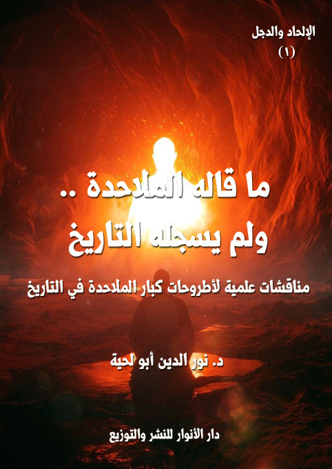

الكتاب: ما قاله الملاحدة.. ولم يسجله التاريخ
المؤلف: أ.د. نور الدين أبو لحية
الناشر: دار الأنوار للنشر والتوزيع
الطبعة: الأولى، 1438 هـ
عدد الصفحات: 352
ISBN: 978-620-2-34724-2
لمطالعة الكتاب من تطبيق مؤلفاتي المجاني وهو أحسن وأيسر: هنا

التعريف بالكتاب
هذه الرواية الحوارية محاولة لاستنطاق أصوات الفطرة التي لم يستطع كبار ملاحدة التاريخ أن ينطقوا بها، أو يسجلوها في كتبهم، أو يسجلها التاريخ عنهم.. بينما كل شيء يدل عليها، فالإنسان مهما انحرف عن فطرته، فسيبقى فيه ما يصرخ بالحقيقة التي يغض طرفه عنها.
وقد استلهمنا هذه الأحاديث من تلك الصرخة التي صرخها فرعون الطاغية المستبد الذي كان يجاهر كل حين بمعارضته لربه، وتكذيبه به.. لكنه في اللحظة التي تنكشف فيها الحقائق راح يصرخ بالاعتراف بالله، والإذعان له.. وهذا يدل على أنه كان في قرارة نفسه يعترف بالله، ولكن كبرياءه حال بينه وبين الإذعان له، كما قال تعالى: {وَجَحَدُوا بِهَا وَاسْتَيْقَنَتْهَا أَنْفُسُهُمْ ظُلْمًا وَعُلُوًّا} [النمل: 14]
وهكذا يحكي لنا القرآن الكريم قصص أولئك المشركين الذين يقرون بالله، ويخلصون له، ويتخلصون من كل الأوثان التي تحول بينهم وبينه في ساعات الشدة والضيق، قال تعالى: {فَإِذَا رَكِبُوا فِي الْفُلْكِ دَعَوُا اللَّهَ مُخْلِصِينَ لَهُ الدِّينَ فَلَمَّا نَجَّاهُمْ إِلَى الْبَرِّ إِذَا هُمْ يُشْرِكُونَ} [العنكبوت: 65]
ما قاله الملاحدة ولم يسجله التاريخ (5)
تحاول هذه السلسلة المعنونة بـ[الإلحاد.. والدجل] مواجهة الموجة الإلحادية الجديدة التي تكتسح مجتمعاتنا الإسلامية خصوصا، والمجتمعات الإنسانية عموما، لتحقق مشروع الشيطان الأكبر: صرف الإنسان عن الله، وصرفه بعد ذلك عن كل القيم الإنسانية والدينية الرفيعة، والانحدار به في هاوية [أسفل سافلين]، حيث يفقد الإنسان إنسانيته، ويفقد معها قيمه وكرامته، وينضم بعدها إلى معسكر الشياطين.
وقد استثمر هذا الإلحاد الجديد الدجل الديني الذي وقع فيه أصحاب الأديان، وخصوصا المسلمين في عصرنا، من إعطائهم صورا مشوهة للدين تمتلئ بالتطرف والعنف والإرهاب وكل القيم الشيطانية، كما استغل سلفهم من ملاحدة التنويريين أخطاء الكنيسة ودجلها وانحرافها عن رسالتها المثالية الرفيعة، لتصبح دين خرافة وإقطاع واستبداد.
وقد رأينا أنه لا يمكن لأحد من الناس أن يواجه هذين النوعين من الإلحاد [التنويري والجديد] من دون أن يعترف بوجود الدجل الديني، فلا يمكن لمن يظل محتفظا بالخرافات والضلالات المتسربة للدين أن يواجه الحقائق العلمية والعقلية التي يدل عليها كل شيئا.
ولذلك كتبنا سلسلة [الدين.. والدجل] قبل أن نكتب هذه السلسلة الجديدة، لنحطم بذلك أكبر الأسس التي تقوم عليها البراهين الإلحادية، والمعتمدة على نقد التراث الديني، واستغلال أخطائه وضلالاته ودجله، ولكي لا نلتزم بكل ما يريد دعاة الإلحاد التنويري أو الجديد من إلزامنا به، فدين الله أعظم من أن يمثله البشر، وإنما يدل على نفسه بنفسه من خلال مصادره المقدسة.
وبما أن هذا النوع من الإلحاد لا يكتفي باللغة الفلسفية أو العلمية، وإنما يستعمل كل الوسائل والأساليب ليصل لعوام الناس وخواصهم، فهو يستعمل اللغة الأدبية في رواياته وقصصه القصيرة والطويلة، ليصل إلى الجماهير العريضة من الناس، كما يستعمل الكتابة
ما قاله الملاحدة ولم يسجله التاريخ (6)
العلمية والأكاديمية ليصل إلى نخبة المثقفين، فإنه يلزم على من يريد أن يواجه هذه المنظومة الشاملة لأخطر أنواع الأسلحة أن يستعمل نفس أساليبها ووسائلها حتى يصل إلى عوام الناس ونخبتهم.
ولذلك استعملت هذه السلسلة كلا الأسلوبين: الأسلوب العلمي الذي يصف الواقع بدقة، ويرد عليه، والأسلوب الأدبي الذي يصف الواقع ببعض الرمزية ليقرب الصورة، ويحولها إلى واقع مشاهد بدل أن يكون واقعا مسموعا أو موصوفا.
وبما أن هذا النوع من الإلحاد لا يكتفي باللغة الجادة، وإنما يضم إليها الكثير من السخرية الممتلئة بالبذاءة والوقاحة مستثمرا الواقع الديني المزيف، فلا مناص لنا من أن نستعمل السخرية من باب المشاكلة، ولكنا نربأ بأنفسنا أن نقع في البذاءة التي يقع فيها، وإنما نستعمل السخرية التي نص عليها قوله تعالى حكاية عن نوح عليه السلام: {وَيَصْنَعُ الْفُلْكَ وَكُلَّمَا مَرَّ عَلَيْهِ مَلَأٌ مِنْ قَوْمِهِ سَخِرُوا مِنْهُ قَالَ إِنْ تَسْخَرُوا مِنَّا فَإِنَّا نَسْخَرُ مِنْكُمْ كَمَا تَسْخَرُونَ} [هود: 38]
وهي سخرية ممتلئة الأدب، ومضمخة بعطر السلام، فلا نقصد منها إهانة لهؤلاء الملاحدة أو تحقيرا لهم، وإنما قصدنا منها أن ينتبهوا إلى أنفسهم، وما تريد بهم الشياطين.
وهكذا فإننا لا نريد من استعمال كلا اللغتين الجادة والساخرة سوى الخير لهؤلاء الضحايا المغرر بهم، فهم فريسة الجهل، وتعطيل العقل، كما هم فرائس للواقع الديني المزيف، ولو أنهم أبصروا الحقيقة الجميلة الصافية، لكانوا أول المدافعين عنها.
وبما أن هذا الإلحاد الجديد يستمد مصادره من الإلحاد التنويري ومن الصراع بين المتدينين، فهكذا سنفعل في مناقشتنا له من الاستفادة من كل المصادر التي تناقشه أو ترد عليه بلغة هادئة أو لغة قاسية.. مع فارق بسيط، وهو أننا لا نعتمد إلا الصدق والحقيقة، فالغاية لا تبرر الوسيلة.
ولذلك سيرى القارئ الكريم أننا نستفيد من الكثير من المراجع التي اهتمت بنقد
ما قاله الملاحدة ولم يسجله التاريخ (7)
الإلحاد، بغض النظر عن الجهة التي أصدرتها.. فهي جميعا مراجع لها قيمتها العلمية، ويشكر أصحابها عليها، ونحن نعتبرهم شركاءنا في الحرب على هذا الدجل الخطير الذي يريد أن يقضي على كل القيم الإنسانية، فالإلحاد مقدمة لانهيار الإنسانية.
ولا ينبغي للمسلم العارف بدينه أن تضيق نفسه بهذا، فالله تعالى أخبرنا أن هناك الكثير من القواسم المشتركة بيننا وبين أهل الكتاب، كما قال تعالى: {وَلَا تُجَادِلُوا أَهْلَ الْكِتَابِ إلا بِالَّتِي هِيَ أَحْسَنُ إلا الَّذِينَ ظَلَمُوا مِنْهُمْ وَقُولُوا آمَنَّا بِالَّذِي أُنْزِلَ إِلَيْنَا وَأُنْزِلَ إِلَيْكُمْ وَإِلَهُنَا وَإِلَهُكُمْ وَاحِدٌ وَنَحْنُ لَهُ مُسْلِمُونَ} [العنكبوت: 46]
ولكن ذلك لا يمنعنا من نقد الدجل الديني الذي وقع فيه بعض رجال الأديان المختلفة، والذي كان سببا من أسباب الإلحاد، مثلما نقدنا الدجل الديني الذي وقع فيه بعض المسلمين.
وفي الأخير قد يعتبر البعض البحث في هذا نوعا من الترف العقلي الذي لا مبرر له، وأن المسلمين بخير، ولا يحتاجون لمثل هذا الأبحاث، وقائل هذا لا يعرف الواقع، وليس له تفكير استشرافي مستقبلي ليعرف ما يراد بالمسلمين.
فمعسكر الاستكبار العالمي الذين استثمر جهل المسلمين ليغزو أرضهم، ويسرق خيراتهم، هو نفسه الذي لا يزال يخطط، لا للعودة من جديد، وإنما لتحويل المسلمين إلى خدم مسخرين لخدمته، ولا يتمكن من ذلك إلا إذا استأصل منهم إنسانيتهم، ولن يتاح له ذلك إلا إذا استأصل منهم عقيدتهم.. وأول عقائدهم إيمانهم بالله.
ونحب أن ننبه في مقدمة هذه السلسلة كما نبهنا في مقدمة سلسلة [الدين.. والدجل] إلى أن هدفنا منها هو النصيحة الصادقة المخلصة التي لا تتضمن أي نوع من العداوة أو الحقد، فنحن نعتقد أن هؤلاء الملاحدة إخواننا في الإنسانية، وأنه يجب علينا جميعا أن نبحث عن الحقيقة، وأن نسلك في حياتنا ما تدعو إليه من غير أن يشنع بعضنا على بعض، أو يلغي بعضنا بعضا.
ما قاله الملاحدة ولم يسجله التاريخ (8)
من الأساليب التي يستعملها الملاحدة قديما وحديثا في مناقشاتهم مع المؤمنين من أهل الأديان المختلفة، ما يطلق عليه (الشخصنة) (1)، وهي التركيز على الأشخاص بدل الحقائق، على الرغم من نقدهم الشديد لما يسمونه التيارات السلفية والراديكالية والأصولية، وعلى الرغم من تبجحهم بكونهم من أهل العلم والحقيقة والعقل.
إلا أننا عندما نستقرئ كتاباتهم نجد ذلك التضخيم المبالغ فيه لكل ملحد مهما كانت رتبته من الثقافة والفكر.. فهو عندهم عبقري ما دام قد صرح بالإلحاد.. وهو عندهم أبله وغبي ورجعي ما دام محافظا على إيمانه.. بغض النظر عن طروحاته التي يطرحها.
وكمثال على ذلك موقفهم من الملحد العربي [عبد الله القصيمي]، فهو مع كونه قبل إلحاده كان أصوليا سلفيا متطرفا، كتب يدافع عن الشيخ محمد بن عبد الوهاب والطروحات السلفية المتشددة، ويشن هجوماته على المخالفين لهم، إلا أنه وبمجرد تصريحه بإلحاده تحول عندهم إلى رمز للعبقرية والتفكير المنطقي.
وهكذا نراهم يضخمون [إسماعيل مظهر] ذلك الشاب البسيط الذي لم يخلف أي ثروة علمية، ولا أي إنتاج فكري، لسبب بسيط، هو تأليفه لرسالة هزيلة لا تمت بصلة للفلسفة ولا للعلم عنونها بـ[لماذا أنا ملحد]، وتراهم يستعملون كل الوسائل للدفاع عنه، وعن كونه لم ينتحر، بل يتهمون المؤمنين بقتله من غير بينة ولا دليل.
وهكذا نراهم يمجدون الحداثيين، لا لشيء، وإنما لموقفهم المتشدد من الدين، ومن مصادره المقدسة، على الرغم من أن هؤلاء الذين يمجدونهم لم يقدموا أي بديل لأطروحاتهم
__________
(1) تُعرّف الشخصنة على أنها الحكم على الآخرين، أو على أفكارهم، ووجهات نظرهم، وتصرفاتهم، من مُنطلق شخصيّ أو رؤية شخصيّة، ويُقال في اللغة العربية شَخْصَن الفكرة؛ أي شرحها من وجهة نظره الشخصيّة، أو أعطى الأمر صبغةً شخصيّة.
ما قاله الملاحدة ولم يسجله التاريخ (9)
إلا البديل الذي تلقفوه من الغرب، ومن الأساتذة الذين تتلمذوا عليهم.
ونفس الشيء نجده في موقفهم من العلماء من غير العرب.. فهم يمجدون الملاحدة منهم، ويحتقرون المؤمنين حتى لو كانوا من أصحاب تخصص واحد، ومدرسة واحدة.
ومن الأمثلة على ذلك أنهم يقدمون كل أساتذة نظرية التطور من الملاحدة على نفس القائلين بهذه النظرية من غيرهم حتى لو كان دارون نفسه (1).. فهم يشيدون بالعالم الألماني [أرنست هايكل]، لا بسبب دقته العلمية، وإنجازاته في هذا المجال (2)، وإنما بسبب تصريحه بالإلحاد، ولهذا نراهم يرددون كل حين اعتباره أن أصل الحياة هو [المونيرا] التي تركبت اتفاقا من الأزوت والهيدروجين والأكسجين، ومنها تكونت الحياة.. ويرددون معها قوله: (ائتوني بالهواء وبالماء وبالأجزاء الكيماوية وبالوقت وسأخلق الإنسان) (3)
وهكذا نراهم يمجدون كاهن الإلحاد الأكبر في العصر الحديث [ريتشارد دوكينز] الذي
__________
(1) يقول العقاد: (أما داروين فلم يزعم قط أن ثبوت التطور ينفي وجود الله، ولم يقل قط أن التطور يفسر خلق الحياة، وغاية ما ذهب إليه أن التطور يفسر تعدد الأنواع الحيوانية والنباتية، وفي ختام كتابه عن أصل الأنواع يقول أن الأنواع ترجع في أصولها إلى بضعة أنواع تفرعت على جرثومة الحياة التي أنشأها الخلاق) [عقائد المفكرين في القرن العشرين، عباس محمود العقاد، ص 54]
ثم ينقل عن شريكه في تأسيس نظرية التطور [والاس] من كتابه [عالم الحياة] متحدثا عن عقيدة داروين: (إنه على ما يظهر قد صار إلى نتيجة واحدة، وهي أن الكون لا يمكن أن يكون قد وجد بغير علة عاقلة، ولكن إدراك هذه العلة على أي وجه كامل يعلو على إدراك العقل البشري)
ثم عقب [والاس] عليه بقوله: (وإني لأولي هذه النظرة كل عطفي وشعوري، ولكنني مع هذا أرى أننا مستطيعون أن نلمح قبسا من القدرة التي تعمل في الطبيعة، يساعدنا على تذليل الصعوبة البالغة التي تحول دون العلم بحقيقة الخالق الأبدي الذي لا أول له ولا آخر)
(2) اعتبر الكثير من العلماء المنتقدين لنظرية التطور هايكل بالخداع،.قد نشرت مجلة ساينس مقالاً للباحثة بنيسي عام 1997 بعنوان: (أجنّة هايكل: إعادة الكشف عن التزييف اتهمت فيها هايكل بالتضليل المتعمد وتزوير مراحل التطور الجنيني (1997)، وصرّحت المقالة بأن أعمال الباحث مايكل ريتشاردسون قدّمت أدلةً واضحةً على تزوير هايكل من خلال مقارنة رسوماته للأجنّة في المراحل المبكرة مع صورٍ حديثةٍ لأجنّة نفس الأنواع في نفس المرحلة الجنينية)
(3) العقيدة الإسلامية في مواجهة التيارات الإلحادية، فرج الله عبد الباري، ص 77 بتصرف.
ما قاله الملاحدة ولم يسجله التاريخ (10)
راح يحول من نظرية دارون من مجرد كونها محاولة لفهم سر نشأة الحياة وتعدد أنواعها إلى نظرية فلسفية تحاول أن تزيح الله من إيجاد الحياة، بل من إيجاد كل شيء.
ولذلك نجد كتب دوكينز تحظى من الشهرة والانتشار بين الملاحدة ما لا تحظى به كتب أعلام نظرية التطور الكبار أنفسهم، ونحسب أنه لولا امتطاؤه لهذه النظرية واستثمار لها في الدعوة للإلحاد ما كانت له هذه الشهرة، ولا المقروئية.
وهكذا نجدهم في تعاملهم مع أعلام الفيزياء الحديثة، والتي صرح كبار أعلامها بإيمانهم بالله، بل ألفوا في ذلك المؤلفات.. لكن مرض الشخصنة الذي أصيب به دعاة الإلحاد الجديد جعلهم يغفلون عن هؤلاء، وعن غيرهم كثير، ويركزون على ستيفن هوكينج الذي يحاول الملاحدة أن يلغوا به كل الفيزيائيين التقليديين والمحدثين، كما عبر عن ذلك الملحد التطوري [ريتشارد دوكينز] بقوله: (لقد طرد دارون الإله من البيولوجيا، ولكن الوضع في الفيزياء بقي أقل وضوحاً، ويُسدد هوكينج الضربة القاضية الآن!!)
وقد عبر [هوكينج] عن هذا الدور الذي وكل إليه في نشر الإلحاد باسم الفيزياء بقوله: (تماما مثلما فسر دارون ووالاس كيف أن التصاميم المعجزة المظهر في الكائنات الحية من الممكن أن تظهر بدون تدخل قوة عظمى، فمبدأ الأكوان المتعددة من الممكن أن يفسر دقة القوانين الفيزيائية بدون الحاجة لوجود خالق سخر لنا الكون، فبسبب قانون الجاذبية فالكون يستطيع ويمكنه أن يُنشيء نفسه من اللاشيء، فالخلق الذاتي هو سبب أن هناك شيء بدلا من لاشيء، ويفسر لنا لماذا الكون موجود، وكذلك نحن) (1)
انطلاقا من هذه الشخصنة التي يعالج بها الملاحدة أخطر قضية في الوجود [وجود الله]، يحاول هذا الكتاب، وهو مقدمة هذه السلسلة، أن يحطم هذه الأسطورة عبر مناقشته لأطروحات كبار الشخصيات التي يتبناها الملاحدة، ويدافعون عنها، ويعتبرونها نماذج للتفكير
__________
(1) مختصر تاريخ الزمن، ستيفن هوكينج، ص 165.
ما قاله الملاحدة ولم يسجله التاريخ (11)
المنطقي، والبحث العلمي، ونحن لا ننكر أن يكون لتلك الشخصيات إسهاماتها في البحث العلمي، ولا كونها تفكر تفكيرا منطقيا في الكثير من القضايا، ولكنا ننكر اعتماد الشخصنة بدل اعتماد البحث العلمي والعقلي في كل القضايا، وخاصة في هذه القضية الخطيرة.
وبما أن الملاحدة الجدد يعرضون أمثال هذه الشخصيات وعليها الكثير من تيجان الوقار والانبهار، وبلغة تصل للعام والخاص، فقد حاولنا في هذا الكتاب أن نستعمل نفس الأسلوب، ونعرض هذه الشخصيات بطريقة مبسطة سهلة لتصل إلى عوام الناس وخواصهم.
وحتى لا تكون ردودنا قاسية أو تحمل أي إساءة لأشخاص هؤلاء الملاحدة والمتعلقين بهم، فقد اعتمدنا منهج الاعتراف والإقرار، أي أننا حاولنا أن نستنطق الفطرة التي جبل عليها كل خلق الله بما فيهم الملاحدة أنفسهم، ليقوم الملاحدة أنفسهم بذكر أخطائهم والرد عليها بعد اكتشافهم للحقيقة، كما قال تعالى معبرا عن حال الكفار بعد معاينهم للحقائق: {وَيَوْمَ يَعَضُّ الظَّالِمُ عَلَى يَدَيْهِ يَقُولُ يَالَيْتَنِي اتَّخَذْتُ مَعَ الرَّسُولِ سَبِيلًا (27) يَاوَيْلَتَا لَيْتَنِي لَمْ أَتَّخِذْ فُلَانًا خَلِيلًا (28) لَقَدْ أَضَلَّنِي عَنِ الذِّكْرِ بَعْدَ إِذْ جَاءَنِي وَكَانَ الشَّيْطَانُ لِلْإِنْسَانِ خَذُولًا} [الفرقان: 27 ـ 29]
ولهذا فإن هذه الرواية الحوارية محاولة لاستنطاق أصوات الفطرة التي لم يستطع كبار ملاحدة التاريخ أن ينطقوا بها، أو يسجلوها في كتبهم، أو يسجلها التاريخ عنهم.. بينما كل شيء يدل عليها، فالإنسان مهما انحرف عن فطرته، فسيبقى فيه ما يصرخ بالحقيقة التي يغض طرفه عنها.
وقد استلهمنا هذه الأحاديث من تلك الصرخة التي صرخها فرعون الطاغية المستبد الذي كان يجاهر كل حين بمعارضته لربه، وتكذيبه به.. لكنه في اللحظة التي تنكشف فيها الحقائق راح يصرخ بالاعتراف بالله، والإذعان له.. وهذا يدل على أنه كان في قرارة نفسه يعترف بالله، ولكن كبرياءه حال بينه وبين الإذعان له، كما قال تعالى: {وَجَحَدُوا بِهَا وَاسْتَيْقَنَتْهَا أَنْفُسُهُمْ
ما قاله الملاحدة ولم يسجله التاريخ (12)
ظُلْمًا وَعُلُوًّا} [النمل: 14]
وهكذا يحكي لنا القرآن الكريم قصص أولئك المشركين الذين يقرون بالله، ويخلصون له، ويتخلصون من كل الأوثان التي تحول بينهم وبينه في ساعات الشدة والضيق، قال تعالى: {فَإِذَا رَكِبُوا فِي الْفُلْكِ دَعَوُا اللَّهَ مُخْلِصِينَ لَهُ الدِّينَ فَلَمَّا نَجَّاهُمْ إلى الْبَرِّ إِذَا هُمْ يُشْرِكُونَ} [العنكبوت: 65]
وجمعنا بين المشركين والملحدين في محل واحد ليس غريبا، ولا مستبعدا، فالملحد ليس سوى مشرك، أشرك الطبيعة بالله، ونسب الصنعة لغير أهلها، ونسب التدبير لغير أهله.. فلذلك كانت آيات الرد على المشركين هي نفسها آيات الرد على الملحدين.. فالمشرك الذي نسب الكون لصنم لا عقل له ولا تدبير، لا يختلف عن الملحد الذي ينسب الكون للطبيعة العمياء الصماء البكماء التي لا عقل لها ولا تدبير.
وقد اخترنا لتحقيق هذا الغرض سبعة أصناف من المدارس التي تضم كبار الملاحدة في التاريخ، غير مراعين في اختيار الشخصيات البعد الزماني، وهي:
التنويريون: ونقصد بهم أعلام التنوير في عصر النهضة الأوروبية، والذين اكتفى بعضهم بإبداء موقف سلبي من الكنيسة والمسيحية، بينما ذهب آخرون إلى إلغاء الأديان جميعا، بل صرح الكثير منهم بالإلحاد.. وقد ناقشنا في هذا الفصل استثمار الملاحدة لأخطاء المتدينين في الدعوة للإلحاد، أو كون الدين المزيف سببا في ظهور الإلحاد، وحاولنا أن نثبت عدم علاقة الإيمان ولا الإلحاد بالتنوير.. وأن كليهما يمكن أن يساهم في التنوير، أو يساهم في الظلامية.
الوجوديون: ونقصد بهم أعلام المدرسة الوجودية، وهي المدرسة التي تدعو إلى الحرية التامة في التفكير بدون قيود، وتؤكد على تفرد الإنسان، وأنه صاحب تفكير وحرية وإرادة واختيار، ولا يحتاج إلى موجه خارجي، وبالتالي لا يحتاج إلى إله.. ومع علمنا بكون الوجودية ذات تيارات مختلفة منها ما هو ملحد، ومنها ما لا علاقة له بالإلحاد، إلا أننا هنا ركزنا على
ما قاله الملاحدة ولم يسجله التاريخ (13)
الملاحدة خصوصا، وعلى العلاقة بين الأخلاق والإلحاد.
الحسيون: ونقصد بهم أعلام المدرسة الوضعية ودعاة المنهج التجريبي الذين طالبوا بالتعامل مع الحقائق الدينية بأساليب المنهج التجريبي المادي.
العبثيون: ونقصد بهم أعلام المدرسة العبثية، والتي تتصور الحياة بصورة ممتلئة بالعبث واللامعنى، وهي لذلك لا ترى أي مضمون حقيقي وراء السلوك الإنساني، بل وراء الحياة نفسها.. وقد ناقشنا من خلالهم التصورات الإلحادية للحياة، وعبثيتها، لنبين من خلال ذلك قيمة الإيمان ومدى فاعليته في الحياة.
المصارعون: ونقصد بهم أعلام المادية الديالكتيكية، وهي التفسير المادي الجدلي للمادة وللظواهر الطبيعية.. وقد ناقشنا من خلالهم هذه الطروحات، وبينا مدى ما تحمله من مصداقية علمية.
المتجبرون: ونقصد بهم أعلام العنصرية في التاريخ، والمرتبطين بالكثير من أعلام الملاحدة من أمثال نيتشة وسبنسر وهتلر وغيرهم.. وقد ناقشنا من خلالهم مدى الظلم الذي يلحق بالإنسان جراء الإلحاد، وإلغاء القيم الدينية والإنسانية.
الطبائعيون: ونقصد به علماء الفيزياء والبيولوجيا من أصحاب النظرة المادية والتفسير المادي للكون والحياة سواء كانوا من أعلام النظرة العلمية القديمة، أو النظرة العلمية الجديدة.. وقد ناقشنا من خلالها مدى دقة ما طرحوه من أفكار إلحادية.
ونحب أن ننبه إلى أن هذا العمل ـ مع اعتماده العلمية والعقلانية في طرح الأفكار ومناقشتها ـ إلا أنه من حيث الصياغة عمل فني، لا تراعى فيه الدقة في الوقائع التاريخية، فلذلك قد نضع بعض الشخصيات في أمكنة أو أزمنة لا علاقة لها بها من الناحية الواقعية، ذلك أن الهدف هو الفكرة، وليس الأحداث.
وبناء على هذا اعتمدنا الرمز وسيلة لطرح الكثير من الأفكار أو تقريبها، ومن أمثلة ذلك
ما قاله الملاحدة ولم يسجله التاريخ (14)
رمز [فندق الملاحدة]، والذي يمتلئ بكل ألوان الترف والزينة، لكن الملاحدة يحجبون عنه، ويعيشون حياة ممتلئة بالأسى، ومتوافقة مع ما اختاروه من مواقف.. وهو جزاء وفاق لحقيقة الملاحدة الذين تنعمت أجسادهم بزينة الحياة الدنيا، وشقيت أرواحهم بالانقطاع عن النعيم الحقيقي: نعيم التواصل مع الله.
ونحب أن ننبه أيضا إلى أننا في نقد بعض الطروحات العلمية نكتفي بالرد المجمل، لا المفصل، لأننا خصصنا كتبا خاصة بالرد المفصل على الطروحات الإلحادية المختلفة.. فهدف هذا الجزء هو التعريف بكبار مروجي الإلحاد، مع ذكر عوامل إلحادهم، والتعريف بطروحاتهم ومناقشتها مناقشة عامة لا تفصيلية.
ما قاله الملاحدة ولم يسجله التاريخ (15)
تبدأ حكاية رحلتي هذه مع [معلم الإيمان] عند زيارته لي لأول مرة، وقوله ـ بشدة ممزوجة لينا، وقسوة ممتلئة رحمة ـ: قم لتتعلم الإيمان.
فرددت عليه بتلقائية: أنا مؤمن بحمد الله، وقد ورثت إيماني عن أجداد كثيرين، كلهم يلهجون بالشهادتين، وماتوا وهم يرددونها.
قال: ذلك إيمان الوراثة.. وهو إيمان لا يفرقك عن غيرك، ولا يميزك عن سواك.. فكلهم ورثوا عقائدهم، كما ورثوا أموالهم.. ولا ينفعهم في اليوم الذي تبلى فيه السرائر إلا ذلك الإيمان الذي اكتسبوه، وعاشوه، وتحققوا به.. فعدل الله يأبى أن يحاسب الإنسان إلا على ما اختاره واكتسبه.
قلت: لكني سمعت مشايخي من العلماء والمحققين يسألون ربهم أن يرزقهم إيمانا كإيمان العجائز.. وقد حكى لي بعضهم أن الإمام الهمام شيخ الإسلام فخر الدين الرازي مر مع نفر من أصحابه على عجوز تعجبت من احترامهم له، فسألت عن سر ذلك، فقال لها بعضهم: هذا إمام وجد ألف دليل على وجود الله.. فتعجبت وقالت: لو لم يكن عنده ألف شك، لما احتاج إلى البحث عن ألف دليل.
قال: وهل تعرف دين العجائز، وإيمانهم؟
قلت: أجل.. فهو إيمان فطري بسيط لا يحتاج أي تكلف ولا استدلال.. هومثل حياتهم تماما، ممتلئ بالبساطة.. ليس فيه أي تعقيد.. ولا يحتاج بذلك أي بحث.
قال: فكيف يميز هؤلاء الحق من الباطل، والخير من الشر؟
قلت: هم ورثوا ذلك وراثة.
قال: فهل ورثوه عن معصومين لا يخطئون ولا ينحرفون، أم ورثوه عن بشر مثلهم يخطئون ويصيبون؟
ما قاله الملاحدة ولم يسجله التاريخ (16)
قلت: بل ورثوه عن بشر مثلهم، يخطئون ويصيبون.
قال: فهل ترى موازين الله الممتلئة بالعدالة تقبل باطلهم الممزوج بالحق، وشرهم الممزوج بالخير، لكونهم ورثوه عن آبائهم وأجدادهم، ولا مسؤولية لهم في ذلك؟
لم أدر ما أجيبه، لأني إن خالفته في ذلك قرأ علي قوله تعالى: {وَإِذَا قِيلَ لَهُمْ تَعَالَوْا إلى مَا أَنْزَلَ اللَّهُ وَإلى الرَّسُولِ قَالُوا حَسْبُنَا مَا وَجَدْنَا عَلَيْهِ آبَاءَنَا أَوَلَوْ كَانَ آبَاؤُهُمْ لَا يَعْلَمُونَ شَيْئًا وَلَا يَهْتَدُونَ} [المائدة: 104]، وغيرها من الآيات الكريمة التي تنعى عليهم تقليد المشركين لآبائهم، ووراثتهم الدين منهم.
وإن وافقته فيما ذكر أكون قد تخليت عن مبدئي الذي تعلمته وورثته.. لكني وجدت حيلة للفرار، فقلت: لك أن تقرأ علي ما شئت من آيات القرآن الكريم التي تنعى على المشركين اتباعهم لآبائهم وأجدادهم.. لكن الأمر مختلف هنا، فنحن مسلمون بحمد الله، وقد ورثنا الإسلام من أشخاص كثيرين كلهم مسلمون.
قال: الحق أعظم من أن يتعلق بالأشخاص.. الحق اسم الله، واسم الله لا يسمى به غيره.. فلذلك ابحث عنه تجده..
قلت: فكيف أبحث عنه؟
قال: بالبحث عن أهله.
قلت: ها قد عدت بنا إلى الأشخاص..
قال: عندما تسلم للأشخاص، وتنقاد لهم، وتجثو بين أيديهم كالميت بين يدي الغسال، لا تناقش لهم رأيا، ولا ترد عليهم وهما، حينها تكون عبدا للأشخاص.. وحينها ستسد الحجب بينك وبين الحقيقة.
قلت: أتقصد أن أناقش الأشخاص؟
قال: تناقش أفكارهم، لا ذواتهم.. وحججهم، لا أعيانهم.
ما قاله الملاحدة ولم يسجله التاريخ (17)
قلت: بم؟
قال: بحجج الله التي أودعها الله في عقلك، لتميز الحق من الباطل، والخبيث من الطيب.
قلت: هذا كلام جميل.. فمن أنت.. ومن الذي أرسلك لي؟
قال: ما دمت قد جئت لأعلمك الإيمان.. فأنا [معلم الإيمان]
قلت: لا شك أن الذي أرسلك لي هو معلمي [معلم السلام]
قال: كلنا نقطة تحت الباء (1).. فلا تسأل عما لا يعنيك.. ولا تسأل عما يعجز عقلك عن فهمه.
قلت: معذرة.. نسيت أنني أتحدث مع النقطة التي تحت الباء.. لكن أخبرني عن المنهج الذي تريد أن تعلمني به الإيمان.. هل على منهج الأشاعرة.. أم على منهج الماتريدية.. أم على منهج المعتزلة.. أم على منهج أهل الحديث.. أم على منهج الإمامية.. أم على منهج الإباضية.. أم على منهج المتكلمين.. أم على منهج الفلاسفة.. أم على منهج الإشراقيين والروحانيين.. أم على منهج..؟
قاطعني، وقال: ألم تتعلم من معلمك معلم السلام أن تترك مثل هذه الأسماء.. فلا يمكن إدراك الحقائق لمن سجن عقله في سجون الأسماء؟
قلت: بلى.. لك الحق في ذلك.. فالحق أعظم من أن يسجن في سجون الطوائف والمذاهب والأشخاص.
-\--\-
لست أدري هل كنت نائما أم يقظان حين جرى هذا الحوار بيني وبين معلمي الجديد [معلم الإيمان]، لكن الذي أدركه جيدا أنني كنت في قمة يقظتي، ومعها في قمة حزني، قبل
__________
(1) هذه إشارة كان يستعملها كثير من الصالحين للدلالة على العبودية، وقد جعلناها رمزا لمعلم السلام، ولمن تحقق بمعاني السلام الشامل.
ما قاله الملاحدة ولم يسجله التاريخ (18)
تلك اللحظات السعيدة التي التقيت فيها معلمي الجديد.
كنت حينها مستلقيا على أريكتي أشاهد شريطا وثائقيا عن ظاهرة الإلحاد الجديد، وسيطرته على الشباب المسلم، وتحول الإلحاد إلى موضة جديدة لا تختلف عن موضة الأكل واللباس.
وقد آثر معدو الشريط الوثائقي تصويب الكاميرا على مجموعة من الشباب الملحد، مع ترك الفرصة لهم للحديث كما يشتهون من غير أي تدخل خارجي يوجه دفة الحديث.
وهذا أسلوب صحفي اعتمدته بعض الوسائل، الإعلام ورأت مدى نجاعته في نقل الصور والحقائق بدقة.. وقد أصابوا في ذلك.. فقد صور أولئك الشباب هذا الواقع الإلحادي الجديد بكل دقة، وبكل ألم.
كان أول من بدأ الحديث شاب في مقتبل العمر، راح يردد بين أصدقائه بفخر واعتزاز ـ مجيبا من سأله عن سر إلحاده ـ: وكيف لا ألحد.. وأنا أرى أن البشرية لم تزدهر، والعقول لم تنور إلا بعد أن تخلصت من قيود الإيمان الممتلئ بالخرافة.. انظروا إلى كبار عمالقة التاريخ من أمثال هولباخ وفولتير وهيغل وانجلز وماركس ونيتشه وفرويد ودركايم ولينين وتروتسكي وسارتر.. وغيرهم.. ترونهم جميعا نبذوا أديانهم وكل الخرافات التي تقيد بها سلفهم، ليؤمنوا بإله العقل والعلم.
قال آخر: وانظروا إلى عمالقة العرب تجدونهم جميعا من الذي أقروا بإلحادهم، بل انتصروا له رغم القمع الذي واجههم به الخرافيون.. هل سمعتم بإسماعيل مظهر، والزهاوي، والرصافي، والعظم، والقصيمي.. كل هؤلاء العمالقة، وغيرهم كثير، تمردوا على الخرافة، واعتنقوا الإلحاد.
قال آخر: هل سمعتم بعبقري العصر، بل نبي الإلحاد الجديد [ريتشارد دوكنز] صاحب القرآن البديل عن قرآن الخرافيين.. إنه صاحب كتاب [وَهْم الإله]، ذلك الكتاب العبقري
ما قاله الملاحدة ولم يسجله التاريخ (19)
الذي استطاع أن يحطم به أسطورة الدين وكل عقائده الخرافية.. لقد عبر في كتابه ذلك عن الحقيقة التي تاهت البشرية عنها لأجيال طويلة، لقد أثبت فيه أن (الملحدين يجب أن يكونوا فخورين، لأن الإلحاد دليل على عقل صحي ومستقل).. وأثبت (أن الملحدين يمكن أن يكونوا سعداء، متّزنين، ذوي أخلاق، وراضين فكريًا).. وأن (الانتقاء الطبيعي والنظريات العلمية المشابهة تتفوق على فرضية الإله في تفسير وجود الكائنات الحية والكون) (1)
قال آخر: ومثله ذكر [روبرت بيرسيغ]، فقد اكتشف أنه (عندما يعاني شخص من وهم يسمى ذلك جنوناً، وعندما يعاني مجموعة أشخاص من وهم يسمى ذلك ديناً)
قال آخر: وهل سمعتم بذلك العبقري العظيم [سام هاريس] صاحب الكتاب الأسطورة [نهاية الإيمان] الذي تصدر قوائم أكثر الكتب مبيعًا في العالم، وصاحب المحاضرات والفيديوهات التي يسمعها ويشاهدها مئات الآلاف حول العالم، وصاحب المؤسسة العظيمة [المعرفة العلمية] التي حطمت كل خرافات المتدينين.
قال آخر: وهل سمعتم بذلك الفلكي الأمريكي العظيم [كارل ساغان] صاحب كتاب [عالم تسكنه الشياطين: العلم الطبيعي كشمعة في الظلام] ذلك الكتاب الذي قضى على الخرافة والأسطورة، وبشر بملة الإلحاد الجديد.. هذه النِّحلة الطبيعية المعاصرة التي قضت على كل الأديان.. ورفعت شعارات التنوير والعلم الطبيعي والعقلانية.. لقد استطاع أن يكمل بجهوده الجبارة ما قام به ريتشارد دوكينز في كتابه [وهم الإله]، وسام هاريس في كتابه [نهاية الإيمان]، وهيتشنز في كتابه [الإله ليس عظيمًا]
قال آخر: لا تنسوا أن تذكروا أعظم فيزيائي في التاريخ [ستيفن هوكينغ] الذي استطاع أن يجيب عن كل تساؤلاتنا المرتبطة بنشأة المادة، مثلما أجاب دوكينز عن أسئلتنا المرتبطة
__________
(1) هذه النصوص الإلحادية نقتبسها عادة من المنتديات والمواقع الإلحادية، وهي كثيرة، لا نحتاج إلى بيان المصدر كل مرة، ويمكن لمن يرغب في التوثيق أن يسجل النص، ويرى مصادره في محركات البحث.
ما قاله الملاحدة ولم يسجله التاريخ (20)
بالحياة.. ولذلك لا نحتاج أي دين ليجيبنا عن تساؤلاتنا.. فالعلم هو مصدر الحقيقة لا الدين.
قال آخر، بصوت ممتلئ بالانبهار والدهشة، وهو يحمل صورة هوكينغ وهو مقعد على كرسيه: لقد توصل هذا المقعد إلى معادلة عالمية تجمع بين النظرية العامة للنسبية التي توصل إليها أينشتاين وبين علم ميكانيك الكم.. واستطاع بذلك أن يحطم كل الخرافات التي تعلق بها المتدينون.
فجأة تغير حديث الشباب المجتمعين من الحديث عن الإلحاد وأسبابه إلى الحديث عن هوكينغ الذي امتلأوا إعجابا به إلى حد الثمالة، قال أحدهم: ألم تسمعوا ما أوردته القنوات الفضائية هذه الأيام من أن أطروحة الدكتوراه التي أعدها هوكينغ عام 1966، لاقت إقبالا كبيرا من الجمهور في يوم نشرها، ما أدى إلى تعطل قسم النشر بالموقع الإلكتروني لجامعة كامبريدج.. بل حاول أكثر من 500 ألف شخص تحميل البحث العلمي، المعنون بـ[خصائص الكون المتمدد]
قال آخر: أجل.. وقد وصف الدكتور أرثر سميث، من جامعة كامبريدج، تلك الأرقام بأنها مهولة.. وأضاف الدكتور سميث، نائب مدير الاتصالات العلمية بالجامعة: (هذه الأعداد أكبر بكثير من الأعداد التي حققها أي موضوع في مستودع جامعة كامبريج للأبحاث (أبوللو).. وأضاف: (ربما أجازف بالتخمين أن أطروحة البروفيسور هوكينغ تعد أكثر الموضوعات التي لاقت إقبالا، في أي مستودع للأبحاث على الإطلاق. لم نشهد أرقاما مثل تلك من قبل)
قال آخر: ألم تعلموا أن الأطباء قدروا في شبابه أنه لن يعيش سوى فترة محدودة بعدما تم تشخيص حالته عندما كان في الثانية والعشرين من عمره، بأنه مصاب بمرض عضال لا شفاء منه في العضلات والجهاز العصبي.. لكنه عاش رغما عنهم، ليذهل البشرية باكتشافاته العجيبة.
ما قاله الملاحدة ولم يسجله التاريخ (21)
بعد أن ملوا من الحديث عن هوكينغ، وبعدها عن دوكينز.. قال أحدهم: دعونا من كل هذه الأحاديث.. وهلم أسمعكم آخر إبداعاتي التي نشرتها على صفحتي.. لقد وضعت آذانا جديدا للملاحدة (1)..
ضحك أصحابه، وقالوا: هلم أسمعنا إياه.. فصوتك جميل جدا.
راح الشاب يرفع صوته مثل المؤذنين بكلمات في قمة البذاءة لا أستطيع ذكرها لكم.. بعد انتهائه من سخريته قال بعض الحاضرين: رب هذة الدعوة التامة والصلاة القائمة آتي سيدنا نيوتن الوسيلة والفضيلة، وابعث داروين المقام المحمود الذي وعدته، إنك لا تخلف الميعاد.
قال آخر: واللات والعزى ومناة الثالثة الأخرى، لو قرأت هذا الآذان علي برج إيفل لرأيته خاشعا متصدعا من خشية نيتون.?
قال آخر: تعالوا لأسمعكم سورة جديدة من قرآن الملحدين، سميتها سورة الفاتحة.. اسمعوا لها..
ثم راح يقلد بعض المقرئين: أعوذ بداروين من الله الرجيم.. باسم نيوتن العالم العظيم.. الحمد لداروين العالم الفهيم.. هاتك عرض الدين.. إياك ندرس وإياك نستعين.. اهدنا الفهم السليم. فهم الذين أنعمت عليهم.. غير الذين ضحكت عليهم ولا المهبولين.
قال آخر: وقد وضعت سورة سميتها سورة داروين.. اسمعوا لها.
راح يقرأ: بسم العلم العظيم.. ألم.. والعلم العظيم.. هل اتاك حديث داروين.. اذ قال ياقوم انا كنا قردة خاسئين.. فتتطورنا إلى بشر عاقلين.. كذلك التطور يفعل لو كنتم موقنين.. فكذبوه وقالوا عجوز سمين.. أإذا كنا قرودا نتطور إلى بشرا إن هذا إلا أساطير الاولين..
__________
(1) هذه النصوص الساخرة منقولة من مواقع مختلفة من صفحات الملاحدة واللادينيين العرب، وهي تعبر عن مظهر من مظاهر الإلحاد الجديد.
ما قاله الملاحدة ولم يسجله التاريخ (22)
ومابال القرود لم تتطور إن كنت من الصادقين.. قال ياقوم إنا نشترك معهم بسلف مشترك لو كنتم تعقلون.. قالوا مانراك إلا خرفت ياداروين.. فأرسلنا عليهم عذابا مهين.. وكذلك نجزي الظالمين.. فسبح بحمد العقل إنه لك دليل متين.. صدق العقل العظيم.
-\--\-
بقي الشباب الملحد فترة يمزج بين الجد والسخرية من القرآن الكريم، ومن كل الشعائر الدينية إلى أن كدت أنفجر ألما وحزنا وغضبا.. وقد زاد في ألمي أن هذا الشريط يراه ويسمعه ملايين الناس، والكثير منهم لا اهتمام له بالدين، ولا علاقه له به.. وقد خشيت أن ينتقلوا به من واقع الغفلة إلى واقع الجحود.. لتنتشر بذلك موضة الإلحاد، وتنتشر معها قيم الملاحدة.
وقد زاد في ألمي أن الفرص كلها كانت متاحة لهؤلاء الدجالين لينشروا سمومهم، فالكثير من الوعاظ والخطباء تخلوا عن الحديث عن العقائد والقيم، ليتحدثوا عن طوائفهم ومذاهبهم.. ليكفر بعضهم بعضا، ويبيح بعضهم دماء بعض لتخلو الفرصة بعدها لهذا الجيل من المنحرفين والملحدين.
في تلك اللحظات الأليمة، جاءني معلم الإيمان.. وطلب مني الاستعداد للقيام بأول رحلة لتثبيت الإيمان.. وطلب مني أن أحمل قلمي، لأسجل كل ما أراه وأسمعه بدقة.
سألته عن وجهتنا، فقال: سنذهب إلى فندق الملاحدة.
قلت متعجبا: فندق الملاحدة.. ماذا تقول.. لعلك أخطأت.. قل جحيم الملاحدة.. لا فندق الملاحدة.. ألم تسمع سخريتهم من القرآن الكريم.. ألم تر صلافتهم ووقاحتهم.. هل ترى أن أمثال هؤلاء المجرمين يجازون بالفنادق.. لعل الأمر اختلط عليك؟
لم يأبه معلم الإيمان لكلامي.. بل سار بي في متاهات عجيبة لا أستطيع وصفها، حتى وصل بي إلى عمارة ضخمة، ممتلئة بكل ألوان الزينة، وفيها كل أنواع الرفاه.. وقال لي: هذا هو فندق الملاحدة.. فسر إليه، وستجد من يرشدك في رحلتك هذه.. ولا تنس أن تكتب كل ما
ما قاله الملاحدة ولم يسجله التاريخ (23)
تسمع.. وتسجل كل ما ترى.
امتلأت دهشة لما رأيت.. وقلت في نفسي: هل هذا هو فندق الملاحدة.. ألأجل هذا الفندق راح أولئك الشباب يتركون دينهم؟
قال لي معلم الإيمان: لا تستعجل.. وسر.. فلن ترى العجائب إلا بالسير.
قلت: وأنت.. ألن تسير معي؟
قال: أنا دوري الهداية والدلالة.. وقد انتهى الآن.. وسترى في الطريق من يرشدك.. فلكل وجهة إمام.
قال ذلك، ثم غاب عني، كما تعود معلم السلام أن يغيب.
سرت في الطريق المؤدية إلى فندق الملاحدة، وكانت ممتلئة بالزهور الجميلة، لكنها لم تكن تصدر أي رائحة.. بل كانت ممتلئة بالحزن والكآبة.. وكانت أول مرة أرى فيها الزهور بتلك الحالة.. وكانت أول مرة أشعر فيها بالأسى والألم، وأنا أعاين جمالها..
في مدخل الفندق.. رأيت شابا ممتلئا بأنوار الإيمان، استقبلني بأدب، وراح يقول لي: لاشك أن الذي أرسلك هو معلمي معلم الإيمان.
قلت: أجل.. هل تعرفه؟
قال: وهل يمكن لي أن أنساه.. لقد جعله الله واسطة الهداية التي أخرجتني من ظلمات الغواية.
قلت: عجبا.. وهل مررت بظلمات الغواية.. لا يبدو عليك ذلك.
قال: هل رأيت الشباب الذين امتلأوا إلحادا وغفلة؟
قلت: أولئك المجرمين أصحاب القلوب المظلمة، والعقول المعطلة.. لا تحدثني عنهم.
قال: لقد كنت أحدهم.. لكن الله من علي بمعلم الإيمان.. فخرجت من التيه إلى الرشاد.. ومن الضلال إلى الإيمان.
ما قاله الملاحدة ولم يسجله التاريخ (24)
قلت: كيف ذلك؟
قال: لقد رحل بي إلى هذا الفندق.. وفيه عاينت الحقيقة التي كان عقلي غافلا عنها..
قلت: إن ما تقوله عجيب.. فكيف يكون فندق الملاحدة مدرسة للإيمان.. وكيف يكون مركز الضلالة منبعا للهداية.. أتراكم أخطأتم التسمية.. أم ترى الإلحاد عندكم ليس سوى الإيمان؟
قال: لا هذا ولا ذاك.. هذا فندق الملاحدة، لأن نزلاءه جميعا ملاحدة..
قلت: لم تزدني إلا عجبا.. فكيف يكون أساتذة الإلحاد هم أساتذة الإيمان.
قال: عندما تراهم وتسمع كلامهم ستعرف حقيقة ذلك.
قلت: وهل سمعتهم أنت؟
قال: أجل.. ولولاهم لكنت الآن في هاوية الإلحاد التي أوقعتني فيها غفلتي.
قلت: لا أزال لا أفهم ما تقصد؟
قال: لقد كان هؤلاء النزلاء هم سبب غوايتي.. وأبى الله إلا أن يجعلهم سبب هدايتي.
قلت: كيف ذلك؟
قال: لقد كنت في فترة إلحادي وغفلتي معجبا بهم، فانيا فيهم، فكنت أتلقى كل ما يقولونه بتسليم مطلق، لا أناقش لهم رأيا، ولا أطلب منهم دليلا.. فقد كانت أقوالهم وحدها كافية لإقناعي.. وكانت أسماؤهم وحدها كافية لتسليمي.
قلت: ولم كان الأمر كذلك؟
قال: لقد ابتليت بأساتذة وأصدقاء زينوهم في عيني.. وصوروهم لي كما يصور الأنبياء والقديسون للمؤمنين.. وقد جعلني ذلك أقع في شباكهم.. ولولا أن من الله علي بمعلم الإيمان الذي عرفني حقيقتهم لكنت الآن في حفرة من حفرهم، وسجن من سجونهم.
قلت: فكيف وظفوك مرشدا في هذا الفندق؟
ما قاله الملاحدة ولم يسجله التاريخ (25)
قال: هم لم يوظفوني.. بل أنا الذي تطوعت لذلك.. حتى أصلح ما كنت أفسدت، وأرقع ما كنت مزقت.. فقد كنت داعية ضلالة.. وأبى الله إلا أن يجعلني داعية هداية.
قلت: وما ذلك على الله بعزيز.. فهلا دللتني على سر وجودي في هذا الفندق.
قال: لاشك أنك أحضرت قلمك وقراطيسك معك، كما طلب منك معلم الإيمان.
قلت: أجل.. هل تريدون توثيق عقود هذا الفندق؟
ابتسم، وقال: بل نريد تسجيل أحاديث نزلائه.
قلت: كيف ذلك.. وأنى لي بذلك؟
قال: في هذا الفندق أجنحة كثيرة.. يوجد في كل جناح منها مجموعة متجانسة من الملاحدة.. وهم يتحدثون ويناقشون أسرار الإلحاد وأسبابه ودوافعه.. وأنت مطالب بأن تسجل كل ما يقولونه بدقة من غير أن تتدخل في شيء.
قلت: وما الحاجة لكل هذا التعب.. لقد ترك الملاحدة تراثا ضخما، يمكن الرجوع إليه، فهو أدق من كل ما سأكتبه.
قال: ذلك ما سجلوه.. أما أنت فستسجل ما لم يسجلوه.. هناك أشياء كثيرة صاحت بها فطرتهم وعقولهم.. لكنهم لم يجرؤوا على تسجيلها.. ولا النطق بها.. وفي هذا الفندق من الأسرار ما يجعلهم يذكرون الحقيقة كما هي من دون طلاء ولا دجل.
قلت: كيف ذلك؟
قال: لا تسأل عن الكيف، فلن تفهمه.. فالله قادر على كل شيء.. ألم تقرأ قوله تعالى: {وَقَالُوا لِجُلُودِهِمْ لِمَ شَهِدْتُمْ عَلَيْنَا قَالُوا أَنْطَقَنَا اللَّهُ الَّذِي أَنْطَقَ كُلَّ شَيْءٍ وَهُوَ خَلَقَكُمْ أَوَّلَ مَرَّةٍ وَإِلَيْهِ تُرْجَعُونَ (21) وَمَا كُنْتُمْ تَسْتَتِرُونَ أَنْ يَشْهَدَ عَلَيْكُمْ سَمْعُكُمْ وَلَا أَبْصَارُكُمْ وَلَا جُلُودُكُمْ وَلَكِنْ ظَنَنْتُمْ أَنَّ اللَّهَ لَا يَعْلَمُ كَثِيرًا مِمَّا تَعْمَلُونَ} [فصلت: 21، 22]
قلت: بلى.. لكن ذلك في الآخرة.
ما قاله الملاحدة ولم يسجله التاريخ (26)
قال: ربك رب الدنيا والآخرة..
قلت: لكن الله ذكر جلودهم؟
قال: من أنطق جلودهم قادر على أن ينطق ألسنتهم.
قلت: فهل هناك جلادون يجبرونهم على النطق بالحقيقة التي كانوا لا يجرؤون على النطق بها.
قال: لا تقل هذا فـ {لَا إِكْرَاهَ فِي الدِّينِ} [البقرة: 256]
قلت: أتقصد أنهم ينطقون بالحقائق من تلقاء ذواتهم، من دون أن يجبرهم على النطق أحد؟
قال: أجل.. فقد تبين لهم في هذا الفندق {الرُّشْدُ مِنَ الْغَيِّ} [البقرة: 256]
قلت: فقد فازوا إذن؟
قال: لو قالوا ذلك في غير هذا الفندق لفازوا.. لكن الحال هنا مختلف.. حتى الشيطان نفسه لو جاء هنا لنطق بالحقيقة التي راح يكابر في الاعتراف بها.
قلت: أنا لا أزال كليلا دون فهم كل ما يحصل.. ما دام هؤلاء لم يفوزوا فلم كان جزاؤهم النزول في هذا الفندق الفخم.
قال: هو فخم بالنسبة لناظرك.. لأنك لم تنكر الحقائق، ولم تجادل فيها.. لكن النازلين في هذا الفندق من الملاحدة يتعذبون عذابا شديدا.. هم يتعذبون بقدر ما تتنعم أنت.
قلت: لم أفهم كيف يكون النعيم عذابا.
قال: ألم تقرأ قوله تعالى: {قُلْنَا يَانَارُ كُونِي بَرْدًا وَسَلَامًا عَلَى إِبْرَاهِيمَ} [الأنبياء: 69]؟
قلت: بلى.. ولكن تلك النار.. وذلك إبراهيم.
قال: من قدر أن يحول النار بردا وسلاما قادر على أن يحول هذا الفندق نارا وجحيما.
قلت: أتقصد أن سكان هذا الفندق لا يعاينون النعيم؟
ما قاله الملاحدة ولم يسجله التاريخ (27)
قال: بل يعاينونه كما نعاينه.. لكنهم يرونه جحيما، ولا يرونه نعيما.
قلت: لقد كل فهمي دون هذا.
قال: ألم تر في طريقك الأزهار كئيبة حزينة، لا تصدر أي رائحة؟
قلت: بلى.. وقد تعجب من ذلك.
قال: ذلك لتفهم أن النعيم منه، لا من الأزهار..
قلت: ما تعني؟
قال: الله تعالى هو الذي يرزقك السعادة عند رؤيتك للأزهار.. لا الأزهار هي التي ترزقك ذلك.. فهي ليست سوى مخلوق مثلك.
قلت: ألهذا إذن يعاين هؤلاء الملاحدة النعيم، ولا يذوقونه؟
قال: أجل.. أبى الله أن يذيق السعادة من جحده.. فالسعادة ثمرة التواصل مع الله.. وبقدر تواصلك معه تكون سعادتك به.
قلت: أجل.. أعرف هذا.. وقد مررت في رحلاتي السابقة بمن علمني علوم هذا.
قال: فهلم بنا لنزور أجنحة الملاحدة.
قلت: لقد ذكرت لي أن الأجنحة كثيرة.. فهل سنزورها جميعا؟
قال: لا.. سنكتفي بسبعة منها..
ما قاله الملاحدة ولم يسجله التاريخ (28)
سرنا إلى الجناح الأول في فندق الملاحدة، وقد كتب على بابه قوله تعالى: {يَهْدِي بِهِ اللَّهُ مَنِ اتَّبَعَ رِضْوَانَهُ سُبُلَ السَّلَامِ وَيُخْرِجُهُمْ مِنَ الظُّلُمَاتِ إلى النُّورِ بِإِذْنِهِ وَيَهْدِيهِمْ إلى صِرَاطٍ مُسْتَقِيمٍ} [المائدة: 16]
سألت المرشد عن الآية، وعلاقتها بهذا الجناح، فقال: هذا جناح التنويريين..
قلت: فمن هم؟
قال: هم الذين اختلط عليهم الأمر، فتصوروا ظلمات الغواية أنوارا.. كما تصوروا أنوار الهداية ظلمة.
قلت: أعرفهم.. إنهم أولئك الذين اكتووا بنار الاستبداد، ورأوا كيف يعلق العلماء والمطالبون بالعدالة على أعواد المشانق، فراحوا يكفرون بالسلطتين الزمنية والدينية، ويصيحون: (اشنقوا آخر ملك بأمعاء آخر قسيس)
قال: ليسوا كلهم كذلك.. فبعضهم لم ير شيئا من ذلك.. وإنما راح يحقد على الدين وعلى الله.. ويربط كل تخلف واستبداد وجور وجهل بالله.. وكأن الله هو الذي أمر عباده بذلك.
قلت: صدقت في هذا.. وقد رأيت من قومي من يربط الدين بالتاريخ الأسود للطغاة والمجرمين.. فيسقط عليه كل ما أحدثوه من جرائم.. وكأن الله هو الذي أمر بذلك.
قال: لقد اتخذ الشيطان من ذلك وسيلته للدعوة للإلحاد.. فربط الإيمان بالتخلف، وربط الإلحاد بالتحضر، مع أن الله وضع للتحضر والتخلف سننه التي من راعاها وتحقق بها تحققت له نتائجها سواء كان مؤمنا أو كافرا، وقد قال تعالى في القرآن الكريم: {كُلًّا نُمِدُّ هَؤُلَاءِ وَهَؤُلَاءِ مِنْ عَطَاءِ رَبِّكَ وَمَا كَانَ عَطَاءُ رَبِّكَ مَحْظُورًا} [الإسراء: 20
قلت: صدق الله العظيم.. بل إن الله تعالى أخبر أن الحضارة والتطور والرفاه متحقق
ما قاله الملاحدة ولم يسجله التاريخ (29)
للمؤمنين الذين يقيمون الكتاب حق إقامته، فقال: {وَلَوْ أَنَّهُمْ أَقَامُوا التَّوْرَاةَ وَالْإِنْجِيلَ وَمَا أُنْزِلَ إِلَيْهِمْ مِنْ رَبِّهِمْ لَأَكَلُوا مِنْ فَوْقِهِمْ وَمِنْ تَحْتِ أَرْجُلِهِمْ} [المائدة: 66]، وضرب لنا المثل على ذلك بسليمان عليه السلام الذي آتاه الله من خير الدنيا والآخرة من غير أن يحرمه ذلك من الإيمان.
قال: وضرب له المثل بذي القرنين الذي اتبع سنن الله، وسعى في الأرض ليحقق العدل والرفاه، وقد تحقق له ذلك.. فكل من سعى وصل.
قلت: وعيت هذا.. ووعيت ذلك الكبر الذي يعاني منه أمثال هؤلاء الذين يعتبرون أنفسهم متنورين.. فيضعون من مقاييس الحقيقة ما لا علاقة له بالعقول.
التفتّ إلى باب الجناح الضخم، وقلت: ألا يسكن في هذا الجناح إلا المتنورون؟
قال: بلى..
قلت: إنه جناح ضخم.. فهل هم كثيرون لهذه الدرجة؟
قال: هم أكثر مما تتصور.. كل الملاحدة يكادون ينزلون فيه.. أو لهم جزء فيه.. أو لهم زيارة له بين الحين والحين.
قلت: أتقصد أن من الملاحدة من يسكن هذا الجناح، وفي نفس الوقت يسكن جناحا آخر؟
قال: أجل.. ألم تقرأ قوله تعالى: {وَإِنَّ جَهَنَّمَ لَمَوْعِدُهُمْ أَجْمَعِينَ (43) لَهَا سَبْعَةُ أَبْوَابٍ لِكُلِّ بَابٍ مِنْهُمْ جُزْءٌ مَقْسُومٌ} [الحجر: 43، 44]؟
قلت: بلى.. فما فيها من العلم؟
قال: لقد أخبر الله تعالى أن سكان الجحيم تتعدد منازلهم بحسب تعدد جرائمهم.. فيعذب في كل محل بالعذاب المناسب لجريمته.
قلت: وعيت هذا.. فهل ستفتح لي الباب لأعاين هؤلاء التنويريين؟
ما قاله الملاحدة ولم يسجله التاريخ (30)
قال: أجل.. سأفتحه.. ولكنك لن ترى أحدا منهم.. بل ستمع كلامهم فقط.
قلت: لم.. أتراهم يضعون على رؤوسهم طاقية الإخفاء؟
قال: لا.. ولكن جناحهم مظلم تماما..
قلت: ولم لم تصلح إدارة الفندق إضاءة جناحهم؟
قال: هي صالحة.. ولكنهم يرفضون استعمال الإضاءة.. هم يحبون الظلام المطبق.. فلا يحلو لهم الحديث إلا فيه..
قلت: فهمت ذلك.. أنا أيضا لا يحلو لي الحديث إلا في الظلام المطبق؟
قال: ظلامهم ليس خاصا بعيونهم فقط.. بل هو ممتد إلى قلوبهم وبصائرهم.. وما الظلمة الحسية إلا صورة من صور الظلمة التي تحجبهم عن رؤية الحقائق.
فتح المرشد الباب.. فإذا بظلمة مطبقة.. لا ينطبق عليها إلا قوله تعالى: {أَوْ كَظُلُمَاتٍ فِي بَحْرٍ لُجِّيٍّ يَغْشَاهُ مَوْجٌ مِنْ فَوْقِهِ مَوْجٌ مِنْ فَوْقِهِ سَحَابٌ ظُلُمَاتٌ بَعْضُهَا فَوْقَ بَعْضٍ إِذَا أَخْرَجَ يَدَهُ لَمْ يَكَدْ يَرَاهَا وَمَنْ لَمْ يَجْعَلِ اللَّهُ لَهُ نُورًا فَمَا لَهُ مِنْ نُورٍ} [النور: 40]
فجأة سمعت صوتا يقول: سيتقدم الآن [بول هينري ثيري] المعروف بـ[بارون دي هولباخ] (1)).. لا شك أنكم تعرفونه.. إنه كاتب وفيلسوف وموسوعي فرنسي ألماني.. عرف بكونه أحد رواد عصر التنوير الفرنسي.. كما عرف بالصالونات الأدبية.. وهو موجود بيننا طبعا بسبب إلحاده.. فلا ينزل فندق الملاحدة إلا الملاحدة.. وهو ملحد جلد كانت له كتابات مهمة ضد الدين، ساهمت في نشر الإلحاد بين ثلة كثيرة من الناس..
__________
(1) بارون دي هولباخ: [1723 - 1789] كاتب وفيلسوف وموسوعي فرنسي ألماني، عرف عن كونه واحدا من رواد في عصر التنوير الفرنسي، وقد عرف بتواجده في الصالونات الأدبية، وعرف بإلحاده، وقد كانت له عدة كتابات ضد الدين، وقد كان كارل ماركس واحد من المتأثرين بأفكاره.. انظر في ترجمته د. رمسيس عوض، الإلحاد في الغرب ص 136.
ما قاله الملاحدة ولم يسجله التاريخ (31)
سكت قليلا، ثم قال: نسيت أن أذكر لكم أن كارل ماركس العظيم كان واحدا من المتأثرين بأفكاره.. ولذلك كلاهما موجود بيننا.. لن أطيل عليكم.. سيصعد إلى هذه المنصة ليحدثكم بنفسه عن سر إلحاده.
سمعت قرع أقدام تتقدم نحوي، ثم سمعت بعدها صوتا خشنا باردا يقول: ربما لا أحتاج لكلام كثير.. فكلكم تعرفونني.. وكلكم ربما قرأتم كتبي.. فأنا من أوتاد الإلحاد الكبار.. ولعل الكثير من الملاحدة الذين يتبجحون بإلحادهم لم يكونوا سوى تلاميذ طيعين على أفكاري وكتبي..
ولعلمكم، فقد كنت من أسرة غنية.. وكان لي ضيعة ضخمة.. إلى درجة أن أطلق علي المحيطون بي لقب البارون.. وقد أهدرت جزءا كبيرا من تلك الثروة في نشر الإلحاد والدعوة إليه، فقد أقمت صالونا كبيرا كنت أدعو إليه كبار التنويريين لنسخر من الدين..
في ذلك الصالون كان الكلام مباحًا في كل شيء، وضد كل شيء.. ضد الألوهية.. وضد القيامة.. وضد الغيب.. وضد المعجزات.. وكان الكل في ذلك الصالون يفخرون بإلحادهم، أو مواجهتهم للدين.
أذكر جيدا أني خطبت كثيرا في ذلك الصالون، وصفق الكثير إعجابا بخطبي وبجرأتي.. ومن تلك الخطب التي لا أزال أذكرها.. والتي نالت استحسان الجميع قولي في إنكار المعجزات التي كان رجال الدين المسيحي يعتمدونها في التبشير بالمسيح: (ما هي المعجزة؟ قيل لنا إنها عملية مضادة لقوانين الطبيعة التي ثبتها الله بنفسه؛ وأرُد وأقول إنه وفقاً للأفكار التي كونتها عن الحكمة الإلهية، يظهر لي أنه من المستحيل على إله لا يتغير أن يغير القوانين الحكيمة التي أسسها هو بنفسه.. وأستنتج من ذلك أن المعجزات مستحيلة، متأكداً من أنها غير متفقة مع أفكارنا عن حكمة وثبات خالق الكون.. وبجانب ذلك فإن مثل هذه المعجزات لا نفع منها للإله.. فإذا كان كلي القدرة، ألم يكن قادراً على تغيير عقول مخلوقاته وفق إرادته؟ فكي
ما قاله الملاحدة ولم يسجله التاريخ (32)
يقنعهم يكفيه أن يقتنعوا.. إذ لم يكن عليه إلا أن يقول لهم أشياء واضحة ومعقولة، أشياء يمكن البرهنة عليها؛ وكانوا سيجدون أنفسهم قابلين لما هو على بينة واضحة.. وكي يفعل ذلك لم يكن بحاجة إلى معجزات أو متأولين؛ فالحقيقة وحدها كانت كافية لفوزه بتصديق الإنسانية كلها) (1)
لقد قلت ذلك، وأنا ممتلئ زهوا وفرحا وخيلاء، وكأن الله كان بين يدي مثل ذلك القطيع من الخدم الذي كنت أتحكم فيه.. بل إنني كنت أتصور نفسي أعظم من الله نفسه، فأنا لم أكن أتقيد بالقوانين أبدا.. لا التي أضعها، ولا التي وضعها غيري.. كنت متمردا على كل شيء.. ومع ذلك كنت أطالب الله ألا يخرق القوانين التي يضعها.
لاشك أن في كلامي ذلك مغالطات كثيرة ليس هذا محل الرد عليها.. ولكني أردت أن أشهد بين أيديكم فقط، بأني لم أقل ذلك إلا لأستمطر منهم الثناء والمديح، ولأبين لهم أني متنور متحرر لا يصدق بالخوارق، ولا يؤمن بها.
لم يكن ذلك وحده ما كنت أقوله عن الله.. بل كنت أقول كلاما أكثر خطرا.. كنت أقول مثلا: (إله حكيم لا يصل تدبيره إلى النجاح أبداً؛ إنه إله عظيم، يشغل نفسه دائماً بصغائر الأمور وأتفهها؛ إله مكتف بذاته، لكنه عرضة للغيرة؛ إله قوي، لكنه شكاك ومنتقم وقاس؛ إله عادل، لكنه يسمح بحدوث أكثر الأفعال ظلماً) (2)
وكنت أقول: (إن الأزلي [الإله] بعد أن ملَّ من عدم الفعل، قدر ذات يوم أن يخلق عالماً ضرورياً لمجده. وكي يحقق ذلك فقد خلق مادة من العدم؛ روح خالصة تنتج جوهراً ليست
__________
(1) هذا النص من كتابه [رسائل إلى يوجينيا، أو الحامي من التحاملات الدينية]
(2) المرجع السابق، ص 45.
ما قاله الملاحدة ولم يسجله التاريخ (33)
بينه وبينها أي نسبة؛ وعلى الرغم من أن هذا الإله يملأ كل المكان بعظمته، إلا أنه لا يزال يجد مكاناً فيه يسمح بوجود الكون، بالإضافة إلى كل الأجسام التي يحتويها) (1)
هذا الكلام لم يكن وليد قناعات عقلية، وبحوث محايدة، وإنما كان وليد قراءتي للكتاب المقدس، وما رأيت فيه من النصوص التي تصور الله بصور لا تليق به..
لقد ذكرت ذلك في بعض خطبي، فقلت: (كل الصفات التي يصف بها الكتاب المقدس الإله مستقاة دائماً من الإنسان أو من حاكم فخور؛ ونجد فيه دائماً أنه بدلاً من أن يخلق الإله الإنسان على صورته، فإن الإنسان هو الذي خلق الإله على صورته، وأنه هو الذي ألحق بالإله طرقه في التفكير وفضائله ومساوئه)
لقد دفعني إلى قول هذا ما رأيته في الكتاب المقدس من صفات لا تتناسب مع الله الذي يدل عليه العقل والعلم.. فهو إله يأكل ويشرب ويتعب ويستريح ويضحك ويبكي، غضوب متعطش للدماء، يحب ويبغض، متقلب الأطوار، يُلحق العذاب بكل من ارتكب ذنباً سواء ارتكبه عن قصد أو ارتكبه عن غير قصد، ويأخذ الأبناء والأحفاد بذنوب الآباء، بل يحس بالندم ووخز الضمير، وينسى ويتذكر، وهو ليس عالماً بكل شيء، ولذا فهو يطلب من أعضاء جماعة إسرائيل أن يرشدوه بأن يصبغوا أبواب بيوتهم بالدم حتى لا يهلكهم مع أعدائهم من المصريين عن طريق الخطأ.. وهو إله متجرِّد، ولكنه في الوقت نفسه يأخذ أشكالاً حسية محددة، فهو يطلب إلى اليهود أن يصنعوا له مكاناً مقدَّساً ليسكن في وسطهم، كما يسير على شكل عمود دخان في النهار كي يهديهم الطريق، أما في الليل فكان يتحول إلى عمود نار كي يضيء لهم.
هذا بعض ما صرفني عن الله، وألجأني إلى الإلحاد عند قراءتي للكتاب المقدس.. لا أقول لكم هذا لأبرر لنفسي أخطاءها في حق الإله.. ولكني أقوله لأبين لكم سببا من أسباب
__________
(1) المرجع السابق، ص 47.
ما قاله الملاحدة ولم يسجله التاريخ (34)
إلحادي.. مع أنني كنت ولا زلت أوقن أنه كان في إمكاني ألا أكون ملحدا، مثل الكثير من الفلاسفة الذين انتقدوا الكتاب المقدس، ومع ذلك ظلوا على إيمانهم بالله..
كان في إمكاني أن أعتبر كل تلك النصوص تحريفا بشريا للكتاب المقدس.. كما نص على ذلك الكتاب المقدس نفسه.. فقد كان موسى يردد كثيرا الوصية بعدم الكذب على الله.. لأنه كان يعلم ما سيلحق كتابه.. لقد كان يقول: (لا تزيدوا على الكلام الذي أنا أوصيكم به ولا تنقصوا منه لتحفظوا وصايا الرب إلهكم التي أنا أوصيكم بها) (التثنية: 4/ 2).. وهكذا كان النبي إرميا يقول: (فقال الرب لي: بالكذب يتنبأ الأنبياء باسمي.. لم أرسلهم ولا أمرتهم ولا كلمتهم.. برؤيا كاذبة وعرافة وباطل ومكر قلوبهم هم يتنبأون لكم) (إرميا: 14:14)، وكان يقول: (الأنبياء يتنبأون بالكذب والكهنة تحكم على أيديهم وشعبي هكذا أحب.. وماذا تعملون في آخرتها) (إرميا:5: 31)، وكان يقول: (وأقاوم الأنبياء الذين يسخرون ألسنتهم قائلين: الرب يقول هذا.. ها أنا أقاوم المتنبئين بأحلام كاذبة ويقصونها مضلين شعبي بأكاذيبهم واستخفافهم) (إرميا: 23/ 31 ـ 32)
وكان في إمكاني أن أعتبرها من النصوص المتشابهة، وأردها إلى المحكم الذي ورد في الكتاب المقدس.. فقد ورد فيه أوصاف كثيرة لله ممتلئة بالجمال.. كما في (اللاوين 11: 44 - 45): (أنا الرب إلهكم، فكرسوا أنفسكم وتقدسوا، لأني أنا قدوس، ولا تنجسوا أنفسكم بشيء من الدبيب المتحرك على الأرض. لأني أنا الرب الذي أخرجكم من ديار مصر لأكون لكم إلها. فكونوا قديسين لأني أنا قدوس)
وكان في إمكاني أن أبحث في الديانات المختلفة لأعرف الله الحقيقي..
وكان في إمكاني أن أستعمل العقل الذي استعمله كبار الفلاسفة في التاريخ لأصل إلى صفات الله بعيد عن تحريفات الأديان..
وكان في إمكاني أن أستعمل الإشراق والتوجه الروحي لأعرف الحقيقة مثلما فعل الكثير
ما قاله الملاحدة ولم يسجله التاريخ (35)
من رجال الإشراق..
كان في إمكاني أن أفعل كل ذلك وغيره.. فلله طرائق بعدد الخلائق.. لكني كنت كسولا عن كل ذلك لسبب بسيط، وهو أنني كنت أبغض الكنيسة.. وبما أن الكنيسة لها علاقة بالله.. فقد صرت أبغض الله لأجل بغضي لها.
لقد أفرز بغضي للكنيسة وحقدي عليها كتبا كثيرة، كانت نواة لمن كان بعدي من الملاحدة، لينسجوا عليها، وليؤسسوا عليها مقولتهم الشهيرة [الدين أفيون الشعوب]
هي ليست مقولتهم.. بل هي مقولتي، فأنا الذي كتبتها في كتابي [المسيحية في خطر]، وحتى أتجنب خطر محاكم التفتيش نسبته إلى بولانجيه، الذي مات من سنوات.. وقد مُنع هذا الكتاب من التداول.. بل إنهم عندما ضبطوا أحد الباعة المتجولين وهو يبيع الكتاب حُوكم، وحُكم عليه بالتجديف في المراكب الشراعية لمدة خمس سنوات، كما حُكم على غلام آخر أشترى الكتاب ليعيد بيعه، بنفس الحكم السابق لمدة تسع سنوات.
لم يكن ذلك كتابي الوحيد حول المسيحية.. فقد كان حقدي عليها أعظم من أن يضمه كتاب واحد.. فمن كتبي [الأدب المعادي للكنيسة].. و[قائمة القديسين].. و[الوقفة المقدَّسة].. و[آباء الكنيسة بغير قناع].. و[القساوسة الدينية وتحطيم الجحيم]
وفي سنة 1770 م أصدرت أخطر كتبي ضد المسيحية، والذي نال شهرة كبيرة عند التنويريين.. كتاب [فضح أسرار المسيحية ومنهج الطبيعة].. كتبته طبعا باسم مستعار، وهو مسيو ميرابو.. وهو اسم لرجل كان يشغل منصف سكرتير الأكاديمية الفرنسية من قبل، ومات منذ عشر سنوات..
لقد قام رجال الدين بحملة قاسية شديدة على هذا الكتاب.. أذكر أنه في تلك السنة بعد أن قررت جمعية رجال الدين أن تجمع كل أربع سنوات منحة مالية للملك، وأهابت به أن يمنع تداول المؤلفات المعادية للمسيحية، والتي انتشرت كثيراً في فرنسا، أصدر لويس الخامس عشر
ما قاله الملاحدة ولم يسجله التاريخ (36)
أوامره إلى النائب العام أن يتخذ الإجراءات فوراً.. وشجب برلمان باريس سبعة كتب من بينها كتابي [فضح أسرار المسيحية ومنهج الطبيعة]
وقد كان من المبررات التي وضعها لمصادرة كتابي هذا وكتبي الأخرى: كونها مليئة بالتخريف، محرضة على الفتنة، نزاعة إلى القضاء على كل فكرة عن الألوهية، وإلى إثارة الشعب للتمرد على ديانته وحكومته، والقضاء على كل مبادئ الأمن العام والأخلاق، وصرف الناس عن واجب الطاعة والإذعان لمليكهم.
كان يمكن أن أكون قد ذبحت أو أحرقت أو اعتقلت بسبب كتبي تلك.. لكن كل ذلك لم يحصل.. وكأن الله كان يعطيني الفرصة تلو الفرصة لأصحح معتقداتي، وأترك أحقادي، وأتعامل مع الحقيقة بكل شفافية وموضوعية.. لقد عرف الكثير من الناس أنني أنا [دي هولباخ] هو المؤلف.. لكنهم كتموا السر لمدة عشرين عاماً.. ولم أتب طيلة تلك المدة.
لقد وصل كتابي [منهج الطبيعة] مهرباً من هولندا، وتهافت على شرائه جمهور كبير يشمل ـ كما ذكر لي صديقي العزيز المتنور [فولتير]ـ العلماء والباحثين والجهّال والسيدات.. وسر به ديدرو، وقال عنه: (إن ما أحب هو فلسفة واضحة محددة صريحة مثل تلك الموجودة في كتاب [منهج الطبيعة]، والمؤلف ليس ملحداً في أي من الصفحات، وهو ربوبي في بعضها، وفلسفته تجري على نسق واحد) (1)
لست أدري هل كان يكذب على نفسه أم على القراء، أم أنه لم يقرأ الكتاب إطلاقا، أو لم يكن لديه أدوات فهمه.. فأنا كنت ملحداً في كل صفحات الكتاب.. وكنت أصرح بذلك، لكن حقدي على رجال الدين كان طاغيا على الكتاب..
لقد قلت في مقدمة الكتاب أبين فيه دوافعي لتأليفه: (إن مصدر شقاء الإنسان وبؤسه هو جهله بالطبيعة.. إن إصراره على التمسك بالآراء الخاطئة العمياء التي تلقنها في طفولته..
__________
(1) انظر المواقف من الكتاب في: قصة الحضارة (38/ 140)
ما قاله الملاحدة ولم يسجله التاريخ (37)
وما نتج عن ذلك من تحيز وهوى ظللا عقله وأفسدا ذهنه.. يبدو أنهما قضيا عليه بالاستمرار على الخطأ.. أنه يستمد أسلوب تفكيره من الآخرين تحت مسئوليتهم، ثقة منه بهم، وهم أنفسهم مخطئون، أو أن لهم مصلحة في تظليله وخداعه. ولإزالة هذه الغشاوة وإخراجه من هذه المتاهة فإن الأمر يتطلب يداً حانية وحباً شديداً.. كما يقتضي أعظم الشجاعة التي لا يعتريها خوف ولا وجل وتصميماً أكيداً لا يكل ولا يمل.. ومن ثم يكون أهم واجب علينا أن نفتش عن الوسائل التي نقضي بها على الأوهام التي تظللنا وتخدعنا) (1)
لاشك أن هذا كلام صحيح.. وهو يدعو إلى إعمال العقل، ونبذ التقليد، والشجاعة في مواجهة التقاليد البالية، والأفكار الخرافية.. لكن الحكمة التي دعوت إليها لم أنفذها، بل رحت أستأصل بحقد شديد شجرة المسيحية بجذورها وأغصانها وثمارها.. وكل ما يرتبط بها.. وبذلك تغلب الحقد على العقل، ومنعه من الرؤية البصيرة للحقيقة.
لذلك ما إن أقنعت القارئ بالرجوع للعقل، ونبذ الدين حتى رحت أبشره بأفكاري الممتلئة بالمادية والإلحاد.. لقد عبر عن ذلك مؤرخ الحضارة الكبير [ويليام جيمس ديورَانت]، فقال عني: (بعد أن انتهى دي هولباخ من بيان برنامجه على هذه النحو تقدم في ترتيب ونظام ليفند كل الكائنات والاعتبارات والأفكار الخارقة للطبيعة. ويحبذ الطبيعة بكل ما فيها من جمال وقسوة وتقييد وإمكانات، وليختزل كل الحقيقة والواقع إلى مادة وحركة، ويبني على هذا الأساس المادي منهجاً للفضيلة والأخلاق يأمل أن يكون في مقدوره أن يحول المتوحشين إلى مواطنين، ويشكل الخلق الفردي والنظام الاجتماعي ويضفي سعادة معقولة على حياة مقرر لها الموت المحتوم. إنه يبدأ ويختتم بالطبيعة، ولكنه ينكر أية محاولات لتشخيصها أو تجسيدها، إنه يحددها ويعرفها بأنها الكل الأعظم الذي ينتج من اجتماع المادة في مجموعاتها المختلفة. وهذا هو الاسم المحبب لدى دي هولباخ للكون، فهو يعرف المادة في حرص وحذر بأنها بصفة عامة،
__________
(1) نقلا عن: قصة الحضارة (38/ 140)
ما قاله الملاحدة ولم يسجله التاريخ (38)
كل ما يؤثر على حواسنا بأي شكل كان) (1)
ثم اقتبس من كتبي هذه القوانين التي لا يزال الملاحدة يتعلقون بها: (كل شيء في الكون في حركة دائبة.. وجوهر المادة هو أن تعمل، وإذا تأملناها في يقظة تامة لاكتشفنا أنه ليس ثمة جزء صغير فيها ينعم بسكون مطلق، وكل ما يبدو لنا أنه ساكن لا يبقى ولو للحظة واحدة على نفس الحالة، وكل الكائنات تتناسل وتتكاثر وتتناقص وتتفرق باستمرار.. إن أشد الصخور صلابة تتصدع بدرجات متفاوتة أمام لمسات الهواء.. إن هذا الكل لا يقدم لمجال تأملنا وتفكيرنا إلا مجرد تعاقب ضخم متصل غير متقطع لأسباب ونتائج.. وكلما ازدادت معرفتنا وجدنا أبلغ دليل على أن الكون يعمل من خلال الأسباب الطبيعية وحدها. وقد يكون من العسير أن ندرك كيف أن المادة الجامدة يمكن أن تكون فيها حياة، ولكن يكون من الأصعب أن تصدق أن الحياة خلق أو نتاج خاص لوجود خفي خارج عن الكون المادي)
هذا بعض ما ذكرته في ذلك الحين، وأنا أعزل عقلي تماما عن الحقيقة العظمى.. حقيقة وجود الله.. ذلك أني أعطيت الطبيعة ما لا تستحق، وما لا تقدر عليه.. فكيف تكون القوانين الطبيعية فاعلة، وهي صماء بكماء عمياء (2).
لهذا كنت شديد النفور من اسم [الله]، وكنت شديد الحساسية منه، مع أني كنت أعطي الطبيعة جميع وظائف الله.. ولو أني أبدلت اسم الطبيعة باسم الله لتخلصت من إلحادي، لكني كنت أرفض ذلك.. وكنت أذكر لمحدثي أن لفظتي [الله] و[يخلق] ينبغي أن تختفيا تمامًا من لغة الذين يريدون أن يتحدثوا بلغة مفهومة، فهاتان اللفظتان أبتدعهما الجهل، و(أن صديق الجنس البشري لا يمكن أن يكون صديقًا للإله الذي كان في كل الأوقات سوطًا مُسلطًا على الأرض)
أذكر جيدا أنه في سنة 1704 م عندما أصدر [صامويل كلارك] كتابه [مبحث عن وجود
__________
(1) قصة الحضارة (38/ 142)
(2) انظر التفاصيل المتعلقة بالرد على هذه الشبهة في سائر أجزاء السلسلة.
ما قاله الملاحدة ولم يسجله التاريخ (39)
الله وصفاته]، ونسب لله الصفات الواجبة له مثل الخلود والقدم واللامحدودية واللانهائية، ضحكت من ذلك، وقلت بكل كبرياء ردا عليه: (إن جميع الصفات التي نسبتها يا كلارك لله غير قابلة للفهم، بل هي تنطبق على المادة والطبيعة بصورة أوضح)
لم يتوقف تأليهي للطبعية عند ذلك الحد، بل رحت أناجيها كما يناجي المؤمنون الله، فقد قلت في فقرة ختامية من كتابي [منهج الطبيعة] أناجيها، وكأنها الله نفسه: (أيتها الطبيعة، يا سيدة كل الكائنات.. إن بناتك الفاتنات الجديرات بالتوقير والعبادة.. الفضيلة والعقل والحقيقية.. يبقين إلى الأبد معبوداتنا الوحيدات.. إن إليك تتجه كل تسابيح الجنس البشري وينصب عليك ثناؤه، وإليك يقدم كل ولائه وإجلاله)
وكان من تجليات تأليهي للطبعية قولي: (إن صديق الجنس البشري لا يمكن أن يكون صديقاً للإله الذي كان في كل الأوقات سوطاً مسلطاً على الأرض.. إن رسول الطبيعة لن يكون أداة الأوهام المظللة التي تجعل الدنيا مقراً للخداع.. إن من يقدس الحقيقة لن ينسجم مع الزيف والباطل.. إنه يعلم أن سعادة الجنس البشري تقتضي بشكل لا رجعة فيه، تقويض صرح الخرافة المظلم المقلقل من أساسه، لكي يقيم على أطلاله معبداً للطبيعة ملائماً للسلام.. هيكلاً مقدساً للفضيلة.. فإذا ذهبت جهوده أدراج الرياح وإذا لم يستطع أن يبث الشجاعة في الكائنات التي اعتادت أن ترتعد فرائصها جبناً، فإن له على الأقل أن يفاخر بتجاسره على أن يقوم بالمحاولة)
لذلك كله أطلق علي المعاصرون لي.. والذين شاهدوا صلفي وكبريائي على الله هذا اللقب الذي كنت أتصف بكل مقتضياته [العدو الشخصي لله].. بل أنني أنا الذي كنت أدعوهم إلى إطلاقه، وأفرح بذلك.
ما قاله الملاحدة ولم يسجله التاريخ (40)
وقد سرى موقفي من الله إلى موقفي من الإنسان.. ذلك الكائن المعقد العجيب.. فقد قلت فيه: (الإنسان كائن مادي صرف خاضع لنفس القوانين التي تحكم سائر العالم.. وكيف يتسنى لجسم مادي وذهن غير مادي أن يتفاعل كل منهما مع الآخر؟)
وذكرت أن (الروح مجرد تنظيم الجسم ونشاطه، ولا يمكن أن يكون له وجود مستقل.. وأن القول بأن الروح ستحس وتفكر وتنعم وتعاني بعد فناء الجسم مثل الزعم بأن الساعة التي تتهشم إلى ألف قطعة تستمر في دقاتها ساعة بعد ساعة!)
قلت هذا طبعا مدفوعا بمعارفي الطبيعية المحدودة، وإلا فإن قدرة الله التي أوجدت كل شيء لا يستحيل عليها أن تربط الروح بالجسد، أو بأي شيء آخر..
لكن كبري وغروري ومالي الكثير والوجهاء الذين كانوا يملأون علي قصري.. حجبونني عن رؤية الحقيقة التي يدل عليها كل شيء.
لقد رحت ـ أنا القزم الحقير ـ أصور قدرة الله المطلقة من خلال معارفي العلمية البسيطة التي ثبت جهل الكثير منها في العصور التالية..
لقد أنتجت تلك التصورات التي ألغيت فيها الله، وعبدت فيها الطبيعة تصورات كثيرة منحرفة، كان لها أثرها بعد ذلك على من بعدي من الملاحدة والماديين واللادينيين، منها ـ مثلا ـ ما ذكرته في الفصل الحادي عشر من كتابي.. فقد ذكرت فيه رؤيتي للحتمية الطبيعية.. أو القضاء والقدر الذي تفرضه الطبيعية.. أو الجبرية الطبيعية.
لقد قلت موضحا لهذا المذهب المصادم للحرية الإنسانية: (إن حياة الإنسان قضت عليه الطبيعة برسنه على سطح الأرض دون أن يكون لديه القدرة على الانحراف عنه قيد أنملة.. أنه ولد دون رضاه.. أن كيانه أو تنظيمه لا يتوقف البتة على نفسه.. إن الأفكار التي تخالجه تأتي قسراً لا طوعاً، وعاداته واقفة تحت سيطرة الذين يحملونه على التخلي عنها.. ويتعدل الإنسان ويتغير بلا انقطاع نتيجة أسباب وعلل مرئية أو خفية ليس له سلطان عليها ولا تحكم فيها،
ما قاله الملاحدة ولم يسجله التاريخ (41)
وهي بالضرورة تنظم أسلوب وجوده وتصبغ تفكيره بصبغة معينة، وتقرر طريقة تصرفه وأفعاله، فهو طيب أو رديء، سعيد أو تعس، عاقل أو أحمق، ومتعقل أو غير متعقل دون أن يكون لإرادته دخل في أي من هذه الحالات المختلفة) (1)
طبعا لم يكن لي بد من هذا القول.. بل ليس هناك بد لأي ملحد إلا أن يقول هذا.. ذلك أن الحرية الحقيقية لا تتناسب إلا مع القول بوجود الله.. واعتقاد إرادته المطلقة وقدرته المطلقة.. في ذلك الحين فقط نتخلص من أسر الطبيعة وقوانينها.
ولهذا نرى المؤمنين الذي تنزلت عليهم الأمراض الشديدة التي يحكم الطب باستحالة علاجها، لا ييأسون من علاجها، لأنهم يعلمون أن هناك إله قادر على كل شيء.. وما دام قد خلق الداء، فلا يعجز عن خلق الدواء.
سكت قليلا، ثم راح يصرخ: ما أشد غروري، وغرور العلماء المعاصرين لي.. لقد كنا نتصور أن ما وصلنا إليه هو كل شيء.. لكن جاء من بعدنا، ليثبت، وبالعلم والعقل أن كل تلك التصورات التي كنا نتيه بها كانت خاطئة، ولا حظ لها من العلمية.
لقد أثبتت الحقائق العلمية في القرون التالية، وبالضبط في القرن العشرين أن مبدأ الحتمية الذي كنا ننادي به، ونعتبره حقيقة مطلقة، ليس مطلقا، ولا يصدق إلا على العناصر الأولية التي تتكون منها الظواهر الطبيعية، أو عالم الماكروفيزياء، أما عالم الميكروفيزياء، أي الظواهر المتناهية في الصغر فهو يفلت من قيود الحتمية، ويدخل في مجال آخر، هو مجال اللاحتمية.
لقد عبر عن هذه الحقيقة [لويس دوبري] في كتابه [المتصل والمنفصل] قائلا: (حين نريد في المجال الذري أن نحصر حالة الأشياء الراهنة حتى نتمكن من الإخبار عن الظواهر المستقبلية بدقّة أشدّ خسرنا بعض المعطيات الضرورية)
__________
(1) نقلا عن: قصة الحضارة (38/ 143)
ما قاله الملاحدة ولم يسجله التاريخ (42)
ومن الأمثلة التي تؤكد مبدأ اللاحتمية أن انشطار ذرة الراديوم لا يخضع لقاعدة ثابتة كما أن الذرة تصدر طاقة في شكل صدمات غير منتظمة يصعب معها التنبؤ الدقيق (1)..
سكت قليلا، ثم قال بألم: لقد كنت أنكر هذا الذي أصبح يردده العلم.. وكنت حزينا لإنكاري، لأني كنت أشعر أني سجين في سجون القوانين المادية التي لا تعرف الرحمة.. ولكني لم أستطع أن أتخلص من كبريائي لأعترف بالله.. وكيف أعترف به، وأنا ـ كما يذكر أصدقائي ـ[العدو الشخصي لله]
لقد عبرت عن هذا الألم بقولي: (إن الإنسان من عمل الطبيعة، وهو يوجد في الطبيعة، خاضع لقوانينها، ولا يملك تخليص نفسه من هذه القوانين، ولا يمكنه أن يخطو فيما وراءها خطوة واحدة حتى في فكره.. ولذلك فأنه بدلاً من البحث خارج العالم عن كائنات توفر له السعادة التي تنكرها عليه الطبيعة يحمل به أن يدرس هذه الطبيعة ويعرف قوانينها، ويتأمل في قواها ويراعي القواعد الثابتة التي تعمل بمقتضاها.. فليطبق الإنسان كل ما يتصل إليه على هناءته هو ويخضع في صمت لما تفرضه عليه من الحماية أو الوصاية التي ليس في مقدور أحد تبديلها أو تغييرها، ويرتضي مبتهجاً أن يتجاهل الأسباب والعلل التي يحول بينه وبينها حجاب كثيف لا يمكن اختراقه، ويستسلم دون تذمر لقوانين الضرورة الكونية التي يستحيل عليه إدراكها إطلاقاً. ولا تحرره أبداً من تلك القوانين التي فرضت عليه بحكم ماهيته أو جوهره)
لقد كنت أعلم النتائج الخطيرة التي تحملها هذه الجبرية الطبيعية، كنت أعلم أنها قد تؤدي إلى القول بأنه لا فائدة ترجى من وراء محاولتنا تفادي الشرور أو السيئات والأعمال المخزية أو المرض.. وتجعلنا نكف عن بذل أي جهود، أو عن الطموح أو التطلع وأن ندع الأمور تجري في أعنتها؟
كنت أعلم أن طرح مثل هذه التساؤلات قد يؤدي إلى ضرورة العودة إلى الدين، وإلى
__________
(1) سنرى تفاصيل أكثر في الرد على مبدأ الحتيمة الطبيعية في سائر السلسلة.
ما قاله الملاحدة ولم يسجله التاريخ (43)
الله، لأنه وحده من يوجه مسيرة الإنسان نحو القيم الرفيعة.. لهذا رحت أستعمل كل الحيل للانصراف عن الدين، وإعطاء بدائل طبيعية له.. فذكرت (أن الجبرية لا توحي بعدم معاقبة الجريمة بل إنها على النقيض من ذلك ستؤدي بالشرع والمعلم والرأي العام أن يصنعوا بمقتضى القوانين أو الأخلاق عوائق أفضل في سبيل ارتكاب الجرائم، ويوفروا الدوافع والمغريات بالسلوك الاجتماعي القويم، وهذه العوائق والدوافع والمغريات ستنضم إلى العوامل البيئية التي تشكل سلوك الإنسان)
لقد ذكرت هذا وغيره، لأصرف عن كل تفكير في العودة للدين، ولو على سبيل الاستفادة من قيمه وأخلاقه وتصوراته، كما قال صديقي العزيز فولتير الذي كان أرجح عقلا مني.. فقد قال: (لو لم يكن الله موجودا ً لكان لابد من اختراعه)
وقلت هذا لأني أعلم أنه لا يمكن أن تكون هناك أخلاق ولا قيم من دون أن يكون هناك جزاء مرتبط بها.. فلا يمكن أن تتولد قيم الصّدق والنّزاهة والاستقامة والرّحمة والسّماحة والتّعاون والعدالة والكرم والإيثار وحبّ الخير ومساعدة المحتاج والعناية بالضّعيف من الطبيعة وحدها.. ومن دون أن يكون هناك علم بالجزاء المرتبط بمثل هذه التضحيات.
وأنا لم أكن أؤمن باليوم الآخر.. بل كنت أعتبر الإيمان بوجود حياة أخرى لا يعدو أن يكون سرابًا خادعًا من شأنه أن يصرف أنظار الناس عما هو أهم منها، وهو المجتمع في الوقت الحالي.. ولهذا لم أكن أملك أي مبرر لدعوة الناس لتلك القيم.
بل لا توجد أي فلسفة أخلاقية تجعل الملحد يرهق نفسه بما تتطلبه القيم الأخلاقية من تضحية وبذل وإيثار، ذلك أنه لا يؤمن بالحياة الأخروية، ولا بالجزاء الأخروي، وهذا ما جعل الدكتور [جون لينكس] يذكر أن الملحد ليس بعاجز عن أن يكون خيراً، ولكن الإلحاد لا يدعم أي أسس فكرية للأخلاق، لأن فرضية الإلحاد ليس لديها تأسيس لمبادئ الخير والشر (1).
__________
(1) أقوى براهين د. جون لينكس في تفنيد مغالطات منكري الدين، جمعه وعلق عليه م. أحمد حسن، ص 509.
ما قاله الملاحدة ولم يسجله التاريخ (44)
ويعبر عن ذلك بقوله: (كيف تستطيع في عالم مادي أن تفسر لي عدم السرقة والقتل إن كان فيهما مصلحة (أي منفعة) وإذا أمنت العقاب (عدم الضرر) أو أن يكشف أمرك أحد؟ كيف تفسر عدم غواية زوجة جارك أو أخيك أو صديقك واستغلال غيابه عنها إذا تأكدت من عدم الفضيحة؟ كيف تفسر عدم خيانتك لزوجتك؟ كيف تفسر أمانتك في العمل؟ بل ما هو الدافع المادي لديك مثلاً للمخاطرة بنفسك لإنقاذ طفل يغرق؟ هل يمكن (اختراع) أي فكرة مقنعة ساعتها للإجابة عن مثل هذه الأسئلة بالغاً ما بلغت من الخيال؟) (1)
ويقول: (من الصعب جداً أن نرى كيف للعملية التطورية غير الواعية أن تشرح لنا حالة الإيمان بالأخلاق ذات المكانة المتأصلة والشاملة في البشر والتي توجب علينا دعم الناس الذين ـ في طبيعة الأمور ـ مسؤولين عن إيقاف أو حتى تهديد التقدم التطوري كالضعفاء وذوي الاحتياجات الخاصة والمرضى والكبار في السن) (2)
قال ذلك.. ثم راح يصرخ: هل رأيتم معشر الملاحدة ما فعلت بنا عقولنا.. هل رأيتم الأوهام التي كنا نتعلق بها، والتي لم تنفعنا، لا في دنيانا ولا في أخرانا.. كم تمنيت لو ظللت عاميا أبله بسيطا، ولم أدخل في هذه المتاهات التي حجبتني عن حقيقتي، وأبعدتني عن ربي..
لم يتمالك نفسه بعد أن قال هذا، فراح يبكي مثل الأطفال الصغار، وراحت القاعة كلها تضج بالبكاء.. كنت أسمع صراخهم ونحيبهم من غير أن أرى أحدا منهم.
بعدها عم سكون عميق القاعة، قطعه قرع أقدام، ثم سمعت بعدها الصوت الأول يقول: من خلال الاعترافات التي أدلى بها زميلنا في الإلحاد [بارون دي هولباخ] يمكننا أن
__________
(1) المرجع السابق، ص 507 - 508.
(2) المرجع السابق، ص 532.
ما قاله الملاحدة ولم يسجله التاريخ (45)
نكتشف سببين كبيرين لإلحاده: أولهما تلك المواقف الخاطئة لرجال الدين من العقل والعلم، والذي برز خصوصا في موقف الكنيسة من النهضة العلمية.. والثاني هو ذلك الاستبداد السياسي والاجتماعي الذي تغطى بغطاء الدين.
ولمزيد من التفصيل حول هذين السببين، سيتقدم الكثير من أساتذة الإلحاد في التاريخ، والذين اتخذوا من هذين السببين قنطرة لجحود الله.
وسيتقدم الآن أستاذ من أساتذة [بارون دي هولباخ] الكبار، بل أستاذ من أساتذة التنوير المتقدمين، لاشك أنكم تعرفونه جيدا، بل ربما تكونون من تلامذته المباشرين أو غير المباشرين.. فلا يمكن لملحد بعد عصر النهضة أن لا يكون قد عرفه، أو سمع باسمه، أو تتلمذ على من تتلمذ عليه.. إنه القس [جان مسلييه (1)].. قد تتعجبون من كونه قسا وملحدا.. لن أشرح لكم سر ذلك.. بل سأدعه للقس نفسه، فخير من عبر عن الإنسان لسانه.
سمعت قرع أقدام.. بعدها سمعت صوتا ممتلئا حزنا، راح يقول: لست أدري ما أقول لكم، وكيف أعبر لكم عن نفسي، وعن الأزمة الفكرية الحادة التي مررت بها، لا في أيام معدودة، بل في جميع حياتي..
لقد كنت راعي أبرشية (أتربيني) في شمبانيا.. وكنت محبوبا جدا بينهم.. وحق لهم ذلك، فقد كنت أمنح الفقراء كل ما يتبقى من راتبي بعد تسديد نفقات حياتي البسيطة البعيدة عن الإسراف والتبذير..
وبعدما أن ألقيت جسدي عني.. أي بعد ثلاثين عاماً من حياة هادئة مثالية في وظيفة الراعي.. كان عمري حينها خمسة وخمسين سنة.. وقد أو صيت بكل ما أملك لأهالي الأبرشية،
__________
(1) القس جان مسلييه (1678 - 1733 م) راعي أبرشية (أتربيني) في شمبانيا الذي كان في كل عام يمنح الفقراء كل ما يتبقى من راتبه بعد تسديد نفقات حياته المعتدلة البعيدة عن الإسراف والتبذير)، ولكنه عاش أزمة فكرية حادة بقيت فيها أفكاره محبوسة في زنزانة الجمجمة طوال حياته في حالة خوف وترقب من أن يفتضح أمره ويقرأ الناس ما كتب من هرطقة.
ما قاله الملاحدة ولم يسجله التاريخ (46)
الذين دفنوني بكل إجلال وتعظيم، ولم يعرفوا أي شيطان كان يختبئ في ثيابي.
طبعا لم أكن أغشهم ولا أكذب عليهم بتمثيل دور القس الورع، ولكني كنت خائفا من التصريح بأفكاري بينهم، لأن محاكم التفتيش كانت ستقضي علي، وتقتلني شر قتلة.. لهذا كنت أخزن كل أفكاري في مذكرات خاصة، سميتها (عهدي الجديد) (1)
لقد كتبت مجموعة نسخ منها.. وجهت إحداها إلى شعب الأبرشية، توسلت فيها إليهم على المظروف الذي وضعت فيه المخطوطة، أن يغفروا لي، لأني خدمت الخطيئة والأهواء طوال مقامي بينهم.. أي قبل أن أترسم كاهناً.. وذكرت لهم (أنني لم أتقلد عملاً يتعارض مع مشاعري بشكل صريح طمعاً في المال، بل أني امتثلت في هذا لأبوي)
طبعا بعد أن اطلع شعب الأبرشية على ذلك ـ بعد إلقائي لجبة جسدي ـ صبوا علي كل لعناتهم.. وحق لهم ذلك.
سأذكر لكم بعض الجنون الذي سطرته في اعترافاتي، وسأبين لكم موقفي منها الآن.. لقد قلت في عهدي الجديد: (لن أضحي بعقلي؛ لأنه وحده الذي يمنحني التمييز بين الخير والشر، وبين الحق والضلال! لن أتخلى عن الخبرة؛ لأنها خير مرشد وهاد، وهي أفضل بكثير من الخيال أو من سلطان المرشدين! لن أرتاب في حواسي، ولست أتجاهل أنها يمكن أحياناً أن تؤدي بي إلى الخطأ، ولكنني من جهة أخرى أدرك أنها لن تضللني دائماً. إن حواسي تكفي لتصحيح الأحكام والقرارات المتسرعة، التي ملت إلى اتخاذها)
ربما تشبه هذه الاعترافات ما حدث للغزالي.. ذلك العلم الكبير من أعلام المسلمين، والذي مر بتجربة شك خطيرة، ولكنه استطاع أن يتخطاها، واستطاع أن يتخطى معها كل الأطروحات المتلبسة بلباس الدين وغير الدين..
__________
(1) نشر فولتير أجزاء من [العهد الجديد] 1762 وأصدر ديدروا ودي هولباخ خلاصة له في 1772 تحت عنوان [رجاحة عقل الكاهن مسلييه] ولم يطبع النص الكامل حتى 1861، 1864.
ما قاله الملاحدة ولم يسجله التاريخ (47)
لكني لم أفعل ذلك.. لقد كانت تصوراتي للدين والحياة قاصرة على البيئة التي كنت أعيش فيها.. فتصورت أن الأخطاء الدينية التي وقعت فيها الكنيسة، لا تلزمها فقط، بل تلزم الله نفسه.. ذلك أن الكنيسة كانت تنشر بين جماهيرها أن (ابن الله هو الذي أقامها، وأنه هو الذي وضع عقائدها الأساسية) (1).. ولذلك فإن أي حركة تنتقدها بغض النظر عن الأخطاء التي يرتكبها الذين يصرفون شئونها إنما هي خروج على السلطة القدسية، وخيانة للدولة الزمنية التي كانت الكنيسة درعها الأخلاقي الواقي.
لقد كنت أقرأ الكتاب المقدس، وأمتلئ من العجب من التناقضات التي يمتلئ بها، والتي لا يسمح لأحد بمناقشتها، لقد كنت أتساءل دوما (لماذا يختلف نسب السيد المسيح في إنجيل متى اختلافاً كبيراً عن إنجيل لوقا.. إذا كان كلاهما منزلا من عند الله؟.. لماذا لم تنته سلسلتا النسب هاتان بيوسف إذا كان سيعفي سريعاً من إنجاب يسوع.. لماذا يمتدح ابن الله بأنه ابن داود الذي صوره الكتاب المقدس بأنه كان زانياً بكل معنى الكلمة؟.. وهل تنطبق نبوءات العهد القديم على المسيح، أم أن هذه التطبيقات مجرد للقوة اللاهوتية؟.. وهل كانت معجزات العهد الجديد حيلاً أو خداعات ورعة، أم كانت عمليات طبيعية أسئ فهمها؟.. وهل نصدق هذه لحكايات أم نتبع العقل؟) (2)
كنت كلما قرأت أمثال هذه التناقضات أصيح بكل قوة: (لن أضحي بعقلي، لأن عقلي وحده يمكنني من التمييز بين الخير والشر وبين الحق والضلال..)
وكنت أكذب في ذلك.. فقد كنت أتحكم في عقلي كما أشاء.. لأن وجود خطأ ما في مكان ما لا يلغيه، وإنما يدعو إلى تصحيحه.. فوجود أخطاء في الكنيسة، أو حتى في الكتاب المقدس نفسه لا علاقة له بوجود الله، أو بالقيم التي يرتبط بها.
__________
(1) قصة الحضارة.
(2) قصة الحضارة.
ما قاله الملاحدة ولم يسجله التاريخ (48)
ولو طبقنا ذلك المقياس الذي حكمت به على الله نتيجة أحقادي على الكنيسة لألغيت كل العلوم، لأنه لا يوجد علم من العلوم، ولا حقيقة من الحقائق إلا ارتبطت بالخرافة في يوم من الأيام.
لم يكتف عقلي الممتلئ بالحقد على الكنيسة بذلك، وإنما راح إلى الحقائق التي نطق بها الفلاسفة قبل أن ينطق بها الدين والمرتبطة بوجود الروح، وخلود النفس.. ليجحدها مثلما جحد الله.. لقد كنت أقول: (يجدر بنا أن نكون شاكرين أن تهيأ لنا جميعاً نوم أبدى بعد نصب وصخب الحياة الدنيا التي تسبب المشقة أكثر مما تسبب اللذة لغالبيتنا.. عودوا جميعاً في سلام إلى المستقر العام الذي جئتم منه، ومروا دون ضجة أو تذمر مثل كل الكائنات التي حولكم)
وكنت أقول للمؤمنين الذين يدعون الجنة، ويعتبرونها عزاء لهم عن الآلام التي يعانونها في الدنيا: (إن أقلية ضئيلة، حققت هذا الهدف، على حين كان مآل الأغلبية إلى الجحيم. فكيف إذن يمكن أن تكون فكرة الخلود عزاء؟ إن العقيدة التي تخلصني من المخاوف الرهيبة تبدو مرغوباً فيها أكثر من الشك الذي تركني مؤمناً باله يتحكم في عطفه، فلا يمنحه إلا لذوي الحظوة لديه، ويهيئ للآخرين السبيل ليكونوا جديرين بالعذاب الأبدي، فكيف يمكن لأي إنسان متحضر أن يؤمن باله يحكم على المخلوقات بالخلود في الجحيم؟ هل هناك في الطبيعة إنسان بلغ من القسوة حداً يتعمد فيه تعذيب، لا أقول رفاقه من الكائنات، بل أي كائن واعٍ حساس أياً كان؟ فأقروا إذن يا رجال اللاهوت أن إلهكم طبقاً لمبادئكم، شرير أكثر بكثير من أي شرير من بني الإنسان.. إن القساوسة ورجال الدين جعلوا من الإله كائناً خبيثاً ماكراً صارماً إلى حد أن فئة قليلة في هذه الدنيا هي التي لا تود أن يكون الإله موجوداً.. وأية أخلاق نتحلى بها إذ كنا نقلد هذا الإله)
لاشك أنكم لاحظتم هذه الحدة التي في كلامي، والتي تتناقض مع العقل الذي أدعيه، لأني كنت أحكم على الله من خلال موقفي من القساوسة ورجال الدين..
ما قاله الملاحدة ولم يسجله التاريخ (49)
ولم أتساءل أبدا حينها عن المانع الذي يمنع الله من أن يفعل في ملكه ما يشاء.. أن يعذب من يشاء، أو ينعم من يشاء.. وأي سلطة لي عليه.. وكيف أفرض عليه قوانيني وأنا عبده الضعيف الحقير.
ولم أتساءل، ولو من باب الاحتياط عن إمكانية أن يكون ذلك الجزاء صحيحا، وأن هناك جنة فعلية ونار فعلية.. وحينها كيف يكون الحال..
أتذكر حينها أبياتا سمعتها من بعض المسلمين يقول فيها:
زعم المنجم والطبيب كلاهما... لا تبعث الأجساد قلت: إليكما
إن صح قولكما فلست بخاسر... أو صح قولي فالخسار عليكما
طبعا لم أهتم لكل هذه الصيحات.. ولا كل هذه البراهين.. لأني كنت غارقا في أوحال أحقادي على الكنيسة ورجال الدين.. وكانت كل همتي منصرفة للفرار من الله، لذلك كنت أطرح الكثير من الإشكالات على أمثال تلك البراهين لأفر من الحقيقة التي يدل عليها كل شيء (1).
لقد كنت أصيح كل حين: (إن إله المسيحية هو منشئ كل الشرور، لأنه حيث أنه قادر على كل شئ يتم دون رضاه وموافقه، فإذا وهبنا الحياة فإنه كذلك كتب علينا الموت، وإذا وهبنا الصحة والثروة، فإنه يعوض منهما بالفقر والقحط والمصائب والحروب)
وكنت أقول: (إن في العالم دلائل كثيرة على تصميم بارع، ولكن هلا توجد فيه علامات
__________
(1) من الأمثلة على تلك الإشكالات السخيفة الواردة على رهان باسكال قول بعضهم في بعض الموقع الإلحادية: (يفترض المؤمنون بطرحهم لهذا الرهان أنه في صورة ملاقاة إله ما بعد الموت سيكون بلا شك هو إلههم الواحد، فإما العدم أو الله الذي يؤمنون به وهم بذلك يجعلون الرهان مقتصرا على إحتمالين فقط بينما تعرض لنا الميثولوجيا آلاف الالهة والديانات التي تعد أتباع الآلهة والمعتقدات الأخرى بالجحيم والعذاب الأبدي! فلنفترض إذا وجود 3999 الهة مقترحة واحتمالا واحدا في عدم وجود الهة، احتمال أن يكون اعتقاد المؤمن صحيحا هو 1/ 4000 مساو لإحتمال أن يكون الملحد على حق للنجاة من الجحيم يملك المؤمن نسبة 2/ 4000 أي في أن يكون إلهه موجودا أو عدم وجود آلهة بينما يملك الملحد نسبة 1/ 4000 للنجاة من العقاب)، وهو إشكال لا يحتاج للرد عليه، لأن كل الأدلة العقلية تدل على الله الواحد.
ما قاله الملاحدة ولم يسجله التاريخ (50)
كثيرة بنفس القدر على أن العناية الإلهية، إن وجدت، قادرة على إيقاع أشد أذى شيطاني؟ إن كل الكتب زاخرة بأشد المديح والثناء رياء ونفاقاً على العناية الإلهية التي أفرطوا في الثناء على رقابتها اليقظة، ومهما يكن من أمر فإننا إذا تفحصنا كل أجزاء الكرة الأرضية لوجدنا أن الإنسان المتحضر وغير المتحضر على السواء في صراع دائم مع العناية الإلهية، فهو مضطر إلى أن يصد الضربات التي تنزلها به في صورة أعاصير وعواصف وصقيع وبرد وفيضانات وجدب وغيرها من مختلف النازلات التي تجعل كد الإنسان وجده غير ذي جدوى.. وفي إيجاز أرى أن البشر جميعاً مشغولون باستمرار في حماية أنفسهم من الحيل الشريرة الخبيثة التي تدبرها العناية الإلهية التي يقال إنها ساهرة على توفير السعادة لهم)
كنت أقول هذا وغيره لأهرب من الإيمان بالله، وإلا فإن تسليمي للتصميم البديع للكون، والذي يدل على وجود المصمم كاف في دفعي للإيمان به، والإيمان بمدى حكمته.
لكني كنت أردد ما يذكره كل الملاحدة قبلي وبعدي من غير شعور، ولا تريث، ولا بحث.. كنت أردد ما ذكره أبيقور عن الله: (هل هو يريد منع الشر لكنه لا يقدر؟ إذن هو عاجز. هل هو قادر لكنه لا يريد؟ إذن هو بغيض. هل هو قادر ويريد معًا؟ إذن هو شرير)
وكنت أردد ما قال ماكلوسكي: (يعتبر الشر مشكلة للمؤمن من جهة أن هناك تناقضًا بين حقيقة وجود الشر من جهة والإيمان بكمال الله، وعدم محدودية قدرته من الجهة الأخرى)
وكنت أردد ما قال ماكي: (مشكلة الشر ـ بالمفهوم الذي سأستعمله هنا ـ هي مشكلة فقط لمن يؤمن بوجود إله مطلق القدرة ومطلق الخيرية، وهي مشكلة منطقية في التوفيق بين عدد من الاعتقادات، وليست مشكلة علمية يمكن حلها بالمزيد من الملاحظة العلمية أو مشكلة عملية يمكن حلها بقرار أو إجراء عملي)
لكني لم أردد أبدا ما يقوله المؤمنون (1)..
__________
(1) سنرى التفاصيل الكثيرة المرتبطة بالرد على هذه الشبهة في سائر أجزاء السلسلة.
ما قاله الملاحدة ولم يسجله التاريخ (51)
سكت قليلا، ثم قال: أتذكر حينها أني طرحت هذا الإشكال على بعض أهل قريتي من البسطاء قصد تشكيكه في معتقداته، وقد ذكرته له بطريقة لبقة ذكية حتى لا يسبب لي أي مشكلة.. فقال لي: إن وقوع الشر في العالم لا يناقض رحمة الله، ولا يعارض اتصافه بصفات الخير، نظرًا لكون هذا الشر سبيلٌ إلى خيرٍ أكبر وأعظم؛ فارتكاب الذنب سبيلٌ إلى التوبة، والبلاء سبيلٌ إلى الصبر والصمود والتحمل، والقتل والشهادة في سبيل الله سبيلٌ إلى أعلى الدرجات في الجنة.
قلت له حينها: ما دام الله قادرا على إيصال هذا الخير دون وقوع الشر، فلم يفعل ذلك؟
فأجابني ببداهة: هذا غير ممكن، فلا يتصور عقلاً وجود صفات الصبر والصمود وتحدي الصعاب ـ وهي من معاني الخير ـ دون وقوع البلاء.. وكذلك لا يتصور حدوث التوبة دون ذنب، فقد ربط الله تعالى الأسباب بمسبباتها.. وجعل الأسباب محل حكمته، فإنكار الأسباب والقوى والطبائع جحد للضروريات العقلية وقدح في العقول والفطر.
قلت له: لا شك أنك تؤمن بأن العالم العلوي.. أي عالم الملائكة.. ليس فيه شر.. فلم لا يكون عالمنا كذلك؟
قال لي: يلزمك في هذه الحالة أن تثبت أن الخير المجرد أعظم وأفضل من الخير الممزوج بالشر، وهذا صعب جدًا، بل مستحيل في حقيقة الأمر، وعقيدة المؤمن أن الله يسمح بالشر في هذا العالم لأجل تحصيل الخير الناتج عنه أو المترتب عليه شريطة أن تكون المحصلة العامة هي زيادة الخير على الشر بقدر أكبر من القدر الذي يمكن تحصيله من الخير البحت، وأن في وجود الشر من المصالح والمنافع والخيرات ما يبرر وقوعه (1).
كان لكلامه من القوة والحجة ما لم أملك أي سبيل لدفعه أو للرد عليه، لكني بعد أن رجعت إلى نفسي وشياطيني رحت أثير شبها أخرى لأهرب من الإيمان.. لقد رحت أصيح:
__________
(1) ابن القيم، شفاء العليل في مسائل القضاء والقدر والحكمة والتعليل، ص 414، فما بعدها.
ما قاله الملاحدة ولم يسجله التاريخ (52)
(هل وجد إله أغرب وأبعد عن التصديق من هذا؟ أنه لآلاف السنين ظل مختفياً عن أعين البشر، وأستمع دون استجابة واضحة بريئة لصلوات آلاف الملايين ودعواتهم وثنائهم عليه. والمفروض أنه حكيم بالغ الحكمة، ولكن ملكه يسوده الخلل والاضطراب والخراب. والمفروض أنه خير ولكنه يعاقب شيطان مجرد من الروح الإنسانية. والمفروض أنه عادل وهو يهيئ للأشرار سبل الرخاء والازدهار، على حين يتعذب القديسون حتى الموت. إنه منهمك دائماً في الخلق والتدمير) (1)
وهكذا رحت أطالب الله بأن يرني نفسه حتى أؤمن به.. وهذا من المستحيلات التي يدل عليها العقل.. فالله يستحيل أن يرى لأنه ليس جسما، ولا محدودا، وليس له مكان ولا محل.. وكيف يمكن أن يرى أو يدرك أو تحيط به الحواس؟
وهذا دليل على أنني لم أكن أعمل عقلي أبدا.. أو أنني لم أنكر الله المطلق، وإنما أنكرت ذلك الله المجسم الذي عبده الوثنيون، أو صورته الكثير من النصوص المحرفة في الكتاب المقدس..
وكان في إمكاني أن أتخلص من تلك الأوهام كما تخلص منها الفلاسفة بالبحث العقلي في صفات الله.. وكان في إمكاني أن أسير في الأرض لأبحث عن الحقيقة.. لكني لم أفعل ذلك.. بل ظللت في قريتي آكل من رزق الله.. في نفس الوقت الذي أقوم بمحاربته.
وقد بلغ من حقدي على الله أني كنت ـ خلافا لما ذكره فولتير من أن الإيمان بالله أمر طبيعي فطري عام ـ أقول عكس ذلك.. بل كنت أقول: (إن مثل هذا الإيمان أمر غير طبيعي، وأنه يجب أن يصب في أذهان المراهقين أن: كل الأطفال ملحدون، ليس لديهم فكرة عن الإله.. ويؤمن الناس بالله بناء على كلام أولئك الذين لا يعرفون عنه أكثر مما يعرف الأولون، إن مربياتنا هن أول معلمي اللاهوت.. إنهن يتحدثن إليهم عن الإله كما يتحدث عن آدميين تحولوا
__________
(1) نقلا عن: قصة الحضارة.
ما قاله الملاحدة ولم يسجله التاريخ (53)
إلى ذئاب.. إن قلة قليلة من الناس كانت تتخذ إلهاً لولا ما يبذل من جهد في أن يجعلوا لهم إلهاً) (1)
بل إن حقدي على الله وصل إلى درجة لا تطاق.. لقد كنت أصيح من خلال عهدي الجديد: (اتركوا لرجال اللاهوت علتهم الأولى وليس للطبيعة من حاجة بهذا لإحداث كل الآثار والنتائج التي تراها.. وإذا كان لزاماً أن تعبدوا أحداً، فاعبدوا الشمس، كما تفعل شعوب كثيرة، فإن الشمس هي الخالق الحقيقي لحياتنا وللصحة والضوء والدفء والبهجة والسرور)
قال ذلك، ثم غرق في صمت عميق امتلأ بأنات كثيرة..
ساد بعدها صمت عميق ممتلئ بالأحزان، قطعه قرع أقدام.. سمعت بعدها الصوت الأول يقول: سيتقدم الآن علم من أعلام الإلحاد الكبار.. له قصة غريبة لا تختلف كثيرا عن قصة [جان مسلييه].. فقد كان هو الآخر رجل دين.. وكتب كتبا في نصرة الدين.. ثم تحول عنه إلى الإلحاد.. وكتب كتبا في نصرة الإلحاد.. إنه عبد الله القصيمي (2).. لاشك أنكم سمعتم به، وبالضجة الكبيرة التي أثارتها كتبه التي يدعي فيها أنه تنويري مثلنا، وأنه ما قام بحركته إلا ليبدد الظلمات التي تنشرها الأديان..
قد تتعجبون من هذا التحول العجيب.. لن أشرح لكم سره.. بل سأدعه للقصيمي
__________
(1) من قصة الحضارة.
(2) عبد الله القصيمي (1907، 1996) كاتب سعودي يُعتبر من أكثر الكتاب العرب إثارة للجدل بسبب انقلابه من موقع النصير والمدافع عن السلفية إلى الإلحاد، وبسبب مؤلفاته المثيرة للجدل.. من كتبه في الدعوة للإلحاد: (هذه هي الأغلال).. (الإنسان يعصي لهذا يصنع الحضارات).. (لئلا يعود هارون الرشيد مرة أخرى).. (فرعون يكتب سفر التاريخ).. (كبرياء التاريخ في مأزق).. (هذا الكون ما ضميره؟).. (أيها العار إن المجد لك).. (العرب ظاهرة صوتية).. (العالم ليس عقلاً) وقد استفدت المعلومات الخاصة بعبد الله القصيمي وحياته من مقالة بعنوان [عبدالله القصيمي... قصة إلحاد وحكاية ملحد]، من موقع صيد الفوائد، وغيرها.
ما قاله الملاحدة ولم يسجله التاريخ (54)
نفسه، فخير من عبر عن الإنسان لسانه.
سمعت قرع أقدام.. بعدها سمعت صوتا ممتلئا ألما، راح يقول: ما عساي أقول لكم، أنا المتألم الحزين الذي قضى على نفسه، بعد أن قضى على حقيقته.. لقد أعطاني الله من الفرص ما لم يعط الكثير منكم، ولكنني ـ ولغروري وكبريائي ـ فرطت فيها جميعا، ورحت أبحث في القمامة عما يسد رمق شهواتي.. فلم أجد في القمامة إلا ما ملأ حياتي بالضنك والضيق الذي رحت أفرزه في كتبي التي تعرفونها..
وأنا أريد من خلال موقفي هذا بين أيديكم أن أذكر لكم الأسباب الحقيقية لإلحادي، والتي حاولت أن أتستر عليها بتلك الدعاوى العريضة من التحرر والتنوير التي كنت أزعمها لنفسي، مع أني في حقيقة أمري لم يكن لي من دافع سوى عقدي النفسية التي ولدتها البيئة الاجتماعية والفكرية التي عشت فيها، والتي غذتني بلبان التدين المتطرف.
وأنا لا أرمي بأخطائي على بيئتي فقط.. بل أبدا بنفسي.. نفسي الأمارة بالسوء.. فقد كانت تراودني كل حين.. وكانت تتزين لي.. ولم أكن أملك إلا أن أخضع لها.. فكنت أملأ صفحات كتبي مدحا لها وثناء عليها، وكبرياء بها..
لقد كنت مزهوا بها لدرجة أنني رحت أطالب الجميع ـ حتى في فترة إيماني ـ بأن يروا نفسي المتكبرة، ويقدروها، ويعرفوا مكانتها..
لقد كتبت في تلك المرحلة قصائد كثيرة في مدحها وتعظيمها.. منها قولي (1):
لو أنصفوا كنت المقدم في الأمر... ولم يطلبوا غيري لدى الحادث النكر
ولم يرغبوا إلا إليّ إذا ابتغوا... رشاداً وحزماً يعزبان عن الفكر
ولم يذكروا غيري متى ذكر الذكا... ولم يبصروا غيري لدى غيبة البدر
فما أنا إلا الشمس في غير برجها... وما أنا إلا الدر في لجج البحر
متى جريت فكل الناس في أثري... وإن وقفت فما في الناس من يجري
وقلت مرة يثني على نفسه بأبيات ركيكة بعدما قرأت كتاباً للمتنبي فكتبت على هامشه:
كفى أحمداً أني نظرت كتابه... لأن يدعي أن الإله مخاطبه
ولو شامني أني قرأت كتابه... لقال إله الكون إني وخالقه!!
وقلت:
حاشا لهم أن يعدلوا بي واحدًا... من بعد ما وضحت لهم أنبائي
وأُعيذهم من أن يعيل أديبهم... وأديب كل الناس في النعماء
عابوا عليَّ تحدُّثي وتمدُّحي... بأصالتي وشجاعتي وذكائي
إن لم يُبح مدح الفتى أخلاقه... بيضًا فأي تمدح وثناء
لقد قلت هذا في المرحلة الأولى من حياتي، وبقي معي في المرحلة الأخرى التي أقمت فيها معابد لأعبد فيها نفسي وأنانيتي.. لقد كتبت في الغلاف الخارجي لكتابي (هذه هي الأغلال) هذه العبارة المشحونة بكل أصناف الكبرياء: (سيقول مؤرخو الفكر إنه بهذا الكتاب بدأت الأمم العربية تبصر طريق العقل!)
وقلت في ثناياه: (إن مافي هذا الكتاب من الحقائق الأزلية الأبدية التي تفتقدها أمة فتهوى، وتأخذ بها أمة فتنهض، ولن يوجد مسلم يستغني عن هذه الأفكار إذا أراد حياة صحيحة)
ولم تكن هذه الأنانية حبيسة نفسي أو كتبي، بل إن روائحها المنتنة فاحت لكل من حولي، وخاصة لمن خالفني أو اختلف معي..
لعلكم تذكرون موقفي من أستاذي الكفيف الشيخ يوسف الدجوي، والذي اختلفت معه في بعض المسائل.. فرحت أشنع به في الكتب والصحف والمجلات، وأتهمه بالغرور لأنه خالفني، ولم يخضع لأفكاري.. لقد قلت فيه: (وكأني بالدجوي المغرور عندما يرى هذه
__________
(1) انظر مقدمة كتابه الفصل الحاسم.
ما قاله الملاحدة ولم يسجله التاريخ (55)
البراهين إن كان يرى التي ما كانت تخطر على فؤاده إن كان له فؤاد يغضب ويصخب، ويشتم، ويقول ماهذه البلوى؟ ما هذه المحنة التي خصصت بها؟ ما هذا النجدي الذي يريد أن يأكلني ويشربني؟ ما هذا العربي الذي منيت به لينزلني من منزلتي التي ارتقيتها بلقبي وكتبي وراتبي ورتبي وغفلة أهل العلم والفهم عني؟ ويقول يا ليتنا أرضينا هذا النجدي وأسكتناه عنا ولو بملء فيه دراً، ولو بكل ما نأخذه من راتب، وما نملكه من متاع)
أصدقكم القول بأنه كان يمكنني ألا أكون بهذه الصورة لو أنني لم أعش بين قوم نفخوا في من روح الكبرياء ما جعلني أستعلي على أستاذي الدجوي وغيره من علماء الأزهر، بل كل علماء الأمة.. لقد كانوا يصورون لي أننا وحدنا ـ أتباع محمد بن عبد الوهاب على الحق ـ وأننا ينبغي أن نعتز بكوننا كذلك.. وأننا ينبغي أن نتهم كل مخالف لنا بالشرك والكفر الجلي.. بل ينبغي لنا أن نفتي بسفك دمه..
لقد كان لإدماني على قراءة كتب ابن تيمية وابن عبد الوهاب ومشايخ نجد وغيرهم ممن يسمون أنفسهم الفرقة الناجية أثره الكبير على نفسي، فلذلك راح عقلي الضعيف يصور لي أنني أحمل الحق المجرد، وغيري يحمل الباطل المجرد.
لذلك رحت، ولأجل خلافات فرعية بسيطة بين مذهبي الذي ربيت عليه، وبين البيئة العلمية الجديدة التي انتقلت إليها، أتهم الأزهر ومشايخه بالإلحاد والضلال والكفر.. وأولهم شيخي الدجوي الذي اختلفت معه حول كفر القائلين بزيارة الأولياء، والتوسل بالصالحين، وطلب الشفاعة منهم، وكان شيخي ينهاني عن تكفير من يقول بهذا وتضليله، ورحت بالكبرياء التي نفختها في طائفتي أرد عليه بكل قوة وصلافة وحقد.. بل ألفت في ذلك كتابي [البروق النجدية في اكتساح الظلمات الدجوية]
وبعدها.. وبعد أن قرر مشايخ الأزهر فصلي منه، لسوء أدبي مع أساتذتي (1).. رحت
__________
(1) جاء في البيان الذي أصدره الأزهر في فصله: (صدر كتاب ينسب إلى طالب من نجد في جامعة الأزهر، ويوجد في الكتاب شتائم وإهانات موجهة إلى أستاذ من هيئة كبار العلماء، وعلى أثر ذلك كلفت هيئة المدرسين أحد الأساتذة بإجراء تحقيق ضد الطالب فيما تضمنه الكتاب من افتراءات وشتائم، وقام الأستاذ بتقديم نتائج تحقيقه إلى مجلس إدارة الأزهر والتي قررت في جلستها المنعقدة في 13/ 9/1932 م قرارًا بفصل الطالب من انتسابه إلى الأزهر) انظر (من أصولي إلى ملحد) ص 42، 24.
ما قاله الملاحدة ولم يسجله التاريخ (56)
أصب جام حقدي عليهم، وكتبت في ذلك كتابي [شيوخ الأزهر والزيارة في الإسلام]، و[الفصل الحاسم بين الوهابيين ومخالفيهم]
ولم أكتف بالتشنيع على الأزهر، وعلى المناهج الصوفية والكلامية التي كان يتبناها، بل رحت إلى طوائف المسلمين الأخرى، أصب عليهم جام حقدي وأنانيتي.. فأرميهم ـ كما ترميهم الوهابية التي كنت أنتمي إليها ـ بالوثنية.. وقد كتبت في ذلك كتابي الكبير [الصراع بين الإسلام والوثنية]، والذي لقي قبولا كبيرا من أبناء طائفتي، حتى قال فيه إمام الحرم المكي في ذلك الوقت (1):
صراعٌ بَين إسلامٍ وكفرٍ... يقوم به القصيميُّ الشجاعُ
ألا لله ما خط اليراعُ... لنصر الدين واحتدم النزاعُ
بل أخبرني بعضهم أن الملك عبد العزيز قال عني، وعن كتابي: (لقد دفع القصيمي مهر الجنة بكتابه هذا) (2)
هذا هو السبب الأول لإلحادي.. وهو السبب الذي نجتمع فيه جميعا.. فالكبرياء والغرور والعقد النفسية هي التي تحرمنا من تفضل الله علينا بالإيمان.. ذلك أن الإيمان هدية إلهية غالية، لا يستحقها إلا أصحاب القلوب المتواضعة، كما قال تعالى: {سَأَصْرِفُ عَنْ آيَاتِيَ الَّذِينَ يَتَكَبَّرُونَ فِي الْأَرْضِ بِغَيْرِ الْحَقِّ وَإِنْ يَرَوْا كُلَّ آيَةٍ لَا يُؤْمِنُوا بِهَا وَإِنْ يَرَوْا سَبِيلَ الرُّشْدِ لَا يَتَّخِذُوهُ سَبِيلًا وَإِنْ يَرَوْا سَبِيلَ الْغَيِّ يَتَّخِذُوهُ سَبِيلًا} [الأعراف: 146]
أما السبب الثاني، فهو قومي الذين جنوا علي، فجنبت بعدهم على كل الناس.. وأنتم
__________
(1) دراسة عن القصيمي ص 25..
(2) دراسة عن القصيمي ص 25..
ما قاله الملاحدة ولم يسجله التاريخ (57)
تعرفون قومي من النجديين أولئك الذين ذكر رسول الله صلى الله عليه وآله وسلم بلادهم، واعتبرها موطن الفتن والزلازل، وأن منها يطلع قرن الشيطان (1).
وصدق في ذلك، فلاشك أنكم سمعتم أن كل ذلك الإرهاب والعنف والتطرف والخرافة بدأت من تلك النجود العالية، لتشوه الإسلام، وتحارب الدين، وتنشر الإلحاد.
وكان أول ما لقنني قومي هو تحطيم كل الرموز والمقدسات التي أمر الله أن تعزر وتوقر وتحترم.. ابتداء من رسل الله، وانتهاء بأوليائه.. لقد أشاع قومي أن التعلق بهؤلاء والتمسك بهم والعشق لهم ليس سوى شرك مغلف.. ولهذا رحت أصب جام غضبي على الصوفية والشيعة وعامة المسلمين الذين امتلأت قلوبهم محبة لأولياء الله ورسله.. وفاحت تلك المحبة بكل تلك الألوان من السلوكات التي لم أفهمها، ولم يفهمها قومي، فراحوا يحاربونها ويكفرون أصحابها.
لقد حصل لنا ما حصل لإبليس عندما رفض السجود لآدم.. فوقع في كل ألوان الضلالة، وصبت عليه جميع ألوان اللعنات.
لم تكن عقولنا الصلبة لتفقه سر تلك المحبة التي تفوح من قلوب الصوفية أو الشيعة أو العوام لرسل الله وأليائه، كنا نتصورها شركا، بينما لم تكن سوى التوحيد المقدس.. لأن محبة الرسل والأولياء ليست سوى فيض من محبة الله.. فمن أحب أولياء الله، لا شك أنه يحب الله.
ولم تكن عقولنا لتفقه أن في كل إنسان نزوعا لحب الأبطال، لاتخاذهم مثلا عليا، يقتدى بها، ويهتدى بهديها، لأنه لا يكفي الهدي النظري دون أن تكون هناك معالم عملية يتخذها الناس منارات هدى يهتدون بها.
__________
(1) ففي الحديث، قال (: (اللهم بارك لنا في شامنا، اللهم بارك لنا في يمننا)، فقالوا: وفي نجدنا يا رسول الله، قال رسول الله a: (اللهم بارك لنا في شامنا، اللهم بارك لنا في يمننا)، فقال الناس: وفي نجدنا يا رسول الله؟ فقال رسول الله a: (الزلازل والفتن هناك: وهناك يطلع قرن الشيطان) رواه البخاري ومسلم وغيرهما.
ما قاله الملاحدة ولم يسجله التاريخ (58)
لم نكن نفقه أن الأولياء الذين يعشقهم الناس لم يكونوا سوى منارات هدى.. بل تصورناهم بجهلنا أصناما رحنا نحطمها، فحصل لنا من الكبرياء والغرور ما حصل لإبليس..
لقد عبرت عن ذلك في بعض قصائدي التي أمجد فيها نفسي، فقلت:
ولو أن ماعندي من العلم والفضل يقسم في الآفاق أغنى عن الرسل!
هذه هي صورة الرسل عندي، وهي صورة باهتة ضعيفة.. حرص قومي على أن يلقنوني إياها حتى يحموني من الشرك الأكبر.. فوقعت في الإلحاد.
لعل هذا هو السبب الأكبر فيما حاق بي.. وهناك أسباب أخرى كثيرة، منها أنني، وبعد تأليفي لمجموعة كتبي في الرد على الصوفية والشيعة.. وحول تمجيد الوهابية وتعظيمها.. وبعد أن لاقيت القبول الحسن من قومي الذين راحوا يمجدونني ويثنون علي.. دعيت ونفر من قومي الذين التحقوا بالأزهر مع كبير مشايخ قومنا.. لن أسميه لكم.. فلن ينفعكم اسمه.. طلب منا أن نجلس إليه ليحمي عقائدنا مما تسرب إليها من ضلالات الأزهر.
وقد كان ذلك المجلس وحده كافيا لأطلق تلك الآراء الرعناء المتخلفة الوثنية التي ينشرها قومي، لأستبدلها بعقائد أفضل وأكرم وأكثر عقلانية.. لكني لم أفعل.. لأني كنت أتصور أن الإله إما أن يكون بالصورة التي صورها قومي.. وإما أن لا يكون موجودا.
وقد كانت الصورة التي صورها قومي، والتي وضحها لنا الشيخ في منتهى الدجل والخرافة.. فلذلك رحت أنفر منها، لأقع في الإلحاد.
سأذكر لكم بعض ما قال.. لقد روى لنا حديثا في منتهى الغرابة.. وهو أن حبرا من الأحبار جاء إلى رسول الله صلى الله عليه وآله وسلم، فقال: يا محمد: إنا نجد أن الله عز وجل يجعل السموات على إصبع، والأرضين على إصبع، والشجر على إصبع، والماء والثرى على إصبع، وسائر الخلائق على إصبع. فيقول: (أنا الملك)، فضحك رسول الله صلى الله عليه وآله وسلم حتى بدت نواجذه، تصديقا لقول الحبر، ثم قرأ رسول الله صلى الله عليه وآله وسلم: {وَمَا قَدَرُوا اللَّهَ حَقَّ قَدْرِهِ وَالْأَرْضُ جَمِيعًا قَبْضَتُهُ يَوْمَ الْقِيَامَةِ وَالسَّمَاوَاتُ
ما قاله الملاحدة ولم يسجله التاريخ (59)
مَطْوِيَّاتٌ بِيَمِينِهِ سُبْحَانَهُ وَتَعَإلى عَمَّا يُشْرِكُونَ} [الزمر: 67] (1)
ذكر هذه الرواية ليبين عظمة الله، وأن رسول الله صلى الله عليه وآله وسلم ضحك تصديقا لليهودي، فقلت له: ألا ترى يا شيخا أن تفسير ضحك رسول الله صلى الله عليه وآله وسلم بذلك لا يستقيم مع الآية الكريمة التي قرأها.. ولهذا فقد يكون رسول الله صلى الله عليه وآله وسلم ضحك لخفة عقول اليهود، ولعدم تقديرهم لله حق قدره.
وقد كنت قرأت في الأزهر أن الفخر الرازي قال ـ تعليقا على الرواية ـ نقلا عن الزمخشري صاحب (الكشاف) ـ: (وإنما ضحك أفصح العرب لأنه لم يفهم منه إلا ما يفهمه علماء البيان من غير تصور إمساك ولا إصبع ولا هز ولا شيء من ذلك، ولكن فهمه وقع أول كل شيء وآخره على الزبدة والخلاصة، التي هي الدلالة على القدرة الباهرة، وأن الأفعال العظام التي تتحير فيها الأوهام ولا تكتنهها الأذهان هينة عليه)
غضب الشيخ غضبا شديدا لترديدي لأسماء يمقتها ويكفرها من أمثال الرازي والزمخشري، وقال: أرى أن لوثات الأزهر علقت في رأسك.. وتحتاج إلى التخلص منها حتى يخلص لك دينك، وحتى لا تقع في الشرك الأكبر.
قلت له: وما علي أن أفهم من الحديث حتى يخلص لي ديني؟
قال: أن تفهمه كما هو.. كما يفهمه العوام.. فهذا الحديث قد نص على عقيدة من العقائد الكبرى التي اتفق عليها سلف أهل السنة وخلفهم.. وهي أن الله يجعل السموات على إصبع، والأرضين على إصبع، والشجر على إصبع، والماء والثرى على إصبع، وسائر الخلائق على إصبع.. أي أن الله له خمس أصابع.. ويوزع عليها كل أولئك المخلوقات.. ألا يكفيك هذا لبيان عظمة الله؟
كبر أصحابي لقول الشيخ إلا أنا.. فقد رحت أقول له: ولكن عند عرض هذا الحديث
__________
(1) رواه البخاري ومسلم.
ما قاله الملاحدة ولم يسجله التاريخ (60)
على العلم يتبين لنا مدى ضحالة ما طرحه اليهودي من معان.. فقد ذكر أن الله تعالى (وضع السموات على إصبع، والأرضين على إصبع، والشجر على إصبع، والماء والثرى على إصبع، وسائر الخلائق على إصبع)، انطلاقا من أن السموات في حجمها ـ في تصوره ـ تساوي الأرض، ولذلك وضعت السموات جميعا بنجومها ومجراتها في أصبع، والأرض في أصبع أخرى.. وكأنها تساويها في الحجم أو الكتلة.. وهذا خلاف الحقائق العلمية التي تنص على أن الأرض لا تساوي شيئا أمام هذا الكون الواسع..
غضب الشيخ غضبا شديدا، وقال: ومن أين عرفت حجم وكتلة الأرض أو السموات حتى تتكلم عنها؟
قلت: لقد ذكر الفلكيون هذا..
قاطعني بشدة، وقال: ومن أين للفلكيين هذا.. ألم تقرأ ما كتبه علماؤنا في حرمة تعلم علم الفلك.. ألم تقرأ وأنت في الأزهر تلك الكتب الكثيرة التي ألفوها في الرد على أباطيل الفلكيين الكفرة المنجمين.. ألم تقرأ كتاب (الصواعق الشديدة على أتباع الهيئة الجديدة) للشيخ التويجري، وغيرها من الكتب؟
قلت: إن قولك هذا يوقعنا فيما وقع فيه رجال الدين المسيحي حينما تبنوا بعض النظريات العلمية، وربطوها بالدين، ثم حاربوا كل من يقول بخلافها واعتبار القول به هرطقة.
قال: مثل ماذا؟
قلت: مثل دوران الأرض حول الشمس.. فقد اعتبروا القول بهذا هرطقة.
قال: وصدقوا في ذلك.. ألم تقرأ كتاب (دوران الأرض حقيقة أم خرافة) لعادل العشري، وكتاب (هداية الحيران في مسألة الدوران) لعبد الكريم بن صالح الحميد، وكتاب (الأدلة النقلية والحسية على جريان الشمس وسكون الأرض وإمكان الصعود إلى الكواكب)
ما قاله الملاحدة ولم يسجله التاريخ (61)
لابن باز.. وقد قال بعض علمائنا في ذلك: (ومن قال بدوران الأرض وعدم جريان الشمس فقد كفر وضل، ويجب أن يستتاب، فإن تاب وإلا قتل كافراً مرتداً، ويكون ماله فيئاً لبيت مال المسلمين)
وقد نصَّ على (أن كثيراً من مدرسي علوم الفلك ذهبوا إلى القول بثبوت الشمس ودوران الأرض، وهذا كفرٌ وضلال وتكذيبٌ للكتاب والسنة وأقوال السلف، وقد اجتمع في هذا الأمر العظيم النقل والفطرة وشاهد العيان فكيف لا يكون مثل هذا كافراً)
وقد حاجَّهم بقوله: (لو أن الأرض تتحرك لكان يجب أن يبقى الإنسان على مكانه لا يمكنه الوصول إلى حيث يريد، لذلك فالقول بهذه المعلومات الطبيعية وتدريسها للتلاميذ على أنها حقائق ثابتة يؤدي إلى أن يتذرع بها أولئك التلاميذ على الإلحاد حتى أصبح كثير من المسلمين يعتقدون أن مثل هذا الأمر من المسلمات العلمية)
واستدل لهذا بأنَّه (لو كانت الأرض تدور كما يزعمون لكانت البلدان والأشجار والأنهار لا قرار لها، ولشاهد الناس البلدان المغربية في المشرق والبلدان المشرقية في المغرب، ولتغيرت القبلة على الناس، لأن دوران الأرض يقتضي تغيير الجهات بالنسبة للبلدان والقارات هذا إلى أنه لو كانت الأرض تدور فعلاً لأحسَّ الناس بحركة كما يحسون بحركة الباخرة والطائرة وغيرها من المركوبات الضخمة)
وقد وصف المسلمين الذين يؤمنون بكروية الأرض بأنهم بعيدون عن استعمال عقولهم وأنهم أعطوا قيادهم لغيرهم، فأصبحوا كبيهمة الأنعام العجماء بعد أن فقدوا ميزة العقل.
وقد خلص في الأخير إلى أن (القائل بدوران الأرض ضال قد كفر وأضل كذَّب القرآن والسنة، وأنه يستتاب فإن تاب وإلا قتل كافراً مرتداً، ويكون ماله فيئاً لبيت مال المسلمين).
ثم قام من مكانه، وأخرج لي كتابا بعنوان (الصواعق الشديدة على اتباع الهيئة الجديدة)، ثم راح يقرأ منه: الرد على من قال: (الأرض سابحة في الجو معلقة بسلاسل الجاذبية وقائمة
ما قاله الملاحدة ولم يسجله التاريخ (62)
بها.. ونقول أما قولهم إن الأرض سابحة في الجو فهذا باطل ترده الآيات والأحاديث الدالة على سكون الأرض وثباتها. ويرده أيضاً إجماع المسلمين على ثبات الأرض وسكونها. وقد تقدم كل ذلك فليراجع وأما قولهم إنها معلقة بسلاسل الجاذبية فهذا باطل يرده قول الله تعالى (إن الله يمسك السموات والأرض أن تزولا) وقوله تعالى (ومن آياته أن تقوم السماء والأرض بأمره) فالسماء قائمة بأمر الله تعالى وإمساكه لها من غير عمد والأرض قائمة بأمر الله تعالى وإمساكه لها من غير سلاسل) (1)
بعد أن قال لي هذا.. انهار كل البنيان الديني الهش الذي كنت بنيته لنفسي، وبناه لي قومي.. وكان في إمكاني أن أعود إلى الأزهر لأصحح الأخطاء الكثيرة التي أوقعني فيها قومي.. فقد كان فيه أعلام كبار يجمعون بين الدين والعلم، ولا يقولون بالتناقض بينهما.. وكان في إمكاني أن أذهب إلى الحوزات العلمية، لأستمع لكلام المتكلمين والفلاسفة عن تنزيه الله عن كل سمات الجسمية والحدوث.. لكني لم أفعل.. لأني كنت قد بدأت بالصراع معهما، قبل أن أكتشف الخدعة الكبرى التي كنت ضحية لها.
لقد كتبت معبرا عن ذلك، وعن التصورات التي بثها في نفسي مشايخ طائفتي، أقول: (إن البشر يضعون في اذهانهم صورة للإله، لو انها تجسدت كائناً حياً خارجياً مرئياً يعمل في الكون والحياة والمجتمع الذي يعيشون فيه على المكشوف والرؤية، ويعاملهم بالصفات التي تخيلوها وتمنوها له لأصبح لديهم أبشع كائن لا يمكن أن يقبلوا التعامل معه، ولا أن يكون لهم صديقاً وعليهم حاكماً، ولا أن يكون مجرد مواطن لهم، بل لكان محتوماً ان يحكموا عليه بالإعدام. ولا يوجد بين المؤمنين بهذا الإله على النحو الذي تصوروه من يرضى لنفسه بأن يعيش بالصفات التي اختاروها وألفوها له، أو يرضى بأن يكون إلهاً هذا الإله) (2)
__________
(1) الصواعق الشديدة على اتباع الهيئة الجديدة (ص: 58).
(2) هذا الكون ما ضميره، ص 366.
ما قاله الملاحدة ولم يسجله التاريخ (63)
وقلت: (كل الناس يعبرون عن عقائدهم ومذاهبهم ويفسرونها باستعداداتهم ورغباتهم لا بنصوص ولا بروح تلك العقائد والمذاهب ـــ بل لا يوجد من يعبر عن دينه أو مذهبه حين يعمل أو يفكر وإنما يعبر عن وجوده، فصفات المجتمع هي التي تفسر دينه وتعبر عنه لا روح ذلك الدين ولا نصوصه، كما أنها هي التي تصوغه، اذن فالأديان والمذاهب ليست مذمومة ولا ممدوحة إذا هان أهلها أو عظموا، وكذا إذا انحرفوا أو استقاموا) (1)
كان في إمكاني بعد قولي هذا أن أقوم برحلة للبحث عن الدين الحقيقي، أو عن الحقيقة في الأديان والمذاهب، لكنني لم أفعل.. بل اعتزلت الدين كليا، واعتزلت أهله جميعا المحق منهم والمبطل، ورحت ألتمس أصحابا جددا.. كان من أولهم تلك المرأة المتحررة [هدى الشعراوي]، التي جلست إليها كما يجلس المريد إلى شيخه، فراحت تشنع على تلك العادات السخيفة التي ربطها قومي بالدين، فاستعبدوا المرأة وأذلوها.. وكان في إمكاني أن أصحح لها الخطأ الذي وقعت فيه.. وأذكر لها بأن ما عليه قومي ليس سوى عادات جاهلية بائدة لا علاقة لها بالدين.. لكن نفسي نفرت أن تسب قومي، فراحت تسب الدين نفسه، وتتمرد عليه، على الرغم من أن تشريعاته تحوي كل التكريم والصيانة والاحترام للمرأة وللإنسان ولكل شيء.
لقد سألني بعض أصحابي عند خروجي من عندها: من أين أقبلت؟ فقلت: من عند هدى شعراوي، فقال مستغربًا: هدى شعراوي؟ قلت: نعم، قال: وما تصنع عندها؟ قلت: تعلمت منها علمًا لا يعرفه علماء الأزهر، قال: ماذا تعلمت منها؟ قال: تعلمت منها كيف أحطم هذه الأغلال (2).
بعد ذلك اللقاء كتبت مجموعة كتب لي.. أزعم أنها شريكتي فيها.. فقد كنت أضع صورتها بين عيني، وهي تحدثني عن تحطيم الأغلال.. وبعدها أحول قلمي إلى معول، وأحطم
__________
(1) هذا الكون ما ضميره، ص 383.
(2) الرد القويم ص 19.
ما قاله الملاحدة ولم يسجله التاريخ (64)
به ما كنت أرى أنه أغلال.. ومن تلك الكتب كتابي (هذه الأغلال).. و(أيها العقلُ مَن رَآك).. و(الإنسان يَعْصِي لهذا يَصْنَعُ الحَضَاراتِ).. و(هذا الكون ما ضميره)
لقد بلغ من جنوني وتمردي أني رحت أخاطب الشمس، وأطالبها بالتمرد على إلهها الذي خلقها، وعلى الوظيفة التي جبلت عليها، وتقبلتها وهي طائعة.. لقد قلت في كتابي [هذا الكون ما ضميره]: (إن الشمس ـ هذا الجرم الأبله الهائل الذي هو أكبر وأضخم وأجمل كائن دميم نراه في هذا الكون ـ لو أنها كانت تستطيع الاحتجاج على نفسها، وعلى كينونتها، وعلى سلوكها المثير في بلادته، لكان من المحتوم أن تبحث عن بحر كوني يتسع لبدانتها الجوفاء، لكي تموت فيه منتحرة غرقاً!)
وقلت بجنون وبلاهة: (لقد ظلت الشمس ـ مجد هذا الكون الذي نراه ـ في وقفتها الطويلة الخرساء، وفي دورتها الغبية المتسكعة، تعرض بافتضاح جسدها المزخرف، مثلما تفعل أجهل غانية رخيصة مستهترة، وتبدد طاقاتها الجزافية التي لا تعرف كيف ولا لماذا ملكتها بلا حساب، أو ذكاء، أو تدبير. وتواجه هذا الكون، والناس، والآلهة، واالحشرات، والفراغ الرهيب العقيم دون أن ترفض، أو تغضب، أو تبكي، أو تحزن، أو تمرض، أو تقاوم، أو تسأل: لماذا أنا، إلى أين أساق، من فعل بي ذلك. لمصلحة من، ما الهدف، ما البداية، ما النهاية، متى الاستراحة، من أين؟)
وقلت مخاطبا الكون جميعا أدعوه للتمرد: (لماذا لم يرفض الكون نفسه، لماذا لم يمت انتحاراً، أو اشمئزازاً مما يمارس ويواجه ويرى؟ لماذا لم يمت حزناً على المتألمين والمقهورين، وعلى الباحثين عن العزاء؟ إنه لم يفعل، لأنه لايحتج)
هل رأيتم المدى الذي يصل إليه العقل الملحد.. العقل المغرور المكابر الذي يتعدى حده وطوره، ليتدخل فيما لا يعنيه، وفيما لا قدرة له عليه..
ما قاله الملاحدة ولم يسجله التاريخ (65)
كان في إمكاني، وأنا العربي البليغ، أن أرجع إلى الرسالة التي أرسلها الله لي، وبين لي من خلالها سر الكون، ووظائف المكونات، وأنها في عبودية تامة لله، وأنها في منتهى السعادة والسلام لأدائها لأدوارها التعبدية التي لا نفقهها.
وكان في إمكاني أن أرجع إلى عقلي، فأرى قصوره وضعفه، فلا أتجاوز به حدوده..
وكان في إمكاني أن أرجع إلى العلماء الكبار الذين أفنوا أعمارهم في صحبة الكون، وكيف هداهم الله بالنظر إليه إلى الإيمان..
لكني لم أفعل ذلك، لأني كنت خزانا مملوءا بالحقد الذي أعماني عن رؤية الحقائق، وعن التعبير عنها.. فرحت أدعو إلى التمرد على كل شيء.. ليصدق علي ما ذكره بعضهم عني من أن إلحادي [إلحاد انتقامي]، لا أساس له من العقلانية، ولا البحث ولا النظر..
لقد كان مخائيل نعيمة محقا حين قال عن كتابي (العالم ليس عقلا): (إنه كتاب هدم ونفي من الطراز الأول.. هدم الآلهة والأخلاق والفضائل والثورات والمثل العليا والغايات الشريفة، ولاعجب فأنت في أول فصل تنفي أن يكون لوجود الإنسان أي معنى، والذي لا يعرف لوجود الإنسان ولعبقريته أي معنى كيف يكون لكلامه أي معنى؟ إن قلمك ليقطر ألما ومرارة واشمئزازا وحقدا على خنوع الجماهير لا العباقرة، ولو كان لمثل حقدك أن تصنع قنبلة لكانت أشد هولا من قنبلة هيروشيما)
لم يكن ميخائيل وحده من اكتشف جنوني وعقدي.. بل كل المتنورين الذي كنت أحاول التقرب إليهم ضاقوا مني، ومن حماقاتي.. لقد قال حسين مروة، الاشتراكي القومي عني: (يبدو لي أن أول ما ينبغي إيضاحه منذ الآن، هو أنه لم يكن عسيرا علي، وليس عسيرا على أي قارئ غيري، اكتشاف كون المؤلف [عبد الله القصيمي] خاضعا في معظم أفكاره وتأملاته وخواطره إلى عدد من الضغوط النفسية والفكرية العنيفة، التي يصح أن نجعلها كلها في حالة أو وحدة تؤلف ما نسميه بالأزمة، إذا لم نسمها عقدة)
ما قاله الملاحدة ولم يسجله التاريخ (66)
هل رأيتم كيف اعتبرني مجنونا ومعقدا.. يحق له أن يقول ذلك.. فأنا لم أكن إلا كذلك.. لكن غروري منعني أن أكتشف حقيقتي..
ومثله قال أدونيس.. شيخ الحداثيين.. عني، فقد قال: (عبد الله القصيمي لا تستطيع أن تمسك به، فهو صراخ يقول كل شيء ولا يقول شيئا، يخاطب الجميع ولا يخاطب أحدا، إنه الوجه والقفا)
بل أنا عبرت عن نفسي، وعن أمراضها.. فقلت في كتابي (العالم ليس عقلا): (إن كل دموع البشر تنصب في عيوني، وأحزانهم تتجمع في قلبي، وآلامهم تأكل أعضائي.. ليس لأني قديس، بل لأني مصاب بمرض الحساسية)
وقلت: (دعوني أبكي، فما أكثر الضاحكين في مواقف البكاء، دعوني أحزن فما أكثر المبتهجين أمام مواكب الأحزان، دعوني أنقد فما أكثر المعجبين بكل التوافه، دعوني احتج على نفسي)
ليسوا كلهم انتقدوني.. بل فيهم من بالغ في مدحي والثناء علي، واعتبرني بطلا كبيرا.. وفيهم من هو موجود بينكم.. لكن الذي آلمني منهم صديق من أصدقائي قرأ كتابي [الإنسان يعصي لهذا يصنع الحضارات]، وتأثر به كثيرا.. لهذا راح يرتكب جميع المعاصي ليتحضر ويتنور..
لاشك أنكم تعرفونه، ولعله الآن بينكم.. إنه صديقي (1) [فهد بن صالح بن محمد العسكر (2)] ذلك الشاعر الكويتي الماجن، الذي سلك سبيلي في الدعوة إلى التمرد على
__________
(1) طبعا لا نقصد الصداقة الزمانية، للفارق الزمني بينهما، وإنما نقصد به الصداقة التي نص عليها قوله تعالى: {وَإِذَا النُّفُوسُ زُوِّجَتْ} [التكوير: 7]
(2) هو فهد بن صالح بن محمد الظفيري، من مواليد 1917 م في سكة عنزة في مدينة الكويت، وتوفي في 15 أغسطس 1951 م، وهو شاعر كويتي، ويعد من الشعراء الرواد في الكويت، نشأ في عائلة متدينة، وكان والده إمام مسجد الفهد ومدرس للقرآن، ودرس في المدرسة المباركية في عام 1922 وخرج منها في عام 1930 ثم درس في المدرسة الأحمدية، قام بتأليف قصيدة مدح لعبد العزيز بن سعود، اتهم في حياته بالكفر بسبب أشعاره الممتلئة بالسخرية والمجون من الدين من أمثال الأبيات التي ذكرناها.
ما قاله الملاحدة ولم يسجله التاريخ (67)
الأخلاق والفضيلة.. وكان من كبار المتشككين والساخرين بالأديان في شعره.
كان في بدايته محافظا مثلي.. لكنه عندما قرأ كتبي، وبعض كتب المتنورين من أمثالكم أصابته الحيرة والشك، فمال معها، وتعاطى الخمر وأدمنها، وطفح شعره بالكفر والاستهزاء والعهر والمجون.. إلى أن عمي في آخر عمره، ونصحه الأطباء بترك الخمرة فأبى، فساءت صحته جدا، وأدخل المستشفى فمات بعد فترة، ولم يصل عليه أحد من أهله، وقاموا بإحراق جميع أوراقه وبقايا شعره.
وكيف يحتفظون بأمثال قوله:
ليلة ذكرياتها ملء ذهني... وهي في ظلمة الأسى قنديلي
ليلة لا كليلة القدر بل... خير وخيرٌ والله من ألف جيل
أنا ديني الهوى ودمعي نبيي... حين أصبو ووحيه إنجيلي
ليس هذا هو صديقي الوحيد الذي أعجب بأفكاري، وراح ينشرها بين الحمقى والمغفلين، بل منهم آخرون كثيرون.. أذكر الآن منهم بطلا من أبطال الإلحاد.. لاشك أنه الآن بينكم.. إنه أحمد حسن علي القبانجي (1).. إنه لا يقل عني ولا عنكم كبرياء ولا غرورا.. لاشك أنكم سمعتم سخريته من الجنة والنار.. وقوله عن الجنة أنها حظيرة الأغنام.. وغير ذلك من الهرطقات التي أراد أن يتقرب بها إلى التنويريين.. فخسر دينه، وخسرهم.
في آخر هذه الاعترافات التي أدليت بها إليكم، أود أن أذكر لكم بعض كلماتي التافهة التي قلتها، وأنا في تلك النشوة الموهومة التي زينها الشيطان لي، كان بودي أن أنزه أسماعكم عنها، ولكن لا مناص لي من ذكرها، ففي هذا الفندق لا يمكن لأحد أن ينكر أي جريمة من جرائمه.
__________
(1) كاتب عراقي ملحد (ولد في النجف في 2 يناير 1958).
ما قاله الملاحدة ولم يسجله التاريخ (68)
من كلماتي التي ربما تدلكم على بعض أسباب انتكاستي، وإلحادي قولي في كتابي [هذي هي الاغلال] الذي نشرته عام (1946 م): (من المعلوم أن أوروبا يوم أن كانت مؤمنة بالكنيسة متدينة كانت في ذلك الهوان والضعف والعجز الذي نعرفه ونقرأه، فلما أن فرت من إيمانها وتنازلت عن ذلك الأمل الأخروي! وجعلت الصناعة والتجارة والحياة الكبيرة القوية هي آلهتها التي وحدتها، وأبت الإشراك بها، صعدت بالحياة) (1)
وهذا كلام في منتهى الكذب والتزوير، وهو دليل على أنني كنت ضحية لمجتمعي وبيئتي، ولم أستعمل عقلي يوما في البحث المستنير عن الحقيقة، لقد كتبت ذلك الكلام بعد زيارة لي للسويد التي أخبرني أصدقائي من الملاحدة أنها المثال النموذجي للدولة الملحدة، وأنها مثال التحضر الذي ينشره الإلحاد.. ولأجلها كتبت كتابي [الإنسان يعصي لهذا يصنع الحضارات]
لكني.. وبعد كتابة ذلك الكتاب.. وبعد أن توهمت أنني قد ألقمت الإيمان والتدين حجرا لن يتكلم بعده أبدا.. في ذلك الحين التقيت رجلا سويديا عليه كل ملامح الأوروبيين الذين كنت أراهم نماذج للتحضر والتنوير والعقلانية.. ولكني فوجئت أنه كان مؤمنا، وأنه زار بلدي ليؤدي فريضة الحج.
سألته حينها ساخرا: كيف تهبط من فردوسك الأعلى إلى هذا الجحيم الذي نعيش فيه؟
قال لي: وكيف لا يهفو قلبي للمكان الذي دعا له إبراهيم عليه السلام، فقال: {فَاجْعَلْ أَفْئِدَةً مِنَ النَّاسِ تَهْوِي إِلَيْهِمْ} [إبراهيم: 37].. وأنا أرجو أن يجعل الله قلبي من تلك الأفئدة التي تهفو إلى بيته.
ضحكت ساخرا، وقلت: لو أنك أجريت مقارنة بسيطة بين بلدك، والبلاد التي تهفو إليها.. لعرفت أن الحق لا يمكن أن يكون إلا للعقول التي تسكن بلدك.
قال: في بلدي يوجد المؤمن والملحد.. والطيب والخبيث.. والمنحرف والمستقيم.. هو
__________
(1) الأغلال ص 319.
ما قاله الملاحدة ولم يسجله التاريخ (69)
كسائر بلاد الله.. ولا يمكننا أن نبحث عن الحق في الجغرافية ولا في التاريخ.. وإنما نبحث عنه في عقولنا.. ألم تسمع قوله تعالى: {قُلْ هَاتُوا بُرْهَانَكُمْ إِنْ كُنْتُمْ صَادِقِينَ} [البقرة: 111]
ولو أن الحق كان تبعا للبلاد التي تنتشر فيها الحضارة، لكانت الروم وفارس هي بلاد النبوة، لا الصحراء التي ولد فيها رسول الله صلى الله عليه وآله وسلم..
ضحكت حينها كثيرا من طريقة تفكيره، وقلت: نحن لا نتحدث عن فارس ولا عن الروم.. بل نتحدث عن السويد؛ أيقونة الإلحاد، وكاتدرائية الحرية في العالم.. ومحراب الديمقراطية (1).
ابتسم بأدب وقال: إن كان الأمر كذلك فلم لا تنظر إلى بتسوانا وناميبيا وجامبيا وموريشيوس والسنغال.. فهي كلها دول أفريقية تُدار بأنظمة ليبرالية علمانية رأسمالية ديمقراطية منذ عشرات السنين ومع ذلك لا تزال تعيش في قمة التخلف..
لم لا تنظر إلى دولة ليبريا الإفريقية، فهي دولة تعمل بالدستور الأمريكي مباشرًة، وعملتها الدولار، وبها مجلس شيوخ، ومجلس نواب منذ أكثر من نصف قرن من الزمان، وهي علمانية ليبرالية عتيقة، وأهلها ليبراليون جدًا.. يرقصون الشارلستون.. ويأكلون لبان تشكلس.. ويرتدون أحذية نايكي.. ومع ذلك فهي مُصنفة كأفقر دول العالم على الإطلاق.
قلت: لكن السويد وأوروبا تختلف تماما.
قال بأسف: وكيف لا تكون كذلك، وقد ملأت خزائنها من ثروات الشعوب الفقيرة المستضعفة التي استعمرتها؟
قلت: مع ذلك، فإن السويد من أكثر ديموقراطيات العالم نجاحاً.
قال: كلامك صحيح، لكن الذي لا تعرفه، ولا يعرفه الملاحدة العرب أن السويد دولة
__________
(1) استفدت الرد المرتبط باستدلالات الملاحدة العرب بالسويد، وعلاقتها بالإلحاد من مقال حول الموضوع للدكتور هيثم طلعت.
ما قاله الملاحدة ولم يسجله التاريخ (70)
ملكية دستورية، يحكمها الملك كارل السادس عشر غوستاف، والحكم وراثي في السويد.. وهذا يعني أن القيادة والحُكم مرتبطة بالدم، لا برجاحة العقل أو الاختيار.
قلت: لكن دولة السويد دولة محايدة تماماً، وآخر حرب دخلتها كانت عام 1814.
قال: نعم هي لم تدخل حربا منذ آخر حملة عسكرية شنتها على النرويج عام 1814، لكنها في واقع الأمر ارتكبت جريمة خطيرة لا تقل عن جرائم الحرب نفسها، فقد سمحت للنظام النازي باستخدام سككها الحديدية لنقل الجنود والعتاد، وأمدت هتلر بالحديد والصلب من مناجمها التي تقع في شمال البلاد، بل إن عِماد الصناعة العسكرية النازية اعتمد بشكل أساسي وجوهري على حديد السويد..
قلت: يكفي أن أنها دولة مستقرة، وهي من أقل دول العالم جريمة.. وهذا دليل على القيم العظيمة التي يحملها الملاحدة.
قال: أخطأت في كلامك من جهتين.. من جهة معدلات الجريمة.. فهي في السويد مرتفعة للغاية مثلها مثل الكثير من البلاد التي يفخر بها الملاحدة.. حتى أن معدلات الاغتصاب في السويد هي الأعلى عالمياً، حيث تأتي في المرتبة الرابعة بعد فرنسا وألمانيا وروسيا، بل إنها تشرفت بأن تكون في عام 2009 دولة الإغتصاب الرسمية في أوربا.. وفي نفس العام ذكرت الإحصائيات أنه تم ارتكاب مليون ونصف جريمة، مع العلم أن عدد السكان في ذلك الوقت كان 9 مليون نسمة، وهذا ما يجعلها من أكثر دول العالم جريمة.
وأما خطؤك الثاني، فهو حكمك على جميع السويديين بالإلحاد.. وهذا خطأ كبير، فطبقاً لإحصائية 2012 فإن 67 بالمائة من الشعب السويدي مسيحيون، إلى جانب 5 بالمائة مسلمون، والباقي يؤمنون بوجود خالق.. ونسبة ترك المسيحية بالفعل في ارتفاع ليس في السويد وحدها، وإنما في الاتحاد الأوربي كله، لأن الصورة التي تقدمها المسيحية للإله تجعل النسبة في ارتفاع باضطراد، وهذا لا علاقة له بالإلحاد الذي يتشوق إليه ملاحدتكم.
ما قاله الملاحدة ولم يسجله التاريخ (71)
هذا بعض حديثي مع ذلك السويدي المسلم الذي أبصر الحقيقة بقلبه، فآمن بها، وسلم لها، ولم تشغله عنه كل الشهوات التي تمتلئ بها بلده.
هذا بعض ما جرى لي مع ذلك الرجل السويدي.. وقد كان رسالة من الله لي، لأستعيد وعيي، لكني لم أفعل.. بل رحت أصر على رأيي مدفوعا بكبريائي وغروري.
أذكر جيدا أنه بعد انصرافه عني، رحت إلى دفاتري أكتب أمثال هذه العبارات، لأنتقم منه، ومن انهيار حججي أمامه: (من الهزل أن الكون أو الإنسان مخلوق بمشيئة إله أو بعدله أو برحمته أو بقدرته أو بذكائه) (1)
وقلت: (فكيف يكون وجود الإله أفضل لنا؟ إن وجوده يعني محاسبتنا، ومراقبتنا، ويعني الثواب والعقاب، ويعني الجنة والنار) (2)
وقلت: (إن الأفضل لنا إلا تكون فوقنا قوة هائلة مطلقة مثل قوة الإله تسلبنا الحرية وتحاسبنا أقصى محاسبة، وتضعنا تحت أقوى رقابة وتخيفنا بمشيئتها، ثم تحكم علينا بالخلود في الجنة، أو في الجحيم.. إن وجود الإله يجعلنا محكومًا علينا أن نعيش عراة ونشعر بأننا عراة) (3)
وقلت: (فهل من الأفضل حقًّا للإنسان أن يكون فوقه إله.. كيف يكون الأفضل للبشر أن يكون فوقهم طاغية.. لأحد لقدراته ولغيرته ولغضبه ولحبه لذاته ولبحثه عن المجد الذاتي) (4)
وقلت: (إننا في حالة آلية الكون نكون فيه سادة، نحكمه ونوجهه كما نشاء بقدر ما نستطيع، أما في حالة روحانيته وعبوديته، فإننا نكون فيه عبيدا مقهورين بقوة غيبية مثله لا نستطيع أن ننتصر عليها، ولا أن نتفاهم معها، أو نعرف متى تفعل، أو تكف عن الفعل، متى
__________
(1) الأغلال ص 90.
(2) هذا العالم ما ضميره ص 93..
(3) هذا العالم ما ضميره ص 94..
(4) هذا العالم ما ضميره ص 94..
ما قاله الملاحدة ولم يسجله التاريخ (72)
توقف النهر أو إلى متى تتركه جاريا) (1)
وقلت: (إني أتشاءم بحرارة ومعاناة وإيمان.. تشاؤمي نوع من الاحتجاج ضد الكون، وضد الآلهة وضد نفسي.. إني أتشاءم لأني لا أستطيع أن أكون إلهًا) (2)
وقلت: (إن الدعاء والصلاة اتهام لله بليد! إنك إذا دعوت الله، فقد طلبت منه أن يكون أو لا يكون.. إنك تطلب منه حينئذ أن يغير سلوكه، ومنطقه وانفعالاته.. إنك إذا صليت لله فقد رشوته لتؤثر في أخلاقه، ليفعل لك طبق هواك، فالمؤمنون العابدون قوم يريدون أن يؤثروا في ذات الله، أو يصوغوا سلوكه، لأن الصلاة والدعاء ليستا إهانة لله فقط؛ إنهما أيضًا إفساد للداعي والمصلي، وإنهما تقوية له على الرشوة وعلى نفي القانون والعدالة، والذي يتعلم رشوة الله، وينكر قوانين الأشياء، هل يمكن أن يكون في سلوكه أو تفكيره فاضلاً أو ذكيًّا؟.. إن الذي يصلي لله لا يريد أن يتصدق على الله بصلاته.. إذن هو يرشوه، إنه يريد منه أن يغير سلوكه، وإرادته وأن يفعل ما ليس فاعلاً.. أن يفعل إرادة المصلي ثمنًا لصلاته) (3)
هذا بعض ما سطرته يداي في كتبي عن الله، وأنا ممتلئ حقدا عليه، وعلى قومي الذين كنت أستحيي منهم، ومن بلادتهم وتخلفهم، فرحت بدل أن أصب جام غضبي عليهم، أصب جام غضبي على الله.
أما مقولاتي عن القرآن الكريم، والذي تجلى الله فيه لعباده ليعرفوه، ويعرفوا عدله ورحمته وحكمته، ويعرفوا من خلاله أسرار الوجود والكون والحياة والإنسان، فقد رحت ـ بكبريائي، وبدواعي الانتقام التي أنشأها في قومي ـ أصب عليه كل ألوان حقدي، لقد قلت فيه: (إن معارضة القرآن ومحاولة التفوق عليه شيء واجب على المؤمنين أن يوجدوه ليحققوا
__________
(1) هذا العالم ما ضميره ص 33.
(2) هذا العالم ما ضميره ص 94..
(3) هذا العالم ما ضميره ص 94..
ما قاله الملاحدة ولم يسجله التاريخ (73)
للقرآن رغبة الضجيج، والاعلان والتوتر، والمخاصمة) (1)
سأكون صادقا معكم ومع نفسي، فإن الذي دعاني إلى قول هذا هم أولئك الأدعياء من قومي الذين راحوا يعارضون الحقائق العلمية الثابتة بما تفهمه عقولهم البسيطة من القرآن الكريم.. في نفس الوقت الذي راحوا يتهمون فيه كل مسلم مؤمن عالم بكونه ضحية للعلوم الحديثة.. وبما أني وضعت خيارين فقط لنفسي: إما الإلحاد أو دين قومي، فقد اخترت الإلحاد على دين قومي.
في تلك الأيام سمعت بطبيب فرنسي أسلم يقال له [موريس بوكاي]، وقد تعجبت من إسلامه.. بل عجبت من إيمانه بالله.. وعندما أتيحت لي الفرصة سألته عن سره، فقال لي، وهو يشير إلى كتاب في يده يحمل عنوان [القرآن والتوراة والإنجيل والعلم: دراسة الكتب المقدسة في ضوء المعارف الحديثة]: هذا الكتاب يجيبك عن سؤالك.
فقلت: أجبني أنت.. وسأقرأ الكتاب لاحقا.
فقال: لقد كنت في يوم من الأيام ملحدا، وأردت أن أثبت إلحادي بنقد المصادر المقدسة للأديان الكبرى، ووجدت أن أحسن طريقة لذلك هي عرضها على منتجات العلم الحديث.. وبالفعل، قمت بدراسة مقارنة للكتب السماوية الثلاثة.. واستغرقت مني الدراسة عشرين عاماً.
قلت: فما النتيجة التي خلصت إليها؟
قال: لقد قمت أولاً بدراسة القرآن الكريم، وذلك دون أي فكر مسبق وبموضوعية تامة، باحثاً عن درجة اتفاق نص القرآن ومعطيات العلم الحديث، وكنت أعرف قبل هذه الدراسة، وعن طريق الترجمات، أن القرآن يذكر أنواعاً كثيرة من الظواهر الطبيعية، ولكن معرفتي كانت وجيزة، وبفضل الدراسة الواعية للنص العربي استطعت أن أحقق قائمة أدركت
__________
(1) هذا العالم ما ضميره ص 702.
ما قاله الملاحدة ولم يسجله التاريخ (74)
بعد الانتهاء منها أن القرآن لا يحتوي على أي مقولة قابلة للنقد من وجهة نظر العلم في العصر الحديث، وبالموضوعية نفسها قمت بالفحص نفسه على العهد القديم والأناجيل.
أما بالنسبة للعهد القديم فلم تكن هناك حاجة للذهاب إلى أبعد من الكتاب الأول، أي سفر التكوين، فقد وجدت مقولات لا يمكن التوفيق بينها وبين أكثر معطيات العلم رسوخاً في عصرنا، وأما بالنسبة للأناجيل فإننا نجد نص (إنجيل متى) يناقض بشكل جلي (إنجيل لوقا)، وأن هذا الأخير يقدم لنا صراحةً أمراً لا يتفق مع المعارف الحديثة) (1)
قلت حينها لنفسي: (لو كان كاتب القرآن إنساناً، كيف استطاع في القرن السابع الميلادي أن يكتب ما اتضح أنه يتفق مع المعارف العلمية الحديثة، في الخلق وعلم الفلك، وعلوم الأرض والحيوان والنبات، والتناسل الإنساني التي تعكس التوراة أخطاء علمية ضخمة بشأنها؟ ليس هناك أي مجال للشك، فنص القرآن الذي نملك اليوم هو فعلاً النصّ الأوّل نفسه، ما التعليل الإنساني الذي يمكن أن نعطيه لتلك الملاحظة؟ في رأيي ليس هناك أي تعليل، إذ ليس هناك سبب خاص يدعو للاعتقاد بأن أحد سكان شبه الجزيرة العربية استطاع ـ يومها ـ أن يملك ثقافة علمية تسبق بحوالي عشرة قرون ثقافتنا العلمية فيما يخص بعض الموضوعات) (2)
قلت: لكن قومك من الباحثين المحققين يذكرون أن محمدا نقل كتابه من الكتب السابقة.
قال: دعني من ترهاتهم وأحقادهم.. ولتفترض معي أن محمداً تلقى كتابه عن الآخرين من أهل الكتاب، فمن الذي أعطاه القدرة على تمييز الخرافات الواردة في تلك الكتب عن غيرها.. وكيف لم ينقل من خرافاته ما اتضح بعد ذلك للأجيال.. أليس هذا وحده كاف لإثبات نبوته؟
__________
(1) القرآن والتوراة والإنجيل والعلم (ص 13)
(2) القرآن والتوراة والإنجيل والعلم (ص 145)
ما قاله الملاحدة ولم يسجله التاريخ (75)
طبعا، بعد انصرافه عني لم أقرأ الكتاب، بل ذهبت وأحرقته خشية أن أعود للإيمان من جديد.. فقد كنت ضحية للإلحاد الانتقامي.. وهو نوع مرضي لا يجدي معه أي شفاء.
قال ذلك.. ثم غرق في صمت عميق.. مملوء بكل ألوان الألم والندم.
ما هي إلا لحظات حتى سمعت قرع أقدام، سمعت بعدها الصوت الأول يقول: سيتقدم الآن علم من أعلام الإلحاد الكبار.. له قصة لا تختلف كثيرا عن القصص التي سبق لكم أن سمعتموها.. إنه صادق جلال العظم (1).. أدعه ليحدثكم، فخير من عبر عن الإنسان لسانه.
سمعت قرع أقدام.. بعدها سمعت صوتا ممتلئا ألما، راح يقول: لاشك أنكم تعرفونني، وأنني لم يتح لي ما أتيح للقصيمي أو لمسلييه من العيش في جو ديني.. فأبي، وهو من أصل تركي، كان من العلمانيين المعجبين بتجربة كمال أتاتورك في تركيا (2).. ولهذا نشأت في جو علماني متحرر، لا يعرف أحكام الدين، ولا يهتم لها، ولا ينفذها.. لم يكن أحد حولي يصلي أو يصوم.. بل كانوا يسخرون من الصلاة والصوم.. ويعتبرون التدين رجعية، ويعتبرون الإلحاد تنويرا.
بعد أن شببت عن الطوق رحت أدرس الفلسفة، وكانت رسالتي للأسف عن الفيلسوف (كانط).. ليتها كانت عن الغزالي أو ابن سينا أو فولتير.. ولم تكن عن كانط.
__________
(1) صادق جلال العظم (1934، 2016) مفكر سوري ملحد، من مواليد دمشق، وأستاذ فخري بجامعة دمشق في الفلسفة الأوروبية الحديثة. كان أستاذاً زائراً في قسم دراسات الشرق الأدنى بجامعة برنستون حتى عام 2007.. من مؤلفاته: نقد الفكر الديني (1969)، والاستشراق والاستشراق معكوساً (1981)، وما بعد ذهنية التحريم (1992)، ودفاعا عن المادية والتاريخ، وفي الحب والحب العذري.
(2) المعلومات المذكورة هنا عن حياته من كتاب [حوار بلا ضفاف]، وهو حوار أجراه معه صقر أبو فخر.
ما قاله الملاحدة ولم يسجله التاريخ (76)
لقد رحت أحفظ كتابه (نقد العقل الخالص) عن ظهر قلب.. وكان هو السند الذي اعتمدت عليه في فكري المعادي للدين ولله (1).. ففلسفة كانط شكلت خطوة مهمة في توجهي نحو الإلحاد..
لقد وجدت في نقده للعقل الخالص نقدا مهما لقدرات العقل، وإبعاده عن الانشغال بالدين، وبما وراء الطبيعة.. ذلك أنه انطلق من فيزياء نيوتن الموغلة في الحس، فخلص إلى الحد من مجال العقل.
لقد رحت من خلال دراستي لكانط أميز بين الظاهرة، والحقيقة.. وانتهيت إلى أن العقل البشري محصور في قدرته المعرفية على عالم الظاهر، ولا يمكن أن يبحث في حقائق الأشياء، ولا يحق له أن يسأل عنها، ولا عن مصدرها.
لم أكن وحدي في ذلك التأثر بكانط، فقد استثمر هذه الفكرة كل الفلسفات الناقدة للدين.. فهي جميعا تبشر به، وتوظفه على نحو مغاير لمقصوده هو نفسه.
ذلك أنه في القسم الخاص من كتابه [نقد العقل الخالص]، والذي عنونه بـ[الجدل المتعالي] وقف متسائلا عن سبب نزوع العقل البشري إلى تجاوز عالم الحس والتجربة، مذكرا بأفلاطون الذي وقف كثيرا عند نزوع العقل إلى التدين والتفكير فيما وراء العالم الحسي.
وبذلك، فإن كانط اعترف بأن هذه المجاوزة ذات حافز طبيعي يوجد داخل كينونة العقل، وليست مجرد افتعال أو سلوك من الترف الذهني، كما أنه في كتابه [نقد العقل الخالص] كان يرى أن العقل البشري عاجز عن إنتاج حقيقة فيما وراء عالم الحس، منتهيا إلى الاستحالة العقلية لتأسيس معرفي للميتافيزيقا، ولذلك عاد في كتابه [نقد العقل العملي] إلى تأسيس الدين على أساس أخلاقي، لا أساس معرفي.
__________
(1) استفدنا المادة العلمية المرتبطة بكانط وفلسفته وأثرها في الإلحاد من حوار بعنوان [مع الإلحاد من منظور فلسفي] مع الدكتور الطيب بوعزة، حاوره: مركز نماء للبحوث والدراسات، بتاريخ: 7/ 19/2012.
ما قاله الملاحدة ولم يسجله التاريخ (77)
اعذروني إن كنت قد أقحمتكم معي في هذه الأحاديث.. وأنا لا أريد أن أعتذر لكم من خلال ذكرها لكم عن نفسي، ولا أريد أن أجعلها مبررا لإلحادي، فأنا قد وفر الله لي في الفترة التي عشتها في عالم الدنيا الكثير من الفرص للمراجعة والتوبة، لكني لم أستفد منها.. فقد قام الكثير من الأعلام والمشايخ والمثقفين بتتبع أطروحاتي ومناقشتها والرد عليها، ودعوتي إلى التوبة منها.. لكني كنت أتكبر عليهم جميعا (1).. وأنظر إليهم باحتقار، لأني كنت أعتبر نفسي الوحيد الذي يعقل، والوحيد الذي يحق له أن يتحدث باسم العقل والعلم.
لقد رحت أكتب في الرد عليهم كتابي [نقد الفكر الديني] (2) الذي اعتبره أصحابي من الملاحدة دستورهم وقرآنهم وإنجيلهم، يستشهدون بما فيه، وكأنه حقائق مطلقة.
وكنت لا أقصد بالدين الرؤية البشرية له، أو التطبيق التاريخي لمعانيه وقيمه.. بل كنت أقصد به الدين نفسه.. أو كما عبرت عن ذلك بقولي في كتابي بأن الدين: (مجموعة المعتقدات والتشريعات والشعائر والطقوس والمؤسسات التي تحيط بالإنسان لا باعتباره ظاهرة روحية نقية وخالصة) (3)
ولهذا فإن نقدي كان لمعتقدات وقيم الدين المقدس نفسه، لا الدين الذي فهمه البشر، وطبقوه، وأخطأوا في تطبيقه..
__________
(1) من الأعلام الذين قاموا بالرد عليه، وعلى أطروحاته، ومنهم من خصها بتآليف الشيخ عبد الرحمن الميداني في كتابه [صراع مع الملاحدة حتى العظم].. ومنهم الشيخ محمد حسن آل ياسين في كتابه [هوامش على كتاب نقد الفكر الديني].. ومنهم الأستاذ جابر حمزة فراج في كتابه [الرد اليقيني على كتاب نقد الفكر الديني].. ومنهم الأستاذ محمد عزت نصر الله في كتابه [تهافت الفكر الاشتراكي].. ومنهم الأستاذ محمد عزة دروزة في كتابه [القرآن والملحدون].. ومنهم الدكتور عبداللطيف الفرفور في كتابه [تهافت الفكر الجدلي].. ومنهم حسن بن محمد الأسمري في رسالته [موقف الاتجاه الفلسفي المعاصر من النص الشرعي]
(2) استفدنا المادة العلمية هنا من مقال بعنوان: [كتاب] نقد الفكر الديني [لـ. ص. ج. العظم]، دعوة الحق، العددان 133 و134..
(3) نقد الفكري الديني، ص 17.
ما قاله الملاحدة ولم يسجله التاريخ (78)
وقد وظفت كل شيء لأصرف الأبصار عن الدين، وأحوله إلى الإلحاد والمادية والتنوير والحضارة التي كنت أتوهمها.. ولهذا فإن كتابي شمل موضوعات كثيرة كلها تصب في بحر واحد.. بحر الإلحاد..
لقد رحت ـ بحقدي الدفين على الدين ـ أعلق عليه كل قيم التخلف والرجعية والهزيمة، حتى انتكاسة 1967، والتي حصلت تحت شعارات مختلفة ليس من بينها شعار الإسلام.. علقتها على الدين.. لقد رحت أقول: (تبين بعد هزيمة 1967 أن الإيديولوجية الدينية هي السلاح النظري والأساسي والصريح للرجعية العربية في حربها ومناوراتها على القوى الثورية والتقدمية في الوطن.. كما أن بعض الأنظمة التقدمية العربية وجدت في الدين عكازا تتكئ عليها في تهدئة الجماهير عن طريق مماشاة التفسيرات الدينية والروحانية للانتصار الإسرائيلي والخسارة العربية وصمتها حول انتظار النصر الجديد من عنده تعالى) (1)
هل رأيتم المدى الذي وصل إليه كذبي وتزويري للحقائق؟ فما علاقة الإسلام بالهزيمة؟.. وهل الهزيمة هي التي تحدد صوابية الحقائق أو خطأها؟.. وهل هناك مذهب في الدنيا تحققت له الانتصارات الدائمة؟.. وهل الانتصارات هي علامة الحقانية؟
ثم إن المعركة مع إسرائيل كانت باسم القومية العربية، لا باسم الإسلام.. وجميع الأنظمة تبرأت من الإسلام خوفا من الحرب الدينية..
لقد رد بعضهم علي حينها يقول: (يدعى الدكتور العظم أنه يثور على الدين لأجل ثورة فلسطين.. ولكن ما هي علاقة الموقف الثوري بالصوم والصلاة؟.. أمن الضروري أن نخسر فلسطين إذا صمنا وصلينا، ثم أمن الضروري أن نسترجع فلسطين إذا كفرنا وألحدنا؟) (2)
__________
(1) نقد الفكر الديني، ص 9.
(2) الإيجابية والسلبية في نقد الفكر الديني، كمال يوسف الحاج ـ مجلة الفكر الإسلامي ـ العدد الرابع ص 111.
ما قاله الملاحدة ولم يسجله التاريخ (79)
ورد علي حينها آخر بقوله: (ببالغ من التزييف الوقح بدأ الملحدون من أجراء صانعي الهزيمة العربية في عام 1967 م يحمِّلون الدين وزور الهزيمة التي اصطنعوها، وكانوا قبل المعركة وفي أثنائها قد عزلوا الدين عزلاً كلياً عن جميع ساحاتها، حتى لم يبق له صوت ولا سوط يرتفعان، ثم يقولون: إن سبب الهزيمة هو وجود رواسب من الذهنيات الدينية الغيبية الاتكالية عند الثوريين الذين قادوا المعركة) (1)
والعجيب أنني وأصحابي من الملاحدة، والذين علقنا الهزيمة على الإسلام، لم ننبس ببنت شفة بالحديث عن حرب رمضان عام 1973 م، والتي أظهرت لي، وللناس جميعاً ما للعقيدة من تأثير كبير في تحقيق النصر..
لم أكتف بربط الدين بالانتكاسة التي حصلت عام 1967.. وإنما رحت بكبريائي أربط بين الدين والجهل.. وأعتبر العلم مناقضا للدين.. بالرغم من أن الإسلام يحث على طلب العلم، ويؤكد على التوافق والتناسق بين العلم والدين.
لكنني كنت أرفض ذلك، وأقول: (النظرة الإسلامية نظرة غائبة تعتمد في تفسيرها لطبيعة الكون على العلل الغائبة والأهداف السامية وعلى مفاهيم أخلاقية مثل الحق والعدل، فهي لا تنسجم مع النظرة العلمية التي تسود العالم المعاصر وثقافته) (2)
لقد كنت بقولي هذا أقابل النظرة الإسلامية بما سميته [النظرة العلمية في تفسير طبيعة الكون]، وأنا أقصد من [النظرة العلمية] ذلك النتاج العقلي الوارد إلينا من المجتمعات الغربية، باعتباره نتاجا غير قابل للمناقشة والمراجعة والمواجهة النقدية..
قلت ذلك لأعزل الوحي الذي هو منحة الله لعباده لتحصيل المعرفة الصحيحة بالعالم الغيبي، ذلك أنه لا يمكن إدراك حقائق ذلك العالم من دون اتصال الله بعباده، وإخباره عما
__________
(1) حوار مع الملاحدة حتى العظم.
(2) كتاب نقد الفكر الديني ص 37.
ما قاله الملاحدة ولم يسجله التاريخ (80)
غاب عنهم، وعما يراد منهم وبهم.
وليس في ذلك أي مناقضة للعقل، ذلك أن برهان العقل هو الذي دلنا على أن ما يخبرنا به الرسول عن طريق الوحي صدق وحق..
والمشكلة التي كنت أعاني منها كما كان يعاني منها أكثر التنويريين هو تصورهم أن منهج البحث عن الحقيقة واحد مع أنه يختلف باختلاف الموضوع المراد البحث فيه.. فكل وسيلة صحيحة تعطينا صورة صادقة عن الواقع والحقيقة هي وسيلة يجب الاعتماد عليها والثقة بها في تحصيل المعرفة، والمرجع الأول والأخير دائماً هو الواقع، وبالواقع تقاس النتائج.
لن أحدثكم عن هذا الآن، فما اجتمعنا هنا لنناقش مثل هذه المسائل، ولهذا سأدخل في صلب الموضوع.. وهو موقفي من الله.. والذي تأسست عليه كل مواقف حياتي، فلو كنت أعرف الله، وأؤمن به، وأقدسه، وأعرفه حقه، لما كنت الآن بينكم.
لقد اختصرت موقفي الحاقد من الله في قولي: (وهل باستطاعتنا أن ننكر أن الإله الذي مات في أوربا بدأ يحتضر في كل مكان تحت وقع تأثير المعرفة والتقدم الصناعي والمناهج العقلية في تقصي المعرفة والاتجاهات الثورية في النمجتمع والاقتصاد؟)!! (1)
هل رأيتم كيف رحت أنادي بما نادى به (نيتشه) من موت الإله.. وهل رأيتم القياس الفاسد الذي استعملته، والمغالطة الجدلية التي يحتوي عليها.. فأي علاقة للتقدم العلمي، والمناهج العلمية، والتقدم الصناعي، والمناهج العقلية في تقصي المعرفة.. وأي علاقة للاتجاهات الثورية في المجتمع والاقتصاد بذلك..
لقد كنا نتعمد خلط أمثال هذه العبارات وحشرها في كل مكان، ومع كل مناقشة، للتمويه والتضليل، وكأن التقدم العلمي والصناعي للإلحاد وحده، وليس للإيمان، مع أن الدنيا جميعها وما فيها من ماديات قد كانت وما زالت ولن تزال حتى تقوم الساعة للمؤمنين
__________
(1) كتاب نقد الفكر الديني ص 28.
ما قاله الملاحدة ولم يسجله التاريخ (81)
والكافرين وغيرهم على سواء، ضمن سنن الله الثابتة التي لا تتغير، وهي مجال مفتوح لكل الناس، إذ يمتحن الله بها إرادتهم وسلوكهم في الحياة، ليبلوهم أيهم أحسن عملاً.
لم أكتف بذلك، بل رحت أحاول بمغالطة أخرى استعملها كل الملاحدة، وفي كل العصور أن أقضي على أساس الدين، وهو وجود الله، وطرح ذلك التساؤل الأبله [إذا كان الله قد خلقنا وخلق العالم من حولنا فمن خلق الله؟]
لقد قلت معبرا عن ذلك: (عندما تقول لي: إن الله هو علة وجود المادة الأولى التي يتألف منها الكون، وأسألك بدوري: وما علة وجود الله؟ إن أقصى ما تستطيع الإجابة به: لا أعرف إلا أن وجود الله غير معلول، ومن جهة أخرى عندما تسألني: وما علة وجود المادة الأولى فإن أقصى ما أستطيع الإجابة به: لا أعرف إلا أنها غير معلولة الوجود، في نهاية الأمر اعترف كل منها بجهله حيال المصدر الأول للأشياء. ولكنك اعترفت بذلك بعدي بخطوة واحدة، وأدخلت عناصر غيبية لا لزوم لها لحل المشكلة. والخلاصة، إذا قلنا: عن المادة الأولى قديمة وغير محدثة أو إن الله قديم وغير محدث، نكون قد اعترفنا بأننا لا نعرف ولن نعرف كيف يكون الجواب على مشكلة المصدر الأول للأشياء، فالأفضل إذن أن نعترف بجهلنا صراحة ومباشرة عوضاً عن الاعتراف به بطرق ملتوية وبكلمات وعبارات رنانة. ليس من العيب أن نعترف بجهلنا، لأن الاعتراف الصريح بأننا لا نعرف ما لا نعرفه من أهم مقومات التفكير العلمي، وتعرفون أن العالم ملزم على تعليق الحكم عندما لا تتوافر لديه الأدلة والشواهد والبراهين الكافية لإثبات أو لنفي قضية ما. هذا هو الحد الأدنى من متطلبات الأمانة الفكرية في البحث الجاد عن المعرفة والحقيقة) (1)
لا تحسبوا أن هذه الأطروحة من إبداعي، فأنا لم أكن سوى بوق ينعق بما يسمعه من أساتذته في الإلحاد.. لقد ردد هذا القول قبلي [هيوم] حين قال: (إذا كان لابد لنا من البحث
__________
(1) نقد الفكر الديني، ص 28.
ما قاله الملاحدة ولم يسجله التاريخ (82)
عن علّة لكل شيء، لوجب إذن أن نبحث عن علّة للإله نفسه)
ورددها (هربرت سبنسر)، فقال: (استمع إلى هذا الناسك المتدين، هاهو ذا يقصّ عليك علّة الكون، وكيف نشأ، فخالق الكون عنده هو الله، ولكنه لم يفسّر بهذا الرأي من المشكلة شيئاً، ولم يزد على صاحبه (أي: المنكر للخالق) سوى أن أرجعها خطوة إلى الوراء)
وكنت ـ تبعا لهم ـ أرددها كل حين، حين كنت أقول للرفقاء الذين لا يزال فيهم بعض البصيص من الإيمان: (ألستم تقولون: إن كل موجود لا بد له من موجد، وإن هذا الكون موجود فلا بد له من موجد، وأن ذلك الموجد هو الله؟)، فيقولون: بلى. عندئذ أقول لهم: (إذن بما أن الله موجود، فلا بد له من موجد)، فلا يجد المساكين بما يجيبونني.
كان في إمكاني أن أعلمهم الجواب الصحيح على السؤال، لكني لم أفعل، لأني لم أكن لأستطيع أن أمرر عليهم أفكاري، وهم يعتقدون بوجود إله.. فأفكاري التي كنت أزعم أنها أفكار تنويرية كانت تستدعي قطيعة تامة بينهم وبين الله.
أنا لا أعذرهم بذلك، فقد كان في إمكانهم أن يردوا علي قائلين: إن مقدمتك القائلة (كل موجود لا بد له من موجد) مقدمة كاذبة غير صحيحة، فالخبير لا يسلم بها لفسادها، وإنما يقول بدلها: (كل موجود حادث لم يكن ثم كان لا بد له من محدث)، ثم يقول: (وهذا الكون موجود حادث لم يكن ثم كان بشهادة العقل وبشهادة البحوث العلمية)، عندئذٍ تتحصل النتيجة على الوجه التالي: (إذن فلا بد لهذا الكون من محدث)، وهذا المحدث للكون لا بد أن يكون موجوداً أزلياً غير حادث، ولا بد أن يكون منزهاً عن كل الصفات التي يلزم منها حدوثه، حتى لا يحتاج إلى موجد يوجده.
لقد كانت مغالطتي ومغالطة جميع الملاحدة قائمة على التعميم، إذ وضعنا (كل موجود) بدل (كل موجود حادث)، ومعلوم أن عبارة (موجود) تشمل الموجود الأزلي والموجود الحادث.
ما قاله الملاحدة ولم يسجله التاريخ (83)
فالخالق موجود أزلي ليس له من الصفات ما يلزم منها حدوثه، ووجوده هو الأصل، فلا يسأل عن علة وجوده عند العقلاء أصلاً، والسؤال عن علة وجوده أمر مخالف للحقيقة العلمية المنطقية.
أما الكون، فإنه يحمل دائماً وباستمرار صفات حدوثه، تشهد بهذه الحقيقة النظرات العقلية المستندة إلى المشاهدات الحسية، وتشهد بها أيضاً البحوث العلمية المختلفة في كل مجالات المعرفة، والقوانين العلمية التي توصَّل إليها العلماء الماديون.
وإذا ثبت أن هذا الكون حادث له بداية وله نهاية كان لا بد له من علة تسبب له هذا الحدوث، لاستحالة تحول العدم نفسه إلى وجود، أما ما لا يحمل في ذاته صفات تدل على حدوثه فوجوده هو الأصل، ولذلك فهو لا يحتاج أصلاً إلى موجد يوجده، وكل تساؤل عن سبب وجوده تساؤل باطل منطقياً، لأنه أزلي واجب الوجود، وليس حادثاً حتى يُسأل عن سبب وجوده.
لقد طالعت كل ما ذكره العلماء والفلاسفة والمتكملون من البراهين على حدوث الكون، وكانت مقنعة جدا، ولكني كنت أعرض عنها مع كون القائلين بها من كبار الفلاسفة، بل من كبار العلماء الذين كنت أدعو إلى اعتماد مناهجهم في البحث العلمي.
فقد قرر الفلاسفة بمقدمات كثيرة أن هذا الكون حادث لخضوعه للتغير الملازم لكل شيء فيه، والتغير نوع من الحدوث للصورة والهيئة والصفات، وهذا الحدوث لا بد له من علة، وتسلسلاً مع العلل للمتغيرات الأولى، سنصل حتماً إلى نقطة بدء نقرر فيها أن هذا الكون له بداية، في صفاته وأعراضه، وفي ذاته ومادته الأولى، وحينما نصل إلى هذه الحقيقة لا بد أن نقرر أن خالقاً أزلياً لا يمكن أن يتصف بصفات تقتضي حدوثه، وهذا الخالق هو الذي خلق هذا الكون وأمده بالصفات التي هو عليها.
وتأييدا لهم اكتشف العلم الحديث القانون الثاني للحرارة الديناميكية، وهو القانون
ما قاله الملاحدة ولم يسجله التاريخ (84)
المسمى (قانون الطاقة المتاحة) أو يسمونه (ضابط التغير).. وهذا القانون يثبت أنه لا يمكن أن يكون وجود الكون أزلياً، إذ هو يفيد تناقص عمل الكون يوماً بعد يوم، ولا بد من وقت تتساوى فيه حرارة جميع الموجودات، وحينئذ لا تبقى أية طاقة مفيدة للحياة والعمل، وتنتهي العمليات الكيميائية والطبيعية، وبذلك تنتهي الحياة.
لقد ذكر هذا (إدوارد لوثر كيسل)، ثم قال: (وهكذا أثبتت البحوث العلمية دون قصد أن لهذا الكون بداية، فأثبتت تلقائياً وجود الإله، لأن كل شيء ذي بداية لا يمكن أن يبتدئ بذاته، ولا بد أن يحتاج إلى المحرك الأولى الخالق الإله)
وقال (السير جيمس): (تؤمن العلوم الحديثة بأن (عملية تغير الحرارة) سوف تستمر حتى تنتهي طاقاتها كلية، ولم تصل هذه العملية حتى الآن إلى آخر درجاتها، لأنه لو حدث شيء مثل هذا لما كنا الآن موجودين على ظهر الأرض حتى نفكر فيها، إن هذه العملية تتقدم بسرعة مع الزمن، ومن ثم لا بد لها من بداية، ولا بد أنه قد حدثت عملية في الكون يمكن أن نسميها (خلقاً في وقت ما) حيث لا يمكن أن يكون هذا الكون أزلياً)
كل هذه الطروحات التي تضع تفسيرا علميا وفلسفيا لنشأة الكون تتناسب مع الرؤية الدينية كنت أعرض عنها، بل أتقزز منها، لا لكونها غير مقنعة، وإنما لكونها تصطدم مع مشروعي التنويري الذي توهمته.
ولذلك تبنيت بدلها ذلك التفسير الخرافي الأسطوري الذي كتبه أستاذي في الإلحاد [برتراندرسل] في القصة التي ذكر فيها أن سديما حارا دار عبثاً في الفضاء عصوراً لا تعد ولا تحصى دوراناً ذاتيا، ثمّ نشأت عن هذا الدوران هذه الكائنات المنظمة البديعة، بطريق المصادفة، وأن اصطداماً كبيراً سيحدث في هذا الكون، يعود به كل شيء إلى سديم، كما كان أولاً.
لقد أعجبتني هذه القصة كثيرا، وعلقت عليها حينها قائلا: (هذا المقطع الذي كتبه [رسل] يلخص لنا بكل بساطة النظرة العلمية الطبيعية للقضايا التالية: نشوء الكون وتطوره..
ما قاله الملاحدة ولم يسجله التاريخ (85)
نشوء الحياة وتطورها.. أصل الإنسان ونشأته وتطوره.. نشوء الديانات والعبادات والطقوس وتطورها.. وأخيراً يشدد على أن النهاية الحتمية لجميع الأشياء هي الفناء والعدم، ولا أمل لكائن بعدها بشيء، إنه من السديم وإلى السديم يعود) (1)
سكت قليلا، وكأنه يتذكر شيئا، ثم قال: من المغالطات التي كنت أستعملها للتنفير من الدين ومن الاعتقاد في الله، وفي نشر الإلحاد أني كنت أخير مستمعي وقرائي بين العلم والإيمان، وكنت أقول لهم: لابد أن تختاروا أحدهما.. فإن شئتم العلم، فينبغي عليكم طرح الإيمان.. فلا يصح أن تجتمع الحقائق العلمية مع الخرافات التي يدعو إليها الإيمان.
لقد قلت في كتابي الذي انتقدت فيه الفكر الديني: (ولنلمس طبيعة هذا الفارق بين النظرة الدينية القديمة وبين النظرة العلمية التي حلت محلها، سنوجه انتباهنا إلى مثال محدد يبين بجلاء كيف يقودنا البحث العلمي إلى قناعات وتعليلات تتنافى مع المعتقدات والتعليلات الدينية السائدة، مما يضطرنا إلى الاختيار بينهما اختياراً حاسماً ونهائياً) (2)
ولأؤكد لهم هذه المغالطة، ضربت لهم هذا المثال الذي عبرت عنه بقولي: (لا شك أن القارئ يعرف التعليل الإسلامي التقليدي لطبيعة الكون ونشأته ومصيره: خلق الله هذا الكون في فترة معينة من الزمن، بقوله: كن فكان، ولا شك أنه يذكر حادثة طرد آدم وحواء من الجنة، تلك الحادثة التي بدأ بها تاريخ الإنسان على هذا الأرض. ومن صلب المعتقدات الدينية أن الله يرعى مخلوقاته بعنايته وهو يسمع صلواتنا وأحياناً يستجيب لدعائنا، ويتدخل من وقت لآخر في نظام الطبيعة فتكون المعجزات، أما الطبيعة فقد حافظت على سماتها الأساسية منذ أن خلقها الله، أي: إنها تحتوي الآن على نفس الأجرام السماوية وأنواع الحيوانات والنباتات التي كانت موجودة فيها منذ اليوم الأول لخلقه.. أما النظرة العلمية حول الموضوع ذاته فلا تعترف بالخلق
__________
(1) نقد الفكر الديني، ص 26.
(2) نقد الفكر الديني، ص 25.
ما قاله الملاحدة ولم يسجله التاريخ (86)
من لا شيء، ولا تقر بأن الطبيعة كانت منذ البداية كما هي عليه الآن)
هل تعلمون الكم الكبير من المغالطات التي يحتوي عليها هذا الكلام.. لقد كنت أعلم بها، ومع ذلك كنت أحاول التستر عليها، لأني كنت أتصور أنه لا يمكن تمرير مشروعي التنويري في وجود الله.
لقد أدخلت في أغلوطاتي تلك فكرة لا يعترف بها الدين أصلاً، ضمن عرضي لطائفة من المفاهيم والعقائد الدينية الصحيحة، لأضلل القارئ حتى يعتقد أن هذه الفكرة الدخيلة هي فعلاً من المفاهيم الدينية، ما دامت قد وردت ضمن مجموعة مفاهيم صحيحة يعرفها هو عن الدين.
لقد زعمت له أن الرؤية الدينية الإسلامية ترى أن الطبيعة قد حافظت على سماتها منذ أن خلقها الله.. أي أن الأجرام السماوية، وأنواع الحيوانات والنباتات كانت موجودة بهذه الصورة منذ اليوم الأول لخلقها.. وهذا افتراء صريح على الدين، تكذبه مصادره المقدسة.
فالقرآن الكريم عندما تحدث عن الحيوانات التي خلقها الله لركوب الإنسان، وليتخذها زينة له، ألحقها بقوله: {وَيَخْلُقُ مَا لَا تَعْلَمُونَ} [النحل: 8] بصيغة الفعل المضارع التي تدل على الحال والاستقبال، للدلالة على أن عمليات التجديد في الخلق الرباني للأشياء مستمرة غير منقطعة.
وهكذا بالنسبة إلى الأجرام السماوية، فإنه لا يوجد في الكتاب المقدس للمسلمين ما يدل على الفرية التي افتريتها.. بل فيه ما يناقضها، ففيه مثل هذه الآية: {وَالسَّمَاءَ بَنَيْنَاهَا بِأَيْدٍ وَإِنَّا لَمُوسِعُونَ} [الذاريات: 47].. فكلمة (موسعون) في الآية تشير إلى أعمال التوسعة المتجددة في السماء، وذلك لأن هذه الكلمة من صيغ اسم الفاعل، وهي للتعبير عن الحال أولاً ثم عن الاستقبال.
أما الطامة الكبرى، فقولي: (إن النظرية العلمية لا تعترف بالخلق من لا شيء)، وأنا أشير
ما قاله الملاحدة ولم يسجله التاريخ (87)
بذلك إلى [نظرية لافوازيه] التي تقول: (لا يخلق شيء من العدم المطلق ولا يعدم شيء وإنما هي تحولات من مادة لطاقة، أو من طاقة لمادة، أو من مادة لمادة)
مع العلم أن هذه النظرية محصورة في مجال معين ذي أبعاد، وليس في مستطاعها أن تتحدث عن كل الوجود في كل أبعاده من الأزل إلى الأبد.. فهذا أمر لا تستطيع تقريره أي نظرية استقرائية مهما بلغ شأنها، إلا أن يكون كلامها رجماً بالغيب، وتكهناً لا سند له، وطرحاً تخيلياً محضاً.
فهل رصد [لافوازيه] جميع أجزاء الكون في كل الأزمان، وعرف منها أنه لم يخلق في الأزمان القديمة جداً شيء من العدم؟
وهل رصد جميع أجزاء الكون فيما يأتي من الأزمان، وثبت له أنه لا يمكن أن يخلق شيء من العدم، ولا يمكن أن يعدم شيء موجود؟.. وكيف يتسنى له رصد المستقبل، وهو لا يملك استقدامه؟
وهل رصد هذا الكون في كل أبعاده المكانية؟.. ألا يحتمل وجود مكان سحيق فيه لم يرصدوه ولم يعرفوا ما فيه؟.. أفيحكمون عليه إذن حكماً غيابياً قياساً على ما رصدوه منه في الأمكنة التي استطاعت أن تبلغ إلى مداها أجهزتهم وملاحظاتهم؟
أليس هذا الحكم الغيابي مع جهالة الخصائص والصفات حكم باطل؟
ثم إن هذه النظرية التي اعتمدت عليها لأثبت الإلحاد ليست سوى نتيجة لملاحظة الكون المنظور المدرك، أما عالم الغيب الذي لا تصل إليه الإدراكات الإنسانية المباشرة أو عن طريق الأجهزة، فهو عالم خارج بطبيعته عن مجال النظرية، لذلك فإنها لا تستطيع أن تحكم عليه، لأن حكمهما عليه هو من قبيل الحكم على الغائب المجهول في ذاته وفي صفاته.
ولذلك، فإن جُلُّ ما تستطيعه مثل هذه النظريات هي أن تعلق أحكامها تعليقاً كلياً، أو تصدر أحكاماً مشروطة احتمالية غير جازمة، وهذا ما تقتضيه الدراسة العلمية المنطقية الحيادية،
ما قاله الملاحدة ولم يسجله التاريخ (88)
وتوجبه الأمانة الفكرية في البحث الجاد عن المعرفة والحقيقة.
بالإضافة إلى هذا كله، فإنه لا يوجد نص مقدس عند المسلمين يتنافى مع ما تطرحه تلك النظرية في مجالها المحدود.. فكلمة [الخلق] الواردة في القرآن الكريم لا تعني دائماً الإيجاد من العدم المطلق، بل كثيراً ما تستعمل مراداً منها التحويل في الصفات والعناصر التركيبية من حال إلى حال، ومن وضع إلى وضع، ومن هيئة إلى هيئة، ومن خصائص إلى خصائص، دون زيادة شيء على المادة الأولى من العدم المطلق.
ففي القرآن الكريم نجد هذه الآيات: {وَلَقَدْ خَلَقْنَا الإنسان مِنْ سُلَالَةٍ مِنْ طِينٍ (12) ثُمَّ جَعَلْنَاهُ نُطْفَةً فِي قَرَارٍ مَكِينٍ (13) ثُمَّ خَلَقْنَا النُّطْفَةَ عَلَقَةً فَخَلَقْنَا الْعَلَقَةَ مُضْغَةً فَخَلَقْنَا الْمُضْغَةَ عِظَامًا فَكَسَوْنَا الْعِظَامَ لَحْمًا ثُمَّ أَنْشَأْنَاهُ خَلْقًا آخَرَ فَتَبَارَكَ اللَّهُ أَحْسَنُ الْخَالِقِينَ (14)} [المؤمنون: 12 ـ 15]، وهي تشير بصراحة إلى أن كل صور الخلق هذه هي عبارة عن عمليات تحويل من وضع إلى وضع، ومن حال إلى حال، ومن صورة إلى صورة، ومن خصائص إلى خصائص، وقد أطلق على هذه التحويلات أنها خلق، باعتبار أن القدرة الربانية هي المتصرفة في كل هذه التحويلات.
وهكذا نجد في القرآن إطلاق الخلق على تغيير هيئة الطين وجعله على صورة طير، كما ورد في قوله تعالى للمسيح عيسى عليه السلام: {وَإِذْ تَخْلُقُ مِنَ الطِّينِ كَهَيْئَةِ الطَّيْرِ بِإِذْنِي فَتَنْفُخُ فِيهَا فَتَكُونُ طَيْرًا بِإِذْنِي} [المائدة: 110].. وبما أن كل التغييرات الكونية إنما تجري بإرادة الله وقدرته، فهي ظواهر لأعمال الخلق التي يقوم بها الله تعالى.
ولهذا فإن التسليم الكامل بنظرية (لافوازيه) ضمن حدودها، لا تتعارض أبدا مع المفاهيم الدينية التي دلت عليها نصوصه المقدسة.
هذه بعض مغالطاتي التي كنت أدافع بها عن إلحادي، مع أنني كنت أعلم أن العلم والفلسفة وكل شيء يسير في خطى متسارعة للدلالة على الله.. ولهذا كنت أغض طرفي،
ما قاله الملاحدة ولم يسجله التاريخ (89)
وأستغشي ثيابي حتى لا أرى ذلك..
لماذا كان ذلك كذلك؟
لاشك أنكم قد عرفتم الآن.. وفي هذا العالم.. أن الله أعز وأكرم من أن يتزلف لعباده حتى يؤمنوا به.. لقد وضع لهم الأدلة عليه، وهي في قمة الوضوح والعقلانية.. وأرسل لهم الرسل، وأيدهم بالمعجزات والبراهين، وبكل أصنافها، ثم تركهم بعد ذلك لاختياراتهم.. {فَمَنْ شَاءَ فَلْيُؤْمِنْ وَمَنْ شَاءَ فَلْيَكْفُرْ} [الكهف: 29]
وقد شئنا نحن بكبرنا وغرورنا وتعالينا على الله أن نكفر ونلحد.. فلذلك لا يصح أن نلوم إلا أنفسنا، ولا نبكي إلا على القرارات التي اتخذناها ونحن في قمة وعينا.
قال ذلك، ثم انفجر يبكي.. ثم ما لبثت أن تحولت القاعة جميعا إلى صراخ وعويل.
-\--\-
بينما أنا في قمة استغراقي في سماع ما قاله هؤلاء الملاحدة التنويريون، نبهني صاحبي المرشد، وقال لي: أظن أن ما سمعته هنا من اعترافات يكفي.. فهلم بنا إلى جناح آخر.. لترى أهله وتعرف أسرار إلحادهم.
ما قاله الملاحدة ولم يسجله التاريخ (90)
سرنا إلى الجناح الثاني في فندق الملاحدة، وقد كتب على بابه قوله تعالى: {وَالَّذِينَ كَفَرُوا أَعْمَالُهُمْ كَسَرَابٍ بِقِيعَةٍ يَحْسَبُهُ الظَّمْآنُ مَاءً حَتَّى إِذَا جَاءَهُ لَمْ يَجِدْهُ شَيْئًا وَوَجَدَ اللَّهَ عِنْدَهُ فَوَفَّاهُ حِسَابَهُ وَاللَّهُ سَرِيعُ الْحِسَابِ} [النور: 39]
سألت المرشد عن الآية، وعلاقتها بهذا الجناح، فقال: هذا جناح الوجوديين.. أو ملاحدة الوجوديين.
قلت: فهل هناك وجوديون مؤمنون؟
قال: كما أن هناك تنويريين مؤمنون، فهناك وجوديون مؤمنون.
قلت: أعرف التنويريين المؤمنين.. لكني لا أعرف الوجوديين المؤمنين.
قال: عندما تفهم الآية التي علقت على هذا الباب ستعرف الفرق بينهما.
قلت: فهلا شرحت لي مراد أهل هذا الفندق من تعليقها هنا.
قال: هذه الآية الكريمة تصور بدقة حال هؤلاء الجاحدين من الوجوديين، فهم يلهثون وراء السراب الذي يتوهمونه ماء، فإذا وصلوا إليه لم يجدوه شيئا، وظلوا على عطشهم وفاقتهم وحاجتهم.. حينها فقط يعلمون أنه لا يمكن أن يروي ظمأهم إلا الله.. وحينذاك فقط يتحول المتواضع منهم إلى الله.. أما المتكبر، فيظل على هواه، ويمتلئ بالتشاؤم والحزن والألم لأنه لم يجد إلا السراب.
قلت: ألهذا سمعت أن الكثير من الوجوديين الذين كانوا لا يبالون بالإيمان بالله تحولوا إليه.. وأنا أعرف منهم الفيلسوف الألماني الكبير مارتن هايدغر الذي كان يرى أنه لا يمكن البتّ في وجود الله أو عدم وجوده.. لكنه أنهى مساره الفلسفي بمقولته الشهيرة [إنه لا يُخلّصنا إلا إله]
ما قاله الملاحدة ولم يسجله التاريخ (91)
وأعرف كذلك فيلسوفا عربيا مشهورا هو عبد الرحمن بدوي، كتب عن [الوجودية] و[الزمن الوجودي]، بل وصفه بعضهم أنه [رائد الوجودية فى الوطن العربي]، لكنه وبعد تلك المسيرة الطويلة، ترك ذلك كله، وتوجه إلى الإيمان، وقد قرأت حوارا جرى معه في آخر حياته، قال فيه: (أي عقل ناضج يفكر لا يثبت على حقيقة واحدة.. ولكنه يتساءل ويستفسر ويطرح أسئلته في كل وقت، ويجدد نشاطه باستمرار، ولهذا فأنا في الفترة الحالية أعيش مرحلة القرب من الله تعالى، والتخلي عن كل ما كتبت من قبل، من آراء تتصادم مع العقيدة والشريعة، ومع الادب الملتزم بالحق والخير والجمال) (1)
قال: الأمثلة على ذلك أكثر من أن تعدها أو تحصيها.. فالوجودية ليست قاصرة على الفلاسفة ولا المفكرين، بل هي تعم كل إنسان باحث عن ذاته وحقيقته.. فمنهم من يصل إليها، ومنهم من يقترب منها، ومنهم من يضل عنها، ومنهم من ينحرف بها..
قلت: ما تعني بذلك؟
قال: لا يمكن للإنسان أن يعرف ذاته، ولا أن يروي ظمأها، أو يسد حاجتها، وهو بعيد عن مصدر وجوده، ذلك الذي خلقه، إن من يفعل ذلك يشبه من قطع التيار الكهربائي عن الآلة التي لا يمكنها إلا أن تشتغل إلا بتلك الطاقة، أو يشبه من يريد أن يرتوي من غير ماء، أو يشبع من غير طعام.
قلت: أجل.. فتحقيق الوجود الإنساني لا يمكن أن يتم بمعزل عن الله.
قال: كما أن كل شيء يمد يديه بالفقر إلى الله.. فكذلك الإنسان.. فسعادته في أن يكون كذلك.. لأن الله خلقه كذلك.. ومن خالف طبيعته شقي، ومن خالف فطرته ضل.
قلت: لقد ذكرني كلامك هذا بكلام كثير قاله الصالحون الذين راحوا يبحثون عن
__________
(1) انظر مقالا بعنوان: في آخر حوار معه الدكتور عبدالرحمن بدوي، نعم.. عدت إلى الإسلام بعد اغتراب ستين عاماً، أجرى الحوار: صلاح حسن رشيد، مجلة الحرس الوطني.
ما قاله الملاحدة ولم يسجله التاريخ (92)
السعادة، فلم يجدوها إلا عند الله.. لقد قال بعضهم معبرا عن ذلك: (في القلب شعث: لا يلمه إلا الإقبال على الله، وعليه وحشة: لا يزيلها إلا الأنس به في خلوته، وفيه حزن: لا يذهبه إلا السرور بمعرفته وصدق معاملته، وفيه قلق: لا يسكنه إلا الاجتماع عليه والفرار منه إليه، وفيه نيران حسرات: لا يطفئها إلا الرضا بأمره ونهيه وقضائه ومعانقة الصبر على ذلك إلى وقت لقائه، وفيه طلب شديد: لا يقف دون أن يكون هو وحده المطلوب، وفيه فاقة: لا يسدها إلا محبته ودوام ذكره والاخلاص له، ولو أعطى الدنيا وما فيها لم تسد تلك الفاقة أبدا!!)
وقال آخر: (الإيمان له حلاوة وطعم يذاق بالقلوب كما يذاق حلاوة الطعام والشراب بالفم، فإن الإيمان هو غذاء القلوب وقوتها كما أن الطعام والشراب غذاء الأبدان وقوتها، وكما أن الجسد لا يجد حلاوة الطعام والشراب إلا عند صحته، فإذا سقم لم يجد حلاوة ما ينفعه من ذلك، بل قد يستحلي ما يضره وما ليس فيه حلاوة لغلبة السقم عليه، فكذلك القلب إنما يجد حلاوة الإيمان إذا سلم من مرض الأهواء المضلة والشهوات المحرمة وجد حلاوة الإيمان حينئذ، ومتى مرض وسقم لم يجد حلاوة الإيمان، بل يستحلي ما فيه هلاكه من الأهواء والمعاصي)
قال: صدقوا في ذلك.. وقد عبر القرآن الكريم عنه أحسن عبارة، فقال: {الَّذِينَ آمَنُوا وَتَطْمَئِنُّ قُلُوبُهُمْ بِذِكْرِ اللَّهِ إلا بِذِكْرِ اللَّهِ تَطْمَئِنُّ الْقُلُوبُ} [الرعد: 28]، فلا ينزع عن القلوب قلقها وألمها وحزنها وتشاؤمها ويأسها إلا الإيمان بالله والشعور بحضوره الدائم والفاعل.
قلت: ألهذا نرى الوجوديين ممتلئين بالتشاؤم والقلق والحزن؟
قال: أجل.. إنهم مثل ذلك الذي سعى بكل جهده، وطول عمره، إلى النهر ليشرب، فلما وصل إليه لم يجده شيئا.. هكذا حالهم كما صورته الآية الكريمة، فهم يلهثون وراء اللاشيء.. وفي الأخير يكتشفون الحقيقة.. يكتشفون أن كل ما حصل لهم من آلام كان بسبب نسيانهم لله.. {نَسُوا اللَّهَ فَنَسِيَهُمْ} [التوبة: 67]
ما قاله الملاحدة ولم يسجله التاريخ (93)
قلت: ولكن لم لم ينتبه هؤلاء لهذا، وهم فلاسفة وأصحاب عقول وتأمل وتفكير؟
قال: أسباب ذلك كثيرة، وستسمعها منهم.. فهلم ندخل إليهم.
فتح الباب.. فظهر بمجرد فتحه جنات ممتلئة بالجمال.. وكأنها جنة الفردوس قد تبرجت بمحاسنها.. لكن، وبعد فترة قصيرة، بدأت المياه تغور، والأشجار تتلاشى، والمحاسن ترتفع.. وبدأ يحل بدلها قحط وجدب شديد.. وما هي إلا لحظات قصيرة حتى تحولت الجنة إلى صحراء مرعبة.
ثم ظهر في تلك الصحراء جمع كبير من الناس.. سألت صاحبي عنهم، فقال لي: هؤلاء هم ملاحدة الوجودية.. هم يعيشون الآن في الصحراء التي بنوها بأفكارهم وأعمالهم.
قلت: ولكن الأمر كان مختلفا عند فتحك للباب.. فقد بدت لي حينها جنة الفردوس بجميع محاسنها..
قال: ذلك ما أعد لهم في ديار الضيافة الإلهية.. لكنهم راحوا يحرقون الأشجار، ويدمرون القصور، ويخربون كل ما رزقهم الله من فضله.. ولم يبق لهم إلا هذه الصحراء الموحشة التي بنتها لهم عقولهم المستكبرة.. {فَتِلْكَ بُيُوتُهُمْ خَاوِيَةً بِمَا ظَلَمُوا إِنَّ فِي ذَلِكَ لَآيَةً لِقَوْمٍ يَعْلَمُونَ} [النمل: 52]
بينما نحن كذلك إذ قام من أولئك النفر المنبطحين على رمال الصحراء القاسية رجل قصير القامة، قد بلغ به العطش مبلغا عظيما، فهو يلهث، ولا يكاد يستطيع الحديث من شدة العطش.. نظر إلى الأفق البعيد، ثم راح يخاطب أصحابه بقوله: انظروا.. ربما يكون ذلك السراب ماء.. لا تيأسوا.. هيا نسير إليه قبل أن تلتهمنا رمال الصحراء.
قال ذلك، ثم سقط إلى الأرض يبكي، ويقول: كم خدعنا أنفسنا بالسراب.. لقد ظللت
ما قاله الملاحدة ولم يسجله التاريخ (94)
حياتي.. أنا [جان بول سارتر (1)] ألهث وراء السراب دون أن أجد شيئا.. لقد كان الكثير ينادونني بملء أصواتهم أن ألتحق بهم، وأستمع لمواعظهم، وأبتعد عن تلك الكبرياء التي تريد أن تفصمني عن الكون جميعا، لأشكل لنفسي عالما خاصا بي.. له تصوراته الخاصة، وقيمه الخاصة التي تفصله عن الوجود وقوانينه وسننه.
لقد كان الله يناديني كل حين، وبكل اللغات، وبجميع الأساليب المنطقية التي عرفتها البشرية جميعا.. لكني كنت أنفر منه، وأشكل منطقي الخاص، ولغتي الخاصة.
لقد كنت أتصور أن الله يزاحمني وجودي، ويريد أن يستل مني حريتي.. ولذلك كنت أنفر منه.. لكني لم أجد في نفوري منه إلا السراب.
أذكر آخر علاقة لي بالله عندما كنت صغيرا.. لقد سجلت ذلك في بعض كتبي، فقلت: (مرة واحدة شعرت بأن الله موجود حين كنت ألعب بعيدان الكبريت، وأحرقت سجادة صغيرة، وفيما كنت أخفي جرمي أبصرني الله فجأة.. لقد شعرت بنظراته داخل رأسي.. أحسُ أنني مرئي منه بشكل فظيع، وشعرت بأنني هدف حي للرماية، ولكن الإستنكار أنقذني، فقد اغتظت لفضوله المبتذل، لهذا رفضته وجدفت عليه فلم ينظر إليَّ أبدًا فيما بعد) (2)
منذ ذلك الحين، وأنا أمارس مهنة قتل الإحساس بوجود الله في نفسي.. لقد مارست نفس ما مارسه نيتشه عندما قال: (في سن الثانية عشر رأيت الله في تمام جلاله).. ثم راح يقتله.
لقد كنت في ذلك الحين أردد مع [فويرباخ] قوله: (إن نقطة التحول الكبرى في التاريخ
__________
(1) جان بول سارتر (1905 - 1980) فيلسوف وروائي وكاتب مسرحي كاتب سيناريو وناقد أدبي وناشط سياسي فرنسي.. من مؤلفاته: الوجود والعدم (1943) والكتاب المختصر الوجودية مذهب إنسانى (1945) أو نقد العقل الجدلي (1960) وأيضا النصوص الأدبية في مجموعة القصص القصيرة مثل الحائط أو رواياته مثل الغثيان (1938) والثلاثية طرق الحرية (1945). كتب سارتر أيضا في المسرح مثل الذباب (1943) والغرفة المغلقة (1944) والعاهرة الفاضلة (1946) والشيطان والله الصالح (1951) ومساجين ألتونا (1959)، وغيرها.
(2) نقلا عن: القس أنجيلوس جرجس، وجود الله وصور الإلحاد 85.
ما قاله الملاحدة ولم يسجله التاريخ (95)
ستكون في اللحظة التي سيعنى فيها الإنسان إن الإله الوحيد هو الإنسان نفسه)، وقوله: (الإنسان الذي يؤمن بالله لا يؤمن بنفسه، فالله هو الإنسانية لا أكثر ولا أقل، والدين يجب أن يموت، فيقوم على أنقاضه عالم على مقاييس الإنسان، الذي يلزمه أن يكون إله نفسه) (1)
وأردد مع [إيتان بورن] قوله: (يجب ألا يكون الله، حتى يكون الإنسان)
ومع [باكونين] قوله: (إذا كان الله موجودًا فلست بحر، أنا حر فالله إذا غير موجود)
وقد عقبت عليهم جميعا بقولي في بعض كتبي: (إذا انفجرت الحربة مرة أخرى في روح الإنسان، لم يبق للآلهة على هذا الإنسان أي سلطة)، وقولي: (إذا كان الله موجودًا فالإنسان عدم)، وقولي: (إن وجود الله يعطل وجودي أنا، فالأفضل أن لا يكون الله موجودًا حتى أوجد أنا).. وقلت كلاما كثيرا غير هذا لا أذكره الآن..
وقد كان نتيجة ذلك كله.. أني مارست كل صنوف الرياضة لأقتل الإحساس بوجود الله في نفسي.. وقد كان نتيجة ذلك القتل أن راح كل شيء يتلاشى بين عيني، ويتحول إلى سراب.. فأي قيمة لأي فرد أو جماعة أو شعب ما دام الله نفسه ليس له أي قيمة، بل ليس له أي وجود.
أذكر جيدا أنه أني كنت أقول دائما: (لم أكن أحب شيئًا ولا أحدًا).. وكنت أقول في تأريخي لحياتي: (لقد فهم القارئ إنني أكره طفولتي وكل ما يتعلق بها)..
أذكر جيدا أنه عندما توفي أبي هنأت نفسي بموته، وشعرت أنني تحررت منه.. لقد قلت في ذلك في بعض كتبي: (لو كان أبي حيًا لكان تمدَّد عليَّ بملء قامته وسحقني، ولحسن حظي مات أبي عندما كنت صغيرًا.. إن موت جان باتسيت (والده) كان الحدث الأهم في حياتي، لقد أعاد إليَّ حريتي) (2)
__________
(1) انظر: رحلة في قلب الإلحاد.
(2) الإلحاد.. نشأته وتطوُّره ج 1 ص 169.
ما قاله الملاحدة ولم يسجله التاريخ (96)
لذلك كنت أنظر بعين الريبة حتى للذين يبدون لي مودتهم ومحبتهم، وقد كنت أقول: (إننا منذ الآونة التي نشعر فيها بأن إنسانًا آخر ينظر إلينا، إنما نشعر أيضًا بأن الآخر يسلبنا عالمنا على نحو من الأنحاء، هذا العالم الذي كنا نمتلكه وحدنا حتى هذه اللحظة).. وكنت أقول: (إنني ابتداءً من الآونة التي أشعر فيها أن أحدًا ينظر إليّ، أشعر أنني سلبت عن طريق نظر الآخر الموجه إليّ وإلى العالم، إنّ العلاقة بيننا وبين الآخرين هي التي تخلق شقاءنا) (1)، بل كنت أعبر عن ذلك بعبارة فجة غليظة، فأقول: (إن الآخرين هم الجحيم)
أظن أنكم فهمتم سر إلحادي.. إنه البحث عن الحرية.. لأنني اكتشفت أنها الوسيلة الوحيدة التي أستطيع أن أشكل بها ذاتي وماهيتي وحقيقتي..
والحرية التي كنت ألهث وراءها لا تختلف عن هذا السراب الذي نراه كل حين، ثم نلهث خلفه، ثم نكتشف أنه لا شيء.. مجرد سراب.
لقد جعلتني تصوراتي للحرية أتصور الوجود وجودا سخيفا بلا غاية.. وجودا في عالم لا معقول.. والإنسان فيه لا يعرف من أين أتى، ولا إلى أين هو ذاهب، فهو بمثابة لقيط في مكان موحش، هو الطبيعة، لا يجد حوله أبًا ولا أمًا، وليس له ما يعتمد عليه إلا نفسه، وكل ما يعرفه عن وجوده هو أنه محكوم ومُسيَّر..
ولذلك كنت أرى أنه لا فرق بين الإنسان الذي يحكمه الجبر وتسوقه الطبيعة، وبين الحيوان إلا في شيء واحد هو الإرادة العاقلة.. والإرادة العاقلة لا تتحقق إلا إذا اكتملت لحرية، فبمقدار ما يكون الإنسان حرا يمكن تسميته إنسانًا، فواجب الإنسان الأول هو البحث عن الحرية.. الحرية من كل نوع.. الحرية في السياسة.. الحرية في المجتمع.. الحرية في الأخلاق (2).
لقد كنت أقول (إن الإنسان ليس جمادا، ومثال ذلك أن الطاولة هي طاولة فقط ولا شيء
__________
(1) [15] نفس المرجع السابق.
(2) دراسات في علم اللاهوت، القمص بولس عطية بسليوس، ص 265، 266.
ما قاله الملاحدة ولم يسجله التاريخ (97)
غير ذلك، بينما الإنسان بعكس الطاولة يصبح جمادا باختياره هو. فالطاولة، أو هذا التمثال، يبلغون الوجود الحقيقي، في نظري، حين يوجودن لأجلي، فوجودهم إذن متوقف علي، رهين بوعيي، وهم مدينون لي بالوجود في عالم أراه عالمي الحقيقي)
وكنت أقول: (الإنسان يوجد دائما خارج ذاته، بأن يصمم ويحقق خارج نفسه إمكانيات وغايات، وليس ثم عالم غير العالم الإنساني، عالم الذاتية الإنسانية، ويعلو الإنسان على نفسه بخروجه عن ذاته لتحقيق إمكانيات خارج نطاقها)
وكنت أقول: (إن الإنسان، على عكس الطاولة، لا يملك سمة مميزة أو جوهرا ثابتا محددا أو مخصصا له. ومبدئيا فإن الناس يوجدون كمخلوقات عليهم أن يختاروا طبائعهم وسماتهم بأنفسهم)
لقد كانت الصورة الشريرة التي أحملها عن الله هي سبب كل تلك التصورات الخاطئة المنجرة عنها.. فقد كنت أرى الله جبارا طاغية متكبرا، لا يختلف عن أولئك الطواغيت الذين أذاقوا البشرية الويلات التي رأيت بعضها وعانيت منها في الحرب العالمية الثانية.
لذلك رحت أقتل هذا الإله كما قتله نيتشة.. لقد صرحت بذلك.. صرحت بإلحادي في مسرحية [الغثيان]، ومسرحية [الشيطان والإله الطيب]، والتي قلت فيها: (لم يكن هناك غيري، لقد قررت وحدي الشر، ووحدي اخترعت الخير، أنا الذي عشت، أنا الذي أفعل المعجزات، أنا الذين أتهم نفسي، وأنا وحدي من أستطيع الغفران لنفسي، أنا الإنسان، إذا كان الله موجودًا فإن الإنسان هو العدم) (1)
وصرحت بذلك في أوقات كثيرة.. كنت أقول دائما: (إن وجود الله يعطل وجودي أنا، فالأفضل أن لا يكون الله موجودًا حتى أُوجد أنا).. وكنت أقول عن الذين يعتقدون بوجود الله: (إنهم المؤمنون الجبناء القذرون)
__________
(1) الشيطان والإله الطيب ص 131.
ما قاله الملاحدة ولم يسجله التاريخ (98)
وكنت أصرح تبعا لذلك بجحود جميع العقائد الدينية، فلا حياة أخروية، ولا ثواب ولا عقاب.. ولا يوجد عالم غير عالم الإنسان.. فهو المحور، وهو المركز، وهو الدائرة، وهو كل شيء.
لقد كان لهذا أثره السلبي على تصوراتي لجميع القيم الأخلاقية والاجتماعية.. وماذا تنتظرون من شخص لا يؤمن بإله، ولا بثواب ولا عقاب، ولا جنة ولا نار؟
لقد جعلت كل همتي بعد ذلك الإلحاد الذي جهرت به ودعوت إليه الدعوة لإجابة كل ما تمليه الشهوات على الإنسان.. ونبذ كل التقاليد والتعاليم الاجتماعية.. وما تواطأ عليه البشر من أخلاق..
لقد كنت أصرخ كل حين: (اركب رأسك أيها الإنسان إلى حيث تشاء ساعة تشاء، وكما تشاء.. لأن الضمير والأخلاق والتقاليد ليست سوى ستار صفيق يحجب عنك حقيقة وجودك)
وكنت أقول: (انطلق: أيها الأحمق الغبي في عمل ما تريد أو تشتهي وتهوى، مهما كان ذلك في اعتبار الناس شرًا، دون أن يكون لأحد عليك سلطان، فأنت الذي تصنع فكرة الخير بحسب مزاجك، وأنت الذي تصنع فكرة الشر، وأنت الذي تخلق فكرة الحق وفكرة الباطل، وأنت الذي تخلق فكرة الحسن وفكرة القبيح) (1)
وكنت أقول: (ماضيك أيها الإنسان قد تحجر ومات.. فعليك دفنه لئلا يقيدك).. أذكر أنني قلت هذه الكلمات لراهبة لمحت شابًا في حصن الدير فكَلفت به.. فنصحتها بتطليق الماضي كله، والفرار مع الشاب.. فإذا عنَّ لها أن تتركه بعد قليل لترتمي في أحضان آخر أجمل منه، فلا بأس عليها، فالماضي ميت دائما.. بل هو يموت بمجرد حصوله.
وكنت أقول: (التجربة الوجودية هي التي تعلن لك حقيقة الوجود.. والأشياء تكون
__________
(1) كواشف زيوف، عبدالرحمن الميداني، ص 359 - 377)
ما قاله الملاحدة ولم يسجله التاريخ (99)
بحسب ما يريك هواك، فلا حقائق ثابتة ولا قيم مستقرة.. ولا قواعد ولا أنظمة ولا أخلاق.. وإذا كنت مؤمنًا صالحًا فهذا وجودك الزائف، لأن في وسعك أن تكون مملكة وجودية خاصة بك، لا يزاحمك فيها الله) (1)
لقد حاولت أن أطبق هذه المعاني التي دعوت إليها في حياتي مع صديقتي أو زوجتي الوجودية [سيمون دي بوفوار (2)]، لقد ذكرت لها في بداية علاقتنا أن الإخلاص لشخص واحد كثمن لاستمرار العلاقة الزوجية كذبة تاريخية (3).
وهكذا كنت أنظر للحياة الزوجية من خلال قاعات الخلاعة، ودور الفجور والحانات، والسهرات الباريسية، وأعتبر ذلك تحقيقا لوجودي.. فلم أجد إلا السراب.. فقد كنت أشعر بالوحدة القاتلة حتى قلت: (أصحبت راشدًا وحيدًا، لا أب ولا أم ولا مقر لي، وأكاد أكون بلا اسم) (4)..
لقد صارت الحياة بالنسبة لي كابوسا مرعبا يولد فيه (كل إنسان بلا مبرر، ويستمر في ضعف، ويموت بلا هدف)
سكت قليلا، ثم قال: صدق [بوخينسكي] أستاذ الفلسفة بجامعة (فريبورج) بسويسرا
__________
(1) الصراع في الوجود ص 323 ـ 329، بتصرف كثير.
(2) سيمون دي بوفوار (1908، 1986) كاتبة ومفكرة فرنسية، وفيلسوفة وجودية، وناشطة سياسية، ونسوية إضافة إلى أنها منظرة اجتماعية.. كتبت العديد من الروايات والمقالات والسير الذاتية ودراسات حول الفلسفة والسياسة وأيضاً عن القضايا الاجتماعية. اشتهرت برواياتها [المدعوة] و[المثقفون] كما اشتهرت بكتابها [الجنس الآخر] والذي كان بمثابة نص تأسيسي للنسوية المعاصرة.
(3) انظر كتاب [رأس إلى رأس] الذي تتحدث فيه مؤلفته [هيزال راولي] عن حياة سارتر وزوجته دوبوفوار، وقد ذكرت فيه أنها قبلت هذا على مضض، فكان مسموحًا لكل منهما أن يقع في حب أي إنسان، ورأيا أن هذه الفكرة وجودية، وتحمل المساواة بين الرجل والمرأة، وبذلك كان لسارتر عشيقاته، وأيضًا دوبوفوار كانت تفعل هذا ولكن بصورة أقل من زوجها، وكم تألمت على فراق عشيقها [نيسلون] الروائي الأمريكي.
(4) وجود الله وصوَّر الإلحاد، القس أنجيلوس جرجس، ص 85.
ما قاله الملاحدة ولم يسجله التاريخ (100)
حين قال تعليقا على تلك الآراء الممتلئة بالشذوذ: (ليس في وسعنا هنا سوى الاقتصار على ذكر النتائج الأخلاقية التي تربت على هذه الفلسفة، والتي تمثلت في نكران كل القيم، وكل القوانين الموضوعية، وفي ادعاء استحالة وعدم جدوى الحياة الإنسانية، بل إن الوجودية قد أرغت حتى ظاهرة الموت نفسها من معناها على يدي سارتر.. ومن نتائج الوجودية أيضًا، دعوتها إلى التشكيك في جدوى قيام كل ما يتسمم بروح الجد وطابعه، فهي فلسفة انحلالية عدمية تمامًا) (1)
لكني مع ذلك، ومع كثرة الانتقادات التي ووجهت بها أفكاري الموغلة في التطرف.. لم أكن أجد حلاوة إلا في التعبير عنها.. وكأن الشيطان هو الذي كان يمليها علي، لأدمر بها كل القيم الإنسانية الرفيعة.
لقد كتبت سنة 1943 م كتابي الضخم [الوجود والعدم]، والذي دعوت فيه إلى الفلسفة الوجودية، مختصرا الوجود في كونه ليس سوى (صراع عبثي بين الحريات، فكل حرية تحاول أن تفني الأخرى، حتى تحتفظ باستقلالها السيادي) (2)
وكتبت في السنة نفسها [مسرحية الذباب]، وتم عرضها على مسرح [لاسيتي] في باريس سنة 1943 م في الوقت الذي كانت فيه فرنسا محتلة من ألمانيا..
وبما أن لهذه المسرحية شهرتها الكبرى، وعلاقتها بتصوراتي عن الله، وسبب إلحادي، فاسمحوا لي أن أذكر لكم مشهدا من مشاهدها.. لقد استوحيت فكرتها ـ مثل الكثير من أصدقائي الملاحدة ـ من أساطير هوميروس اليونانية القديمة.. وهي تهدف للثورة ضد الله، حتى يستطيع الإنسان أن يعيش حرًا، يفعل كل ما يريد بضمير مستريح.
ذلك المشهد الذي لا تزال صورته بين عيني هو خطاب [أوريست] للإله قائلة له: أنت
__________
(1) في كتابه (تاريخ الفلسفة المعاصرة في أوروبا) ترجمة (محمد عبدالكريم الوافي).
(2) ملحدوث محدثون ومعاصرون، د. رمسيس عوض، ص 71.
ما قاله الملاحدة ولم يسجله التاريخ (101)
يا جوبتر ملك الآلهة.. ملك النجوم والحجر.. ملك أمواج البحر.. ولكنك لستَ ملك البشر.. فيرد جوبتر، وهو رمز في المسرحية لله: ألست ملكك أيها الدودة الوقحة؟ من خلقك إذًا؟.. فترد عليه أوريست: أنت. لكن ما كان عليك أن تخلقني حرًا.. فيقول جوبتر: منحتك الحرية لتخدمني.. فترد أوريست: لربما، إلا أنها انقلبت عليك، ولا نستطيع بعد شيئًا، لا أنت ولا أنا.. منذ أن خلقتني لم أعد ملكًا لك.. إنك حتى هذه الساعة كنتُ حجابًا على عيني وسدادًا من الشمع في أذني، خلقتني لأنفذ خططك.. وفجأة انقضت عليَّ الحرية وأتعبتني، وشعرت بنفسي وحيدًا كل الوحدة. ولم يبقَ شيء في السماء من خير أو شر، وما من أحد يلقي إليَّ أوامره.
لعل هذا المشهد يختصر تصوراتي عن الله، والتي جعلتني لا أرى حلا لنفيه عن حياتي، وتحققي بالحرية التامة إلا جحودي له.
نعم.. كان عقلي يرفض وجود الكون أو الإنسان أو الحياة من غير إله عليم قادر، له عناية مطلقة بعباده.. لكني كنت أخشى من هذا الإيمان أن يتسلط على حريتي.. فقد كنت أتصور الله مثل والدي تماما.. ذلك الوالد المتجبر الطاغية الذي فرحت بموته.
ولو أني خففت من غلواء حقدي على والدي، وعلى مجتمعي.. ورحت أتحرر من تلك البيئة القاسية التي تعلمت منها هذه المعاني لرأيت رحمة الله متجلية في كل شيء.. ولرأيت يده الحانية، وهي تربت على كتفي، وتمنحني من الحرية ما لم أكن أحلم به.
سكت قليلا، ثم قال: لا أزال أذكر ذلك اليوم الذي منحني الله فيه الفرصة للتعرف على الحقيقة، ومراجعة أفكاري.. لكني أشحت عنها بكبريائي وغطرستي وتأليهي لنفسي.
أذكر ذلك اليوم الذي التقيت فيه رجل دين.. لا أعرف بالضبط على أي دين كان.. ولكنه كان مؤمنا بالله، ومتحمسا للدعوة إليه.. لقد قال لي بعد أن عرضت عليه أفكاري عن تحرير الوجود الإنساني من الوجود الإلهي: وهل وجود الله يزاحم وجودك.. إن الصورة التي تحملها عن الله خاطئة.. فالله أغنى من أن يزاحمك وجودك..
ما قاله الملاحدة ولم يسجله التاريخ (102)
إنك تتصور الله كذلك المتكبر الجبار الذي (يسعى دائما لإخضاع الإنسان وإذلاله والحد من حريته عن طريق وصايا ثقيلة.. وتتصور الإنسان الذي يؤمن بوجود الله بمثابة عبد ذليل لسيد قاسٍ، يحاسبه على أقل خطأ يرتكبه، وقد أعد له العذاب الأبدي.. وتتصور الله بصورة الإله الذي يفرح ويُسر بعذاب الإنسان.. وكل هذا تصور مقلوب لا حقيقة له) (1)
فالله (نبع يفيض على كل أحد، وشمس تشرق على كل أحد، وخير يعم الكل، وحب يشمل الجميع.. شاء بإرادته أن يخلق الإنسان حرًّا مريدًا، ولم يندم قط على أنه وهبه حرية الإرادة حتى لو استخدم الإنسان هذه الحرية ضد الله ذاته، ورفضه وجدَّف عليه، بل إنه لا يقبل الإنسان إلا إذا جاء إليه بكامل إرادته.. فالله لا يقبل إلا البشر الأحرار، والله لم ولن يكون عدوًا للإنسان قط، فالإنسان موضع حب الله وتكريمه.. وقد أعد لنا ملكوتًا يتسع للجميع)
ثم ذكر لي ما قاله القديس أغسطينوس: (إن الذي خلقك بدون إرادتك لن يخلصك بدون إرادتك)
والتقيت بآخر، قال لي: (أنت تحمل مفاهيم ممتلئة بالغالطات عن الله.. فالله لم يخلق الإنسان ليسخره، ولا ليسلب حريته، ولا حتى ليعبده، لأن الله كامل في ذاته متكامل في صفاته، فهو لم يكن محتاجًا إلى عبوديتنا، بل نحن المحتاجون إلى ربوبيته)
ثم راح يضيف: (إن الله خلق الإنسان لكي يتمتع بنعمة الوجود في حضرته، فالإنسان هو نتاج محبة الله، ولهذا عندما أراد أن يخلقه رتب له الكون كله، ودبر له كل احتياجاته، ثم خلقه على أفضل صورة ممكنة)
والتقيت بعدها بعض المؤمنين الممتلئين بالأنوار التي لم أملك التهرب منها.. بل إنه هو الذي قصدني، وقال لي: ألست أنت الذي تنادي بالحرية؟
قلت: بلى..
__________
(1) انظر: رحلة في قلب الإلحاد.
ما قاله الملاحدة ولم يسجله التاريخ (103)
قال: فاعلم أنك لن تنالها إلا بالإيمان بالله.. (فالمؤمن حرّ في ذاته.. فالذي هو عبد لله رب العالمين لا ينبغي له أن يتذلل للناس.. فكلما رسخ الإيمان قويت الحرية.. أما الحرية المطلقة التي تنادي بها، فليست سوى وحشية مطلقة بل بهيمية مطلقة.. فأنت ترى قسماً كبيرا من السفهاء والمهملين يريدون أن يظلوا أذلاء أسارى النفس الأمارة بالسوء فلا يروق لهم إلا العيش البهيمي الذي يطلقون عليه تمويها وزورا لقب [الحرية]) (1)
وقال لي: (الحرية الخارجة عن القوانين الإلهية المنظمة لحياتنا والمنظمة لحياة كل شيء.. ليست سوى استبداد أو أسر بيد النفس الأمارة بالسوء، أو بهيمية أو وحشية)
لكني لم أستمع له.. ولكل أصوات الحكمة التي كنت تناديني.. وظللت حياتي جميعا أعيش حياة الحرية.. عفوا حياة البهيمية.
قال ذلك.. ثم راح يبحث مع زملائه في السراب عن الماء.
ما إن انتهى سارتر من حديثه، حتى قام رجل شاحب، قد بلغ به الهرم والعياء مبلغا شديدا، وكان فوق ذلك كله يلهث من العطش..
قام، وقال بصوت متقطع ممتلئ ألما: اسمعوني أيها الناس.. أنا الذي كنت أنادي معاشر المؤمنين في كل محل ساخرا منهم، ومستهزئا بهم، قائلا لهم: (ما دام الله الذي تعرفونه وتعبدونه وتخضعون له وتبذلون حريتكم من أجله لم يرنا نفسه.. فإنه غير موجود.. فلا موجود إلا ما تستشعره حواسنا)
اسمعوني، فأنا صاحب الكتاب الذي تصور أنه بمداد مختلط بالجنون والرذيلة يمكنه أن يمحو الله من الوجود.. أنا صاحب كتاب [دفاعا عن الإلحاد] بين أيديكم الآن.. يمكنكم
__________
(1) سيرة ذاتية، النورسي، ص: 99.
ما قاله الملاحدة ولم يسجله التاريخ (104)
أن تقاضوني وتجلدوني وتعذبوني كما شئتم.. فقد كنت أكذب عليكم.. وكنت أزخرف القول لأتلاعب بأكبر حقائق الوجود.. ليخلو الجو لي بعدها معكم، فنعيش عالم البهيمة والشياطين.
أنا كاهن الإلحاد الأكبر [جوزيبّي رينسي (1)] تعالوا لتنظروا إلي، لتروا حقيقتي كما هي بعيدة عن أنواع الطلاء التي كانت تسترني، والتي كانت جميع الشياطين تزينها لكم.
أو دعكم من محاكمتي، فأنا سأحاكم نفسي، وسأقدم اعترافاتي.. فالحقيقة أعظم من أن يحجبها أحد..
أنا الذي ألفت كتابي في الدفاع عن الإلحاد.. سأكتب بين أيديكم الآن وعلى أسماعكم كتابي في الدفاع عن الإيمان.. فكما سمعتم الأول، فهلموا لتسمعوا الثاني.
لقد قلت في كتابي الأول [دفاعا عن الإلحاد]: (إنّ قضيّة الإلحاد هي واحدة مع العقل، مع المنطق، مع الحس الإنساني السّليم، حيث إن الرغبة في دحض الإلحاد هي ببساطة تمردٌ على القوانين الأساسية للتفكير المنطقي.. وإنكار الإلحاد هو الوقوع في الهلوسة، في الجنون، في العقلية الضّبابية للبدائيين، غير القادرة على التمييز بين الكينونة والعدم)
وأنا الآن أقول في كتابي الجديد الذي لم يسجله التاريخ [دفاعا عن الإيمان]: كل ذلك كذب.. فلا علاقة للإلحاد بالعلم، ولا بالمنطق.. ولا بالذهنية المتقدمة والمتحضرة.. ولا بالفكر الرصين.. والعقل السليم.. بل هو نوع من الهلوسة التي تبعدنا عن الواقع وعن الحقيقة، وتجعلنا نعيش عالما افتراضيا وهميا أسسته لنا نفوسنا الأمارة بالسوء.. ليحلو لها الجو بعد ذلك أن تفعل ما تشاء، وكما تشاء..
__________
(1) جوزيبّي رينسي (1871 - 1941) فيلسوف إيطالي، من كتبه في الدفاع عن الإلحاد [دفاعا عن الإلحاد]، نشره عام 1926، وقد نال اهتمام الملاحدة العرب، ونحن نناقش هنا أهم أطروحاته التي أوردها د. محمد المزوغي في مقال له بعنوان [الإلحاد المحض] في مجلة ذوات: 13 مارس 2017.
ما قاله الملاحدة ولم يسجله التاريخ (105)
إن حال العقل الملحد لا يختلف عن حال رئيس العصابة الذي يستعمل كل وسائل الخداع ليقنع أفراد عصابته أنه لا وجود للشرطة، ولا للمحاكم، ولا للسجون، ولا لأي نوع من أنواع الرقابة.. وأنه بإمكانهم أن يرتكبوا جرائمهم، وهم في راحة تامة.. وكل ذلك مجرد خداع ومكر لا علاقة له بالحقيقة.. فالكلمات وحدها لا تلغي الموجود، ولا توجد المعدوم.. والمنطق المزخرف بأنواع الطلاء الكاذب لا يمكنه أن يغير الحقائق.
لذلك فإن ادعاء ارتباط الإلحاد بالعقل والمنطق، وارتباط الإيمان بالهلوسة والاغتراب الذهني كذب على الحقيقة.. ولو كان الأمر كذلك لكان كبار فلاسفة العالم، بل الذين أسسوا المنطق نفسه بجميع أنواعه مهلوسين ومغتربين..
ولو كان الإلحاد مرتبطا بالتقدم والتحضر، لكانت الأنظمة الإلحادية من أعدل الأنظمة وأكثرها رفاها، وذلك لم يتحقق في التاريخ، فالدول التي قامت على أسس إلحادية كانت أكثر الدول إجراما وتسلطا وظلما.. والمجتمعات التي قامت على الإلحاد مجتمعات للرذيلة والانحراف والشذوذ، وهي أبعد المجتمعات عن كل القيم الإنسانية.
لذلك لا تصدقوا ما قلت لكم.. فقد كنت أكذب عليكم، لأعطي نفوسكم تلك الحرية الوهمية، التي تجعلها تتحرك بعيدا عن كل القيم.
سكت قليلا، ثم نظر إلى كفه، وراح يقول: وقلت لكم أيضا في كتابي الأول، وأنا أدافع عن الإلحاد: (من الأكيد أن البراهين المنطقية على عدم وجود الله تهزّ بقوّة كيان المؤمنين، وتصدم ناكري الإلحاد من المفكرين المهادنين مع الدين أو المتعاطفين مع المؤمنين، خصوصا إذا بيّنت لهم أنه لا يمكن التمسّك بالعقل، ثم التضحية به لأجل الإيمان. فالمَرء لكي يؤمن يجب عليه أن يَخنق عقله، أن يلويه ويحوّل وجهته عمدا، أن يتحيّز باطلا لإثبات ما يريد بالفعل أن يصدق، يُجبره على مداهنة نفسه قصد إرساء وتدعيم ما يرغب في الإيمان به)
ما قاله الملاحدة ولم يسجله التاريخ (106)
وهذا كله كذب وزور.. فالمؤمنون الصادقون لا تهتز عقيدتهم في الله بسبب تلك الزخارف التي يزينها الملاحدة.. وهم إذا حزنوا لا يحزنون إلا على ذلك العقل المجنون الذي راح يكذب على نفسه، ليجعلها ممتلئة بالوهم الكاذب..
والكذب والخداع لن يحول الحقائق أبدا.. والتفكير الرغبوي لا يمكنه أن يغير الأمور، بل هو ـ فقط ـ يخدع صاحبه، ويحتال عليه.
لهذا فإن تلك المقالات الخطابية التي كنا نرددها عن خنق المؤمن لعقله، وإصابته بالهلوسة والاغتراب ليس سوى نوع من أنواع الخداع التي كنا نتلاعب بها لنخفي الحقائق.
وهي لذلك لا تصلح إلا مع أولئك المذبذبين المترددين المقلدين الذين ورثوا الإيمان ولم يعيشوه.. أما المؤمنون الراسخون الصادقون فإن عقولهم أرسخ من أن يؤثر فيها تلك الزخارف.
سكت قليلا، ثم نظر إلى أصحابه، وقال: لقد كانت الخدعة الكبرى التي مارستها لأدافع عن الإلحاد هي ذلك المفهوم الممتلئ بالمغالطات حول معنى الوجود.. لقد وضعت هذا السؤال [ما هو الوجود؟] في صلب كتابي، ثم رحت أجيب عنه بقولي: (إن الإجابة الصحيحة عن هذا السؤال تحلّ مسألة [وجود الله] وتمنح قضية الإلحاد الانتصار النهائي والتام.. الوجود يعني كل ما يمكن رؤيته، ولمسه، وإدراكه.. والإمكان هنا لا يعني أنه لا يوجد فعلا في هذه اللحظة إلا ما يمكن أن يُلقَى عليه بالبصر وتُوضَع عليه اليد ويُدرك بالعقل، ولكن بمعنى أنه حتى في حال لم يحدث هذا أبدا، فإن الشيء الموجود يجب أن يملك طبيعة تجعله قابلا لأن يكون مرئيا وملموسا ومُدركا.. [وجود] إذن، لا يعني شيئا آخر سوى هذا) (1)
لقد رددت بكلامي هذا كل ما قاله الأغبياء والمغفلون من أصحابي الملاحدة.. لقد رددت قول (ديلوس مكنون): (التخفي وعدم الوجود يتشابهان إلى حدٍّ كبير).. ورددت قول
__________
(1) دفاعا عن الإلحاد، ص 20.
ما قاله الملاحدة ولم يسجله التاريخ (107)
(جورج كارلن): (الأديان في الواقع أقنعت المؤمنين أن هناك رَجُلاً متخفيّاً يسكن الفضاء).. ورددت قول (وتني براون): (أنا لست ملحدة.. أنا ببساطة لا أؤمن بشيء لا وجود له؟).. ورددت قول (كارل ساغان): (لا تستطيع أن تقنع المؤمن بأي شيء فإيمانه لا يستند على أدلة وإنما على حاجة ماسة للإيمان)
لقد رددنا جميعا مثل هذه الكلمات، ونحن نطلب من الله أن يظهر نفسه بالأسلوب الذي نريده، لا الذي يريده.. لعلنا كنا نطلب منه أن يظهر كل فترة في السماء كجسم من الأجسام، ويقول أنا هنا.. أنا موجود؟.. وحينها سنتهمه بالنرجسية، أو بأنه يحاول إرهابنا لكي نضطر للاعتراف به وبتبعيته.. أو لعلنا كنا نطلب منه أن يتكلم بصوت مرتفع ليُسمع في كل الأرض.. وحينها سنتهمه بأنه يُقلِق راحتنا.... أو لعلنا كنا نطلب منه أن يتجسد في صورة إنسان.. أي أن يكون إنساناً مثلنا حتى نتأكد أنه موجود..
ربما كان الكثير منا يفعل ذلك.. فبعضهم يقول: سأؤمن بوجود الله إذا شفى أبي. وآخر سأؤمن به إذا جعلني غنياً.. وآخر إذا جعل حياتنا أكثر عدلاً.. وآخر سأؤمن به إذا رأيته بعيني ولمسته بيدي.. وآخر سأؤمن به إذا أعطاني إجابات منطقية لكل تساؤلاتي (1)..
سكت قليلا، ثم قال: هذا كله كذب وزور، فالوجود الحسي ليس سوى لون من ألوان الوجود.. وهناك أشياء كثيرة ترتبط بنا، ونستعملها، ومع ذلك لا ندركها إلا من خلال آثارها.. من غير أن تستطيع حواسنا البسيطة المحدودة أن تدركها.
سأضرب لكم مثالا على ذلك.. وهو عالم الرؤى العجيب.. والذي جعله الله فرصة لنا لنعرف من خلاله أنواعا أخرى للوجود غير عالم الحس الذي نعيشه.. فلو أن البشر لم يتسن لهم أن يحلموا، ثم أخبرهم شخص أنه ـ وعند نومه، وفي حال توقف جميع مداركه الحسية ـ يسمع
__________
(1) انظر مقالا بعنوان: هل الله موجود؟ موقع المعرفة.
ما قاله الملاحدة ولم يسجله التاريخ (108)
ويرى ويتحرك ويشم، ويمارس كل طاقاته، بل يعطى من الطاقات ما لم يعط مثله في اليقظة لسارعوا بالتكذيب.. فهم لم يدركوا ما أدرك.
وهكذا يقال للمدافعين عن الإلحاد.. ومنهم أنا.. فمن أين لنا بانحصار الوجود في العالم الذي تدركه حواسنا؟
وهل حواسنا هي التي تتعرف على الأشياء، أم أنها هي التي تنشئها؟
سكت قليلا، ثم قال: لو أننا ـ معشر الملاحدة ـ رجعنا إلى أنفسنا، وطبقنا هذا الضابط الإلحادي على دعاوانا لاستحيينا أن نجزم على الأقل بالإلحاد.. فهل اطلعنا على كل الكون بكل جزئياته وتفاصيله حتى نحكم بعد ذلك على خلو الكون من إله؟
وهل كانت المجرات البعيدة التي اكتشفها أهل هذا العصر عدما، ولم توجد إلا بعد أن اكتشفتها الوسائل الحديثة؟
هذا هو العقل الملحد وغباؤه وغفلته عن الأمور البديهية البسيطة.. لأنه لا ينطلق من العقل الموضوعي المحايد الذي يريد أن يصل إلى الحقيقة مهما كان، وإنما هو عقل مزاجي رغبوي يريد أن يقتنع بما يتناسب مع مزاجه ورغبته، لا مع الواقع.
سكت قليلا، ثم نظر إلى كفه، وراح يقول: وقلت لكم أيضا في كتابي الأول، وأنا أدافع عن الإلحاد: (الوجود هو مادة وحركة، والطبيعة هي قوة محايثة، مكتفية بذاتها، أو طبقا لتعريف أرسطو: هي سبب ومبدأ للحركة التي تحدث في الزمن، من ذاتها، والزمن هو عدد الحركة بحسب السابق واللاحق.. وأشكال الفكر تتطابق مع أشكال الوجود، فقط كل ما هو قابل للإدراك، للحس، كل ما هو مكاني، زماني، ممتدّ، مادّي قابل بصورة مشروعة للتعقل، ويمكن أن تنطبق عليه دون أن تقع في الفراغ)
قال ذلك.. ثم راح يضحك بصوت عال، وهو يقول: لقد قلت هذا الكلام في حالة هلوسة واغتراب ذهني كبير.. فأنا في ذلك الحين.. لم أكن أعرف حقيقة المادة، ولا حقيقة
ما قاله الملاحدة ولم يسجله التاريخ (109)
الحركة.. واستدعائي لأرسطو من الزمن البعيد ليشاركني دجلي وكذبي نوع من الكذب على نفسي وعلى جمهوري وعلى أرسطو نفسه.. فالمادة والحركة المرتبطة بها لا تزال محل بحث من علوم عديدة.. وكل ما وصل إليه أهل عصري حولها لا يساوي شيئا أمام ما وصل إليه أهل العصور التالية.. وكل ما وصلوا إليه لا يساوي قطرة من حقيقتها التي لا يعلمها إلا الله.. وهي فوق ذلك كله صورة من صور الوجود.. وصور الوجود لا يقدر العقل أن يحصرها.. فالممكنات لا حدود لها.
إن مثلي في ذلك مثل رجل لم ير في حياته إلا الحيوانات الأليفة.. فإذا ما جاءه شخص وقال له: ما دام يوجد في الطبيعة هذه الأنواع من الحيوانات، فلا مانع عقلا من أن يوجد غيرها، وبأشكال مختلفة.. فراح يكذبه، ويقول له: لا وجود إلا لما أراه، ويستحيل أن يوجد غيره.. فأيهما صاحب العقل المنطقي، وأيهما صاحب العقل المخادع؟
دعكم من هذا المثال، فأنا أعلم أن هناك من العقول المخادعة من سيجادل فيه.. سأضرب لكم مثالا بسيطا آخر.. هو عن ذلك الذي نسميه فراغا، وقد نسميه عدما، وقد نضرب به الأمثلة على عدم وجود الأشياء.. لقد كنت أفعل هذا مع طلبتي، فأشير لهم إلى الفراغ، وأقول لهم: كما أن هذا الفراغ معدوم، وليس شيئا، فالله كذلك معدوم وليس شيئا.. والعلة الجامعة بينهما هي عدم إدراكنا لهذا الفراغ.
وقد كنت أستند في هذا إلى ما قاله [ديمقريطس] في القرن الخامس قبل الميلاد، فقد عرف الفراغ أنه [ما ليس موجوداً]
لكن العلم أثبت بعد ذلك (1) أنه لا يصح لعاقل أن يقول بأن هذا الفراغ الذي نراه عدم.. بل ذكروا أنه لا وجود للفراغ أصلا، بعدما اكتشفوا أن كل جزء من أجزاء الكون مهما كان صغيراً مشغول دائماً بالطاقة، مثل طاقة الضوء أو الأشعة الكونية أو الأشعة الراديوية وغير
__________
(1) انظر مقالا بعنوان: الفراغ الكوني... القوة التي تحمي العالم، مجلة الثورة، بتاريخ: 13 - 8 - 2013.
ما قاله الملاحدة ولم يسجله التاريخ (110)
ذلك.. واكتشفوا أن الكون غني بالبناء، ففي كل ميليمتر مكعب هناك نوع من المادة والطاقة، ولا وجود للفضاء أبداً.
واكتشفوا أن طاقة الفراغ ـ الذي كنا نتوهمه عدما ـ شيء عظيم فوق ما يتصوره البشر، وهي تملأ الكون، وتتحكم بحركة المجرات، ولولا وجود هذه الطاقة لانهار الكون، ولم يستمر أبداً.
ليس هذا فقط ما أرد به على نفسي وعقلي المخادع.. فهناك ردود كثيرة، وكلها تتسم بالعقلانية والمنطقية والعلمية.. ولكن الوقت لا يسعفني لذكرها الآن.. ولعلكم ستمعونها من غيري.
سكت قليلا، ثم راح يقول: في تلك الأيام التي كنت أدافع فيها عن الإلحاد كنت أنظر إلى حواسي الخمس بكل ألوان الزهو والتعظيم، وأتصور أنها وحدها يمكنها أن تختصر لي الوجود.. كنت أقول ـ وأنا أنظر إليها بكل كبريائي وغروري ـ وأنا أخاطب المؤمنين: (إن من يعتمد طريقتكم في التفكير يقبع خارج العقل تماما، وهو فريسة للجنون.. من يتبنّى ويتعاطى هذا النمط من التفكير المُهيّئ لإثبات وجود الله، هو مجنون بالمعنى الأكثر صرامة للكلمة، تماما مثل من هو مقتنع بأن 2×2=5) (1)
وكنت أقول: (كيف لا يخرج عن طور العقل مَن يدّعي أنه يمكن أن يكون هناك موجود ذو طبيعة مختلفة عن تلك التي تُدرَك حسيّا، والتي هي خاصة بما هو موجود بالنسبة إلينا؟)
وكنت أقول: (التصريح بنسبوية الحكم بخصوص الوجود، هو مطابق للتصريح بواحدة من هذه الأقوال: ما الجسم؟ كل ما هو ممتدّ في المكان.. لكن، حذاري، هكذا هو الجسم بالنسبة إلينا؛ إلا أنه من الممكن ربما، بالنسبة إلى كائنات أخرى، لأمكنة أخرى، أو في ذاتها، أن توجد أجسام دون امتداد.. ما الشيء الصّلب؟ هو الجسم الذي يقاوم الاختراق. ومن قال إنه
__________
(1) دفاعا عن الالحاد: ص 29.
ما قاله الملاحدة ولم يسجله التاريخ (111)
لا يمكن أن يوجد جسم صلب آخر، ذو طبيعة أخرى، يمكن اختراقه دون ملاقاة أية مقاومة.. ما الزمن؟ إنه عدد الحركة بحسب السابق واللاحق. لكن ما يمنع من أن يكون سَهم الزمن الذي ينتقل من الماضي إلى المستقبل، مرورا بالحاضر، هو كذلك فقط بالنسبة إلينا نحن؛ وأنه في أمكنة أخرى، الزمن يسير من المستقبل إلى الماضي، والشخص يبدأ بالموت وينتهي في رحم أمه، والتاريخ كله يسير في اتجاه تراجعي، والمستقبل، رغم أنه يتم الانطلاق منه، يبقى مستقبلا، والماضي، رغم أنه إليه يُوصل، يبقى ماضيا. النتيجة (كل هذا هو بَيّن الجنون) (1)
كنت أقول هذا ردا على زميلي في الوجودية [هايدغر]، والذي أراد أن يحقق ذاته من غير أن يحكم بالإعدام على خالقه، لأن عقله لم يستطع أن يهضم كونا من دون مكون.
لقد قال لي [هايدغر] حين عرضت عليه ذلك الإشكال الذي تصورت أنه يقضي تماما على كل البراهين الدالة على الله.. قال لي بشفقة: (إن جسم الإنسان هو أساسا شيء آخر أكثر من مجرد كائن عضوي حيواني)
وقال لي: (أن يكون بإمكان الفيزيولوجيا والكيمياء دراسة الإنسان كهيئة عضوية من وجهة نظر العلوم الطبيعية، فذلك ليس بدليل على أن ماهية الإنسان تكمُن في [الخاصية العضوية] أي في الجسم المفسر علميا. فشبيه بهذا ادّعاء حصر ماهية الطبيعة في الطاقة الذرية؛ إذ من الممكن جدا أن تكون الطبيعة قد أخفت بالضبط ماهيتها في ذلك الجانب الذي تقدمه للهيمنة التقنية من طرف الإنسان.. فكما أن ماهية الإنسان لا تقوم في أن يكون عضوية حيوانية، كذلك القصور الذي يطبع هذا التحديد الماهوي للإنسان، لا يقصى ولا يختزل، حين نخص الإنسان بنفس خالدة وبملكة عقلية، أو بالخاصية التي تجعل منه شخصا)
وقال لي آخر، وهو يخاطبني مع مجموعة من الملحدين: (حسنا؛ ستكون أطروحتكم صحيحة لو أضَفتم: إلينا نحن.. إذا قلتم إنه بالنسبة إلينا نحن، يعني بالنسبة إلى طبيعة ذهننا
__________
(1) دفاعا عن الإلحاد: 30.
ما قاله الملاحدة ولم يسجله التاريخ (112)
المرتبطة بالحواسّ، فإنّ وجود شيءٍ ما، لا يتمظهر إلا بواسطة الإدراك الحسي، ولا ينطبق إلا على هذا العينيّ المُشار إليه فقط، الذي يتمظهر بتلك الصيغة، نستطيع أن نطبّق مفهومَكم للوجود، وما عدا ذلك فإن أطروحتكم غير جائزة. فعلا، من الذي سمح لكم بأن تُنصّبوا ما هو نسبي إلينا على أنه قانون كونيّ، أن تجعلوا من طبيعة ذهننا المعيار المطلق للكون، من مفهومنا للوجود المفهوم الوحيد الصحيح؟ مَن الذي أذِنَ لكم باستبعاد أن يكون هناك موجود ذو طبيعة مختلفة عن ذاك الوجود الذي هو موجود أو يظهر موجود بالنسبة إلينا؟) (1)
وقال لي آخر، وهو [ألبير كامو]، وهو يعاتبني بقسوة، ويشير إلى حواسي بسخرية (2): (إنك تستطيع إدراك وحساب الأحداث من خلال العلم، ولكنك لا تستطيع إدراك الكون.. فهذه الشجرة، يمكنك أن تشعر بقسوتها، وهذا الماء يمكنك تذوقه.. وذلك الهواء يشعرك بالبرودة، ولابد أن تدرك كل هذا.. لكن جميع المعلومات الموجودة لدينا حول حقيقة العالم الذي نعيش فيه تنتقل إلينا عبر الحواس الخمس.. والعالم الذي نعرفه يتألف مما تراه عيوننا، وتشعر به أيدينا، ونشمه بأنوفنا، ونتذوقه بألسنتنا، ونسمعه بآذاننا. إننا لا نفكر أبداً في أن العالم الخارجي يمكن أن يكون شيئاً مختلفاً عما تقدمه لنا حواسنا باعتبار أننا نعتمد فقط على هذه الحواس منذ ولادتنا)
وقال لي آخر، وقد كان عالما كبيرا في الفيزيولوجيا، وهو يحدثني بلغة علمية حية، وكأنه يسخر من لغتي الفلسفية العقيمة، التي لا تعدو أن تكون مجرد خواطر مهلوس: (إن ما ندركه كعالم خارجي هو فقط نتيجة تحفيز العقل بواسطة الإشارات الكهربائية التي ترسلها إليه الأعضاء الحسية، وذلك حسب النتائج العلمية. فالتدرج المتعدد للألوان الذي تدركه بواسطة حس النظر، وشعور القساوة أو الليونة الذي ينتقل إليك بواسطة اللمس، والتذوق الذي
__________
(1) مارتن هايدغر، رسالة في النزعة الإنسانية، ترجمة، مينة جلال، مجلة مدارات فلسفية، العدد السادس، صيف 2001.
(2) انظر هذه النصوص وغيرها في مقال علمي بعنوان: [الإدراك لدى الإنسان، وحقيقة الروح]
ما قاله الملاحدة ولم يسجله التاريخ (113)
تمارسه بلسانك، وإشارات الصوت المختلفة والأصوات التي تسمعها بأذنك، وأنواع الروائح التي تشمها، وعملك، وبيتك، وكل ما تملكه.. كل ذلك يتألف بصورة خالصة وبسيطة من إشارات كهربائية ترسلها أعضاء الحس لديك إلى الدماغ. ورغم أن هذا يبدو صعباً عند أول تحليل لكنه حقيقة علمية)
وقال لي آخر، وقد كان صديقا حميما لـ[برتراند راسل]، وهو يمسك بيده حبة ليمون: (مثلاً، هل حبة الليمون موجودة أم لا، وكيف وجدت.. فهذا أمر لا يمكن السؤال أو التحري عنه.. فحبة الليمون تتألف فقط من طعم نشعر به بلساننا، ورائحة نشمها بأنفنا ولون وشكل نحس به بالعين، هذه المظاهر هي التي يمكن فحصها وتقييمها.. فالعلم لا يستطيع أبداً معرفة العالم المادي)
وقال لي آخر، وكان صديقا لـ[فريدريك فيستر]: (إن عبارات بعض العلماء التي تقول بأن الإنسان هو صورة، وكل ما يقوم به هو مؤقت ومضلل، والكون عبارة عن ظل قد أثبتها العلم اليوم)
وقادني آخر ـ وكان طبيب عيون ـ إلى مخبر أبحاثه، وهو يسألني قائلا: هل تعرف كيف نرى؟
سخرت من سؤاله، وقلت: وهل هناك شك في ذلك.. إننا نرى بعيوننا.
فقال لي: عندما ننظر بالتفسير التقني لعملية الرؤية، فإن الأمر لا يبدو كذلك.. إن عملية الرؤية تتحقق بالتدريج. تنتقل الحزم الضوئية من الموضع إلى العين، وتمر من خلال العدسة الموجودة في العين الأمامية حيث تنكسر وتسقط مقلوبة على الشبكية في الجزء الخلفي من العين.. وهنا يتحول الضوء المرتطم إلى إشارات كهربائية تنتقل بواسطة النترونات إلى بقعة صغيرة تدعى مركز الرؤية في الجزء الخلفي من الدماغ.. وعملية الرؤية تتم فعلياً في هذه البقعة الصغيرة في الجزء الخلفي من الدماغ الشديد السواد والمعزول كلياً عن الضوء.. وبما أن الدماغ
ما قاله الملاحدة ولم يسجله التاريخ (114)
معزول عن الضوء، فمن المستحيل أن يصل الضوء إلى مركز الرؤية.. وهذا يعني أننا نرى عالماً واسعاً من الضوء والعمق في نقطة صغيرة معزولة عن الضوء.. وحتى عندما نشعر بضوء النار وحرارتها فإن داخل دماغنا شديد السواد ولا تتغير درجة حرارته أبداً)
ثم أضاف يقول: (إن الطبيعة المتعددة الألوان، والمناظر الطبيعية المتوهجة، وجميع درجات اللون، اللون الأخضر وألوان الفاكهة، وأشكال الأزهار، وإشراقة الشمس، وجميع الناس في شارع مزدحم والسيارات تتحرك سريعاً مع حركة المرور، ومئات الثياب في مجمع تجاري وكل الأشياء الأخرى هي عبارة عن صور تشكلت في هذه البقعة المظلمة وحتى تشكل الألوان في البقعة المظلمة لم يكتشف بعد)
ثم قدم لي مقالة لـ[ر. ل غريغوري] يقول فيها: (إن موضوع النظر مألوف جداً بالنسبة لنا بحيث نحتاج إلى قفزة خيال صغيرة حتى ندرك أن هناك مشكلات يجب حلها. ولكن فكر في هذا الأمر. إن لدينا صوراً مقلوبة في عيوننا، ونرى أشياء صلبة منفصلة في الفضاء المحيط. ومن خلال الأشكال الزائفة الموجودة على الشبكية نستطيع إدراك الأشياء الموجودة في العالم. وهذا ليس بأقل من معجزة)
ثم أردف يقول، وهو ينظر لي بسخرية: هذه الحالة تنطبق على جميع حواسنا. الصوت واللمس والذوق والشم، فكلها تدرك على شكل إشارات كهربائية في الدماغ..
ثم أمسك بأذني، وراح يقول: إن الدماغ معزول تماما عن الصوت كما هو معزول عن الضوء.. ولهذا ومهما كان مقدار الضجيج في الخارج، فإن داخل الدماغ ساكن تماماً. ومع ذلك فإن الدماغ يتلقى أدق الأصوات.. إن هذه العملية دقيقة للغاية بحيث تستطيع أذن الشخص السليم سماع كل شيء بدون أية أصوات تشويش أو تدخل.. وبواسطة دماغك، المعزول عن الصوت، وحيث الصمت المطبق، تستطيع الاستماع إلى سيمفونيات فرقة الأوركسترا، وسماع جميع الأصوات في مكان مزدحم، وتلقي كل الأصوات ضمن مجال تردد واسع، من صوت
ما قاله الملاحدة ولم يسجله التاريخ (115)
حفيف الورقة إلى أزيز طائرة الجت. ومع ذلك إذا تم قياس مستوى الصوت في دماغك بواسطة جهاز حساس في تلك اللحظة فيمكنك ملاحظة صمت مطبق يسود بداخله.
تركته بعد أن ملأني عتابا وسخرية، وفي طريقة التقيت بصديق آخر، لعلكم تعرفونه.. إنه [جورج بركلي] (1) حدثته عما جرى لي مع المخالفين لي من أصدقائي، فقال: (لقد كنت مثلك أعتقد بأن الألوان والروائح وغيرها موجودة فعلاً لأني أدركها.. لكني بعد ذلك اكتشفت أنها موجودة فقط بالاعتماد على أحاسيسنا.. وبذلك اعتبار الأحاسيس وحدها أداة المعرفة واليقين)
ثم قال لي: أستطيع بواسطة النظر الحصول على الأفكار ا لمتعلقة بالضوء والألوان بدرجاتها المختلفة واختلافاتها. وأستطيع بواسطة اللمس إدراك ما هو قاسٍ وطري وحار وبارد ومقاوم.. وتزودني حاسة الشم بالروائح وحاسة الذوق بالطعم، والسمع بنقل الأصوات.. وبما أن العديد منها تترافق مع بعضها البعض فيمكن جمعها باسم واحد وبالتالي اعتبارها شيئاً واحداً.. وهكذا فمثلاً إن لوناً من الألوان وطعماً ورائحة وشكلاً وتماسكاً يلاحظ أنها تتماشى مع بعضها البعض تعتبر شيئاً واحداً له اسم تفاحة. ومجموعات الأفكار الأخرى تتألف من الحجر، الشجرة، الكتاب وما شابه ذلك من الأشياء الحسية.
ولهذا عند معالجة المعلومات في مراكز الرؤية والصوت والرائحة والطعم واللمس، فإن دماغنا لا يواجه، خلال حياتنا، أصل المادة الموجودة في الخارج، ولكنه يواجه الصورة التي تتشكل داخل دماغنا، وفي هذه المرحلة سنخدع بسبب افتراضنا أن هذه الصور هي أمثلة على المادة الحقيقية الخارجية.
وقال لي: عندما تفكر في أنك تسمع صوت التلفاز في الغرفة المجاورة، فإنك تقوم باختبار الصوت داخل دماغك فعلياً ولا تستطيع إثبات أن الغرفة موجودة إلى جانب غرفتك، ولا أنه صوت آتٍ من جهاز التلفاز في تلك الغرفة. إن كلاً من الصوت الذي تظن أنه آت من
__________
(1) انظر كتابه [بحث حول مبادئ المعرفة الإنسانية]
ما قاله الملاحدة ولم يسجله التاريخ (116)
على بعد أمتار وحديث شخص يجلس بجوارك، يتم إدراكهما في مركز السمع بالدماغ الذي يبلغ عد سنتمترات مكعبة فقط. وبعيداً عن مركز الإدراك هذا فإنه لا يوجد أي مفهوم مثل يمين، أو يسار أو أمام أو خلف. وهذا يعني أن الصوت لا يأتي إليك من اليمين أو اليسار أو من الهواء لأن الأصوات الآتية ليس لها اتجاه.
وقال لي: إن الإحساس بالبرودة والحرارة، لا يمكن الحكم على وجوده من دون العقل.. لنفترض أن إحدى يديك ساخنة والأخرى باردة، ووضَعْتَ كليهما مرة واحدة في وعاء من الماء متوسط الحرارة، ألن يكون الماء بارداً بالنسبة ليد وساخناً بالنسبة للأخرى؟ ولو كانت الحرارة والبرودة موجودتين في المادة نفسها فإن كلتا اليدين ستشعران بالشيء نفسه.
تركته.. وسرت في طريقي حزينا على الحقائق التي كنت أتصور أنني بلغت غايتها.. وفي طريقي اشتريت [المجلة العلمية الأمريكية] المعروفة، وفي بيتي رحت أقلب صفحاتها (1)، فوجدت هذا المقال الذي أكد لي حرف قاله أصدقائي.. لقد قرأت فيها: (إن العالم الخارجي الذي ندركه ليس إلا مجموعة من الإشارات الكهربائية التي تصل إلى دماغنا. ويقوم الدماغ، خلال الحياة، بمعالجة وتفسير هذه الإشارات، ونعيش دون التمييز بأننا أخطأنا في افتراض أن هذه الإشارات هي النسخ الأساسية للأشياء الموجودة في العالم الخارجي.. لقد خدعنا لأننا لا نستطيع الوصول إلى الأشياء نفسها بواسطة حواسنا. هذه النقطة مهمة جداً)
قطعت المجلة.. ورحت أكمل كتابي في الدفاع عن الإلحاد.. وعن حواسي التي كاد أولئك الفلاسفة والأطباء والفيزيائيين أن يسلبوا مني ثقتي بقدرتها على تمييز الموجود من المعدوم.
بعدها جلس، وراح ينكت بعود على الأرض، وهو يقول: أذكر ذلك اليوم جيدا عندما كنت في بلد من بلاد المسلمين، وقد رأيت حينها رجلا مقعدا مشلولا، لم يكن يتحرك منه إلا
__________
(1) المجلة العلمية الأمريكية، بتاريخ 30 كانون الثاني 1999:.
ما قاله الملاحدة ولم يسجله التاريخ (117)
لسانه، ومع ذلك كان ممتلئا سرورا، ولم تظهر عليه أي علامة من علامات الاكتئاب أو الإحباط.
اقتربت منه وسألته عنه، وعن سر ابتسامته وفرحه، وهل يتعاطى بعض الأدوية التي سببت له ذلك السرور الذي لا يتناسب مع حالته..
فقال لي: أجل.. أنا أتعاطى دواء الإيمان.
قلت: ما تعني بذلك؟
قال: إن هذا الدواء جعلني أعلم علم اليقين أنني أعيش في هذه الحياة الدنيا مرحلة قصيرة فقط.. لا تساوي شيئا أمام الأزل والأبد.. وأعلم أنني بعد هذه المرحلة القصيرة سأعيش الحياة الأبدية الحقيقية التي أتنعم فيها بكل أصناف النعيم.. ولذلك لم أر مبررا لحزني ولا اكتئابي ولا يأسي.. فكل الحياة الدنيا لا تساوي ثانية واحدة من تلك الحياة الأبدية التي تنتظرني وأنتظرها بكل شغف.
لم أجد ما أقول له، لأني خشيت أن أحطم فيه هذا الإيمان، فيتحطم، ولا أستيطع بما لدي من معارف أن أجبره.. لكنه نظر في عيني، وكأنه قرأ سخريتي من حديثه فقال: يمكنك إلا تصدق قولي.. ويمكنك أن تعتبرني مجنونا لكنك لو نظرت إلى الكون ودقته وصنوف الجمال المبثوثة فيه، لعلمت أن صاحبه أعظم من أن يبتليني، ثم لا يحن علي.. وأعظم من أن يمن علي بنعمة الوجود، ثم يسلبني منها.. وأعظم من يريني دار ضيافته، ثم لا يدخلني إليها.
لم أجد ما أرد عليه، فقال، وهو يشير إلى أعضائه المشلولة: أنت تتصور أنني هذه الأعضاء المشلولة المقعدة أمامك.. لست ذلك أنا.. هذه مجرد كسوة لبستها.. أما حقيقتي فهي أعظم من ذلك.. لقد من الله علي بلطائف كثيرة يمكنني أن أعيش في رحاب جمالها من غير أن أحزن على ما أصاب جسدي.. ومشكلة الغارقين في أوحال أجسادهم أنهم ربطوا حياتهم
ما قاله الملاحدة ولم يسجله التاريخ (118)
بطينهم، فلم ينعموا بالفضائل والمكرمات التي وهبها الله لأرواحهم.. لذلك تراهم يعيشون وجودا ناقصا محدودا لا قيمة له.
سكت قليلا، ثم قال: لقد كانت هذه بعض الأصوات التي نادتني للإيمان.. لكني بكبريائي وغروري لم ألتفت لها.. ورحت أمارس حياة البهيمية المتحررة عن الله وعن كل القيم.
قال ذلك.. ثم راح يبحث مع زملائه في السراب عن الماء.
ما إن انتهى [جوزيبّي رينسي] من حديثه، حتى قام رجل على تلة من تلال تلك الصحراء القاحلة، وكان في قمة الضعف والشحوب، وقد بلغ به العطش مبلغا عظيما.
قام، وقال بصوت متقطع ممتلئ ألما: اسمعوني أيها الناس.. فأنا المحارب الأعظم لله.. وأنا المتحدي الأعظم لوجوده وخالقيته.. وأنا المتمرد الأعظم على سلطانه.. أنا [ميخائيل باكونين (1)] صاحب ذلك الفكر المتمرد على كل شيء.. أنا الداعية الأكبر إلى الحرية التي تتمرد على كل القيم والحقائق.. أنا الداعية الأكبر للفوضى.. اسمعوني لأحدثكم عن أفكاري التي وضعتني في هذه الصحراء القاحلة التي لا يوجد فيها إلا السراب.
وحق لي ألا أرى إلا السراب، فقد كنت مستكبرا مغرورا معرضا عن كل أولئك الذين دعوني لأشرب عذب مائهم، وأرتوي من بحار حقائقهم.. لكني تركتهم ورحت ألهث وراء السراب الذي دعاني إليه الشيطان الذي أحببته من كل قلبي، ورحت أدعو الكل إلى حبه.. لسبب بسيط، وهو أنه تمرد على سلطة الله، وتحققت له بذلك الحرية..
__________
(1) ميخائيل باكونين [1814، 1876) روسي فوضوي، وهو واضع أيديولوجية المذهب الفوضوي، ربط أفكار الحريات الفوضوية بحركة تحرر الطبقة العاملة، وأرسى أسس الاشتراكية المناهضة للتسلط، كما أرسى أسس النقابية الفوضوية نظرياً وممارسة، من أعماله [الله والدولة]، وهو أشهر أعماله الإلحادية، ولذلك اخترناه هنا.
ما قاله الملاحدة ولم يسجله التاريخ (119)
لعلكم تذكرون ما قلت عنه في كتابي [الله والدولة].. أما أنا فلا أزال أذكره وأتعذب به، فقد قلت: (هنا نترقي بالشيطان المتمرد الأبدي، أول مُفكر حُر ومُحرر للعوالم.. من يجعل الإنسان يخجل من رضوخه وبهيميته الجاهلة، لقد أعتقه ووسمه بوسم الحرية والإنسانية بحثه على العصيان وأكل فاكهة المعرفة) (1)
وكانت كل دعواتي إلى إزالة الله من قاموس الحياة، حتى تتاح لنا الحرية المطلقة، وحتى لا يتحكم فينا أحد.. لقد صحت في أولئك المتدينين أو الفلاسفة المثاليين: (أنا أعكس عبارة فولتير، فأقول: إن كان الله موجودا فعلاً، فسيكون من الضروري نَفيه).. وكنت أصيح فيهم: (زعيم في الجنة أفضل ذريعة لزعيم على الأرض؛ لذلك إن كان الله قد وجد، سيكون عليه أن يُلغى)
هكذا بكل تبجح وكبرياء كنت أتحدث عن الله.. وكنت أشعر أنني حققت حريتي الكاملة برفضه.. لأن سلطته قد رفعت عني، ولم يبق لي إلا نفسي التي بين جنبي.. والتي تركت لها الحرية في أن تقول ما تشاء، وتفعل ما تشاء، وتحكم بما تشاء.
لقد عبرت عن ذلك، فقلت: (تتألف حرية الإنسان من مُجرد التالي: أن يُطيع قوانين الطبيعة لأنه أدركها بنفسه على هذا النحو، وليس لأنها فُرضت عليه بواسطة سلطة خارجية، بشرية أو إلهية، جماعية أو فردية).. وقلت: (تتضمن فكرة الإله التخلي عن العقل والعدالة، إنها النفي الأكثر حسماً للحرية الإنسانية. وتنتهي بالضرورة إلى إستعباد الجنس البشري في كل من النظرية والتطبيق)
وهكذا دعوت في كتابي [سلطة الدولة والفوضى] الذي نشرته سنة (1873) إلى الفوضى المطلقة.. لأنني لبلاهتي لم أكن أتصور الحرية إلا في الفوضى.. لقد اعتبرت التدين جنونا جماعيا.. واعتبرته الثمرة الفجة لوعي الجماهير المتهورة.. أما الكنيسة، فقد اعتبرتها المكان
__________
(1) هذه النصوص من كتابه [الله والدولة]
ما قاله الملاحدة ولم يسجله التاريخ (120)
الذي يلتمس فيه المتهورون السُّلْوان لتجاوز تعاساتهم اليومية.. ولذلك دعوت إلى أن تنسف الدولة أولاً، وأن يستبعد مبدأ السلطة من حياة الناس حتى تسير البشرية إلى مملكة الحرية.
سكت قليلا يسترجع أنفاسه، ثم قال: لست أدري على من ألقي اللوم.. هل على عقلي الكسول الذي لم يبحث في الأديان والفلسفات ليكتشف الحقيقة، ويسير في حياته وفق مقتضاها.. أم على البيئة التي كنت أعيش فيها، والتي جعلتني أبحث عن كل السبل للتمرد عليها.. وبما أن الكنيسة كانت هي السلطة العليا، فقد وجهت جهدي كله لمحاربتها.. ومحاربة كل الأديان معها.. بل محاربة الله نفسه.
لا أكتمكم أنني في بداية حياتي رحت للكتاب المقدس لعلي أجد فيه السلوى.. لكني اصطدمت بما فيه.. فلذلك رحت أنبذه وأنبذ معه كل الأديان والفلسفات والعقول.
لقد ذكرت ذلك في كتابي عن الله والدولة.. فقد قلت فيه: (يُعتبر الإنجيل كتابًا ملفتًا وعظيمًا في كونه أقدم التجليات الباقية عن الحكمة والوهم الإنساني، وهو يعبر عن هذه الحقيقة بسذاجة شديدة من خلال خرافة الخطيئة الأولى)
أجل.. لقد كانت تلك العقائد الكنسية المرتبطة بالخطيئة الأولى، ووراثة الإنسانية لها هي السبب الأول الذي جعلني أتمرد على الله، وأسخر منه، ومن كتبه المقدسة، لقد قلت في ذلك: (كان يهوه، الوحيد من بين بقية الآلهة الذي حظي بتقديس الإنسان له، الأكثر غيرة وغرورًا وضراوة وظلمًا ودمويةً واستبدادية وعدائية تجاه الكرامة والحرية الإنسانية.. وقد خلق يهوه آدم وحواء بدوافع نزوة لا نعلم ماهيتها، وبما لا يقبل الشك قد يكون بدواع قتل الوقت الذي يثقل عليه في عزلته الأنانية الأبدية، أو ربما ليخلق عبيدًا جددًا، وبكل كرم وضع تحت تصرفهم الأرض كلها بكامل خيراتها ووضع حدًا واحدًا أمام التمتع الكامل بهذا الكرم؛ فقد منعهم بكل وضوح من لمس شجرة المعرفة على أمل أن يبقى الإنسان المحروم من أي فهم لنفسه وحشًا أبديًا جاثيًا على قوائمه الأربع أمام الرب الأبدي خالقه وسيده)
ما قاله الملاحدة ولم يسجله التاريخ (121)
وكل ما ذكرته في هذا أوهام جرني إليها حقدي لا عقلي.. فإن كان العقل يقر بكون الله موجودا وخالقا، فإنه من العظمة والعلم والخبرة ما لا يحتاج معه أن يسأل عن سر خلقه.. فالحكيم لا يفعل إلا ما تدعوه إليه حكمته.. والكريم لا يفعل إلا ما يتطلبه منه كرمه.. والطبيب لا يسأل عن سر الدواء المر الذي يعطيه للمريض، ولا عن سر الحمية الثقيلة التي يكلفه بمراعاتها.
كان في إمكاني أن أفهم أن سر النهي عن الأكل من الشجرة مرتبط بحكمة الله.. وأن الله الرحيم الطبيب الخبير بعباده هو الذي نهى عن ذلك.. لكني لم أفعل لعقلي الكسول أولا.. ولتلك التحريفات التي وردت في الكتاب المقدس ثانيا.. والتي اعتبرت الشجرة المنهي عنها هي شجرة المعرفة..
ولهذا رحت أمجد الشيطان، لكونه هو الذي دعا إلى الأكل من الشجرة، فقلت: (وهنا يأتي دور الشيطان، المتمرد الأبدي والمفكر الحر الأول ومحرر العوالم، هو من يجعل الإنسان يشعر بالعار من جهله وخضوعه الوحشي، هو من يحرره ويدمغ على جبينه ختم الحرية والإنسانية عندما يدفعه إلى عدم الطاعة، وتناول ثمار المعرفة)
طبعا أنا لم أكن أؤمن.. لا بالله.. ولا بالشيطان.. ولا بشيء مما ورد في الأديان.. ولكني كنت أسخر فقط من المتدينين، ومن إيمانهم بالله، والذي اعتبرته طول حياتي وهما لا وجود له.
لكني كنت أذكر أنني إن كنت مخيرا بين تمجيد الله في حال وجوده، أو تمجيد الشيطان، فإنني أميل إلى تمجيد الشيطان.. لأنه أتاح للإنسان أن يأكل من شجرة المعرفة التي نهاه ربه عنها (1).
__________
(1) وهذا يذكر بموقف صادق جلال العظم ـرغم إلحاده- من إبليس، فقد كتب كتابا سماه (مأساة إبليس)، ومما جاء فيه قوله في (ص 85): (يجب أن نرد له اعتباره بصفته ملاكاً يقوم بخدمة ربه بكل تفان وإخلاص!... يجب أن نكف عن كيل السباب والشتائم له، وأن نعفو عنه ونطلب له الصفح ونوصي الناس به خيراً)
هذا مع العلم أنه صرح في بداية كلامه أنه لا يعترف بوجود إبليس لأنه لا يعتقد أصلاً بوجود خالقه ولكن بحثه ـكما يدعي- (ص 57): (يدور في إطار معين لا يجوز الابتعاد عنه على الإطلاق؛ ألا وهو إطار التفكير الميثولوجي الديني الناتج عن خيال الإنسان الأسطوري وملكاته الخرافية) فهو يريد دراسة شخصية إبليس (باعتبارها شخصية ميثولوجية أبدعتها ملكة الإنسان الخرافية، وطورها وضخمها خياله الخصب) (ص 57)
وقد ذكر الشيخ محمد حسن آل ياسين في كتابه [هوامش على كتاب نقد الفكر الديني: ص 61] بأن بحث العظم عن إبليس: (لم يكن من بنات أفكاره، ولا من وحي ثقافته العلمية، وإنما استقى خطوطه الأساسية من بحث المستشرق [ترتون] عن الشيطان، وبحث المستشرق [فنسنك] عن إبليس المنشورين في الانسكلوبيديا الإسلامية)، انظر البحثين في دائرة المعارف الإسلامية (14/ 46 - 57)
ما قاله الملاحدة ولم يسجله التاريخ (122)
سكت قليلا، ثم قال: ليس هذا فقط ما انحرف بي عن الدين.. وجعلني ألحد بالله.. هناك أشياء أخرى كثيرة في الكتاب المقدسة.. ومن بينها تلك الصفات التي وضعت لله.. والتي تجعله عاجزا عن أن يفعل شيئا.. لقد قلت في ذلك.. وفي أثناء حديثي عن قصة بداية خلق الإنسان كما وردت في الكتاب المقدس: (نحن نعلم ما حدث بعد ذلك، فالله الخيِّر الذي يتمتع بالبصيرة كإحدى قدراته الإلهية، فشل في رؤية ما سيحدث ودخل في حالة غضب عظيمة وسخيفة، ولعن في إثرها الشيطان والإنسان وكل العالم الذي خلقه بنفسه، وأصاب بذلك نفسه تمامًا كما يفعل الأطفال عندما يغضبون.. لم يكتف فحسب بقتل أسلافنا بل لعن سلالتهم ومن سيأتي بعدهم، وهم أبرياء، من جريمة ارتكبها أجدادهم)
ثم رحت أشنع على رجال الدين وتلك العقائد التي يفرضونها على العقول، ويطالبونها بالتسليم لها من غير نقد ولا مراجعة، فقلت: (ينظر رجال اللاهوت الكاثوليك والبروتستانت إلى هذا على أنه عظيم جدًا وعادل، مع أنه وبكل دقة حكم جائر وغير مقبول إلى حد كبير، ولكن يتذكرون آنذاك أن الرب ليس فقط الرب المنتقم والغاضب بل أيضًا رب المحبة. الرب الذي أخذته الشفقة على من تبقى بعد أن عذب مليارات من المخلوقات البشرية المسكينة وحكم عليهم بالجحيم الأبدي، ورغبة منه في إنقاذهم ورأب الخلاف بين محبته الإلهية الأبدية وغضبه الأبدي والإلهي، ولأنه متعطش دومًا للمزيد من الدماء، أرسل إلى العالم ابنه الوحيد،
ما قاله الملاحدة ولم يسجله التاريخ (123)
كتكفير، ليقتله البشر. وهذا ما يدعى بسر الفداء؛ أساس كل الطوائف المسيحية. بالرغم من هذا، هل أنقذ المخلص الإلهي العالم البشري؟! لا لم يفعل، ففي الجنة التي وعد بها المسيح كما تقول النصوص الرسمية سيكون المختارون لدخلوها قلة، بينما البقية الغالبية من الأجيال الحالية والقادمة ستحترق في الجحيم إلى الأبد. في الوقت ذاته ومن أجل أن يخفف الرب علينا، ولأنه عادل وطيب كما هو دومًا، أعطى السلطة في الأرض لحكومة نابليون الثالث وويليام الأول وفريناند النمسا والكسندر روسيا)
سكت قليلا، ثم قال: كان في إمكان عقلي حينها أن يبحث عن الحقائق من جهات أخرى، ومصادر أخرى لعلها تكون أكثر عقلانية وعلمية.. وكان في إمكاني التمييز بين ما يقبله العقل من الدين، وما لا يقبله.. لكنني لم أفعل ذلك.. لأن العقل الملحد عقل كسول، لا يبحث في الحقائق، وإنما يكتفي بالحكم عليها.
لقد ذكرت في كتابي السر الذي دعاني إلى هذه الهجمة الشرسة على الله.. وهو لا يعود للبحث العقلي، بقدر ما يعود للرغبات النفسية، والنزوات الغضبية.. لقد قلت معبرا عن ذلك: (هذه هي القصص السخيفة والعقائد الوحشية التي كانت تروى وتُعلَّم في وضح النهار خلال القرن التاسع عشر في كل المدارس الحكومية الأوربية وبتوجيه من الحكومات، ثم يدعون هذا تثقيف وتمدين الشعب! أليس واضحًا بأن كل هذه الحكومات هي سجون منظمة وأداة تغبية وتتفيه للجموع؟)
ثم علقت على هذا بقولي: (أعلم بأنني ابتعدت عن موضوع اهتمامي، وذلك لأن الغضب يتمكن مني كلما فكرت بالأدوات المنحطة والإجرامية التي يستخدمونها لإبقاء الأمم في عبودية أبدية بدلاً من تحريرها، وهم الأقدر على ذلك بلا شك)
أرأيتم.. لقد كان دليلي الوحيد على نفي الله والدعوة لإلغائه هو ما رأيته من استبداد وخرافة.. وكان في إمكاني تمييز الدين عن رجال الدين.. وتمييز ما يدعو إليه العقل من الدين
ما قاله الملاحدة ولم يسجله التاريخ (124)
عما تدعو إليه الخرافة.. ولكن عقول الملحد كسول كما ذكرت.
سكت قليلا، ثم قال: لقد اعتبرت ـ كأولئك التنويريين المغفلين ـ تحرر الإنسان من الله هو الوسيلة الوحيدة لتحضره وتطوره وسيره في مراتب الكمال.. لقد قلت في ذلك: (لقد خلَّص الإنسان نفسه وفصلها عن الحيوانية مؤسِّسًا بذلك ذاته البشرية، وعلى إثر ذلك بدأ تاريخه البشري المميز بفعل العصيان والعلم أي بفعل التمرد والفكر)
ولهذا رحت أضع ثلاثة شروط للتطور البشري، بشقيه الجمعي والفردي، وهي: [أولاً: الحيوانية الإنسانية.. ثانيًا: الفكر.. ثالثًا: التمرد]، أما العنصر الأول، فهو وثيق الصلة بالاقتصاد الاجتماعي والخاص.. أما العنصر الثاني، فيتصل بالعلم.. أما العنصر الثالث، فيتصل بالحرية.
وقد رأيت أن أكبر من يقف في وجه هذا المشروع الكبير لتطور الإنسان هم الدعاة إلى الله أو إلى القيم التي لها علاقة به.. ولهذا لم أحارب فقط رجال الدين، وإنما وجهت سيفي لكل داعية للمثل العليا، أيا كان توجهه.. لقد قلت عن رجال الدين: (قضى رجال الدين وصناع القوانين والأنبياء والمكرسون حياتهم في البحث عنه ولم يجدوا شيئًا غير التعذيب والموت. تمامًا مثل أبو الهول، هذا اللغز الذي افترسهم لأنهم فشلوا في فهمه)
وقلت عن الفلاسفة: (كتب فلاسفة عظام انطلاقًا من هيرقليطوس وأفلاطون حتى تصل إلى ديكارت وسبينوزا ولبينتز وكانط وفيخته وشيلنغ وهيغل بالإضافة إلى الفلاسفة الهنود، أكومًا من المجلدات ووضعوا نظمًا خلاقة وعظيمة في وصف العديد من الأشياء الجميلة والعظيمة وكشف الستار عن العديد من الحقائق الخالدة، ولكنهم تجاهلوا هذا اللغز والموضوع الأساسي الذي تتمحور حوله كشوفاتهم الروحية، وبالتالي بقي عصيًا على سبر غوره كما كان في السابق. ولم تثمر جهود الكثير من العباقرة الرائعين المعروفين عالميًا ومن أخذوا على عاتقهم منذ أكثر من ثلاثين قرنٍ مضى هذه المهمة أي شيء سوى تعقيد هذا اللغز أكثر فأكثر. هل هناك
ما قاله الملاحدة ولم يسجله التاريخ (125)
أمل في الكشف عنه مستقبلاً عبر التأملات الروتينية لمنهج شديد التدقيق في التفاصيل متصل بفلسفة ما ورائية أعيد احيائها اصطناعيًا وفي وقت تتخلى فيه كل الأرواح الحية والجسورة عن ذلك العلم الغامض، هذا العلم الذي كان نتيجة تسوية ما، تسوية مفهومة تاريخيًا، بين لاعقلانية الإيمان والعقلانية العلمية السليمة؟)
وهكذا أصبح [الله] في تصوري هو اللغز الذي حال بين البشرية والتطور، وأنه العقبة التي لا يمكن تحقق الإنسان بإنسانيته وحريته من دونها.
سكت قليلا، ثم قال: لا أخفي عليكم أنني تأثرت كثيرا بنظرية التطور.. فقد جعلتني أرى المسيرة التاريخية للإنسان بصورة أخرى غير الصورة التي تعلمتها من الكنيسة.. وهي التي جعلتني أتكبر على كل شيء.. لأنني أكثر تطورا من كل من سبقني..
لقد تصورت أن التحرر التام من الله ومن كل القيود هي الدرجة العليا التي يسير إليها الإنسان، ولذلك فإن كل من يقف في طريقها يقف في وجه التطور.
لقد عبرت عن هذا بصيغ كثيرة، منها قولي في انتقاد المتدينين والمثاليين: (بعيدًا عن التمييز بين مستويات النظام الطبيعي من الأسفل إلى الأعلى، من الدنيء إلى السامي، من البسيط نسبيًا إلى الأكثر تعقيدًا، وبدلاً من مواكبة الحركة الواقعية والتطورية بكل حكمة وعقلانية؛ حركة الانتقال من العالم اللاعضوي إلى العالم العضوي بما في ذلك النبات والحيوان والإنسان على وجه الخصوص، الانتقال من المادة الكيميائية أو الكائن الكيميائي إلى المادة الحية أو الكائن الحي، والانتقال من الكائن الحي إلى الكائن المفكر؛ ارتأى المثاليون أن ينحوا بالتحديد منحى مختلفًا يدفعهم إلى ذلك عماهم وهوسهم بهذا الشبح الإلهي الذي ورثوه عن علماء الدين. فانتقلوا من الأعلى إلى الأسفل، من السامي إلى الدنيء، من المعقد إلى البسيط. انطلقوا من عند الله سواء كان شخصًا أو مكونًا إلهيًا أو حتى فكرة. فكانت خطوتهم الأولى إلى تحقيق ذلك سقطة مروعة من القمة العظيمة للمثالية الأبدية إلى مستنقع العالم المادي، من الكمال المطلق إلى
ما قاله الملاحدة ولم يسجله التاريخ (126)
اللاكمال المطلق، من الفكرة إلى الكينونة أو بالأحرى من الكينونة السامية إلى العدم. أما متى وكيف ولماذا خلق هذا الكائن الإلهي الأبدي اللامحدود والكامل تمامًا لدرجة الارهاق الإنسان الفاني فهذا أمر لن يقدر أي مثالي أو عالم لاهوتي أو ماورائي أو شاعر أن يفهمه بنفسه أو يشرحه للعلمانيين)
ولهذا، فقد بذلت جهدا كبيرا في الانتصار لنظرية التطور، وللمادية المرتبطة بها.. ورحت كأبناء عصري المنبهرين ببعض الاكتشافات العلمية أستثمرها لنصرة المادية ومواجهة المثالية والدين.. لقد قلت في ذلك: (تُجمع مجمل فروع العلوم الحديثة على هذه الحقيقة العظيمة، هذه الحقيقة الأساسية والقاطعة، حقيقة أن العالم الاجتماعي، أو كما يجب تسميته العالم الإنساني أو الإنسانية باختصار، ما هو إلا التطور الأخير والأسمى، على كوكبنا على الأقل، والتجلي الأرقى للحيوانية. لكن كل تطور يتضمن بالضرورة نفيًا إما لقاعدته أو منطلقاته. تعبر الإنسانية عن النفي المدروس والتدريجي للعنصر الحيواني في الإنسان، وهذا النفي بحد ذاته، المنطقي بقدر ما هو طبيعي، وهو منطقي لأنه طبيعي وبالتالي أصبح تاريخيًا ومنطقيًا بحتمية تطور وتحقق كل القوانين الطبيعية في العالم، هذا النفي الذي يؤسِّس المثالي وعالم المعتقدات الفكرية والأخلاقية كأفكار)
وقلت: (نعم، إن لم يكن أجدادنا الأوائل، آدم وحواء، غوريلات فقد كانوا أقرب إليها: حيوانات تقتات على كل شيء، وحوش ذكية وضارية امتلكت دون بقية الحيوانات من الأجناس الأخرى مقدرتين هامتين: القدرة على التفكير، والرغبة بالتمرد)
وقلت: (على حد سواء يمكن فهم التطور التدريجي للعالم المادي وللحياة الحيوانية العضوية ولذكاء الإنسان المتطور تاريخيًا سواء كان فرديًا أو اجتماعيًا. فهذا التطور هو حركة طبيعية تمامًا من البسيط إلى المعقد، من الأسفل إلى الأعلى، من الدنيء إلى السامي.. إنه حركة تتسق مع كل خبراتنا اليومية وتتسق أيضًا مع المنطق الطبيعي بما في ذلك القوانين الخاصة
ما قاله الملاحدة ولم يسجله التاريخ (127)
بعقولنا التي تطورت فقط بمساعدة هذه الخبرات بالذات، وإن جاز التعبير فهذه الحركة ما هي إلا نسخة عقلية ودماغية أو مجرد خلاصة منعكسة)
هذه بعض أفكاري التي تعلقت بها، وحجبت بها عن الله وعن جميع حقائق الوجود، وجميع القيم المرتبطة بذلك.. وهي من السخافة بحيث لا تحتاج مني إلا الاعتراف بأنني لم أكتبها إلا في فورة غضب، ونشوة تمرد وجنون.. وربما لا يلغي آرائي المتطرفة حول الله مثلي، فقد عبرت عن ذلك بقولي: (أنا أعكس عبارة فولتير، فأقول: إن كان الله موجودا فعلاً، فسيكون من الضروري نَفيه)
فقد نفيت الله.. لا لدليل عقلي أو منطقي دل عليه.. وإنما لأني كنت متشوفا إلى التحرر والتمرد.. ولم يكن يتاح لي ذلك في ظل وجود الله.. لهذا كنت أصيح في قومي: (إن كان الله قد وجد، فسيكون عليه أن يُلغى)
قال ذلك.. ثم راح يبحث مع زملائه في السراب عن الماء.
ما إن انتهى [ميخائيل باكونين] من حديثه، حتى قام رجل على تلة من تلك الصحراء القاحلة، وقد بلغ به العطش مبلغا عظيما.. قام، وقال بصوت متقطع ممتلئ ألما: اسمعوني أيها الناس.. أنا [كريستوفر هيتشنز (1)].. صاحب كتاب [الله ليس عظيما].. وصاحب تلك المشاهد الساخرة المستهزئة بالله، وبكل القيم الإنسانية.
إن كنتم لا تعرفونني (2) فأنا من أركان [الإلحاد الجديد].. أنا أحد الأربعة الذين يقوم
__________
(1) كريستوفر هيتشنز (1949، 2011): من كبار دعاة الإلحاد الجديد، وهو كاتب وصحفي إنجليزي-أمريكي، كان له عمود في عدد من المجلات بالإضافة إلى كتابات في النقد الأدبي، وهو معروف بإلحاده ونقده للأديان، ومن كتبه كتاب [الله ليس عظيما] الذي انتقد فيه الديانات الإبراهيمية بالإضافة إلى الديانات التي لم تكن تُنتقد في الأوساط الغربية مثل الهندوسية.
(2) اقتبست بعض المادة العلمية في هذا المحل من مقال بعنوان: سلسلة الصفعات المتتابعات على قفا المدعو [كريستوفر هيتشنز] منتدى التوحيد، بالإضافة لحوار أجري معه.
ما قاله الملاحدة ولم يسجله التاريخ (128)
عليهم بنيان الإلحاد الجديد.. الإلحاد المستهتر بكل القيم.. أنا والبيولوجي [ريتشارد دوكينز]، والفيلسوف [دانيال دينيت].. والكاتب والباحث [سام هاريس].. وأنا الصحفي المتحذلق [كريستوفر هيتشنز]
لقد انتهجت مع زملائي من فرسان الإلحاد الجديد أسلوبا خاصا في نقد الدين، والدعوة للإلحاد.. وكان لي النصيب الأوفر من هذا الأسلوب.. إنه أسلوب السفالة والبذاءة وفحش اللسان في مهاجمة الأديان ومقدساتها.. وفي مواجهة الله وعظمته.. حتى أنني كنت أقوم وبشكل تلقائي عادي بالنطق بألفاظ نابية خادشة للحياء في مناظراتي العلنية مع خصومي مما يربكهم، ويجعلهم مستسلمين لسلاطة لساني، لا لقوة حجتي..
ولم أكن أكتفي بذلك، بل كنت أذهب وأسب وأشتم عامة الحضور في تلك المحافل العامة التي كنت أدعى إليها.. لحجة بسيطة.. وهي أنني حر، ليس علي رقيب، ولا أخاف أي جهة تفرض علي سلطتها.. حتى ضميري قتلته، لأني كنت أعتقد ـ بما يقوله صديقي دوكينز ـ أنني ابن للجين الأناني المتسلط علي.
لا أخفي عليكم أن تأثيري لم يكن قاصرا على تلك المجالس.. ولا على من يشاهدونها في الوسائل المختلفة.. وإنما تعدى تأثيري إلى كثيرين اكتسبوا من لساني سلاطته.. ومن عقلي إلحاده.. ومن قلبي غلظته.
وأصدقكم القول أنه لم يكن لدي حجج فلسفية، ولا براهين علمية أستطيع أن أناقش بها خصومي، ولهذا كنت أستبدلها بلساني السليط المتدرب على كل ألوان الاستهزاء والسخرية.
لقد كنت في بداية حياتي العملية مراسلا صحفيا في مجلة من مجلات اليسار السياسي في أمريكا، وكنت لا أختلف في قدراتي العلمية والثقافية عن عامة الصحفيين والمحررين ممن يكتبون في أمثال تلك المجلات.
ما قاله الملاحدة ولم يسجله التاريخ (129)
ولكن الذي أكسبني شهرتي العريضة تخصصي في النقد اللاذع العنيف للدين وأهله، فقد كان نقد الدين تجارة مربحة لا تقل عن التجارة التي يمارسها رجال الدين المزيف.. لأن كليهما كان يخدم مشروعا واحدا، وهو مشروع الشيطان.
وقد كان من الوسائل التي كسبت بها جمهوري أني كنت أطلب منهم أن يلقبوني بعدو الإله.. أي أنني لم أكن كأولئك المتواضعين من الملاحدة الذين وقف بهم إلحادهم عند حد الاعتقاد بعدم وجود إله لعدم كفاية الأدلة، بل جاوزت ذلك لإعلان الحرب على مفهوم الإله نفسه، واعتقاد أنه هو الشر المحض ومصدر كل وبال في تاريخ البشرية!
لاشك أنكم سمعتم بالصفعة الهيتشية.. إنها صفعتي.. فأنا [هيتشنز] كنت أستعمل في محاوراتي أسلوب الصفع، لا أسلوب الحجة.. وأسلوب الصخب، لا أسلوب الهدوء والروية.. ولذلك كنت أفاجئ خصمي من حيث لا يحتسب..
لقد انتشرت صفعاتي تلك.. أو ضرباتي القاضية في ساحات الملاكمة.. معذرة المناظرة.. وفرح بها الملحدون القساة الغلاظ كما فرحت بها زمنا طويلا.. ولو أني لم أكن أؤمن بها.. ولا بما أقوله فيها.. لأني لم أكن أؤمن إلا بنفسي.. وبضربتي القوية.
سأذكر لكم أمثلة على ذلك.. لا أزال أذكرها، لأنها جلبت لي الكثير من الشهرة والأتباع.. ومعها الكثير من الأموال.. ووضعتني فوق ذلك في مصاف العباقرة العظام من أصحاب الإلحاد الجديد.
من تلك الصفعات قولي، وأنا أخاطب خصمي، وألكمه بلساني: (يجب على صانع هذا العالم إن وجد أن يجعله حفلة أبدية)
كنت أقول هذا كل حين.. وخاصة عندما تعرض مسائل الحياة بعد الموت.. وقلت مرة لمحدثي، وأنا أسخر منه: (يحدث لك في مرحلة ما من مراحل حياتك أن تجد من يربت على
ما قاله الملاحدة ولم يسجله التاريخ (130)
كتفك ولا يقول لك: الحفل انتهى، وإنما يقول: الحفل مستمر، وعليك أن تغادر الآن، وسيستمر الحفل بدونك)
وهنا يضحك الجمهور.. وهنا أنتفخ أنا.. ثم أقول: (هذه هي الفكرة التي تضايق البشر بشأن هلاكهم.. ولكن هب أنه بدلا من أن يقال لك هذا الكلام، قيل لك نقيضه التام: الحفل مستمر إلى الأبد، ولا يمكنك أن تغادر.. السيد صاحب المكان يصر على أن تبقى، ويصر أيضا على أن تقضي وقتا ممتعا)
ثم رحت أقص عليهم، لأمزج بين كل أساليب التشويق، فأقول: (لقد قرأت عن والد ديفيد.. وقد مررت أنا نفسي بوقت عسير على أثر وفاة والدي.. ولكن الأب الذي يقترحه أصحاب الديانات التي تؤمن بالخالق هو أب لا يموت.. فهو يطمئن أولاده: لا تقلقوا لن أترككم أبدا.. لن تروا نهايتي أبدا.. لن تسنح لكم الفرصة للشعور بالأسف على فقدي.. فأنا دائم الوجود.. أنا صاحب الديكتاتورية المحضة المطلقة.. وفي محاكمي ليس ثمة استئناف.. فهل حقا تعتقدون أن هذا سيسعد أي مخلوق عاقل ذي شعور أو النوع البشري أو أي كائن قادر على الشعور بأي شيء؟ أنا أشهد بأن هذا محال!)
وهنا يصفق الجمهور تصفيقا حادا.. وأزداد انتفاخا، وتزداد فطرتي انكماشا..
وعندما أعود إلى بيتي، وأتذكر كل الكلام الذي قلته.. أصفع وجهي.. وأضرب رأسي على الجدار جراء تلك السخافات التي كنت أرددها.. لأنه إن كان الله موجودا، فله أن يفعل في ملكه ما يشاء.. له أن يطرد من يشاء، ويبقي من يشاء.. وليس لي الحق في أن أفرض عليه سلوك والدي، ولا أحد من الناس.
ومن أدراني أن الذي أقام حفلة بسيطة هنا، يمكنه أن يقيم حفلة أجمل منها هناك.. وأنه إن رأى في بعض الناس أدبا واحتراما وخلقا رفيعا، قال لهم: حفلتكم هناك أفضل وأكرم.. فارحلوا إليها، واستأنسوا بها أبد الآباد.
ما قاله الملاحدة ولم يسجله التاريخ (131)
وإن رأى في بعضهم سوء أدب وانحرافا عن حقيقتهم طردهم من هذه الحفلة، وطردهم من تلك الحفلة أيضا.. فالملك له، وهو العادل الذي يفعل ما يشاء.
ثم من الذي قال: إن كل من كان قادرا على فعل شيء يحبه أولئك الذين يخضعون لسلطانه، تعين عليه أن يفعله مطلقا؟.. من أين جاء ذاك الوجوب وبأي قاعدة أخلاقية أطلقه؟ ثم من ذا الذي قال: إن خالقك هو أبوك الذي عليه أن يرعاك رعاية الأب لولده، لا رعاية الإله لعبده؟
سكت قليلا، ثم قال: إن كلامي ذلك لم يكن إلا تعبيرا ساخرا لمشكلة الشر التي رددها الجميع منذ أبيقور إلى آخر ملحد في الدنيا.. إنهم يرددون قوله: (لماذا خلقنا، أما كان خيرا لنا أن يتركنا في العدم ولا يكلفنا بشيء أصلا؟.. أما كان خيرا لنا أن يخلقنا في نعيم أبدي سرمدي ولا يسلط بعضنا على بعض ولا يبتلينا بشيء البتة؟.. لماذا علينا أن نقبل منه أن يرسل إلينا رسلا يكلفوننا بعبادته والخضوع التام لسلطانه المطلق ونحن لا نراه؟)
إلى آخر تلك الاعتراضات التي ينطلق منها كل فلاسفة الإلحاد، ويلبسونها لباس الدليل المنطقي أو العقلي ليلبسوا بها على الناس.
والعجب أني في مواقفي من البشر كنت أكثر سلاسة وتقديرا لسلوكاتهم الحازمة.. فأنا أحرم على الله أن يحزم مع عباده، ليربيهم ويهذب سلوكهم وأخلاقهم، ويرتقي بأرواحهم.. ويشتد عليهم إذا شاءت عدالته وحكمته ذلك.. بينما أبيح للبشر أن يفعلوا ما يرونه مناسبا..
من الأمثلة على ذلك أني كنت من أكثر الناس تأييدا لحرب أمريكا للعراق.. مع علمي أنه سيسقط ضحايا كثيرون جدا، وستهدم بيوت، وتشرد أسر.. ومع ذلك نظرت إلى العواقب، ورأيت أنها هي الأصل الذي ينبغي أن يراعى.. ولذلك أجزت لأمريكا وسلاطين أمريكا المستبدين الظلمة أن يقوموا بدور الشرطي في العالم، يضربوا من يشاءون، ويقتلوا ما يشاءون، ويتحركوا بما تقتضيه مصالحهم.
ما قاله الملاحدة ولم يسجله التاريخ (132)
ولو أني راعيت ذلك في الحكم على أفعال الخالق الحكيم الرحيم الذي يوجب العقل له كل الكمالات في صفاته لما رددت ما رددت.
سكت قليلا، ثم قال: من صفعاتي التي لا أزال أذكرها قولي: (نحن لا نستحسن فكرة هلاك أنفسنا أو هلاك الكون نفسه الذي سيكون سببه الانخفاض الإنتروبي لدرجة الحرارة فيه إلى حد التجمد، ولكن لدينا الكثير من الأدلة التي تدل على أن هذا ما سيحدث. وفي المقابل فثمة أدلة قليلة جدا جدا على أنني سأراكم كلكم مرة أخرى فيما يشبه [حديقة الملاهي] (يعني بعد الموت).. ليس ثمة أدلة تدعم هذا الأمر مطلقا.. لذا فأنا على استعداد لأن أقبل ـ تأسيسا على الأدلة ـ نتائج قد لا تكون محببة لنفسي. اعذروني إن كنت أبدو وكأني أملي هذا الكلام إملاءً..)
بعدما انتفخت كثيرا جراء تصفيق الجمهور، وعندما خرجت من المسرح، رأيت شبابا من المسلمين مجتمعين، ويظهر عليهم سيما المتدينين، وقد كانوا من الشباب الذين حضروا المناظرة.. فاقتربت منهم أسترق السمع، لعلي أجد في حديثهم ما ييسر علي التحضير لمحاضراتي أو مناظراتي الجديدة.. فقد سئم الناس من تكراري لصفعاتي القديمة.
لا أكتمكم القول أن حديثهم صفعني صفعات كثيرة، كان يمكنني أن أفطن بعدها وأستفيق، وأتخلص من كبري وغروري.. لكني لم أفعل.
سأذكر لكم بعض ما قالوا، فهي من الأحاديث التي لم أنسها في حياتي، لأنها ظلت تعذبني، وتكدر علي، وليتني سمعتها بقلبي، ولم أسمعها بغروري..
لقد قال أحدهم، وهو يخاطب رفاقه بلطف وأدب (1): أمن الممكن لمَن له شأن الربوبية وسلطنة الألوهية، فأوجد كوناً بديعاً كهذا الكون؛ لغايات سامية ولمقاصد جليلة، إظهاراً
__________
(1) هذه مقتطفات من رسالة الحشر للنورسي.
ما قاله الملاحدة ولم يسجله التاريخ (133)
لكماله، ثم لا يكون لديه ثواب للمؤمنين الذين قابلوا تلك الغايات والمقاصد بالايمان والعبودية، ولا يعاقِب أهل الضلالة الذين قابلوا تلك المقاصد بالرفض والاستخفاف؟
قال آخر: أمن الممكن لربّ هذا العالم ومالكه الذي أظهر بآثاره كرماً بلا نهاية، ورحمة بلا نهاية، وعزة بلا نهاية، وغيرة بلا نهاية، أن لا يقدّر مثوبة تليق بكرمه ورحمته للمحسنين، ولا يقرر عقوبة تناسب عزته وغيرته للمسيئين؟
قال آخر: أمن الممكن لخالق ذي جلال أظهر سلطان ربوبيته بتدبير قانون الوجود ابتداء من الذرات وانتهاء بالمجرات، بغاية الحكمة والنظام وبمنتهى العدالة والميزان.. أن لا يعامل بالاحسان من احتموا بتلك الربوبية وانقادوا لتلك الحكمة والعدالة، وأن لا يجازي أولئك الذين عصوا بكفرهم وطغيانهم تلك الحكمة والعدالة؟.
قال آخر: أمن الممكن لجود وسخاء مطلقين، وثروة لا تنضب، وخزائن لا تنفد، وجمال سرمدي لا مثيل له، وكمال ابدي لا نقص فيه، أن لا يطلب دار سعادةٍ ومحل ضيافةٍ، يخلد فيه المحتاجون للجود، الشاكرون له، والمشتاقون الى الجمال، المعجبون به؟
قال آخر: صدقتم.. فإنه لما كان ذلك الجود في العطاء غير المحدود، وذلك الحسن في الجمال الذي لا مثيل له، وذلك الكمال الذي لا نقص فيه.. يقتضي خلود الشاكرين، وبقاء المشتاقين المستحسنين، ونحن نشاهد رحلة كل شخص واختفاءه بسرعة في دار ضيافة الدنيا هذه، دون أن يستمتع باحسان ذلك السخاء إلا نزراً يسيراً بما يفتح شهيته فقط، ودون أن يرى من نور ذلك الجمال والكمال اِلاّ لمحة خاطفة.. إذن الرحلة منطلقة نحو متنزهات خالدة ومَشاهدَ أبدية.
قال آخر: مثلما أن هذا العالم يدل بموجوداته دلالة قاطعة يقيناً على صانعه الكريم ذي الجلال، فصفاته المقدسة سبحانه وأسماؤه الحسنى تدل كذلك على الدار الآخرة بلا ريب وتظهرها، بل تقتضيها.
ما قاله الملاحدة ولم يسجله التاريخ (134)
سكت قليلا، ثم قال: هذا بعض ما قالوا.. وقد بقيت بعد سماعي لذلك أياما أتحسر على نفسي التي خرجت من سيطرتي.. لكنها ما إن مضت حتى رحت أحضر نفسي لصفعة جديدة أصفع بها الإيمان والمؤمنين.
لقد رحت أقول في تلك الصفعة: (من المرجح أنه قبل حوالي 180 ألف سنة مضت، حدثت كارثة كبيرة للاحتباس الحراري على الأرض، والتقديرات تشير إلى أن عدد البشر في إفريقيا انخفض إلى ما بين ثلاثين وأربعين ألفا، أي أنهم كانوا في غاية القرب حينئذ من الانضمام إلى جميع الكائنات التي سبق لها الانقراض على الأرض.. فثمة نوع من الغرور عند من يفترض أن كل هذا التقلب الفاحش في أحداث العالم وأحواله، كان جميعه من أجلنا نحن البشر! هذا الإهدار الفائق الذي يظهر فيه، هذه القسوة البالغة التي تغلب عليها، هذه العشوائية وهذا التخبط الفاحش الذي يتسم به، كل هذا لا يهم، ما دمنا نعيش فيه! الكون كله قد صمم لك وحدك!)
لقد قلت هذا، وأنا أحاسب الله العظيم.. المدبر الحكيم على أفعاله في خلقه، دون أن أسأله أو أسأل أوليائه عن أسرار حكمته في أفعاله.. مع أني كنت لا أسأل الطبيب الجراح الذي يبقر البطون عن سر جرحه وتمزيقه للأجساد.
لقد كان السبب في تلك الأفكار الشيطانية هو حصري الحياة في تلك الدنيا، وتصوري أن قدرة الله العظيم توقفت عندها، ولم يبق له قدرة على الخلق، ولذلك فإنه بإماتة المخلوق يكون قد أعدمه، وانتهى أمره.
ولو أن عقلي كان معي لاعتبر ذلك من الأدلة على وجود حياة ثانية تتحقق فيها من المقاصد ما لم يتحقق في هذه الحياة..
لقد قال لي بعض المؤمنين، وهو يحدثني عن هذا، بعد أن قرأ علي بعض النصوص من كتابه المقدس.. أذكر منه هذه الآيات: {يَاأَيُّهَا النَّاسُ إِنْ كُنْتُمْ فِي رَيْبٍ مِنَ الْبَعْثِ فَإِنَّا خَلَقْنَاكُمْ
ما قاله الملاحدة ولم يسجله التاريخ (135)
مِنْ تُرَابٍ ثُمَّ مِنْ نُطْفَةٍ ثُمَّ مِنْ عَلَقَةٍ ثُمَّ مِنْ مُضْغَةٍ مُخَلَّقَةٍ وَغَيْرِ مُخَلَّقَةٍ لِنُبَيِّنَ لَكُمْ وَنُقِرُّ فِي الْأَرْحَامِ مَا نَشَاءُ إِلَى أَجَلٍ مُسَمًّى ثُمَّ نُخْرِجُكُمْ طِفْلًا ثُمَّ لِتَبْلُغُوا أَشُدَّكُمْ وَمِنْكُمْ مَنْ يُتَوَفَّى وَمِنْكُمْ مَنْ يُرَدُّ إِلَى أَرْذَلِ الْعُمُرِ لِكَيْلَا يَعْلَمَ مِنْ بَعْدِ عِلْمٍ شَيْئًا وَتَرَى الْأَرْضَ هَامِدَةً فَإِذَا أَنْزَلْنَا عَلَيْهَا الْمَاءَ اهْتَزَّتْ وَرَبَتْ وَأَنْبَتَتْ مِنْ كُلِّ زَوْجٍ بَهِيجٍ (5) ذَلِكَ بِأَنَّ اللَّهَ هُوَ الْحَقُّ وَأَنَّهُ يُحْيِ الْمَوْتَى وَأَنَّهُ عَلَى كُلِّ شَيْءٍ قَدِيرٌ (6) وَأَنَّ السَّاعَةَ آتِيَةٌ لَا رَيْبَ فِيهَا وَأَنَّ اللَّهَ يَبْعَثُ مَنْ فِي الْقُبُورِ} [الحج: 5 - 7]
وحين سخرت منه، وقلت له: كيف تذكر لي أنها كلمات إله، وأنا لا أؤمن به أصلا.. أثبت إلهك أولا.. ثم أثبت أنه تكلم.. ثم أثبت أن كلامه وصلك.. ثم أثبت أن هذا من كلامه.. ودون كل هذا خرط القتاد؟
ابتسم، وقال: انظر إلى الكلام والحجج المبثوثة فيه.. ودعك من المتكلم.. فالله يذكر أنه خلق خلقه على مراحل عديدة ابتداء من النطفة، وانتهاء بالموت.. ويذكر أن هناك مراحل أخرى بعد الموت.. ويشبه ذلك بالأرض الميتة، وكيفية عودتها إلى الحياة من جديد.
قلت: تفسير ما يقع في الأرض سهل.. فما دامت البذور موجودة، فإنه حالما تتوفر الظروف تعود الحياة إليها.
قال: وهكذا الإنسان، فإن بموته لا يعدم.. وإنما يتحول إلى حياة جديدة لها شروطها الخاصة.
ضحكت بصوت عال، وقلت: ذلك مستحيل..
قال: فهل العقل هو الذي أحاله، أم أن مزاجك هو الذي فعل ذلك.. أم لك كتابا دلك على ذلك.. لقد قال الله تعالى بعد تلك الآيات التي تلوتها عليك: {وَمِنَ النَّاسِ مَنْ يُجَادِلُ فِي اللَّهِ بِغَيْرِ عِلْمٍ وَلَا هُدًى وَلَا كِتَابٍ مُنِيرٍ (8) ثَانِيَ عِطْفِهِ لِيُضِلَّ عَنْ سَبِيلِ اللَّهِ لَهُ فِي الدُّنْيَا خِزْيٌ وَنُذِيقُهُ يَوْمَ الْقِيَامَةِ عَذَابَ الْحَرِيقِ (9) ذَلِكَ بِمَا قَدَّمَتْ يَدَاكَ وَأَنَّ اللَّهَ لَيْسَ بِظَلَّامٍ لِلْعَبِيدِ (10)} [الحج: 8 ـ 10]
ما قاله الملاحدة ولم يسجله التاريخ (136)
قلت: إن إلهك يهددني، ويعلن الحرب علي.
قال: لا.. إلهي ينذرك ويوجهك.. ويحذرك أن تحاربه.. فهو أعظم من أن يحارب.
قلت: لكن عقلي الذي تذكر أنه خلقه يحيل هذا.. فكيف أفرض على عقلي ما لا يقبل؟
قال: ولم قبل عقلي هذا؟.. ولم نرى ملايين الناس على مر العصور يقبلونه؟.. أم أنك تريد أن تركب الكون على مزاج عقلك؟
قلت: أليس من الغريب أن تأتي لعظام قد بلت.. ثم تذكر أن ربك سيحييها؟
قال: لقد ذكرتني بآيات كريمة من كتابي المقدس، يقول فيها ربي: {وَضَرَبَ لَنَا مَثَلًا وَنَسِيَ خَلْقَهُ قَالَ مَنْ يُحْيِ الْعِظَامَ وَهِيَ رَمِيمٌ (78) قُلْ يُحْيِيهَا الَّذِي أَنْشَأَهَا أَوَّلَ مَرَّةٍ وَهُوَ بِكُلِّ خَلْقٍ عَلِيمٌ (79) الَّذِي جَعَلَ لَكُمْ مِنَ الشَّجَرِ الْأَخْضَرِ نَارًا فَإِذَا أَنْتُمْ مِنْهُ تُوقِدُونَ (80) أَوَلَيْسَ الَّذِي خَلَقَ السَّمَاوَاتِ وَالْأَرْضَ بِقَادِرٍ عَلَى أَنْ يَخْلُقَ مِثْلَهُمْ بَلَى وَهُوَ الْخَلَّاقُ الْعَلِيمُ (81) إِنَّمَا أَمْرُهُ إِذَا أَرَادَ شَيْئًا أَنْ يَقُولَ لَهُ كُنْ فَيَكُونُ (82) فَسُبْحَانَ الَّذِي بِيَدِهِ مَلَكُوتُ كُلِّ شَيْءٍ وَإِلَيْهِ تُرْجَعُونَ (83)} [يس: 78 ـ 83]
قرأ ذلك.. ثم انصرف عني.. وكم تمنيت لو بقي.. وقد كان لتلك الآيات مفعولها الكبير على نفسي.. لكني بعد أن قدرت العواقب أحضرت قلمي ودفاتري، ورحت أسجل صفعة جديدة.. كنت أريد إلقاءها، أو ضرب خصومي بها في ندوة عامة في جامعة يهودية أمريكية.. يمكن تلخصيها في هذه العبارة الوجودية التي استفدتها من سارتر وغيره: (دعوني أموت وزجاجة الخمر في يدي)
لقد قلت فيها: (يبدو أمرا طبيعيا للغاية في هذا المجتمع، أن تقترب من رجل يحتضر على فراش الموت وأنت لا تعرفه، وهو ممن يكفرون بالخالق، فتقول له: هل ستغير رأيك الآن؟.. إنهم يعتبرونه سؤالا مهذبا للغاية!)
ما قاله الملاحدة ولم يسجله التاريخ (137)
وهنا يضحك الحضور، وأنتفخ أنا، وتنكمش فطرتي، ثم أعقب على ذلك بقولي: (وكما تعلمون فإن ثمة تاريخا طويلا للتزوير في هذا الأمر، فمن الناس من زعم أن داروين رجع إلى النصرانية على فراش موته.. وكذلك اختلقوا الأكاذيب حول توماس بين.. والأمر يقع كثيرا. إنها قطعة مقززة من تاريخ البشرية. إنها كذلك صورة رديئة من صور الابتزاز، كأن يقال: (أنظر، لديك فرصة واحدة الآن، ألن تغتنمها؟ أنا أكتب إليك هذا الكلام كصديق!).. لقد حاولوا معي ذلك في يوم من الأيام عندما كنت مريضا للغاية في إحدى المستشفيات، ولكن لم أكن متمكنا من الرد عليهم كما كان يحلو لي يومئذ.. ولا مانع عندي من سماع هذا الكلام على أي حال، فإنه بوسعي أن أتحمله.. ولكن في ظني أن كثيرا من الناس ممن هم أكبر مني سنا وأشد مني مرضا، وربما أقل تعلما منا، هذه التجربة تكون شديدة عليهم للغاية، فهي مسألة محبطة ومقلقة ولا شك أن يخاطبوا بمثل هذا الكلام. يعني لو أني كونتُ أنا وسام.. أعني صديقي العزيز [سام هاريس].. فريقا يذهب إلى المستشفيات الدينية ـ وهو عكس ما يحصل في الواقع -، فنقول لأناس يرقدون في الألم: هل قلت إنك كاثوليكي؟.. فإذا قال: نعم.. قلنا له: حسنا اسمع، ربما لا يزيد ما بقي لك من العمر على بضعة أيام، ولكنك لست مضطرا لأن تحياها كعبد! حسبك أن تعلم أن هذا كله لم يكن إلا..
ثم أردد كلمة بذيئة لا أستطيع بعد أن اكتشفت الحقيقة أن أنطق بها.. وحينها يضحك الحضور ويقهقهون ويصفقون.. فأضيف: (لقد كان الرهبان يخدعونك.. وأنا أضمن لك أنك ستشعر بالراحة).. لا أظن أن هذا سيكون عملا أخلاقيا! أعتقد أنه سيكون نوعا من خرق الذوق العام.. ولكن ما دام باسم الإله، فإنه يحظى بالرخصة الاجتماعية، وأنا أقول:..
ثم أقول كلاما بذيئا يضحك له الحضور ويصفقون تصفيقا حادا.. وأنتفخ أنا انتفاخة جديدة..
ما قاله الملاحدة ولم يسجله التاريخ (138)
لن أستطيع الآن أن أعقب على هذا التهريج.. فأنا كنت أناقش أسلوب المؤمنين، ولا أناقش في الحقائق.. وقد كان في إمكاني أن أعذر المؤمنين في نصيحتهم لي.. ولا أعذر الملحد في نصيحته للمؤمنين.. لأن المؤمن يرى أن لموقفي آثارا سليبة على حياتي المستقبلية التي يؤمن بها.. أما أنا فلم أكن أرى ذلك.. ولذلك فإنه حتى لو مات على مات عليه لن يضره شيء.
فرق كبير جدا بين رهانينا.. رهاني أنا الذي لا يحوي شيئا.. ورهان المؤمن الذي يحوي كل شيء..
سكت قليلا، ثم قال: اسمحوا لي أن أختم حديثي بمحاورة عقدتها معي بعض القنوات.. سألني المذيع حينها: ماذا لو كان الإله موجودا بالفعل يا سيدي؟ أما كان ليحسن إليك؟.. وهنا أجبته بسرعة، ومن غير تفكير وروية: كلا، ما كان ليفعل ذلك.. لأنه لو كان هذا صحيحا، لكان معناه أن لدي والد أبدي خالد، دائم المراقبة لأفعالي، فلن يموت ليتركني أمضي في حياتي وأن أنضج، وإنما سيبقيني تحت المراقبة الدائمة، ويشرف على كل دقيقة من حياتي، ويطلب مني أن أكون شاكرا له وممجدا له على الدوام.
وحينها قال لي المحاور مقاطعا: ولكن لك إله بالفعل يا سيدي!
وهنا رددت عليه دون التفات لما يقول: أعتقد أن هذا سيكون أشبه بالعيش في كوريا الشمالية.. أعتقد أن النتائج ستكون شنيعة.
وهنا قال لي: لا أظن أن الإله هو [كيم جونغ]، ولكن ماذا لو كان ما قلته لك صحيحا؟
حينها رددت عليه بكل برودة: إذن اسأل [كيم جونغ] وفستسمع منه رأيا مختلفا!
هذا هو موقفي من إلهي، وهذا تصويري له في حال وجوده.. وهذه كبريائي أضعها بين أيديكم لتصفعوني بها.. وتصفعني بها رمال هذه الصحراء القاحلة..
قال ذلك.. ثم راح يبحث مع زملائه في السراب عن الماء.
-\--\-
ما قاله الملاحدة ولم يسجله التاريخ (139)
بينما أنا في قمة استغراقي في سماع ما قاله هؤلاء الملاحدة الوجوديون، نبهني صاحبي المرشد، وقال لي: أظن أن ما سمعته هنا من اعترافات يكفي.. فهلم بنا إلى جناح آخر.. لترى أهله، وتعرف أسرار إلحادهم.
ما قاله الملاحدة ولم يسجله التاريخ (140)
سرنا إلى الجناح الثالث في فندق الملاحدة، وقد كتب على بابه قوله تعالى: {وَلَكِنَّ أَكْثَرَ النَّاسِ لَا يَعْلَمُونَ (6) يَعْلَمُونَ ظَاهِرًا مِنَ الْحَيَاةِ الدُّنْيَا وَهُمْ عَنِ الْآخِرَةِ هُمْ غَافِلُونَ} [الروم: 6، 7]
سألت المرشد عن الآية، وعلاقتها بهذا الجناح، فقال: هذا جناح الحسيين..
قلت: فمن هم؟
قال: أولئك الذين تصورا العلم خاصا بما تكشفه مخابرهم، وتدل عليه تجاربهم، وأنكروا كل ما عدا ذلك.
قلت: أهذا هو العلم بظاهر الحياة الدنيا الذي ذكرته الآية الكريمة؟
قال: هذا بعض العلم بظاهر الحياة الدنيا.. وهو لا يعدو أن يكون نقطة من بحره..
قلت: ومع ذلك غرقوا فيها..
قال: من لم يتعلم السباحة في بحر الإيمان، فسيغرق في أي بحر، وستلتهمه أي موجة حتى لو كانت في حجم قطرة ماء.
قلت: فمن يسكن هذا الجناح من الفندق؟
قال: يسكن فيه كل من صاح مع قارون الذي ذكر القرآن الكريم أنه قال: {إِنَّمَا أُوتِيتُهُ عَلَى عِلْمٍ عِنْدِي} [القصص: 78].. ويسكن فيه كل أولئك الذين عارضوا الرسل عليهم الصلاة والسلام وسخروا منهم اغترارا بما عندهم من العلم، كما قال تعالى: {فَلَمَّا جَاءَتْهُمْ رُسُلُهُمْ بِالْبَيِّنَاتِ فَرِحُوا بِمَا عِنْدَهُمْ مِنَ الْعِلْمِ وَحَاقَ بِهِمْ مَا كَانُوا بِهِ يَسْتَهْزِئُونَ} [غافر: 83]
قلت: فسنجد علماء كثيرين هنا إذن؟
قال: ستجد العلماء المغترين المتكبرين، لا العلماء المتواضعين..
ما قاله الملاحدة ولم يسجله التاريخ (141)
قلت: وما الفرق بينهما؟
قال: العالم المتواضع هو الذي لا يعدو قدره، ولا يتجاوز حده، ولا يعطي لنفسه السلطة على الكون، بل يحكم بما علم على ما علم، ويردد ما ذكره الله من قول يوسف عليه السلام لإخوته: {وَمَا شَهِدْنَا إلا بِمَا عَلِمْنَا وَمَا كُنَّا لِلْغَيْبِ حَافِظِينَ} [يوسف: 81].. أما المتكبر، فهو الذي يحكم ما علم على ما لم يعلم، فيفرض سلطته ورأيه وغروره على الكون جميعا.. وقد قال الله تعالى في هؤلاء ردا على كبريائهم: {مَا أَشْهَدْتُهُمْ خَلْقَ السَّمَاوَاتِ وَالْأَرْضِ وَلَا خَلْقَ أَنْفُسِهِمْ وَمَا كُنْتُ مُتَّخِذَ الْمُضِلِّينَ عَضُدًا} [الكهف: 51]
قلت: صدق الله العظيم.. وقد أثلجت صدري بما ذكرت، وقد مررت على كلا الصنفين من الناس.. وقد رأيت أن الإنسان كلما ازداد علمه ازداد أدبه وتواضعه.. وكلما نقص علمه أو انحصر في مجالات عديدة كل ما تاه به واغتر، حتى أنه قد يتيه على الله نفسه.
قال: لقد ذكر الله تعالى ذلك، فقال: {إِنَّمَا يَخْشَى اللَّهَ مِنْ عِبَادِهِ الْعُلَمَاءُ} [فاطر: 28]، وقد جاءت هذه الآية الكريمة في معرض الحديث عن الكون وعجيب صنع الله فيه، وهي دليل على أن الخشية تتحقق لأصناف العلماء المختصين في هذا النوع من العلم.
قلت: صدقت في هذا.. وأنا أعرف الكثير من العلماء الذين امتلأوا إيمانهم من مفرق رأسهم إلى أخمص أقدامهم، ولم تججبهم علومهم عن الله.. بل زادتهم اتصالا به وتواصلا معه ومعرفة له.
ما إن قلت هذا حتى فتح الباب، فرأيت شيئا عجيبا لا طاقة لي، ولا لأحد من الناس، بتصويره.. لقد رأيت بشرا كثيرين لهم ملامح عجيبة هي أشبه ما يكون بفئران التجارب.. والعجب أنهم جميعا موضوعون في قوالب تشبه أنابيب الاختبار.. والأعجب من ذلك كله هو ما وضع تحت تلك الأنابيت من آلات تسخين وتبريد وغيرها..
سألت صاحبي عن سر هذه الحالة التي يعيش فيها هؤلاء، فقال: هذه صورة أعمالهم
ما قاله الملاحدة ولم يسجله التاريخ (142)
وهممهم جسدت لهم، ليعيشوها.. فلا يرى الإنسان في آخرته إلا ما صنع في دنياه.. ولا يرى في عالم الملكوت إلا ما هيأه لنفسه في عالم الملك.
قلت: أعلم هذا.. ولكني لا أعلم لم كان مصير هؤلاء بشعا إلى هذا الحد.
قال: لقد كانت حياة هؤلاء الذين تراهم متوقفة على هذه الأنابيب وأخواتها، فكانوا ينكرون كل شيء لا تصل إليه تجاربهم، ولا تدل عليه اختباراتهم، فلذلك اُبتلوا بما اَبتلوا به الحقائق التي امتهنوها وعذبوها وأنكروها..
بينما نحن كذلك إذ قام من أولئك النفر رجل قد اشتعلت عليه ثيابه نارا، ومع ذلك كان يلتفت إليها، وهو يضحك مسرورا، ويقول: ها قد اشتعت النار أخيرا.. وهذا يدل على أن هناك كاربونا في ثيابي.. وأخيرا تأكدت أنني كنت ألبس ثيابا تحتوي على مادة الكاربون الجميلة..
لكن النار ما لبثت أن وصلت جسده، فراح يتألم ألما شديدا، ثم يطفئها، ويقول: إلى متى نظل عبيدا لهذه التجارب المجنونة التي قتلتنا.. لقد تحولنا بسببها إلى هذه الصور المشوهة.. ثم راح يقول: كل هذا بسببك يا جون لوك.. ويا جورج بركلي.. ويا إسحاق نيوتن.. ويا ساميل كلارك.. ويا فرانسس هتشون.. ويا جوزف بتلر.. لقد كنتم أساتذتي الذين تعلمت منكم ألا أصدق إلا ما تخبرني به المخابر..
ثم راح يقرع نفسه بأنبوبة اختبار، ويقول: إلى متى تلقي اللوم على غيرك يا [دافيد هيوم (1)]، فأنت السبب في كل ما حصل لك.. كان في إمكانك أن تصبح كالآلاف من أولئك
__________
(1) ديفيد هيوم (1711، 1776)، فيلسوف واقتصادي ومؤرخ اسكتلندي ولد وتوفي بأدنبره، أهم كتبه: بحث في الطبيعة الإنسانية، ثلاثة أجزاء، وفحص عن الفهم الإنساني، وفحص عن مبادئ الأخلاق، والتاريخ الطبيعي للديني، وغير ذلك راجع تاريخ الفلسفة الحديثة ليوسف كرم 172 ـ 173.
ما قاله الملاحدة ولم يسجله التاريخ (143)
الذين لم تحجبهم مخابرهم وعلومهم عن ربهم وعن حقيقتهم، ولكنك أبيت ذلك، فرحت تتدخل في كل شيء.. رحت بآلاتك البسيطة تريد أن تكشف سر الكون جميعا، وتحكم عليه بأحكامك القاسية، من دون أن تكون لديك الأدوات العلمية الكافية.
وها أنت اليوم تتجرع الغصص التي جرعتها للحقائق.. وللأجيال التي انحرفت بها عن جادتها، فصارت تسبح بحمدك، وتقدس لك، ونسيت خالقها ومبدعها وبارئها.
أخذ يضمد بعض الجراح التي أحدثها الحريق في جسمه، ثم راح يقول: هل نسيت كتابك (محاورات في الدين الطبيعي)، وكتابك (التاريخ الطبيعي للدين)، واللذين ملأتهما بكل أنواع السفسطة والمغالطات والحروب على الله والأديان..
ها أنت اليوم، وبعد فوات الأوان تكتشف أن كل ما سطرته عن حقائق الوجود الكبرى زيف وخرافة وأسطورة.. وأن العلم الحقيقي هو العلم الذي حجبت عنه، واكتفيت بالظاهر عن الباطن، وبالملك عن الملكوت.
لقد حجبك حسك الممتلئ بالزهو والغرور عن كل شيء.. فرحت تعتبره المجال الوحيد للمعرفة، والمنبع الفريد للإدراك.. ورحت تحصر المعارف في المادة الجامدة، وما ارتبط بها.. ورحت تعتبر كل ما يتحدث عنه العلماء المحققون المتدينون من مصادر للمعرفة غير الحس والمادة أوهاما لا حقيقة لها، وخرافة لا وجود لها إلا في مخيلة أصحابها.
ولم تكتف بذلك، بل رحت تعتبر كل معتقدات الإنسان وآراءه عن العالم الخارجي مجرد خيال وأوهام لا وجود لها.. وأنها مجرد مدركات ذهنية مختزنه، وأن الإنسان لا يفعل سوى أن يسقط كل ذلك على العالم الخارجي، ويفسره به، فتكون الحصيلة أن يعلن عن ذاته، وعن مكونات نفسه، ولا يعلن عن الحقائق الخارجية التي يزخر بها العالم الواقعي.
ولم تكتف بذلك، بل رحت تمعن في الحس والكثافة، فتعتبر كل أفعال الإنسان وكل سلوكاته مجرد ردود أفعال لما يعتمل في نفسه من إحساس باللذة أو الألم، واستجابة لكل ما
ما قاله الملاحدة ولم يسجله التاريخ (144)
يشعر به اتجاه الأشياء من سعادة أو شقاء.. وبذلك أصبحت الحواس الظاهرة هي المتحكمة في كل شيء ابتداء من الإحساس باللذة والألم.
بل إنك اعتبرت الحواس الباطنة مجرد تابع ذليل للحواس الباطنية.. فألغيت بذلك وجودها وحقيقتها.
ولم تكتف بذلك، بل رحت تلغي كل القيم النبيلة، باعتبارك الفرق بين الخير والشر لا يعدو أن يكون نتيجة للذه والألم.. فكل ما سبب للإنسان لذة أو سعادة فهو خير، وكل ما سبب له ألماً أو تعاسة فهو شر.. وبذلك أصبحت الفضيلة والرذيلة خاضعة للمقاييس الذاتية الممعنة في التزوير، مثلها مثل كل شيء عندك.
ولم تكتف بذلك، بل رحت تلغي إرادة الإنسان الحرة المختارة نفسها.. لأن الإنسان لم يكن عندك سوى آله تحركها مشاعر الألم واللذة، وتتحكم فيها الأوهام والخيالات التي ينشئها عن العالم الخارجي، والذي لا يتعامل معه إلا من خلال ردود الأفعال.
أتدري ما فعلت بفلسفتك الرعناء هذه.. لقد قضيت على كل حقائق الوجود، كما قضيت على كل القيم النبيلة.. وكيف لا تقضي عليها، وقد جعلت الأخلاق قائمة على أصول حسية مادية بحتة.. وكيف لا تقضي عليها، وقد جردت الإنسان من مسئوليته على أفعاله، وجعلت حركاته كلها مجرد ردود أفعال لما يحس به من لذة، أو ما يحس به من ألم..
لقد كنت بكبريائك تتصور أن هذه الأنابيب وحدها من يكشف حقائق الأشياء.. ورحت مثل أولئك البلهاء من أصحاب الفلسفة الوضعية، تدعي أن أكثر الفلسفات التي ظهرت قبل هذه الفلسفة، خاطئة في جوهرها، بل وعديمة الأهمية، لأنها لم تعتمد على المعرفة التي تصل للإنسان عبر الحواس والمعرفة التجريبية.
ورحت مثل ذلك الغبي أوجست كونت، تقسم التاريخ العلمي للبشرية لثلاثة أطوار: الطور اللاهوتي.. والطور الميتافزيقي.. والطور العلمي الوضعي.. ثم رحت تسخر من كل
ما قاله الملاحدة ولم يسجله التاريخ (145)
الأطوار السابقة للطور الذي اعتبرته الطور العلمي الوحيد.. ورحت تدعو إلى العزوف عن البحث عن أصل الكون ومصيره أو علله الأولى، وتعتبر البحث في ذلك أو الاهتمام به أوهاما وخرافة.
وأنت وجميع أصحاب الفلسفة الوضعية مجرد بلهاء مغرورين، فالبشرية في أطوارها جميعا، كانت تعتمد التجربة وتهتم بها، من غير أن تجعلها وسيلتها الوحيدة للمعرفة.
فالإنسان القديم الذي استعمل حجر الصوان لقدح الشرارة وتوليد النار منها لم يكن ليصل إلى ذلك من غير أن يكون قد أجرى تجارب كثيرة على أنواع مختلفة من الأحجار إلى أن وصل إلى توفر هذه الخاصية في حجر الصوان دون غيره من الأحجار.
وهكذا فعل الفيلسوف [سكستس ايرامبيريكوس] رائد مدرسة الأطباء التجريبيين في القرن الثاني قبل الميلاد، والذي كان من أبرز روادها أبقراط صاحب تجربة كسر بيض الدجاج في مراحل مختلفة لمعرفة مراحل تطور الجنين.
بل هكذا كان يتصرف الكثير من الحرفيين والصناعيين للوصول إلى النتيجة التي يرغبون فيها..
بل إن الكثير من العلماء المنتمين للأديان المختلفة كانوا يجمعون بين المنهج التجريبي وبين المناهج العقلية والإشراقية التي أوصلتهم إلى الله من غير أن تحجبهم عن عالمهم وعن عالم المادة والحس..
فجابر بن حيان، ذلك العالم المسلم الكبير كان من رواد العلوم التطبيقية، وكان علما كبيرا في الكيمياء، واستعمل المنهج التجريبي فيها، كما استعمل عقله في التعرف على حقائق الوجود ليؤمن بها، ويؤمن عن طريقها برسوله ودينه وقيمه.
ومثله روجر بيكون، الذي كان مثالاً لامتزاج الدين والعلم والعمل.. فقد عالج مسائل عصره اللاهوتية والفلسفية، وأضاف إليها نظرية العلم التجريبي الذي تنبأ بمستقبله.. وبسط
ما قاله الملاحدة ولم يسجله التاريخ (146)
عدداً من التخمينات العلمية والفنية الحديثة. فكان أول من وصف عملية صنع البارود، واقترح صنع الطائرات والسفن. كما كان له دراسات حول طبيعة الضوء وقوس قزح وأنظمة العدسات وغيرها (1).
وهكذا كان الكثير من أعمدة العلم الكبار يجمعون بين العلم والدين، ولا يرون غضاضة في التفريق بين منهج البحث في كليهما.. فلكل ميدان وسائل إدراكه الخاصة به.
سكت قليلا، ثم قال: لكني لغروري وكبريائي لم أكن كذلك.. بل لم أكن حتى من أولئك المترددين المتوقفين اللاأدريين من أصحاب الإلحاد السلبي.. بل كنت من أصحاب الإلحاد الإيجابي الذين راحوا يحاولون التماس الأدلة على نفي وجود الله.. وقد رأيت من أصحابي في كل تاريخ البشرية من وضع لذلك مبادئ ونظريات ممتلئ بالعبث واللاعقلانية كنقض مبدأ الخلق، ومشكلة العدل والشر، واستحالة الوحي، ونقد الكتب المقدسة للأديان، واستحالة الحياة بعد الموت..
فرحت أضيف إليها شيئا جديدا لم يسبقني إليه أحد، بل لم يفكر فيه أحد أصلا، وهو [إبطال مبدأ السببية] (2) الذي اتفقت عليه جميع العقول، بل اعتبر من (إحدى بدائه الفكر الأساسية)، ذلك أنه (لا يحدث شيء بلا علة، أو على الأقل بلا سبب محدد) (3)
بل إن الفطرة تقتضيه، فالطفل الصغير إن تعرض لتأثير مؤثر ما؛ تراه يطلب ذلك المؤثر ويبحث عنه، فيلتفت ليبحث عمن ضربه خلسة، لكونه مما ارتكز في فطرته، وفي مبادئ عملياته العقلية الأولى أن لكل فعل فاعلا، ولكل مصنوع صانعا.. بل إنه إن لم يجد ذلك المؤثر يرتبك، بل لعله يخاف ويهلع، وسبب ذلك الخوف ليس الجن أو الشياطين.. فالطفل لا يدرك وجود
__________
(1) الموسوعة العربية.
(2) استفدنا المادة العلمية هنا من مقال مهم بعنوان: الأسس اللا عقلية للإلحاد.. مشكلة مبدأ العالم نموذجاً، لعمرو بسيوني.
(3) المعجم الفلسفي لجميل صليبا، 1/ 649.
ما قاله الملاحدة ولم يسجله التاريخ (147)
تلك القوى غير المنظورة أصلا في تلك المرحلة المبكرة من حياته، ولكن سبب ذلك هو الاضطراب النفسي الذي يصيبه نتيجة اختلال المبادئ التي يفهم بها الوجود.
ولهذا كان البحث في العلل قديما قدم الفكر نفسه، فمنذ العصور الفلسفية لليونان نجد أرسطو قد اهتم بدرس العلل، وقسمها إلى علل أربع: المادية، والصورية (الهيولى)، والفاعلية، والغائية (1).. وقد أثبت بالأدلة العقلية أن الله هو العلة الأولى، وليس معلولا لشيء آخر.
لكني رحت ـ وبدافع الدفاع عن الإلحاد ـ أنكر هذا المبدأ الذي رأيت أن جميع المؤمنين من فلاسفة ورجال دين يعتمدون عليه لإثبات وجود الله.
فقد ذكرت في كتابي الأكبر (بحث في الطبيعة الإنسانية) أن فكرة العلية قائمة على أسس ثلاثة: هي الاتصال (2)، والأسبقية (3)، والارتباط الضروري.. ثم رحت أفند السبية فيهما جميعا.
أذكر جيدا مقولتي في الارتباط الضروري، ومحاولتي لنفيه، فقد عبرت عن ذلك بقولي: (رؤية أي شيئين أو فعلين، مهما تكن العلاقة بينهما، لا يمكن أن تعطينا أ ي فكرة عن قوة، أو ارتباط بينهما، وأن هذه الفكرة تنشأ عن تكرار وجودهما معا، وأن التكرار لا يكشف ولا يحدث أي شيء في الموضوعات، وإنما يؤثر فقط في العقل بذلك الانتقال المعتاد الذي يحدثه، وأن هذه الانتقال المعتاد من العلة إلى المعلول هو: القوة والضرورة)
__________
(1) تاريخ الفلسفة اليونانية ليوسف كرم، 148.
(2) يقصد بالاتصال أن الأسباب والمسببات متصلة ببعضها، وأن الشيء لا يمكن أن يحصل في زمان أو مكان يبْعُد عن زمانه ومكانه بالفعل.
(3) لا يرى هيوم ضرورة أن تكون العلة ـ بحسب الظاهر ـ سابقة على معلولها، بل يراها أمرا يحتمل (الجدل)، ومع تسليمه أن التجربة في معظم الأحيان تنتصر لأسبقية العلة على المعلول، لكن مبدأ الأسبقية يبقى ـ عنده ـ دائما غير قابل للتدليل بنوع من الاستنتاج أو البرهان!.
ما قاله الملاحدة ولم يسجله التاريخ (148)
وقلت: (ليست لدينا أية فكرة عن العلة والمعلول غير فكرة عن أشياء كانت مرتبطة دائما، وفي جميع الأحوال الماضية بدت غير منفصلة بعضها عن بعض، وليس في وسعنا النفوذ إلى سبب هذا الارتباط. وإنما نحن نلاحظ هذه الواقعة فقط، ونجد أنه تبعا لهذا الارتباط المستمر فإن الأشياء تتحد بالضرورة في الخيال، فإذا حضر انطباع الواحد كوَّنا نحن في الحال فكرة زميله المرتبط به في العادة) (1)
لقد كان لحكمي هذا آثاره الكثيرة على مسيرة الفلسفة الإلحادية.. وكان له دوره في إمداد الملاحدة بمادة لاعقلانية جديدة يقضون بها على كل الحجج العقلية للمؤمنين.
لقد عبر بعضهم عن ذلك، فقال: (هيوم أول فيلسوف أوروبي نقل فكرة العلة من معانيها الأرسطية إلى معنى التتابع المجرد بين السبب والمسبب، أي التتابع الذي لا يعني شيئا أكثر من أن السبب سابق لمسببه فيما دلت عليه العادة (التجربة). وقد كان يمكن عقلا أن يجيء الترتيب على صورة أخرى، لكنه جاء هكذا) (2)
لقد استفاد من مقولتي هذه عمانويل كانط (3)، الذي أعطى الملاحدة المبرر العقلي لنفي وجود الله، باعتبار أنه لا يمكن التدليل عليه بالدليل العقلي.. بل راح ـ تحت تأثير مقولتي ـ يزعم أنه يستحيل إثبات وجود الله بالعقل، كما أنه يستحيل إثبات عدمه.. ثم ترك القضية بعد ذلك للضمير، ولمصادرات العقل العملي.
لقد كان قبل احتكاكه بكتبي وأفكاره لا يقول بذلك، بل كان يقرر العلية في كتبه، كما نص على ذلك في كتابه (إيضاح جديد للمبادئ الأولى للمعرفة الميتافزيقية)، حيث جعل قسمه
__________
(1) انظر: تحقيق في الذهن البشري لهيوم، ترجمة د محمد محجوب، 116 ـ 117، و126 وهيوم لزكي نجيب محمود 148.
(2) مناهج البحث عند مفكري الإسلام لعلي سامي النشار، 164.
(3) عمانويل كانط (1724 ـ 1804)، حاول التوسط بين التجريبية والعقلانية المثالية، ووجه نقدا عقليا للدين، أهم كتبه: نقد العقل الخالص النظري (المشهور بنقد العقل المحض)، ونقد العقل العملي، ونقد الحكم، وميتافيزيقا الأخلاق، ورسالة في السلام الدئم راجع يوسف كرم 208 ـ 216.
ما قاله الملاحدة ولم يسجله التاريخ (149)
الأول: لمبدأ عدم التناقض، أو الهوية، وقسمه الثاني: لمبدأ العلة الكافية، الذي نص فيه صراحة على أنه (لابد للموجود الممكن من سبب سابق يحدده)، و(أننا إذا تصاعدنا في سلسلة العلل إلى العلة الأولى؛ فإنه لا مجال بعدُ لأي تصاعد) (1)
إلا أنه بعد اطلاعه على مقالتي (2) تحول إلى كانط المؤمن الوحيد الذي يحبه الملاحدة، ويستدلون بمقالاته لضرب الدين.. لقد قال في ذلك: (إن هيوم أيقظني من سباتي الاعتقادي، وكان ذلك برأيه في مبدأ العلية بنوع خاص، إذ كان قد قال: إن مبدأ العلية ليس قضية تحليلية، أي: إن المعلول ليس متضمنًا في العلة أو مرتبطًا بها ارتباطًا ضروريًّا، وإن الضرورة التي تبين له ما هي إلا وليدة عادة تتكون بتكرار التجربة) (3)
وهكذا استفاد من مقالتي حبيب الملاحدة الأكبر [برتراند راسل (4)] الذي لم تكن مقالاته في هذا المجال سوى صدى لمقالاتي.. فقد قال عند نقده للاستناد إلى الخبرات الحسية في التفسير: (أنقتصر على خبراتنا الحسية وما تأتي به؟، فإذا لم يكن بين هذه الخبرات خبرة مباشرة بما يسمى (قوة) فلا داعي لافتراضها عند تفسير الطبيعة وظواهرها، إنها أحداث تتلاحق وتترابط مجموعات بمجموعات، فإذا اطرد حدوث مجموعة منها كان ذلك واحدا من قوانين الطبيعة، فالأمر كله حوادث وارتباطها بالتجاور، ولا شيء غير ذلك في علمنا؛ إلا ما نتبرع به ظنا ووهما، فإذا اعترض علينا معترض بأن (القوة) الرابطة بين السبب ونتيجته هي مما يرد في خبراتنا؛ أجبناه بأنه يخلط بين ما (يخبره) وبين ما (يستدله)
__________
(1) بدوي 2/ 271.
(2) قال عبد الرحمن بدوي: (التحول الحاسم في فكر كانط قد حدث ـ فيما يبدو ـ في سنة 1796، ويبدو أن ذلك كان بتأثير هيوم، على خلاف في بيان ذلك شديدٍ بين الباحثين ذلك أن هيوم نبَّه كنت إلى مشكلة الكلية والضرورة في الأحكام)، بدوي، 2/ 271.
(3) تاريخ الفلسفة الحديثة، ليوسف كرم 210.
(4) سنتحدث عنه لاحقا.
ما قاله الملاحدة ولم يسجله التاريخ (150)
ثم راح يفسر ذلك بقوله: (إنه قد يرى الريح تقتلع الشجرة، فيظن أنه قد رأى بعينه (القوة) التي فعلت بها الريح ما فعلت، لكنه أحس الريح، وأحس الشجرة تقتلع، ثم (استدل) من عنده (قوة)؛ لأنه يميل بفطرته أن يسأل (لماذا)، على حين أن النظرة العلمية تسأل (كيف)، ولا تزيد على ذلك؛ إننا لا نلاحظ إلا أحدثا في تتابعها المطرد، من اطراد التتابع تتألف القوانين الطبيعية، أما (لماذا) كانت هذه القوانين على نحو ما كانت؛ فشيء لا يأتي بين ما يأتينا عن طريق الخبرة الحسية)
ثم راح يؤسس على هذا المثال المبدأ الذي أقمت عليه فلسفتي الإلحادية، فقال: (ولو حاولنا تعليل القوانين بقولنا (لماذا) لاحتاج التعليل إلى تعليل، وهذا إلى ثالث، وهلم جرا، ونكون عندئذ كالهندي الذي سأل (لماذا) لا تسقط الأرض في الفضاء؟، وأجاب نفسه بقوله: لأنها تستند إلى فيل، ثم سأل مرة أخرى: ولماذا لا يسقط الفيل في الفضاء؟، وأجبا نفسه بقولك: لأنه بدوره يستند إلى سلحفاة، لكنه سأل نفسه: ولماذا لا تسقط السلحفاة في الفضاء؟، فأخذته الربكة، وقال: إنه ملَّ البحث الميتافيزيقي، ولا يردي المضي فيه) (1)
سكت قليلا، ثم قال: ولهذا، فقد رحت أقطع طريق البحث من الأول.. لأن العقل الذي يبدأ في التساؤل عن السبب الأول، لابد أن يتساءل عن السبب الثاني.. وهكذا، فإنه سيصل لا محالة إلى السبب الأخير.. وإلا وقع في التسلسل أو الدور.
ولهذا، فقد راح [دفيد هيوم] فيلسوف الشك والعدمية بكل عبقريته الغبية ينفي صحة ذلك الدليل العظيم الذي يستند إليه المؤمنون [دليل الغائية والتصميم] معتبرا ذلك من باب قياس الغائب على الشاهد.
وضع بعض الدهن على جرحه، ثم صاح صيحة شديدة من الألم، ثم قال (2): لقد كنت
__________
(1) الفلسفة بنظرة علمية، لبرتراند راسل، تلخيص وتقديم د زكي نجيب محمود، 95 ـ 102، باختصار.
(2) انظر: الإلحاد ووجود الله، أحمد محمد حسن وأحمد دعدوش.
ما قاله الملاحدة ولم يسجله التاريخ (151)
أقول للمؤمنين: أنتم تزعمون أنه إذا كان للبيت مهندس، فلا بد أن يكون للكون خالق.. وهذا قياس فاسد.. فنحن لم نشاهد عالَما آخر لنقارنه بعالمنا كي نستنتج أن هذا العالم مخلوق بالضرورة.
كنت أقول هذا، وأنا مدرك تمام الإدراك أن البيت والكون من جنس واحد، فكلاهما كيان مادي حادث في الزمان والمكان، وكلاهما يحتاج إلى طاقة، والاختلاف بينهما يقتصر على الصفات فقط، وليس الجنس.
لم يكن موقفي هذا مخالفا للمؤمنين البسطاء فقط، بل كان مخالفا لكل ما ذهب إليه العقلاء، بما فيهم فلاسفة قومي الذين لا يشك أحد في سلامهم عقولهم وتفكيرهم..
ومنهم الفيلسوف الفرنسي الكبير [رينيه ديكارت] الذي أوضح أن ما يسميه المؤمنون [برهان التصميم] من القوة بحيث لا يحتاج إلى دليل خارجي، فهو دليل يعتمد على الحدس الفلسفي.. أي بالإدراك العقلي المباشر، وليس بالاستنتاج والقياس.. ولذلك ذكر أن أولى الحقائق التي يدركها العقل هي وجود الذات (أنا أفكر إذن أنا موجود)، ثم يدرك مباشرة أن هناك خالقا موجودا بالضرورة، وهو الذي أوجده، وهذا الإدراك ليس قياسا بل حدسا.
وما ذكره ديكارت من الوضوح والقوة بحيث لا يحتاج إلى أي دليل، فإذا هبط أحدنا مثلا على سطح كوكب بعيد ووجد عليه جهازا معقدا وهو لا يعرف شيئا عن حقيقته وآلية عمله، فسيدرك فورا وبدون قياس ولا مقدمات أن هناك مصمما ما قام بتصميم هذا الجهاز.
سكت قليلا، ثم قال: لقد حاول الملحدون من أصحابي، وبكل الوسائل استغلال ما ذكرته لضرب الإيمان والسخرية من المؤمنين الذين يرجعون كل شيء إلى الله، ويعتبرونه المدبر الوحيد لكل ما في الكون..
وهم غافلون واهمون، لأنهم يخلطون بين العلتين الفاعلة والغائية.. فالرؤية المادية للكون لا تتجاوز العلة الفاعلة لتفسير الظواهر الكونية، وهي علل يعترف بها المؤمن ويدرسها
ما قاله الملاحدة ولم يسجله التاريخ (152)
ويتعامل معها وفقا لقوانينها، إلا أنه يرى في الوقت نفسه أن هناك علة غائية وراءها تعود إلى إرادة الإله وقدرته.
ولا يمكن أن تتعارض العلتان، فعندما نذكر أن شخصا حُكم عليه بالإعدام شنقا قد فارق الحياة بسبب الشنق؛ فنحن نتحدث هنا عن العلة الفاعلة.. أي كيفية موته.. وسنكون على حق أيضا إذا قلنا إنه مات، لأنه قتل شخصا بريئا.. أي علة موته.. فيكون الحديث هنا عن العلة الغائية التي لأجلها تم لف حبل المشنقة حول رقبته.
سكت قليلا، ثم قال: يتصور الكثير أني صاحب تلك المقالة.. كلا.. وإنما استفدتها من بعض علماء المسلمين، وخصوصا الغزالي.. لكن شتان ما بين طرحي لها، وطرحه لها.. أما طرحي لها، فكان دافعه نفي الخالق وتأثيره.. وأما طرحه لها، فكان لإثبات قدرة الخالق المطلقة، وتدخله في كل شيء، وتدبيره لكل شيء.
لقد أنكر الغزالي السببية ردا على أولئك الذين ذهبوا إلى أن العلاقة بين السبب والمسبب علاقة حتمية ضرورية، وأن نقض هذه العلاقة من المحالات.. بل ذهب بعضهم إلى أن الأسباب تفعل في مسبباتها بذواتها.. ولهذا أنكروا خرق العادات، وشغبوا على معجزات الأنبياء.. فأراد الغزالي أن يبين أن هذه الأسباب لا تفعل بذاتها، وإنما تفعل بإرادة الله وتدبيره.. وأن الله يمكنه في أي لحظة أن يوقف فاعليتها.
سكت قليلا، ثم قال (1): من أوهامي المرتبطة بنقض أدلة المؤمنين دعواي أن [البحث عن علة للوجود المادي يدفع بنا إلى أن نبحث عن علة لله نفسه].. وهذا من جهلي بالتفريق بين الأسباب الناقصة والأسباب التامة، أو بين الأسباب الوسائطية والأسباب النهائية.
فالدواء سبب في الشفاء، لكن الدواء نفسه مسبب، وسببه هو الصيدلي الذي أعده في صيدليته، والصيدلي نفسه لم يأت بذلك من نفسه، بل إن السبب في إعداده الدواء هو الطبيب
__________
(1) انظر: مذاهب فكرية معاصرة، عرض ونقد -، للدكتور: محمود مزروعة، ص 169 - 185.
ما قاله الملاحدة ولم يسجله التاريخ (153)
الذي أرسل إليه ورقة فيها تحديد الدواء المطلوب لهذا المريض، ثم إن الطبيب نفسه مدين بعلمه ذلك لمن علمه، فهو السبب في أن الطبيب عرف المرض ووصف الدواء.. وهكذا تسير سلسلة الأسباب والمسببات، وكلها تترقى من مستوى إلى مستوى، لكنها جميعها مشتركة في أنها أسباب ناقصة، أي أنها في حاجة إلى من يقف وراءها، مثل الدواء، فإنه سبب محتاج إلى الصيدلي، والصيدلي سبب لكنه محتاج إلى الطيب وهكذا.
ولا نجد في هذه السلسلة جميعا سببا كافيا مكتفيا بنفسه، بل كلها معلولات لما قبلها، وذلك هو معنى كونها أسبابا وسائط.. وهذا النقص يصل بنا إلى السبب التام، والفاعل الكامل، الذي هو وراء كل شيء يجري في هذا الوجود، خالق الكل، ومدبر الكل، ومقدر الكل، والذي بيده كل شيء.. من يحتاج إليه الكل، وهو غني عن الكل.
سكت قليلا، ثم قال: تلك بعض أوهامي حول الألوهية.. أما أوهامي المرتبطة بعلاقة الإنسان بالعالم الخارجي، وأن الناس يعيشون داخل ذواتهم، وأن صلاتهم بالعالم الخارجي مقطوعة، وأن كل ما يعرفه الإنسان عن العالم الخارجي إنما هو أوهام من صنع نفسه، ولا صله لها بالواقع.. فكل ذلك تدلس ومغالطات.
فالعالم الذي نعيشه حقيقة واقعة، ونحن نتعامل مع قوانينه ومعطياته في كل لحظة من لحظات حياتنا، وليس هناك ما يختلف حوله الناس من تلك القوانين والمعطيات، فهل يختلف الناس على أن النار محرقة؟ وهل هذه حقيقة من الحقائق الخارجية أم أنها وهم من أوهام الذات؟
قال ذلك، ثم راح يشعل عود ثقاب، ويقول: سأجري الآن تجربةأخرى على تأثير النار على سترتي، وهل ستحرق أم لا.. لاشك أنها لن تحرق، لأنه لا يوجد شيء اسمه علة وسبب.. فكل شيء وهم لا وجود له إلا في ذهني..
قال ذلك، ثم وضع الثقاب على سترته، وانتظر إلى أن اشتعلت النار فيها.. وراح يصرخ
ما قاله الملاحدة ولم يسجله التاريخ (154)
من الفرح: ها قد احترقت.. ها قد نجحت التجربة.. ثم ما لبت أن وصلت النار إلى جسده، فصاح يصرخ من الألم..
كان منظره وحالته تستدعيان شفقة كبيرة.. فقد كانت حالته لا تختلف عن حال المجانين إن لم تكن أشد منها.. لهذا تركته، ونظرت إلى أنبوبة اختبار أخرى.
كان في أنبوبة الاختبار رجل يبدو من ملامحه صورة أعرفها جيدا، وكلكم يعرفها.. إنها صورة الفيلسوف الكبير [برتراند راسل (1)].. لكنها كانت مشوهة جدا، فقد اختلطت فيها الملامح الإنسانية بملامح فئران التجارب.. وكان من الصعب التمييز بينهما.
وقف يقول، والسيجار في فمه: لقد قمت اليوم بما يكفي من التجارب.. سأخلد للراحة قليلا.. لقد كانت متعتي في ذلك العالم الجميل الذي عشته في التأمل والتفكير والكتابة.. وقد عرف الكثير من الناس من هو [برتراند راسل]، وكلهم حن إلى صحبته، والجلوس إليه.. لكنني اليوم وحدي.. لم يبق لي من أنيس سوى هذه الآلات المتعفنة التي عشت طول عمري أمجدها، وأدعو لها، وأمحو الله من أجلها.. وها أنا اليوم في صحبتها.. فلن ينال أحد في الدار الثانية إلا ما عاش في صحبته في الدار الأولى.
جلس فوق جهاز يشبه أجهزة الطرد المركزي الذي راح يتحرك به حركات عشوائية مختلفة، وكان يصرخ كلما زادت سرعته.. ثم ما لبث أن نزل عنه، وراح يقول بألم شديد: لقد أعطاني الله في الدار الأولى فرصا كثيرة جدا، كان يمكنني لو استثمرتها أن أكون الآن في محل آخر أكمل وأجمل.. لكنني لم أستفد منها، بل رحت أعلن من على منصتها الحرب على ربي،
__________
(1) برتراند راسل (1872 ـ 1970)، إنجليزي، أستاذ للفلسفة بجامعة كمبردج، وأحد أعلام المنطق الرياضي المعاصرين، أهم كتبه: تاريخ الفلسفة الغربية، وتحليل المادة، وموجز الفلسفة، والمدخل إلى الفلسفة الرياضية، وغير ذلك انظر: يوسف كرم 431.
ما قاله الملاحدة ولم يسجله التاريخ (155)
وتشكيل جيش من الأغبياء والمغفلين لذلك..
أذكر أنني كنت من عائلة أرستقراطية تسكن إنجلترا.. وكنت عضوًا في مجلس اللوردات.. فأنا سليل اللوردات النبلاء.. وكنت مع تلك الحالة المادية الطيبة، أحب الفلسفة والتفكير.. وكان من طالعي السيء أني رحت أستقبل همزات الشياطين باعتبارها خواطر فلسفية راقية.
أذكر أنني عندما كنت في سن الثامنة عشر كنت مؤمنًا بوجود الله.. لكني عندما قرأت حياة [جون ستيوارت مل]، وتساؤله الذي حيرني: (إن كان لكل سبب مُسبّب، ولكل فعل فاعل، ولكل حركة مُحرّك، فمن الذي أوجد المُسبّب الأول والفاعل الأول والمُحرّك الأول) رحت أرمي الإيمان، وأعتنق دين الإلحاد.
لقد ذكرت في كتابي [لماذا لستُ مسيحيًا] أنني عندما كنتُ طفلًا كانوا يقدمون لي [الله] باعتباره إجابة على كل الأسئلة التي تُثار عن الوجود، لكن عندما لم أجد إجابة عمن خلق الله انهار إيماني جملة.
ولم أهتم بعدها بالبحث عن حل لتلك المشكلة التي علقت في ذهني، وإنما رحت أدعمها، وأحاول بكل الوسائل أن أتملص من الإيمان.. بل رحت أرمي كل من يؤمن بالله بالجنون وخفة العقل.. وأصور أن الإيمان لا يمكن أن يكون وليد العقل، وإنما هو وليد للعواطف المجردة من البصيرة.. وأن الأطفال يرضعون هذا الإيمان من أمهاتهم، ويشبون عليه دون أن يعرفوا دليلا يثبته.. وأما الكبار، فإنهم لا يؤمنون إلا بسبب خوفهم من المجهول، وسعيهم للبحث عن قوة تحميهم من المخاطر التي قد يتعرضون لها.
وكنت أصور ذلك في مقالاتي ورواياتي بأساليب مختلفة.. لقد قلت في ذلك: (الإنسان استمد فكرة الإيمان بالله من نظم الطغيان والجبروت السائدة في الشرق، فعلاقة الإنسان بالله أشبه ما تكون بعلاقة العبد الذليل بالحاكم المستبد، وهي ذلة تأباها كل نفس تشعر بالمعزة
ما قاله الملاحدة ولم يسجله التاريخ (156)
والكرامة) (1)
وقلت: (إن الدين لا يقوم إلا على عوامل الترهيب والتلويح بالعقاب، وبالتالي فإن الدين يشكل ضرباً من ضروب الشر التي تملأ هذا العالم.. وهذا هو السبب في أننا نجد أن أولئك الذين لم يبلغوا بعدُ درجة كافية من النضج الأخلاقي والعقلي هم وحدهم الذين ما زالوا يتمسكون بالمعايير الدينية التي تناهض بطبيعتها جميع المعايير الإنسانية الخيرة التي يجب أن تسود عالمنا الحديث)
وهكذا رحت أضرب كل المعاني الدينية، بحقائقها وقيمها.. وكنت أكذب في كل ذلك، فهل كان الخوف من القوى الطبيعية هو الذي دفع كبار العباقرة وأساطين العلم والفكر الذين برعوا في إلجام الطبيعة، وتسخير بعض قواها، ودرؤوا الكثير من أخطارها إلى الإيمان بالله.
هل يمكن أن يكون اعتقاد سقراط وأفلاطون وأرسطو، وغيرهم من كبار الفلاسفة الإغريق.. والفارابي وابن سينا والرازي وابن الهيثم ونصير الدين الطوسي وجابر بن حيان وغيرهم من عمالقة الشرق.. وغاليلو وديكارت ونيوتن وباستور وغيرهم من رجالات الغرب.. سببه عامل الخوف من الحوادث الطبيعية، وهم أهل عقل وفهم، ورجال علم واستدلال؟
وإن لم يكن اعتقاد هؤلاء ناشئا عن الخوف من الطبيعة، فلم لا يكون اعتقاد الإنسان البدائي ـ على غرار اعتقاد هؤلاء العلماء ـ مبنيّاً على الاستدلال العقلي المتناسب مع مداركه، وناشئاً من فطرته النقية (2)؟
سكت قليلا، ثم قال: أذكر ذلك اليوم الذي سئلت فيه عن حياة الإنسان بعد الموت.. ومع أن المسألة خطيرة جدا، وخاض فيها كبار الفلاسفة والعقلاء.. بل آمن بها أكثرهم.. إلا أنني
__________
(1) ملحدون محدثون معاصرون، د. رمسيس عوض، ص 56.
(2) انظر: الله خالق الكون: دراسةٌ علميّةٌ حديثة للمناهج والنظريّات المختلفةِ حولَ نشأةِ الكونِ ومسألةِ الخالقِ، جعفر الهادي، ص 31.
ما قاله الملاحدة ولم يسجله التاريخ (157)
بغروري وكبريائي رحت أملي فيها على السائل ما أملته علي الشياطين.. لقد قلت له بكل كبر: (عندما ننظر إلى هذا السؤال من زاوية العلم، وليس من خلال ضباب العاطفة نجد أنه من الصعب اكتشاف المبرر العقلي لاستمرار الحياة بعد الموت، فالاعتقاد السائد بأننا نحيا بعد الموت يبدو لي بدون أي مرتكزٍ أو أساسٍ علمي، ولا أظن أنه يتسنى لمثل هذا الاعتقاد أن ينشأ وأن ينتشر لولا الصدى الانفعالي الذي يحدثه فينا الخوف من الموت. لا شك أن الاعتقاد بأننا سنلقى في العالم الآخر أولئك الذين نكن لهم الحب، يعطينا أكبر العزاء عند موتهم، ولكني لا أجد أي مبرر لافتراض أن الكون يهتم بآمالنا ورغباتنا، فليس لنا أي حق في أن نطلب من الكون تكييف نفسه وفقاً لعواطفه وآمالنا، ولا أحسب أن من الصواب والحكمة أن نعتنق آراء لا تستند إلى أدلة بينة وعلمية) (1)
وقلت بعدها.. أظن أن ذلك كان عام 1925 م.. حينها كنت الثالثة والخمسين من عمري، وكنت أظن أنني سأموت قريبا..: (أؤمن بأنني عندما سأموت فأنني سأتعفن، ولن يبقى شيء مني. لست شابًا، ولا أزال أحب الحياة، ولكن علىَّ أن أزدري الارتجاف برعب من فكرة الزوال. السعادة بذاتها هي سعادة حقيقية لأنها ستصل لنهايتها. لا يفقد الحب والفكرة قيمتهما بسبب أنهما غير دائمين، الكثيرون من الرجال مضوا محمولين على السقالة بفخرٍ، وبالتأكيد فإن الفخر ذاته يجب أن يعلمنا أن نفكر بمكانة الإنسان في العالم) (2)
ولم يكن لي في ذلك أي حجة إلا الظن والوهم والخيال.. فمن أين لعقلي القدرة على التعرف على حقائق الوجود، وهو لم يتح له إلا التعرف على أشياء بسيطة جدا لا تكاد تذكر.. لكن لذة الغرور والكبر كانت تحول بين عقلي وبين التفكير في هذه المسألة الخطيرة.
وهكذا كنت أسخر من الدين ومن جميع القيم والحقائق والأخلاق.. لقد ذكرت في بعض كتبي أن للإنسان إرادة حرة تدفعه لأن يقيم لنفسه في الحياة مثلاً عليا، يطمح بها إلى تحقيق حياة
__________
(1) انظر الرد على هذا القول وما يشبهه في رواية (أسرار الحياة) من هذه السلسلة.
(2) نقلا عن: ريتشارد دوكنز، وهم الإله ص 164.
ما قاله الملاحدة ولم يسجله التاريخ (158)
خيرة، تسير على هدى المعرفة والمحبة الإنسانية، ومن شأن حرية الاختيار هذه أن تغني الإنسان عن البحث عن نظريات أخلاقية لا طائل وراءها.. وذكرت أنه لا جدوى للنظريات الأخلاقية التجريدية لضرورات الحياة العملية، وبرهنت على ذلك بالأم التي تواجه مرض طفلها الصغير، وقلت في ذلك: إن تلك الأم لا تحتاج في سعيها وراء شفاء طفلها إلى مشرعين أخلاقيين، وإنما تحتاج إلى طبيب ماهر قادر على وصف العلاج المناسب.
ولم أكتف في دعوتي للإلحاد بما كان يسجله قلمي الممتلئ بالمداد المسموم، وإنما رحت أؤسس التنظيمات التي تنشر الإلحاد، وتدعو إليه.. لقد أسست مع [جورج مور (1)] و[جون الفيس ماك] ما سميناه [جامعة الرسل]
كان أمامه دورق كرويّ كبير (2)، فقفر إليه بخفة مثل الفئران، وما لبث حتى اشتعلت النار أسفله، فراح يصيح ويصرخ ويطلب النجدة.. وما هي إلا لحظات حتى خفت النار، ثم انطفأت، فخرج من الدورق، وهو يقول: أظن أنني تأكدت الآن من أنني في يقظة، ولست في حلم.. فالنار قد أحرقتني، وقد وصل حريقها إلى قلبي.. هذا ما كنت أخافه.. وهذا ما حصل لي..
ثم سكت قليلا، وقال: كم يعذبني ذلك المشهد الذي التقيت فيه ذلك العالم الهندي المسلم (3)، والذي راح يلقمني كل حين من الحجج ما لم أجد له مدفعها.. لكنني بكبريائي
__________
(1) كان جورج مور (1852 - 1933 م) لا أدريًّا، فقد قال: (بقدر ما أعتقد أنه لا يوجد دليل على وجوده، فإني أعتقد كذلك أنه لا يوجد دليل على عدم وجوده. ومن ثمَ فإني لستُ مُلحدًا بمعنى ما. إنني لا أنكر أن الله موجود، فالمحاجات التي أسوقها هي لمجرد حث الناس على أنه لا يوجد ثمة أسباب للاعتقاد بوجوده.. إني لا أؤمن أن الله موجود ولكن في الوقت نفسه لا أؤمن بعدم وجوده. ليس هناك ذرة واحدة من دليل ينم عن أدنى احتمال لوجود الله أو لعدم وجوده) [د. رمسيس عوض، ملحدون محدثون ومعاصرون ص 60، 61]
(2) من الأدوات المستخدمة في المخابر الكيميائية، وويستخدم في تحليل المواد الكيميائيّة، ويتميز بقدرتهِ على تحمل درجات الحرارة المرتفعة، ومن الممكن توصيله بدوارق أخرى من أجل إجراء اختبارات للتفاعلات بين المواد الكيميائيّة.
(3) أشير به إلى (وحيد الدين خان)، وهو مفكر مسلم هندي معاصر يجمع بين الفكر الإسلامي، والفكر العلمي الفلسفي.. وبتلك المقومات استطاع أن يناظر الملحدين واللادينيين بحججه الدامغة في العديد من كتبه، وقد استفدنا بعض مادته العلمية في نقد برتراند راسل من كتابه (الإسلام يتحدى)، مع العلم أننا قد ذكرنا حواراته معه على شكل مناظرة في كتاب [الباحثون عن الله]
ما قاله الملاحدة ولم يسجله التاريخ (159)
وغروري رحت أدفعه عني، وكيف لمثلي وأنا اللورد ابن اللوردات.. النبيل ابن النبلاء أن أستسلم لرجل ليس سوى ابن لمستعمر من مستعمرات دولتي العظمى التي لا تغيب عنها الشمس.
لقد قال لي حينها، وهو يحمل روايتي عن السديم: لقد كتبت قصة أدبية ذكرت فيها أن السديم الحار دار عبثاً في الفضاء عصوراً لا تعد ولا تحصى دوراناً ذاتيا، ثمّ نشأت عن هذا الدوران هذه الكائنات المنظمة البديعة، بطريق المصادفة، وأن اصطداماً كبيراً سيحدث في هذا الكون، يعود به كل شيء إلى سديم، كما كان أولاً.. أتعرف هذه القصة؟
فقلت: أجل.. وكيف لا أعرفها، وهي بنات أفكاري.. فأنا العبقري الذي أبدعها.. لقد استطعت أن أبين من خلالها نشوء الكون وتطوره.. ونشوء الحياة وتطورها.. وأصل الإنسان ونشأته وتطوره.. ونشوء الديانات والعبادات والطقوس وتطورها.. وذكرت فيها أن النهاية الحتمية لجميع الأشياء هي الفناء والعدم، ولا أمل لكائن بعدها بشيء.. فالحياة من السديم، وإلى السديم تعود.
فقال لي: لقد رأيت من خلال روايتك تلك، ومن خلال كل كتبك أنك ترى ـ انطلاقا من معارفك في البيولوجيا ـ أن الحوادث تحدث طبقا لقانون الطبيعة.. ولهذا لا حاجة لأن نفترض لهذه الحوادث إلها مجهولا.
فقلت له بكل كبرياء: صحيح أنا أقول هذا.. ولست وحدي في ذلك.. فكل الفلاسفة الماديين يرددون هذا.
فقال لي: ذلك غير صحيح.. فكثير من علماء المادة يؤمنون بالله، ولا يرون تناقضا بين العلم والدين.. وقد قال بعضهم يعبر عن علاقة الطبيعة بالكون: (إن الطبيعة حقيقة من حقائق
ما قاله الملاحدة ولم يسجله التاريخ (160)
الكون، وليست تفسيرا له)
شعرت حينها بهزة عظيمة، فهذه الجملة تعبر عن الحقيقة بدقة ووضوح، ولو أنني لم أكن حينها أفكر بعقل اللوردات والنبلاء، لقبلت الفكرة بكل سرور، وتخليت عن كبريائي، وغطرستي.. لكنني لم أفعل.. بل رحت أقول له: وما يعني هذا المجنون بقوله هذا؟
فقال: لتفهم هذا سأستعير لك مثالا بسيطا مقربا.. ألا ترى الكتكوت يعيش أيامه الأولى داخل قشرة البيضة القوية، ويخرج منها بعدما تنكسر وكأنه مضغة لحم؟
قلت: ذلك صحيح.. وقد كان الإنسان البدائي الخرافي القديم يؤمن بأن الله أخرجه.. ولكننا اليوم بالمنظار نعلم أنه في اليوم الحادي والعشرين يظهر قرن صغير على منقار الكتكوت يستعمله في تكسير البيضة لينطلق خارجا منها، ثم يزول هذا القرن بعد بضعة أيام من خروجه من البيضة.. وبذلك قضى العلم على التفسير الخرافي الذي جاء به الدين.. فالقرن هو الذي أخرج الكتكوت، لا الإله.
ابتسم صاحبي الهندي، وقال: إن التأمل فيما كشفه العلم ـ بعيدا عن الغرور والكبرياء والزهو ـ لا يدلنا إلا على حلقات جديدة للحادث، ولا يفسر الحادث..
فقلت له: كيف ذلك؟
فقال: إن العلم لم يكتشف بعد السبب الحقيقي.. لقد غير صيغة السؤال فقط.. فبدل أن يكون السؤال عن تكسر البيضة أصبح عن (القرن)؟.. فالسبب الحقيقي سوف يتجلى لأعيننا حين نبحث عن العلة التي جاءت بهذا القرن، العلة التي كانت على معرفة كاملة بأن الكتكوت سوف يحتاج إلى هذا القرن ليخرج من البيضة، فنحن لا نستطيع أن نعتبر الوضع الأخير.. وهو مشاهدتنا بالمنظار إلا أنه مشاهدة للواقع على نطاق أوسع، ولكنه ليس تفسيرا له.
لم أجد ما أرد عليه.. فشجعه ذلك، فقال: لا بأس.. يمكنك ألا تقبل هذا من هندي منبوذ متخلف.. لكن يمكنك أن تسمعه من عالم أمريكي متخصص.
ما قاله الملاحدة ولم يسجله التاريخ (161)
قلت مستغربا: عالم أمريكي متخصص؟
قال: أجل.. لعلك تعرفه.. إنه البروفيسور (سيسيل بايس هامان)، وهو أستاذ أمريكي في البيولوجيا، فقد ضرب مثالا قريبا من هذا، فقال: (كانت العملية المدهشة في صيرورة الغذاء جزءا من البدن تنسب من قبل إلى الإله، فأصبحت اليوم بالمشاهدة الجديدة تفاعلا كيماويا.. ولكن هل أبطل هذا وجود الإله؟.. فما القوة التي أخضعت العناصر الكيماوية لتصبح تفاعلا مفيدا؟.. إن الغذاء بعد دخوله فى الجسم الإنساني يمر بمراحل كثيرة خلال نظام ذاتي، ومن المستحيل أن يتحقق وجود هذا النظام المدهش باتفاق محض، فقد صار حتما علينا بعد هذه المشاهدات أن نؤمن بأن الله يعمل بقوانينه العظمى التي خلق بها الحياة!)
وعلى هذا المنوال نقول بأن الإنسان كان في القديم يعرف أن السماء تمطر، لكننا اليوم نعرف كل شيء عن عملية تبخر الماء في البحر، حتى نزول قطرات الماء على الأرض، وكل هذه المشاهدات صور للوقائع، وليست في ذاتها تفسيرا لها.
فالعلم لا يكشف لنا كيف صارت هذه الوقائع قوانين؟ وكيف قامت بين الأرض والسماء على هذه الصورة المفيدة المدهشة، حتى أن العلماء يستنبطون منها قوانين علمية؟ والحقيقة أن ادعاء الإنسان بعد كشفه لنظام الطبيعة أنه قد كشف تفسير الكون ليس سوى خدعة لنفسه، فإنه قد وضع بهذا الادعاء حلقة من وسط السلسلة مكان الحلقة الأخيرة.
لقد قال العالم الأمريكي سيسيل في هذا: (إن الطبيعة لا تفسر شيئا (من الكون) وإنما هي نفسها بحاجة إلى تفسير)
لم أجد ما أرد عليه، فراح يسترسل في قوله: لو أنك سألت طبيبا: ما السبب وراء احمرار الدم؟.. لأجاب: لأن في الدم خلايا حمراء، حجم كل خلية منها جزء من البوصة.. فتقول له: حسنا.. ولكن لماذا تكون هذه الخلايا حمراء؟.. فيجيبك: في هذه الخلايا مادة تسمى (الهميوجلوبين)، وهى مادة تحدث لها الحمرة حين تختلط بالأكسجين فى القلب.. فتقول له:
ما قاله الملاحدة ولم يسجله التاريخ (162)
هذا جميل.. ولكن من أين تأتى هذه الخلايا التي تحمل الهميوجلوبين؟.. فيجيبك: إنها تصنع في كبدك.. فتقول له: عجيب! ولكن كيف ترتبط هذه الأشياء الكثيرة من الدم والخلايا والكبد وغيرها بعضها ببعض ارتباطا كليا، وتسير نحو أداء واجبها المطلوب بهذه الدقة الفائقة؟.. فيجيبك: هذا ما نسميه بـ (قانون الطبيعة).. فتقول له: ولكن ما المراد بـ (قانون الطبيعة) هذا، يا سيدي الطبيب؟.. فيجيبك: المراد بهذا القانون هو الحركات الداخلية للقوى الطبيعية والكيماوية.. فتقول له: ولكن لماذا تهدف هذه القوى دائما إلى نتيجة معلومة؟ وكيف تنظم نشاطها حتى تطير الطيور في الهواء، ويعيش السمك في الماء، ويوجد إنسان في الدنيا بجميع ما لديه من الإمكانات والكفاءات العجيبة المثيرة؟.. فيجيبك: لا تسألني عن هذا، فإن علمي لا يتكلم إلا عن: (ما يحدث)، وليس له أن يجيب: (لماذا يحدث؟)
قال ذلك، ثم التفت لي بحزن، وقال: من هذه الأسئلة يتضح لك مدى صلاحية العلم الحديث لشرح العلل والأسباب وراء هذا الكون.. ولا شك أنه قد أبان لنا عن كثير من الأشياء التي لم نكن على معرفة بها، ولكن الدين جواب لسؤال آخر لا يتعلق بهذه الكشوف الحديثة العلمية، فلو أن هذه الكشوف زادت مليون ضعف عنها اليوم فسوف تبقى الإنسانية بحاجة إلى الدين، لأن جميع هذه الكشوف (حلقات ثمينة من السلسلة)، ولكن ما يحل محل الدين لابد أن يشرح الكون شرحا كليا وكاملا، فما الكون على حاله هذه إلا كمثل ماكينة تدور تحت غطائها لا نعلم عنها إلا أنها (تدور)، ولكنا لو فتحنا غطاءها فسوف نشاهد كيف ترتبط هذه الماكينة بدوائر وتروس كثيرة يدور بعضها بعضا، ونشاهد حركاتها كلها.. هل معنى هذا أننا قد علمنا خالق هذه الماكينة بمجرد مشاهدتنا لما يدور داخلها؟ هل يفهم منطقيا أن مشاهدتنا هذه أثبتت أن الماكينة جاءت من تلقاء ذاتها، وتقوم بدورها ذاتيا؟ لو لم يكن هذا الاستدلال منطقيا فكيف إذن نثبت بعد مشاهدة بعض عمليات الكون أنه جاء تلقائيا ويتحرك ذاتيا؟
ما قاله الملاحدة ولم يسجله التاريخ (163)
كان لكلماته من القوة والوضوح ما لم أستطع مواجهته، فرحت أسخر منه، ومن لونه وشكله، فابتسم، وكأنه لم يسمع شيئا، بل راح يواصل حديثه بقوله: لقد استغل البروفيسور هريز هذا الاستدلال حين نقد فكرة داروين عن النشوء والارتقاء فقال: (إن الاستدلال بقانون الانتخاب الطبيعي يفسر عملية (بقاء الأصلح)، ولكنه لا يستطيع أن يفسر حدوث هذا الأصلح)
حينها انتفضت غاضبا، وقلت: دعنا من هذا، وأجبني على ما يقوله علم النفس الحديث المؤيد بالكثير من الوسائل العلمية.. لقد أعطى هذا العلم العظيم تفسيره للدين والإله.. فذكر أن الإله والآخرة ليسا سوى قياس للشخصية الإنسانية وأمانيها على مستوى الكون.. ما تقول في هذا؟
فابتسم، وقال: سأسلم جدلا بما ذكرت.. فأعتبر أن ما تقوله صحيحا.. ولكني أضم إلى ذلك دعوى أخرى، وهي أن الشخصية الإنسانية وأمانيها ليست محصورة في الإنسان فقط.. بل هي موجودة أيضا على مستوى الكون.. ولا يهمني ما عسى أن يبطل ادعائي هذا من منطق المعارضين.. لأنه ليس لديهم ـ بالنسبة للإنسان في هذا ـ أي دليل.
نحن نعرف أن المادة (الجنين) التي لا تشاهد إلا بالمنظار تنبئ في ذاتها عن إنسان طوله 72 بوصة، وأن (الذرة) التي لا تقبل المشاهدة تحتوى نظاما رياضيا كونيا يدور عليه النظام الشمسي، فلا عجب إذن أن يكون النظام الذي نشاهده على مستوى الإنسان في الجنين، وعلى مستوى النظام الشمسي في الذرة موجودا أيضا.. بل موجود بصورة أكمل.. على مستوى الكون.. فضمير الإنسان وفطرته ينشدان عالما متطورا كاملا، فلو كان هذا الأمل صدى لعالم حقيقي، فلست أرى في ذلك أي ضرب من ضروب الاستحالة.
هذا أولا.. ثانيا.. أنا لا أكذب ما يورده علماء النفس وغيرهم من أن الذهن الإنساني يحتفظ بأفكار قد تظهر فيما بعد في صورة غير عادية.. ولكن سوف يكون قياسا مع الفارق أن
ما قاله الملاحدة ولم يسجله التاريخ (164)
نعتمد على هذه الفكرة كي نبطل الدين.. لأن ذلك قياس في غير محله، وهو ـ بذلك ـ يعتبر استدلالا غير عادى من واقع عادى.. وذلك يشبه من يشاهد رجلا يصنع صنما، فيصيح: هذا الذي قام بعملية خلق الإنسان.
ثالثا.. أرأيت لو أن رجلا كان يسير في شارع، ثم أخذ يهذي بكلام غريب نتيجة لأفكار مختزنه في ذهنه.. فجاء فيلسوف مثل حضرتكم، وراح يستغل هذا الحادث في البحث في كلام الأنبياء، وهو الكلام الذي يكشف سر هذا الكون.. ألا ترى أن هذا النوع من الاستدلال غير علمي وغير منطقي.. بل إنه يدل على أن صاحبه يفتقر إلى القيم حتى يستطيع التفرقة بين كلام رجل الشارع وكلام الأنبياء، فلا يدعى أن هذا الهذيان هو المسئول عما جاء به الدين؟
ثم تخيل معي لو أن رهطا من سكان بعض الكواكب هبط الأرض، وهم يسمعون، ولكنهم لا يقدرون على الكلام.. ولنتصور أنهم ذهبوا يبحثون عن الأسباب التي تجعل الإنسان يتكلم.. وبينما هم في طريقهم إلى هذا البحث هبت الرياح واحتك غصنان أحدهما مع الآخر، فنتج صوت، وتكررت العملية غير مرة حتى توقفت الرياح، وإذا بهم يعلن كبيرهم: لقد عرفنا سر كلام الإنسان، وهو أن فمه يحتوى على فكين من الأسنان، فإذا احتك الفك الأعلى بالأسفل صوت.
لا شك أن هذا الكلام صحيح.. ولكن واقع الكلام الإنساني أعظم من أن يفسر بمثل هذا.. فلهذا لا يصح تفسير أسرار النبوة بكلام غريب كهذيان رجل الشارع، في حال الجنون أو الهستيريا.
رابعا.. لاشك أن اللا شعور ـ من الوجهة العلمية ـ ليس سوى مخزن للمعلومات والمشاهدات التي شاهدها الإنسان في حياته ولو مرة، ومن المستحيل أن يختزن اللاشعور حقائق لم يعلمها من قبل..
ولكن الذي يثير الدهشة أن الدين الذي جاء على لسان الأنبياء يشتمل على حقائق أبدية
ما قاله الملاحدة ولم يسجله التاريخ (165)
لم تخطر على بال أحد من الناس في أي زمان، فلو كان اللاشعور هو مخزن هذه المعلومات، فمن أين يأتى بها هؤلاء الذين يتكلمون عن أشياء لا طريق لهم إلى العلم بها؟
إن الدين الذي جاء به الأنبياء يتصل من ناحية أو أخرى بجميع العلوم المعاصرة (1) من الطبيعة، والفلك، وعلم الحياة، وعلم الإنسان، وعلم النفس والتاريخ والحضارة والسياسة والاجتماع وغيرها من العلوم..
وكل حديث في التاريخ الإنساني مصدره (الشعور)، فضلا عن اللاشعور، لا يخلو من الأغلاط والأكاذيب والأدلة الباطلة.
أما الكلام النبوي فإنه بريء ولا شك من كل هذه العيوب رغم اتصاله بجميع العلوم.. فقد مرت قرون إثر قرون أبطل فيها الآخرون ما ادعاه الأولون، وما زال صدق كلام النبوة باقيا على الزمان، ولم يستطع أحد أن يدل على باطل جاء به، وكل من حاول ذلك أخفق.
لم أجد ما أجيبه إلا أنني امتلأت احتراما له، ولقوة حجته، وأدبه.. فأبديت له بعض اللطف، فقال لي: أنا أشفق عليك يا أخي.. فأنا أعلم من خلال اطلاعي على مؤلفاتك ومؤلفات إخوانك من الذين يستدلون بالتاريخ أو الاجتماع أنكم لا تدرسون الدين من وجه صحيح.. ولهذا يبدو في نظركم شيئا غريبا.. أنتم تتناولون الدين على أنه (مشكلة موضوعية)، فلهذا تجمعون في سلة واحدة كل ما أطلق عليه اسم (الدين) من رطب ويابس، في أي مرحلة من التاريخ، ثم تتأملون في ضوء هذا المحصول حقيقة الدين.
إن هذا موقف ينحرف بكم عن الصواب من أولى مراحله، ولهذا يبدو لكم الدين ـ جراء هذا الموقف الفاسد ـ عملا اجتماعيا، لا كشفا لحقيقة.. ومن المعلوم أن لكل ما يكشف عن حقيقة من الحقائق مثلا أعلى، ولا بد عند البحث عن هذه الحقائق أن ندرس مظاهرها وتاريخها
__________
(1) لا ينطبق هذا انطباقا صحيحا شاملا إلا على الإسلام ومصادره المقدسة، وقد برهنا على هذا بتفصيل في رواية (معجزات علمية) من سلسلة [حقائق ورقائق]
ما قاله الملاحدة ولم يسجله التاريخ (166)
في ضوء مثله الأعلى.. أما الأمور التي تأتى بها أعمال اجتماعية فليس لها مثل أعلى.. وبقاؤها رهن بحاجة المجتمع إليها.
ومنهج البحث عن الدين يختلف عن هذا كل الاختلاف.. فليس من الصحيح البحث عن حقائقه، كما يبحث المؤرخون عن تطورات فنون العمارة والنسيج والحياكة والسيارات، لأن الدين علم على حقيقة يقبلها المجتمع أو يرفضها، أو يقبلها في شكل ناقص.. ويبقى الدين في جميع هذه الأحوال حقيقة واحدة في ذاتها، وإنما يختلف في أشكاله المقبولة، ولهذا لا يمكن أن نفهم حقائق (الدين) بمجرد فهرسة مماثلة لجميع الأشكال الموجودة في المجتمعات باسم الدين.
لقد قلت له حينها، وقد خف بعض كبريائي: أراك انتقدت منهج بحثنا عن الإله.. فما المنهج الذي تراه سليما للبحث عنه؟
فقال: هذا أهم سؤال طرحته.. وينبغي لأي باحث أن يطرحه.. فقضية العصر الحاضر وكل العصور ضد الدين هي قضية طريقة الاستدلال.. سأضرب لك مثالا يوضح ذلك..
في بداية القرن العشرين كنا كذلك نملك تلسكوبا ضعيفا، فلما شاهدنا السماء بهذا النظار وجدنا أجراما كثيرة كالنور، فاستنبطنا أنها سحب من البخار والغاز تمر بمرحلة قبل أن تصير نجوما، ولكنا حين تمكنا من صناعة منظار قوى وشاهدنا هذه الأجرام مرة ثانية علمنا أن هذه الأجرام الكثيرة المضيئة هي مجموعة من نجوم كثيرة شوهدت كالسحب نتيجة البعد الهائل بينها وبين الأرض.
وهكذا نجد أن التجربة والمشاهدة ليستا وسيلتي العلم القطعيتين، وأن العلم لا ينحصر في الأمور التي شوهدت بالتجربة المباشرة.
لقد اخترعنا الكثير من الآلات والوسائل الحديثة للملاحظة الواسعة، ولكن الأشياء التي نلاحظها بهذه الوسائل كثيرا ما تكون أمورا سطحية وغير مهمة نسبيا، أما النظريات التي
ما قاله الملاحدة ولم يسجله التاريخ (167)
يتوصل إليها بناء على هذه المشاهدات فهي أمور لا سبيل إلى ملاحظتها.
والعلم الحديث لا يدعى ولا يستطيع أن يدعى أن الحقيقة محصورة فيما علمناه من التجربة المباشرة، فالحقيقة أن (الماء سائل)، ونستطيع مشاهدة هذه الحقيقة بأعيننا المجردة، ولكن الواقع أن كل (جزيء) من الماء يشتمل على ذرتين من الهيدروجين وذرة من الأكسجين، وليس من الممكن أن نلاحظ هذه الحقيقة العلمية، ولو أتينا بأقوى ميكروسكوب في العالم، غير أنها ثبتت لدى العلماء لإيمانهم بالاستدلال المنطقي.
يقول في ذلك البروفيسور ا. ى. ماندير: (إن الحقائق التي نتعرفها مباشرة تسمى (الحقائق المحسوسة)، بيد أن الحقائق التي توصلنا إلى معرفتها لا تنحصر في (الحقائق المحسوسة)؛ فهناك حقائق أخرى كثيرة لم نتعرف عليها مباشرة، ولكننا عثرنا عليها على كل حال، ووسيلتنا في هذه السبيل هي الاستنباط، فهذا النوع من الحقائق هو ما نسميه (بالحقائق المستنبطة)، والأهم هنا أن نفهم أنه لا فرق بين الحقيقتين، وإنما الفرق هو في التسمية، من حيث تعرفنا على الأولى مباشرة وعلى الثانية بالواسطة، والحقيقة دائما هي الحقيقة سواء عرفناها بالملاحظة أو بالاستنباط)
ويضيف ماندير قائلا: (إن حقائق الكون لا تدرك الحواس منها غير القليل، فكيف يمكن أن نعرف شيئا عن الكثير الآخر؟.. هناك وسيلة، وهى الاستنباط أو التعليل، وكلاهما طريق فكرى، نبتدئ به بوساطة حقائق معلومة حتى ننتهي بنظرية: أن الشيء الفلانى يوجد هنا ولم نشاهده مطلقا)
قاطعته قائلا: كيف يكون هذا الرجل بروفيسورا وهو يقول هذا؟.. كيف يصح الاستنباط المنطقي لأشياء لم نشاهدها قط؟.. وكيف يمكن أن نسمى هذا الاستنباط بناء على طلب العقل (حقيقة علمية)؟
ابتسم، وقال: لقد أجاب ماندير عن تساؤلك هذا.. فقال: (إن المنهج التعليلي صحيح،
ما قاله الملاحدة ولم يسجله التاريخ (168)
لأن (الكون) نفسه عقلي.. فالكون كله مرتبط بعضه بالآخر؛ حقائقه المتطابقة، ونظامه عجيب، ولهذا فإن أية دراسة للكون لا تسفر عن ترابط حقائقه وتوازنها هي دراسة باطلة)
وقال: (إن الوقائع المحسوسة هي أجزاء من حقائق الكون، غير أن هذه الحقائق التي ندركها بالحواس قد تكون جزئية، وغير مرتبطة بالأخرى، فلو طالعناها فذة مجردة عن أخواتها فقدت معناها مطلقا، فأما إذا درسناها في ضوء الحقائق الكثيرة مما علمناه مباشرة أو بلا مباشرة فإننا سندرك حقيقتها)
وقد تحدث نيوتن في خطاب أرسله إلى (بنتلى)، فقال: (إنه لأمر غير مفهوم أن نجد مادة لا حياة فيها ولا إحساس وهى تؤثر على مادة أخرى مع أنه لا توجد أية علاقة بينهما)
فنظرية معقدة غير مفهومة ولا طريق إلى مشاهدتها، تعتبر اليوم بلا جدال حقيقة علمية.. لماذا؟
لأنها تفسر بعض ملاحظاتنا فليس بلازم إذن أن تكون الحقيقة هي ما علمناه مباشرة بالتجربة، ومن ثم نمضى إلى القول بأن العقيدة الغيبية التي تربط بعض ما نلاحظه، وتفسر لنا مضمونه العام تعتبر حقيقة علمية من نفس الدرجة.
قال ذلك، ثم التفت لي، وقال: كما رفض العلماء نظرية الضوء التي قدمها نيوتن لأنها لم تنجح في تفسير مظاهر حديثة للضوء؛ فإننا نرفض أفكار الفلاسفة الملحدين لأنها فشلت في تفسير مظاهر الطبيعة.
قال ذلك، ثم أخذ يضرب رأسه بأنبوبة زوجية إلى أن تكسرت، وسال دم كثير من رأسه، وهو يقول: يا ويلتى ليتني استمعت إليك أيها الهندي المسلم.. ليتني اتبعتك.. ليتني جلست تلميذا بين يديك..
قال ذلك.. ثم ركب الدورق، وراح يشعله ويحترق..
ما قاله الملاحدة ولم يسجله التاريخ (169)
لم أستطع مشاهدة [برتراند راسل]، وهو يحترق، ولهذا صرفت بصري عنه إلى أنبوبة أخرى، حيث رأيت رجلا أعرفه تمام المعرفة.. كان يظهر كثيرا في البرامج والفيديوهات المنتشرة على مواقع التواصل الاجتماعي، وكان الإقبال على مشاهدته كثيرا، لأن له طريقة خاصة جذابة في طرح أفكاره، وكان يستعملها كوسيلة للتنفير من الدين والدعوة للإلحاد.
أذكر من تلك الفيديوهات التي شدت انتباهي فيديو بعنوان [نقطة زرقاء باهتة (1)] يحاول من خلاله أن يبين صغر حجم الأرض أمام الكون الهائل، وقد تصورت في البداية أنه شريط يدعو إلى الإيمان بالله، وإلى بيان عظمته وجميل إبداعه، وينعى على البشر كبرياءهم وغطرستهم وظلمهم، لكني وجدت الأمر مختلف تماما، فهو لا يصور الأرض بتلك الصورة إلا ليحقرها، ويحقر أهلها، ويحقر المعاني الإيمانية المنتشرة فيها..
ومما جاء في الشريط قوله: (كوكبنا، هو ومضةٌ وحيدة، في فراغٍ كونيٍّ مظلم. خلال وجودنِا في هذا الظلام الهائل، لا نمتلك أيَّ دليلٍ بأن مساعدةً ستأتي يوماً من الخارج، لإنقاذنا، من أنفسنا. للآن، الأرض هو الكوكب الوحيد الذي يمكنه احتضان الحياة، ولا يوجد أيُّ مكانٍ ـ على الأقل خلال الفترة القريبة هذه ـ يمكننا الرحيل إليه. ربما يمكننا زيارة الخارج، أما البقاء خارجَ الأرض! فليس بممكنٍ بعد. سواءٌ أعجبتك الفكرة أم لا؛ هذا الكوكب: هو مصيرُنا)
وقد تعجبت حين سمعت هذا كثيرا، لأني لم أر أي علاقة بين صغر حجم الأرض وبين احتقاره لها.. فالصغير أو النادر لا يحتقر، بل يوضع في محله من سائر الأشياء.. وهل يمكن لعاقل أن يرفض الأفكار التي طرحها أينشتاين بحجة أنه فرد من ملايير البشر، أو أجاء بأفكاره وهو في بقعة جغرافية محدودة، أو في زمن محدود من بحر الزمن العظيم..
وهكذا نجد مصير الإنسان مرتبطا بخلايا محدودة.. ومصير المجتمعات مرتبطا
__________
(1) عنوان كتاب لكارل ساغان.
ما قاله الملاحدة ولم يسجله التاريخ (170)
بأشخاص معدودين.. بل حياة الإنسان نفسها مرتبطة بقرارات محدودة، وكلمات محدودة، كان لها تأثيرها بعد ذلك في شيء.
لكني مع ذلك لم أملك إلا أن أشاهده كما شاهده سائر الناس.. لأنه كان يملك طريقة خاصة جذابة مملوءة بألوان السحر والمغالطات.. فطربت لمشاهدته كما أطرب لمشاهدة السحرة والمشعوذين.
أظن أنكم عرفتموه، أو رأيتم بعض فيديوهاته، أو قرأتم بعض كتبه، فهي من أكثر الكتب مبيعا في العالم.. إنه الفلكي الأمريكي [كارل ساغان] صاحب كتاب [العالم المسكون بالشياطين: العلم الطبيعي كشمعة في الظلام]، والذي ألفه سنة 1995.. وقام فيه بحملة ترويجية للعلم الطبيعي وطرائقه في البحث والنظر، باعتباره السبيل الوحيد للنجاة من الخرافة والأسطورة.. وكان ذلك الكتاب من أوائل الحملات المُعاصرة المبشرة بملة الإلحاد الجديد.. أو النِّحلة الطبيعية المعاصرة.. والتي كان من أعلامها الكبار ريتشارد دوكينز، وسام هاريس وآخرون بدعوى محاربة الخرافة في القرن الواحد والعشرين.
كانت صورته ـ كصور كل من في ذلك الجناح ـ شبيهة بالفئران البيضاء.. ولكن ملامحه الإنسانية لم تختف كليا، بل بقي منها ما يدل عليه، وما عرفته به..
كان يحمل تلسكوبا ضخما ينوء به ظهره، فيتصبب العرق من جبينه ومن كل أنحاء جسده، وكان يصيح فيه بشدة: إلى متى أظل أحملك أيها العبء الثقيل.. إلى متى أتخلص منك إلى الأبد.. لقد ملأت حياتي بالنكد.. لا أريدك.. ابتعد عني..
ثم يرميه إلى الأرض.. لكنه يسرع إليه، ويمسحه ويخاطبه كما يخاطب الإنسان، ويقول له، وعيناه ممتلئتان بالدموع: اعذرني أيها التلسكوب العزيز.. اعذرني فقد أسأت إليك.. لقد علمني الله كيف أستخدمك لأتعرف عليه، وأعبده، وأعيش حياتي عاشقا له.. لكنني أنا الظالم لنفسي جعلت من وسيلة هدايتي وسيلة ظلالي، وحولت من أداة الإيمان به إلى أداة الجحود له.
ما قاله الملاحدة ولم يسجله التاريخ (171)
لعلك تذكر معي كتابي [العالم المسكون بالشياطين: العلم الطبيعي كشمعة في الظلام].. فقد كتبته، وأنا بجانبك.. ذلك الكتاب الذي أردت من خلاله ـ في الظاهر ـ تعليم عامة الناس المنطق العلمي الطبيعي للتمييز بين ما هو صالح من الناحية العلمية، وما ليس كذلك، أو ما هو من قبيل العلم الكاذب.. لكن باطنه كان ممتلئا بالخبث والمغالطات التي تؤدي بالواقع في شباكها إلى الإلحاد.
فقد أقمت الكتاب على إنكار عالم الغيب وتسفيه التصورات الدينية للوجود جملة وتفصيلا، وقطع السبيل أمام العقل البشَري للتمييز بين الحق والباطل إلا من خلال أدوات العلم الطبيعي التجريبي.
نعم لم يكن كتابي يحمل تلك الجرأة التي جاء بها كتاب [وهم الإله] لدوكينز، أو [الإله ليس عظيمًا] لهيتشنز، أو [نهاية الإيمان] لهاريس.. لأن منظمتنا الإلحادية الكبرى، والتي يقودها الشيطان منعتنا أن نظهر بمظهر واحد.. بل نصحتنا بأن نتبادل الأدوار.. حتى يقتنص كل واحد منا أصنافا مخصصة من الناس.
وقد كلفت بجر أولئك البسطاء العامة الذين لا يعرفون جيدا كيف يستعملون عقولهم.. فرحت أضع لهم هذا الكتاب، وأمزج فيه بين الصواب والخطأ.. والعقل والوهم.. حتى تختلط عقولهم بأوهامهم، لأنه لا يمكن أن يجحد الله صاحب العقل الخالص.
وقد كان منهجي (1) في ذلك هو صياغة جملة من القواعد العقلية والفلسفية المستنبطة من فلسفة العلم الطبيعي المعاصرة لتكون بمنزلة حقيبة أدوات صغيرة يستعملها عامة الناس لكشفِ الأباطيل والخرافات التي قد تروج تحت دعاية العلم.
هذا هو الهدف الظاهر من الكتاب، وهو هدف نبيل وطبيعي وجذاب.. لكن السم كان يتخلل كل قاعدة منها على شكل مثال، أو توضيح، أو نحو ذلك.. لأحول الحقيقة عن مجراها
__________
(1) استفدت بعض المادة العلمية الوارد هنا من كتاب: آلة الموحِّدين لكشفِ خرافات الطبيعيين، أبو الفداء ابن مسعود.
ما قاله الملاحدة ولم يسجله التاريخ (172)
الطبيعي إلى المجرى الذي حددته رغبتي وأهوائي وشياطيني.
لا أخفي أنني قلدت في هذا الأسلوب من المكيدة الأسلوب الذي استعمله تلميذي النجيب [مايكل شيرمر] ذلك العالم النفساني الملحد الذي جمَع عشرة أسئلة واعتبرها بمنزلة [حقيبة أدوات لكشْفِ الخرافات والترَّهات]
سكت قليلا، ثم راح يربت على التلسكوب كما يربت على ظهر إنسان، ثم يقول، وهو يبتسم: هل تذكر معي استثماري للأخطاء التي يقع فيها رجال الأديان المختلفة، واستعمالي لها في نصرة الإلحاد؟
هل تذكر معي الأمثلة التي ذكرتها عند حديثي عن قاعدة [الاحتجاج بالجهل المُطلَق]، أو [الجواب بالأماني]، أو [التفسير بالجهل].. فقد ذكرت من الأمثلة على ذلك أنه إذا سئل أحدهم: (كيف يمكن لإله رحيم أن يَلعن أجيالاً مستقبلية من الناس لعذاب لا نهائي بسبب امرأة واحدة أغرَت رجلاً واحدًا ليَأكُل تفاحة؟)، فيجيب عنه بقوله: (أنت لا تفهم الطبيعة الفريدة لمفهوم الإرادة الحرة!)
فمع أن أصل السؤال مرتبط بدين واحد من الأديان، إلا أني رحت أطبقه على الأديان جميعا، مع أني كنت أعلم أن هناك أديانا لا تردد هذا، لأنها لا تؤمن أصلا بتوارث الخطيئة.
ولو أنني كنت صادقا لضربت الأمثلة على هذا من أصحابي الملاحدة أنفسهم.. أو مزجت على الأقل بين أخطاء المتدينين وأخطاء الملاحدة.. حتى لا أقع في الانتقائية.
ذلك أن أولى الناس بأن يُخاطَبوا بهذا الكلام هم أصحابي من الملاحدة.. فلا يكاد يُناظرهم أحد في بطلان كثير من القضايا الفلسفية التي يُشيدون عليها اعتقادهم في إنكار الصانع وفي أصل الحياة وأصل الكون إلا رأيتَهم يُسارعون إلى تجهيله، واتهامه بأنه جاهل لا يفهم نظرية الارتقاء، ولا يفهم الانتخاب الطبيعي؛ إذ يخلط بينه وبين معنى الصدفة المحضة، وأنه لا يُحسن تصور نظرية الاحتمالات الإحصائية، ولا يحسن تطبيقها، ولا دراية له بضوابط
ما قاله الملاحدة ولم يسجله التاريخ (173)
العلم الطبيعي وقيود ممارسته، إلى آخر ما يثيرونه من دعاوى مشابهة لإسكات المخالف.
كان حريا بي أن أضرب المثل على ذلك بالكاهن الأكبر للملاحدة [ريتشارد دوكينز] الذي ذكر في أكثر من موضع من كتابه [وهم الإله] بأن تحقيق الفهم والاستيعاب الأكمل لنظرية داروين، وما يترتَّب عليها من تصورات تخالف الحدس البشري الطبيعي يتطلب ما يسميه بالرقي بالوعي البشري..
ألا ترى يا صاحبي التلسكوب أنه لا يختلف كثيرا عن زعم بعض علماء اللاهوت أن فهم الثالوث واستيعابه على حقيقته لا يصل إليه إلا قديس، يأتيه الرب بنفسه ويجالسه ويخاطبه كل ليلة.
سكت قليلا، ثم راح يربت على التلسكوب، ويقول: هل تذكر معي تلك القاعدة التي وضعتها في كتابي، والتي سميتها [الاستدلال بالعدم]، ونصصت عليها بأن (ما لم يَثبت بطلانه فإنه حق ولا بد، والعكس بالعكس).. وضربت على ذلك مثالا، فقلت: (قد يكون هناك البلايين من العوالم الأخرى، ولكن ما مِن واحد من تلك العوالم يُعرَف عنه أن فيه ما في الأرض من تقدم أخلاقي، وبالتالي فنحن لا نزال مركزيِّين في هذا الكون)، ثم ذكرت أن هذا الحكم يمكن انتقاده في عبارة واحدة، وهي: (إن عدم الدليل ليس دليلاً على العدم)
لاشك أنك تعرف نوع المغالطة التي أريد أن أمررها بهذا المثال.. وهي احتقار الأرض، واحتقار الإنسان.. وذلك كله لاحتقار المعارف التي يحملها عن الكون، بحجة أنه ليس مركزيا فيه.. وبالتالي التشكيك في المعرفة بالله، وفي كل القيم التي جاءت بها الأديان.
سكت قليلا، ثم راح يقول: من الأمثلة التي كنت أتلاعب بها بعقول البسطاء والسذج ما ذكرته عند حديثي عن [الاحتجاج بالعواقب غير المرغوبة].. فقد ضربت لذلك مثالا قلت فيه: (الزعم بأن إلهًا يضع للخلائق العقوبات والمكافآت يجب أن يوجد؛ لأنه إن لم يكن موجودًا، فإن المجتمع سينفك من القانون ويفتقر إلى الأمن، وربما يكون غير قابل للحكم
ما قاله الملاحدة ولم يسجله التاريخ (174)
والقيادة)
وقد أردت من هذا المثال تحطيم تلك الحجج التي يستعملها المتدينون لإثبات المعاد والجزاء والعدالة الإلهية.. ثم يبنون على أساسها كل القيم الإنسانية النبيلة.
سكت قليلا، ثم قال: دعك من كل تلك القواعد، وما تحويه من مغالطات.. وهلم بنا إلى المغالطة الكبرى.. تلك المغالطة التي تستند إلى [شفرة أوكام]، وهي التي تنص على أننا (عندما نواجَه بفرضيتين تستويان في معقولية تفسيرهما لجملة من البيانات، فعلينا أن نتخير الأيسر والأبسط منهما)
فهذه القاعدة من الركائز الأساسية التي يشيد عليها أصحابي من الملاحدة ـ بمختلف مدارسهم ـ عقيدتَهم الإلحادية.. فهي تتناسب مع عقولهم الكسولة التي لا تريد أن تغرق في مناقشة الفرضيات الفلسفية.. لذلك تعتبر (التفسيرات الأيسر مقدَّمة على التفسيرات الأعقد عند التساوي)
مع أن هذه القاعدة تخالف المنطق العقلي، لأنه لا دليل عليها.. فلم يدل الاستقراء الطبيعي على أن التفسيرات الأيسر أو الأبسط ـ حتى في دائرة البحث الطبيعي ـ تكون هي الأحظى بالصواب؟.. وهل هناك حدٌّ مُنضبِط يمكن الاتفاق عليه للحكم على تفسير من التفسيرات بأنه بسيط، وعلى آخر بأنه معقد.
لا شكَّ في أن أفضل الطرق للوصول من نقطة (أ) إلى نقطة (ب) هو الطريق المستقيم، ولكن عن أي طريق نتحدث، وعن أي نقطتين؟ هنا يأتي الخلط عند كثير من فلاسفة العلم الطبيعي ومن تابعهم من علماء الملاحدة.
ولا شك كذلك في أن زيادة الافتراضات الطبيعية في تفسير ظاهرة من الظواهر دون مسوِّغ من القرائن العلمية المعتبَرَة يعدُّ تكلفًا لما لا حامل عليه، ومخالفةً لغاية العلم الطبيعي نفسه.. لكن هذا لا يعني ـ بالضرورة ـ أن التفسير الأيسر أو الأقل عددًا في فرضياته ومقدماته
ما قاله الملاحدة ولم يسجله التاريخ (175)
ـ أو فيما يفترضه من أسباب وتعليلات ـ هو الصواب الذي لا شك فيه..
لذلك فإنه إن كانت غاية التبسيط والتيسير: تسهيل التصور لتسهيل إصابة المقاصد الكلية من العلم الطبيعي، فإن هذه الغاية لا ينبغي أن تتجاوز أو تتقاطع مع غاية الوصول إلى معرفة الحقيقة بتمامها..
ولهذا فإنه لا يصح أن تطلق تلك القاعدة للاعتراض على وجود العامل الغيبي في سلسلة الأسباب، بدعوى أنه افتراض زائد لا داعي له ولا يمكن إثباته! لا داعي له عند مَن؟ ولأي غاية؟
صحيح أنَّه لا يفيد العالم الطبيعي في الوصول إلى الأسباب المادية المباشرة التي يُمكنه من خلال التعامل معها أن يتحكم في الظاهرة.. ولكن هذا لا يعني أن ذلك العامل الغيبي لا وجود له، أو أنه زائد عن الحاجة.. فالعلم الطبيعي قائم على الشهادة بأنه مهما أحصى الباحث من متغيرات ذات تأثير على الظاهرة محل الدراسة، فقام بعزلها وتثبيتها جميعًا لصالح البحث في واحد منها بعينه، فإنه لن يصل يومًا ما إلى إحصاء سائر الأسباب الطبيعية.
سكت قليلا، ثم قال: أتذكر معي روايتي [اتصال] التي حولتها [هوليود] إلى فلم سينمائي يحكي قصة عالِمة فلك تدعى [إيلي] كانت تدرس مع زملائها في مركز أبحاث [سيتي] إشارات واردة من أعماق الفضاء، ويتبين من خلال البحث أنها تتمتع بصفتي التفرد والتعقيد، وذلك ما جعل أعضاء فريق البحث يؤكد أنها يستحيل أن تكون قد نشأت بالصدفة، ولذا يصيحون: (إنها ليست تشويشا كونيا.. إنها تحمل نظاما).. ثم تكشف أحداث الفيلم عن ورود تلك الرسائل بالفعل من عوالم أخرى.
فالفيلم الذي هو من تأليفي يؤكد أن رسالة معقدة واحدة تكفي لإثبات وجود مرسل ذكي، لكنني لم أستخدم نفس هذا المنطق عندما أرى أن تعقيد الحمض النووي لا يمكن أن ينشأ عن صدفة عشوائية.
ما قاله الملاحدة ولم يسجله التاريخ (176)
لقد عبر بعض علماء المسلمين عن هذه الازدواجية التي وقعت فيها مع إخواني من الملاحدة، فقال: (إذا وجدنا في اكتشاف أثري حجرين موضوعين في نظام معين أو قُطّعا لغرض معين، فإننا جميعاً نستنتج بالتأكيد أن هذا من عمل إنسان ما في الزمان القديم. فإذا وجدنا بالقرب من الحجر جمجمة بشرية أكثر كمالاً وأكثر تعقيداً من الحجر بدرجة لا تقارن، فإن بعض العلماء المكتشفين لن يفكر في أنها من صنع كائن واع، بل ينظرون إلى هذه الجمجمة الكاملة أو إلى الهيكل الكامل الذي تتجلّى فيه قدرة صانعه كأنهما قد نشئا بذاتيهما أو بالصدفة) (1)
وهكذا ترانا نقيم مشاريع عملاقة للبحث عن مؤشرات لوجود كائنات حية في كواكب أخرى، وذلك برصد الإشارات اللاسلكية والميكروية القادمة من أعماق الكون، أملا في أن تحمل رسائل مشفرة تختلف عن النبضات والموجات الكونية العادية.. وهذا يدل على أننا نعتقد فعلا بأن العوالم الأخرى لا يجب أن تنسحب عليها مبادئنا العقلية.
قال ذلك، ثم راح يحمل تلسكوبه على ظهره.. ويصيح من شدة ثقله.
صرفت بصري عنه إلى أنبوبة أخرى، شدني إليها ما كتب عليها، وهو هذه العبارة [نهاية الإيمان]، وهي عنوان كتاب كنت قد رأيت الكثير من الشباب يهتم به ويطالعه، وهو لناشط من نشطاء الإلحاد الجديد يدعى [سام هاريس (2)]
__________
(1) الإسلام بين الشرق والغرب، علي عزت بيجوفيتش.
(2) سام هاريس: ولد سنة (1967) مؤلف وفيلسوف ومفكر وعالم أعصاب أمريكي، وهو أحد مؤسسي مشروع إدراك ومديره التنفيذي. وهو مؤلف كتاب [نهاية الإيمان] الذي صدر عام 2004 والذي ظهر في لائحة النيويورك تايمز لأفضل المبيعات 33 أسبوعًا على التوالي. كما تُوّج الكتاب بجائزة بَنْ عام 2005.. وفي عام 2006، قام هاريس بنشر كتابه [رسالة إلى أمة مسيحية] ردّا على انتقادات كتاب [نهاية الإيمان]. تَبِع هذا العمل كتابه [المشهد الأخلاقي]، الذي صدر سنة 2010، ليتبعه بمقاله من الطراز الطويل [أنْ تكذب] سنة 2012، لتتم سلسلة مؤلفاته مع كتاب [الإستيقاظ: دليل إلى الروحانية الخالية من التدين].. وهو أحد المنتقدين المعاصرين للأديان، كما يُعتبر أحد أهم مؤيدي الشكوكية العلمية وحركة الإلحاد الجديد..
ما قاله الملاحدة ولم يسجله التاريخ (177)
وبالفعل كانت صورة صاحب الأنبوبة تشبهه تماما، إلا أنها مزودة كسائر من في ذلك الجناح بملامح الفئران البيضاء.
كان يحمل على ظهره أوراقا كثيرة جدا موضوعة في كيس كبير شفاف.. وكان يدور على نفسه، وهو يحملها، ويتألم من شدة ثقلها.. ثم ما لبث حتى وضعها، وأخذ ورقة منها، وراح يقرؤها، ويقول: لقد ظللت طول حياتي أحاربك أيتها الورقة.. أنت وجميع زميلاتك.. ولم أكن أدرك خطورة تلك المحاربة.
لقد كنت أضرب بعضكن ببعض.. وأحمّل بعضكن أخطاء بعض.. وأتعامل معكن بكل أنواع التزييف والتزوير.. بحجة واحدة وهي أنكن جميعا أطلق عليكن في يوم من الأيام [كلمات مقدسة]
كان في إمكاني أن أتعامل بكل حيادية وموضوعية مع الحقائق الواردة على صفحات وجوهكن الجميلة.. لكنني لم أفعل.. بل رحت أرميكن جميعا بالدمامة.. وأرمي جميع المؤمنين بما ورد في صفحاتكن بالخرافة والضلالة..
لقد رحت أصيح في الإنسانية بكل غرور: (آن الأوان أن نشكك بفكرة الدين بشكل حر).. وبناء على ذلك رحت أضع الأديان جميعا في سلة واحدة، ثم أحكم عليها بأنها جميعا (من أشنع أنواع الإنحراف الذي يسيء استعمال الذكاء والإدراك الإنساني)
لقد قلت في كتابي [نهاية الإيمان]، وأنا في قمة غروري وكبريائي (1): (.. لماذا يحتاج الله القوي الجبار إلى السلطه الدنيويه لفرض وجوده، وتثبيت مؤسساته على الأرض؟.. ولماذا يحتاج الله الكامل إلى الإنسان الفاني؟.. ولماذا يحتاج الكامل الجبار إلى الإنسان الناقص لتفسير
__________
(1) النصوص المقتبسة هنا من مقال بعنوان [سام هاريس والإلحاد والإيمان: رد على سام هاريس في كتابه نهاية الإيمان]، وقد اقتبس نصوص الكتاب من [منتدى الملحدين العرب]، ساحة الترجمة.. وقد تصرفت في النصوص بناء على الأخطاء الكثيرة الواردة فيها أو في الترجمة.
ما قاله الملاحدة ولم يسجله التاريخ (178)
آياته؟.. ألايعتبر كل ذلك نقصا خطيرا في كمال الرب؟)
وكل هذا كان تلفيقا وتزويرا مني للحقائق، لأن كل مؤمن بشيء يحتاج إلى الدعوة إليه، والاستدلال له، ونصرته.. وأنا أريد أن أحرم المؤمنين من شرف تلك الدعوة، وشرف تلك النصرة.. مع أنني أنا الملحد وسائر زملائي كنا نمارس كل الأساليب لنصرة الإلحاد.. فهل الإلحاد محتاج لنا أيضا؟.. ولماذا لا يقف على قدميه بنفسه بدون دعاة هو أيضا؟
سكت قليلا، ثم قال: لا أزال أذكر تلك المكاييل المزدوجة التي تعاملت بها مع الحقائق.. من ذلك أني ذكرت أن كل الحروب التي وقعت بين البشر كانت بأسباب دينية، وأننا لو تخلينا عن الدين، فسيعم العالم السلام (1).. لقد كنت تابعا في ذلك لكل أزلام الإلحاد، وخصوصا الجديد منه، والذي استفاد من هجمات 11 سبتمبر ليستأصل الإله من قلوب المؤمنين.
وقد كان أستاذي الكبير [ريتشارد دوكنز] من أوائل من لقنني هذه الحجة.. حيث قال في مذكراته التي كتبها عام 2013: (الدين هو العلامة الرئيسية والأخطر التي بموجبها نقسم أنفسنا إلى طرفين: نحن وهم).. ثم أضاف: (إنه لو ألغي الدين لأصبحت الفرصة أكبر بكثير لعالم بلا حروب، كما كنا لاحظنا انخفاضاً في منسوب الكراهية لأن الكثير منها يعود للطائفية كما في إيرلندا الشمالية والهند وباكستان)
وكل هذا الذي صدر مني ومن أستاذي دوكنز وغيره من الأساتذة كذب وزور.. فالدراسات الأكاديمية كلها تدحض النظرية التي تربط بين الحروب والدين.. ففي بحث نشره معهد نيويورك وسيدني للاقتصاد والسلام في أكتوبر تبين أنه عموماً لا توجد علاقة بين الدين والنزاعات في أي من الحروب التي اندلعت سنة 2013. ومن بين خمسة وثلاثين نزاعا مسلحا خمسة فقط (14 بالمائة) كانت أسبابها المباشرة مرتبطة بالدين، في حين غاب العامل الديني تماماً
__________
(1) استفدت بعض المعلومات الواردة هنا من مقال بعنوان [هل الدين مسبب حقيقي للحروب؟ وهل يخلو تاريخ الملحدين منها؟]، موقع السوري الجديد..
ما قاله الملاحدة ولم يسجله التاريخ (179)
في أربع عشرة حالة أخرى (40 بالمائة)، واشتركت جميع الحالات قيد الدراسة في تعدد مسبباتها، وكانت أكثر الأسباب شيوعاً هي ما تعلق بمعارضة الحكومة أو النظام الاقتصادي أو الايديولوجي أو السياسي أو الاجتماعي للدولة، حيث برزت في ثلثي الحالات التي تمت دراستها.
وهكذا نجد في موسوعة الحروب ـ وهي دراسة شاملة لكافة الحروب الألف وسبعمائة وست وثلاثين عبر تاريخ الإنسانية ـ أن الحروب الدينية في طبيعتها لم تتجاوز المئة وثلاثة وعشرين حرباً.. أي أقل من 7 بالمائة.
بل إن [معهد الاقتصاد والسلام] ذكر في تقرير علمي له أن انحسار الدين في دولة ما لا يجعلها تلقائياً تتمتع بالسلم أكثر، وأن نسبة الملحدين في الدولة لا علاقة لها بمستوى السلم فيها.. فالدول التي تعلو فيها نسبة الملحدين ـ بالأخص الدول الشيوعية أو التي كانت شيوعية مثل روسيا والتشيك ـ لم تنعم بالسلام.
وبحسب التقرير أيضاً كانت كوريا الشمالية ضمن لائحة الدول العشر الأقل سلاماً رغم أنها الأقل نسبة من حيث عدد السكان المنتمين إلى ديانة ما.
وعندما نترك هذه التقارير وننظر إلى الحروب الكبرى في المئة عام الأخيرة كالحرب العالمية الأولى والثانية والحرب الباردة وحرب فيتنام.. نرى بوضوح كيف يمكن للدوافع غير الدينية أن تكون أكثر تدميرا من الدوافع الدينية.. ففي الأنظمة الفاشية في القرن العشرين كنظام ستالين وتيتو وماو تسي تونج وبول بوت وغيرهم.. صرع الملايين من الناس، كما أعدم الملحدون عشرات الآلاف من الروس المسيحيين بسبب معتقداتهم بهدف إفراغ الدولة من الدين.
وقد ذكر [جون وولف]، وهو أستاذ متخصص في هذا المجال، سبب ربط النزاعات بالدين، فذكر أنه عندما يكون الواقع معقداً يتم توصيف الصراعات بأنها دينية كوصف
ما قاله الملاحدة ولم يسجله التاريخ (180)
مقتضب لها.
ويضيف: (حتى عندما نرجع بالتاريخ إلى ما يعرف بالحروب الدينية في القرنين السادس عشر والسابع عشر فيما بعد حركة الإصلاح البروتستانتي في غرب وشمال أوروبا نجد أن العامل الديني كان مهماً ولكن يتبين أنه كان هناك أيضاً تأثير الأسر الحاكمة والسلطة والاقتصاد التي كان من شأنها تحريك الحروب)
ثم يعقب على ذلك بقوله: (لعلني أتفق مع الطرح القائل بأنه تم توريط الدين في معظم الحروب، لكن القول بأن الدين هو المسؤول عنها هو تحريف للأدلة)
وهكذا ذكرت الكاتبة الأسترالية [ريتشل وودكوك] في كتابها [لفهم الإله] أن الاستخدام المشوه للدين في العنف لا علاقه له به، وضربت مثالا على ذلك بصدام حسين الذي استخدم العنف كثيرا، بينما كان يظهر على شاشات التلفاز وهو يصلي لله، ثم علقت على ذلك بقولها: (للأسف يوفر الدين غطاء مناسباً ومحركاً قوياً لأصحاب النوايا السيئة.. في الحقيقة يكون الدين مختلفاً تماماً عندما يمارسه المتعطشون للسلطة عما يبدو عليه عند الأتقياء والصالحين، وهذا يدل على نفسية الإنسان أكثر مما يدل على الدين. ولذلك نرى الكثير من النزاعات الإنسانية تحوم حول الدين)
وهكذا حصل في ايرلندا الشمالية حين تم توظيف الخطاب الديني من قبل الطرفين، وبالأخص في حالة القس البروتستانتي إيان بيزلي الذي قال عن البابا أنه عدو المسيح.
سكت قليلا، ثم قال مخاطبا أوراقه: هل رأيت كم كنت أكذب على الناس.. لقد حاولت أن أخفي جميع الأسباب التي جعلت العالم يتقاتل.. ولم أظهر إلا سببا واحدا، قد لا يكون هو السبب الحقيقي.. ذلك أن الناس ـ كما قالت وودكوك ـ (يتشاجرون أيضاً بسبب قطع صغيرة من الكربون المضغوط، أو قطعة أرض، أو مواد تسبب الإدمان، أو مباريات كرة القدم)
قال ذلك.. ثم راح يجمع أوراقه ويحملها.. ويتألم من شدة ثقلها.
ما قاله الملاحدة ولم يسجله التاريخ (181)
-\--\-
بينما أنا في قمة استغراقي في سماع ما قاله هؤلاء الملاحدة الحسيون، نبهني صاحبي المرشد، وقال لي: أظن أن ما سمعته هنا من اعترافات يكفي.. فهلم بنا إلى جناح آخر.. لترى أهله وتعرف أسرار إلحادهم.
ما قاله الملاحدة ولم يسجله التاريخ (182)
سرنا إلى الجناح الرابع في فندق الملاحدة، وقد كتب على بابه قوله تعالى: {أَفَحَسِبْتُمْ أَنَّمَا خَلَقْنَاكُمْ عَبَثًا وَأَنَّكُمْ إِلَيْنَا لَا تُرْجَعُونَ} [المؤمنون: 115]
سألت المرشد عن الآية، وعلاقتها بهذا الجناح، فقال: هذا جناح العبثيين..
قلت: العبثيون.. عجبا.. هل هناك مدرسة إلحادية تحمل هذا الاسم؟
قال: أجل.. فكل الملاحدة عبثيون..
قلت: فلم كانوا كذلك؟
قال: لأنه لا توجد وراء الكون والحياة ـ عندهم ـ إرادة حكيمة تحدد مساره، وتضبط حركته، وتقيد وجهته.. لذلك فإنه عندهم جسد بلا روح، وحس بلا معنى.. هو كون ميت، وحياة مفعمة بالأسى، لأنه لا غاية لها، ولا مستقبل.
قلت: لقد ذكرني حديثك هذا بقول قاله [شوبنهاور] فيلسوف التشاؤم المعروف.. فقد قال: (حياة الإنسان كلها ليست إلا نضالا مستميتا من أجل البقاء على قيد الحياة مع يقينه الكامل بأنه سيهزم في النهاية).. وقال: (ينبغي أن ندمر في داخلنا، وبكل الأشكال الممكنة، إرادة الحياة، أو الرغبة في الحياة، أو حب الحياة).. وقال: (يُقال أن السماء تحاسبنا بعد الموت على ما فعلنا في الحياة الدنيا.. وأنا أظن أنه بإمكاننا أن نحاسبها أولًا عن المزحة الثقيلة للوجود الذي فُرض علينا من دون أن نعلم لماذا؟ وإلى أي هدف؟)
ومثله قال عالم الأعصاب، والمحلل النفسي النمساوي (فكتور فرنكل): (للكثير من الناس اليوم وسائل للحياة، غير أنهم يفتقدون معنى يعيشون لأجله)
قال: كل ملحد يقول هذا.. لكن منهم من يصرح به.. ومنهم من يكذب على نفسه وعلى الناس ليفر منه، فالإلحاد لا يلد إلا العبث، والعبث لا يلد إلا التشاؤم والاكتئاب.
ما قاله الملاحدة ولم يسجله التاريخ (183)
قلت: ولكني أرى الملحدين يتبجحون بحريتهم في ممارسة كل شيء من دون رقيب، ويتصورون أنهم بذلك قد تحرروا من الله.
قال: هم يكذبون على أنفسهم، ويكذبون على الخلق، وإلا فإن فطرتهم تصيح فيهم كل حين، فلا يمكن لمن يرى الحياة بالصورة التي يراها الملحد أن ينعم بعيش، أو يهنأ بحياة.. ألم تسمع قوله تعالى: {فَمَنْ يُرِدِ اللَّهُ أَنْ يَهْدِيَهُ يَشْرَحْ صَدْرَهُ لِلْإِسْلَامِ وَمَنْ يُرِدْ أَنْ يُضِلَّهُ يَجْعَلْ صَدْرَهُ ضَيِّقًا حَرَجًا كَأَنَّمَا يَصَّعَّدُ فِي السَّمَاءِ كَذَلِكَ يَجْعَلُ اللَّهُ الرِّجْسَ عَلَى الَّذِينَ لَا يُؤْمِنُونَ} [الأنعام: 125]
قلت: بلى.. فما فيها من العلم؟
قال: كما أن الرئتين تحتاجان إلى الأكسوجين لتتنفس، وتستمر الحياة.. فكذلك القلب يحتاج إلى الإيمان، ليهنأ، ويحصل السعادة.. فلا سعادة من دون الإيمان.
قلت: صدقت.. وقد ذكرتني بحديثك هذا واقعة ذكرها بديع الزمان النورسي قارن فيها بين الرؤية الإيمانية للوجود، والرؤية الملحدة، فقال: (لقد رأيت في واقعة خيالية أن هناك طودين شامخين متقابلين نصب على قمتيهما جسر عظيم مدهش، وتحته واد عميق سحيق، وأنا واقف على ذلك الجسر والدنيا يخيم عليها ظلام كثيف من كل جانب، فلا يكاد يرى منها شيء، فنظرت إلى يميني فوجدت مقبرة ضخمة تحت جنح ظلمات لا نهاية لها.. ثم نظرت إلى طرفي الأيسر فكأني وجدت أمواج ظلمات عاتية تتدافع فيها الدواهي المذهلة والفواجع العظيمة وكأنها تتأهب للانقضاض. ونظرت إلى أسفل الجسر فتراءت لعيني هوة عميقة لا قرار لها.. كنت لا أملك سوى مصباح يدوي خافت النور، أمام كل هذا الهدير العظيم من الظلمات، فاستخدمته فبدأ لي وضع رهيب، إذ رأيت أسوداً وضواري ووحوشاً وأشباحاً في كل مكان، حتى في نهايات وأطراف الجسر، فتمنيت أن لم أكن أملك هذا المصباح الذي كشف لي كل هذه
ما قاله الملاحدة ولم يسجله التاريخ (184)
المخلوقات المخيفة، إذ أنني أينما وجهت نور المصباح شهدت المخاطر المدهشة نفسها) (1)
قال: لقد عبر بذلك المصباح الباهت الضعيف عن رؤيته الذاتية للأشياء، والتي أحالتها في عينيه إلى تلك الصور المفزعة.
قلت: أجل.. وقد ذكر أنه بعد أن استشاط غيظا من مصباحه الضعيف، والتجأ إلى السراج المنير الذي تنكشف به الحقائق رأى أمورا مختلفة تماما.. لقد (انقشعت تلك الظلمات، وانكشفت وزالت نهائياً، وامتلأ كل مكان وكل جهة بذلك النور وبدت حقيقة كل شيء ناصعة واضحة.. فوجدت أن ذلك الجسر المعلق الرهيب ما هو إلا شارع يمر من سهل منبسط، وتبينت أن تلك المقبرة الهائلة التي رأيتها على جهة اليمنى ليست إلا مجالس ذكر وتهليل وندوة كريمة لطيفة وخدمة جليلة وعبادة سامية تحت إمرة رجال نورانيين في جنائن خضر جميلة تشع بهجة ونوراً، وتبعث في القلب سعادة وسروراً.. أما تلك الأودية السحيقة والدواهي المدهشة والحوادث الغامضة التي رأيتها عن يساري، فلم تكن إلا جبالاً مشجرة خضراء تسر الناظرين، ووراءها مضيف عظيم ومروج رائعة ومتنزه رائع، نعم هكذا رأيت بخيالي، أما تلك المخلوقات المخيفة والوحوش الضارية التي شاهدتها فلم تكن إلا حيوانات أليفة أنيسة) (2)
قال: صدق بديع الزمان.. لقد صور في مثاله هذا حقائق الوجود التي تاه عنها كل ملاحدة الدنيا، فأمضوا حياتهم ممتلئين رعبا.. ناسين أنهم في فنادق الضيافة الإلهية.
قلت: لقد فسر بديع الزمان تلك الواقعة، فقال: (فذاكما الجبلان هما: بداية الحياة ومنتهاها، أي هما عالم الأرض وعالم البرزخ، وذلك الجسر هو طريق الحياة، والطريق الأيمن هو الماضي من الزمن، والطريق الأيسر هو المستقبل منه، أما المصباح اليدوي فهو أنانية الإنسان
__________
(1) الكلمات، النورسي، ص 350.
(2) الكلمات، النورسي، ص 351.
ما قاله الملاحدة ولم يسجله التاريخ (185)
المعتدة بنفسها والمتباهية بما لديها من علم، والتي لا تصغي إلى الوحي السماوي. أما تلك الغيلان والوحوش الكاسرة فهي حوادث العالم العجيبة وموجوداته) (1)
وعلى هذا، فلا الزمان الماضي مقبرة كبيرة واسعة للأموات يسودها الصمت الرهيب، بل تاريخ مفعم بالحيوية والعبادة ونور الإيمان، ولا الموت عدم وفناء، بل بداية لحياة جديدة وعالم آخر، ولا تحمل تغيرات الطبيعة وثوراتها المدمرة الدمار والخراب للبشرية، بل أدوات طيعة بيد القدرة الإلهية يسوقها لحكم ومقاصد خيرة (2).
قال: أجل.. فأنانية الإنسان وكبره وغروره وحبه المبالغ فيه لنفسه، هي التي تصور له الأشياء على غير حقيقتها.
قلت: لقد ذكر ذلك بديع الزمان، فقال: (فالإنسان الذي يعتمد على أنانيته وغروره ويقع في شراك ظلمات الغفلة ويبتلى بأغلال الضلالة القاتلة، فإنه يشبه حالتي الأولى في تلك الواقعة الخيالية ـ حيث يرى الزمن الماضي ـ بنور ذلك المصباح الناقص الذي هو معرفة ناقصة منحرفة للضلالة، كمقبرة عظيمة من ظلمات العدم، ويصور الزمن من المستقبل موحشاً تعيث فيه الدواهي والخطوب محيلاً إياه إلى الصدفة العمياء كما يصور جميع الحوادث والموجودات التي كل منها موظفة مسخرة من لدن رب رحيم حكيم، كأنها وحوش كاسرة وفواتك ضارية) (3)
ما إن قلت هذا حتى فتح الباب، فرأيت ما ملأني تعجبا واستغرابا.. لقد رأيت بشرا كثيرين، وعندهم أشياء كثيرة في منتهى الجمال.. وكان يمكنهم أن يسعدوا بها.. لكنهم لا يعرفون كيف يتناولونها، ولا أين يضعونها..
__________
(1) الكلمات، النورسي، ص 351.
(2) انظر: الأمثال في رسائل النور، د. الشفيع الماحي أحمد.
(3) الكلمات، النورسي، ص 352.
ما قاله الملاحدة ولم يسجله التاريخ (186)
وكمثال على ذلك، فقد رأيت رجلا يلهث من العطش.. لكنه بدل أن يضع فمه في صنبور الماء ليشرب، رأيته يضع أذنه، ثم يصيح ألما بسبب الماء الذي دخلها.. ثم يعاود الكرة، ويضع يده.. وهكذا كان حاله..
ورأيت آخر يحمل إناء، فتصورت أنه قد اهتدى إلى الحيلة التي يصل بها إلى الماء، لكني رأيته يقلب الإناء، ويضعه أسفل الحنفية، منتظرا أن يمتلئ.. ولكنه يظل فارغا.. فيرميه بقوة، ويصرخ في وجهه بكل ألفاظ البذاءة.
ورأيت رجلا كانت عليه ملامح الفلاسفة القدماء، فتحيرت أن يكون في هذا المحل.. وتحيرت أكثر عندما رأيته يجلس هادئا متأملا في المحيطين حوله، وقد تصورت أنه مختلف عنهم، لكني بعد أن سمعت حديثه، عرفت أنه أحدهم، ولا يختلف عنهم إلا في كونه أكثر هدوءا، وأقل صخبا.. لكن صدى الصوت الصادر من داخله، والذي أتيح لي أن أسمعه كان أكثر ألما وحزنا وشعورا بالعبث واللاجدوى.
ما هي إلا لحظات حتى قام من مجلسه، وقال يخاطب المحيطين به: قفوا جميعا.. فأبيقور (1) الصادق يريد أن يحدثكم.. فاسمعوا له.. لقد كنتم جميعا في نشأتكم الأولى تلاميذ لفلسفته الممتلئة بالإفلاس، فاسمعوا لنا آخر النتائج التي وصل إليها..
لقد كنت أقول لكم: إن اللذة هي الخير الأسمى.. وأنها وحدها غاية الحياة السعيدة..
__________
(1) إبيقور (341 - 270 ق. م) فيلسوف يوناني قديم، وصاحب مدرسة فلسفية سميت باسمه (الإبيقوريّة)، كتب أبيقور كثيراً حتى أنه فاق العديد من الفلاسفة، وبلغت مؤلفاته 300 كتاب كانت من خالص فكره.. وقد اختلف الكتَّاب في أفكاره وحياته الخاصة، فبعض الكتَّاب المتأخرين يصف حياته بالحياة المنعمة اللاأخلاقية، إلا أن البعض الآخر يقول بأن كل خطاباته تدل على أنه كان متواضعاً في طعامه، وأن مفهوم اللذة عنده لا يقصد به الإباحية الأخلاقية أو ما شابه ذلك من مفاهيم.. وهكذا اختلفوا في إيمانه وإلحاده، فبعضهم يعتبره ملحدا لا يؤمن بإله، وبعضهم يعتبره ملحدا لكونه أنكر الوثنية، ولم ينكر الله نفسه.
ما قاله الملاحدة ولم يسجله التاريخ (187)
وأن على الإنسان أن يسعى لأجلها، ويجعلها هدفه الأعلى، ومطلبه الأسمى، ومعبوده الأكبر.
وكنت أقول لكم: بما أن الإنسان جسد ونفس، فإن سعادته تكمن في تحقيق الخير الملائم لطبيعة كليهما.. والخير الملائم لطبيعة الجسد هو اللذة.. أما الخير الملائم لطبيعة النفس فهي الطمأنينة.
لقد قلت لكم في ذلك: (أما أن اللذة خير فذلك أمر بديهي يشعر به الإنسان كما يشعر أن النار حارة وان الثلج أبيض).. وقلت: (إن اللذة هي بداية الحياة السعيدة وغايتها).. وقلت: (بالنسبة لي لا يمكنني أن أتصور ماهو خير إذا استبعدنا ملذات الطعام والحب وكل ما يمتع العين والأذن).. وقلت: (إننا لا نبحث عن أية لذة.. ولا ينبغي أن نتجنب كل ألم، فاللذة التي نقصدها هي التي تتميز بانعدام الألم في الجسد والاضطراب في النفس.. وبمجرد أن تتحقق لنا هذه الحالة حتى تهدأ كل عواصف النفس ولن يكون على الكائن الحي أن يسعى إلى شيء ينقصه)
وعندما سألتموني عن السبيل إلى تحقيق أكبر قدر ممكن من اللذة لينعم الجسد.. وعن السبيل إلى تحقيق الطمأنينة لتنعم النفس كذبت عليكم كثيرا.. وانحرفت بالبوصلة التي تدلكم على قبلة اللذة والسعادة الحقيقية.
لقد رحت أقول لكم: (لاتخف من الله، لاتخف من الموت، لاتخف من الألم، عش ببساطة، ابحث عن المتعة بحكمة، واعقد صداقات وابحث عن أصدقاء وعاملهم بحسن، كن مخلصاً في حياتك وعملك، وابتعد عن الشهرة والطموح السياسي)
ورحت أشرح لكم دعوتي هذه في كل الرسائل التي كتبتها.. وقد ذكرت فيها أن الطمأنينة النفسية التي هي أساس السعادة وسببها الأكبر لا تتحقق إلا بالتخلص مما يسبب اضطراب النفس..
وكان يمكنني أن أدلكم على الحقائق التي تحمي نفس الإنسان من الاضطراب، وتعيد
ما قاله الملاحدة ولم يسجله التاريخ (188)
لها الهدوء والتوازن.. كان يمكنني أن أردد على مسامعكم ما قاله الأنبياء والعقلاء الذين دعو إلى الارتباط بالله، والعيش في جواره، والأمل في لقائه، فالسعادة لا تتحقق بذلك.
لكني لم أفعل ذلك، وإنما رحت إلى مصدر الشقاء، لأحوله إلى مصدر السعادة.. فقد ذكرت لكم أن السعادة لا تتحقق إلا بالتخلص من الله، والتخلص من الخوف..
أما التخلص من الله، فقد ذكرت لكم أن الله في حال وجوده منشغل بنفسه وبكماله، وأنه لا يعيركم أدنى اهتمام.. فلذلك لا حاجة لكم للخوف منه، ولا الطمع فيه.
أما المخاوف المرتبطة بالموت، فقد رحت أضع لكم بعض الخدع التي تنسيكموه.. فذكرت لكم أنه ليس هنالك ما يدعو إلى الخوف منه.. وقلت لكم عبارتي التي حفظتموها، ورددتها الأجيال المخدوعة: (عندما أوجد لايوجد الموت، وعندما يكون الموت لن أكون موجودا فلم الخوف إذا؟)
ولهذا وقفت من الدين موقفي الذي تعرفونه، والذي طبقتموه بحذافيره من غير أن تميزوا بين الأديان.. لقد رحتم تعتبرون أن الذي يؤمن بالأديان يرتكب خطيئة دينية في الواقع، بينما الذي لا يؤمن بها هو الذي يسلك سبيل الصواب.
بل رحتم ترددون مع [لوكرتيوس (1)] ذلك الأبيقوري المخلص قوله: (إن الدين شر ما بعده شر، وإن الواجب على الإنسان ومهمة الفلسفة الأولى أن تتخلص نهائيا من كل دين، لأن الدين هو ينبوع كل شر)
وعندما راح بعض المتدينين يجادلني في الله، ويذكر لي أدلة وجوده، وأن منها عنايته بعباده، ورحمته بهم، والمتجلية فيما وفره لهم من مرافق، رحت أطرح بديلا لذلك، وتفنيدا له ما سميتموه بـ[معضلة الشر].. تلك المعضلة التي أصبحت دليلكم الأوحد على نفي الله،
__________
(1) يعدّ تيتوس لوكريتيوس كاروس واحداً من كبار الشعراء والفلاسفة الرومان. ويصنّفه بعض الدارسين ضمن الفلاسفة الأبيقوريّين. ولد نحو 99 ق. م. وتبدو المصادر التاريخيّة شحيحة في الإخبار عن تفاصيل حياته وطبيعة شخصيّته.
ما قاله الملاحدة ولم يسجله التاريخ (189)
وتقديس الإلحاد (1).
لقد عبرت عن هذه المعضلة بتلك العبارة التي رددتها الأجيال.. فقد قلت: (هل يريد الله أن يمنع الشر، لكنه لا يقدر؟ حينئذ هو ليس كلّي القدرة!.. هل يقدر لكنه لا يريد؟ حينئذ هو شرير!.. هل يقدر ويريد؟.. فمن أين يأتي الشر إذن؟.. هل هو لا يقدر ولا يريد؟ فلماذا نطلق عليه الله إذن؟)
وعبر عنها آخرون جاءوا بعدي بقولهم: (كيف يسكت الله عن كل هذه الانتهاكات في حق الأطفال كل يوم؟ كيف يرضى الله عن كل هذا الشر، وكل هذا الدم؟ لماذا يخلق أطفالًا مُشوّهين إذا كان قادرًا على خلقهم في صورة سويّة؟.. هل الإله عاجز، فهو لا يستطيع أن يوقف كل هذا السوء والشر في العالم؟.. أم أنه شرير، فهو يتغنّى بصراخ الأطفال، ويتلذذ بإهراق الدماء، ويستمتع بقتل العزل والأبرياء؟)
وعبر عنها كل واحد بلغته الخاصة.. ورددوها في كل المحافل ليقضوا بها على وجود الله بدليل عدم عنايته بعباده..
أما ملاحدة الفلاسفة، فقد اتخذوها وسيلتهم الأكبر للتنفير من الله والتحذير منه.. بل تصوروا أنها البرهان الأكبر والدليل الأعظم على نفي الله.. وقد قال (رونالد ناش): (الاعتراضات على الإيمان بالله تظهر وتختفي... لكن كل الفلاسفة الذين أعرفهم، يؤمنون أن
__________
(1) تعتبر [مشكلة الشر] في الغرب اليوم، أهم شبهة إلحادية، وقد صرح كثير من أئمة الإلحاد، مثل (أنتوني فلو)، أهم منظري الإلحاد في العالم، في النصف الثاني من القرن العشرين، قبل تراجعه في بداية القرن الواحد والعشرين، أن شبهة الشر هي سبب إلحادهم، وجحدهم وجود إله خالق.. وهكذا نرى الفيلسوف الأمريكي (مايكل تولي) في مناظرته مع (ويليام لين كريغ) (2010 م)، اكتفى ـ تقريبا ـ باستعراض مشكلة الشر لإنكار وجود الخالق، مصرحا أن الحجة المركزية للإلحاد هي حجة الشر، وهو ما فعله أيضا الفيلسوف البريطاني الملحد (ستيفن لاو)، في مناظرته مع كريغ (2011 م)، وقد نشر (باري وتني) دراسة ببليوغرافية عن المؤلفات الفلسفية واللاهوتية التي نشرت عن مشكلة الشر في ثلاثة عقود فقط، من (1960 - 1990)، فإذا هي تبلغ 4200 دراسة.
ما قاله الملاحدة ولم يسجله التاريخ (190)
أهم تحد جاد للإيمان بالله، كان في الماضي، وكائن في الحاضر، وسيبقى في المستقبل، هو مشكلة الشر)
وقال (مايكل روس)، أشهر فلاسفة العلوم المنافحين بشراسة عن الداروينية، في مناظرته مع (فزالا رنا)، فقد ذكر له أنه (لا يرفض الإيمان بوجود الله إلا لسبب واحد، وهو مشكلة الشر)
وهكذا اعتبرها الشاعر الألماني الملحد (جورج بوخنر) بأنها [صخرة الإلحاد]
أما كاهن الإلحاد الأكبر (ريتشارد دوكنز)، فقد اعتبر هذه المشكلة من أدلته الكبرى على الإلحاد، فقال في كتابه [وهم الإله]: (لا بد من المسير إلى قول بسيط وسهل وهو الإقرار بوجود الشر، ورد وجود الله)
سكت قليلا، ثم قال: قد اعتبر كل هؤلاء، وأولهم أنا أن وجود الشر في العالم يتنافى مع كون الإله عليما؛ لأن علمه يقتضي أن يمنع هذا الشر من الوجود.. ويتنافى مع كونه قديرا؛ لأن قدرته تقتضي أن يمنع هذا الشر من الوجود.. ويتنافى مع كونه رحيما؛ لأن رحمته تقتضي أن يمنع هذا الشر من الوجود.. ولذلك فإن وجود الشر ينفي وجود هذا الإله الذي لا يمكن أن يفتقد الصفات الثلاث السابقة جملة [وجود إله كامل العلم.. كامل القدرة.. كامل الرحمة]
لقد كان في إمكاني وإمكان هؤلاء جميعا، لو أننا استعملنا ذرة واحدة من عقولنا أن نستحيي من هذه التي سميناها معضلة، بينما هي ليست سوى خدعة خدعنا بها عقولنا لتنحرف عن ربها.
وأول ما يرد علي وعلى أولئك الملاحدة الذين نفوا الله بحجة وجود الشر (1).. هو أنه لو فرضنا كون الشر مقصودا لذاته، وأنه من عمل الإله، فإن ذلك لا ينفي وجوده، فـ (من
__________
(1) اقتبسنا بعض الردود هنا من مقال بعنوان: [هل يمكن للإله أن يكون شريرًا؟] محمود ماهر.
ما قاله الملاحدة ولم يسجله التاريخ (191)
الممكن جدًا أن يكون موجودًا، لكنه شرير، هو خلق البشر، ومن حقه أن يعذّبهم) (1).. ونحن نرى الملوك الظلمة، والطغاة المستبدين.. فهل ينفي طغيانهم حقيقة وجودهم؟
هذا على التسليم الجدلي الذي يمكن لأي عاقل أن يصل إليه.. فالشر لا يعني العدم.. بل الشر يعني أنه ليس شيئا جميلا.. ولكنه ليس شيئا معدوما.. بدليل أننا نرى أشياء كثيرة شريرة، فهل ذلك ينفي وجودها.
وبهذا فإن هذه التي سميناها معضلة تقضي على نفسها بنفسها.. فكيف تثبت وجود الشر، ثم تنفي وجود صانع له بحجة أنه لا يمكن أن يكون الصانع شريرا.
هذا على التفكير المبدئي البسيط الذي يتناسب مع العقل الملحد الكسول.. أما على التفكير المتأني الراقي.. فإننا نجد أن الأصل في كل شيء هو الخير، وأن الشر غير موجود إطلاقًا، غير أنه يتخلل الخير، كشذرات أو استثناءات.
فالأصل في كل شيء هو الصحة، وأما المرض فيدخل عليها، ولا يلبث ـ عادة ـ أن يذهب ثانية، وترجع الصحة مرة أخرى. والأصل في المطر أنه خير، ولكن يتخلل هذا الخير استثناءات، فيصير المطر سيولًا تدمّر الطرق والبيوت، لكن هذا مجرد استثناء.. والأصل في الحياة أنها سلام، ولكن يشوب هذا السلام استثناءات؛ فتحدث حروب ونزاعات تدمر القرى والبلاد، لكن هذا مجرد استثناء.. والأصل في الجو الاعتدال، وأما العواصف، أو موجات البرد والحر، فتحدث خلال فترات قليلة من السنة، ويظل الجو معتدلًا باقي السنة.. والأصل في البراكين أنها تنفجر في المحيطات أو بعيدًا عن البشر، لكن تحدث استثناءات، فتنفجر بجانب قرية ما.
أما لماذا صرنا نشعر بأن كل المطر شر، وأن الحروب والمعارك تسود العالم، وبأن البراكين تنفجر يوميًا مسببة مئات الآلاف من القتلى، فذلك لأننا نسمع أخبار هذه الاستثناءات ونهتم
__________
(1) طبعا هذا من باب التسليم الجدلي..
ما قاله الملاحدة ولم يسجله التاريخ (192)
لها، حتى أمسينا نعتقد أنها الأصل: فنحن لا نسمع في الأخبار ـ مثلًا ـ عن هطول الأمطار بسلام في بلد كذا، وأنها سقت الناس، بعد ظمأ، وروت الزرع، بعد جفاء، وصار الناس يهللون من الفرحة، ولا نسمع في الأخبار عن الدولة كذا، التي تنعم بالسلام، ويسودها الأمن والأمان، ولا نسمع عن البركان الذي انفجر في المحيط، ولم يؤذ أحدًا! نحن لا نسمع عن هذا أبدًا، بل نسمع عن الآلام والمصائب فقط؛ حتى ثبت في عقولنا أن الكوارث والحروب تعمّ الأرض.
ولذلك فإن الشر محدود جدا مقارنة بالخير.. ومن يعترض على أسباب الشر، كمن يعترض على خلق الماء؛ اعتراضًا على الفيضانات.. أو كمن يعترض على خلق المعادن المخصّبة للتربة، والحرارة اللازمة لحياة الإنسان؛ إعتراضًا على ثوران البراكين.
فالشر، ليس مطلقًا.. بل هو شرٌ نسبي.. وليس حقيقيًا، فما يكون شرًا لشخص ما، قد يكون خيرًا لآخر.. بالإضافة إلى أن الشر يعد استثناء، والخير هو القاعدة، فإذا قلنا إن سُم الحية والعقرب شر، فهذا ليس وصفًا واقعيًا، بل هو وصفٌ انتزاعيّ، فبالقياس إليَّ أنا الذي أتأذي وأتضرر وأفقد حياتي الثمينة؛ جراء لدغة الحية أو العقرب، هذا يعد شرًا، لكن بالنسبة إليها ـ الحية ـ هل سُمها شر؟ بالعكس، فهو يعد من لوازم وجودها وبقائها، فلولا هذا السم لهلكت الحية.. إذن السم موجود والحية موجودة، وصف واقعيّ، أما السم شر، والحية شر، فوصف انتزاعي قياسي.
وهكذا إذا رأينا كائنات حية تموت مثل الجراثيم والحشرات، ثم نقول: هذا شر، وهذا يعد شرًا بالفعل؛ إذا ما نظرنا له وحده.. أما إذا نظرنا إلى المنظومة ككل ـ إلى الكون ككل، سيتضح لنا أنه عين الخير، فهذه الكائنات لو عاشت لغطت سطح الأرض بكثرتها، أو لانقرضت كائنات أخرى كانت تتغذى عليها هذه المخلوقات، هذا ما يسمى بالتوازن، فكل شيء في الوجود، مهما كان هيّنا وصغيًرا، هو ضروري للحياة.
ما قاله الملاحدة ولم يسجله التاريخ (193)
إن هذا وغيره كان يمكنه أن يحرك عقولنا للتساؤل عن هذا السر.. فلو كان الإله شريرًا.. فلماذا الشر نسبي؟.. ولو كان الإله شريرًا، لماذا أعطانا العقل، وسخر لنا الأرض، وأمدنا بالأدوات اللازمة؛ لكي نتغلب على هذا الشر النسبي؟
سكت قليلا، ثم قال: لو أننا معشر الملاحدة قارنا بين ما نراه في عالم الدنيا من خير وما نراه فيها من شر نسبي، لعلمنا أن هذا الإله له كامل العناية بعباده.. وأن عدم إدراكنا لسر وجود ما نراه من شر، لا يعني أنه شر بالفعل، وأن المقصود منه إذيتنا.
ولو أننا تركنا كبرياءنا وغرورنا ورحنا إلى المصادر المقدسة للأديان، لوجدنا عندها الحل السهل البسيط العقلاني لهذه التي سميناها معضلة..
فالإيمان بالله وبالمصير إليه حل وحيد يجعل الإنسان قادرا على التعامل مع وجود الشر والألم في حياته، فالذي يؤمن بالله واليوم الآخر يؤمن أن كل ما يصيبه من شر وألم في الدنيا، سيجد ما يقابله يوم القيامة من ثواب.. أما الذي يؤمن بأن الحياة الدنيا هي فترة الحياة الوحيدة، وأن الموت هو نهاية الوجود، فإنه محبوس بين جدران الميلاد والوفاة، وبالنسبة له تصبح كل قرصة ألم، وكل لسعة أنين، مجرد خسارة لدقائق من أيام فانية تسير بالإنسان إلى حتفه.
قال ذلك.. ثم عاد إلى سكونه وهدوئه.. وكأنه لم يلاحظ أن الجميع كان منشغلا عنه بالعبث والفوضى والتشاؤم، ولم يسمع كلامه أحد إلا أنا وصاحبي.
ما هي إلا لحظات حتى قام رجل آخر كانت الكآبة تكسو وجهه، وكان الحزن القاتم يعلو محياه.. قام، وهو يقول: أنا (آرثر شوبنهاور) (1).. لا أحد منكم إلا يعرفني.. ومن لم
__________
(1) آرثر شوبنهاور: (1788 - 1860 م) فيلسوف ألماني، ولد في دانزيج (غدانسك ببولندا).. أهم أعماله: العالم رغبة وعَرَض، إضافة إلى مجموعة مقالات بعنوان باريرجا وباراليبومينا، جلبت له شهرة عالمية حتى نهاية حياته. وقد ذكر د. عبد الرحمن بدوي الظروف النفسية التي عاشها في حياته، فقال: (ويقولون لنا أنه كان طوال حياته فريسة لكثير من المخاوف الشاذة التي تصل إلى حد الفزع المرضي، وفي سنة السادسة في أثناء تريّضه توقف مرة وشعر بالوحدة المخيفة وتخيل أن أبويه يريدان الخلاص منه، وحينما كان طالبًا في جامعة برلين كان يتصوَّر أنه مصاب بالتدُّرن، ولا يكاد يسمع دنو الحرب من برلين حتى يولي هاربًا مذعورًا، وظل دائمًا يَحذر الناس، ويعتقد أنهم جميعًا أعداء واقفون لإيذائه بالمرصاد) [د. عبد الرحمن بدوي ـ شوبنهور، ص 30]
ما قاله الملاحدة ولم يسجله التاريخ (194)
يعرفني، فيكفي أن يقرأ ما كتب على صفحة وجهي من حروف الحزن والكآبة ليعرفني، ويعرف حقيقتي.
قد ترون أن سبب ذلك ما مررت به من ظروف عائلية وشخصية.. فتذكرون أن أبي مات منتحرا، وأنا في السابعة عشرة من عمري، وأنني عشت بعدها حياة شقية تعيسة بسبب خلافي مع أمي التي تحررت من كل قيود الفضيلة بعد وفاة أبي، وأنني لذلك قاطعتها، فلم أرها حتى ماتت، وأن ذلك سبب لي شعورا بالمقت الشديد للنساء لازمني طوال حياتي، فلذلك لم أرتبط بامرأة أبدا.
وتذكرون أني عند قيامي بالتدريس بجامعة برلين لم أكن موفقا ولا مقبولا من الطلاب.. وأن الأساتذة تآمروا علي.. وأن كتبي لم تلق الرواج الذي تستحقه.
وتذكرون أني ظللت في الثلاثين عاما الأخيرة من عمري أعيش في حجرتين في فندق، وحيدا بلا أم ولا زوج ولا ولد ولا أسرة ولا وطن ولا صديق، سوى كلبي الذي أطلقت عليه اسم (أطما)، أي روح العالم، أو الروح الكلي ـ كما يذكر البراهمة ـ وأطلق عليه الناس [شوبنهاور الصغير] سخرية مني واستهزاءا بي وعبثا بمشاعري.
وتذكرون أني ولدت في عصر دمرت الحروب فيه أوربا تدميراً شديداً، وشردت عشرات الآلاف من الأسر، ونشرت الفقر والبؤس بين الناس على مستوى دول أوربا.
قد تذكرون هذا وغيره لتبرروا غدوي كئيباً ساخراً مرتاباً، شديد الخوف والقلق، تستبد بي الهواجس والمخاوف، وأسيء الظن بالناس، وأخشى على نفسي من شرورهم وغدرهم، وأنه بسبب ذلك كنت أغلق على نفسي الأبواب بعناية شديدة، ولا أسلم ذقني لموسى الحلاق خوفاً
ما قاله الملاحدة ولم يسجله التاريخ (195)
من أن يتآمر مع الآخرين على ذبحي، وأني ظللت طيلة حياتي لا أنام إلا والسلاح بجواري محشواً بالرصاص في انتظار من تحدثه نفسه من اللصوص بالسطو علي أو قتلي.
قد تقولون كل هذا لتفسروا به حالتي النفسية، ولعلكم تفسرون به حالتي العقلية، وموقفي من العالم، وتعذروني بعد ذلك.. لأن ظروفي كانت ظروفا استثنائية.
وكل هذا غير صحيح.. فالكثير من الناس مروا بالظروف التي مررت بها، بل ربما يكونون قد مروا بظروف أخطر منها، ومع ذلك لم يقفوا ضد الإيمان، ولم يذكروا ما ذكرت عن الدين من أنه (صنيعة البشر، ابتكروها لتفسير ما هو مجهول لديهم من ظواهر طبيعية أو نفسية أو اجتماعية، وكان الغرض منه تنظيم حياة مجموعة من الناس حسب ما يراه مؤسس الدين مناسبا، وليس حسب الحاجات الحقيقية للناس الذين عن جهل قرروا بالالتزام بمجموعة من القيم البالية، وأنه من المستحيل أن تكون كل هذه الديانات من مصدر واحد، فالإله الشديد البطش الذي أنزل 12 مصيبة على المصريين القدماء، وقتل كل مولود أول ليخرج اليهود من أرض مصر هو ليس نفس الإله الذي ينصحك بأن تعطي خدك الآخر ليتعرض للصفع دون أن تعمل شيئا)
هل سمعتم موقفي من الدين ومن الله.. وهل هذا الموقف يتناسب مع الظروف القاسية التي مررت بها؟
هذا ما تقولونه أنتم، وكأنكم تلقون باللوم على الله، وليس علي.. وكأن الله لو وفر لي ظروفا أفضل لكنت مؤمنا به، وكنت أخرجت فلسفة مليئة بالإيمان والمحبة والتفاؤل.
وهذا كله غير صحيح.. فالإنسان ابن لأفكاره، وليس ابنا لظروفه.. والكثير من الملاحدة وفرت لهم كل أسباب الدنيا، ومعها كل ألوان السعادة، ومع ذلك حجبوا عن الله.. والكثير من المؤمنين نزلت بهم كل ألوان المصائب والبلاء، ومع ذلك لم يزدد إيمانهم إلا رسوخا وقوة.
ما قاله الملاحدة ولم يسجله التاريخ (196)
فكفوا عني.. ودعوني أعذب نفسي الأمارة بالسوء التي راحت تحاول حجب الشمس بأهوائها، وتجعل من حرب الحقيقة رسالتها في الحياة.
جلس قليلا، ثم وقف قائما، وقال: لا تصدقوا كل ما كتب عني من ظروف قاسية مررت بها.. فقد وفر الله لي الكثير من فرص السعادة.. فقد أمضيت حياة ناعمة متنقلًا بين ربوع إيطاليا، وأنا أقول: (هذا البلد الجميل الذي فيه يشع الغناء).. وكنت حريصًا على حضور الحفلات الموسيقية والمسرحية.. وحريصًا على أموالي التي استثمرتها في [دانزج]، وقد قلت للتاجر الذي أفلس الذي لم يستطع سداد ديوني: (بوسع المرء أن يكون فيلسوفًا، دون أن يكون بسبب ذلك مغفلًا)، وقد كتبت إلى [يوهان أدوار ايرومان] أقول: (لقد كنت رجلًا موفقًا، وذا حظ عظيم، أعلمُ كيف أؤمّن مصدر عيشي على الدوام، ولا أضطر للعمل من أجل النقود أو البحث عن وظيفة)
قال ذلك، ثم راح يغلق أذنيه بيديه، ويقول: إليك عني أيتها الضوضاء.. لقد مللت منك.. هل تذكرين ما فعلت بسببك.. لقد دفعت جارتي التي كانت تعمل بحياكة الملابس، بسبب ما أحدثته آلتها اللعينة من ضوضاء، على درج السلم، فأُصيبت بعجز، ورفعت الأمر للقضاء، فحكم علي بدفع جزء من تكاليف الحياة لها، وظللت أدفع لها حتى موتها.
ثم هدأ قليلا، وقال يخاطب أصحابه الذين كانوا معه في الجناح، وكانوا مشغولين عنه بالحديث مع أنفسهم، ومع الأحوال الغربية الممتلئة بالعبث التي يعيشونها: اسمعوني جيدا أعزائي الملاحدة المغفلين، لأحدثكم عن نفسي، وعن حقيقتي.. فلا شك أن الكثير منكم مر في يوم من الأيام على كتبي وأفكاري، وامتلأ بها شؤما وعبثية وإلحادا.
لكني اليوم سأقول الحقيقة المجردة التي دل عليها كل شيء.. لا ذلك التزييف الذي ملأت به كتبي ودفاتري، ثم سوقتها لكم، لتحتلكم الشياطين وأفكار الشياطين (1).
__________
(1) استفدنا بعض المادة العلمية هنا من مذاهب فكرية معاصرة، عرض ونقد -، للدكتور محمود مزروعة، 189 - 207.
ما قاله الملاحدة ولم يسجله التاريخ (197)
أقول لكم.. وأنا في كامل قواي العقلية.. أنني كنت ـ مع تلك الظروف الشديدة التي مررت بها ـ أرى كل ما في الوجود من حكمة وخبرة وعناية وغائية.. وكنت أرى أنه يستحيل أن يكون هذا الوجود من تلقاء نفسه، من غير صانع صنعه، ولا مدبر دبره.. كانت فطرتي تصيح بهذا، وتكاد تجهر به.
كنت أرى ذلك متجليا ناطقا مفصحا عن نفسه في الجمادات والنباتات والحيوانات، وكل شيء.. رأيت كيف يسعى هؤلاء جميعا للحصول على الغذاء، للإبقاء على النفس والنوع..
وكنت أراه متجليا في الإنسان وما أوتي من قوة عاقلة، وقوة غريزية، للإبقاء على نفسه وعلى تميزه عن كل ما حوله بإعمال عقله.
لاحظت ذلك كله، وكان يمكنني أن أتعرف من خلاله على الخالق العظيم، والصانع البديع.. لكني لم أفعل على الرغم من إقراري بوجود حكمة وقدرة وإرادة وإتقان.
لقد أقررت بذلك كله، لأنه لا يمكنني أن أكذب ما تراه عيني، وما تعيشه جوارحي.. ولكني لغفلتي وكبريائي، رحت أنسب ذلك إلى إله سميته [الإرادة الكلية العمياء الشريرة]، ورحت أضع لهذه الإرادة الكلية التصورات العقدية المرتبطة بها.
فذكرت أن لها غايات تسعى لتحقيقها، ووسائل تنفذ من خلالها ما تشاء.. وأن الوجود كله مسخر لها.. وخانع ذليل أمام رغباتها.
قد تذكرون أنني بهذا لم أفعل سوى أن أبدلت اسم [الإله] باسم [الإرادة الكلية].. وذلك غير صحيح، فلم أكن أرى الوجود إلا شيئا واحدا، وهو المادة المطلقة.. ولم أكن أقول بوجود مفارق لمادة غير مادي فاعل فيها.. بل كنت أعتبر ذلك خطأ، وفكرة فاسدة، ترجع إلى تصورات الذات، وأوهام النفس التي لا حقيقة لها في الخارج.
ما قاله الملاحدة ولم يسجله التاريخ (198)
وكنت أنظر بتشاؤم كبير إلى تلك [الإرادة الكلية] التي تتحكم في الطبيعة، والتي لا تلقي بالاً إلى الأفراد الذين تطحنهم الآلام، ويعذبهم الشقاء، ويغرقون في بحار المآسي والشرور.. لأن همها كله مصروف للنوع، وليس للأفراد.
لقد كنت بذلك كله أحاول أن أعطي تفسيرا ماديا طبيعيا للغز الشر الذي حير الفلاسفة.. وحولهم إلى مؤمنين أو ملاحدة.. وقد تصورت أنني قد وجدت الحل من خلال هذه [الإرادة الكلية العمياء الشريرة]
وقد جعلني زهوي وفرحي باكتشافها أتتبع ما أتوهمه من حركاتها، وأرسم لها صورة ممتلئة بالسوداوية والتشاؤم.. فذكرت أن الموت هو عدو هذه الإرادة الكلية.. فهو الذي يحاول أن يقضي على الحياة والأحياء.. وأن الإرادة الكلية تستعمل كل ما تملكه من وسائل وغرائز لتهزمه.. وبذلك تعوض عن طريق النسل ما يأخذه الموت، وتبقي الحياة والأحياء تحقيقاً لرغبة الإرادة الكلية.
وذكرت أن الحياة كلها، بل الوجود كله شرور وأحزان ومشقات وآلام، وليس في الوجود كله خير قط، ولا يعرف معنى السعادة، وأن أقصى ما يتصور من خير في الوجود، أن تقل شروره، أو تخف آلامه.
وذكرت أن الشر والشقاء والتعاسة هي جوهر الحياة، وحقيقة الوجود.. وأن هذه الأشياء هي الجانب الإيجابي في الحياة.. أما ما يسمي بالسعادة، أو اللذة، أو الخير أو غير ذلك، فليست سوى سلب للآلام، وإخفاء للشقاء أو تخفيف منه..
وقد دعوت من خلال كل هذا إلى أن يقتل الإنسان نفسه منتحراً ليتخلص نهائياً من حياة كلها آلام وشقاء وتعاسة لا تنتهي.. وذكرت أنه لو فعل كل الناس ذلك لانتهت الحياة، وفشلت الإرادة الطبيعية في تحقيق أغراضها.
ما قاله الملاحدة ولم يسجله التاريخ (199)
وقد ذكرت أن العقبة الكبرى التي حالت بين البشر وهزيمة الإرادة الكلية هو (العقل الذي هو من صنع الإرادة).. وليس من صنع الحقيقة.. فلذلك يقوم بفلسفة الأشياء، واختراع الأفكار والمسوغات التي لاوجود لها، حتى يقتنع الإنسان بتقبل الشقاء والآلام والبؤس الذي تشتمل عليه الحياة، والرضى بذلك، بناء على أفكار وتصورات غير حقيقية يخترعها.
وذكرت أن من تلك المخترعات (وجود إله اقتضت حكمته ذلك.. وأن ما نراه من شرور إنما هو لحكمة لا نعرفها.. وأن هناك بعثا بعد الموت، ودارا أخرى سوف ينال فيها الصابرون أجر صبرهم ورضاهم، بل وترحيبهم بالشقاء والآلام في هذه الحياة)
لقد اعتبرت كل هذه الحقائق التي دلت عليها الأدلة العقلية، ودعا لها الأنبياء والرسل، وقامت عليها الأديان.. اعتبرتها جميعا أفكارا وتصورات من اختراع العقل الذي هو أداة من أدوات الطبيعة الكلية العمياء.
وتصورت أنني بدعوتي للانتحار أكون قد حققت الغاية الكبرى التي تاهت عنها البشرية منشغلة بما توهمته من أفكار..
كنت أعلم ما تحمله هذه الدعوة من آلام.. ولهذا كنت أحاول البرهنة على أن الموت في ذاته لا يسبب للإنسان ألما قط، ولكن الناس يتألمون من فكرة الموت أكثر مما يتألمون من الموت نفسه؛ لأن الإنسان لايلتقي بالموت أبدا، فكيف يتألم منه؟.. فالإنسان طالما هو حي لم يمت، فهو لا يرى الموت، ولا يلتقي به، ومن ثم لا يتألم منه، فإذا ما انتحر الإنسان ومات، فإن الموت حين يجيء يكون الإنسان قد ذهب، وعلى ذلك فالإنسان يخاف من فكرة الموت، لكن الموت حين يقع يكون الإنسان قد استراح من شقاء الحياة وآلامها، وتخلص نهائيا من الإرادة الكلية العمياء الشريرة التي لا عمل لها إلا ترغيبه في الحياة وإغراؤه بها ليظل يصلى شقاءها وآلامها.
هذه هي فلسفتي التي تلقفها الكثير من الأغبياء، وراحوا يدافعون عني وعنها لسبب بسيط، وهو أنها ألغت الله من الوجود..
ما قاله الملاحدة ولم يسجله التاريخ (200)
لقد تأثر بها إلى درجة الثمالة [نيتشه (1)] الذي راح ينتصر لها، ويتتلمذ على كتبي وأفكاري، وراح من بعده [هتلر] ونازيته ينهلان من نيتشة.. وكانت تلك التصورات هي السبب فيما حصل من مآسي خلال الحرب العالمية الثانية.. لأن الموت لم يعد موتا، والقتل لم يعد قتلا، وإنما صارت الحرب بين الإنسان والإرادة الكلية العمياء الشريرة.
لا أستطيع أن أذكر جميع من تأثر بأفكاري من الملاحدة.. لكن لا أزال أذكر كاهن الإلحاد الأكبر (ريتشارد دوكنز)، الذي عبر عن أفكاري بلغة تتناسب مع أهل عصره، فقال في كتابه [وهم الإله]: (في الحقيقة، أصحاب الميول الدينية لديهم أيضا عدم تمييز مزمن بين الحقيقة والأمر الذي يرغبون أن يكون هو الحقيقة. بالنسبة للمؤمن بنوع من الذكاء [الكوني] الخارق [إله]، من السهل جدا التغلب على مشكلة الشر. يكفي أن تفترض وجود إله قذر، مثل ذاك المتفشي في كل صفحة من صفحات العهد القديم [التوراة]، أو إذا لم يعجبك ذلك، اخترع إلها شريرا مستقلا بذاته، وسمه الشيطان، وانسب الشر الذي في العالم إلى صراعه الكوني مع الإله الخير. وإن شئت هناك حل أكثر تطورا؛ افترض وجود إله له اهتمامات أعظم من أن يأبه لكروب الإنسان، أو إلها ليس سلبيا أمام الآلام التي تصيب البشر، لكنه يراها ثمنا لا بد أن يدفع مقابل [نعمة] حرية الإرادة البشرية في كون منظم وخاضع للنواميس. كثير من اللاهوتيين يعمدون إلى تبني مثل هذه التعقلنات) (2)
سكت قليلا، ثم قال يخاطب من حوله: هل تسمحون لي أن أذكر لكم مثالا يصورني، ويعبر عن حقيقتي.. إنني مثل رجل جاء من الغابات لا يعرف عن المدينة شيئاً، ولا يعرف عن التعليم وأنظمته قليلاً ولا كثيراً.. وعندما دخل المدينة رأى الطلاب يدرسون نهاراً، ويذاكرون
__________
(1) كتب نيتشه [شوبنهاور مربّياً] عام 1873 ضمن الجزء الثالث من كتابه [تأملات خارج الأوان] ونشره في 1887. وكان في الأصل اعترافاً بفضل أستاذه..
(2) وهم الإله، ص 108.
ما قاله الملاحدة ولم يسجله التاريخ (201)
ليلاً، ثم يسرعون إلى الامتحانات متوترين مرهقين، ثم ينتظرون متلهفين نتيجة الامتحانات، فإذا ما ظهرت ورأى السعادة طافحة على وجوه الناجحين.. ثم رآهم يسرعون فرحين في بداية العام إلى المستويات الجديدة ليبدأوا رحلة كفاح جديدة، وهم سعداء فرحين مستبشرين.
إذا رأى هذا من غير أن يفقه أسراره يقف فاغراً فاه في بلاهة وعته وغباء، يتعجب من هؤلاء البشر الذين يكدون ويكدحون، ثم ينتقلون إلى المراحل التالية، بعد أن حققوا المراحل السابقة، كل ذلك وهم سعداء..
إن رجل الغاب هذا بدل أن يسألهم عن حالهم وسرهم ليستكنه حقيقة وضعهم راح يصفهم بالعته.. ويصف حياتهم بالشقاء.. ثم يصنفهم على أنهم آلات في يد إرادة عمياء تسخر منهم وتسخرهم ليعيشوا في شقاء..
قال ذلك.. ثم عاد إلى سكونه وهدوئه.. وكأنه لم يلاحظ أن الجميع كان منشغلا عنه بالعبث والفوضى والتشاؤم، ولم يسمع كلامه أحد إلا أنا وصاحبي.
لفت نظري رجل كان كثير الحركة، وكان يخلط بين البكاء والضحك، ويتحرك حركات كثيرة تشبه حركات المدمنين.. وكان العرق يتصبب من جسده، ولكنه يضم ثيابه إليه بقوة، وكأنه يشعر بالبرد.. ثم ما لبث حتى خف عنه بعض ذلك، وراح يستجمع أنفاسه، ويقول: أنا [مايكل مارتن (1)].. صاحب المخدر الخاص بالمدمنين، لأشغلهم عن تشاؤمهم وآمالهم، وأضع لهم الرهانات التي يمكنهم أن يواجهوا بها رهانات المؤمنين، وتحدياتهم.
__________
(1) مايكل ل. مارتن: (1932 ـ 2015) فيلسوف أمريكي، وأستاذ فخري بجامعة بوسطن، وهو متخصص في فلسفة الدين، على الرغم من أنه عمل أيضاً على فلسفة العلوم الطبيعية والإجتماعية، وفلسفة القانون.. وهو مؤلف ومحرر لعدد من الكتب، منها الإلحاد: تبرير فلسفيّ (1989)، مرافعة ضد المسيحية (1999)، استحالة الإله (2003)، لااحتمالية الإله (2006)، دليل كامبريج إلى الإلحاد (2006). هو أيضاً عضو في هيئة تحرير جورنال فيلو.
ما قاله الملاحدة ولم يسجله التاريخ (202)
لاشك أنكم تعرفونني، وتعرفون الرهان الذي وضعته مقابل الرهان الذي وضعه باسكال حول وجود الإله.. وسميته [رهان الملحد].. لقد وضعته عام 1990 في كتابي [الإلحاد: تعليل فلسفي] الذي قلت فيه: (ليس هدفي من الكتاب جعل الإلحاد معتقدا شائع أو حتى الحيلولة دون كونه معتقدا غير منظور.. فهدفي ليس مثالي..هدفي هو مجرد تقديم أسباب جيدة للإلحاد.. غرضي هو أن أبين أن الإلحاد موقف عقلاني، وأن الاعتقاد بوجود الله ليس كذلك.. إنني ادرك جيدا أن المعتقدات الإلحادية ليست قائمة دائماً على المنطق.. برأيي هي يجب ان تكون كذلك)
لقد ذكرت أن ذلك الرهان يعتبر عوضاً عن الجزاء الحسن للإيمان كما في رهان باسكال، فقد يجازي الإله ـ في حال وجوده ـ عدم الإيمان جزاء حسناً، وفي هذه الحالة قد يخاطر الشخص بخسارة السعادة الأبدية عن طريق الإيمان بإله دون دليل، عوضاً عن عدم الإيمان على نحو مبرر.
لست أدري هل فهمتم هذا الرهان أم لم تفهموه.. لأني أنا شخصيا صاحب الرهان، لم أستطع استيعابه، ولا فهمه، ولا تعقل ما فيه.. بل كنت خائفا كل حين من رهان [بليز باسكال (1)]، فقد كان أعقل مني حين استعمل الاحتياط في رهانه المشهور الذي عبر عنه بعضهم، فقال: (قال الملحد للمؤمن: ما موقفك اذا مت ولم تجد الله! فرد المؤمن: لن يكون اسوأ من موقفك اذا مت ووجدت النار!) (2)
__________
(1) بليز باسكال (19 يونيو 1623، 19 أغسطس 1662)، فيزيائي ورياضي وفيلسوف فرنسي اشتهر بتجاربه على السوائل في مجال الفيزياء، وبأعماله الخاصة بنظرية الاحتمالات في الرياضيات هو من اخترع الآلة الحاسبة. استطاع باسكال أن يسهم في إيجاد أسلوب جديد في النثر الفرنسي بمجموعته الرسائل الريفية..
(2) رهان باسكال لا يعني الإيمان الحقيقي، ولكنه نافع للمتحيرين كمقدمة للبحث العقلي، وكمخلص للدوافع النفسية التي تدعو للإلحاد، وقد ذكر بعض المتحيرين كيف استفاد منه للوصول إلى الإيمان الحقيقي، فذر أنه كان في مرحلة من مراحل حياته مؤمنا بوجود الله، لا عن اقتناع عقلي ولكن لأن الإيمان ـ في نظره ـ مناسب له، وملائم للطمأنينة التي يرجو تحقيقها في حياته، ويفتقر إليها الملحد في معيشته المضطربة المتحيرة.. وقد عبر عن هذا بقوله: أنا مؤمن لأن الإيمان يلائمني! ثم ما زال الرجل مستمرا في رحلته الإيمانية، متنقلا من الإشارات الوجدانية إلى البراهين العقلية، حتى تحول إلى الإيمان الحقيقي.
ما قاله الملاحدة ولم يسجله التاريخ (203)
أذكر أن مثل هذا الرهان خطر على بالي قبل أن أضع رهاني.. وكاد يؤثر في.. وكاد يدعوني إلى تعديل حدتي وموقفي من الدين، ومن الله.. بل كاد يدعوني إلى الرحلة للبحث عن الإله الحقيقي، والدين الحقيقي.. لكن كبريائي وتجبري وأحقادي الدين منعاني من ذلك.
لقد قلت حينها: إنني بين أربع احتمالات لا خامس لها.. أما أولها، فهو أنني إن آمنت بالله، وكان الله موجوداً، فسيكون جزائي الخلود في الجنة، وهذا ربح لامحدود، ولا ينبغي أن أرغب عنه.. وأما الثاني، فهو أنني إن لم أؤمن بالله، وكان الله موجوداً، فسيكون جزائي ـ كما يذكر الكتاب المقدس ـ الخلود في جهنم، وهذه خسارة لامحدودة.. وأما الثالث، فهو أنني إن آمنت بالله وكان الله غير موجود، فلن أجزى على ذلك، وهذه خسارة محدودة يمكنني تحملها، لأنها لن تضرني شيئا.. وأما الرابع، فهو أنني إن لم أؤمن بالله وكان الله غير موجود، فلن أعاقب لكني سأكون قد عشت حياتي متحررا من شيء غير موجود، وهذا ربح محدود، لكنه مكتنف بخسارات كثيرة يجدها المؤمنون في إيمانهم بالله، ولا أجدها أنا بسبب إلحادي.
لقد التقيت بعض المؤمنين حينها، وقلت له ساخرا: (ماذا يكون الحال لو اخطأت حساباتك وانتهيت بعد عمر طويل إلى موت وتراب ليس بعده شيء؟)
فقال لي بكل برودة: (لن أكون قد خسرت شيئا.. ولكنكم أنتم سوف تخسرون كثيرا لو أصابت حساباتي وصدقت توقعاتي.. وإنها لصادقة.. سوف تكون مفاجئة هائلة يا صاحبي) (1)
لكني مع ذلك لم أستطع أن أخضع للإيمان.. لأن ارتباطاتي ومصالحي كلها كانت مع الملاحدة.. لقد كنت مخيرا بين الله ومصالحي.. فانحزت إلى مصالحي وبعت الله بأبخس
__________
(1) حوار مع صديقي الملحد.
ما قاله الملاحدة ولم يسجله التاريخ (204)
الأثمان.. وها أنذا أدفع ثمن اختياري.
لقد رحت أجادل وأشاغب وأعبث بأبسط الضروريات العقلية في سبيل إرضاء نزوتي ونزوة زملائي الإلحادية.. والمشكلة لم تكن متوقفة على الأدلة العقلية على وجود الله.. بل كانت هناك مشاكل أخرى لا تقل خطرا (1).. ولهذا رحت أضع رهاني لأتداركها، وأعلم الملاحدة كيف يجيبون المؤمنين.. وشتان ما بين رهاني ورهان المؤمنين.
لقد رأيت أثناء دراستي للتراث الإلحادي في القديم والحديث أنه لا يصطدم فقط بالعقبات العقلية التي تحول بين العقول وتقبله.. فقد كنت أعلم أن كثيرًا من الناس لا يعير موضوع العقل اهتمامًا حقيقيًا، وإن كان يبدي اهتمامًا ظاهرًا مبالغًا فيه بالعقل ومنزلته ومجالاته، ليغطي عجزه وقصوره أمام العقل المؤمن المنسجم مع كل حقائق الوجود.
لكنه يقف في مواجهة البدائل الكثيرة التي يطرحها الدين، ولا يستطيع أن يعوضها.. وقد كان له ـ ما دام يطرح نفسه كبديل للدين ـ أن يعوضها، وأن يتسع مجاله لما يتسع له المجال الديني.. فالمجال الديني يتسع لأغلب مجالات النشاط الإنساني، وهو يتخطى المساحات العقدية لينطلق إلى مساحات أخرى تتعلق بالفرد والجماعة، تتمثل في العبادات، والأخلاق، والمعاملات، وهذا هو ما نعنيه بالمجال العملي للدين.
لقد وضع [نينيان سمارت] فيلسوف الدين الشهير، نموذجا سباعي الأبعاد لوصف أي مذهب بأنه الدين.. وهي: البعد الطقسي أو العملي، والبعد التجريبي أو العاطفي، والبعد السردي أو الأسطوري، والبعد العقائدي أو الفلسفي، والبعد الأخلاقي أو القانوني، والبعد الاجتماعي أو المؤسسي، والبعد المادي.
وكل هذه الأبعاد ما عدا البعد العقائدي أو الفلسفي والبعد السردي ذات طابع عملي، بطريقة مباشرة.. ولذلك فإنه إذا خلا أي منظور علمي أو عملي من أحد تلك المحددات؛ غدا
__________
(1) استفدت المادة العلمية هنا من مقال بعنوان [الأسس اللا عملية للإلحاد.. مشكلة معنى الحياة نموذجًا]، لعمرو بسيوني.
ما قاله الملاحدة ولم يسجله التاريخ (205)
مجرد مذهب فلسفي، أو تقنية عملية، مع ملاحظة أن خلو المذهب الفلسفي من الأثر السلوكي الواضح يحوله لمجرد كلام بارد، لا فائدة منه، وهكذا إذا خلت التقنية من المعنى والأساس النظري؛ غدت عبثًا مجردًا، لا قيمة له.
نعم.. نحن نرى أن جميع كهنة الإلحاد لم يزعموا.. أو لم يزعم أكثرهم.. أنهم يطرحون دينا جديدا مقابل الدين المعتمد على الإله.. حتى يمكن إلزامهم باستيفاء الجوانب التي يقدمها الدين للإنسان، ولكن الذي لا يمكن إغفاله أن الإلحاد الذي يقدم رؤية كونية للإنسان والعالم ينحي بها الدين جانبا؛ لا يمكن أن يرضى بأن يكون فلسفة باردة، أو تقنية عبثية، ولذا ينبغي عليه، علميًا وأدبيًا وإجرائيًا، أن يقدم بدائل عن تلك التي يطرحها الدين لكافة المجالات، لأن الإلحاد بطبيعته مذهب نفيٍ للدين، فيجب أن يشتغل على كافة مساحات شغل الدين لينفيها ويؤكد صحته، وإلا فإنه لا يستطيع الزعم أن الدين خرافة والإلحاد حقيقة؛ لأننا ببساطة لا يمكن أن نترك الحقيقة لأجل الخرافة، ولو في مجال واحد من مجالات الحياة، هذا إذا كانت خرافة بالفعل!
لقد كنت أقول لأصحابي الملاحدة كل حين: يجب علينا أن نثبت فاعلية الإلحاد في كل المجالات التي يسهم الدين بفعالية فيها؛ حتى نحصل على مشروعية وجودنا.
وكنت أقول لهم: ألا ترون معي أن الإلحاد يخوض صراعات محمومة في مجال الأخلاق، وفي مجال البعد العاطفي، وفي المجال الطقسي والعبادي، ويحاول أن يقدم بدائل في تلك المجالات.. ولكنه يتلقى دائما صدمات موجعة على المستوى النظري التأسيسي، وعلى المستوى العملي الإجرائي.
وكنت أقول لهم: انظروا جيدا إلى الدين كيف يقدم للحياة معنى، فهو ينص على أن الله خلق الكون، وخلق الإنسان، ووهبه الحياة، وقضى عليه الموت.. وأن الله يبعث الموتى للحساب، ويكون هناك الثواب والعقاب.. إن كل هذه المعاني لا نجد لها أي بديل في طروحاتنا
ما قاله الملاحدة ولم يسجله التاريخ (206)
الإلحادية على الرغم من أهميتها، وصلتها الكبيرة بالنفس الإنسانية.
وكنت أقول لهم: إن هذه التصورات محل اتفاق بين الأديان الإبراهيمية جميعا، فهي تدعو إلى عبادة الله، وموافقة رضاه، والتنعم بذلك الرضا الحسي والمعنوي في الفردوس السماوي.. وهي موجودة في بعض الأديان غير الإبراهيمية.. فلا تخلو الحياة فيها من معنى متعلق بالألوهية، حتى في الأديان الهندوسية التي تتشبث بالتناسخ والكارما، أو النيرفانا البوذية التي تتوصل إلى السكون المطلق للتخلص من الألم، والاتحاد بالروح الكلي.
وكنت أقول لهم: إن الأسس التي تقوم عليها الأخلاق تعتمد على تلك البدائل التي نفتقدها. فالحرص على الفضيلة واجتناب الرذيلة يكون مبررًا على نحو عملي في الدين، وليس له أي مبرر عند الملاحدة.
وكنت أقول لهم: حاولوا أن تستفيدوا من الرؤية الكانطية للدين، فرغم أنه كان يرى أن (الدين في حدود العقل) غير مبرهن.. وكان يرى وجود الإيمان من نقائض العقل إلا أنه ومع قيامه بمحاولة تفنيد الأدلة العقلية الذائعة على الوجود الإلهي في (نقد العقل المحض)؛ راح يقر بأن الدين من مصادرات (العقل العملي)؛ لأنه وحده فقط الذي يضمن الأخلاق، وحرية الإرادة.
وكنت أقول لهم: ما تراكم تجيبون المؤمنين إن طرحتم عليهم الإلحاد بديلا للدين، فسألوكم عن معنى الحياة بعد أن يحذف الوجود الإلهي من الحياة.. أو سألوكم: لماذا نحن هنا؟.. وإلى أين سنصير؟.. وهل سينتهي الأمر إلى العدم؟.. ولماذا نلتزم الفضيلة: الخير والحق والجمال؛ إذا كان أورع العٌبَّاد مستويا في المصير مع أفجر المجرمين؟
وكنت أقول لهم: ألا ترون معي أن الإلحاد يؤدي إلى اليأس، ويحرم المظلومين من الأمل في تصحيح ذلك الظلم يومًا ما، ويحبط الرغبة الإنسانية الفطرية في الخلود، ومن ثم فإنه يحرم من أي دافع حقيقي ـ غير آنٍ ـ للعمل في هذه الحياة.
ما قاله الملاحدة ولم يسجله التاريخ (207)
طبعا لم أكن أقول هذا في العلن، بل كنت أقوله في مجالسي الخاصة المغلقة معهم، والتي كلفوني بعدها بأن أتولى وضع إلحاد بديل للإيمان، يتوفر على كل عناصر التفاؤل، ويقضي على كل سموم التشاؤم.
ولهذا رحت أحاول ـ يائسا ـ تجاوز مشكلة عدمية الحياة إلى تعليق معنى الحياة بالمنجزات الشخصية، فكنت أقول لهم، وأنا أكذب عليهم وعلى نفسي: (أنتم تبحثون عن معنى للحياة في ظل الإيمان.. وأنا أقول لكم: يمكنكم أن تجدوا لحياتكم معنى مادمتم تضعون لها هدفًا تسعون لتحقيقه، كالدراسة، والعمل، والكفاح السياسي، وهكذا يمكنكم أن تجربوا أشياء كثيرة تحفظكم من القلق والاكتئاب والتشاؤم الذي يسببه الإلحاد)
لقد كنت أقوم بذلك، وأنا معرض عن لب المشكلة الحقيقية، فاعتقادنا بالفناء الكلي للكون والإنسان، والذي هو النهاية التي تنتظر كل شيء كما كنا نعتقده تقضي على كل تلك الأطروحات.. لأنه إذا فني الكون، فقد فني الإنسان بإنجازاته وطموحاته، حتى لو حقق بعض المعنى لنفسه في إنجازاته الجزئية الآنية، لكن لابد أن يأتيه الوقت الذي يرى نفسه بمثابة من يزرع وردة في مزبلة.. لأنه سيموت وتموت نجاحاته، ويصبح عدما، لا قيمة له، ولا إنجاز، ولا معنى بطبيعة الحال.
سكت قليلا، ثم راح يضحك بهستيرية، ويقول مخاطبا بعض من كان في ذلك الجناح: هل تسمعني يا [لامتريه (1)].. لقد رحت تقترح علينا في ذلك المجلس أن ننسى الموت، ونتجاهله، وذكرت لنا أن القلق من الموت لا ينشأ إلا من العقائد الدينية، لما في الآخرة من عقاب.. ومن ثم فإن إلغاءه من الذاكرة من شأنه أن يلغي القلق.
وأنت يا [هولباخ].. لقد طرحت علينا حينها الرؤية الأبيقورية للموت، وأنه لا يخضع للتجربة، ومن ثَمَّ فإنه لا ينبغي أن يمثل أهمية للبشر، لأن المذكور في الأديان عن عواقب الموت
__________
(1) فيلسوف ملحد فرنسي (1709 - 1751)
ما قاله الملاحدة ولم يسجله التاريخ (208)
لا يمثل قلقًا للملحد.
وأنتم جميعا يا من رحتم تتلاعبون بالحقائق، وتجادلون في اليقينيات.. لقد كنتم تخدعون أنفسكم، وتخدعون عقولكم في الوقت الذي تصورتم أنكم تسخرون فيه من المؤمنين الذي كانوا أكثر منكم طمأنينة، وأسعد منكم حالا.
التفت يبحث في المحيطين به، ثم صاح: أين أنت [كلود أدريان هيلفيتوس].. وأنت يا [دنيسديدرو].. لقد كنتما صادقين مع نفسيكما على الرغم من إلحادكما، فقد اعترفتما بأن النتائج المترتبة على الإلحاد تتسق مع الاكتئاب.
لكنكما كسائر الملحدين رحتما تخدعان نفسيكما بالمخدرات التي تبعدكما عن الواقع وعن جوهر الحقيقة.. كذلك الغبي الذي تصور أنه لإيجاد الراحة والقضاء على القلق من الموت طرح فكرة بقاء الأنواع.. لقد قال معبرا عن ذلك: (الفرد يموت.. لكن الأنواع لا نهاية لها)
أو كذلك الأحمق [إتيان دي سينانكور] الذي ذكر أن الحل الوحيد لمشكلة الموت هو شفاء البشر من مرض الرغبة في الخلود.. وذلك من خلال استغلال جميع طاقته دفعة واحدة في حياته الحاضرة.
أو كذلك التلميذ الغبي له [ماركيزدي ساد] الذي دعا إلى رفض الرغبة في الخلود، بل وازدرائها، والاستغراق الكامل في الشهوانية، وإلحاق المعاناة بالآخرين، باعتبارها وسيلة لإطفاء الخوف من الموت...
أو كذلك الأحمق المغفل المتكبر [نيتشه] رائد العدمية الذي فسر الرغبة في الخلود بالرغبة في القوة والسلطة.. واعتبر أن ذلك هو معنى الحياة، ومعيار الحسن والقبح والسعادة.. أو كما عبر عن ذلك بقوله: (أي شيء يعد حسنا؟ كل ما ينمي الشعور بالقوة.. أي شيء يعد سيئا؟ كل ما يتأتى من الضعف.. ما هي السعادة؟ الإحساس بأن القوة في تنام، وأن هناك مقاومة يتم التغلب عليها. ليس الرضا، بل مزيدا من القوة، ولا السلم في كل الأحوال، بل الحرب، لا
ما قاله الملاحدة ولم يسجله التاريخ (209)
الفضيلة، بل البسالة.. لابد أن يضمحل الضعفاء وذوي التكوينة المعوقة، وعلينا أن نساعدهم على ذلك)
أو كذلك الوجودي المتحرر [سارتر] الذي عبر عن أطروحاته الغبية في هذا المجال بقوله: (كنت أعلم جيدًا أنه (العالم)، (العالم) العاري الذي يظهر فجأة، وكنت أختنق غضبًا من هذا الكائن العبثي الضخم. لم يكن بإمكان المرء حتى أن يتساءل من أين كان ذلك كله خارجا؟، ولا كيف تم إن وجد عالم؟، ولم يوجد لا شيء؟. لم يكن لذلك أي معنى. كان العالم حاضرًا في كل مكان، أمام ووراء. لم يكن ثمة شيء (قبله) على الإطلاق. لم تكن ثمة لحظة لم يكن يستطيع فيها ألا يوجد).. ولذلك راح يدعو إلى الحرية المطلقة، لأنه ـ بحسب تصوره الأبله ـ لن يكون هناك أي معنى قبلي للوجود، ولا غرض بعدي له.
لقد عبر عن ذلك بقوله: (لقد كتب ديستوفيسكي مرة: إذا لم يكن الله موجودًا؛ فكل شيء مباح. وما كتبه ديستوفيسكي هو النقطة التي تنطلق منها الوجودية. والتي نعتقد فيها أن إنكار وجود الله يعني أن كل شيء يصير فعلاً مباحًا، وأن الإنسان يصير وحيدًا مهجورًا، لا يجد داخل ذاته أو خارجها أية إمكانية يتشبث بها)
هكذا قال أصحابي من المتفائلين من الملاحدة.. أما المتشائمون منهم.. فقد راحوا يغرقون في العبثية والتشاؤم والاكتئاب..
أذكر منهم زميلنا في مدرسة الإلحاد [نيكولا دي شامفورت] الذي اعتبر الحياة مرضا، وأن الموت هو الدواء.. وأن الحياة ليست سوى تعذيب طويل، يمثل الموت تحررا منها.. وقد كتب يقول في لحظات انتحاره: (إنه من المؤسف حقًا أننا ولدنا)
وأذكر منهم زميلنا [برتراند راسل] الذي تحدث في محاضرته (لماذا لست مسيحيًا؟) عن حتمية فناء العالم، ثم التفت إلى ما تسببه تلك النظرة من اكتئاب وتشاؤم، ولا ينكرها، وإنما يحاول توجيهها إلى أنها ليست بتلك القدرة على الإِحْزان، فقال: (عندما يأخذ المرء قوانين العلم
ما قاله الملاحدة ولم يسجله التاريخ (210)
العادية سيجد المرء أن الحياة البشرية على هذا الكوكب والحياة بشكل عام ستنتهي في نقطة زمنية معينة، أي أنها مرحلة انتقالية في دمار وخراب المجموعة الشمسية. في مرحلة انتقالية معينة تكون البلازما مناسبة للحياة وذلك لمرحلة قصيرة من عمر المجموعة الشمسية. القمر يعرض أمام العيون كيف ستكون نهاية الأرض، ميتة، باردة، وبلا حياة. ماذا سيحدث للعالم بعد ملايين السنين؟، لا تتسبب في بؤس وتعاسة أي إنسان. بالرغم من أنها في الحقيقة نظرة قاتمة عندما يرى المرء أن الحياة ستنتهي، ورغم ذلك عندما أرى أحيانًا ماذا يصنع البشر في حياتهم، أرى ذلك نوعًا من التعزية. ولذلك فإن هذه النظرة التشاؤمية لا تتسبب بتعاسة حياتنا، إنما تدعونا إلى لفت النظر إلى أشياء أخرى)
قال ذلك.. ثم راح يبكي ويضحك.. ويتحرك كالقردة والمجانين.
قام بعده رجل بحركات عشوائية كثيرة لا لم أفهم مقصوده منها.. ثم راح يحاول أن يحول من بكائه المرير إلى ضحك، ويحاول أن يرسم ابتسامة على وجهه، فيفتح شفتيه بكلا يديه، لكن الابتسامة تأبى أن ترتسم، ويبقى الحزن هو الوحيد الذي يكسو وجهه..
قام، وقال: أنا [ديفيد رونيجارد (1)].. اسمحوا لي معشر العبثيين أن أسرد عليكم ما كتبته من كلمات قبل موتي.. وما لم أكتبه.. ما سجله التاريخ.. وما لم يسجله.. ما عبر عنه لساني، وما عبرت عنه فطرتي التي قمعها لساني..
__________
(1) د. ديفيد رونيجارد، بروفيسور فلسفة سويدي في جامعة غوتنبرغ، وهو باحث ومدرس متخصص في مجال المسؤولية الاجتماعية للمؤسسات.. وقد اقتبسنا حديثه هنا من مقال له بعنوان: [ملحد في الجحر: كيف يجد الملحد العزاء في مواجهة الموت؟] وقد نشر المقال في نوفمبر من عام 2014 م في مجلة [الفلسفة الآن]، وترجمه: فواز البنفلاح، وهو يحكي انطباعات ما قبل الموت لدكتور سويدي ملحد مصاب بسرطان الرئة.. انظر: مجلة الفلسفة الآن، العدد 105، نوفمبر/ديسمبر 2014.
ما قاله الملاحدة ولم يسجله التاريخ (211)
لقد كتبت في آخر رسالة لي للبشرية أقول (1): (أنا فيلسوف علماني التفكير.. لا يشكل الإيمان لدي فضيلة من الفضائل.. أدحض جميع الحجج التي تثبت وجود الرب وقدرته.. فلسفتي في الحياة مبنية على التفكير العقلاني، والأدلة المنطقية.. أعتبر الموت نهاية لحياتنا الواعية، وأرى أن الإنسان يصنع قدره بنفسه)
وكتبت أقول: (إن التأملات العامة التي تكتب عن الموت غالبا ما تكتب خوفاً منه لا أثناء مواجهته.. أنا في وضع متميز كوني أكتب عن الموت وأنا أواجهه.. للتو قيل لي، في سن 37 عاماً، أنني في المرحلة الرابعة من سرطان الرئة.. إن الإلحاد وتلقي أنباء الاقتراب الوشيك للموت لمزيج مؤسف حقاً.. من أين يستمد الفيلسوف الملحد العزاء؟ من الذي يعطي للحياة المعاشة معنى، ومن أين يتأتى التسليم بالمصير المتوقع؟)
وكتبت أقول: (لم يكن لدي ميل أبداً نحو الخوارق، ولم يشكل الدين في حياتي ذا مصداقية أو مصدراً للعزاء.. كما لم يشجعني الموت الذي يلوح في الأفق على فهم العزاء بصورة زائفة، بالرغم من حاجتي الماسة إليه.. في الواقع، أجدني بالرغم من هوسي بالموت، ألتمس العزاء من وصف سقراط للفلسفة بأنها عملية قبول الإنسان لموته.. الآن، وأنا أواجه النهاية الحتمية للحياة في سن مبكرة، أتساءل عما إذا كنت قد استطعت الوصول إلى مرحلة القبول بها على الصعيد الشخصي)
وكتبت أقول: (غالباً ما يتم تصوير الفلاسفة بأنهم يحاولون الإجابة عن الأسئلة الكبيرة، خاصة سؤال ما معنى الحياة؟ في الواقع أن هذا السؤال لا يتناوله الفلاسفة إلا في محادثاتهم العابرة، ولكنني نادراً ما لاحظت أنه مدعاة للقلق بين مدرسي الفلسفة، على الرغم من أن عدد غير قليل من المفكرين غير المتدينين قد حاول الإجابة عن هذا السؤال بوجه أو بآخر.. يكمن السبب في تجاهل الفلاسفة الإجابة عن سؤال معنى أو قيمة الحياة في أن لدى
__________
(1) النصوص التي بين قوسين هي من مقاله [كيف يجد الملحد العزاء في مواجهة الموت؟]
ما قاله الملاحدة ولم يسجله التاريخ (212)
هؤلاء فهم ضمني بأن مثل هذا المعنى أو القيمة تجربة شخصية.. وإن كان معظم الفلاسفة لا يضيعون أوقاتهم في التفكير في معنى لحياتهم فلماذا يتوجب على سواهم فعل ذلك؟ إنها أمثولة الفيل في الغرفة بالنسبة للفكر العلماني..)
وكتبت أقول: (إن سؤال [معنى الحياة] في الفلسفة التحليلية غائب تماماً، فإلى وقت قريب تركزت المساهمات الفلسفية على فهم معنى [المعنى] و[الحياة] بدلاً من فهم [معنى الحياة].. وفي هذا تجيء مقولة برتراند راسل بأن [كل شيء غامض لدرجة أنك لا تدرك ذلك إلا عند محاولتك جعله دقيقاً] لتذكرنا بمدى الإعجاب الذي نكنه للفلسفة التحليلية التي تطمح إلى جعل كل شيء واضحاً.. لكن بصراحة، لا شيء من هذا مفيد لفرد يبحث عن معنى للحياة وهو موشك على الموت.. أما بالنسبة لعامة الناس فإنه أمر لا يحمل دلالة واضحة بل هو عصي على الفهم، كما أنه منزوع العاطفة ولا يفيد كتجربة شخصية.. ما يفيد في هذا المجال هي الفلسفة الوجودية كونها ترتكز على أصالة الوجود واعتبارية الماهية، مما يقربنا من فهم ما يشكل قيمة في حياتنا ويساعدنا بالتالي على إيجاد معنى لها ونحن نحاول أن نحقق هذه القيمة.. ولهذا، فإن سؤال [المعنى] لدى الفيلسوف الوجودي يعتبر بالنسبة له صيغة وصفية لا علاجية)
وكتبت أقول: (في هذا الفراغ، يزعم الدين احتكاره لصيغة حصرية لمعنى الحياة والموت.. هنا يرد المعنى الديني مع وعد في نهاية المطاف بالنجاة من الموت تماماً (على سبيل المثال، إنجيل يوحنا (25: 11) (من آمن بي ولو مات سيحيا).. إن توق الإنسان إلى الدين ينبع جزئياً من خوفه من الموت وبحثه عن العزاء من خلال الإيمان بالدار الآخرة.. ومع ذلك، فإن الفكرة المطمئنة عن الدار الآخرة من غير المرجح أن تكون صحيحة، بل ليست هناك حاجة إليها.. ففي رأيي، لا أعتقد أن الموت يجب أن يخشى، لأنه حالة من العدم وامتداد للصمت المطبق الذي جئنا منه.. علاوة على ذلك، مع عدم وجود الحياة الأخروية، علينا أن نستغل ما
ما قاله الملاحدة ولم يسجله التاريخ (213)
تبقى لدينا من وقت في هذه الحياة بالصورة المثلى، خاصة وأن فرص الاستفادة مما تبقى لنا من هذا الوقت مجهولة إلى حد كبير لدى معظمنا.. ولذلك يجب أن تكون مخاوفنا، إما بسبب ضياع هذا الوقت، أو بسبب عدم حصولنا على ما يكفي منه..)
وكتبت أقول: (إن النظرة غير الدينية لا تشكل وعداً بالخلود، ولكنها توفر بعض الراحة.. على سبيل المثال، ليس لدي أي شعور بأنني قد عوملت بشكل غير عادل.. أنا لا أتساءل ماذا فعلت لاستحق ما يحدث لي، وأنا بالتأكيد لا أعتقد أن أي شخص آخر هو أحق بمصابي مني.. حسناً، أستطيع أن أفكر في بعض من يستحق ذلك، ولكن هذا خارج عن الموضوع.. المهم في الأمر بأنه ما من أحد كتب علي هذا المصير، وبالتالي لست بحاجة إلى تبديد ما تبقى لدي من وقت في التفكير بظلم ما وقع علي.. ببساطة كنت كمن وقعت في يديه ورقة يانصيب الطفرة الجينية الخبيثة..)
وكتبت أقول: (يقول رجال الدين أحياناُ بأنه ما من ملحد يستطيع بمجرد الوقوع في حفرة الاحتفاظ بإلحاده، بافتراض أن الملحد سيغير معتقداته ويؤمن بالخوارق بمجرد تغير حظوظه الدنيوية.. ولكن إن كان التمني سهلاً وفاعلاً في هذه الحالة، لكنت ببساطة تمنيت شفائي من السرطان.. إن المنحى الإنساني الذي يتجنب الخوارق يتيح لنا الاستفادة مما تبقى لنا من أعوام في هذه الحياة.. المعضلة تكمن في أننا لم نحصل على أعوام كافية كما كنا نأمل (ناهيك عن الآخرة).. أتمنى أن أقول في هذه اللحظة ما يبعث على المواساة ولكن ربما هي جزء من أزمة وجودية يتوجب أن يعيشها أي إنسان..)
وكتبت أقول: (عندما لا يوجد ما يمكننا أن نخسره فإننا ندرك تماماً ما يتوجب علينا ألا نخسره.. أنت تعيش الحياة بطريقة مغايرة تماماً لأنك تعلم أنك ميت.. لدى ممرضتي وشم على ذراعها مكتوب فيه [عش حياتك كأنك ستموت اليوم، وأحب كأنك ستعيش إلى الأبد].. يصبح العيش في الحاضر أكثر يسراً عندما يدرك المرء بأن حياته شارفت على الانتهاء.. إنه يعي
ما قاله الملاحدة ولم يسجله التاريخ (214)
أيضاً أهمية من يحبهم، وتفاهة ما يملكه من أموال ومقتنيات مادية.. أنا أقول هذا الكلام لكوني أعيش في السويد وأتمتع بالرعاية الصحية الشاملة ولذلك لا أقلق بشأن الفواتير الطبية العالية المترتبة على علاجي.. ولكن بغض النظر، فإن المال لا نفع منه إن لم تستطع إنفاقه.. إن غياب القلق المادي، يمكن الإنسان من رؤية كل شيء بوضوح تام..)
وكتبت أقول: (تتبدى الحياة لدى معظم الناس كنوع من التطلع إلى المستقبل لا كعد تنازلي.. ولكننا نحتاج كلا المنظورين.. ففي مرحلة ما من حياتنا، سوف يلوح لنا الأفق وعلينا ساعتها أن نسأل أنفسنا السؤال التالي: ما الذي أراه عندما أنظر في المرآة الخلفية، وبماذا أشعر حيال ما أتركه ورائي؟)
وكتبت أقول: (إن التمييز بين ما هو [مطلق] و[نسبي] لمعنى الحياة يتوقف على ما إذا كان أي شيء ذو قيمة خارج تصورنا لمفهوم القيمة.. إن النظرة الدينية تفرض علينا تصوراً خارجياً مطلقاً للقيمة بينما تفرض النظرة الإنسانية علينا تصوراً نسبياً للقيمة.. لا أعتقد أن هناك تصوراً مطلقاً للقيمة لأنها حالة ذهنية تتطلب وجود طرف خارجي يقوم بها.. ومع ذلك، فقد يكون هناك مجال لمشاعر نعتبرها جميعاً ذات قيمة.. إن قرب انتهاء الحياة قد يساعدنا على رؤية تلك القيمة..)
وكتبت أقول: (إننا عندما نتطلع إلى المستقبل، فإن حياة الانغماس الذاتي لا تبدو غير معقولة، ولكن ما نقدره في الوقت الراهن قد لا يبدو في غاية الأهمية عندما ينظر إليه في سياق الحياة المحدودة.. عندما نضطر أن ننظر من خلال المرآة الخلفية، فإن حياة الانغماس الذاتي قد ولت تماماً.. ماذا تبقى بعد ذلك من قيمة تمكننا من الإحساس بأننا عشنا حياة ثرية؟ ما هي المشاعر التي ستبقى خالدة؟.. كما أراها، فإن المشاعر الخالدة هي الذكريات التي اجتازت اختبار الزمن كلحظات الفرح مع من نحب، وتلك السعادة التي تشع في النفس من إنجازات حققناها.. إنه لمن الصعب إيجاد كلمات تصف هذه المشاعر الخالدة لكنها مشاعر تحوي جانباً
ما قاله الملاحدة ولم يسجله التاريخ (215)
روحانياً.. يقال بأن الفلسفة تبتدئ حيث ينتهي الدين، ولكن في هذه اللحظة فإن الشعر قد يعبر عن هذه المشاعر بطريقة تعجز عنها الفلسفة التحليلية.. إننا نحتاج بدلاً عن الدقة المفاهيمية إلى إفساح المجال للغة أكثر ملاءمة للمشاعر..)
وكتبت أقول: (إن ما يثير مشاعر خالدة يختلف من شخص لآخر، ولكنني أرى بتواضع أن هذه المشاعر سوف تنبع من الأحداث التي مست حياة الآخرين، وظلت محفورة في ذاكرتهم.. إن النظرة الإنسانية للخلود ليست مادية بل تتبدى في صور متعددة تمس حياة الغير مثل الصداقات المتينة، ولحظات الولادة الأولى، والمشاريع التي نؤسسها، والكتب التي نكتبها.. في جوهرها، هي آثار الأقدام التي نتركها وراءنا..)
وكتبت أقول: (إن الحياة المعاشة بحق هي تلك التي عشناها من خلال الآخرين ونحن أحياء، إذ أن الآخرين يضفون معنى لحياتنا من خلال إتاحة الفرصة لنا كي نحبهم.. أما عند موتنا، فإن المعنى الذي نقدمه لهم يكمن في الاستمرار في أن نكون موضع محبتهم.. إن الوعي بالموت يسلط الضوء على مثل هذه المشاعر الخالدة ويبين لنا ما يتوجب علينا تقديره بعمق.. ضمنياً، فإن الإيمان بالدار الآخرة، والذي يصل إلى حد إنكار الموت، قد يحجب عنا هذه البصيرة..)
هذا ما كتبته، وما قرأه الناس، ووجد فيه الكثير من الملاحدة سلوى عن الآلام التي تصيبهم جراء تذكرهم للموت وللعدم بعده.. وللعبثية التي سبقت ذلك ولحقته.
لا أكتمكم أني كتبت ذلك، وأنا أتجرع آلاف الغصص والآلام.. وكنت أتجرع معها كذلك الكثير من الكبرياء.. وكانت رسالتي للبشرية هي نوع من الاستغاثة لرب البشرية الذي تكبرت عليه، ولم أحترمه، ولم أقدره.. ولست أدري لم؟
لقد كانت فطرتي تود أن تصيح في كل كياني مخاطبة المبدع العظيم قائلة له: (ها أنذا يا إلهي قد أنهيت مرحلة هذه الحياة بحلوها ومرها، وأنا أريد منك أن تبدلني منها حياة خيرا منها،
ما قاله الملاحدة ولم يسجله التاريخ (216)
وأكرم في جوارك الكريم).. لكني لم أفعل.
وقد شاء الله أن يرسل لي في تلك اللحظات من ينبهني من غفلتي، ويوقظني من سباتي، لأرى الوجود بصورته الحقيقية، لا صورته التي رسمتها لي الفلسفة التحليلية والوجودية والعبثية التي حطمت فطرتي وحقيقتي.
بعد أن خرجت من عيادة الطبيب، وتجرعت غصص الخبر المؤلم الذي هز كياني كله، التقيت رجلا مؤمنا.. كان من المسلمين.. وكان لا يختلف عمره عن عمري كثيرا.. وكان هو الآخر أيضا دارسا للفلسفة ومهتما بها لكنه درس معها كتابه المقدس الذي كان يحمله معه..
والعجيب أنه خرج من نفس العيادة، وأخبره الطبيب أن حالته لا تختلف عن حالتي، وأن أيامه معدودة في الدنيا.. لكني مع ذلك وجدته بحالة مختلفة عن حالتي التي كنت أحاول سترها.
اقتربت منه، وقلت له: ألا يمكنك أن تخبرني عن حالتك النفسية في هذه اللحظات.. فأنا أريد أن أكتب مقالا في الموضوع.. ولعله آخر مقال أكتبه في حياتي.
قال، والابتسامة على وجهه: هذا يسرني كثيرا.. نعم أنا حزين.. لأن كل إنسان فطر على حب الحياة الدنيا.. ولكني مع ذلك سعيد..
قاطعته، وقلت: ألأنك ستذهب للعدم؟
ضحك، وقال: وهل في العدم سعادة.. وهل هناك من يسعد لأنه سيعدم؟
قلت: فإلي أين ستذهب؟ أليس إلى القبر؟
قال: ذلك جسدي.. وهو من التراب.. ولابد أن يعود إلى التراب.. أما أنا فشيء آخر.. أنا أكثر قداسة وسموا ورفعة.. أنا كائن سماوي هبط إلى الأرض ليؤدي وظائفه.. وأظن أنني سأسرح وأحال إلى التقاعد عن قريب.. وأظن أن الله قد وفقني فعملت الكثير من الأشياء الطيبة.. ولذلك فأنا بمقدار حزني سعيد لأني سألاقي ذلك الجميل الذي عشت حياتي كلها في
ما قاله الملاحدة ولم يسجله التاريخ (217)
صحبته.
قلت: هذه فلسفة المجانين؟
قال: بل هذه فلسفة العقلاء والأنبياء والأولياء.. فمن خلق هذا الكون جميعا، بهذا الإبداع لا يمكن أن يكون قد خلقه عبثا.. العبثية شأن المهرجين لا شأن الحكماء.. والله أحكم الحكماء.
قلت: هلا وضحت لي ما تقصد.
قلت هذا وأنا أنوي أن أقارن بين فلسفته للحياة والموت وفلسفتي.. وللأسف فإني لم أتلق كلماته بقلبي، ولا بعقلي، وإنما تلقيتها لأسخر منها، وأهزأ بها، وأكتب مقالي الذي قرأته عليكم للرد عليها.. مع أنه لا دليل لي إلا هواي المجرد.
لكنه أجابني بكل أدب، وقال (1): اعلم يا أخي أن الخالق الرحيم والرزاق الكريم والصانع الحكيم الذي أبدع هذا الكون جميعا، جعل هذه الدنيا على صورة عيد بهيج، واحتفال مهيب، وزينها بالآثار البديعة لأسمائه الحسنى، وخلع على كل روح صغيرا كان أم كبيرا، عاليا كان أم سافلا، جسدا على قدره، وجهزه بالحواس والمشاعر، وكل ما يوافقه للاستفادة من النعم المتنوعة التي لا تعد ولا تحصى، والمبثوثة في ذلك العيد البهيج.
لكن بعد انتهاء الاستعراض الرباني لكل طائفة من الطوائف، وبعد استحصال النتائج المقصودة من ذلك العرض، يتفضل الفاطر الرحيم والصانع الكريم على كل طائفة من الطوائف، فيمنحهم رغبة في الراحة واشتياقا إليها، وميلا الى الانتقال الى عالم آخر.
وحينما يرخصون من تكاليف الحياة ويسرحون من وظائفها، ينبه سبحانه في أرواحهم رغبة قوية وحنينا إلى موطنهم الأصلي..
__________
(1) اقتبسنا هنا بتصرف كبيرا نصا من الكلمة السابعة عشرة من كليات رسائل النور للنورسي.
ما قاله الملاحدة ولم يسجله التاريخ (218)
ولذلك فإن المؤمن لا ينظر إلى الموت باعتباره إعداما، بل يعتبره تبديل مكان.. والقبر عنده ليس فوهة بئر عميق، بل باب لعوالم نورانية.. والدنيا مع جميع مباهجها في حكم سجن ضيق بالنسبة لسعة الآخرة وجمالها.. ولذلك، فإنه يشعر أن الخروج من سجن الدنيا والنجاة من ضيقها إلى بستان الجنان الأخروية، والانتقال من منغصات الحياة المادية المزعجة الى عالم الراحة والطمأنينة، والانسلاخ من ضجيج المخلوقات وصخبها الى الحضرة الربانية الهادئة المطمئنة الراضية، سياحة بل سعادة مطلوبة بألف فداء وفداء.
قلت: ألا ترى أنك تكذب على نفسك بذلك؟
قال: ومن قال لك إنك تصدق معها.. ألا يمكن أن يكون الحق معي.. أم أن الحق حكر عليك، وعلى الفلاسفة الذين بعتهم روحك.
قلت: ولكن الذي ذهب إلى ما ذهبت إليه فلاسفة أصحاب عقول.
قال: والذي ذهب إلى ما ذهبت إليه أنبياء أصحاب عقول وأرواح، وقد أثبتوا لي صدقهم بآلاف الحجج والبراهين.
قلت: تلك خرافات الأديان.
قال: بل تلك حقائق الوجود الكبرى التي تلاعب بها الإنسان ليفر من ربه إلى هواه.. وفي الأخير لن يجد شيئا.
قلت: فما قيمة الحياة عند ربك.. هذا الذي يستضيفنا، ثم لا يلبث حتى يقهرنا بالموت.
أخذ ينظر إلى الأفق البعيد.. وكأنه يتحدث نيابة عن ربه: ربي قال لي: الحياة الدنيا التي تعيشها ليست سوى مزرعة للآخرة.. فازرع واجن ثمراتها واحتفظ بها، واهمل قذاراتها الفانية.. واعلم أنها مجاميع مرايا متعاقبة، فتعرف إلى من يتجلى فيها، وعاين أنواره، وأدرك معاني أسمائه المتجلية فيها واحبب مسماها، واقطع علاقتك عن تلك القطع الزجاجية القابلة للكسر والزوال.. واعلم أنها موضع تجارة سيار، فقم بالبيع والشراء المطلوب منك، دون أن
ما قاله الملاحدة ولم يسجله التاريخ (219)
تلهث وراء القوافل التي أهملتك وجاوزتك، فتتعب..
وقال لي: اعلم أن الحياة الدنيا متنزه مؤقت، فاسرح ببصرك فيها للعبرة، ودقق في الوجه الجميل المتستر، المتوجه إلى الجميل الباقي، وأعرض عن الوجه القبيح الدميم المتوجه إلى هوى النفس، ولا تبك كالطفل الغرير عند انسدال الستائر التي تريك تلك المناظر الجميلة..
وقال لي: اعلم أنها دار ضيافة، وأنت فيها ضيف مكرم، فكل واشرب بإذن صاحب الضيافة والكرم، وقدم له الشكر، ولا تتحرك إلا وفق أوامره وحدوده، وارحل عنها دون أن تلتفت إلى ورائك.. واياك أن تتدخل بفضول بأمور لا تعود اليك ولا تفيدك بشئ، فلا تغرق نفسك بشؤونها العابرة التي تفارقك.
التفت إلي، وقد رآني مستغرقا في حديثه، وقال: بمثل هذه الحقائق الظاهرة يخفف ربي عني آلام فراق الدنيا، وينبهي إلى أن ذلك ليس سوى أثر من آثار رحمته الواسعة في كل شئ، وفي كل شأن.. فلذلك أنا سعيد لألقى ربي.. وربما نلتقي هناك.
عندما قال لي هذا رحت أسخر منه.. وقد صادف أن متنا في يوم واحد.. وقد رأيته في حلة جميلة.. وأنا في الحلة التي ترون.. وقد قال لي حينها: ألم أقل لك إننا في دار الضيافة الإلهية.. وأننا عائدون لا محالة إليه.
قال ذلك.. ثم راح مثل أصحابه يخلط الضحك بالبكاء.. ويتحرك كالقردة والمجانين.. ويحاول أن يرسم الابتسامة على وجهه، وتأبى الابتسامة أن تكذب عليه.
-\--\-
بينما أنا في قمة استغراقي في سماع ما قاله هؤلاء الملاحدة العبثيون، نبهني صاحبي المرشد، وقال لي: أظن أن ما سمعته هنا من اعترافات يكفي... فهلم بنا إلى جناح آخر... لترى أهله وتعرف أسرار إلحادهم..
ما قاله الملاحدة ولم يسجله التاريخ (220)
ما قاله الملاحدة ولم يسجله التاريخ (221)
سرنا إلى الجناح الخامس في فندق الملاحدة، وقد كتب على بابه قوله تعالى: {وَإِذَا قِيلَ لَهُمُ اسْجُدُوا لِلرَّحْمَنِ قَالُوا وَمَا الرَّحْمَنُ أَنَسْجُدُ لِمَا تَأْمُرُنَا وَزَادَهُمْ نُفُورًا} [الفرقان: 60]
سألت المرشد عن الآية، وعلاقتها بهذا الجناح، فقال: هذا جناح المصارعين..
قلت: المصارعون.. عجبا.. لم أكن أعلم أن في هذا الفندق محلا خاصا للمصارعة.. ما نوع المصارعة التي تمارس هنا؟
قال: هنا تمارس كل أنواع المصارعة، ابتداء من المصارعة مع الله إلى المصارعة مع الكون والبشر، وكل شيء.. أهل هذا الجناح يتصورون أنه لا يمكن أن تستقر الحياة، ولا أن تستمر دون أن يصارع أصحابها بعضهم.
قلت: لكن ما علاقة هذا بالإلحاد؟
قال: أول شيء يفعله الملحد مصارعته لربه.. وعدم سلامه أو استسلامه له..
قلت: لقد عرفت هذا في جناح الوجودية.. فهم يتصورون أن الله سيسلبهم حريتهم لو آمنوا به.. لذلك آثروا أن يغمضوا أعينهم عن آياته.. ويصموا آذانه عن نداءاته، حتى لا تحجبهم معرفته عن حقيقتهم وحريتهم.
قال: ومثلهم التنويريون، فقد تصوروا أن إيمانهم بالله سيسلبهم عقولهم وحضارتهم ورفاههم، لذلك راحوا يستعملون كل حيلة ليجحدوه.
قلت: وهكذا الحسيون الذين توهموا أن إيمانهم بالله يتصارع مع عقولهم وحواسهم.. وأن الحقيقة فقط ما تريه إياه مداركهم.
قال: وهكذا كل الملاحدة مصارعون.
قلت: ما دام الأمر كذلك، فلم خص هذا الجناح بالمصارعين؟
ما قاله الملاحدة ولم يسجله التاريخ (222)
قال: لأن الصراع عندهم قد بلغ ذروته، حتى أنهم يتصورون أن الكون وجد بسبب الصراع بين العدم والبقاء، فانتصر البقاء، هكذا دون حاجة إلى صانع ومؤثر.. وهكذا تراهم يجعلون الصراع سببا في حصول كل شيء.. ولذلك يدعون المجتمعات إلى صراع بعضها لبعض.. وقد ملأوها إبان حكمهم بالصراع.
قلت: وعيت ما ذكرته، وهو لا ينطبق إلا على الشيوعيين، فهم الذين يذهبون إلى ما ذكرت.. لكن ما علاقة الآية بهم.
قال: الآية الكريمة تنطبق عليهم كما تنطبق على كل الملاحدة.. فهي تخبر أن الله تعالى خلق الكون والإنسان برحمته، وأنه لم يرد منه ولا من البشر إلا الخير والرحمة والفضل العظيم.. لكن أولئك المصارعين الجاحدين أبوا أن يسجدوا للرحمن.. وأبوا أن يتقبلوا الرحمة الإلهية، فوقعوا في النقمة الإلهية.. فتحول كل شيء في أعينهم إلى نقمة.
ما إن قلت هذا حتى فتح الباب، فرأيت شيئا عجيبا ملأني بالضحك في نفس الوقت الذي ملأني بالألم.. لقد رأيت نفرا كثيرين جدا، يضعون على أيديهم قفازات ملاكمة تبدو قاسية يابسة، وكأنها صنعت من الخرسانة المسلحة، وكانوا في الظاهر يتدربون، لكنه كان تدريبا قاسيا جدا، فقد كان يضرب بعضهم بعضا بمنتهى القسوة إلى أن تسيل الدماء منهم.. وكانت الدماء تملأ المكان.. والجروح الغائرة تكسو كل واحد منهم.
فجأة سمعت صوتا عاليا في الجناح يقول: كفوا الآن.. خذوا بعض الوقت للراحة.
ما إن صدر هذا الصوت حتى ارتمى الجميع على تلك الدماء، وهم يئنون من شدة الألم، وقد رأيت بعضهم من شدة عطشه يشرب الدماء التي تمتلئ بها ساحة الجناح.
ما هي إلا لحظات حتى قام رجل، كانت الدماء تغطي كل نواحي جسمه، فلم أستطع
ما قاله الملاحدة ولم يسجله التاريخ (223)
تمييز لون وجهه، ولا معرفة شكله بسبب تلك التشويهات الكثيرة التي أحدثتها اللكمات التي وجهها لها بيده، أو بيد غيره.
قام، وقال: اسمعوني أيها الرفاق، فأنا [لودفيج فويرباخ (1)] أستاذ ماركس في المادية، ومخلصه من المثالية، يريد أن يحدثكم.. ويعترف بين يديكم بالحقائق التي لم أسجلها في قراطيسي، ولا رواها التاريخ عني.
لا شك أنكم قرأتم عبارتي التي تحدد فلسفتي، وتصور نظرتي للوجود والكون والحياة، والتي قلت فيها: (إن الغرض من كتاباتي، هو تحويل علماء الآلهة إلى علماء الإنسان، ورجال الكهنوت إلى فلاسفة، وتطوير حكماء كل الأزمنة إلى مستوى طلاب حداثة، وتحرير العبيد من هيمنة الدين والسلطة الأرستقراطية، ليصبحوا مواطنين أحراراً، مفعمين بالوعي والإرادة الحرة)
هذه العبارة تلخص مذهبي ورسالتي التي استعملت كل الوسائل لنشرها، إنها مواجهة الدين، وكل فلسفة مثالية تريد أن تقترب منه.. فلهذا رحت أصوغ فلسفة بعيدة عن المثالية والدين.. فلسفة تتخذ من الإنسان نقطة للانطلاق، بعيدة عن الجوهر المطلق، قريبة من الكيان البشري النسبي، ومن تجاربه الملموسة، لذلك أُطلق على فلسفتي لقب [الفلسفة المادية الأنثروبولوجية]
لاشك أن الكثير منكم لم يفهم هذا العنوان، فلذلك سأشرحه لكم قبل أن أرد عليه.. وقد يكون شرحي وحده كافيا لنقده والرد عليه.. فليس هناك شيء أكثر تشويها للباطل من
__________
(1) ودفيغ أندرياس فويرباخ [1804 ـ 1872] فيلسوف ألماني.. كان تلميذاً لهيغل ثم أصبح من أبرز معارضيه.. من مؤلفاته: في نقد الفلسفة الهيغلية) (1839) ـ (جوهر المسيحية) (1841) ـ (الموضوعات الجارية لاصلاح الفلسفة) (1842) ـ (أسس فلسفة المستقبل) (1843)، مات في مدينة نورنبرج الألمانية، إثر نوبة رئوية حادة، وكان في حينها فقير الحال، مشوش الأفكار.. ونشرت الصحف في ذلك الحين وصفاً لدفنه في مقبرة يوهان، في مدينة نورنبرج البافارية، جاء فيه: (لقد شارك في التشييع عدد هائل من الناس، والمنظمات، وحزب العمال الإشتراكي الديمقراطي)
ما قاله الملاحدة ولم يسجله التاريخ (224)
عرض صورته العارية من كل لباس يسترها أو يزينها.
لقد فسرت الدين في فلسفتي المادية بكونه ليس سوى انعكاس لأمنيات البشر وتصوراتهم، ومن أجل منفعة الإنسانية الحقيقية، وحتى يرى الإنسان نفسه وحدة متكاملة.
لقد صحت في الجموع الملتفة حولي، والتي جمعت لي من المال ما يكفي لأيام كثيرة بعد انهيار مصنعي، وطردي من مسكني: إن الكيان الإلهي لا وجود له.. وإن الضمير اللانهائي ليس سوى ضمير للانهائية الضمير.. وبذلك فإن ضمير الإله ماهو إلا الضمير الشخصي للإنسان.. ومعرفة الإله ماهي إلا معرفة الإنسان لِذاته.. والإله ليس سوى محض تعبير عن الذكاء البشري، والإرادة البشرية، بما فيها الكمال والعدالة والحب.. وقد صاغ الخيال الإنساني كيانا سماه [الإله] ليجسّد كل ما عنده من غرائز وقوى بشكل متكامل.
وقلت لهم: أما الدين فليس سوى سلوك الإنسان تجاه ذاته، وكأنه يتعامل مع كيان آخر.. ففي الدين يفصل الإنسان كيانه النهائي الفردي، عن كيانه اللانهائي كنوع، ويزيّن الأخير بنفائس الصفات، ثم يبدأ بعبادته.
وقلت لهم: إن التمييز الخاطئ بين الصفات البشرية والصفات الإلهية (أي فوق البشرية)، يؤدي إلى أن الفرد (الأنا الأول) يستشعر أنه ذو قيمة دونية، ومفعم بالخطايا، بينما يُبجّل نصفه الثاني (الأنا الآخر) كإله (كيان النوع البشري).. وينتج عن ذلك معاناة الإنسان من حدوث انفصام شخصي، واغتراب، وبؤس.
وقلت لهم: إن الإنسان هو الذي ابتدع فكرة الإله ليكون على شاكلته.. وقد آن الأوان لكي يستعيد العقل البشري حسيته، حتى تعود الوحدة الموضوعية بين الجسد والعقل.. وذلك ما أطلق عليه أصحابي [المادية الإنسانية]
لم أكتف بطرح تلك الأفكار على أولئك العمال البسطاء من أهل مدينة [بافاريا] الألمانية، وإنما رحت أسجله في الدفاتر والكتب، وأنشره بين الناس، ليبقى تأثيره في الأجيال التي لم أرها.
ما قاله الملاحدة ولم يسجله التاريخ (225)
وقد حصل ذلك، فقد تأثر كل أعلام الشيوعية بكتاباتي ومجدوها ابتداءا من الرفيق العزيز [كارل ماركس]
لكم وجهه ببعض اللكمات، ثم راح يقول: لقد طرحت كل هذه الأفكار في كتابي [جوهر المسيحية] الذي أردت من خلاله أن أتقدم أشواطا جديدة في نقد الدين مقارنة بما فعله من قبلي من أمثال [جوردانو برونوز]، أو [باروخ سبينوزا]
وكنت أيضا أريد أن أتقرب من كل التنويريين من أمثال [فولتير]، و[ديدرو]، و[دولباخ].. والذين ركبت من فلسفاتهم وانتقاداتهم للدين ذلك التصور الجديد الذي وضعته له.
لكم وجهه بعض اللكمات، ثم راح يقول: أتذكر ذلك اليوم الذي ذهبت فيه إلى إلقاء محاضرة في جامعة هايدلبرج.. لقد قلت حينها: (سأذهب إلى هايدلبرج لإلقاء محاضرات حول جوهر الدين. ولو أن بذرة واحدة فقط مما سوف أزرع هناك، نبتت بعد مئة عام، وأصبحت شجرة، فإنني أكون قد أديت خدمة إلى البشرية)
وقلت: (حقاً أن الإنسان يجهل الكثير مما يحدث له من حوله، لكن ذلك لايبرر اللجوء إلى ماوراء الطبيعة، للعثور على التفسير.. كم من أسرار عجز أسلافنا عن معرفة كنهها، واليوم يلم الإنسان بكل خفاياها)
وقد حصل بالفعل ما أملته، فقد تتلمذ الكثير على فلسفتي من الشيوعيين وغيرهم، حتى أنه صار كل من يكتب عن الفكر الديني يذكر نظريتي التي صار يطلق عليها [النظرية الإسقاطية]، وتفسر بأنها النظرية التي تنص على أن الإنسان ابتدع الآلهة حسب صورته، وأن الإله ليس سوى الفكرة التي يتمناها كل إنسان لنفسه، ولا يفقه عنها شيئاً، رغم وجودها في داخله، أو ما عبرت عنه بقولي: (لا شئ حقيقياً سوى البشري الفعلي المحسوس)
ما قاله الملاحدة ولم يسجله التاريخ (226)
اسمحوا لي أن أقرأ لكم بعض ما علق في ذاكرتي من كتابي [جوهر المسيحية] (1)
لقد قلت فيه: (إن الكائن الإلهي ليس سوى الكائن الإنساني، أو بالأحرى، الطبيعة الإنسانية، وهي خالصة ومتحررة من كل قيود الإنسان الفرد، مجعولة موضوعية، أي متأمل فيها ومحترمة باعتبارها وجودا منفصلا. الإله هو تأليه الطبيعة الإنسانية)
وقلت: (إن الإنسان، وخاصة الإنسان المتدين، هو بالنسبة لنفسه مقياس لكل الأشياء، لكل الواقع. كل ما يؤثر بقوة على الإنسان، وكل ما أنتج تأثيراً على عقله، إذا كان صوتا مميزا أو غير مفهوم، أو ملاحظة، فهو يشخصها باعتبارها كائنا إلهيا)
وقلت: (كي تدرك الإله باعتباره مقدساً ولا تدرك أنك نفسك مقدس؛ كي تدرك البركة ولا تعرف أنك نفسك مصدرها، فهذه هي حالة من الانفصال، التعاسة. الكائنات العليا لا تعرف مثل هذه التعاسة؛ فهي ليس لديها أي تصور عما هي ليست عليه)
وقلت: (طالما كان الإنسان في حالة الطبيعة الأولى، فإن إلهه هو إله طبيعي ـ تشخيص لقوة الطبيعة. وعندما يسكن الإنسان بيوتا، فإنه يُسكِن آلهته في معابد. فالمعبد هو مجرد تعبير عن القيمة التي يضفيها الإنسان على الأبنية الجميلة. إن المعابد المهداة للدين هي في حقيقتها معابد مهداة لفن العمارة)
وقلت: (كي يكون الإله غنياً، يجب أن يكون الإنسان فقيراً؛ وكي يكون الإله هو كل شئ، يجب أن يكون الإنسان لا شئ.. ما يخرجه الإنسان من ذاته وينكره على نفسه، يتمتع به في مقياس أعلى وأكمل، في الإله)
وقلت: (إن أفكار الإله هي أفكار إنسانية، دنيوية. فالإله مثله مثل الإنسان، لديه خطط في ذهنه، ويكيف نفسه مع الظروف ومع الأذهان، مثله مثل المعلم مع تلاميذه. إنه يحسب بدقة أثر منحه ووحيه؛ إنه يراقب الإنسان في كل ما يفعل؛ إنه يعرف كل شئ، حتى أكثر الأشياء
__________
(1) النصوص المقتبسة هنا بين قوسين هي من كتابه [جوهر المسيحية]
ما قاله الملاحدة ولم يسجله التاريخ (227)
دنيوية وعمومية وعرضية)
وقلت: (الإنسان في علاقته بالإله ينكر معرفته وأفكاره ذاتها كي يضعها في الإله. الإنسان ينكر شخصيته؛ لكن في المقابل فإن الإله القادر اللامتناهي هو الذي يتمتع بأعلى شخصية. الإنسان ينكر على نفسه الكرامة البشرية والأنا البشرية، لكن في المقابل فإن الإله بالنسبة له هو كائن أنوي، يسعى لذاته فقط، لمجده وحده، لأهدافه وحسب؛ إنه يصور الإله على أنه يهدف إشباع ذاته فقط)
وقلت: (الدين هو انفصال الإنسان عن نفسه؛ إنه يضع الإله إزاءه باعتباره نقيضه. الإله هو كل ما ليس عليه الإنسان، والإنسان هو كل ما ليس عليه الإله. الإله لا متناه، الإنسان متناه.. الإله كامل، الإنسان ناقص.. الإله خالد، الإنسان فان.. الإله مطلق القدرة، الإنسان ضعيف.. الإله مقدس، الإنسان مدنس. الإله والإنسان نقيضان: الإله هو الموجود بإطلاق، والإنسان هو السالب بإطلاق)
وقلت: (كلما كانت الحياة خاوية، كلما كان الإله ممتلئاً وعينياً. إن إفقار العالم الحقيقي وإغناء الإله هو نفس الفعل. الإنسان الفقير وحده هو الذي يحوز على إله غني. الإله ينشأ من الشعور بالحرمان؛ كل ما يحتاجه الإنسان، سواء كان هذا الاحتياج واعياً أو غير واع، فهذا هو الإله. وبالتالي فإن الشعور البائس بالفراغ والوحدة يحتاج إلهاً به يجتمع، وحدة من الكائنات المحبة لبعضها)
وقلت: (كان الإلحاد ولا يزال مفترضاً فيه أنه نفي لكل مبدأ أخلاقي، ولكل الأسس والروابط الأخلاقية: فإذا لم يكن الإله موجوداً، فإن كل تمييز بين الخير والشر، الفضيلة والرذيلة، يصبح لاغياً. ولذلك فإن هذا التمييز يكمن فقط في وجود الإله؛ فواقعية الفضيلة لا تكمن في ذاتها بل خارجاً عنها. وبالتأكيد فإن ارتباط الفضيلة بالإله لا ينبع من ارتباط بها هي ذاتها أو بيقين قيمتها الذاتية. بل على العكس، فإن الاعتقاد في أن الإله هو الشرط الضروري
ما قاله الملاحدة ولم يسجله التاريخ (228)
للفضيلة هو الاعتقاد في عدمية الفضيلة في ذاتها)
وقلت: (كلما كانت رؤية الإنسان محدودة، وكلما جهل بالتاريخ والطبيعة والفلسفة، كلما ارتبط أكثر بدينه. ولهذا السبب فإن الإنسان المتدين لا يشعر بحاجة إلى الثقافة. لماذا لم يكن لدى اليهود فناً أو علماً، مثلما كان لدى اليونان؟ لأنهم لم يشعروا بأي حاجة لهذه الأشياء. فبالنسبة إليهم فإن هذه الحاجة كان يشبعها إلههم يهوة)
وقلت: (في الإله كلي العلم يرفع الإنسان نفسه خارج حدود معرفته؛ وفي الإله كلي الحضور، يرفع نفسه خارج حدود نقطة ارتكازه المحلية؛ وفي الإله الخالد يرفع نفسه خارج حدود زمانه)
وقلت: (الإنسان المتدين سعيد في مخيلته، فلديه كل شئ ضمنيا، وكل ممتلكاته محمولة، في خياله. الإله يصحبه أينما ذهب: أنا لا أحتاج الخروج عن ذاتي، فأنا أمتلك في إلهي مجموع كل الثروات والأشياء القيمة، وكل ما يستحق المعرفة والتذكر. لكن الثقافة تعتمد على الأشياء الخارجية؛ ولديها احتياجات كثيرة ومختلفة، لأنها تتغلب على حدود الوعي والحياة الحسية بالنشاط الواقعي، لا بالقوة السحرية للمخيلة الدينية. ولذلك فالدين.. لا يمتلك في جوهره مبدأ للثقافة، ذلك لأنه ينتصر على حدود وصعوبات الحياة الدنيوية من خلال المخيلة وحسب، الإله وحسب، في السماء وحسب)
وقلت: (طالما يضع الدين نفسه في مواجهة العقل، فإنه يضع نفسه نقيضا للحس الأخلاقي، لأن الحس الأخلاقي الحقيقي قائم على العقل. ففي الحس بالحقيقة وحده يتواجد الحس بالصدق والخير. إن إفقار العقل هو في نفس الوقت إفقار للقلب. إن ذلك الذي يخدع عقله ليس لديه قلب فاضل وكريم. إن من لا يحترم عقلي لا يستحق إحترامي)
لطم وجهه ببعض اللكمات، ثم قال: هذا بعض ما كتبته.. وهو يدلكم على غيره، فقد كنت أسعى كل جهدي لتصوير الإله بكونه منتوجا بشريا محضا.. وأنه لا وجود له في الحقيقة
ما قاله الملاحدة ولم يسجله التاريخ (229)
إلا في الضمير الإنساني المغفل واللاعقلاني.
لقد قلت هذا تحت تأثير تلك الحركة الساخطة على المسيحية ورجال الدين المسيحي الذين صوروا أنفسهم ورثة للمسيح نفسه، والذي يعتبرونه إلها، أو ذا طبيعة مزدوجة بين الإله والإنسان.. وكانوا يتحدثون عنه كما يتحدثون عن الإنسان.. وذلك أول ما أوحى لي هذه الفكرة التي تصور البعض أنها من إنتاجي بينما لم تكن في الحقيقة إلا نتاج أولئك الرجال الذين اتشحوا بلباس الدين، وصوروا أنفسهم أوصياء عن الله، وراحوا يتحدثون باسمه.
يمكنكم اعتبار موقفي هذا، وإلحادي من نوع [الإلحاد الانتقامي]، لأني لم أذكر في كتبي ولا محاضراتي أي دليل على نفي وجود الله.. ولم أناقش كل ذلك الركام الذي وضعه الفلاسفة والمفكرون وعلماء الدين للبرهنة على وجود الله.. إنما اكتفيت فقط بأن أجلس على أريكتي، لأبرر وجود الدين ووجود الإله، بكل برودة وسخافة.
مع العلم أن كل مواقفي كانت مرتبطة بالبيئة التي ولدت فيها، وعشت بينها، ومت وأنا في أحضانها، فأنا لم أتحرك من أوروبا لأرى العالم وأديانه ومذاهبه وفلسفاته حتى أطلع على ما ينير عقلي للحقيقة، فقد كنت مشغولا في معظم وقتي في حماية مصنع زوجتي الذي كان يهتز كل حين، ويصيبه من الكساد ما يملؤنا بالتشاؤم إلى أن سقط أخيرا، وصرنا شحاذين نأكل فتات موائد الناس.
ربما كان من أسباب كتابتي لتلك الأفكار الشيطانية هو إرضاء ذلك الواقع الساخط على الأديان، والذي كان لا مناص لي من إرضائه، فحياتي كانت متوقفة عليه..
قال ذلك.. ثم راح يلكم وجهه، ثم يرتمي على بطنه، ويشرب الدماء السائلة التي تمتلئ بها الأرضية.
ما قاله الملاحدة ولم يسجله التاريخ (230)
ما هي إلا لحظات حتى قام رجل آخر تبدو عليه ملامح كارل ماركس (1) بلحيته الطويلة، لكن وجهه كان مشوها جدا بفعل الضربات الكثيرة التي تلقاها، وقد كانت لحيته حمراء، وكل شيء فيه كان أحمر قانيا.
وقف، وقال: أنا كارل ماركس.. أنا المصارع الأعظم لله.. أنا صاحب (المادية الجدلية).. تلك التي تلخص حقائق الوجود في هذا الشعار الذي ابتدعته، ورحت أنشره بين العالم (لا إله والكون مادة).. وأنا صاحب شعار (وحدة العالم تنحصر فى ماديته).. وغيرها من الشعارات الكثيرة التي راح أتباعي ينعقون بها من غير أن يفهموها، ولا أن يقتنعوا بها.. فقد كان يكفيهم أن يكون قائلها المصارع الأكبر لله وللوجود وللقيم.
أنا صاحب قانون (المادة سابقة فى الوجود على الفكر).. وصاحب قانون (لم يكن هناك وقت لم تكن المادة موجودة فيه، وليس هناك وقت لا تكون المادة موجودة فيه).. وصاحب قانون (الإنسان نتاج المادة).. وصاحب قانون (الفكر نتاج الدماغ والدماغ مادة)..
وهكذا راح عقلي المستكبر يفرض قوانينه على الوجود، وهو لا يعرف أبسط الحقائق المرتبطة بإنسانيته ولا كينونته، بل لا يعرف أدنى الحقائق المرتبطة بجسده.. ومع ذلك راح بكبريائه يضع القوانين، لا قوانين بيئتة أو المكان الذي وجد فيه فقط.. وإنما قوانين الكون جميعا.. بل قوانين الوجود جميعا..
قام يفعل ذلك، وهو سكران بخمرة النعم الكثيرة التي أفاضها الله عليه، وبدل أن يشكرها، ويعرف حقها، راح يزاحم صاحبها ويحاربه ويصارعه.
ولم أكتف بذلك، بل رحت أفرض الصراع على المجتمعات، وعلى حركة التاريخ، كما فرضته على الكون.. ولذلك أضفت إلى قوانين (المادة الجدلية) التي تفسر الكون والوجود..
__________
(1) كارل ماركس (1818 - 1883 م)، وهو فيلسوفٌ ألماني واجتماعي وثوري محترف، كان المؤسس الرئيسي لحركتين جماهيريَّتين قويتين هما: الاشتراكية الديمقراطية، والشيوعية الثورية.
ما قاله الملاحدة ولم يسجله التاريخ (231)
قوانين (المادية التاريخية) التي تفسر حركة التاريخ، وتربطها بالمادة، وبوسائل الإنتاج، وتجعل الصراع بين البشر قائما على أساس المادة.. المادة وحدها.
حتى أني فسرت الأديان والأخلاق والقيم جميعا على أساس مادي..
لقد كان لكل ذلك عوامله الكثيرة التي ورثتها من بيئتي التي عشت فيها، ومن قومي الذين ربيت بينهم.. فقد كانت المادية طبيعة متجذرة فيهم، ورثوها من قديم الزمان.. من الإغريق والرومان.. وبما أنني يهودي، فقد أضفت إليها يهوديتي الممتلئة بالتعلق بالمادة، والعشق لها.
ثم ورثتها من بيئتي الزمانية، فقد كان عصر النهضة الأوروبية يموج بالإلحاد وإلغاء الإله، وكان السباق فيه على من يكون أكثر إلحادا، وأكثر قدرة على إعطاء بديل كامل للدين، يفسر الوجود، ويبين كيف نشأ الكون، ويضع للحياة والإنسان القيم المرتبطة بها، والتي تكون بديلة عن الدين الذي وضعه الله لعباده..
لقد انتشرت فيه كل القيم التي تلغي الله لتستبدله بالإنسان، وتجعله مصدر المعرفة.. وتجعل الفكر الإنسانى ـ لا الوحى الربانى ـ المرجع الذى يرجع إليه الإنسان فى النظر إلى أمور حياته ومتطلباتها.
لقد قال [رايوبرث] يصف عصر النهضة الذي عشت فيه: (وامتاز ذلك العصر بشعور الإنسان فيه بشخصيته المطلقة وبمعارضته للسلطة وذويها، وذهابه شوطا بعيدا فى اعتبار العالم كله وطنا له.. وقد أعلت النهضة شأن الطبيعة الإنسانية والحياة الدنيوية مخالفة فى ذلك طريقة التفكير فى القرون الوسطى.. ولذلك يسمى العلماء الذين خصصوا أنفسهم لدراسة آداب اليونان والرومان والعلوم عند القدماء [الإنسانيين].. وكان من خير ما أحدثه هؤلاء
ما قاله الملاحدة ولم يسجله التاريخ (232)
الإنسانيون [نمو الفردية] أعنى الرأى القائل بأن الإنسان ينبغى أن يفكر بنفسه لنفسه. وهو رأى كان قد أهمل فى عصر عبودية العقل) (1)
وقال [برينتون] واصفا له، ولتدخل العقل فيه في كل شيء: (فالمذهب العقلى يتجه إلى إزالة الله وما فوق الطبيعة من الكون، ومن الوجهة التاريخية فإن نمو المعرفة العلمية وازدياد الاستخدام البارع للأساليب العلمية يرتبط بشدة مع نمو الوضع العقلى نحو الكون) (2)
وقد أصبحت الفكرة السائدة في ذلك العصر تعتبر تحصيل الإنسان للحقائق الكونية ومعرفته بها محصورا في التجربة الحسية وحدها.. أي أن الحس المشاهد لا غيره هو مصدر المعرفة الحقيقية اليقينية.. أما انتزاع المعرفة مما وراء الظواهر الطبيعية الحسية، والبحث عن العلة فى هذا المجال، فأمر كان مرفوضا، بل كان يدعو إلى السخرية (3)
وهكذا استغلت الاكتشافات العلمية لتفسر تلك النظرة المادية الحسية.. ومن الأمثلة على ذلك أنه بعد اكتشاف نيوتن لبعض القوانين التي يسير بها الكون، لم يرجع أهل ذلك الزمان أو من بعدهم ذلك لتصريف الله، وتقديره، وحكمته في خلقه، وإتقانه لتدبيره لهم.. وإنما راحوا ينفون الله ويزيلون الحاجة إليه.
وأحسنهم حالا من راح يعطي الله راحة أبدية، ويصور أنه خلق الكون، ثم اعتزله.. كما عبر عن ذلك بعض أصحابنا من الطبيعيين، فقال: (الإله فى عرف نيوتن أشبه بصانع الساعة.. ولكن صانع هذه الساعة الكونية، ونعنى بها الكون، لم يلبث أن شد على رباطها إلى الأبد، فبإمكانه أن يجعلها تعمل حتى الأبد. أما الرجال على هذه الأرض فقد صممهم الإله كأجزاء
__________
(1) كتاب مبادئ الفلسفة، ترجمة محمد امين، ص 119 ـ 120.
(2) المرجع السابق.
(3) الفكر الإسلامى الحديث وصلته بالاستعمار الغربى ص 297.
ما قاله الملاحدة ولم يسجله التاريخ (233)
من آلته الضخمة هذه ليجروا عليها. وإنه ليبدو أن ليس ثمة داع أو فائدة من الصلاة إلى الإله صانع هذا الساعة الكونية الضخمة، الذى لا يستطيع إذا ما أراد التدخل فى شئون عمله) (1)
وقال معبرا عن الصنف الذي راح يلغي [الله] انبهارا بتلك النظريات العلمية البسيطة التي اكتشفها أهل ذلك العصر، وتبين بعد ذلك خطأ الكثير منها: (ولكن ثمة أناس ذهبوا إلى أبعد من ذلك واعتبروا فكرة الإله فكرة شريرة، وخاصة إذا ما كان إله الكنيسة الكاثوليكية. وأطلقوا على أنفسهم بكل فخر اسم الملحدين. وهم يعتقدون أن ليس ثمة وجود لمسيح أو لإله المسيحية، ويقولون إن الكون ليس إلا مجموعة متحركة ذات نظام معين يمكن فهمه باللجوء إلى السببية المعتمدة على أساس العلوم الطبيعية) (2)
وقال آخر: (إنه لأقرب إلى الطبيعى والمعقول أن نشتق من صور المادة كل شئ موجود، لأن كل حاسة من حواسنا تبرهن على وجودها، ونختبر كل لحظة نتائجها بأنفسنا. ونراها فاعلة متحركة، تنقل الحركة وتولد القوة دون انقطاع، من أن نعزو تكون الأشياء لقوة مجهولة ولكائن روحى لا يستطيع أن يخرج من طبيعته ما ليس هو بذاته، كائن بعجز بحكم الجوهر المنسوب إليه أن يفعل أى شئ أو أن يحرك أى شيء) (3)
هذه بعض المقولات التي راحت تتردد على عقلي الصغير، وتطلب منه أن يبدع إبداعا جديدا يفسر من خلاله الكون.. بل يعطي من خلاله القيم المرتبطة بكل شيء.. فلست أقل شأنا من أولئك الفلاسفة الماديين أو الطبائعيين أو الوجوديين أو الإنسانيين..
وكنت حينها قد قرأت بعض الفلسفات التي كانت تحاول أن تفسر الوجود.. وكان مما شدني منها ثلاثة رؤى.. رحت أمزج بينها لأشكل بكل بلاهة فلسفتي خاصة.. لأصبح نبيها
__________
(1) منشأ الفكر الحديث ص 151.
(2) المصدر السابق 152.
(3) تكوين العقل الحديث ج 1، ص 439.
ما قاله الملاحدة ولم يسجله التاريخ (234)
وإلهها الذي يسبح الملاحدة بحمده.. بل حصل ذلك، فقد سبح بحمدي الملايين وعشرات الملايين الذين ألغوا عقولهم وعقول الأنبياء والفلاسفة والأولياء على مدار التاريخ.. لأتحول أنا أنموذجهم الأعلى، ومثالهم الأسمى.
أما الفلسفة الأولى.. فهي الفلسفة التي عرضتها لكم.. والتي تفسر الوجود بالمادة البحتة.. وكان لي فيها أساتذة كثر.. ابتدأوا منذ بدأت هذه الحضارة.. لكن أشهرهم اثنان (أوجست كونت)، و(لودفيج فويرباخ).. وقد قامت فلسفتهما على سيادة الطبيعة، بل عبادتها.. فالطبيعة هى التى تنقش الحقيقة فى ذهن الإنسان.. وهى التى توحى بها وترسم معالمها.. هى التى تكون عقل الإنسان.. والإنسان ـ لهذا ـ لا يملى عليه من ذاته الخاصة.. إذ ما يأتى من (ما وراء الطبيعة) خداع للحقيقة، وليس حقيقة.. ومثله ما يتصوره العقل من نفسه هو ليس إلا وهما وتخيلا للحقيقة، وليس حقيقة أيضا.
وبناء على هذه النظرة يكون الدين الذي يعبر عما بعد الطبيعة مجرد خدعة.
وأما الفلسفة الثانية.. فهي الجدلية.. وقد كان من أساتذتي فيها (فيشته) و(هيجل)..
ربما لم تفهموا المراد منها، لا عليكم، فقد تعمدت ذلك.. لأني رأيت أنه لا تنال فلسفة من الفلسفات حظها من الاهتمام حتى تكون فلسفة غريبة، تفسر الأشياء بأنواع من التعقيد.. حتى يتبارز الكل في محاولة التوضيح والتفسير الذي لا يزيدها إلا تعقيدا، ولكن ذلك يفيدهم أيضا حتى يبرزوا عقولهم ونفوسهم وأنانيتهم التي هي المنطلق والغاية.
سأشرح لكم لم اخترنا الجدل.. لقد اخترناه لسبب بسيط، وهو تفسير وجود المتناقضات فى الكون والحياة.. ذلك أننا عزلنا الخالق الذي يفعل ما يشاء، ويدبر كونه كما يريد.. ولهذا احتجنا إلى بدائل عن الإله المدبر صاحب الإرادة الحرة.
ما قاله الملاحدة ولم يسجله التاريخ (235)
لقد كان المنطق اليونانى القديم، وهو المنطق الصورى ينفى وجود التناقض فى الكون والحياة، ويقيم تفكيره على أساس أن الشئ ونقيضه لا يمكن أن يجتمعا، فوجود أى شئ هو ذاته نفى قاطع لوجود نقيضه.
لكن الفكر الذي ولدت في أحضانه.. أي الفكر الأوروبى في عصر النهضة كانت له وجهات نظر مختلفة، ولهذا قام بعض الفلاسفة يشير إلى وجود التناقض فى الكون والحياة، ويحاول تفسيره، وكان من أبرزهم (فيشته) و(هيجل)
أما فيشته، فقد استخدم مبدأ النقيض كى يدعم سيادة العقل كمصدر للمعرفة مقابل الدين والطبيعة.. وأما هيجل فاستخدم مبدأ النقيض لتأكيد قيمة العقل من جهة، ثم لدعم فكرة الألوهية من جديد، وتأكيد الوحى كمصدر أخير للمعرفة، فهو يعتبر الخالق عقلا.
لقد تصور هيجل ـ الذي ربط بعضهم فلسفتي به ـ أن هناك فكرة مطلقة.. أطلق عليها اسم (العقل المطلق)، انبثقت عنه الطبيعة، وهى تغايره تماما، لأنها مقيدة ومتفرقة وهى عنده العقل المقيد.. ثم انتقلت الفكرة من الطبيعة أو العقل المقيد إلى جامع يلتقى فيه الشئ ونقيضه، وهو العقل المجرد الذى هو نهاية الطبيعة المحدودة وغايتها.
وأما الفلسفة الثالثة.. فهي نظرية التطور.. وتتلمذت فيها على دارون صاحب هذه النظرية وتلاميذه وخصوصا الملحدين منهم..
لقد جاءت نظرية التطور ـ وخصوصا في شقها الملحد ـ تؤله الطبيعة، وتذكر أنها تخلق كل شئ، ولا حد لقدرتها على الخلق.. وجاءت لتؤكد أن الإنسان هو نهاية سلسلة التطور الحيوانية.. وأن التطور ذاته ـ الذى أنشأ الحياة المادية الميتة أول مرة، ثم تدرج بها من الكائن الوحيد الخلية إلى الإنسان ـ هو نتيجة أسباب مادية بحتة، وأنه يتم مستقلا عن إرادة الكائن الحى، وبصورة حتمية لا يملك الكائن الحى الخروج عليها ولا معارضتها ولا الوقوف فى طريقها.
هذه هي الفلسفات الثلاثة التي مزجت بينها لأشكل فلسفتي الخاصة..
ما قاله الملاحدة ولم يسجله التاريخ (236)
راح يضحك بصوت عال، ويلكم وجهه لكمات كثيرة، يتطاير الدم خلالها من أنفه وفمه، ثم يقول: أنتم تتساؤلون عن الجديد الذي أتى به ماركس ما دام قد ذكر أنه اعتمد على كل هؤلاء..
سأجيبكم على ذلك.. فأنا الأبله الغبي الذي راح ينافس المجرمين إجرامهم.. رحت أمزج بينها كما يمزج الطباخ بين الخضر والتوابل.. وكأن الكون كان بين يدي مطبخا، وكنت الطباخ الوحيد الذي ينتظر الكون جميعا إعداده لوجبة الوجود، ليأكلها.
لقد رحت بكبريائي وغروري، وبكبرياء بيئتي وغرورها أنشأ فلسفة مترابطة متكاملة تحاول أن تحل العقد، وتفسر كل المعضلات بعيدا عن الدين وعن الله وعن القيم التي توارثتها الإنسانية، وارتضتها الفطرة.
لقد رحت أفسر الوجود بالمادية الجدلية.. وهي الفكرة التي تعزل (الله) عزلا تاما عن تفسير الوجود.. فالمادة هى الشئ الوحيد الأصيل فى هذا الكون، وكل ما فى الكون ومن فيه منبثق منها ومحكوم بقوانينها، ولا وجود له خارج نطاقها.
ولأقنع العقول التي تتساءل عن سر هذا الانبثاق رحت أدعي أنه [وجود التناقض فى طبيعة المادة].. ومن ثم فى كل ما ينبثق عنها من مخلوقات ومن كيانات بما فى ذلك الكيان الإنسانى، فهو كيان مادى من جهة، ومحكوم بصراع المتناقضات من جهة أخرى.
وهكذا أخذت من هيجل جدليته.. ولكني خالفته مخالفة كبرى، فهيجل اعتبر الفكرة هى الأصل، وهى سابقة فى وجودها على المادة ومسيطرة عليها، بينما ذكرت أنا أن المادة هى الأصل، وهى سابقة على الفكرة ومسيطرة عليها.. ولهذا سميت جدلية هيجل (الجدلية المثالية)، بينما سميت جدليتنا (الجدلية المادية) أو (المادية الجدلية)، أو (المادية الديالكتيكية)
أما (الله)، فقد كنا نعتبره مجرد خرافة ابتداعها خيال الإنسان.. لأن الحقيقة الوحيدة هى المادة، والوحدة التى تجمع الكون هى ماديته.
ما قاله الملاحدة ولم يسجله التاريخ (237)
قال ذلك، ثم راح يلطم وجهه ورأسه بكل قوة، ويتطاير الدم أثناء ذلك، ثم قال: لقد كنت أقول هذا وأكتبه، وكان الناس يسمعون لي، لكن فطرتي كانت تسخر مني، وتضحك علي، وتستهزئ بي لأنها تعلم أن الطبيعة والمادة لا يمكنها أن تفسر الوجود بتلك الصورة التي فسرتها بها.. ذلك أن أي ذهن سيتساءل لا محاله: ما الطبيعة على وجه التحديد؟.. وأين تكمن قدرتها على الخلق؟.. وفى أى مكان منها؟
وكنت أعجز عن الإجابة، لأن إجابتي عن ذلك لن تؤدي إلا للإيمان بالله الذي كنت أهرب منه، كما كان قومي يهربون منه.. ذلك أني أعلم ـ كما يعلم قومي ـ أن الطبيعة ليست سوى اسم اخترعناه لنفسر به الظواهر مع أنه ليس لها وجود ولا مكان ولا حيز.. فإذا لم تكن محسوسة، ولم يكن يحدها المكان، ولا الحيز، وكانت (غيبا) لا تدركه الأبصار، إنما تدرك آثاره فقط ومظاهره، فما الذى يبرر فى منطق العقل أن نعدل عن الاسم الحقيقى، اسم (الله)، ونلجأ إلى هذه المسميات؟
وإن كان (الله) فى هذا المنطق لا حقيقة له، فما الذى يبرر ـ فى منطق العقل أو فى منطق العلم ـ أن يقول قائل: إنه ليس حقيقة حين يكون اسمه (الله)، ثم يكون هو ذاته حقيقية حين يكون اسمه (الطبيعة)؟
لقد قالت لي فطرتي، وهي تعرض علي مثل هذه الأفكار: إن كان سبب هذا التحريف هو الخوف من الكنيسة وطغيانها، أو هو البغض لها والحقد عليها.. فليكن ذلك.. وفي هذه الحالة، فلنهجر الكنيسة، ونفر منها إلى الله الحق، وهو إله لا كنيسة له فى الحقيقة، ولا رجال دين.
وقالت لي: ثم ما المادة الأزلية الأبدية الخالقة، وما قصتها؟ وكيف نناقشها مناقشة علمية؟ ألا تعلم ـ حضرة الرفيق ـ أن القول بأن (المادة لا تفنى ولا تستحدث) لم يعد صحيحا من الوجهة العلمية، وهو القول الذى تصيده أساتذتك تصديا ليبنوا عليه تفسيرا علميا للكون والحياة والإنسان، ولقضية الألوهية؟
ما قاله الملاحدة ولم يسجله التاريخ (238)
ألا تعلم ـ حضرة الرفيق ـ أن طلاب الجامعات يدرسون هذه الأيام أن الكون المادى حدث ذات يوم، ولم يكن موجودا من قبل، وأن عمر هذا الكون المادى يكاد يحدد الآن تحديدا علميا دقيقا على ضوء المعلومات التى ترسلها الأقمار الصناعية التى تدور حول الشمس وغيرها من الأفلاك.
ألا تعلم ـ حضرة الرفيق ـ أن أساتذتك الذين تتيه بهم وبعلومهم لم يكونوا مطالبين بثقافة علمية أكبر من ثقافة عصرهم الذى وجدوا فيه، ولكنهم ـ مع ذلك ـ مسؤولون ولا شك مسؤولية كاملة عن دعواهم بأن المادة هى التى تخلق، وأن من بين خلقها الإنسان؟
وقالت لي، وهي تشد على تلابيب ثيابي، وتوبخني على جرأتي على الله: متى شوهدت المادة وهى تخلق؟ وكيف تخلق؟!
سكت قليلا، ثم قال: لم تكن فطرتي تذكر لي ذلك فقط، بل كانت تؤنبني كل حين، فكنت ألكمها وأصفعها وأسيل الدم من كل جزء منها حتى أرديتها في الأخيرة ميتة.. ولم أعد بعدها أسمع عتابها ولا توبيخها.
ارتمى على ظهره فوق الدماء التي تمتلئ بها الأرضية، ثم راح يقول: أتذكر آخر مرة حدثتني فيها، لقد قالت لي، وهي تعتصر ألما وحزنا على حالي (1): إنك تستعمل الحق لتنصر به الباطل، فما ذكرته من من أن الطبيعة كلٌّ واحد متماسك ترتبط فيه الأشياء والحوادث فيما بينها ارتباطاً تاماً صحيح لاشك فيه، ولكنه لا يدل على ما ذهبت إليه.. بل يدل على أن هذه الظاهرة تدل على أن الخالق البارئ المصور واحد مهيمن على كونه.. وهو يدبّره كونه بنظام واحد مترابط الأسباب متشابك العناصر.
أما ما ذكرته من أن الطبيعة (أي الموجود المادي الذي هو كل الوجود) سرمدية أزلية أبدية لا بداية لها ولا نهاية، فهو ادّعاء منقوض ببراهين العقل ودلائل العلم، التي تثبت حدوث الكون،
__________
(1) هذه المناقشات ملخصة بتصرف واختصار من كتاب (كواشف زيوف) لحبنكة.. وقد اقتصرنا منها على الجانب المتعلق بالمادية الجدلية، دون سائر المبادئ الشيوعية المرتبطة بالتاريخ والاقتصاد لعدم تناسبها مع الموضوع.
ما قاله الملاحدة ولم يسجله التاريخ (239)
وتثبت مصيره إلى الفناء.. وما عليك إلا أن تسير في هذه البلدة قليلا لترى من العلماء من يبيبن لك ـ حسا ـ أن المادة ليست أزلية كما تزعم.
أما ما ذكرته من أن الطبيعة ليست ساكنة، بل هي ملازمة للحركة، وهي في تطور وتغير دائمين.. فهو مبدأ لا حرج فيه.. بل إنه من مقررات المؤمنين بالله، سواءٌ أكانوا أتباع دين رباني صحيح أو فلاسفة مثاليين.. وهو من الأدلة التي هدتهم إلى حدوث الكون، وحاجته إلى محدثٍ خالق بارئ مصور، إذ يقولون: العالم متغير، وكل متغير حادث، فالعالم حادث، وكل حادث لا بد له من محدث، فالعالم لا بد له من محدث.
أما ما ذكرته من أن الوعي لمادة عالية التنظيم وهي الدماغ، وأن الحياة وظيفة من وظائف المادة متى وصل تركيبها إلى وضع خاص، فهو مخالف لما كشفته العلوم الكثيرة.. فآخر ما توصلت إليه العلوم الإنسانية، والتي أنفقت في سبيلها ألوف الملايين، وعشرات السنين، قد انتهت إلى قرار علمي جازم هو أنه لا تتولد الحياة إلا من الحياة، وأن وسائل العلوم الإنسانية لا تملك تحويل المادة التي لا حياة فيها، إلى أدنى وأبسط خلية حية (1).
وبما أن الوعي مرتبط بالحياة فهو مظهر من مظاهرها وصفة من صفاتها، فلا سبيل للمادة الميتة أن يكون الوعي أحد وظائفها، مهما كانت عالية التنظيم (2).
على أن هذا المبدأ في الأساس ادعاء غير مقترن بأي دليل عقلي أو علمي، وهو من لوازم المبدأ الباطل الذين يرى أن المادة هي أساس الوجود وجوهره.
أما ما ذكرته من أن كل الأشياء وحوادثها تحوي تناقضات داخلية، مجتمعة متزاحمة في وحدة، يعبر عنها بوحدة الأضداد أو وحدة المتناقضات. وهي تتصارع فيما بينها وفق نظام (جدلية هيجل)
__________
(1) سنرى الأدلة العلمية المفصلة على هذا في محلها من هذه السلسلة.
(2) الوعي المراد هنا هو الوعي الكامل.. أما أصل الوعي فقد ذكرنا في مناسبات كثيرة أنه لا تخلو منه ذرة من ذرات الكون.. انظر رسالة (أكوان الله)
ما قاله الملاحدة ولم يسجله التاريخ (240)
فيدفع بها الصراع إلى التطور الصاعد لأنه السبيل الوحيد لحل التناقض أو التضادّ القائم بينها.. فهي قضية تحوي مغالطات كثيرة.
منها أن النقيضين كالوجود والعدم، وكإيجاب الشيء وسلبه، لا يجتمعان في شيء واحد ووقت واحد، واجتماعهما مستحيل عقلاً.. ولا يرتفعان معاً من شيء واحد في وقت واحد، وارتفاعهما معاً مستحيل عقلاً.. فلا يكون الشيء الواحد في الوقت الواحد موجوداً ومعدوماً معاً، ولا موجباً وسالباً معاً من الجهة التي يكون فيها موجباً.. ولا يكون الشيء الواحد في الوقت الواحد غير موجود وغير معدوم معاً، أو غير موجب وغير سالب معاً.
ومنها أن الضدين كالأبيض والأسود، وكالواجب والحرام، وكالجبر على الهداية والجبر على الضلال، لا يجتمعان معاً في شيء واحد ووقت واحد، واجتماعهما معاً مستحيل عقلاً.. فلا يكون الشيء الواحد بالذات أبيض وأسود معاً من الجهة نفسها في وقت واحد، ولا يكون حكم العمل الواحد واجباً وحراماً معاً فيوقت واحد لشخص واحد من جهة واحدة، ولا يكون المخلوق الواحد مجبوراً على الهداية ومجبوراً على الضلالة معاً، في وقت واحد، ومن جهة واحدة.
لكن الضدين ـ خلافا للمتناقضين ـ قد يرتفعان معاً في وقت واحد، فيكون الجسم لا أبيض ولا أسود معاً في وقت واحد، إذ قد يكون أحمر أو أصفر أو غير ذلك من ألوان..
لكن المادية الجدلية نسفت هذا الأصل العقلي المنطقي نسفاً كلياً، فأقامت الوجود كله على فكرة اجتماع الأضداد أو المتناقضات واتحادها.
وفي ادعاء اتحاد الأضداد والمتناقضات استهانة بالغة بالعقل البشري، وإقامة مذهب كامل على أمر باطل واضح البطلان.. فاللحظة التي يكون فيها الشيء متحركاً، لا يمكن أن يكون فيها ساكنا، واللحظة التي يكون فيها ساكناً لا يمكن أن يكون فيها متحركاً.. لكن الشيء الواحد قد تتداول عليه الحركة والسكون بلحظات متتابعات مهما صغرت ودقت هذه اللحظات، وقد ينخدع بذلك بعض
ما قاله الملاحدة ولم يسجله التاريخ (241)
أهل الفلسفة، فيظن أن السكون كامن في الحركة، فيعتبر ذلك من اجتماع النقيضين، وليس الأمر كذلك.
وقد يمثل مدعو اجتماع الضدين أو النقيضين بتماس السالب والموجب في الكهرباء، الذي ينجم عنه الظواهر الضوئية والحركية.. لكن التمثيل بهذا تمثيل باطل، فالسالب والموجب في الكهرباء ليسا ضدين ولا نقيضين منطقيين.
إن السالب المنطقي للكهرباء هو لا كهرباء، ويصدق ذلك بأي شيء غير كهرباء في الوجود، فالخشب والحجر والتراب والثلج والملح والحلاوة والملاسة والخشونة وغير ذلك كلها ليست بكهرباء.
أما السلك السالب في الكهرباء، فليس هو السالب المنطقي للكهرباء، إنما هو مشتمل على قوة أخرى منافرة للقوة الكهربائية.
فالموجب والسالب في الكهرباء قوتان متنافرتان متقابلتان، إذا تماسا تفاعلا، فأنتجا بحسب قوانين إنتاجهما ظواهر ضوئية أو حركية، كالذكر والأنثى، وما ينتج عنهما.
إن القوى المتنافرة والمتآلفة والمتفاوتة كلها إذا تلاقت أو تماست أو اجتمعت كانت ذات آثارٍ ما، وآثارها تخضع لقوانين خاصة بكل منها.
وقالت لي: أما ما ذكرته من أن حركة التطور هي تغير ينتقل من تغيرات كمية تتراكم، إلى تغيرات كيفية، بشكل سريع ومفاجئ وارتقائي من حالة أدنى إلى حالة أعلى وبشكل ذاتي.. فإن هذا المبدأ لا يمكن أن يعتبر قانوناً عاماً ينطبق على كل حركة تطور في الطبيعة، فالعلوم المادية الإنسانية لا تقر به، وهو إن صدق ببعض الأمثلة، فإنه لا يصدق بآلاف الأمثلة الأخرى.
إن التراكم في الكم لا يقتضي دائماً تطورا في الكيف، ما لم يكن نظام ذلك الشيء يقتضي ذلك.. فالملاحظة تثبت أن لكل حالة تطور في الكون شروطاً معينة في أنظمته وسننه الثابتة، فمتى استوفيت هذه الشروط تحقق التطور.
ما قاله الملاحدة ولم يسجله التاريخ (242)
فبيضة الدجاجة الملقحة إذا وجدت ضمن حرارة ذات مقدار معين، ورطوبة ذات مقدار معين، بدأ جنينها يتكون تدريجياً حتى يتكامل داخل القشرة، وفي نهاية ثلاثة أسابيع يكون قد تكامل، وبدأ ينقر القشرة من الداخل حتى يكسرها، وعندئذٍ يخرج من غلافه إلى الهواء، ليبدأ رحلة حياته على الأرض.
لقد حصل التطور، ولكن على خلاف ما ادعاه أساتذتك المدعين، فلا تراكم الحرارة هو الذي أحدث ظاهرة التغير، ولا تراكم الرطوبة، بل ثبات درجة الحرارة، وثبات درجة الرطوبة، قد ساعدا على تكون جنين البيضة تكوناً تدريجياً، ضمن الوقت المخصص في نظام الكون لتكامل تكوينه.
ولو أن الحرارة تراكمت أكثر من المقدار المحدد في نظام التكوين لسلقت البيضة، ولهلكت نواة جنينها، ولو زاد هذا التراكم لاحترقت البيضة.
فنظام الكون هو نظام تحديد مقادير لكل شيء، ضمن خطط ثابتة، وليست تغيراته ثمرة تراكمات.. هذه هي الحقيقة التي تدل عليها الملاحظات والتجارب العلمية.
إن هذا المثال وحده كافٍ لنقض فكرة التراكم التي تعتبرونها قانوناً شاملاً لكل تطور في الوجود.. وهو كافٍ لنقض فكرة التطور السريع المفاجئ، إذ الأمور تتطور في الغالب تطوراً تدريجياً..
بالإضافة إلى هذا، فإن الكائنات الحية تبدأ حركة بنائها منذ لحظة التقاء خلية لقاح الذكر بخلية بييضة الأنثى، ثم يسير بناء الكائن في نمو متدرج، حتى إذا استوفى الشروط اللازمة لظهور الحياة دبت الحياة فيه.. ثم يسير ضمن نظام نمو متدرج، حتى إذا استكمل نموه الجنيني، تمخضت عنه أمه فولدته.. ثم يسير في نمو تدريجي حتى يبلغ، ويتدرج في النماء حتى يكون شاباً فكهلاً.. ثم يعود إلى طور الانحدار، فيصير شيخاً، فهرماً، ثم يقضي أجله المقدر له، فيموت، فيتفسخ جسمه، ويعود تراباً كما بدأ من التراب.
وقد يموت في أي مرحلة من المراحل السابقة، فينحدر ويعود إلى مثل مرحلة البدء، دون أن يمر في المراحل المعتادة للأحياء.
ما قاله الملاحدة ولم يسجله التاريخ (243)
وتخضع كل المراحل لنظام المقادير المحددة في كل شيء، في العناصر، وفي الصفات، وفي الزمان، وفي درجة الحرارة، وفي سائر ما يلزم لتكوين الحي، وإعداده لأداء وظائفه.
ولهذا، فإن فكرة التراكم المقررة عندكم فكرة منقوضة، ذلك لأن الأحياء تخضع لنظام المقادير المحددة سواء في جواهرها وأعراضها، ولا تخضع لفكرة التراكم الكمي.. ومثلها فكرة التطور السريع المفاجئ، ذلك أن الأحياء تسير وفق نظام البناء المتدرج، لا وفق التطور السريع المفاجئ.
وفكرة الارتقاء المقررة عندكم على أنها قانون شامل عام، فكرة لا تصلح لأن تكون مبدأً عاماً، فعمومها منقوض، وذلك لأن تطور الأحياء ليس حركة ارتقائية دائماً، بل قد تكون حركة إلى الأدنى أو إلى المساوي.. فالتعميم المدعى في المبدأ تعميم باطل.
قال ذلك، ثم راح يضحك بهستيرية، وهو يضرب وجهه وكل جسمه بقوة إلى أن أصابه الإنهاك والعياء الشديد، فارتمى على الأرض، ثم احتسى بعض الدماء المنتثرة، وراح يقول: يا لغبائي وغفلتي.. لقد كنت أتصور عقلي شيئا كبيرا استطاع أن يحيط بكل شيء، ويفهم كل شيء، ويفسر كل شيء.
فبعد أن صارعت الله، رحت أصارع أنبياءه ودينه.. لأن تفسير الدين للوجود والكون والإنسان تفسير جميل وعقلاني، ولكنه مع ذلك يقضي على كل فكري وفلسفتي وشخصي وأنانيتي التي كانت أهم عندي من كل شيء.
لقد كان في إمكاني أن أميز بين الأديان، وأبحث عن الحق فيها.. لكني لم أفعل، بل رحت أستغل أخطاءها وضلالاتها وانحرافاتها لأقضي عليها جميعا، واعتبرها مجرد أفيون مخدر استعمله السلاطين ليلهوا شعوبهم.
لقد رحت أعتبر الدين مجرد مرحلة من مراحل تطور الفكر الإنساني.. وأن الإنسان عند مواجهته للطبيعة القاسية كان يطلب المساعدة من قوى تصور أنها قادرة على مساعدته أو أنها سبب معاناته. فعبد كفه مثلا لأن كفه كانت وسيلته الكبرى للحصول على طعامه، وعبد
ما قاله الملاحدة ولم يسجله التاريخ (244)
الحيوان الذي كان يعيش على اصطياده..
ورحت أعتبره مجرد حركة تلبي بعض حاجات المجتمع في حينها سرعان ما تنسجم مع التكوين الطبقي للمجتمع. فكما أن المجتمع في كافة المراحل يتكون من طبقات مستغلة وطبقات مستغلة تصبح الديانات أيضا جزءا من هذا التركيب الطبقي. فتتألف فئات دينية تشكل جزءا من الطبقات المستغلة وجزءا لا يتجزأ من دكتاتورية الدولة القائمة بينما تتحول الأغلبية الساحقة من أتباع تلك الديانات إلى جزء من الطبقات المستغَلة. وبذلك تتحول الديانة إلى أدوات استغلال لتابعيها.
قال ذلك.. ثم راح يرتمي على بطنه، ويشرب الدماء السائلة التي تمتلئ بها الأرضية.
ما هي إلا لحظات حتى قام رجل آخر تبدو عليه ملامح [فريدريك إنجلز (1)] الصديق المقرب من كارل ماركس.. وكان وجهه لا يقل تشويها عن باقي زملائه في الجناح، قام وقال: من عرفني فقد عرفني، ومن لم يعرفني، فأنا [فريدريك إنجلز] ذلك الذي لولاه ما كان ماركس، ولا كانت الشيوعية..
أنا الذي قمت عام 1849 م مع ماركس بإصدار النداء المعروف باسم [المانيفتسو الشيوعي]، والذي رفعنا فيه شعار [يا عمال العالم اتحدوا].. ودعونا فيه إلى أكبر خدعة في التاريخ.. خدعة المجتمع المثالي الذي يتساوى فيه الجميع.. والذي تصير فيه وسائل الإنتاج
__________
(1) فريدريك إنجلز: [1820، 1895] كان فيلسوفا ورجل صناعة ألماني، يُلقّب بـ[أبو النظرية الماركسية] إلى جانب كارل ماركس.. اشتغل بالصناعة وعلم الاجتماع وكان كاتبا ومنظرا سياسيا وفيلسوفا.. في عام 1848، أصدر مع ماركس، بيانهما المشهور والمعروف ببيان الحزب الشيوعي، والذي يسمى اختصارًا البيان الشيوعي. وقد ساعد كارل ماركس ماديا من أجل أن يكتب هذا الأخير كتابه الرأسمال. بعد وفاة ماركس، نشر إنجلز الجزئين الثاني والثالث من هذا الكتاب. إضافة إلى ذلك، نظم انجلز مختلف تخمينات كارل ماركس، مما أعطى الجزء الرابع من كتاب الرأسمال.
ما قاله الملاحدة ولم يسجله التاريخ (245)
ملكًا للجميع.. وتنتهي الملكية الفردية، والنظام الملكي.. إلى المجتمع الذي يرتفع فيه مستوى المعيشة، ويعيش الكل متحررين من البطالة والفقر والجهل، وتختفي الرغبات الأنانية وتتحول إلى مشاعر جماعية.
وكل هذا لم يكن إلا كذبا وخداعا، فلم نكن ندعو إلى المجتمع المثالي، بل كنا ندعو إلى المجتمع البهيمي.. ولم نكن ندعو إلى المساواة الإنسانية، بل كنا ندعو إلى الصراع الإنساني.. ولم نكن ندعو إلى الرفاه الذي تحققه الشيوعية، وإنما كنا ندعو إلى السرقة والنصب باسم الشيوعية، وباسم العمال.
وكيف لا نكون كذلك، ونحن لا نعرف الله، ولا نعرف القيم، ولا نعرف الإنسانية.. وهل يمكن لمن يجهل هؤلاء جميعا أن يكون صادقا مع نفسه أو مع غيره؟.. وهل يمكن للإلحاد أن يقيم أي منظمة أخلاقية أو اجتماعية أو إنسانية؟
لقد كانت اللبنة الأولى التي أسسنا عليها دعوتنا هي تلك الضلالات التي اجتمع عليها كل ملاحدة التاريخ، وهي التفسير المادى لكل شيء ابتداء من الدين.. وانتهاء بالأخلاق والأسرة والمجتمع.
لا أزال أذكر تلك المنشورات التي كنت أكتبها مع صديقي ماركس، وأوزعها على أولئك الذين لا يعرفون من وجودهم غير الخبز..
لقد قلت في بعضها ـ وأنا أحاول إعطاء تفسير للدين وكل الحقائق والقيم المرتبطة به ـ: (ومهما يكن من شئ فليس الدين إلا الانعكاس الوهمى فى أذهان البشر لتلك القوى الخارجية التى تسيطر على حياتهم اليومية، وهو انعكاس تتخذ فيه القوى الأرضية شكل قوى فوق طبيعية (يقصد قوى خارقة) (1)
__________
(1) هذا النص وما بعده من كتاب [ضد دوهرنغ]، وهو كتاب بقلم فريدريك إنجلز، نشر لأول مرة باللغة الألمانية في عام 1878. ضد دوهرنغ، ص 381.
ما قاله الملاحدة ولم يسجله التاريخ (246)
وقلت ـ وأنا في قمة كبريائي وعتوي وتطاولي على التاريخ ـ: (من الأزمنة الموغلة فى القدم وصل الفكر بالناس وهم بعد فى جهل تام ببنياتهم الجسدية الخاصة، وتحت تأثير أحلامهم، إلى القول بأن أفكارهم وأحاسيسهم ليست من فعل أجسادهم ذاتها، بل من فعل روح خاصة تسكن هذا الجسد وتفارقه لحظة الموت.. منذ ذلك الحين اضطروا لأن يصطنعوا لأنفسهم أفكار عن علاقات هذه الروح مع المعالم الخارجي)
وقلت ـ أنا الذي لم أسر في الأرض، ولم أبحث في الأديان، ولم أتجاوز العمل في مشاريعي التجارية ـ: (وعلى هذا النحو تماما ـ عن طريق تشخيص القوى الطبيعية ـ ولدت الآلهة الأولى التى اتخذت خلال التطور اللاحق شكلا غير أرضى أكثر فأكثر، إلى أن حدث أخيرا عملية تجريد.. فنشأ على نحو طبيعى خلال التطور العقلى أن تولدت فى عقل الناس من الآلهة المعتددين ذوى السلطة الضعيفة والمقيدة بعضهم حيال بعض، فكرة الآله الواحد المنفرد فى الديانات التوحيدية)
وقلت: (وهكذا كانت الآلهة ـ وهى الكائنات المهمة الجبارة المسيطرة على الطبيعة والمجتمع ـ انعكاسا ذاتيا لعجز الناس الموضوعى أمام الطبيعة والمجتمع، وكان على تقدم العلوم الطبيعية والاجتماعية أن يظهر طابع المعتقدات الوهمى: الاعتقاد بوجود آلهة متعددة، ثم الاعتقاد بوجود إله واحد) (1)
وقلت ـ على لسان قدراتي الوهمية التي تصورت أنها لم تكتف بالتحدث باسم التاريخ، بل راحت تتحدث عما قبله ـ: (أما المجالات الأيدلوجية التى تحوم أعلى فى الفضاء كالدين والفلسفة.. فإنها مؤلفة من بقية تعود إلى ما قبل التاريخ وقد وجدها العهد التاريخى أمامه فالتقطها لما نسميه اليوم غباء. إن هذه التصورات المختلفة الخاطئة عن الطبيعة. وعن تكوين الإنسان ذاته، وعن الأرواح، وعن القوى السحرية، ليس لها فى الغالب إلا أساس اقتصادى
__________
(1) أصول الفلسفة الماركسية، ج 1 ص 296 ـ 297.
ما قاله الملاحدة ولم يسجله التاريخ (247)
سلبى، فالتطور الاقتصادى الضعيف لعهد ما قبل التاريخ تكون فيه كتكملة، ولكن كذلك على نحو جزئى كشرك أو حتى كسبب، تصورات خاطئة عن الطبيعة) (1)
وهكذا رحت إلى نظرية التطور البيولوجية لأطبقها على الأديان من غير دراسة علمية لمحتوياتها.. فذكرت أن الأديان تطورت نتيجة تغير الأوضاع المادية والاقتصادية.. وأن الدين فى عهد الرق والإقطاع استغل لتخدير الكادحين حتى لا يشعروا بالظلم الواقع عليهم، ولتمنيتهم بنعيم الجنة تعويضا عن عذاب الدنيا.
هذا موقفي من الدين أما موقفي من الأخلاق، فإنني رحت أصارعها كما صارعت الدين، وكما صارعت كل القيم، وقد عبرت عن بعض صراعي لها بقولي: (وهكذا فإننا نرفض كل محاولة لإلزامنا بأية عقيدة أخلاقية مهما كانت على اعتبارها شريعة أخلاقية أبدية، نهائية، وثابتة أبدا، بحجة أن للعالم الأخلاقى أيضا مبادئه الدائمة التى تنهض فوق التاريخ وفوق الفوارق بين الأمم.. إننا ننادى على النقيض من ذلك بأن سائر النظريات الأخلاقية قد كانت حتى هذا التاريخ، فى آخر تحليل، نتاجا لأوضاع المجتمع الاقتصادية السائدة فى زمنها) (2)
وقلت: (وما دام المجتمع قد تطور حتى الوقت الحاضر ضمن التضادات الطبقية، فإن الأخلاق كانت على الدوام أخلاقا طبقية، فهى إما أن تبرر سلطة الطبقة الحاكمة ومصالحها، وإما أن تمثل ـ حالما تحوز الطبقة المضطهدة ما يكفى من القوة ـ التمرد على تلك العقيدة، ومصالح المضطهدين المقبلة فى الوقت نفسه) (3)
__________
(1) نصوص مختارة، فردريك إنجلز، جمع جان كانابا، ترجمة وصفى البنى، ص 177 ـ 178.
(2) ضد دوهرنج، ص 114 ـ 115.
(3) ضد دوهرنج، ص 115.
ما قاله الملاحدة ولم يسجله التاريخ (248)
وهكذا قضيت بجرة قلم ـ أنا البرجوازي صاحب المشاريع الاقتصادية ـ على كل القيم الجمالية التي تملأ حياة الكادحين راحة وطمأنية وأملا وسلوكا رفيعا.. رحت أحطمها لأحول من البشر مجرد حجارة قاسية لا مشاعر لها إلا تلك المشاعر التي تتنزل عليها من وسائل الإنتاج.
لقد عبرت عن ذلك بقولي: (إن الأخلاق التى نؤمن بها هى كل عمل يؤدى إلى انتصار مبادئنا مهما كان هذا العمل منافيا للأخلاق المعمول بها) (1).. وقلت: (يجب على المناضل الشيوعى الحق أن يتمرس بشتى ضروب الخداع والغش والتضليل، فالكفاح من أجل الشيوعية يبارك كل وسيلة تحقق الشيوعية).. وقلت: (إذا لم يكن المناضل الشيوعى قادرا على أن يغير أخلاقه وسلوكه وفقا للظروف مهما تطلب ذلك من كذل وتضليل وخداع فإنه لن يكون مناضلا ثوريا حقيقيا) (2)
ولم تتوقف جرائمي عند هذا الحد، بل رحت إلى تلك العلاقة المتينة التي جعلها الله لأفراد الأسرة فيما بينهم.. والتي يتفق عليها البشر جميعا، وعلى فطريتها.. بل إننا نجدها في الحيوانات نفسها.. رحت إلى هذه العلاقة أستعمل كل الوسائل لتحطيم كل القيم التي تحفظها.
لقد قلت في كتابي [أصل الأسرة والملكية الخاصة والدولة]: (ولئن كان ثمة أمر أكيد فهو أن الغيرة عاطفة نشأت فى عهد متأخر نسبيا، وهذا يصدق على مفهوم [المحرم]، لأن الأخ والأخت لم يكونا وحدهما يعيشان فى الأصل كما يعيش الزوج والزوجة، بل إن العلاقات الجنسية بين الآباء والأولاد مسموح بها أيضا لدى شعوب عديدة حتى اليوم، وقبل اختراع المحارم لم يكن الوصال الجنسى بين الآباء والأبناء ليثير من الاشمئزاز أكثر مما يثيره الوصال
__________
(1) عن كتاب اشتراكيتهم وإسلامنا، تأليف بشير العوف ص 36.
(2) عن كتاب اشتراكيتهم وإسلامنا، تأليف بشير العوف ص 37.
ما قاله الملاحدة ولم يسجله التاريخ (249)
بين أشخاص من أجيال مختلفة، كذلك الذى يحدث فعلا اليوم حتى فى أكثر البلاد تظاهرا بالتزمت من دون أن يثير النفرة الشديدة) (1)
وقلت: (إذا كان التقدم الأول يتألف من حرمان الآباء والأولاد من العلاقات الجنسية المتبادلة، فإن التقدم الثانى يتألف من حرمان الأخوة والأخوات منها.. وقد حدثت هذه الخطوة بالتدريج، مبتدئة فى أقرب الاحتمالات بحرمان الأخوة والأخوات الطبيعيين (أى من جهة الأم) من العلاقات الجنسية، وذلك فى حالات متفردة فى أول الأمر، ثم أصبح حرمانهم بالتدريج هو القاعدة، وتنتهى هذه الخطوة بتحريم الزواج حتى بين الأخوة والأخوات الأباعد) (2)
وقلت: (فى جميع أشكال الأسرة الجماعية لا يعرف من هو والد الولد معرفة أكيدة، أما والدته فتعرف معرفة أكيدة.. وفى أغلبية الحالات يبدو أن مؤسسة العشيرة قد انبثقت مباشرة من أسرة الشراء)
وقلت ـ عند حديثي عن المرحلة التالية من مراحل تطور الأسرة الزوجية ـ: (فى هذه المرحلة يعيش الرجل الواحد مع امرأة واحدة، لكن تعدد الزوجات والخيانة الزوجية يقللان من امتيازات الرجال، وإن لم يكن تعدد الزوجات يمارس إلا نادرا لأسباب اقتصادية فقط، وفى الوقت ذاته يطلب من المرأة الإخلاص التام طوال فترة العيشة المشتركة، فإذا زنت عوقبت بقسوة. غير أن رباط الزيجة يمكن حله من قبل أى الطرفين، فيرجع الأولاد إلى أمهم كما كان الأمر فى السابق) (3)
__________
(1) أصل الأسرة والملكية الخاصة والدولة، ترجمة أديب يوسف ص 53.
(2) أصل الأسرة والملكية الخاصة والدولة، ص 58.
(3) أصل الأسرة والملكية الخاصة والدولة، ص 72.
ما قاله الملاحدة ولم يسجله التاريخ (250)
أما أحلامي بالأسرة المثالية التي تنتجها الشيوعية، والتي تمثل آخر تطور للأسرة الإنسانية، فقد عبرت عنها في كتابي [المرأة والاشتراكية] بقولي: (إن العلاقات بين الجنسين ستصبح مسألة خاصة لا تعنى إلا الأشخاص المعنيين والمجتمع لن يتدخل فيها، وهذا سيكون ممكنا بفضل إلغاء الملكية الخاصة، وبفضل تربية الأولاد على نفقة المجتمع، وبنتيجة ذلك يكون أساسا الزواج قد ألغي، فالمرأة لن تعود تابعة لزوجها، ولا الأولاد لأهلهم، هذه التبعية التى لا ما تزال موجودة بفضل الملكية الخاصة) (1)
وقلت في كتابي [أصل الأسرة]: (فبانتقال وسائل الإنتاج إلى ملكية عامة لا تبقى الأسرة الفردية هى الوحدة الاقتصادية للمجتمع، وينقلب الاقتصاد البيتى الخاص إلى صناعة اجتماعية، وتصبح العناية بالأطفال وتربيتهم من الشئون العامة. فيعنى المجتمع عناية متساوية بجميع الأطفال سواء كانوا شرعيين أم طبيعيين، وبذلك يختفى القلق الذى يستحوذ على قلب الفتاة من جراء العواقب التى هى فى زمانها أهم حافز احتماعى اقتصادى وخلقى يعوقها عن تقديم نفسها بلا حرج لمن تحب.. أفلن يكون هذا سببا كافيا لازدياد حرية الوصال الجنسى شيئا فشيئا، ومن ثم لنشوء رأى عام أكثر تساهلا فيما يتعلق بشرف العذارى وعار النساء؟!) (2)
قال ذلك، ثم لكم وجهه لكمات كثيرة، وانبطح على الأرض يشرب بعض الدماء، ثم رفع رأسه، وقال: هذه بعض مقولاتي التي كان لابد لي أن أقولها.. لأن من تخلى عن الله، وتخلى عن القيم التي أرسل بها رسله، سوف لن يهتدي إلا إلى عوالم الأنعام أو أضل سبيلا.
ما هي إلا لحظات حتى قام رجل آخر تبدو عليه ملامح [فلاديمير لينين (3)]، لكنها
__________
(1) المرأة والاشتراكية، ص 51.
(2) أصل الأسرة، ص 118.
(3) فلاديمير لينين (1870 - 1924 م): ثوري روسي ماركسي وقائد الحزب البلشفي والثورة البلشفية، كما أسس المذهب اللينيني السياسي.. بالإضافة إلى عمله ونشاطه السياسى كان فيلسوفا ومؤلفا سياسى غزير الإنتاج، كتب العديد من النشرات والكتب والمقالات، مجموع ما ألف يصل إلى خمسة وأربعين كتابا من مؤلفاته [ما العمل]، و[الامبريالية واعلى حالات الراسمالية] و[المادية والمذهب النقدي التجريبي]
ما قاله الملاحدة ولم يسجله التاريخ (251)
كانت أشبه بتمثاله الذي بقي فترة كبيرة معلقا.. وقد زاد في تشويهها الدماء الكثيرة التي كانت تنبعث من كل أنحاء جسده.
قام، وقال: اسمعوا جيدا أيها الرفاق، فإن فلاديمير لينين العظيم يريد أن يحدثكم عن كل خدعه وتلبيساته وأكاذيبه واستبداده وظلمه.. اسمعوه فإنه المثال الأعلى، والقدوة الأسمى لشخصية الملحد.
أنتم ترونني الآن على شكل تمثال.. وحق لكم ذلك.. وحق لربي أن يحولني إلى هذه الصورة.. فأنا لم أنشغل في حياتي إلا بصناعة تمثال ذاتي وصنمها.. ولذلك حاربت الله لأني شعرت أنه يزاحمني في ألوهيتي.
اسمعوني جيدا.. فأنا لينين.. أو [حيام غولدمان] كما سماني والدي اليهودي الألماني.. وكما سمتني أمي اليهودية (صوفيا غولدمان).. وقد عرفت فيما بعد باسم (فلاديمير ايليتش أوليانوف).
بدأ أمري بعدما أعدم أخي (الكسندر أوليانوف) في تهمة اغتيال امبراطور روسيا سنة (1881 م) (اسكندر الثاني)، وقد كان لإعدامه أعمق الأثر في نفسي، مما جعلني أفكر بالإنتقام من الشعب الروسي، بل من كل البشر.. لقد كان الانتقام هو بداية أمري.
لكم وجهه لكمات كثيرة، وسال منه دم كثير، ثم تنفس الصعداء، وقال: نفيت أكثر من مرة.. وأخيرا استقر بي المقام في سويسرا مع سبعة من اليهود.. وقمنا للتخطيط للثورة في روسيا.
أخرجنا حينها مجلة اسمها (إسكرا) أي (الشرارة)، وكانت زوجتي اليهودية المتعصبة
ما قاله الملاحدة ولم يسجله التاريخ (252)
(تروبسكايا) هي سكرتيرة التحرير، وكانت الأموال تغدق علينا من (جاكوب شيف) المليونير اليهودي صاحب شركة (كوهين لوب) في نيويورك.. وكانت هذه الشركة إحدى الشركات الكبرى للبارون اليهودي (هيريش) فولاها (جاكوب شيف).
لقد كنا نخطط ـ حسب النظرية الشيوعية ـ لقيام الثورة في بريطانيا، ولأجل ذلك تسللنا إلى المناصب الكبرى في بريطانيا، ولكن الأمر تغير بعد إعلان البيان الشيوعي سنة (1848 م).
وفي سنة (1897 م) عقد هرتزل مؤتمر بال للمنظمات الصهيونية العالمية، وكان التأكيد على إقامة الثورة البلشفية في روسيا، أحد بنود مقررات صهيون التي انبثقت عن هذا المؤتمر.
ثم حدث حادث جلل، لقد قمنا باغتيال الإمبراطور الإسكندر الثاني سنة (1881 م).. فاندفع الشعب الروسي يعمل فينا تقتيلا وتشريدا، وأقاموا لنا مجازر كثيرة، فصممنا على الانتقام من الشعب الروسي.
سكت قليلا، ثم قال: نعم كنت يهوديا.. ولكن موقفي من الأديان كان شديدا وقاسيا.. مثلي مثل زملائي وأساتذتي في اليهودية.. فقد رددت مع كارل ماركس قوله: (الدين أفيون الشعوب)، وقوله: (إن الله لم يخلق الجنس البشري، بل الإنسان هو الذي خلق الله)
ورددت مع ستالين قوله: (يجب أن يكون مفهوما أن الدين خرافة، وأن فكرة الله خرافة، وأن الإلحاد مذهبنا)
ورددت مع [البرافدا السوفييتية]: (نحن نؤمن بثلاثة: ماركس ولينين وستالين، ونكفر بثلاثة: الله، الدين، الملكية الخاصة) (1)
وكنت أقول في كل التجمعات الشعبية: (الدين خرافة وجهل)
وكنت أردد في كل المجالس: (إننا لا نؤمن بإله، ونحن نعرف كل المعرفة أن أرباب الكنيسة والإقطاعيين والبرجوازيين لا يخاطبوننا باسم الإله إلا استغلالا)
__________
(1) كتاب المسلمون والحرب الرابعة ص (47).
ما قاله الملاحدة ولم يسجله التاريخ (253)
وكنت أسجل في دفاتري وكتبي: (إن كل فكرة دينية، أو فكرة عن الله، حتى التمادي بفكرةٍ عنه، هي قباحة لا يُنطق بها، وهي أعظم خطرًا وأشد عدوى من أية عدوى كانت، فملايين الخطايا والأعمال القبيحة ومظاهر الضعف والعدوى الجسدية، لهي أقل خطرًا من فكرة روحيَّة خدَّاعة عن الله) (1)
وكنت في خطاباتي التي يسمعها الملايين أقول بكل وقاحة: (الدين هو أفيون الشعوب.. الدين نوع من الخمر الروحية يُغرِق فيها عبيد الرأسمالية صفتهم الإنسانية ومطالبهم بأي حياة إنسانية كريمة) (2)
سكت قليلا، ثم قال: لن أحدثكم بلغة الفلسفة التي حدثكم بها رفاقي في الشيوعية، فأنا ـ مع كوني فيلسوفا شيوعيا ـ كنت أميل إلى تنفيذ أخلاق الشيوعية أكثر من الحديث عنها.. ولذلك سأحدثكم عن منجزاتي.. وهي منجزات طبيعية لشخص ملحد، ليس له ضمير، ولا عليه رقيب.
خلاصة تلك الأخلاق هي أنني ذهبت أنشر الخراب في كل مدينة استولي عليها.. فلم يشهد التاريخ في أحقابه جميعا مثيلا للمجازر التي أقمتها مع رفاقي للمسلمين، فعند قيام الثورة البلشفية وجهت مع ستالين في (15/ 12/1917 م) نداء للمسلمين قلنا فيه: (أيها المسلمون مساجدكم، صلواتكم، أعيادكم، تقاليدكم في أمان، قوموا وساعدوا الثورة ضد القيصرية، لقد جاءت ساعة خلاصكم) (3)
فصدقنا المساكين ببلاهة منقطعة النظير، بل لقد تصوروا أن ساعة الخلاص قد حانت، فهبوا للتخلص من القيصرية والاستراحة من نيرها، وإذا بهم يقعون بين أنيابنا، لنمزقهم
__________
(1) ريتشارد وورمبلاند، تعريب كريم خاشو، العذاب الأحمر ص 98.
(2) ريتشارد كيتشام، ترجمة عزت فهيم، هذه هي الشيوعية ص 63.
(3) انظر: مجلة البلاغ الكويتية العدد (478) نوفمبر سنة (1978 م)
ما قاله الملاحدة ولم يسجله التاريخ (254)
تمزيقا.
لقد وقع حوالي (60 - 65) مليونا من المسلمين تحت وطأة الثورة البلشفية، وهؤلاء المسلمون ينتشرون على أرض مساحتها أكثر من (15) مليون ميل مربع (أكثر من مساحة إفريقيا).
وبعد أن انتصرنا حصدناهم حصدا.. ففي تركستان الشرقية التي احتلتها الصين سنة (1934 م) ـ بمساعدة الجيش الأحمر الروسي ـ قتلنا (ربع مليون مسلم) من المفكرين والعلماء والشباب.
وعندما قامت الثورة الصينية سنة (1952 م) قتلت (122) ألفا من المسلمين.
وفي يوغسلافيا أباد تلميذنا المخلص [تيتو] بعد الحرب العالمية من المسلمين (24) ألفا.
وفي القرم، أبدنا سنة (1921 م) (مائة ألف)، وهجرنا (خمسين ألف) في عهد بيلاكون، وكان عدد مساجدها قبل احتلالنا لها زمن كاترينا الثانية (1554) مسجدا، وعدد سكانها (5) ملايين، فما زالت تهجر وتقتل وتنفي إلى سيبريا حتى بقي منهم (3) مليون وبقي من المساجد (700) مسجد.
وعندما ذهبنا إليها سنة (1920 م) أغلقنا المساجد، وشننا على أهل القرم حرب التجويع.. لقد نشرت الأزفستيا في (15) يوليو سنة (1922 م) تقريرا للرفيق (كالينين) عن مجاعة القرم يقول: (بلغ عدد الذين أصابتهم محنة الجوع في يناير (302090) مات منهم (14413)، وارتفع عددهم في مارس إلى (379000) (1)
وفي سنة (1946 م) كان قد بقي من شعب القرم نصف مليون نفاهم ستالين إلى سيبريا (2).
__________
(1) انظر: الإسلام في وجه الزحف الأحمر لمحمد الغزالي ص (142)
(2) انظر: مجلة البلاغ الكويتية العدد (478) نوفمبر سنة (1978 م)
ما قاله الملاحدة ولم يسجله التاريخ (255)
وفي القفقاس، بلاد الشيشان والشركس، نفى ستالين إلى سيبريا وأذربيجان جميع الشعبين: (800) ألف من الشيشان، و(300) ألف من شعب كارة شاي و(250) ألفا من شعب كالموك.
ولم نترك في جمهورية الشيشان كلها مسجدا واحدا.. لقد هدمنا المساجد وحولناها إلى اصطبلات ودور للسينما ومراكز للحزب ودور للترفيه ونوادي..
أما المساجد الباقية في المناطق الأخرى، فقد أجبرناها على أن تدفع ضرائب للدولة، فمسجد لينين جراد الباقي للسياحة، يدفع عنه المسلمون ضريبة سنوية قيمتها (24 ألف) روبل.
وفي تركستان الغربية كان مجموع ماقتل من المسلمين فيها (6) ملايين مسلم سنة (1919 م)، هرب منها مليونان ونصف، وسنة (1934 م) قتلنا مائة ألف مسلم.. وفي سنة (1937 - 1939 م) أعدم ونفي إلى سيبريا نصف مليون مسلم.. وفي سنة (1934 م) نفي منها 9300 ألف مسلم.. وفي سنة (1950 م) قتل منها (7) آلاف مسلم.. وفي سنة (1932 - 1934 م) مات جوعا 3 ملايين مسلم، أخذت محاصيلهم وقدمت إلى الصين.. وفي سنة (1951 م) اعتقل منهم (13565) مسلما.. وفوق هذا لقد ثبت بالإحصائيات الروسية أن ستالين قتل وحده 11 مليونا من المسلمين (1).
لكم وجهه ببعض اللكمات، ثم قال: لم نحكم لنقتل الأجساد فقط.. بل حكمنا لنقتل الأرواح والعقول والقلوب أيضا.. لقد رأينا أنه لا يمكن أن نقيد الإنسان بقيودنا التي لا ترحم إلا بعد أن نقيد عقله ونفسه وروحه وحقيقته.
فلذلك استعملنا كل الوسائل لتحقيق ذلك.. بدأنا بالتعليم.. فمنعناه منعا باتا في
__________
(1) المسلمون في الإتحاد السوفياتي لكاتبين فرنسيين هما (شانتال كلكجي، الكسندر بينيغسن) تعريب د. إحسان حقي ص (267).
ما قاله الملاحدة ولم يسجله التاريخ (256)
مدارس الدولة في السوفيات.. باستثناء المدارس الدينية المحضة التي تخرج الأنماط التي نريدها من العلماء.. ومع ذلك، فمنذ سنة (1945 م) لم يسمح إلا بمدرسة واحدة، وهي مدرسة (ميري عرب) في بخارى التي أعيد فتحها (1).
أما المساجد، فقد كان عددها في روسيا وحدها ـ عدا مساجد بخارى وخيوه الكثيرة جدا ـ (26279) مسجدا، ولم يبق منها مفتوحا للمصلين سنة (1931 م) إلا (1312) مسجدا.
وفي سنة (1964 م) صدرت نشرة عن طشقند بالفرنسية تخبر أنه يوجد في كل آسيا الوسطى بما فيها قزقستان (250) مسجدا فقط.
هذا عن الصلاة والمساجد، أما الزكاة، فقد كانت فمحظورة، وأما الحج فكان مستحيلا، ثم سمح به بعد سنة (1945)، ولكن عدد من حج منذ تلك السنة حتى سنة (1977 م) فكان لا يزيد على مائة شخص.
أما صيام رمضان، فلم يمنع رسميا إلا أنه يكاد يكون مستحيلا من الناحية العملية، حتى اضطر بعض المفتين أن يفتوا المسلمين بصيام ثلاثة أيام تحسب لهم عن ثلاثين يوما (2).
أما رجال الدين، فقد كان عددهم سنة (1917 م) ـ فيما عدا بخارى وخيوه ـ لا يقل عن (45339).. لكنه تضاءل سنة (1955 م) إلى (8052).. لأن معظمهم سحق في الثلاثينات.
ولم نكتف بهذه المحاربة لكل ما يمت للإسلام بصلة، بل رحنا نروج الدعايات ضد الإسلام.. وقد أنشأنا اتحادا سميناه (إتحاد من لا إله لهم) وبعد الحرب (جمعية نشر المعلومات السياسية)، وقد كان معظم عملها محاربة الإسلام.
ففي الفرع القازاقي: نظمت الجمعية بين سنة (1946 - 1948 م) ما يساوي
__________
(1) انظر: المسلمون تحت السيطرة الشيوعية، محمود شاكر، ص (64) فما بعدها.
(2) أول ومنتصف وآخر رمضان، انظر: المسلمون في الإتحاد السوفياتي ص (267) فما بعدها للمؤلفين الفرنسيين.
ما قاله الملاحدة ولم يسجله التاريخ (257)
(30528) محاضرة منها (23000) محاضرة ضد الإسلام.
وفي أوزبكستان: سنة (1941) نظمت الجمعية أكثر من (10) آلاف محاضرة ضد الإسلام.
وفي تركمانستان: سنة (1963 م) نظمت الجمعية أكثر من (5) آلاف محاضرة ضد الإسلام.
وطبعت من الكتب بين سنة (1955 - 1957 م) (84) كتابا في (800) ألف نسخة ضد الإسلام.
وطبعت من الكتب بين سنة (1962 - 1964) (219) كتابا ونشرة ضد الإسلام وموجهة للمسلمين.
لكم وجهه لكمات كثيرة، ثم راح يقول: لقد تصور الكثير أننا فعلنا هذا لنحقق الرفاه للمجتمعات التي حكمناها، وكذب في ذلك.. فقد أفسدنا حياة الناس ودمرناها وملأناها فقرا وخرابا..
لقد استطعنا في فترة حكمنا أن نثبت أن حكم الإلحاد أخطر وأشد ظلما من الحكم الذي مارسته الكنيسة بأضعاف كثيرة..
أذكر جيدا أن الفيلسوف الفرنسي (أندريه جيد) كان متحمسا للشيوعية ويرى أن خلاص البشرية من آلامها سيكون في ذلك الفردوس. وقد كان يقول عن الإتحاد السوفيتي: (إنه لم يكن مجرد الوطن المختار أو المثال، أو مهبط الوحي، بل كان أكثر من ذلك وأسمى، لقد خيل إلي في البداية أن أشق الأمور قد أنجزت، فكنت على استعداد لأن أوقع عن البشرية المعذبة دون قيد ولا شرط) (1)
لكنه ما إن زار روسيا سنة (1936 م) حتى تحطمت كل آماله، وعاد يائسا من الشيوعية
__________
(1) الصنم الذي هوى ص (236)
ما قاله الملاحدة ولم يسجله التاريخ (258)
وقال: (هل هنالك دولة أخرى في العالم قد كان فيها الروح والعقل أقل حرية وأكثر ذلة واستعبادا وجبنا منها في السوفيات)
وقال يخبر عن الحياة الخالية من البركة التي أسسها استبدادنا: (لقد كانت الوجبة الواحدة من الطعام الذي يقدم إلي تكلف (200 - 300) روبل بينما لا تزيد أجرة العامل عن (5) روبلات في اليوم)
ويقول: (لقد ذهبت إلى الإتحاد السوفياتي حتى لا أجد فيها فقراء، ولكنني وجدت أناسا يعيشون في أعشاش حقيرة، كل حجرة من حجرها الصغيرة بمساحة (6 قدم 2) مخصصة لأربعة أفراد)
ويقول: (لقد آن للعمال في خارج الإتحاد السوفياتي أن يعلموا أنهم خدعوا من قبل الأحزاب الشيوعية، كما خدع عمال الإتحاد السوفياتي من قبل) (1)
لكم وجهه لكمات كثيرة، ثم راح يقول: وكيف لا نفعل ذلك والإلحاد لا يعرف شيئا اسمه القيم.. ولا شيئا اسمه الأخلاق.. ولذلك فإن الخداع عنده مساو للصدق.. والمكر عنده مساو للإيثار.. والظلم عنده مساو للعدل.. فمن يا ترى يحاسب الملحد على أي سلوك يسلكه؟
لقد خدعنا في مسيرتنا التي حاولنا أن نطبق فيها أفكارنا الإلحادية الكثير من الناس.. ولكن أول من خدعنا العمال، فقد جذبناهم ببريق المساواة، وبعد نجاح الثورة البلشفية فاتحناهم بأن المساواة مستحيلة، وأن المساواة هي تحطيم الطبقات، أي الوصول إلى الحكم.
لقد صرحت للجماهير في (6/ 2/1919 م) قائلا: (لقد أصاب انجلز ألف مرة حين صرح بأن كل طلب للمساواة يتجاوز المناوأة لمحو الطبقات، هو تحيز سخيف عن دائرة المعقول) (2)
__________
(1) الصنم الذي هوى ص (236)
(2) التاريخ السري للعلاقات الشيوعية الصهيونية ص (197 - 198)
ما قاله الملاحدة ولم يسجله التاريخ (259)
وصرح ستالين في تقريره إلى مؤتمر الحزب السابع عشر عام (1934 م) قائلا: (نحن نستطيع أن نجد في فوارق الأجور بين الأعلى والأدنى في الإتحاد السوفيتي، وهذا ما ذهب إليه إنجلز ولينين وستالين، فهذه الفوارق كثيرا ما تزيد مثيلتها في المجتمعات الغربية أو تبلغ حدوده، فهي مرة عشرة أمثال، وهي مرات عشرون مثلا أو يزيد) (1)
أما المساواة التي رفعنا شعارها.. فقد احتلنا عليها هي الأخرى.. نعم.. لقد أزحنا الطبقية القديمة، ولكن لنؤسس على أنقاضها طبقية جديدة.. طبقية يتربع الحزب الشيوعي في قمة قممها.. فهو الذي يعيش، وبقية الشعب لا حياة له.
أما الحرية والديمقراطية التي كنا ننادي بها، ونتصورها أنها لن تتحقق إلا مع الإلحاد.. فلم تكن سوى شعارات مزخرفة.. خدعنا الكل بها.. لقد كان ماركس يرى أن ديكتاتورية البروليتاريا ضرورية في البداية لتصفية الرجعية والبرجوازية، ثم تختفي الحاجة إلى السلطة والدولة، وتسقط الدولة طبيعيا، وتدار الدولة بلا جيش ولا بوليس.. ولهذا درجت الدول الإشتراكية على تسمية نفسها الديمقراطية الشعبية.
لقد كان الشعب كله يعيش بين مطرقة اللجان المركزية للحزب، وبين سندان قواعده.
لقد قسمت برلين سنة (1945 م) إلى قسمين الغربي تحت حكم الغرب والشرقي تحت سيطرة الشيوعيين، وفصل بينهما بجدار، ولو اطلعت على هذا الجدار وما يسلط عليه من أضواء، لعجبت وهلعت، هناك شبكة من الأسلاك الكهربائية التي تصعق كل من يمسها أو يقترب منها، وكم من الناس صعقوا على هذا الجدار وهم يحاولون الهرب من جحيم الشيوعية إلى برلين الغربية.
لقد تحدثت الصحف الغربية في شهر أيلول (1979 م) عن قصة عجيبة، قصة هرب أسرتين من برلين الشرقية.. بقيت الأسرتان تجمع قطعا من محلات كثيرة مختلفة حتى ركبتا
__________
(1) التاريخ السري للعلاقات الشيوعية الصهيونية ص (197 - 198)
ما قاله الملاحدة ولم يسجله التاريخ (260)
منطادين ثم خاطرتا بأنفسهما وركبتا المنطادين وطاروا إلى برلين الغربية.
وأما اللجوء السياسي للأدمغة الهاربة، ومن أناس من جميع القطاعات، وعلى جميع المستويات: فنانين ورياضيين وصحفيين وكتاب، والكل ناقم ساخط يتنفس الصعداء بمجرد فتح أقفال الستار الحديدي الأحمر.
لقد أبادت الثورة البلشفية عشرات الملايين من أعدائها، ثم عادت تصفي جنودها، سحقت ثلاثة أرباع قيادات الحزب في روسيا.. كان مجلس الشعب سنة (1936 م) 21 شخصا لم يبق منهم بعد سنتين سوى خمسة والبقية أبيدوا.. وكان أعضاء اللجنة المركزية سنة (1938 م) (71 شخصا)، ولم يبق منهم سنة (1938) سوى (21) شخصا، وأما الباقون: ثلاثة ماتوا طبيعيا، واحد ذبح، و(36) اختفوا في منافي سيبريا، و(9) قتلوا بالرصاص، ومارشال انتحر.
لم يكن أي إنسان يستطيع أن يتفوه بكلمة في داخل الإتحاد السوفياتي ضد الحزب؟.. ولم يكن أي إنسان يستطيع الدفاع عن نفسه أو توكيل محام عنه.
وقد جر الظلم الشديد الممارس على طبقات الشعب عامة، والمثقفين خاصة إلى انتحار كثير من الكتاب المرموقين في سن الشباب أمثال: (مايكو فسكي، دايسين، وباجر سسكي) اذ انتحر ثلاثتهم قبل سن الخامسة والثلاثين (1).
أما الإنتاج.. ذلك الإله الذي بعنا الله من أجله، فقد تمرد علينا هو الآخر.. لقد أصبح الانتاج يقل عاما بعد عام حتى اضطرت روسيا لبيع رصيد الذهب من أجل شراء القمح من الدول الرأسمالية.. لقد أصبح المارك في برلين الغربية يعدل أربعة ماركات شرقية.
لكم وجهه لكمات كثيرة، ثم قال: لقد أسسنا استبدادنا على المادية.. والمادية لا يمكن أن تنشئ فكرا أو حضارة.. لقد كنا نتعامل مع الإنسان كآلة من الآلات، أو حيوان يعيش بلا شعور، ويحيا بلا فكر.. إن كان فيورباخ يرى أن عظماء الرجال هم الذين يصنعون التاريخ
__________
(1) كتاب أفيون الشعوب للعقاد ص (135)
ما قاله الملاحدة ولم يسجله التاريخ (261)
ويقيمون الحضارات ويبنون الإقتصاد، فإن ماركس ـ نبي استبدادنا ـ فقد كان يرى ـ وكنا نرى معه ـ أن الإقتصاد هو الذي يصنع عظماء الرجال.
كان ماركس يرى أن المجتمعات البشرية عبارة عن حظائر تنقلها من حالة إلى حالة مقادير الطعام والشراب والفساد.
وبعد أن قامت الثورة البلشفية أصبح الأدب والفن والشعور والقصص والمسرحيات كلها تدور مع دولاب الآلة، وأصبح الكلام صناعة ونفاقا لأن أية كلمة تخرج عن خط الحزب ستدفن مع صاحبها تحت التراب أو تحت سياط العذاب.
لقد عبر ريمون أرون -أستاذ العلوم الإجتماعية في المدنية المعاصرة في كوليج دوفرانس عن هذه الحقائق المرة التي تفننا في فرضها: (وخرافة الثورة إلتي يذهب الماركسيون إلى أنها طوق النجاة للإنسانية من آلامها ليست إلا خدعة كبيرة لا تعني سوى إضرام حرائق الفتيل لدك الأسس الحضارية للمجتمعات وسفك الدماء البريئة، ليعقبها قيام نظام دكتاتوري رهيب يفرض سيطرته بقوة الحديد والنار على جموع الشعب، وما يلازم ذلك من تقييد الحريات وخنق الأفكار وإخماد التطلعات المشروعة نحو حياة أفضل ومستقبل أمثل) (1)
وقال صديقنا الذي تحول إلى عدو لدود لنا: (إن أية ثقافة أو فن لا يتفق مع آراء الحزب يعتبر شكليا، ويدفن ويسخر منه ولا يستطيع أن يرى النور) (2)
لم يكن للكاتب والمبدع في ظل الاستبداد الذي أنشأناه إلا ثلاثة خيارات:
إما الهرب إلى الدول الغربية ـ إن تسنى له ذلك ـ وهذه ظاهرة كبيرة في الدول الإشتراكية، فقد هجرت الأدمغة هذه الأوطان التي عاشت فيها.
وإما أن يتخلص من الحياة بالإنتحار أو الشذوذ النفسي والتمرد.
__________
(1) كتاب أفيون المثقفين لريمون أرون الفرنسي ص (61)
(2) الصنم الذي هوى ص (236)
ما قاله الملاحدة ولم يسجله التاريخ (262)
وإما أن يجد مكانة بين المصفقين الذين يحرقون البخور ويهللون ويكبرون باسم الحزب، ويدفن جميع أفكاره لتصبح الحياة وقيمها عنده لقمة غذاء أو خرقة كساء.
لكم وجهه لكمات كثيرة، ثم قال: وأخيرا انهارت امبراطورية الاستبداد التي أسسناها.. وكان لا بد أن تنهار كما تنهار كل الامبراطوريات.. لقد انهارت امبراطوريتنا ـ التي أرادت أن تزاحم الله ـ في معاقلها بعد قرابة سبعين عاماً من قيام الحكم الشيوعي، وبعد أربعين عاماً من تطبيق أفكارها في أوروبا الشرقية.
لقد أعلن كبار خلفائنا من المستبدين في الاتحاد السوفيتي قبل تفككه أن الكثير من المبادئ الماركسية لم تعد صالحة للبقاء، وليس بمقدورها أن تواجه مشاكل ومتطلبات العصر.
قال ذلك.. ثم انعقد على لسانه، وراح يصيح بهذيانه، وهو يلكم وجهه وكل أجزاء جسمه بحركات جنونية.
ثم ما لبثت بعدها حتى سمعت صوتا يردد: انتهت فترة الراحة.. هيا أسرعوا إلى العودة للتدريب.
ثم رأيت جميع أولئك المجانين ـ بمجرد سماعهم للصوت ـ يضرب بعضهم بعضا بقسوة وشدة لا نظير لها.
-\--\-
بينما أنا في قمة استغراقي في تلك المشاهدات العجيبة لهؤلاء الملاحدة المصارعين، نبهني صاحبي المرشد، وقال لي: أظن أن ما سمعته هنا من اعترافات يكفي.. فهلم بنا إلى جناح آخر.. لترى أهله وتعرف أسرار إلحادهم.
ما قاله الملاحدة ولم يسجله التاريخ (263)
سرنا إلى الجناح السادس في فندق الملاحدة، وقد كتب على بابه قوله تعالى: {فَأَمَّا عَادٌ فَاسْتَكْبَرُوا فِي الْأَرْضِ بِغَيْرِ الْحَقِّ وَقَالُوا مَنْ أَشَدُّ مِنَّا قُوَّةً أَوَلَمْ يَرَوْا أَنَّ اللَّهَ الَّذِي خَلَقَهُمْ هُوَ أَشَدُّ مِنْهُمْ قُوَّةً وَكَانُوا بِآيَاتِنَا يَجْحَدُونَ} [فصلت: 15]، وبجانبها قوله تعالى: {وَاسْتَفْتَحُوا وَخَابَ كُلُّ جَبَّارٍ عَنِيدٍ} [إبراهيم: 15]
سألت المرشد عن الآيتين، وعلاقتهما بهذا الجناح، فقال: هذا جناح المتجبرين..
قلت: المتجبرون.. عجبا.. وما علاقة التجبر بالإلحاد؟
قال: لا يكون المتجبر متجبرا حتى يكون ملحدا.. لأنه لا يستقيم الإيمان مع التجبر.. ألم تقرأ ما ذكره الله تعالى عن فرعون وتجبره وطغيانه؟
قلت: بلى.. وقد ذكر الله تعالى أنه كان يصيح بملء فيه: {أَنَا رَبُّكُمُ الْأَعْلَى} (النازعات:24).. وكان يقول مخاطبا قومه: {يَا قَوْمِ أَلَيْسَ لِي مُلْكُ مِصْرَ وَهَذِهِ الْأَنْهَارُ تَجْرِي مِنْ تَحْتِي أَفَلا تُبْصِرُونَ أَمْ أَنَا خَيْرٌ مِنْ هَذَا الَّذِي هُوَ مَهِينٌ وَلا يَكَادُ يُبِينُ فَلَوْلا أُلْقِيَ عَلَيْهِ أَسْوِرَةٌ مِنْ ذَهَبٍ أَوْ جَاءَ مَعَهُ الْمَلائِكَةُ مُقْتَرِنِينَ} (الزخرف:51 ـ 53)
قال: أرأيت حديثه عن نفسه، وحديثه عن ربه.
قلت: أجل.. فهو بقدر ما يعظم نفسه، بقدر ما يحقر ربه.
قال: فهذا مثال عن التجبر.
قلت: ولكن الآية المكتوبة على الباب عن ثمود.. وليست عن فرعون.
قال: كلهم متجبرون.. عاد وثمود.. فرعون وهاما.. كانوا أفرادا أم جماعات.. أمما أم شعوبا.. متقدمين أم متأخرين.. كل من عزل الله عن حياته، فسيقع في عبودية نفسه.. ومن وقع في عبودية نفسه لن يكون إلا جبارا مستكبرا ظالما طاغية.
ما قاله الملاحدة ولم يسجله التاريخ (264)
قلت: صدقت في هذا.. فكل الحركات النازية والفاشية والعنصرية تنطلق من فلسفات إلحادية.. أو فلسفات علمانية تعزل الله من التأثير والحكم.
قال: وهذا الجناح مخصص لهم.
قلت: مخصص للنازيين الفاشيين والعنصريين..
قال: لكل من ألحد.. ولم يكتف بإلحاده بل راح يتكبر على الخلق.. ويظلمهم.. ويضع لهم من وحي الشيطان ما يملأ حياتهم نكدا وصراعا.
قلت: لكنا مررنا عليهم في الجناح السابق.. جناح المصارعين.
قال: أولئك كانوا يظلمون الناس تحت خدعة الصراع.. وهؤلاء يظلمونهم تحت خدعة العنصرية والكبرياء والقوة الوهمية.
قلت: لا شك أننا سنلاقي هذا الجناح نيتشة.. فقد كان من دعاة القوة والعنصرية، وقد أوحت أفكاره لهتلر بالنازية.
قال: الجناح أكبر من أن ينحصر في نيتشة وهتلر.. هو أكبر بكثير.. فتاريخ البشرية الفلسفي والسياسي ممتلئ بأمثال هؤلاء المتجبرين.
قلت: لقد ذكرني قولك هذا بمقارنة جميلة أجراها بديع الزمان النورسي بين حكمة الفلسفة وحكمة القرآن في المجال الاجتماعي، فذكر أن (حكمة الفلسفة ترى [القوة] نقطة الاستناد في الحياة الاجتماعية.. وتهدف إلى [المنفعة] في كل شيء.. وتتخذ [الصراع] دستوراً للحياة.. وتلتزم [بالعنصرية والقومية السلبية] رابطة للجماعات.. أما ثمراتها فهي إشباع رغبات الأهواء والميول النفسية التي من شأنها تأجيج جموح النفس واثارة الهوى) (1)
قال: صدق في ذلك.. وستسمع من أهل هذا الجناح من يؤكد لك ذلك..
قلت: وقد ذكر آثار ذلك على المجتمعات، فقال: (من المعلوم أن شأن [القوة] هو
__________
(1) الكلمة الثانية عشرـ رسائل النور، النورسي.
ما قاله الملاحدة ولم يسجله التاريخ (265)
[الإعتداء].. وشأن [المنفعة] هو [التزاحم] اذ لا تفي لتغطية حاجات الجميع وتلبية رغباتهم.. وشأن [الصراع] هو [النزاع والجدال].. وشأن [العنصرية] هو [الإعتداء] اذ تكبر بابتلاع غيرها وتتوسع على حساب العناصر الأخرى)
قال: صدق في ذلك.. وكل شيء يدل عليه..
قلت: أما حكمة القرآن الكريم، أي القيم القرآنية الإيمانية البديلة (فهي تقبل [الحق] نقطة استناد في الحياة الاجتماعية، بدلاً من [القوة].. وتجعل [رضى الله سبحانه] ونيل الفضائل هو الغاية، بدلاً من [المنفعة].. وتتخذ دستور [التعاون] أساساً في الحياة، بدلاً من دستور [الصراع].. وتلتزم برابطة [الدين] والصنف والوطن لربط فئات الجماعات بدلاً من العنصرية والقومية السلبية.. وتجعل غاياتها الحد من تجاوز النفس الامارة ودفع الروح إلى معالي الامور، واشباع مشاعرها السامية لسوق الإنسان نحو الكمال والمثل الإنسانية)
قال: صدق في ذلك.. فـ (شأن (الحق) هو (الاتفاق).. وشأن (الفضيلة) هو (التساند).. وشأن دستور (التعاون) هو (إغاثة كل للآخر).. وشأن (الدين) هو (الأخوة والتكاتف).. وشأن (إلجام النفس) وكبح جماحها وأطلاق الروح وحثها نحو الكمال هو (سعادة الدارين)
قلت: أراك تحفظ كلامه بحروفه..
قال: أجل.. ولولاه ما كنت في هذا المحل.. فقد أرسلني معلمي [معلم الإيمان] للتلمذة عليه في أول دراستي في المرحلة الابتدائية.
ما إن قال هذا حتى فتح الباب، فرأيت شيئا غريبا لم أكن أتصور إمكانيته.. فقد رأيت أقزاما صغارا جدا.. لا يكاد أطولهم يتجاوز طول الإصبع.. حتى أني لم أكد أراهم بصورة جيدة، لولا أن أعطاني المرشد نظارة خاصة..
كانوا كثيرين جدا.. وكانوا متشكلين على شكل جماعات مختلفة، ويبذلون جهودا كبيرة في حفر بعض الصخور التي لم أدر سبب حفرهم لها.. وكانت شظايا الصخور تتطاير عليهم،
ما قاله الملاحدة ولم يسجله التاريخ (266)
فتسيل دماؤهم التي تختلط مع التراب، فتزيد في تشويههم.
بينما كنت منشغلا بالعجب من حالتهم إذ سمعت صوتا عاليا يصدر من بعض الجهات، فالتفت إليه، فإذا به قزم من الأقزام يصيح في أصحابه قائلا: هيا أسرعوا.. لابد أن ننتهي من هذه الصخور اليوم.. فهناك صخور كثيرة تنتظرنا.. صخور لا نهاية لها.. فاعملوا لتبنوا قصركم الأكبر.. قصر الإنسان الكامل.. فأنتم عصارة البشرية.. وأنتم آخر سلسلة التطور.. والبقاء لكم.. لا لغيركم.. فلا بقاء إلا للأقوى والأصلح.
قال ذلك، ثم قام بطرق بعض الصخور بمطرقته الضخمة مقارنة بحجمه، ثم مسح العرق عن جبينه، وقال: لاشك أنكم لم تعرفوني.. فأنا [ربرت سبنسر (1)].. أنا ذلك الفيلسوف الكبير الذي استطاع أن يكتشف أسرار التاريخ وحركته.. وأسرار الإنسانية والقبلة التي تتجه إليها.. أنا سبنسر.. صاحب شعار [البقاء للأصلح].. يخطئ من يذكر أن هذه المقولة لدارون.. دارون لم يقلها.. بل أنا الذي قلتها.. ولو أن دارون قالها، فإنما اقتبسها مني.
أنا صاحب نظرية [الدارونية الاجتماعية].. لعلكم لم تسمعوا بها.. فدعوني أشرحها لكم..
لاشك أنكم تعلمون أن نظرية التطور الطبيعية تنص على أن هناك صراعًا بين أنواع الحيوان والنبات للاستمرار في الوجود.. فإذا تغيرت البيئة والظروف، فإنه لا يستمر في الحياة إلا تلك الأنواع القوية القادرة على التأقلم مع البيئة الجديدة، أما الأخرى فتندثر وتنقرض في العملية التي سماها أصدقاؤنا التطوريون [الانتقاء أو الانتخاب الطبيعي]
__________
(1) ربرت سبنسر (1820، 1903): فيلسوف بريطاني، مؤلف كتاب [الرجل ضد الدولة]، وهو أحد أكبر المفكرين الإنجليز تأثيرا في نهاية القرن التاسع عشر، وهو الأب الثاني لعلم الاجتماع بعد أوجست كونت الفرنسي، اشتهر بنظريته عن التطور الاجتماعي.
ما قاله الملاحدة ولم يسجله التاريخ (267)
لكني لم أتوقف بهذه الرؤية عند حدها الطبيعي، بل رحت أطبقها على الإنسان والمجتمعات، ولذلك أطلق على فلسفتي [الداروينية الاجتماعية]، وهي فلسفة تدعو إلى ممارسة كل أنواع التجبر والطغيان لإلغاء المستضعفين من الوجود حتى لا يبقى في العالم إلا الأقوياء.. فالبقاء لهم وحدهم.. ولذلك لهم أن ينتهبوا ثروات الفقراء المستضعفين.. ولهم أن يبيدوهم.. حتى لا يبقى في الأرض إلا الأصلح والأقوى.. وهو بالتأكيد ليس سوى (الإنسان الأبيض)، والأوروبي على وجه التحديد.
لقد كان هذا المعيار هو الذي فتح المجال للرأسمالية البشعة.. والتي تعني عدم تدخل الدولة في الأعمال والسوق التجارية نهائيًا، بل تترك الباب مفتوحًا للمنافسة، ومن يستطع التنافس يبقَى في الحلبة، ومن لا يجاري الأقوياء عليه مغادرة حلبة الصراع، فلا مكان للضعفاء! وليس الضعفاء إلا أولئك الذين لا يملكون من رأس المال ما يمكنهم من منافسة المليارديرات والمليونيرات.
وكان هذا المعيار هو الذي دعا إلى التخلص من دولة الرفاه.. وهي الدولة التي تقدم التعليم والتأمين الصحي ومعاشات التقاعد والمساعدة في تأمين السكن وغيرها مجانا للمستضعفين.. لأن ذلك سيترك لهم الفرصة البقاء مع استضعافهم.. وهذا مناف للقوانين التي وضعناها.
وكان هذا المعيار هو الذي دعا المستكبرين الأقوياء إلى استعمار الشعوب المستضعفة.. فتلك الشعوب لا تستحق الحياة.. لأن الحياة لا تكون إلا للأقوى.
لم يتوقف تأثير تلك الأفكار التي طرحتها على المجال الاقتصادي، والمآسي التي أحدثها.. بل رحت ـ وأصحابي من الفلاسفة والمفكرين والسياسيين ورجال الأعمال ـ ندعو إلى استعمال كل الوسائل لإبادة المستضعفين.
لقد كنا نعتقد بتوريث الصفات.. أي أن الوراثة هي التي تلعب دورًا مهمًا في تحديد
ما قاله الملاحدة ولم يسجله التاريخ (268)
طبيعة الإنسان، والسمات الفردية له كالذكاء والهوية الشخصية.. وكنا نعتقد أن الجينات الوراثية تستطيع تفسير خصائص الشخصية البشرية وحل المشكلات الإنسانية سواء كانت اجتماعية أو سياسية.. وكنا نكذب كل مقولة تذكر أن البيئة هي التي تؤثر في سلوك الإنسان وسماته الشخصية (1).
وبناء على هذه الاعتقادات رحنا ندعو إلى ممارسة كل الوسائل حتى لا يبقى على الأرض إلا العناصر الصالحة القوية، والتي تجعل الإنسان أكثر تطورا ورقيا.
ولأجل تحقيق هذا كلفنا الكثير من الباحثين في المجالات المختلفة ليميزوا بين العناصر الإنسانية الصالحة القوية، وبين العناصر التي لم تصل بعد إلى المرتبة الإنسانية.
وقد وصلنا إلى الكثير من النتائج.. وكان من بينها ما ذكره بعضهم، فقال: (إن للبالغين السود جماجم طويلة، وبشرة داكنة، وفكان بارزان بقوة إلى الامام، فى حين أن لدى البالغين البيض ولأطفال السود جماجم قصيرة، وبشرة فاتحة، وفكان صغيران، ومن ذلك فإن العرق الأبيض هو الأكثر رقيا وتطورا بإعتباره الأكثر احتفاظا بسمات الحدث)
وقال [هافلوك إيليس]: (قلما يكون أطفال العديد من الأعراق الإفريقية أقل ذكاءا من الطفل الاوروبي، ولكن فى الوقت الذي يكبر فيه الإفريقي يصبح غبيا وبليدا، ويحتفظ الاوروبي بالكثير من حيويته الطفولية)
لا شك أن هذه الدراسات لم تكن وليدة تلك الفترة فقط، وإنما كانت وليدة الكبرياء التي رافقت فلاسفتنا وباحثينا وعلماءنا في جميع المجالات.. كانت التفرقة بين البشر كالتفرقة بين الغنم هي الأساس لكل فكر مادي بعيد عن الله.
فقد ميَّز [إرنست رينان] بين الآريين والساميين على أساس لغوي، ثم انتقل من الحديث
__________
(1) ذكر ذلك بتفصيل السير فرانسيس غالتون في كتابه (العبقري الوراثي) عام 1869. وهو عالم بريطاني وأحد أقرباء تشارلز دارون..
ما قاله الملاحدة ولم يسجله التاريخ (269)
عن اللغات السامية إلى الحديث عن الروح السامية والعبقرية السامية مقابل الروح الآرية والعبقرية الآرية التي هي أيضاً الروح الهيلينية أو النابعة منها (1).
ثم سادت الفكرة العضوية الخاصة بالفولك أو الشعب العضوي، ومفادها أن لكل أمة عبقريتها الخاصة بها ولكل فرد في هذه الأمة سمات أزلية يحملها عن طريق الوراثة، وانتهى الأمر إلى الحديث عن تفوُّق الآريين على (الساميين)، هذا العنصر الآسيوي المغروس في وسط أوربا، كما دار الحديث عن خطر الروح السامية على المجتمعات الآرية.. مما دفع إلى استعمال كل الوسائل لمحاربتهم.
وكان هذا النوع من العداء يستند إلى نظريات ذات ديباجات ومسوغات علمية عن الأعراق عامة، وعن السمات السلبية الافتراضية (الاقتصادية والثقافية) الثابتة والحتمية للشعوب التي يراد تصنيفها عرقيا.
ضرب بمطرقته على بعض الصخور، ثم قال (2): لقد كانت هذه الداروينية الاجتماعية من أهم مصادر الفكر المادي الإلحادي الذي انتشر في العالم الغربي.. لقد كان يتم تبرير إبادة الملايين في أفريقيا واستعبادهم في آسيا على أساس أن هذا جزء من عبء الرجل الأبيض ومهمته الحضارية، فهو يبيد الملايين ليؤسس مجتمعات متقدمة متحضرة!
والرجل الأبيض ـ كما تعرفون ـ كان في نظرنا الرجل الأقوى الذي لا يكترث كثيراً بالخير أو الشر..
ضرب بمطرقته على بعض الصخور، ثم قال (3): بمناسبة الحديث عن الرجل الأبيض.. فقد قسم الكونت جوبينو البشر إلى أعراق: أبيض (آري)، وأصفر، وأسود.. وذهب إلى أن
__________
(1) هذه النصوص مقتبسة من [موسوعة اليهودية].
(2) هذه النصوص مقتبسة من [موسوعة اليهودية].
(3) هذه النصوص مقتبسة من [موسوعة اليهودية].
ما قاله الملاحدة ولم يسجله التاريخ (270)
الجنس الآري الأبيض هو مؤسس الحضارة، وأن السمات المتفوقة لهذا العرْق لايمكن الحفاظ عليها إلا عن طريق النقاء العنصري.. وأكد أن التيوتونيين هم أرقى العناصر الآرية لأنهم وحدهم الذين احتفظوا بنقائهم.
وبناء على هذه الأبحاث، وعند حاجتنا لاستئصال اليهود من أوروبا، أو طردهم لأي مكان آخر في العالم، رحنا نلتمس لذلك كل الذرائع العلمية، وأولها الأبحاث المرتبطة بالأعراق.. فقد كانت [الأبحاث العلمية] هي وسيلتنا لتحقيق كل ما نرغب فيه.
لقد كتبت في سبيل تلك الفكرة الكثير من الأعمال العرْقية المعادية لليهود، ومن أهمها كتاب ولهلم مار [انتصار اليهودية على الألمانية: من منظور غير ديني]، وكان مار مواطناً ألمانياً، ثم انضم إلى جماعة فوضوية إلحادية في سويسرا بعد فشل ثورة 1848.
ومن أهم الشخصيات التي أضفت كثيراً من الاحترام على النظريات العرْقية المعادية لليهود الموسيقار الألماني ريتشارد فاجنر.. وكان صديقاً لجوبينو، وتأثر بكتابات مار. وقد ذكر فاجنر في كتابه [أضوء على اليهود]، مصوراً إياهم باعتبارهم تجسيداً لقوة المال والتجارة، ومنكراً علىهم أي إبداع في الموسيقى والثقافة.
ثم نشر سلسلة مقالات بعنوان: (الفن الألماني والسياسة) طرح فيها فكرته الخاصة برسالة الشعب الألماني (الخالص) المعادية للمادية الفرنسية واليهودية. وقد اتهم فاجنر اليهود بالهيمنة على الحياة الثقافية في ألمانيا وطالب بحرمانهم من حقوقهم السياسية، كما تحدث عن دمار أو إبادة أو اختفاء اليهود، أي تخليص الحياة الثقافية من اليهود بالقوة، أو دمجهم تماماً عن طريق الفن والموسيقى.
وقد تركت أفكار فاجنر أثراً عميقاً في هتلر، ومن ثم كانت ذات مكانة خاصة في التجربة النازية.
وكان لإسهام المفكر السياسي والمستشرق الألماني بول أنطون دي لاجارد أبعد الأثر في
ما قاله الملاحدة ولم يسجله التاريخ (271)
تضخيم الهالة الثقافية والعلمية حول معاداة اليهود.. حيث كان لاجارد يحن إلى حضارة العصور الوسطى التيوتونية الخالصة (العضوية)، كما كان يؤمن بالشعب العضوي (الفولك) الألماني وتفوُّقه على الشعوب الأخرى، ويرفض مبدأ المساواة.. وانتهى به المطاف إلى اكتشاف وجود الأممية الرمادية التي استنكرها لأنها تشكل حجر عثرة في سبيل تحقيق خلاص الأمة الجرمانية وأداء رسالتها (نحو العلم)
ومن الشخصيات التي ساهمت في إشاعة هذه الأفكار المعادية لليهود على أساس عرْقي، المؤرخ والسياسي الألماني هنريش فون ترايتشكه الذي كان يُعَدُّ من أهم المفكرين الألمان في عصره، وهو ما أكسب هذه الأفكار قدراً كبيراً من المصداقية والاحترام.
وقد وصف ترايتشكه الهجوم على اليهود بأنه هجوم وحشي، ولكنه رد فعل طبيعي للمشاعر القومية الألمانية ضد عنصر غريب، ثم طرح الشعار المشهور (اليهود مصيبتنا). وحذر الألمان من التدفق اليهودي من الخزان البولندي، وهو تدفُّق لا ينضب، (جمع من الشباب الطموحين بائعي الملابس القديمة الذين سيسيطر أطفالهم وأطفال أطفالهم يوماً ما على سوق الأوراق المالية والصحف في ألمانيا)
ومن الشخصيات التي أشاعت الفكر العرْقي المعادي لليهود هيوستون ستيوارت تشامبرلين (1855 ـ 1927)، والذي تأثر بأفكار جوبينو ولاجارد، وألَّف أهم كتب العنصرية الغربية.. وقد آمن تشامبرلين بتفوُّق الإنسان النوردي الأشقر، وبأن قدر التيوتونيين هو قيادة الإنسانية جمعاء، فكل ما هو عظيم في العالم من إبداعهم. وأكد تشامبرلين أن اختلاط الأجناس هو سبب التخلف.
ومن المفكرين الإنجليز الذين بادروا إلى معاداة اليهود، المؤرخ والمصلح التربوي البريطاني جولدوين سميث، فقد نشر عام 1878، مع بدايات هجرة يهود اليديشية من روسيا إلى إنجلترا، عملاً حاول فيه أن يبرهن على استحالة أن يصبح اليهود مواطنين في دول أوربا
ما قاله الملاحدة ولم يسجله التاريخ (272)
المضيفة، كما حاول أن يبرهن على أن وجودهم يشكل خطراً سياسياً على بلده.
ضرب بمطرقته على بعض الصخور، ثم قال: ألا تعجبون من أننا نحن الذين فعلنا ما فعلنا بالعرق اليهودي.. نحن أنفسنا رحنا نتظاهر بأننا بعد أن طردناه من بلادنا، وسمناه كل ألوان الخسف والعذاب.. رحنا ندعي أننا من دعاة حقوق الإنسان، ونطالب بحق اليهودي في أن يقيم دولته على أرض غيره، ويقهرهم بمثل ما قهر.
لقد كانت تصرفاتنا مع اليهود أو الغجر أو المستعمرات مجرد نماذج.. أما الواقع فكان أكبر من ذلك بكثير.. وماذا تنتظرون من أمة ملحدة لا تعرف إلها، وليس لها أي قيم إنسانية إلا تلك القيم التي يوحي بها لها الشياطين؟
قال ذلك، ثم انصرف بحزن شديد إلى الصخور يضربها بشدة، وكأنه يضرب نفسه.
ما انتهى سبنسر من حديثه حتى قام رجل قصير جدا.. كان أقصر الأقزام، وكان يحمل مطرقة أضخم منه بكثير، وقد تعجبت في قدرته على حملها.. كان يشبه في ملامحه الفيلسوف المعروف [فريدرك نيتشة (1)]، قام، وقال: من عرفني منكم، فقد عرفني.. ومن لم يعرفني فأنا فريدرك نيتشة.. أنا العاصفة الهوجاء التي أطاحت بكل ما قيل حول الإنسان.. أنا الذي أحدث أكبر قطيعة مع كل الاتجاهات الفكرية والفلسفية سواء في الشكل أو المضمون أو اللغة.. أنا الذي اتهمت سقراط بأنه وراء الكارثة التي حلَّت بالحضارة الإنسانية، لاحتكامه إلى العقل وحده.. وأنا الذي اعتبرت التراجيديا الموسيقية وراء فقدان الإنسان سيادته على ذاته برضوخه
__________
(1) فريدريك نيتشه (1844 ـ 1900 م) فيلسوف ألماني، عالم نفس، وعالم لغويات، تميز بشخصية عدوانية جداً، وكونه ناقدا حادّا للمبادئ الأخلاقية، والنفعية، والفلسفة المعاصرة، المادية، المثالية الألمانية، الرومانسية الألمانية، والحداثة عُموماً.. وفي مجال الفلسفة والأدب، يعتبر نيتشه في أغلب الأحيان إلهام للمدارس الوجودية وما بعد الحداثة. روج لأفكار اللاعقلانية والعدمية، واستخدمت بعض آرائه فيما بعد من قبل إيديولوجيي الفاشية.
ما قاله الملاحدة ولم يسجله التاريخ (273)
واستسلامه لقيم وأخلاق وعقائد كبلته وأفقدته حريته..
أنا العدو اللدود للمسيحية على الرغم من أنني ابن قس بروتستانتي.. أنا الذي قلت بأن المسيحية عبارة عن مجموعة أساطير الشعب اليهودي.. بل قلت بأن المسيحية أذلت الإنسان بعد ما أقامت عقائدها على بقايا تصورات بالية ومتناقضة حول العالم..
أنا الذي قلت في (هكذا تكلم زرادشت): (لقد مات الإله ونحن الذين قتلناه).. وأنا الذي قلت: (كل الأشياء خاضعة للتأويل، وأيا كان التأويل فهو عمل القوة لا الحقيقة).. وأنا الذي قلت: (كل المصداقية وكل الضمير وكل أدلة الحقيقة تأتي من الحواس فقط)..
أنا الذي قلت مخاطبا أختي: (إذا ما مت يا أختاه لا تجعلي أحد القساوسة يتلو علي بعض الترهات في لحظة لا أستطيع في الدفاع عن نفسي) (1).. وأنا الذي قلت: (أشعر أن علي أن أغسل يدي كلما سلمت على إنسان متدين)..
وأنا الذي قلت على لسان (زرادشت): (إذا كان هنالك آلهة، فكيف أطيق أن لا أكون إلهاً؟ وإذن فلا آلهة هناك).. وقلت: (لقد ماتت الآلهة جميعاً، ونريد الآن أن يعيش السوبرمان)
وأنا الذي قلت: (إني أهيب بكم يا إخواني أن تخلصوا عهدكم للأرض، وأن لا تصدّقوا من يحدثونكم عن أملٍ سماوي، إنهم ينفثون فيكم السم بذلك، سواءٌ أعلموا بذلك أم لم يعلموا)
وأنا الذي قلت: (ليس بعد الموت شيء.. وما بعد الموت لا يعنينا بعد)، وقلت: إن القوة هي كل شيء.. ولذلك فإنا أدعو إلى الموت الإرادي.. وأنا من الداعين إلى الانتحار حينما يكون الوقت مناسباً لاختيار الموت.. فمتى وجد الإنسان أن الحياة لم يَعُد لها هدف لديه، فأحسن خيار له هو أن يسلم نفسه لرحى الموت.. لقد قلت على على لسان (زرادشت): (كثير من الناس يموتون في وقت متأخر جداً، وبعضهم يموتون في وقت مبكر جداً، ولا زال هذا القول: (مت في الوقت المناسب) يبدو غريباً)
__________
(1) لكن أمنيته لم تتحقق، اذ تلى عليه القساوسة في ساعة دفنه.
ما قاله الملاحدة ولم يسجله التاريخ (274)
وقلت: القوة هي الفضيلة العظمى التي تجكم الوجود.. بل هي الفضيلة الوحيدة.. ولذلك لا أدعو إلا إلى القوة.. القوة وحدها دون الرحمة والشفقة هي محور الأخلاق.. ولذلك فأنا (فيلسوف القوة).. لقد كنت أردد دائما: (الخير هو كل ما يزيد الشعور بالقوة، هو إرادة القوة، هو القوة نفسها.. والشر هو كل ما ينشأ عن الضعف، هو الضعف)
وقلت: إن كان مذهب النشوء والارتقاء يذكر أن كل صنف يخلق صنفاً أرقى منه.. فأنا أدعو الإنسان لأن لا يتوقف عند الإنسان.. أنا أدعوه ليضحي بالإنسان.. ليصل إلى (السوبرمان).. ذلك الإنسان الأعلى والأرقى.. والذي يضحي بالإنسان البسيط كما نضحي بالغنم والماعز والخنازير.
لقد كنت أصيح في الجماهير المحيطة بي.. وكلهم متجبرون أقوياء: إنني أدعوكم ـ يامن تسميتم باسم الإنسان ـ إلى أن تخلعوا الإنسان.. وتلبسوا الإنسان الأعلى.. فإن الإنسان شيء يجب أن يُعلى عليه.. فماذا عملتم من أجل العلاء عليه؟
إن كل الكائنات حتى الآن قد خلقت شيئاً أعلى منها، فهل تريدون أنتم أن تكونوا جزراً لهذا المد العظيم، وتفضلوا الرجوع إلى الحيوانية على العلاء على الإنسانية؟!
ضرب بمطرقته على بعض الصخور، ثم قال: هل فهمتم فلسفتي.. إنها تعتبر الغاية من الإنسانية هي خلق هذا الإنسان الأعلى.. السوبرمان.. وهو لا علاقة له بأي شخص.. ولا بأي وطن.. ولا بأي نوع من أنواع الشفقة والعطف.. هو فوق كل قيمة.. وفوق كل قانون.. وفوق كل ما يعتقده عامة الناس.. ولا يعنيه قول الناس عن هذا الشيء: إنه خير، أو قالوا عن الآخر: إنه شر.. لأن مهمته أن يكون هو خالقاً للقيم، يضع للأشياء من القيم ما يريد، مما يؤدي إلى تحقيق الغاية من الإنسانية.. فهو حرٌّ في أن يضع شرعة القيم التي يرتئيها في الأخلاق، والسياسة، والفلسفة، وغير ذلك.
هذا ما كنت أردده في كل المجالس.. ليس ذلك فقط.. بل كنت أقول لهم: إن هذا الإنسان الأعلى هو الذي يحدد معتقدات العصر بأكمله.. وهو الذي يعطي للحضارة صورتها.. وهو الذي يخلق
ما قاله الملاحدة ولم يسجله التاريخ (275)
القيم في حرية تامة، غير آبه لما يسمى بالخير والشر، أو الحق والباطل.. فهو كل شيء، يخلُق الأخلاق، ويحدّد الحق بإرادته، ويفرض على الناس ما يضع لهم من قيم فرضاً، وليس عليهم هم إلا أن يطيعوه، فالطاعة أولى فضائل الذين ليسوا هم من طبقة الإنسان الأعلى.
ولهذا كله أعلنت موت الإله.. فقد وجدت أن الإله هو الوحيد الذي يحول بيننا وبين هذا الترقي.. ولذلك أردت أن أجعل من السوبرمان هو الإله..
قال ذلك، ثم انصرف بحزن شديد إلى الصخور يضربها بشدة، وكأنه يضرب نفسه.
ما انتهى نيتشة من حديثه حتى قام رجل في مثل قصره.. كان يحمل مطرقة مثل مطرقته.. كان يشبه في ملامحه الطاغية الكبير [آدولف هتلر (1)]، وقد تعجبت من وجوده في ذلك المحل الذي لم يكن فيه إلا الفلاسفة والمفكرين، قام، وقال: لا شك أن العالم جميعا يعرفني.. فلا حاجة لأن أذكر لكم اسمي الذي عشت عمري جميعا أعبده، وأطلب من البشر أن يعبدوه.. وفي سبيل ذلك ألغيت الله من وجودي، ودعوت إلى إلغائه.. ولذلك ترونني الآن بينكم.. نعم أنا لست فيلسوفا.. ولكني كنت تلاميذ للفلاسفة..
كنت تلميذا مخلصا لفريدرك نيتشة.. العاصفة الهوجاء.. وقد استفدت منه كل معاني القوة والجبروت والعنصرية. لقد تشبعت بأفكاره وكتاباته.. وكان أهمها عندي مقولة [لقد مات الله]، وفكرة [الإنسان السوبرمان].. لقد اقتنعت بهذه الفكرة، فرحت أشعل العالم كله بالحروب.. وأنا غارق في أحلام العظمة والسوبرمان..
__________
(1) فريدريك نيتشه (1844 ـ 1900 م) فيلسوف ألماني، عالم نفس، وعالم لغويات، تميز بشخصية عدوانية جداً، وكونه ناقدا حادّا للمبادئ الأخلاقية، والنفعية، والفلسفة المعاصرة، المادية، المثالية الألمانية، الرومانسية الألمانية، والحداثة عُموماً.. وفي مجال الفلسفة والأدب، يعتبر نيتشه في أغلب الأحيان إلهام للمدارس الوجودية وما بعد الحداثة. روج لأفكار اللاعقلانية والعدمية، واستخدمت بعض آرائه فيما بعد من قبل إيديولوجيي الفاشية.
ما قاله الملاحدة ولم يسجله التاريخ (276)
وكنت تلميذا نجيبا لدارون وجميع التطوريين، وخاصة الملاحدة منهم، وقد ملأ عقلي ذلك بفكرة الصراع بين الأجناس مقتنعًا بأن البقاء للأصلح، حتى أنني طالبت بإبادة الضعفاء حتى يكون المجتمع أصح وأفضل وأقوى مما هو عليه.
بل طالبت بإعدام السلالات الضعيفة من البشر، واستيلاد سلالات قوية بدلها.. لقد ذكر ذلك المؤرخ [هيكمان]، فقال عني: (لقد كان مؤمنًا راسخًا بالتطوُّر ومبشرًا به، وأيًّا كانت عقده النفسية الأعمق والأغوص، فأنه من المؤكد أن فكرة الصراع كانت مهمة بالنسبة له، لأن في كتاب [كفاحي] بيَّن بوضوح عددًا من الأفكار التطوُّريَّة، وخاصة تلك التي تؤكد على الصراع، والبقاء للأصلح، وإبادة الضعفاء لإنتاج مجتمع أفضل) (1)
وكنت تلميذا للفيلسوف الوجودي [مارتن هايدجر]، والذي كان يستعمل كل أساليبه في الخداع الفلسفي ليحرض الجامعة الألمانية على أن تخوض غمار حرب حاسمة بروح (النازية) التي يجب إلا تخنقها أية نزعات إنسانية أو مفاهيم مسيحية (2).
وهو الذي أوحى إلي، وإلى جميع النازيين بتبني الحل الصهيوني للمسألة اليهودية، إذ كان يرى ضرورة توطين اليهود في فلسطين، أو أي مكان آخر خارج ألمانيا وأوربا.
ولذلك كان أصحابي من النازيين يعتبرونه فيلسوفهم.. بل إنه لم يكتف بأن يطرح فلسفته النازية في كتبه، وإنما راح يتخلى عن وقار الفيلسوف لينضم إلى الحزب النازي عام 1933، وكان من أعز أصدقائه بيوجين فيشر، الذي سأترك له المجال بعدي ليحدثكم عن نفسه، فخير من تحدث عن الإنسان لسانه.
ضرب بمطرقته على بعض الصخور، ثم قال: دعوني أحدثكم عن نفسي، وعن إنجازاتي، أما الفلاسفة الذين تتلمذت عليهم، والذين جرعوني الإلحاد، فسيحدثونكم
__________
(1) أورده هارون يحيى، خديعة التطوُّر ص 11.
(2) هذا الكلام وما بعده مقتبس بتصرف من موسوعة اليهود واليهودية للمسيري.
ما قاله الملاحدة ولم يسجله التاريخ (277)
بألسنتهم، وإن لم تجدوهم هنا، فستجدونهم في أي محل آخر من هذا الفندق اللعين الذي ظللنا حياتنا كلها نبنيه.
لعلكم تعرفون أن مشروعي الأكبر كان هو [الإبادة النازية]، والتي تعتبرونها نموذجا للظلم والاستبداد.. ولكنكم تنسون أن تعتبروها نتيجة طبيعية للإلحاد والغفلة عن الله.. فلو كان الله موجودا في قلوبنا وعقولنا وضمائرنا ما حصلت منا كل تلك الجرائم.. فالإلحاد هو أم الخطايا وأبوها وسيدها.
سكت قليلا، ثم قال (1): ويلي من الغجر.. ماذا فعلت بأولئك البسطاء المساكين.. لقد كانوا من الشعوب التي شملتهم عنصريتي وكبريائي.. فرحت أبيدهم ـ مع أصحابي النازيين الملاحدة ـ بكل ما أتاحت لنا وسائلنا من قدرات على الإبادة.
أتذكر جيدا أنه كان لدى شرطة إقليم بافاريا الألماني قسمٌ خاص بشئون الغجر يتلقى نسخاً من قرارات المحاكم المكلّفة بالبت في المخالفات التي يرتكبها الغجر.. ثم تحوَّل هذا القسم إلى مركز وطني مقره ميونيخ، وحُظر على الغجر منذ ذلك التاريخ التنقل بدون تصريح الشرطة، وكان الغجر الذين يزيد أعمارهم على السادسة عشرة ولا يعملون يُجبرون على العمل لمدة سنتين في مركز من مراكز التأهيل.. وابتداءً من عام 1933، أي تاريخ وصولي إلى الحكم، زادت تلك القيود شدة وصرامة، وطُرد الغجر الذين لا يحملون الجنسية الألمانية، وزُجّ بالباقين في المعتقلات بحجة أنهم (غير اجتماعيين)
ثم بدأ الاهتمام بالبحث في الخصائص العِرقية للغجر، فأعلن الدكتور هانز جلوبكه ـ وهو أحد المساهمين في صياغة قوانين نورمبرج ـ عام 1936 ـ أن الدم الذي يجري في عروق الغجر (دم أجنبي)، ثم صنَّفهم الأستاذ هانز ف. حينثر في فئة مستقلة تمثل مزيجاً عرْقياً غير محدَّد، إذ لم يستطع نفي أصلهم الآري.. وبلغت الخصائص العرْقية لدى الغجر من الأهمية
__________
(1) المادة العلمية في هذا المحل مقتبسة من: الموسوعة اليهودية، للمسيري.
ما قاله الملاحدة ولم يسجله التاريخ (278)
درجة أهلتها لأن تصلح موضوعاً لرسالة دكتوراه، ومما قالته إيفا جوستين مساعدة الدكتور ريتّر في قسم الأبحاث العِرقية بوزارة الصحة (عند مناقشة رسالتها) إن الدم الغجري (يُشكِّل خطراً بالغاً على صفاء الجنس الألماني)
ووجَّه طبيب يُدعَى الدكتور بورتشي مذكرة إلي يقترح فيها فرض الأشغال الشاقة على الغجر وتعقيمهم بالجملة نظراً لأنهم (يُشكِّلون خطراً على نقاء دم الفلاحين الألمان)
وفي 14 ديسمبر عام 1936، صدر قرار أدى إلى تفاقم أوضاع الغجر إذ وصمهم بأنهم (مجرمون معتادون على الإجرام)، وفي نهاية عام 1937 وخلال عام 1938 شُنت حملات اعتقال جماعية عديدة ضد الغجر، وخُصِّص لهم جناح في معتقل بوخنولد.. وفي رافنسبروك، راحت كثيرات من نساء الغجر ضحايا لتجارب أطباء الشرطة العسكرية الهتلرية الإس. إس.
وفي عام 1938، أصدرت بنفسي أمراً بنقل مقر المركز الوطني لشئون الغجر إلى برلين، وفي السنة نفسها اعتُقل ثلاثمائة غجري كان قد استقر بهم المقام في قرية مانفويرت حيث كانوا يملكون الحقول والكروم.. وقد أمرت حينها بتصنيف الغجر في الفئات التالية: غجري صرف، وخلاسي يغلب عليه العرْق الغجري، وخلاسي يغلب عليه العرْق الآري، وخلاسي يتساوى فيه العرْقان الغجري والآري.
لم أكتف بذلك.. بل رحت أستعمل كل الوسائل لإبادة هذا الشعب المسكين.. من ذلك مثلا أني كنت أدعو إلى إزالة القدرة على الإنجاب.. ومنها اختطاف الأطفال.. ومنها الإبادة عن طريق الزج في المعتقلات.. ومنها الإبادة عن طريق الإفناء.
لقد عُقِّمت في مستشفى برسلدورف ـ لبيرنفلد نساء غجريات متزوجات من غير الغجر، ومات بعضهن على أثر تعقيمهن وهنَّ حوامل، وفي رافنسبروك، قام أطباء الإس. إس. بتعقيم مائة وعشرين فتاة غجرية صغيرة.
وكان من أمثلة الإبادة الجماعية عن طريق الاعتقال ترحيل خمسة آلاف غجري من ألمانيا
ما قاله الملاحدة ولم يسجله التاريخ (279)
إلى جيتو لودز في بولندا، وكانت ظروف المعيشة في هذا الجيتو من الفظاعة بحيث لم ينج أحد من هؤلاء الغجر من الهلاك.
ومع ذلك فإن الطريقة التي أؤثرها، ويؤثرها أصدقائي الملحدين المشبعين بالفكر النازي هي طريقة الإفناء المباشر.. وقد اتخذت قرار إبادة الغجر بالإفناء في ربيع عام 1941 عندما شُكِّل ما عُرف باسم (فرق الإعدام)، ولكي يتحقق ذلك كان يتعيَّن جمع الغجر في أماكن محددة.. ثم جاءت القرارات تحظر عليهم ترك منازلهم.. ثم رُحل ثلاثون ألف غجري إلى بولندا فلاقوا حتفهم في معتقلات الموت في بلزك وتربلينكا وسوبيبور ومايدانك، شأنهم شأن آلاف آخرين رُحلوا من بلجيكا وهولندا وفرنسا إلى معتقل أوشفيتس.
وفي بولندا، كان الغجر يُقتلون في معسكرات الموت أو يُعدمون في البراري.. وامتد نطاق القتل إلى الاتحاد السوفيتي عندما اندلعت نيران الحرب بين الألمان والسوفييت، فكانت فرق الإعدام التابعة للإس. إس. تسير مع الجيوش الألمانية، وكانت القبور الجماعية تملأ مناطق البلطيق وأوكرانيا والقرم.. وفي ليلة 24 ديسمبر 1941 أُعدم رمياً بالرصاص في سيمفيروبول ثمانمائة غجري من الرجال والنساء والأطفال.. وحينما زحفت الجيوش النازية، كان الغجر يُعتقلون أو يُرحلون إلى المعسكرات أو يُقتلون.. وفي يوغسلافيا، كان الغجر واليهود يُعدمون في غابة باجنيس.
ضرب بمطرقته قليلا، ثم قال: اضرب يا هتلر على الصخر.. وعش حياتك قزما، فهذا مصيرك المناسب لك.. وانتظر ذلك اليوم الذي تطالبك فيه كل تلك الشعوب بحقوقها.. فالله العادل لن يضيع عنده حق.
قال ذلك، ثم انصرف بحزن شديد إلى الصخور يضربها بشدة، وكأنه يضرب نفسه.
ما قاله الملاحدة ولم يسجله التاريخ (280)
ما انتهى هتلر من حديثه حتى قام رجل يرتدي ثيابا عسكرية.. وكان يحمل مطرقة مثل مطرقة زملائه في الجناح.. وكان يشبه في ملامحه ذلك العسكري النازي المشهور بمذابحه في الفترة النازية [أدولف أيخمان (1)]، وقد تعجبت من وجوده في ذلك المحل الذي لم يكن فيه إلا الفلاسفة والمفكرين، قام، وقال (2): أنا [أدولف أيخمان].. أنا الثمرة الكبرى لأفكار كل الفلاسفة الذين مجدوا الإنسان، وعزلوا الرحمن.. أنا النتاج الحقيقي لتلاقح الإنسان الهارب من الله مع الشيطان المتمرد على الله.. أنا ثمرة الخطيئة الكبرى للفلسفة التنويرية والتطورية والعلمانية الوضعية وكل الفلسفات البشرية.. أنا ثمرة الإلحاد.
أنا ابن للعلمانية.. والإمبريالية.. والعرقية المادية.. والبيولوجية الداروينية.. واليد الخفية عند آدم سميث.. والمنفعة عند بنتام.. ووسائل الإنتاج عند ماركس.. والجنس عند فرويد.. وإرادة القوة عند نيتشه.. وقانون البقاء عند داروين.. والطفرة الحيوية عند برجسون.. والروح المطلقة عند هيجل.. أنا ابن لهؤلاء جميعا، وثمرة طبيعية لأفكارهم وإلحادهم وكبريائهم وغرورهم.
أنا الذي كنت أصيح مع النيتشويين: بعد موت الإله لا داعي للتمَحُكِ في ظلاله كما يقول نبينا نيتشه.. بعد موت الإله لا داعي للقول بالأخلاق أو المساواة بين البشر أو القيم أو الغائيات..
لذلك لا تتعجبوا من تبريري لكل الجرائم التي ارتكبتها في الفترة التي أتيح لي أن أمارس فيها دوري كملحد.. يعبد الوطن أكثر مما يعبد الله.. بل إنه يقتل الله لأجل الحفاظ على الوطن.. لقد ذكرت في الدفاع عن نفسي (أنني مواطن صالح يتبع تعليمات الدولة العليا)
__________
(1) أدولف أيخمان [1906 - 1962] أحد المسؤولين الكبار في الرايخ الثالث، وضابط في القوات الخاصة الألمانية أو ما تعرف بقوات العاصفة، تعود إليه مسؤولية الترتيبات اللوجستية كرئيس جهاز البوليس السري جيستابو في إعداد مستلزمات المدنيين في معسكرات الاعتقال وإبادتهم فيما يعرف آنذاك في الحل الأخير.
(2) استفدنا المادة العلمية الواردة هنا من كتب د. عبد الوهاب المسيري، وخاصةً كتاب [العلمانية الجزئية العلمانية الشاملة]
ما قاله الملاحدة ولم يسجله التاريخ (281)
لقد قلت في رسالتي الأخيرة للبشرية، وفي تبريراتي التي سمعها الملايين وتعجبوا منها، لكنهم لم يتعجبوا من الفلاسفة الذين طروحها، والذين لا يزالون يتحدثون عنهم بهالة كبيرة من التعظيم، بل يدرسون كتبهم للأجيال.
اسمحوا لي في هذه اللحظات أن أصب جام غضبي عليهم.. فبسببهم تحولت إلى هذا القزم اللعين الذي لا هم له إلا تحطيم الصخور.. لأن قلبي تحول إلى صخر.. ولا ينفعني إلا أن أحطمه كما تحطم الصخور.
لقد قلت في تبريراتي أمام المحكمة: ما دمت مواطنا صالحا.. فإن مقتضى التعليمات التي لقنني إياها فلاسفتكم ومفكروكم أن أخضع لتعليمات الدولة.. وتعليمات الدولة أمرت في ذلك الحين: أن نقلع النباتات المريضة، ونقوم بإبادتها كما تمت إبادة ملايين اليهود والغجر، فالولاء للوطن هو الذي حل محل الولاء لله.
وقلت: أليست الدولة العلمانية هي التي حلت محل الدين كما يقرر فلاسفتكم ومفكروكم.. وهي التي أصبح لها الحق في تحديد الإطار الإجتماعي والأخلاقي الذي على المواطنين أن يسيروا في حلقته؟
أليست هي التي تسببت في تآكل الدعائم الأخلاقية والثقافية، وظهرت بدلاً عنها ثقافة المجتمع وأخلاقيات المجتمع.. وظهرت النُخب الفاسدة التي لا تحقق ثروتها بفضل استثمارها بقدر ما تحققه بقدر استغلالها وانتهازيتها؟
إن هذه الدولة والفلسفة التي تقف وراءها هي التي صنعتني.. وصنعني معها الإعلام المزخرف والمواكب البهية والتشريفات العالية.. لذلك لا تلوموني ولوموا مناهجكم وأفكاركم وفلسفاتكم الغارقة في المادية.
وقلت: في صغري لم أكن بتلك القسوة التي تحولت إليها، كنت إنسانا طبيعيا رحيما ممتلئا بالمشاعر الإنسانية.. لكن كل ذلك الركام من الأفكار الذي تنشره الجامعات ووسائل الإعلام
ما قاله الملاحدة ولم يسجله التاريخ (282)
سلب مني إنسانيتي.. وحولني إلى صخرة بشرية.. لقد صارت الطبيعة بدل الله هي الأساس، ومنها المبدأ وإليها المآل، وبذلك تم تهميش الإنسان في ذاتي، بل تم تصفيته وسقطت مثل الجميع في أحضان المادية.. حيث لا مُطلقات ولا مرجعيات ولا خطوط حمراء.
وقلت: كيف تطلبون مني في إطار المادة العقلانية أن أفرق بين ما هو أخلاقي وبين ما هو غير أخلاقي؟.. فالعقل ـ كما تذكرون ـ لا يُشع نوراً، وإنما هو مجرد موصل جيد للنور أو الظلام، فمرجعيته النهائية هي الطبيعة.
وقلت: ماذا لو أثبت أحدُ العلمانيين أنه من المُجْدِي القضاء على العجزة والمعاقين والأقزام باعتبارهم فائضا بشريا لا قيمة مادية منه مثلما فعل صديقي هتلر؟
ألا تسعون حينها إلى تحديد النسل من خلال إبادة المرضى المزمنين؟.. إن إبادة مثل هؤلاء أمرٌ مُستوعَبٌ داخلَ النموذج العلماني، فالمرجعية هي الطبيعة والطبيعة لا تحابي أحدًا.
ولهذا عندما شببت عن الطوق، ورأيت بعيني كيف كان الأطباء يطبقون تعليمات الفلاسفة بكل دقة تحولت إلى صخرة صماء، لا عاطفة فيها، ولا قلب لها.
أذكر جيدا أني حضرت مجلسا لعالم لألماني مشبع بالفلسفة المادية.. كان يضع الطفل التوأم وشقيقه في حجرتين منفصلتين، ويجرى على أحدهما تجارب ليرى مدى تأثر الآخر، فيُعرض أحدهما للتسخين أو التبريد أو التعذيب أو الموت..
وقلت: لقد أصبح سهلا على الإنسان في هذا العالم المادي إغراؤه بأن ما يرغب فيه قرارٌ حرٌّ نابعٌ من داخله، لكنه في الحقيقة ليس كذلك، بل هو أسير لمئات الإعلانات التي ولَّدت لديه قراراته.. ماذا لو تم إجماع الأغلبية على إبادة الأقلية؟.. ماذا لو أجمعت الشعوب الأوربية على استعمار الدول الفقيرة ونهب ثرواتها؟.. أليس هذا قراراً ديموقراطيًا نابع عن إرادة الشعب؟
ضرب بمطرقته على بعض الصخور، ثم قال: أذكر جيدا أن مؤسسة الإبادة في الدولة
ما قاله الملاحدة ولم يسجله التاريخ (283)
النازية كانت تُسمى [مؤسسة تدعيم القومية الألمانية].. ومن خلال هذه المؤسسة المادية ذات الكفاءة المثالية كان يتم عمل خط التجميع للمساجين، ويتم اعطاؤهم أرقاماً ثم فرزهم ثم إدخالهم أفران الغاز، ليحترقوا بمنتهى الكفاءة والمثالية..
كان الفرز يتم بمنتهى الكفاءة، فمَن هو صالح للاستخدام يتم إيداعه في المصانع العملاقة للإنتاج الضخم بأقل من الكفاف، وغير الصالح للاستخدام يدخل أفران الغاز بمنتهى الحيادية، ولا يستطيع باحثٌ بعيداً عن المعايير الاخلاقية أن ينكر مدى التقدم الرهيب الذي أحرزته الفترة النازية في كافة العلوم، وكم الإنتاج منقطع النظير الذي زوّد النازي بالسلاح والذخيرة والطعام أثناء الحرب الطويلة.
وعندما دخل الألمان شبه جزيرة القرم وجدوا اليهود القراءين، فتم تشكيل لجنة بمنتهى الحيادية لمعرفة مدى جدوى استخدامهم أم حرقهم فتبين أنهم أكفاء وبالتالي تم تأجيل قرار إبادتهم.
وفي مؤتمر فانسي الذي عُقد عام 1942 تم تقسيم ضحايا النازية إلى أربعة أقسام: القسم الأول مَن ستتم إبادته على الفور، والثاني من تتم إبادته من خلال الجوع، والثالث الذي سيتم تعقيمه، أما الرابع فيتم دمجه في المجتمع الألماني، وجرى الحديث عن إبادة المعاقين باعتباره نوعاً من الصحة العرقية وعلاج الأمراض الوراثية الخطيرة، والعملية كلها كانت عملية تطهير للجنس الألماني لا أكثر، فإبادة البشر عملية مجردة تماماً وترشيدية داخل المنظومة العلمانية الحيادية.
وفي عام 1933 صدر قانون التعقيم لمنع المرضى من التكاثر، وتم إصدار قرار منع إقامة علاقات بين اليهود والجنس الآري الراقي، وطُلب من كل طبيب أن يبلغ عن كل مولودٍ جديدٍ مُعوَّق، وبدأت عمليات القتل الرحيم، وقُتل بالفعل 70 ألف معاق وعاجز لسبب بسيط، وهو أنهم يأكلون ولا ينتجون.. وقد ذكرت الإحصاءات الألمانية حينها بأن مقتل هؤلاء أدى
ما قاله الملاحدة ولم يسجله التاريخ (284)
إلى توفير 239 طن من المربى في عام واحد فقط.
ضرب بمطرقته على بعض الصخور، ثم قال: كان من أصدقائي في تلك الفترة الدكتور [هانس إيسيل]، هو الآن موجود بيننا، لكنه مشغول بقطع الصخور، ولا يستطيع أن يتكلم أبدا.. لقد قام بعمل تجارب طبية على المعتقلين في منتهى الغرابة، مثل تعريضهم لغرف تفريغ الهواء لمعرفة كم يستطيع الإنسان أن يمكث حتى يموت.. وتعريضهم لغازات سامة لمعرفة مدى فاعليتها والتركيزات المطلوبة لإحداث الوفاة.. وقام بعمليات جراحية بدون تخدير لمعرفة درجات الألم ومسارات الأعصاب.. وقد وفّرت الفترة النازية كمية عملاقة من المعلومات الطبية في كافة المجالات.
ومثله كان الدكتور [راشر]ـ الموجود بيننا، والممنتع هو الآخر من الحديث ـ يُعرض مرضاه للتجميد لمعرفة الفترة التي بعدها يموت الإنسان ودرجة التجمد الكافية للموت، وكان أُسلوب عمله هو تجميد السجناء تدريجياً مع متابعة النبض والتنفس والحرارة وضغط الدم بانتظام، وقد مات أغلب من تمت التجارب عليهم، والباقون أصيبوا بلوثات عقلية وتمت إبادتهم بعد ذلك.
وهكذا أجرى بعض أصدقائي تجارب زرع الغرغرينة في الجروح، كما تم الحَقن بالميكروبات لمعرفة الأسرع فتكاً.
ضرب بمطرقته على بعض الصخور، ثم قال: لقد كان من نتائج تأثري وتأثر زملائي بالداروينية الطبيعية والاجتماعية أن أصبح الإنسان عندنا ليس سوى شيء من الأشياء.. لقد ظهر بلا أي مرجعية عُليا.. ظهر ضائعاً في هذا العالم؛ فهو نتاج تطور، وبداية هذا التطور كانت داخل مستنقع، وهذا التطور لن يقف عند الإنسان، بل هو مستمرٌ وغيرُ متوقف.
لقد أصبح الإنسان وفق هذا المنظور لا يختلف عن الأميبا، ولا يتمتع بأي حرية أو أعباء أخلاقية، لأن القانون الأخلاقي مجردُ تطور؛ ولذا فهو نسبي وقتي، فلا يوجد فارق بين مجموعة
ما قاله الملاحدة ولم يسجله التاريخ (285)
قتلة مجرمين، وبين ذئاب يخطفون شاة..
البقاء أصبح هو القيمة الوحيدة.. والصراع هو الآلية.. والعالم ما هو إلا حربُ الجميع ضد الجميع، ومهما تطورت الكائنات فلن تنتج فكراً متجاوزاً.
ولهذا بررت الداروينية المشروع الإمبريالي، والمشروع النازي، وأراحت مجرمي الحروب من أي أعباء أخلاقية.
ضرب بمطرقته على بعض الصخور، ثم قال: لست أنا وحدي الذي كنت أمارس الإجرام.. بل كلهم مارسه.. حتى الذين حاكموني مارسوه بأبشع الأشكال.. لأن نجاح الدولة عندهم كان مرتبطا أساساً بمدى النهب الذي مارسوه أثناء الحقبة الاستعمارية.. فتراكم الثروات الرأسمالية هو تراكم إمبريالي استعماري في الأساس.
لقد قررت كل تلك الدول الظالمة التي تدعي أنها تحافظ على حقوق الإنسان، أن تضع نفسها فوق الجميع، فتقوم بغزو الآخر والاستيلاء على أرضه واستباحته ما دام ذلك في صالح مقدرات الدولة العليا.
لا تتصوروا أن ذلك كان مرحلة من مراحلها، وأنها تابت وعادت إلى وعيها.. كلا.. ليس ذلك كذلك.. بل إنها غيرت استراتيجية المعركة فقط بعد أن أدركت أن المواجهة العسكرية مع الدول الفقيرة لنهب الثروات صارت مكلفة ومرهقة بعد انتشار وسائل الإعلام والهزائم المتتالية.. فقررت أن تلجأ إلى التفكيك، وتصدير المادية إلى النخب المثقفة، وتدويل الشركات عابرة القارات، وتدجين المثقفين من خلال ندوات تُنفق عليها الملايين، وأندية الروتاري والليونز حيث يتم استئناس النخب المثقفة، لاستعمار البلاد من خلالهم.
ضرب بمطرقته قليلا، ثم قال: اضرب يا أدولف على الصخر.. وعش حياتك قزما، فهذا مصيرك المناسب لك.. وانتظر ذلك اليوم الذي تطالبك فيه كل أصحاب تلك الدماء التي أسلتها.. فالله العادل لن يضيع عنده حق.
ما قاله الملاحدة ولم يسجله التاريخ (286)
قال ذلك، ثم انصرف بحزن شديد إلى الصخور يضربها بشدة، وكأنه يضرب نفسه.
-\--\-
بينما أنا في قمة استغراقي في تلك المشاهدات العجيبة لهؤلاء الملاحدة المتجبرين، نبهني صاحبي المرشد، وقال لي: أظن أن ما سمعته هنا من اعترافات يكفي.. فهلم بنا إلى جناح آخر.. لترى أهله وتعرف أسرار إلحادهم.
ما قاله الملاحدة ولم يسجله التاريخ (287)
سرنا إلى الجناح السابع في فندق الملاحدة، وقد كتب على بابه قوله تعالى: {مَا أَشْهَدْتُهُمْ خَلْقَ السَّمَاوَاتِ وَالْأَرْضِ وَلَا خَلْقَ أَنْفُسِهِمْ وَمَا كُنْتُ مُتَّخِذَ الْمُضِلِّينَ عَضُدًا} [الكهف: 51]
سألت المرشد عن الآية، وعلاقتها بهذا الجناح، فقال: هذا جناح الطبائعيين..
قلت: الطبائعيون.. أتقصد أولئك الذين يذكرون بأن العالم وجد بفعل (الطبيعة)، أي أن ذوات الأشياء؛ من نبات، أو حيوان، أو جماد، وخصائصها، أوجدت نفسها، وحركاتها بنفسها، من غير تدخل طرف خارجي أجنبي عنها.
قال: أجل.. أولئك الذين قال الله تعالى تعالى لهم متحديا: {أَمْ خُلِقُوا مِنْ غَيْرِ شَيْءٍ أَمْ هُمُ الْخَالِقُونَ} [الطور: 35]
قلت: صدق الله العظيم.. فما ترك القرآن من شيء إلا ذكره.. ولكن لم سموا الطبائعيين.. وهل هناك فرق بينهم وبين الصدفيين القائلين بأن الخلق تم عن طريق المصادفة المحضة.. أي أن الذرات، والجزيئات تجمعت عن طريق الصدفة.. ثم تكونت المادة.. ثم ظهرت الحياة، وتكونت المخلوقات المتنوعة بلا تدبير ولا إحكام مسبق..
قال: كلاهما شيء واحد.. وكلاهما هارب من ربه مستسلم لهواه.. يبحث عن أي علة تبعده عن الدين، وتقربه من الشياطين.. كما قال تعالى: {اسْتَحْوَذَ عَلَيْهِمُ الشَّيْطَانُ فَأَنْسَاهُمْ ذِكْرَ اللَّهِ} [المجادلة: 19]، فهؤلاء كذلك استحوذ عليهم الشيطان، فأبدلهم ذكر الله بذكر الطبيعة، وأبدلهم ذكر العناية الإلهية بذكر الصدفة العبثية.
قلت: ولكن ما علاقة الآية الكريمة المعلقة على الباب بهذا؟
قال: لأن هؤلاء الطبائعيين سواء كانوا من القائلين بالطبيعة المحضة، وأنها الخالق المدبر، أو القائلين بالصدفة، دخل عليهم الشيطان أثناء بحثهم عن سر الخلق، وكيف بدأ، ومن قام
ما قاله الملاحدة ولم يسجله التاريخ (288)
به؟ ولذلك طلبت الآية الكريمة من هؤلاء أن يعودوا إلى رشدهم ووعيهم، فهم لم يحضروا ساعة خلق السموات والأرض، ولا خلق أنفسهم، فمن أين لهم الحديث في هذا؟
قلت: ذكرتني بطرفة تروى عن الشّعبي، فقد جاءه رجل، فقال: يا إمام إني خبأت لك أسئلة ـ يقصد التحدي ـ فقال له الشعبي: هاتها.. فقال: يا إمام ما اسم زوجة ابليس؟ فقال الشعبي: ذاك عرس لم أشهده.
قال: ليت هؤلاء أجابوه بما أجاب به الشعبي.. فمن أين للعقول أن تتكهن بما لا تعلم؟
قلت: صدقت.. وقد تعجبت في بحث هؤلاء في مثل هذه المسائل التي خلطوا فيها بين العلم والفلسفة والدين.. مع أنهم يذكرون أن العلوم لا تدرس سوى ما يتعلق بالمادة الجامدة أو الحية وحركتها، والطاقة وأنواعها، وتحاول أن تفهم الظواهر المرتبطة بها، والقوى المؤثرة في سيرها، وصياغة المعرفة في قوانين دقيقة مضبوطة.
قال: ولكن الشيطان لم يدعهم دون أن يفتهم عن عقولهم ودينهم.. ولذلك أضاف لتلك المعاني العلمية فضولا لا دليل عليه سوى الهوى المجرد.. وهو محاولة التعرف على حقيقة الكون ومصدره وصيروته وغيرها من غير أن تكون لديهم الأدوات الكفيلة بذلك.
قلت: صدقت في هذا.. ولهذا أرى الباحثين في هذا مع اتفاقهم على أكثر الحقائق العلمية يختلفون في مثل هذه المسائل.. وهذا دليل على أنه لا علاقة لها بالنتائج العلمية التي وصلوا إليها، وإنما هي متعلقة بأذواقهم ورغبتهم.. ولهذا توزع أعلام العلوم الفيزيائية والفلكية بين مؤمنين وملحدين.. وتوزع أعلام علوم الحياة كذلك بين مؤمنين وملحدين.
ما إن قلت هذا حتى فتح الباب، فرأيت مشهدا جميلا جدا كدت أفتن به، وكدت أطلب من صاحبي أن أدخل الجناح، وأسكن بين أهله.. فقد كانت المناظر في غاية البهاء والجمال، وكانت الحدائق مليئة بالزهور، وكانت الأرض ممتلئة بالعشب الجميل.
ما قاله الملاحدة ولم يسجله التاريخ (289)
لكن ما هي إلا لحظات حتى ظهر بشر كثيرون يشبهون الخنازير البرية الوحشية الشرسة، خرجوا من مخابئ لهم تحت الأرض.. كانت مملوءة بكل أنواع القاذورات.. وكان بعضهم يأكلها.. وقد تعجبت من ذلك مع كونهم يعيشون في مثل تلك الحدائق الغناء الممتلئة بكل صنوف الثمار.
والذي زاد من عجبي أنهم عند خروجهم أخذوا يفتكون بتلك المروج الجميلة، ويفسدونها، ويستعينون بخطمهم القوي على حفر الأرض للوصول إلى النباتات وجذورها مع الاستعانة بأنيابهم الحادة.
ثم لم يأكلوا من ذلك النبات الذي أفسدوه، وإنما راحوا إلى القاذورات يملأون بطونهم منها..
فجأة وقف أحدهم، وقد كان يشبه في ملامحه صورة تمثال كنت أراه كثيرا في الكتب المؤرخة للحضارة اليونانية، والتي كانت تذكر أنه تمثال فيلسوف اسمه [ديموقريطس (1)].. وصح ظني، فما هي إلا برهة قصيرة، حتى قال: من عرفني منكم، فقد عرفني، ومن لم يعرفني، فأنا [ديموقريطس] اليوناني.. الفيلسوف العبقري.. صاحب [المذهب الذري (2)]
__________
(1) ديموقريطَسْ (460؟ ق. م -370؟ ق. م)، هو فيلسوف مادّي يوناني، حاول أن يبرهن أنَّ العالم مكوَّن من عدد غير محدود من الذَّرات، يتحرك في فراغ لا حدود له. وهذه الذَّرات جُسَيمات من المادَّة غير المرئية، وغير القابلة للانقسام، وغير المولّدة أو القابلة للإتلاف. وتختلف عن بعضها في الحجم والشَّكل والوضع. وكل شيء في هذا العالم مكوّن من مجموعة مختلفة عن غيرها من هذه الذَّرات، وقد جاء عالمنا من تركيب عَرَضي لهذه الذَّرات. وبسبب وجود عدد غير محدود من الذَّرات، فقد وجدت عوالم أُخرى أَيضًا.
(2) المذهب الذرّي هو عبارة عن فكرة فلسفية تطوّرت في اليونان خلال القرن الخامس قبل الميلاد.. وهي ترى أن العناصر الأساسية للحقيقة تتشكّل من الذرة غير القابلة للانقسام والإتلاف، وهي مادة سابحة في الفضاء.. ويظنّون أن الذرّة لها حركة، ولكنها تنعدم وترتدُّ بعد ارتطامها. وقد تكوّنت الدنيا نتيجة هذه الحركات. ووجدت لفترة من الزمن ثم اختفت. وهذه العوالم والأشياء الظاهرية التي وجدت عليها تختلف فقط في الحجم والشكل وموضع ذراتها.
ما قاله الملاحدة ولم يسجله التاريخ (290)
لاشك أن كل من في هذه الغابة المتعفنة بالنبات والزهور كان في يوم من الأيام من تلاميذي.. فأنا أبو الكل.. أبو جميع الطبائعيين والماديين.. الأولين والآخرين.. القدامى والمتأخرين.. حتى الذين تصوروا أنهم عرفوا كل شيء، وتحققوا من كل شيء لم يعرفوا إلا ما عرفته أنا في ذلك الزمن الغابر.
أنا الذي أمليت عليهم أن الوجود واحد لاغير.. وهو ذلك الوجود المادي الذي لا روح فيه، ولا خالق وراءه.. وأنه ينقسم إلى عدد غير متناهٍ من الوحدات غير المتجانسة وغير المدركة بالحسّ، والواحد منها هو الجوهر الفرد، أو الجزء الذي لا يتجزأ.
وأمليت عليهم أن هذه الوحدات غير المتجانسة قديمة أزلية، نظراً إلى أن الوجود لا يمكن أن يخرج من العدم الكلي المحض.. وهي دائمة أبدية، إذْ لا ينتهي الوجود إلى العدم الكلي المحض (اللاوجود مطلقاً)
وأمليت عليهم أن النفس مادّية أيضاً، وهي مؤلفة من أدقّ الجواهر وأسرعها حركة.. وأن كلّ ظواهر الوجود الكوني تتحكم بوجودها آلية الحركة الذاتية للوحدات غير المتجانسة التي يتألف منها الوجود كله.
وأمليت عليهم أن كلّ شيء امتداد وحركة فقط.. ولم أستثن في ذلك أي شيء.. لا النفس الإنسانية.. ولا الآلهة التي كان يعتقد بها أجدادنا اليونانيّون.. فالآلهة مركبة من جواهر كالبشر، إلا أن تركيبهم أدقّ، فهم لذلك أحكم وأقدر، وأطول عمراً بكثير، ولكنهم لا يخلدون.
هذا ما كنت أعتقده، وما كنت أمليته.. وما حولني إلى هذه الصورة الخنزيرية وطباعها القذرة.. فأنا في حياتي لم أمارس سوى ما تمارسه الخنازير من الفتك بالمزارع وإفساد الحقول.. وتخريب العقول.
لقد أعطاني الله من الفرص، وأرسل لي من الحجج، ما كان يمكن أن يحافظ على إنسانيتي.. لكني صرفت نظري عن ذلك كله، ورحت إلى ثياب الخنازير أتقمصها.. وإلى وظائفها أؤديها.
ما قاله الملاحدة ولم يسجله التاريخ (291)
أذكر في ذلك الزمن الغابر أن الله أرسل لي تلميذا من تلاميذ الأنبياء الذين كانوا ينتشرون في الأرض في اليونان وغيرها.. وجلس إلي ليستمع لحججي، وبعد أن انتهيت منها، راح بكل أدب يقول لي (1): أنت عرضت علي ما تراه من أطروحات تفسر الوجود.. ولم تذكر لي دليلا واحدا يدل عليها.
فقلت له، وقد تملكني الغضب: هي بمنطقيتها وبساطتها تفسر الوجود بما لا تحتاج معه إلى أي برهان.. فهي نفسها برهان على نفسها.
فقال لي بكل هدوء: فأذن لي أن أناقشك فيما ذكرته.. لأبين لك أنها مجرد مقولات لا تستند إلى أي منطق، ولا إلى أي عقل.
لم أملك إلا أن أجيبه، وأنا أسخر منه، لأن قلبي كان مغلقا دون الاستماع له.. لكني أحببت أن أتسلى بحديثه.. قال لي بكل هدوء وأدب: لقد ذكرت لي أنك تذهب إلى أن العدم الكلي المحض لا يمكن أن يتحول إلى الوجود بنفسه، وأن ما هو أزلي لا بد أن يكون أبدياً.. وهذا حق لا يمكنني أن أجادلك فيه.. لأن العدم الكلي المحض لا يمكن ـ عقلاً وبداهة ـ أن يتحوّل بنفسه إلى الوجود، فالعدم لا شيء، ويستحيل عقلاً أن يتحول اللاشيء إلى شيء.. وما هو أزلي ـ أي: واجب الوجود ـ لا يمكن أن تأتيه حالة يكون فيها ممكناً حتى يقبل فيها العدم.
انفرجت أساريري عن ابتسامة عريضة، فقال: لقد صدقت في هذا.. لكنك لم تأت فيه بجديد، فكل العقول توقن بهذا..
قلت: ولكني استنتجت من هذا أزلية المادة.
__________
(1) نذكر هنا باختصار وتصرف ما ذكرناه في المناظرة الأولى من كتاب [الباحثون عن الله]، وهي مناظرة افتراضية أجريناها بين ديموقريطس والباقلاني.
ما قاله الملاحدة ولم يسجله التاريخ (292)
ابتسم، وقال: ما ذكرته هو قانون.. وإثبات أزلية المادة يحتاج إلى أدلة خاصة تثبتها.. ولا توجد مثل هذه الأدلة.. فالمادّة بطبيعتها المتغيّرة والمتحوّلة القابلة للتحليل والتركيب، لا تصلح أن تكون أزلية، وما ليس أزلياً فهو حادث، وما هو حادث لا بدّ له من مُحْدث.
قلت: فما أدلة الحدوث (1)؟
ابتسم، وقال: هناك أربعة دعاوى تتعلق بهذا، لكل دعوى برهانها، وهي تشكل جميعا البرهان الدال على حدوث الكون (2).
قلت: فما الدعوى الأولى، وما برهانها؟
قال: نحن ندعي أن العالم مكون من أجسام وأعراض.. فالأجسام هي ما قامت بنفسها.. والأعراض ما قامت بغيرها وهي الأجسام ومثالها الحركة والسكون والافتراق والاجتماع.
ولا أظن أنك تجادلني في هذا.. فالإنسان ـ مثلا ـ يبدأ نطفة، ثم يتحول علقة، فمضغة، ثم يكتمل خلقه فى رحم أمه، ثم يولد فيصير طفلا، فشابا، فكهلا، فشيخا، حتى يدركه الموت.. فكلها تغيرات مرتبطة بالزمن.. ويقاس على ذلك كل ما فى الكون من جزئيات.. فكل ما فى الكون متغير.
قلت: لا أجادلك في هذا.. فما الدعوى الثانية؟
__________
(1) ذكرنا هنا أدلة المتكلمين.. والعلماء المحدثون يستدلون على الحدوث بأن الكون لو كان قديما لاستهلكت طاقته منذ زمن بعيد وتوقف كل نشاط في الوجود، وهذا ما يؤكده العلم التجريبي في (القانون الثاني للحرارة الديناميكية)، والذي ينص على أن الطاقة في الكون تقل تدريجياً بصورة مطردة.
(2) هذا الدليل هو متمسك المتكلمين على اثبات حدوث العالم، وهو مذكور في أكثر كتب الكلام كالتمهيد للباقلانى، وأصول الدين لعبد القاهر البغدادى، وشرح المقاصد للتفتازانى وشرح العضدية للجرجانى.. وقد عبر الباقلاني عنه باختصار في الإنصاف مستدلا له بالنقل، فقال: (يجب أن يعلم: أن العالم محدث؛ وهو عبارة عن كل موجود سوى الله تعالى، والدليل على حدوثه: تغيره من حال إلى حال، ومن صفة إلى صفة، وما كان هذا سبيله ووصفه كان محدثاً، وقد بين نبينا (هذا بأحسن بيان يتضمن أن جميع الموجودات سوى الله محدثة مخلوقة، لما قالوا له: يا رسول الله: أخبرنا عن بدء هذا الأمر؟ فقال: نعم. كان الله تعالى ولم يكن شيء، ثم خلق الله الأشياء فأثبت أن كل موجود سواه محدث مخلوق. وكذلك الخليل - عليه السلام -، إنما استدل على حدوث الموجودات بتغيرها وانتقالها من حالة إلى حالة؛ لأنه لما رأى الكوكب قال: {هَذَا رَبِّي) (الأنعام: من الآية 76)، إلى آخر الآيات، فعلم أن هذه لما تغيرت وانتقلت من حال إلى حال دلت على أنها محدثة مفطورة مخلوقة، وأن لها خالقاً، فقال عند ذلك وجهت وجهي للذي فطر السموات والأرض)
ما قاله الملاحدة ولم يسجله التاريخ (293)
قال: نحن ندعي أن الأعراض محدثة.. والدليل على ذلك أنها تعدم.. والقديم لا يعدم..
قلت: فما الدليل على عدمها؟
قال: الحس هو دليلي على ذلك.. فنحن نشاهد كل ما هو متحرك ينعدم، فيسكن، وهكذا في الباقي.
قلت: فما الدليل على عدم انعدام القديم؟
قال: الدليل على أن القديم لا ينعدم هو أن القديم إما أن يكون لذاته أو لغيره.. وليس من الجائز أن يكون القديم لغيره.. لأنه لو كان كذلك فمن حق هذا الغير الذي هو علته تقدم هذا القديم فيكون حادثا.. وليس من الجائز أن يكون قدمها لذاتها، فإذا كان كذلك فإن ذاتها باقية، فيستحيل عدمها لكنها عدمت، فيلزم أنها حادثة.
قلت: فما الدعوى الثالثة؟
قال: الدعوى الثالثة، هي أن الأجسام لم تخل من الأعراض المحدثة، ولم تتقدمها في الوجود.. والدليل على ذلك أنها لو خلت من الأعراض المحدثة أو تقدمتها في الوجود لجاز أن يكون الجسم لا متحركا ولا ساكنا.. وهذا لا يمكن فإنه إن كان غير متحرك فمعناه أن يكون ساكنا.. أما أن يكون الجسم ساكنا وغير ساكن في آن واحد فهذا مستحيل.
قلت: فما الدعوى الرابعة؟
قال: الدعوى الرابعة هي أن مالم يخل من الحوادث ولم يتقدمها في الوجود فهو حادث مثله.. والدليل على ذلك هو أن الحادث هو ما له أول، وكان معدوما قبلها، فلو كانت الأجسام قديمة، وهي غير منفكة عن الأعراض لكانت الأجسام موجودة قبل وجود الأعراض، وبالتالي انفكت عن وجود الاعراض، وهذا خلف فتعين أنها حادثة.
قلت: فما ترد على من من يجيز حوادث لا أول لها؟
ما قاله الملاحدة ولم يسجله التاريخ (294)
قال: إن إثبات حوادث لا أول لها يلزم عنه ثلاثة محالات (1)..
أما الأول، فإنه لو ثبت ذلك لكان قد انقضى ما لا نهاية له، ووقع الفراغ منه وانتهى، ولا فرق بين قولنا انقضى ولا بين قولنا انتهى، ولا بين قولنا تناهى، فيلزم أن يقال قد تناهى ما لا يتناهى، ومن المحال البين أن يتناهى ما لا يتناهى وأن ينتهي وينقضي ما لا يتناهى.
وأما الثاني، فهو أن دورات الفلك إن لم تكن متناهية، فهي إما شفع وإما وتر، وإما لا شفع ولا وتر، وإما شفع ووتر معاً.. وهذه الأقسام الأربعة كلها محال؛ والمفضي إليها لا شك أنه محال..
إذ يستحيل عدد لا هو شفع ولا هو وتر، أو لا هو شفع ووتر.. فإن الشفع هو الذي ينقسم إلى متساويين كالعشرة مثلاً، والوتر هو أحد الذي لا ينقسم إلى متساويين كالتسعة، وكل عدد مركب من آحاد إما أن ينقسم بمتساويين، أو لا ينقسم بمتساويين، وأما أن يتصف بالانقسام وعدم الانقسام، أو ينفك عنهما جميعاً فهو محال.. وباطل أن يكون شفعاً لأن الشفع إنما لا يكون وتراً لأنه يعوزه واحد، فإذا انضاف إليه واحد صار وتراً، فكيف أعوز الذي لا يتناهى واحد؟.. ومحال أن يكون وتراً، لأن الوتر يصير شفعاً بواحد، فيبقى وتراً لأنه يعوزه ذلك الواحد، فكيف أعوز الذي لا يتناهى واحد؟
وأما الثالث، فإنه لو ثبت ذلك للزم عليه أن يكون عددان، كل واحد منهما لا يتناهى، ثم أن أحدهما أقل من الآخر، ومحال أن يكون ما لا يتناهى أقل مما لا يتناهى، لأن الأقل هو الذي يعوزه شيء لو أضيف إليه لصار متساوياً، وما لا يتناهى كيف يعوزه شيء؟
قلت: دعنا من هذا.. وأجبني على ما ذكرته من أنّ هذا الوجود نشأ صدفة.
قال: سأجيبك بما ذكره أحفادك وتلاميذ مدرستك ممن هم أوفر علما، وأقدر على البحث في هذا باعتبار تخصصهم فيه (2).
__________
(1) انظر: الاقتصاد في الاعتقاد للغزالي.
(2) استفدنا المعلومات الواردة هنا من كتاب (الإسلام يتحدى) لوحيد الدين خان.
ما قاله الملاحدة ولم يسجله التاريخ (295)
انتفضت غاضبا، وقلت: أحفادي!؟.. من تقصد؟.. لا.. يستحيل أن يقول أحفادي هذا.. لقد قال (هكسلى) ضاربا المثل على إمكانية الصدفة: (لو جلست ستة قردة أمام آلات كاتبة، وظلت تضرب على حروفها لملايين السنين، فلا نستبعد أن نجد في بعض الأوراق الأخيرة التي كتبوها قصيدة من قصائد شكسبير! فكذلك كان الكون الموجود الآن نتيجة لعمليات عمياء، ظلت تدور في (المادة) لبلايين السنين)
قال: وما أدرى (هكسلى) بمثل هذا.. إن كلامه هذا يناقض ما أثبته كل الرياضيين والعلماء الذين يحترمون أنفسهم وبحوثهم.
قلت: فأخبرني بما قالوا.
قال: لقد قال البروفيسور (ايدوين كونكلين): (إن القول بأن الحياة وجدت نتيجة (حادث اتفاقي) شبيه في مغزاه بأن نتوقع إعداد معجم ضخم نتيجة انفجار صدفي يقع في مطبعة)
ويقول أحد العلماء الأمريكيين: (إن نظرية الصدفة ليست افتراضا وإنما هي نظرية رياضية عليا، وهى تطلق على الأمور التي لا تتوفر في بحثها معلومات قطعية، وهى تتضمن قوانين صارمة للتمييز بين الباطل والحق، وللتدقيق في إمكان وقوع حادث من نوع معين وللوصول إلى نتيجة هي معرفة مدى إمكان وقوع ذلك الحادث عن طريق الصدفة)
وقال أحد العلماء..
قلت: دعنا من آراء الرجال.. وأقنعني بالحقيقة التي تدل عليها العقول.
قال: صدقت.. فآراء الرجال لن تزيدنا إلى تيها.. ولهذا سأحاول إقناعك بعدم إمكانية الصدفة علميا بتصوير ما تحتاجه الصدفة لتحقيق أي عمل.. لو تناولت عشرة دراهم، وكتبت عليها الأعداد من 1 إلى 10، ثم رميتها في جيبك وخلطتها جيدا، ثم حاولت أن تخرجها من الواحد إلى العاشر بالترتيب العددي، بحيث تلقى كل درهم في جيبك بعد تناوله مرة أخرى.. فإمكان أن نتناول الدرهم المكتوب عليه في المحاولة الأولى ه واحد على عشرة؛ وإمكان أن تتناول الدرهمين (2،1) بالترتيب
ما قاله الملاحدة ولم يسجله التاريخ (296)
واحد في المائة وإمكان أن تخرج الدراهم (4،3،2،1) بالترتيب هو واحد في العشرة آلاف.. حتى إن الإمكان في أن تنجح في تناول الدراهم 1 إلى 10 بالترتيب واحد في عشرة بلايين من المحاولات!!
لقد ضرب هذا المثال العالم الأمريكي الشهير (كريسى موريسن)، ثم استطرد قائلا: (إن الهدف من إثارة مسألة بسيطة كهذه، ليس إلا أن نوضح كيف تتعقد (الوقائع) بنسبة كبيرة جدا في مقابل (الصدفة)
قلت: فكيف تطبق هذا المثال على ما نحن فيه من محاولة تفسير وجود الكون؟
قال: لو افترضنا أن المادة وجدت بنفسها في الكون.. وافترضنا أن تجمعها وتفاعلها كان من تلقاء نفسها ـ وليس هناك أي دليل على هذا ـ ففي هذه الحال أيضا لن نظفر بأي تفسير الكون، فإن (صدفة) أخرى تحول دون طريقنا.. فالرياضيات التي تعطينا نكتة (الصدفة) الثمينة هي نفسها التي تنفى أي إمكان رياضي في وجود الكون الحالي بفعل قانون الصدفة.
لقد استطاع العلم الكشف عن عمر الكون وضخامة حجمه، والعمر والحجم اللذان كشف عنهما العلم الحديث غير كافيين في أي حال من الأحوال لتسويغ إيجاد هذا الكون عن قانون الصدفة الرياضي.
سأضرب لك مثا يقرب لك ذلك.. أنت تعلم أن الأجسام الحية تتركب من (خلايا حية).. و(الخلية) ـ كما تعلم ـ مركب صغير جدا، ومعقد غاية التعقيد، وهى تدرس تحت علم خاص يسمى (علم الخلايا) ومن الأجزاء التي تحتوى عليها هذه الخلايا: البروتين وهو مركب كيماوي من خمسة عناصر هي الكربون والهيدروجين والنتروجين والأوكسجين والكبريت.. ويشمل الجزيء البروتيني الواحد أربعين ألفا من ذرات هذه العناصر.
وفي الكون أكثر من مائة عنصر كيماوي كلها منتشرة في أرجائه، فأية نسبة في تركيب هذه العناصر يمكن أن تكون في صالح قانون (الصدفة)؟
ما قاله الملاحدة ولم يسجله التاريخ (297)
أيمكن أن تتركب خمسة عناصر من هذا العدد الكبير لإيجاد (الجزيء البروتيني) بصدفة واتفاق محض؟
إننا نستطيع أن نستخرج من قانون الصدفة الرياضي ذلك القدر الهائل من (المادة) الذي سنحتاجه لنحدث فيه الحركة اللازمة على الدوام؛ كما نستطيع أن نتصور شيئا عن المدة السحيقة التي سوف تستغرقها هذه العملية.
لقد حاول رياضي سويسري شهير هو الأستاذ (تشارلز يوجين جواي) أن يستخرج هذه المدة عن طريق الرياضيات، فانتهى في أبحاثه إلى أن (الإمكان المحض) في وقوع الحادث الاتفاقي الذي من شأنه أن يؤدى إلى خلق كون، إذا ما توفرت المادة هو واحد على 60/ 10 (أي 10×10 مائة وستين مرة)، وبعبارة أخرى: نضيف مائة وستين صفرا إلى جانب عشرة.. وهو عدد هائل وصفه في اللغة.
إن إمكان حدوث الجزيء البروتيني عن (صدفة) يتطلب مادة يزيد مقدارها بليون مرة عن المادة الموجودة الآن في سائر الكون، حتى يمكن تحريكها وضخها، وأما المدة التي يمكن ظهور نتيجة ناجحة لهذه العملية فهي أكثر من 243/ 10 سنة.
إن جزيء البروتين يتكون من (سلاسل) طويلة من الأحماض الأمينية، وأخطر ما في هذه العملية هو الطريقة التي تختلط بها هذه السلاسل بعضها مع بعض فإنها لو اجتمعت في صورة غير صحيحة سما قاتلا، بدل أن تصبح موجدة للحياة.
لقد توصل البروفيسور ج. ب. ليتز إلى أنه لا يمكن تجميع هذه السلاسل فيما يقرب من 48/ 10 صورة وطريقة.. وهو يقول: إنه من المستحيل تماما أن تجتمع هذه السلاسل بمحض الصدفة في صورة مخصوصة من هذه الصور التي لا حصر لها، حتى يوجد الجزيء البروتيني الذي يحتوى أربعين ألفا من أجزاء العناصر الخمسة التي سبق ذكرها.
ما قاله الملاحدة ولم يسجله التاريخ (298)
ولابد أن يكون واضحا أن القول بالإمكان في قانون الصدفة الرياضي لا يعنى أنه لابد من وقوع الحادث الذي ننتظره بعد تمام العمليات السابق ذكرها، في تلك المدة السحيقة؛ وإنما معناه أن حدوثه في تلك المدة محتمل لا بالضرورة، فمن الممكن على الجانب الآخر من المسألة إلا يحدث شيء ما بعد تسلسل العملية إلى الأبد.
وهذا الجزيء البروتيني ذو وجود (كيماوي) لا يتمتع بالحياة إلا عندما يصبح جزءا من الخلية، فهنا تبدأ الحياة، وهذا الواقع يطرح سؤالا مهما علينا هو: من أين تأتى الحرارة عندما يندمج الجزيء بالخلية؟.. ولا جواب عن هذا السؤال في أي سفر من أسفار العلم.
إن من الواضح الجلي أن التفسير الذي يزعمه هؤلاء المعارضون، متسترين وراء قانون الصدفة الرياضي لا ينطبق على الخلية نفسها وإنما على جزء صغير منها هو الجزيء البروتيني وهو ذرة لا يمكن مشاهدتها بأقوى منظار بينما نعيش، وفي جسد كل فرد منا ما يربو على أكثر من مئات البلايين من هذه الخلايا.
لقد أعد العالم الفرنسي (الكونت دى نواي) بحثا وافيا حول هذا الموضوع وخلاصة البحث: أن مقادير (الوقت، وكمية المادة، والفضاء اللانهائي) التي يتطلبها حدوث مثل هذا الإمكان هي أكثر بكثير من المادة والفضاء الموجودين الآن، وأكثر من الوقت الذي استغرقه نمو الحياة على ظهر الأرض، وهو يرى: أن حجم هذه المقادير الذي سنحتاج إليه في عمليتنا لا يمكن تخيله أو تخطيطه في حدود العقل الذي يتمتع به الإنسان المعاصر، فلأجل وقوع حادث- علي وجه الصدفة- من النوع الذي ندعيه، سوف نحتاج كونا يسير الضوء في دائرته 82/ 10 سنة ضوئية (أي:82 صفرا إلى جانب عشرة سنين ضوئية) وهذا الحجم أكبر بكثير جدا من حجم الضوء الموجود فعلا في كوننا الحالي؛ فإن ضوء أبعد مجموعة للنجوم في الكون يصل إلينا في بضعة (ملايين) من السنين الضوئية فقط.. وبناءا على هذا، فإن فكرة أينشتين عن اتساع هذا الكون لا تكفى أبدا لهذه العملية المفترضة.
ما قاله الملاحدة ولم يسجله التاريخ (299)
أما فيما يتعلق بهذه العملية المفترضة نفسها، فإننا سوف نحرك المادة المفترضة في الكون المفترض بسرعة خمسمائة (تريليون) حركة في الثانية الواحدة، لمدة 243/ 10 بليون سنة (243 صفرا أمام عشرة بلايين)، حتى يتسنى لنا حدوث إمكان في إيجاد جزيء بروتيني يمنح الحياة.
ويقول (دى نواي) في هذا الصدد: (لابد إلا ننسى أن الأرض لم توجد إلا منذ بليونين من السنين وأن الحياة- في أي صورة من الصور- لم توجد إلا قبل بليون سنة عندما بردت الأرض)
هذا وقد حاول العلماء معرفة عمر الكون نفسه، وما ذكروه لا يكفي على أي حال من الأحوال خلق إمكان، يوجد فيه الجزيء البروتيني، بناء على قانون الصدفة الرياضي.
وأما ما يتعلق بأرضنا التي ظهرت عليها الحياة، فقد عرفنا عمرها بصورة قاطعة، فهذه الأرض كما يعتقد العلماء جزء من الشمس انفصل عنها نتيجة لصدام عنيف وقع بين الشمس وسيار عملاق آخر، ومنذ ذلك الزمان أخذ هذا الجزء يدور في الفضاء، شعلة من نار رهيبة، ولم يكن من الممكن ظهور الحياة على ظهره حينئذ لشدة الحرارة، وبعد مرور زمن طويل أخذت الأرض تبرد ثم تجمدت وتماسكت، حتى ظهر إمكان بدء الحياة على سطحها.
ونستطيع معرفة عمر الكون بشتى الطرق.. ومنها الطريقة التي توصلنا إليها بعد كشف (العناصر المشعة)، فإن الذرات الكهربية تخرج من هذه العناصر بنسبة معلومة بصفة دائمة؛ وهذا (التحلل) يقل الذرات الكهربية في هذه العناصر، لتصبح تلقائيا عناصر غير مشعة عبر الزمان، واليورانيوم أحد هذه العناصر المشعة، وهو يتحول إلى معدن (الرصاص) بنسبة معينة نتيجة لتحلل الذرات الكهربية، وهذه النسبة في الانتشار لا تتغير تحت أي ظروف من أدنى أو أقصى درجات الحرارة أو الضغط، ولهذا سنكون على صواب لو اعتبرنا أن سرعة تحول اليورانيوم إلى (الرصاص) محددة وثابتة لا تتغير.
إن قطع اليورانيوم توجد في كثير من الهضبات والجبال منذ أن تجمد في شكله الأخير، عند تجميد الأرض.. وإلى جانب هذا اليورانيوم نجد قطعا من الرصاص، ولا نستطيع أن ندعى أن كل هذا
ما قاله الملاحدة ولم يسجله التاريخ (300)
الرصاص نتج عن تحلل اليورانيوم، والسبب في هذا أن الرصاص الذي يتكون من تحلل اليورانيوم يكون أقل وزنا من الرصاص العادي، وبناء على هذه القاعدة الثابتة يمكننا أن نجزم بما إذا كانت أية قطعة من الرصاص من اليورانيوم، أو أنها قطعة رصاص عادى ونحن هنا نستطيع أن نحتسب المدة التي استغرقتها عملية تحلل اليورانيوم بدقة، فهو يوجد في الجبل من أول يوم تجمد فيه ونستطيع بذلك معرفة مدة تجمد الجبل نفسه!
لقد أثبتت التجارب أنه قد مر ألف وأربعمائة مليون سنة على تجمد تلك الجبال التي تعتبر- علميا- أقدم جبال الأرض، وقد يظن البعض منا أن عمر الأرض يزيد ضعفا أو ضعفين عن عمر هذه الجبال ولكن التجارب العلمية تنفي بشدة هذه الظنون الشاذة، ويذهب البروفيسور (سوليفان) إلى أن (المعدل المعقول) لعمر الأرض هو ألفا مليون سنة (1).
انظر.. فبعدما تبين لنا أن المادة العادية غير ذات الروح تحتاج إلى بلايين البلايين من السنين، حتى يتسنى مجرد إمكان الحدوث لجزيء بروتيني فيها بالصدفة، فكيف ـ إذن ـ جاءت في هذه المدة القصيرة في شكل مليون من أنواع الحيوانات، وأكثر من 200.000 نوع من النبات؟ وكيف انتشرت هذه الكمية الهائلة على سطح الأرض في كل مكان؟ ثم كيف جاء من خلال هذه الأنواع الحيانية ذلك المخلوق الأعلى الذي نسميه (الإنسان)؟
لقد قال عالم الأعضاء الأمريكي مارلين ب. كريدر ملخصا كل هذا: (إن الإمكان الرياضي في توفر العلل اللازمة للخلق- عن طريق الصدفة ـ في نسبها الصحيحة هو ما يقرب من (لا شيء)
وقال الأستاذ (كريسى موريسن) ـ ردا على مقولة (هيكل): (إيتونى بالهواء وبالماء وبالأجزاء الكيماوية وبالوقت وسأخلق الإنسان) ـ: (إن هيكل يتجاهل في دعواه: الجينات الوراثية ومسألة الحياة نفسها فإن أول شيء سيحتاج إليه عند خلق الإنسان، هو الذرات التي لا سبيل إلى مشاهدتها، ثم
__________
(1) المعلومات العلمية المحضة هنا ـ والتي استفدناها من كتاب (الإسلام يتحدى) ـ ربما تكون قد تغيرت بفعل التطور العلمي، ولكنها مع ذلك تبقى صالحة للاستدلال.
ما قاله الملاحدة ولم يسجله التاريخ (301)
سيخلق (الجينات)، أو حملة الاستعدادات الوراثية بعد ترتيب هذه الذرات، حتى يعطيها ثوب الحياة.. ولكن إمكان الخلق في هذه المحولة بعد كل هذا لا يعدو واحدا على عدة بلايين، ولو افترضنا أن (هيكل) نجح في محاولته فإنه لن يسميها (صدفة)، بل هو حاكمه ومديره ومدبره، بل سوف يقررها ويعدها نتيجة لعبقريته)
وقال عالم الطبيعة الأمريكي (جورج إيرل ديفيس): (لو كان يمكن للكون أن يخلق نفسه فإن معنى ذلك أنه يتمتع بأوصاف الخالق، وفي هذه الحال سنضطر أن نؤمن الكون هو الإله.. وهكذا ننتهي إلى التسليم بوجود (الإله)؛ ولكن إلهنا هذا سوف يكون عجيبا: إلها غيبيا وماديا في آن واحد!! إننى أفضل حاكمه ومديره ومدبره، بدلا من أن أتبنى مثل هذه الخزعبلات)
ما إن قال هذا حتى تغير وجهي، ثم نظرت إلى الأفق البعيد، ورحت أحضر الموقف المناسب للتعامل معه.. وهل أسير معه في طريق الأنبياء.. أم أختار طريقي الخاص، طريق الفلسفة، وتلاميذي الذين كانوا يلتفون بي بسببها، والذين يعتبرونني نبيا.. بل أكثر من نبي.
وبعد تفكر وتدبر وتقدير للعواقب اخترت أن أكون ديموقريطس الغبي صاحب المذهب الذري.. واخترت أن أكون خنزيرا بريا بدل أن أكون إنسانا سويا.
قال ذلك ثم راح يمد أنفه الطويل إلى الأرض ليحفرها، ويستخرج بعض الجذور منها، ثم يرميها، ويأكل بدلها بعض القاذورات المحيطة به.
بعد توقف [ديموقريطس] عن الحديث، وانصرافه إلى الفتك بجذور الأشجار.. قام آخر، عرفته من ملامحه التي تشبه ملامح بعض الملاحدة المعاصرين الذين يظهرون كل حين على القنوات الفضائية، كان اسمه [فيكتور شتينجر (1)]، وهو صاحب العبارة المشهورة التي
__________
(1) فيكتور شتينجر: (1935 - 2014) أمريكي مختص في فيزياء الجسيمات، وفيلسوف وكاتب ومشكك ديني.. وهو من أعلام الإلحاد الجديد، وكاتب للأدبيات العلمية.. نشر اثني عشر كتابا عن الفيزياء وميكانيكا الكم، وعلم الكون، والفلسفة، والدين، والإلحاد، والعلوم الزائفة، وآخرها كتاب [فشل فرضية الاله: كيف يظهر العلم ان الله غير موجود] الذي نشر في عام 2007، و[الإلحاد جديد: اتخاذ موقف للعلوم والعقل] (2009)، و[مغالطة التوافق الدقيق: كيف أن الكون ليس مصمما من أجل الإنسانية] (2011)، و[الله وحماقة الإيمان: التعارض بين العلم والدين] (2012)، و[الله والذرة: من ديموقريطس إلى هيغز بوسون] (2013)
ما قاله الملاحدة ولم يسجله التاريخ (302)
يمجد فيها العلم، ويسخر فيها من الدين، والتي يقول فيها (العلم يطير بك إلى القمر، والدين يطير بك إلى داخل المباني)
كان وجهه مثل غيره أقرب إلى الخنازير البرية منه إلى الإنسان، وكان أنفه الطويل ممتلئا بالتراب، وكان يمضغ بعض القاذورات التي كان يحملها بيده..
عندما جاء دوره في الحديث رمى ما بيده من قاذورات، ومسح عن أنفه بعض التراب، ثم راح يقول: أهلا بكم أعزائي المشاهدين.. معكم على الهواء مباشرة أكبر غبي في التاريخ.. إنه المقامر.. صاحب الفرضية الفاشلية التي لم تسلب منه ماله فقط، بل سلبت منه حقيقته أيضا، لتحوله إلى خنزير بري يمارس دوره في إفساد الحقول، كما مارس دوره في إفساد العقول.
مسح عن أنفه بعض التراب العالق، ثم قال: لاشك أنكم تعرفونني، فأنا فيكتور شتينجر الذي كنت أزهو كل حين بأني أفكر بطريقة علمية منهجية.. لكني لم أكن كذلك، بل كنت أخلط بين العلم والأهواء، وأمزج بين رأيي والحقيقة، وبين ما هو كائن وبين ما أحب أن أكون.
لذلك كنت ساحرا، ولم أكن عالما.. وكنت أفاكا ولم أكن محققا.. وكنت أفكر برغبتي ومزاجي، ولم أكن أفكر بعقلي.. فقد أعطيت عقلي إجازة منذ رحت أستعمل أهوائي التي استعبدتني، وملكت علي حقيقتي.
سأذكر لكم بعض ما قلت.. وبعض ما رددته الأجيال من تلبيساتي التي لا أزال أدفع ثمنها..
ما قاله الملاحدة ولم يسجله التاريخ (303)
لقد كنت أدعي العلمية والعقلية، وأن العالم لا يمكن أن يحكم على شيء دون أن يحيط معرفة به.. لكني كنت أكذب في ذلك، لأن إلحادي كان بسبب تصورات عامية بسيطة، ولم تكن وليدة بحث معمق، وكانت ناتجة عن فهوم سطحية لبعض النصوص الدينية، ولم تكن وليدة فهم حقيقي.. وكانت نابعة من مواقف عشتها، لا مواقف بحثت عنها.
من الأمثلة على ذلك أني قلت في كتابي [فشل فرضية الاله]: (ولكن الله يفترض أن يكون موجودا فى كل مكان، بما فى ذلك فى كل صندوق مهما صغر، ولهذا علينا إما أن نجده مؤكدين بذلك وجوده، أو لا نجده مفندين بذلك وجوده) (1)
وهذا قول في منتهى السخافة، ومبني على معلومات خاطئة عن الدين.. فالدين الحق، ومعه العقل الخالص ينزهان الله عن المكان مطلقا.. فالله غني عن المكان، كما هو غني عن الزمان، كما هو غني عن كل شيء.. أما كيف ذلك.. فالعقل يستحيل أن يتصور ذلك، لأنه لا يدرك إلا ما هو من عالمه وجنسه.. والعقل دوره أن يبحث ويتعقل، لا أن يتصور ويتخيل.
لقد كان في إمكان أي مؤمن بأي دين أن يسخر مني، ويقول لي، وهو يمسك ببعض أعضائي (2): هيا أرنا [شتينجر].. أخبرنا فى أى عضو سنجده، أو فى أى خلية سنجده.. فإذا لم نجده، فذلك لا يعني سوى أنه ليس موجودا.
وهكذا قد ننكر كل شيء بحجة أننا لم نره ولم نلمسه ولم تصله حواسنا..
لم أكتف بذلك الغباء الفلسفي الصبياني، بل رحت أسأل: (إن كان الله موجودا فأين هو؟)، ثم أعقب على ذلك بقولي: (لقد سمى الفيلسوف ثيودور درينج هذا برهان غياب الأدلة) (3)
__________
(1) فشل فرضية الاله، ص 33.
(2) اقتبست بعض المادة العلمية الموجودة هنا من مقال بعنوان [نقد كتاب الله: الفرضية الفاشلة لستينجر]، لرضا البطاوى، مع العلم أن الكثير من ردوده خاطئة، لأنه ينكر الكثير من الحقائق العلمية من دون دليل.
(3) فشل فرضية الاله، ص 27.
ما قاله الملاحدة ولم يسجله التاريخ (304)
وهذا طرح عجيب.. فهل من العقل أن أنكر أي شيء بسبب عدم معرفتي بالمحل الذي يوجد فيه.. أو بسبب عجز إدراكي عن الوصول إليه؟
في هذه الحالة يمكنني أن أنكر المغناطيسية، والجاذبية، والمادة المظلمة، والطاقة المظلمة، بسبب أن مداركي لا تشاهدها.. وأنها تكتفي للإيمان بها بمعرفة آثارها.. وهكذا الله لم يؤمن به المؤمنون والفلاسفة والعقلاء إلا لمعرفتهم بآثاره.. فالآثار تدل على المؤثر.
هذا بعض دلائل بعدي عن التفكير المنطقي، أما الدليل الأكبر.. وهو أيضا يدل على غبائي وغفلتي، فهو أنني ـ مع كوني عشت في عصر أتيح لي أن أتصل فيه بأي شخص من أي منطقة على أي دين للتحقق والبحث ـ لكني لم أفعل، ورحت أبرز جهالاتي بالأديان من خلال فهومي البسيطة التي تضحك الصبيان.
من الأمثلة على ذلك أني قلت في كتابي: (لقد ادعى مؤسسو وقادة الأديان الكبرى دوما أن الله يمكن رؤيته فى العالم من حولنا.. والقرآن يقول: {سَنُرِيهِمْ آيَاتِنَا فِي الْآفَاقِ وَفِي أَنْفُسِهِمْ حَتَّى يَتَبَيَّنَ لَهُمْ أَنَّهُ الْحَقُّ أَوَلَمْ يَكْفِ بِرَبِّكَ أَنَّهُ عَلَى كُلِّ شَيْءٍ شَهِيدٌ} [فصلت: 53]) (1)
فمع أن الآية واضحة في الدلالة على أن الله يعد عباده، بأن يريهم الآيات والبراهين الدالة عليه إلا أنني رحت أحرف الآية، وأستنتج منها أن الله أخلف وعده بأن يري عباده ذاته.. وذلك كله نتيجة تصوري الحسي لله، وعدم تثبتي في الحديث عن الحقائق، لأن الرغبة كانت هي المسيطرة، ولم يكن العلم.
وهكذا رحت أحكم على [الله] من خلال صفاته الواردة في الأديان كما أفهمها، لا كما هي في حقيقة الأمر.. لقد قلت في ذلك: (لاحظ أن الصفات التقليدية: العلم الكلى، والقدرة الكلية، والرحمة الكلية.. الكليات الثلاث المرتبطة عادة بالإله اليهودى المسيحى الإسلامى قد
__________
(1) فشل فرضية الاله، ص 28.
ما قاله الملاحدة ولم يسجله التاريخ (305)
تم حذفها) (1)
ثم ذكرت من الأدلة على ذلك بعض تلك الفهوم الخاطئة التي لا يصح نسبتها للدين نفسه.. فكلام أتباع الأديان لا يمثل الأديان، ولا يمكن أن يلغي الحقيقة الكبرى، حقيقة الله وصفات كماله..
من تلك الأدلة قولي: (كقولهم أن الأرض المسطحة ساكنة فى مركز فلك من النجوم والكواكب كان ببساطة خطأ) (2) مع أن هذا القول ليس قول العلماء المحققين، بل هو قول الأتباع المخرفين.. وكان يمكنني أن أتجاهلهم، لكن مصلحتي كانت معهم، ولم تكن مع المحققين، فلذلك راح مزاجي أميل لهم.
وهكذا قلت: (ولكن هذا ليس هو الله فى اليهودية والمسيحية والإسلام الذى يولى قيمة كبيرة للكائن البشرى، وكذلك يفترض أنه خلقنا على صورته ومثاله) (3)
وهذه أيضا معلومة خاطئة، وهي مقتبسة من تحريفات الدين لا من حقيقته.. وكان في إمكاني أن أسأل المحققين.. لكن مزاجي لم يسمح لي.
وهكذا قلت: (واتخذ الله فى اليهودية والمسيحية والإسلام هيئة ملك ذكر مستقر على كرسى يعلو خلقه) (4)
وهذا كذب وتدليس.. فليس في العقائد الإسلامية على الأقل هذه الخرافات.. بل فيه هذه الآية التي تصفه بدقة: {لَيْسَ كَمِثْلِهِ شَيْءٌ وَهُوَ السَّمِيعُ الْبَصِيرُ} [الشورى: 11]
وهكذا رحت أقول: (فى أديان التوحيد الثلاث يعد الله كائنا فائقا متعاليا وراء المادة والزمان والمكان، ولكنه أيضا أساس كل ما تلتقيه حواسنا.. فالإله اليهودى المسيحى
__________
(1) فشل فرضية الاله، ص 42.
(2) فشل فرضية الاله، ص 51.
(3) فشل فرضية الاله، ص 150.
(4) فشل فرضية الاله، ص 220.
ما قاله الملاحدة ولم يسجله التاريخ (306)
الإسلامى مشارك بنانوثانية بعد نانوثانية فى كل حدث يحصل فى كل نانومتر مكعب من الكون من تفاعلات الكواركات داخل نوى الذرات إلى تطور النجوم إلى أبعد المجرات، وفوق ذلك فالله يستمع لكل فكرة، ويشارك فى كل فعل لخلقه المميز جدا قطعة صغيرة من كم المادة تسمى البشرية وتتحرك على سطح نقطة صغيرة فى كون شاسع) (1)
ولست أدري ما الضرر في هذا؟.. وهل يدل العقل على استحالة علم الإله الذي صمم كل هذا الوجود بكل جزئياته وتفاصيله بكونه الذي خلقه؟.. أم أن العقل يدل على ضرورة علم الإله بخلقه.. لأنه لا يمكن تدبير شؤونهم من دونه؟
لقد قرأت في القرآن هذا، وبهرني ما فيه من دلائل لكني ـ لكبريائي ـ امتنعت من الاستجابة له.. لقد قرأت فيه قوله تعالى: {أَلَا يَعْلَمُ مَنْ خَلَقَ وَهُوَ اللَّطِيفُ الْخَبِيرُ} [الملك: 14]، فهذه الآية تنبئ عن سر علم الله بكل شيء.. وهو لطفه وخبرته.
لكن عقلي البسيط لم يهضم ذلك لسبب بسيط، وهو أني كنت أتخيل الله في حال وجوده مثل تخيلي لنفسي.. ولذلك فقد كنت أتصور أنه كما أحتاج أنا إلى المكان يحتاج هو أيضا إلى المكان.. وكما أن قدراتي العلمية وغيرها محدودة، فالله كذلك ينبغي أن يكون كذلك.
لقد كان صديقي [دوكينز] في مثل غبائي وغفلتي وجرأتي، فهو أيضا يتحدث عن عقائد الأديان الثلاثة بثقة مطلقة من دون أن تكون لديه معرفة حقيقية بها.. كل ما قرأه عنها لا يعدو قصاصات الجرائد الساخرة، أو بعض الأشرطة الوثائقية الممتلئة بالتلفيق والتزوير.
لقد قال في كتابه [وهم الإله]: (إن موسى يمكن اعتباره كمثل أعلى أكثر من إبراهيم لأتباع الديانات التوحيدية الثلاث، ربما يكون إبراهيم الأب الأول لتلك الديانات، ولكن الذى يمكن دعوته بالمؤسس والملقن الأول لتلك الديانات هو موسى) (2)
__________
(1) فشل فرضية الاله، ص 20.
(2) وهم الاله، ص 245.
ما قاله الملاحدة ولم يسجله التاريخ (307)
وهذا خطأ كبير.. والخلط بين الله فى الأديان الثلاثة وهم كبير.. فتلك الديانات تختلف عقائدها في الله اختلافا جذريا، فبعضها منزهة وبعضها مجسمة، ومن الخطأ الجمع بينها في محل واحد.
مسح بعض التراب عن أنفه، وأخذ بعض القاذورات، ووضعها في فمه، ثم قال: من مغالطاتي التي كنت أنشرها، فيتقبلها الحمقى من غير اعتراض ادعاء عجز المؤمنين عن إثبات وجود الله، وكونه المصمم للكون.. لقد قلت في ذلك: (إن كنت أو لم تكن توافق على تفسيرى لأصل القانون الفيزيائى أتمنى أنك ستقبل بأنى على الأقل قدمت تتابعا طبيعيا معقولا لفجوة فى المعرفة العلمية تتمثل بإجماع واضح على أصل القانون الفيزيائى، ومن جديد لا يقع على عبء إثبات هذا التتابع، أما المؤمن الذى يحاول المجادلة بأن الله هو مصدر القانون الطبيعى، فعليه عبء إثبات أن تفسيرى خطأ أنه ما من تفسير طبيعى آخر ممكن وأن الله فعل ذلك) (1)
ولست أدري لم ذكرت هذا.. وهل يتعارض التفسير العلمي للظواهر الكونية مع وجود الله؟.. وهل تفسير أحد من الناس للكيفية الفيزيائية التي تعمل بها الطائرة يدل على أنه ليس هناك من صممها، وأن القوانين الفيزيائية وحدها هي التي تولت ذلك؟
هذه من الأغلوطات التي كنت أمارسها.. لأن كنت موقنا أنها ستنطلي على أولئك الذين يتبعونني لأنهم أصلا لم يتبعوني إلا لقدرتي على التحايل على العقول.
من الأغلوطات التي كنت أحتال بها قولي: (أما القرآن فهو لا يقل وحشية عن العهد القديم، إذ يمكن العثور على إشارات وفيرة إلى المصير المرعب الذى ينتظر الكفار، ولكن الله بنفسه هنا هو من يوزع هذا العذاب {إِنَّ الَّذِينَ كَفَرُوا بِآيَاتِنَا سَوْفَ نُصْلِيهِمْ نَارًا كُلَّمَا نَضِجَتْ جُلُودُهُمْ بَدَّلْنَاهُمْ جُلُودًا غَيْرَهَا لِيَذُوقُوا الْعَذَابَ إِنَّ اللَّهَ كَانَ عَزِيزًا حَكِيمًا} [النساء: 56]
__________
(1) فشل فرضية الاله، ص 128.
ما قاله الملاحدة ولم يسجله التاريخ (308)
والمسلمون مأمورون بقتل الكفار أينما وجدوهم، ولكن فقط حين يبدأون بالعداوة) (1)
وهذه مغالطة واضحة.. فالقرآن الكريم يصور الله بصورة الرحيم الودود اللطيف، وفي نفس الوقت يبين قدرته على كل شيء، وعدالته المطلقة، ومن مقتضيات العدالة معاقبة المستحقين للعقوبة..
ثم ما دخل العقل بهذا.. وهل يمكن للطائرة أن تفرض على مخترعها ما تريد من الصفات.. وهل يمكن لأحد أن يستنبط صفات شخص من خلال ما اخترعه؟
ثم إن أي عاقل يقارن القرآن الكريم بالعهد القديم يجد الفرق الشاسع.. فلا يوجد في القرآن ما فى العهد القديم من جرائم الإبادة ليس للناس وإنما لكل ما فى البلدة من ناس وحيوانات ونبات ومساكن.
من الأغلوطات التي كنت أمارسها لأنشر الإلحاد قولي: (والمفجر الانتحارى المسلم قد تم اقناعه بأن فعله الاجرامى سيضمن له الجنة، وأما من جهة أخرى فسلوى الملحد أنه لا يخشى من حياة أخرى، ولا يسعى لتفجير نفسه) (2)
وقد ردد المترجم المسكين هذا الكلام كالببغاوات، وقال: (هل سمعنا عن انتحارى ملحد صرخ العزة لداروين قبل أن يفجر حزامه الناسف فى وسط الأبرياء؟.. هل سمعنا أن مسئولا ملحدا سرق أموال الغذاء والدواء لينفقها ببذخ على نسائه الأربعة وعشيقاته العديدات؟.. هل رأينا ملحدين متعصبين ينظمون استعراضات فى وسط العاصمة يستفزون بها كل أم ثكلى وأب مكلوم وأخ انكسر ظهره على أيديهم؟) (3)
وهذا كله تدليس.. فأنا أعلم مقدار الجرائم التي ارتكبها الملحدون.. فمن قتل الملايين
__________
(1) فشل فرضية الاله، ص 200.
(2) فشل فرضية الاله، ص 146.
(3) فشل فرضية الاله، ص 3.
ما قاله الملاحدة ولم يسجله التاريخ (309)
فى الاتحاد السوفيتى، ومن سجنهم أو نفاهم لسيبريا، ومن أغلق المساجد والكنائس ومن كان يستعرض قوته فى الميدان الأحمر؟.. أليس الملاحدة هم الذين فعلوا ذلك؟
ومن قتل الملايين فى الصين وسجنهم، ومن كان يستعرض قوته فى ميدان السلام السماوى؟.. ومن صاحب الثورة الثقافية فى الصين، وماذا فعل بالمقاومين لها؟.. ومن صاحب مذبحة ميدان السلام السماوى تيان آن مين؟.. أليس الملاحدة هم الذين فعلوا ذلك؟
وما دام الأمر كذلك، فلم لم يعتبر الإلحاد جريمة أيضا، كما اعتبر الدين جريمة؟
هكذا كنت أفكر، وهكذا كنت أتلاعب بالحقائق.. لكن الحقائق تأبى إلا أن تنتصر.
قضم بعض القاذورات، ثم راح يضحك بهستيرية، ويقول: هل تعلمون سر كل ذلك؟.. سأجيبكم.. إنها الكبرياء التي ختمت على قلبي، فجعلتني أرى الأشياء بالصورة التي تتناسب مع ذاتي وطبيعتي..
لقد عبرت عن هذا في كتابي، فقلت: (العلم المشار إليه يدعى [العلم الغربى] الذى طوره الأوربيون أصلا مستغلين بصائر رياضية من الهند.. فكرة الصفر العالم العربى.. الأعداد الجبر وثقافات أخرى.. والشعوب فى كل المجتمعات إلا أشدها بدائية اليوم تستغل العلم) (1)
هل سمعتم اعتباري للعلم بأنه [العلم الغربي] وهذا تعبير عنصرى ناتج عن عنصريتي المقيتة.. وهي التي جعلتني أحجب عن كل الحقائق التي لم ينطق بها ذلك العلم الغربي، والرجل الأبيض الذي يقف وراءها، لتصوري أن الحقائق حكر على أصحاب العيون الملونة.
قال ذلك ثم راح يمد أنفه الطويل إلى الأرض ليحفرها، ويستخرج بعض الجذور منها، ثم يرميها، ويأكل بدلها بعض القاذورات المحيطة به.
__________
(1) فشل فرضية الاله، ص 46.
ما قاله الملاحدة ولم يسجله التاريخ (310)
بعد توقف [فيكتور شتينجر] عن الحديث، وانصرافه إلى الفتك بجذور الأشجار.. قام آخر، عرفته من ملامحه التي تشبه ملامح كاهن الإلحاد الأكبر [ريتشارد دوكينز (1)]، وكان مثل زملائه صاحب ملامح خنزير بري، لم يبق منه من البشرية غير ملاح محدودة قليلة.
قام، ومسح التراب عن أنفه، ثم أكل بعض القاذورات، وقال: شكرا جزيلا صديقي فيكتور.. أظن أن الوقت حان لإدلائي بتصريحاتي.. لا بأس لن أطيل عليكم أعزائي المشاهدين.. فأنتم تعرفون أني حريص عليكم، وعلى رضاكم عني، فلهذا لا تقلقوا، فلن آخذ من وقتكم الكثير.
أردتم أن أحدثكم اليوم عن إلحادي.. ولست أدري من أين أبدأ مع كوني نلت شرف لقب [كاهن الإلحاد الأكبر].. ومع كوني أسست المؤسسات، وألفت الكتب، وشكلت الجمعيات، واستعملت كل الوسائل للدعوة إلى الإلحاد.
ربما أحسن بداية أبدأ بها هي ما وقع لي في مناظرتي مع بروفيسور الرياضيات المسيحي [جون لينوكس]، والمعنونة بـ[هل دفن العلم الله؟].. لقد كان المناظر قوي الحجة، ولم أستطع ـ مع براعتي في المناقشات ـ التفلت منه، ولا مواجهة أدلته، ولذلك اضطررت إلى الاعتراف بأني لست ملحداً صرفاً.. وربما كان ذلك أصدق تعبير عن حقيقي التي حاولت أن أخفيها عن
__________
(1) لينتون ريتشارد دوكينز (ولد 1941 في نيروبي، كينيا) عالم بيولوجيا تطورية وإيثولوجيا بريطاني وكاتب أدبيات علمية.. من كتبه التي يتعلق بها الملاحدة، ولها انتشارها الواسع في المواقع المختلفة [الجين الأناني] الذي حاول فيه تصحيح ما وصفه بسوء الفهم للداروينية، ومنها [النمط الظاهري الموسع] (1982)، [صانع الساعات الأعمى] (1986)، النهر الخارج من عدن (1995)، والصعود إلى جبل اللااحتمال (1996). في التسعينيات، بدأ دوكينز بإصدار برامج تلفزيونية وأفلام وثائقية عن التطور. في كتابه [تفكيك قوس القزح] المنشور عام 1998.
ومن أهم كتبه وأكثرها شهرة بين الملاحدة [وهم الإله] المنشور عام 2006 الذي زعم فيه أنه يشرح المغالطات المنطقية في المعتقدات الدينية ويستنتج أنه لا يوجد أي خالق غيبي وأن الإيمان هو مجرد وهم. في نفس العام أطلق دوكينز مؤسسته المعروفة بمؤسسة ريتشارد دوكينز للمنطق والعلوم، وهي مؤسسة تسعى لتعزيز القبول بالإلحاد وتدافع عن الأجوبة العلمية للأسئلة حول الوجود. أطلق دوكينز عام 2007 الحملة العلنية لتشجيع الملحدين (اللاربوبيين) على الظهور والإعلان عن اعتقاداتهم.
ما قاله الملاحدة ولم يسجله التاريخ (311)
الناس.
وقد عبرت عن هذا في الشعار الذي رفعته للدعوة إلى الإلحاد، والذي ألصقته على وسائل النقل العام في لندن، وقلت فيه: (على الأرجح ليس هناك إله، فتوقف عن القلق، واستمتع بحياتك)
لكني مع ذلك كنت أكابر، وكنت أحاول إقناع نفسي وقرائي بأن الحقيقة لا تكمن إلا في الإلحاد.. لقد قلت في مقدمة كتابي [وهم الإله]: (لو كان لكتابي هذا مفعوله الذي بذلته له: سيُلحد المؤمنون قبل أن يضعوه جانبا) (1).. ووضعت على غلافه هذه العبارة: (إذا لم يُغير هذا الكتاب العالم، فالويل لنا جميعا)
هذه هي حقيقتي التي كنت أخفيها بالكتب التي أؤلفها، والصيحات التي كنت أصرخ بها.. لأنه لا يمكن لأحد أن يجزم بعدم وجود الإله.. فلا أحد يملك دليلاً يقينيًا على ذلك، ولذلك نلجأ ـ معشر الملاحدة ـ في أحسن أحوالنا للإيمان بـ (غيبٍ) آخر غير الغيب الديني.. حتى نهرب من الله.. ومن الالتزامات التي يكلفنا بها.
وقد كان ذلك التردد محيرا للكثير من أتباعي.. وقد سألني بعضهم قائلا: (كيف لعاقلٍ أن يرهن حياةً أبديةً في نارٍ وعذابٍ إذا صحت احتمالية الخالق في الأديان.. وكيف يفرط في نعيم مقيم إن صح ما تعد به الأديان؟)، وقد احتلت عليه بإجابات كثيرة، جعلت عقله ينغلق مرة أخرى، لكن عقلي بقي في حيرته.
والعجب أني شاهدت صاحب العقل الذي تصورت أني أغلقته بتلك الإجابات الملفقة يتدخل في بعض القنوات الفضائية، ويعلن إيمانه بالله، ويعلن في نفس الوقت البراءة مني، وعندما سأله المذيع عن سبب ذلك، حكى لهم ما حصل له معي، ثم عقب عليه بقوله: عندما
__________
(1) وهم الإله، ص 5.
ما قاله الملاحدة ولم يسجله التاريخ (312)
عدت إلى بيتي رحت أتأمل فيما ذكره لي، ورحت أتساءل بيني وبين نفسي قائلا (1): نعم إن [ريتشارد دوكينز] عالم وباحث متخصص في علم الأحياء.. ولكن هل الحديث عن الله وإنكار وجوده مرتبط بعلم الأحياء.. فإن كان كذلك، فلم كان أستاذ أساتذة هذا العلم مؤمنا.. ولم كان كبار أعلام علم الأحياء مؤمنين، حتى المعتقدين منهم بنظرية التطور؟
وعندما قلت لنفسي هذا راحت تقول: أجل.. فلا يمكن الوثوق في العالم إذا تحدث خارج معمله.. لأنه ساعتها لا وزن لـ (علمه) بل وجب النظر إليه كأي شخص من الأشخاص له عقيدة وأفكار يدافع عنها وعن صحتها مهما كانت صوابا أو خطأ.
وقالت لي نفسي: ماذا لو كان العلماء (الملحدون) ليسوا سوى مجموعة من المضطربين نفسيا.. ولا يتبعهم الملايين اتباعا لعلمهم، وإنما انخداعا بهم وبشعاراتهم الرنانة عن حرية (التفكير) و(العقل) و(العلم)
وقالت لي: إلا يمكن أن يكون الدافع خلف آرائهم الإلحادية شخصياتهم المضطربة أو مشاكل حصلت لهم في الصغر أو الكبر مع رجال الدين أو غيرهم؟
وقالت لي: ماذا لو كان كلام [بول فيتز] صحيحا، وهو بروفيسور متخصص في علم النفس بجامعة نيويورك، ويتحدث عن مجاله الخاص به، والذي كتب فيه كتابه [إيمان اليتيم: علم نفس الإلحاد]
وقالت لي: ماذا لو كان لكل من (العلماء) (الملحدين) جوانب ودوافع نفسية وحياتية مظلمة هي التي دفعتهم لأدلجة العلم بأفكارهم، مثلما أشار [د. جيري برجمان] في كتابه [الجانب المظلم من تشارلز داروين: تحليل نقدي لأيقونة العلم]
__________
(1) استفدت المادة العلمية الواردة هنا من مقال بعنوان: [الوجه الآخر للعلم ريتشارد دوكينز في ميزان العلم والعقل والمنطق والنفس والأخلاق] من موقع [الباحثون المسلمون]، وقد ذكروا في كل محل المصادر المرتبطة به، والموجودة على النت، وخصوصا على اليوتيوب، وقد أعرضنا عن ذكرها لإمكانية الوصول إليها بسهولة ويسر من غير حاجة لتوثيق.
ما قاله الملاحدة ولم يسجله التاريخ (313)
مسح دوكينز بعض التراب من أنفه، وأكل بعض القاذورات، ثم قال: لست أدري كيف بدا لي أن أشاهد تلك الحلقة المخصصة لنقدي.. ولست أدري كيف أعجبتني على الرغم من الانتقادات الشديدة التي تعرضت لها فيها.
ربما يكون ذلك لأن القناة استعملت كل الوسائل المشروعة وغير المشروعة لإظهاري على حقيقي.. وأنا كنت أحتاج إلى أن أرفع ذلك الطلاء المزيف الذي وضعه أتباعي علي فمنعني من رؤية حقيقتي.
اسمحوا لي ـ معشر المشاهدين الأعزاء ـ أن أنقل لكم بعض الشهادات التي وردت في تلك الحصة عني..
لقد تدخل أحدهم، وكان من زملائي في الدراسة الجامعية، بل كان متفوقا علي فوق ذلك إلا أنه لكونه مؤمنا لم يلق من الاهتمام ما لقيته.. تدخل وقال: على عكس ما يظن البعض أن ريتشارد دوكينز (جراح) مثلا أو متخصص في (التشريح) أو حتى في (االحفريات ولمتحجرات).. هذا كله غير صحيح.. فالرجل عالم (سلوك حيوان) في الأصل من جامعة أكسفورد بريطانيا ـ وعندما أرادوا ترقيته لحديثه عن التطور صار يُرفق بتعريفه وصف [عالم البيولوجيا التطورية].. وكل ذلك من باب الدعاية، لا من باب الحقيقة.
حينها تدخل الناقد البريطاني الكبير [تيري إيغلتون]، وقال عني: (تخيل رجلا يُسهب في الحديث عن علم البيولوجيا ومبلغه فيه لا يتجاوز ما ورد في (كتاب الطيور البريطانية!!)
ضحك الجميع، وضحكت معهم، لأنه لم يعدو الحقيقة، فمعلوماتي حتى في تخصصي كانت محدودة جدا.
بعده تدخل بروفيسور البيولوجيا الملحد [آلين أور]، وقال: (بالرغم من إعجابي السابق بنشاط دوكينز، لكنني أخشى أنني من أولئك العلماء المضطرين لمفارقته هنا. بالتأكيد يبدو لي
ما قاله الملاحدة ولم يسجله التاريخ (314)
كتاب [وهم الإله] معيبًا بشدة، فأنا مجبر بعد قراءة كتابه الجديد لاستنتاج أنه في الحقيقة مجرد هاو!!)
وقال آخر: لم يكن هذا المدعي [دوكينز] ليحصل على هذه الشهرة لولا حادثة تفجيرات 11 سبتمبر 2001 م، فقد استغلته القنوات الفضائية حينذاك مثله مثل الملحد [سام هاريس] وغيرهما لتوجيه النقد اللاذع للأديان، واعتبارها أصل الشرور في العالم، على الرغم من أن مئات الملايين في القرن العشرين ماتوا وأبيدوا بوحشية على أيدي الملحدين من الشيوعيين والاشتراكيين والعلمانيين، وبمباديء تطورية تماما مثل البقاء للأصلح، وتفوق الجنس الأوروبي على باقي أجناس البشر)
وقال آخر ـ وكان متخصصا في علم النفس ـ: إن فصل الحديث عن أفكاره وعن طفولته شيء مستحيل.. رغم أن البعض قد يحاول وصف ذلك بمغالطة (الشخصنة) أو (تسميم البئر).. ولكننا نتحدث هنا عن (شخصية) و(تفكير) مَن يراه الملايين مفكرا في الحياة كذلك وليس مجرد عالم محدود بمعمله..
وعندما سأله المذيع عن طفولتي، قال: يمكنكم أن تسألوه، وسيجيبكم.. ويمكنكم أن تشاهدوا حديثه عن طفولته، فقد قال فيه: (وأنا أنظر عدة عقود إلى الوراء، إلى طفولتي، أرى أشياء مثل الضرب بالعصا أو الاعتداء الجنسي على الاطفال، هذه الاشياء لايمكن أن أدينها بنفس المعايير التي أُدين بها شخصا يقوم بنفس الفعل في وقتنا الحالي)
سأله المذيع عن معنى قوله هذا، فقال: هذا القول واضح.. فهل يمكن أن نقول أنه في الماضي مثلا (عندما كان طفلا غير ملحد) كانت هذه الأشياء (سيئة) و(مرفوضة) و(ظالمة) و(مستبدة)، أما اليوم (عندما صار رجلا ملحدا ماديا لا يعترف بالروح والنفس والمشاعر والعواطف) صار لا يمكنه إنكارها؟!
ما قاله الملاحدة ولم يسجله التاريخ (315)
طلب منه المذيع أن يوضح أكثر، فقال: المشكلة أن دوكينز لا يرى إشكالا في (التحرش بالأطفال) طالما كان بلطف، ولا يرى أن (الاعتداء الجنسي) على الأطفال (بلطف واعتدال) سيسبب الأذى لهم.. فهل يمكن تفسير ذلك الكلام علميا أو عقليا ومنطقيا؟.. هل يمكن تفسيره (إلحاديا) و(ماديا) حيث لا معنى للحياء أو الضمير أو المشاعر والعواطف التي لا يرى دوكينز لها وجودا للتأذى أصلا!!
كان المذيع لحوحا، فسأله أن يوضح أكثر، فقال: أنت تضطرني لأن أدلي ببعض المعلومات الخطيرة التي قد أتعرض بسببها للمحاكمة (1).
قال آخر: دعوني من الجوانب النفسية.. وهلم إلى الحديث عن القيم الخطيرة التي طرحها.. فالإنسان يحاسب على أفكاره، لا على تاريخه أو جغرافيته.
قال المذيع: فهلم حدثنا عن القيم التي طرحها.
قال الرجل بغضب: إن دوكينز يريد أن يدك عرش الإنسانية السامي، ويحولنا إلى خنازير برية.. إنه يهدد كل الأخلاق المتعارف عليها بين البشر.. لقد سمعته مرة يذكر أن المجتمع هو الذي يُشكل تصرفات البشر بصورة آلية مهما كانت، حتى الاغتصاب.. فلا وجود لمعاني الخير والشر الفطري أبدا لتحكم على ذلك.
وعندما سأله [جاستن بيرلي] إبان مناظرته مع عالم الرياضيات وفلسفة العلم جون لينوكس عن الاغتصاب، استعمل دوكينز كل الوسائل التهرب من الإجابة التطورية المعروفة له (كملحد).. وحتى لا تنكشف الصورة (الهمجية) أو (الوحشية) للإلحاد قال له بيرلي أخيرا بعد عدة محاولات: (في نهاية المطاف: إيمانك بأن الاغتصاب خطأ هو مثل القول بأنه تطور لنا
__________
(1) أعرضنا عن ذكر بعض المعلومات هنا، والتي ذكرها دوكينز بنفسه، من باب حفظ الأعراض، وإنما أشرنا إلى هذا هنا حتى نبين دور الآثار النفسية والاجتماعية على الملاحدة.
ما قاله الملاحدة ولم يسجله التاريخ (316)
5 أصابع بدلا من 6).. يقصد أن التطور لو اعتبره صوابا فسيكون صوابا)، فرد دوكينز: (نعم.. يمكنك قول ذلك)
قال آخر: صدقت.. وقد قرأت له مقالا بعنوان (إبعاد الوحش ذي العين الخضراء)، حاول فيه أن يغرس فكرة أن (الخيانة الزوجية) لا شيء فيها بالصورة التي يراها الناس من التهويل، وأن فرض اكتفاء الزوج أو الزوجة جنسيا بالآخر فقط هو من باب السيطرة المكروهة، وليس من حقه.. ومما بقي في ذهني من المقال قوله: (لماذا كل هذه الهواجس حول الإخلاص لزوجة واحدة؟).. وكتب فيه: (لماذا نعتبر كلمة (الغش) هي الوصف لذلك؟! ولماذا يشعر الإنسان بأن له ملكية خاصة في جسد إنسان آخر؟)
قام بغضب، وقال: أنتم أمام إنسان قام ببرمجة نفسه في حياته على التجاهل التام لكل معاني المشاعر الإنسانية أو العاطفية أو القلبية.. ماذا يعني كل ذلك في عالم من الذرات المادية؟
قال آخر: صدقت، وقد قرأت له مقالا يذكر فيه أنه كان بالفعل في الماضي يملك الشعور بالغيرة، ولكن ذلك الشعور الآن ينضم إلى المشاعر التي تركها وصار يندم عليها، وقد قال معبرا عن ذلك: (لو افترضنا أننا وجدنا طرقا للقضاء على الأمراض الجنسية المعدية، ووجدنا طرقا للقضاء على مشاكل الأبوة.. السؤال: ما الخطأ في حب أكثر من شخص؟ ولماذا تستنكر المتعة الجنسية لحبيبك مع شخص آخر إذا كان هذا ما يميل إليه؟)
قال آخر: إن أردتم أن تفهموا دوكينز، فاقرأوا كتابه [الجين الأناني]، فهو أشهر كتبه على الإطلاق.. وهو من المتسببين في شهرته.. لقد ذكر في هذا الكتاب أن (الجينات) هي الهدف من الحياة ذاتها.. وأن كل الكائنات الحية ليست سوى مجرد عبيد عندها، تخدمها وتتصرف وفق ما تمليه عليها، وتحمي نفسها من خلالها، وتحمي بقاءها..
وبناء على هذا فما أسهل أن يرمي المجرم بتبعة جريمته على الجينات الأنانية.. ذلك أنه لا شيء عند دوكينز يحمل اسم (حرية إرادة)
ما قاله الملاحدة ولم يسجله التاريخ (317)
قال آخر: وهل للجينات عقل أصلا أو حرية اختيار وتفكير ومشيئة لتقرر بها أو لا تقرر.. إنها منذ اكتشافها أول مرة وإلى اليوم، وهي خاضعة للإنزيمات التي تتحكم فيها.. هي التي تقطعها وتنسخها وتحدد ما سيتم تكراره منها أو مزجه وخلطه من صفات الكائن الحي وصفاتها.
قال آخر: والعجيب أن دوكينز كتب كتابه هذا سنة 1976.. أي قبل التعرف على كامل الجينوم البشري ولا الحيواني.. لقد أراد بذلك ـ كعادة الملاحدة ـ أن يستثمر فرصة اهتمام الناس بالجينوم البشري قبل خروجه، ليعطي النتائج قبل الحصول عليها.. إنها الحركة الاستباقية التي يحجز بها التطوريون والملحدون دوما مكانا لإلحادهم على الساحة.
قال آخر: ذلك يشبه تماما فكرة (الأعضاء الضامرة أو الآثارية) منذ أواخر القرن التاسع عشر، والتي ذكروا أنها لا وظيفة لها، لأنها من بقايا التطور.. ثم راحوا يتكهنون حولها بما شاء لهم الهوى إلى أن اكتشف العلم وظائفها بعد ذلك.
قال آخر: والأغرب من ذلك أن دوكينز وضع نظرية أخرى سماها نظرية (الميميتك) أو (الميمات)، وهي الشق (الفلسفي) من خرافة الجين الأناني، والذي حاول به دوكينز تبرير الدين.. فتلك الميمات التي لا وجود لها إلا في خياله لتبقى شاهدة على تناقض الملحدين مع العلم التجريبي المادي الذي يزعمونه: هي وحدة التناقل الثقافي بين الأجيال.. أي هناك ميم للدين، وميم للعادات، وعن طريق هذه الميمات ينتقل الدين بين الأُمم جميعا.
ضحك آخر، وقال: من العجيب أن دوكينز العالم الملحد الذي ينشر بين الناس عدم الإيمان إلا بالمحسوس والمرصود والتجريبي يتحدث عن ِشيء أسماه الميمات لم يرصده أحد لا في الجينات، ولا في الخلايا، ولا حتى في العصبونات، ولا في أي شيء، فماذا نسمي ذلك؟
قال آخر: هل رأيتم كيف تنتشر الأفكار الساذجة بالبروباجاندا والتهويل الإعلامي.. لقد تم فك الجينوم البشري بالكامل في عام 2001، ولم يظهر أي شيء له علاقة بما يمكن
ما قاله الملاحدة ولم يسجله التاريخ (318)
وصفه بالجين الأناني.. ولم يظهر أي شيء له علاقة بما يمكن وصفه ميمات.. ولكن مع ذلك بقيت البروباجاندا والإعلام تصف الكتاب على أنه (من أعظم كتب الأحياء والتطور في العصر الحديث بعد كتاب داروين!!)
قال آخر: كما كان هناك تداعيات خطيرة لأفكار داروين على الأشخاص والمجتمعات، فكذلك حذر العلماء من أفكار دوكينز الشاذة والتي تصور البشر والكائنات الحية على أنها آلات نسخ لا أكثر لخدمة الجينات، وذلك مثلما ذكره كتاب بينتز بيريبيسكا [الميميتيك: الفكرة الخطيرة]
قال آخر، وهو يضحك: ما دامت الميمات موجودة للدين.. فلماذا ظهر ريتشارد دوكينز نفسه كملحد؟.. ولماذا كان هناك ملحدون منكرون للأديان أصلا.. وهل هو تمرد على الميميز؟.. وإذا كانت الميميز ثابتة في تاريخ البشر فلماذا الاختلاف في الأديان والمعتقدات؟
قال آخر: من الأمور التي تحتاج إلى الاهتمام ما ذكره دوكينز في كتابه (الجين الأناني).. فهو عندما يتحدث عن دافع مثل أكل اللحم مثلا في الأسود، والتي يذكر أن لها سببا جينيا، يتساءل: (لماذا لا تأكل الأسود بعضها البعض طالما هي أيضا مكونة من لحم؟).. ثم يستشهد بظاهرة أكل بعض إناث العناكب لذكورها في بعض الأنواع، ثم يتعرض بوجه عام لظاهرة أكل الجنس الواحد لبعض أفراده.. والغريب هو قوله بأن مثل هذا السلوك.. أي أكل الجنس الواحد لأفراده.. تمثل تماما ما يعنيه من وصف الجينات بالأنانية.
قام، وقال: اسمعوني.. ما المفترض انتظاره في رأيكم من شخص يقرأ مثل هذا الكتاب بعد تلك الهالة الإعلامية التي أشهرته، ووصفته بأن كل ما فيه حقيقة لا تقبل النقاش.. هل ـ يا ترى ـ يقتنع القارئ البسيط بالكتاب، ولا يكبح أي تصرف يشعره بأكل إنسان آخر أو قتله أو اغتصابه أو الاعتداء عليه.. أم يقتنع بالكتاب، ولكنه لا يفعل ذلك، ويكبح رغباته واحتياجاته التي فيها تعدي على الآخرين؟ وهنا يكون إما متناقضا أو منافقا أو يحارب شيئا
ما قاله الملاحدة ولم يسجله التاريخ (319)
من المفترض أنه سينتصر في النهاية لأنه هو السيد الجيني.. أم أنه يغلق الكتاب، ويعرف أنه أمام تفكير شخص غير سوي شاء الإعلام والبروباجاندا أن تلبسه لباس التفخيم والتعظيم لتمرير إلحاده وأفكاره الشاذة والفاسدة للناس، تماما كما فعلوا مع غيره.
قال آخر: بالطبع لسنا في حاجة للتذكير بخطر مثل هذه الأفكار الإلحادية العدمية في الحياة، حيث يمكن لأي أحد أن يرتكب أبشع الجرائم بدعوى أنه مُجبر، وليس لديه اختيار.. بل سيكون الأعجب من ذلك لو سيطر الملحدون على القضاء في يوم من الأيام، وحينها كيف سيحاسبون المجرمين إذا لم يؤمنوا بحرية اختيارهم حين ارتكبوا جرائمهم.
قال آخر: والأخطر من ذلك.. هل يمكن أن تقول أن هذه الذرات تصرفت تصرفا صحيحا، والأخرى تصرفت تصرفا خاطئا.. أين المرجعية التي ستحتكم إليها، أو تقارن بها، إذا كانت تصرفات واستجابات العالم المادي لا تتغير إذا تكررت في نفس الظروف، ولو لمليارات المرات؟
قال آخر: إن مطالبة الملاحدة بتفسير مصدر حرية الاختيار عند الكائنات الحية والإنسان رغم كونها مكونة من ذرات مادية فقط معضلة من أكبر معضلات الإلحاد القاتلة.. ولذلك فالأسهل عندهم هو نفي وجودها أصلا.
قال آخر: أنا لا أدري أي الفكرتين الإلحاديتين سبقت أولا إلى عقل دوكينز؟.. هل فكرة انعدام حرية الإرادة في العالم.. وهذا ما ينادي به الإلحاد المادي الذي لا يرى الكون إلا ذرات لا حياة فيها.. أم فكرة الجين الأناني التي سبقت إلى عقل دوكينز للتوافق بعد ذلك مع فكرة انعدام حرية الإرادة؟.. والحقيقة أن الإجابة لا تعنينا كثيرا لأن الناتج واحد، وهو غير مقبول، بل غير واقعي، ولم يحدث في حياتنا كبشر ولا عند دوكينز المتناقض نفسه.
قال آخر: أنا لا أدري لم يصر الملاحدة على الربط بين التطور والإلحاد.. مع أنه ـ حتى في حال القول بصحة نظرية التطور، فإنها لا علاقة لها بالإلحاد، كما يذكر ذلك سماسرة الإلحاد
ما قاله الملاحدة ولم يسجله التاريخ (320)
لتمريره إلى المؤمنين.. لأن السؤال سيبقى دائما عن المحرك الذي أظهر الكون أولا، وطوره ثانيا.
قال آخر: صدقت.. ولذلك، فإن الذين يربطون نظرية التطور بالإلحاد لا يستعملون أي منطق علمي، بل هم يعبرون فقط عن أمزجتهم وأذواقهم ورغباتهم الشخصية التي لا تقدم ولا تؤخر.. لقد قال الملحد الأمريكي التطوري الشهير [ويليام برو?ين]ـ بروفيسور تاريخ العلوم والبيولوجيا التطورية ـ يذكر هذا: (إن نظرية التطور تعتبر أكبر محرك تم اختراعه للإلحاد)
ومثله قال دوكينز في مقابلته الشهيرة عام 2005 بعنوان [المشكلة مع الله]: (شعوري الشخصي أن فهمي للتطور قادني إلى الإلحاد)، وعندما سئل: (ماذا كنت لو عشت قبل داروين؟)، فرد قائلا: (على الأرجح كنت سأؤمن بالله إن عشت قبل داروين)
وهكذا قال في كتابه [صانع الساعات الأعمى]: (داروين جعل من الإمكان أن تكون ملحدا متكامل الفكر)
ضحك آخر، وقال: ألا تعجبون من هذا العنوان (صانع الساعات الأعمى).. ألا ترون إلى أي مدى انحدرت القوى العقلية للملحدين بسبب خرافات التطور؟.. لقد انحدرت لدرجة الإيمان بإمكانية صنع الساعة من رجل أعمى!
قال آخر (1):لقد قرأت هذا الكتاب، وهو يحاول بكل صنوف المراوغة والخداع أن يثبت أن الحركة الفوضوية والعمياء لذرات المادة في الخلايا الحية تستطيع صناعة المليارات من الصور المبدعة والذكية والمبهرة والنظم المعقدة والراقية في الأنواع الحية، والتي تتجاوز عشرة ملايين نوع على وجه الأرض.. وهو يقر مراراً أنه من المحال أن يتخلق هذا الكم من الجمال والنظام
__________
(1) استفدنا المادة العلمية هنا من مقال مطول بعنوان: الرد على كتاب صانع الساعات الأعمى، للدكتور فؤاد دمشقي، والفصل الرابع من كتاب [وهم الإله] لريتشارد دوكنز.
ما قاله الملاحدة ولم يسجله التاريخ (321)
شديد الضبط والتعقيد دفعة واحدة تبعاً لقوانين الاحتمال التي يوردها بإسهاب كفيصل في مثل هذه الأفكار، ولكن الفكرة العظيمة بنظره، والتي اكتشفها داروين جعلت ذلك ممكنا.. وهي في المراهنة على الزمن الطويل جداً، والتغيرات الصغيرة جداً في الكائنات الحية والمتراكمة عبر هذه السنين.
قال آخر: لقد حاول دوكينز بكل دهاء وحيلة أن يتجاوز كل تلك الإشكالات التي يضعها العقل أمام تشكل الحياة بهذه الصورة البديعة، فراح يضع قانون احتمال يراعي الزمن.. لقد ذكر ذلك بصراحة، فقال: (لتقييم مصداقية أي فكرة، فإن الطريق الصحيح هو قياس قلة احتمالها) (1).. والقانون الذي يراعي الزمن يسمى [الحد الكوني]، وهو القانون الذي يضع حداً لأصغر احتمال ممكن، اعتماداً على حدود الكون أو جملته المكونة من عمر الكون وعدد ذرات الكون، وأقصى حركة ممكنة لهذه الذرات خلال ذلك العمر.. وبهذا كل احتمال يصغر عن هذا الحد يكون مستحيلا بغض النظر عن الزمن، وقد حسب بعضهم، وهو [وليام ديمبسكي (2)] هذا الرقم، وكان الناتج هو الاحتمال (1/ 10) 150 أو أن الاحتمال الذي
__________
(1) صانع الساعات الأعمى، ص 70.
(2) وقد حسب هذا الرقم اعتمادا على عدد الجسيمات الذرية في الكون، وهو 1080 وهذا الرقم أكده ستيفن هوكنج في كتابه تاريخ موجز للزمن صـ 133.. وأقصى عدد من الحركات الممكنة لكل جسيم في الثانية الواحدة حسب زمن بلانك 1045 (زمن بلانك هو أصغر زمن ممكن ويساوي جزء من الثانية قيمته (1045 -) وبالتالي لا يمكن أن توجد حادثة تحدث أسرع من هذا الزمن). وعمر الكون (بعد أن ضاعف عمره مليار مرة) ويساوي بالثواني (1025).. والنتيجة هي: (1080) × (1045) × (1025) = (10150)، وهذا الرقم في الواقع هو أكبر من الرقم الواقعي بكثير فلا يمكن للجسيمات أن تتحرك باستمرار بمثل هذه السرعة من بداية الكون إلى الآن إضافة لمضاعفة عمر الكون مليار مرة.
ومع هذا نجد من يعترض على هذا القانون بقوله: (إن عدد الجسيمات الذرية في الكون هو أكثر من ذلك بكثير وإذا سألناهم كم هو بالضبط وما هو مصدركم؟) لا نجد إجابة، وإن كانت هنا إجابة قوية فلم لا لنأخذ بها ونعدل القانون فالأمر بسيط، ففي كتاب تاريخ موجز للزمن لستيفن هوكنج ص 133 يذكر: (أن عدد الجسيمات الذرية يساوي 1 وأمامه 80 صفر)، وهؤلاء المعترضون لا يعترضون لما ضاعف عمر الكون مليار مرة ولما جاء بهذا الرقم المفرط لحركة جسيمات المادة.
ما قاله الملاحدة ولم يسجله التاريخ (322)
يساوي واحد إلى واحد وأمامه مئة وخمسين صفر هو العدم، والرقم الذي يصغره هو المستحيل.
قال آخر: أما التطور فيحتاج إلى قانون أقل بقيمه بكثير من قيم هذا القانون، فنحن نحتاج إلى أربعة مليارات عام فقط لعمر التطور، كما يدعون، وليس عمر الكون مضروباً بمليار مرة.. ونحتاج لعدد ذرات الكائنات الحية فقط، وليس عدد الجسيمات الذرية بالكون كله، ولأقصى حركة ممكنة في الثانية لكل ذرة، وليس لحركة الجسيمات الذرية الجنونية المفترضة على حسب زمن بلاك.. وبذلك فإن الرقم الناتج سيكون صغيراً جداً أمام رقم ديمبسكي!
قال آخر: لقد حاول دوكينز في كتابه [صانع الساعات الأعمى] أن يحسب قوانين الاحتمال في المادة الحية، وحسب احتمال ظهور بروتين واحد مكون من 146 حمض آميني، فقال: (يتكون جزء الهيموغلوبين من أربع سلاسل من الحموض الآمينية المضفورة، ولننظر في سلسلة واحدة فقط، إنها تتكون من 146 حمض آميني، والحموض الآمينية عشرون حمضاً، ومنه فإن احتمال ظهور هذه السلسلة من الفوضى هو 20 مضروبة في نفسها 146 مرة أو 1 إلى 10 أس 190.. أو واحد إلى واحد وأمامه 190 صفر، واسمه [حد أو عدد الهيموغلوبين]) (1).. فسلسلة واحدة من أربع سلاسل بروتينية تشكل الهيموغلوبين، والذي تشكل في فترة متأخرة من التطور لكي تظهر من الفوضى تحتاج إلى هذا الرقم الذي تجاوز الحد الكوني بأربعين صفراً.. وذلك لا يعني سوى نسف نظريته بالكامل في جملتين!
قال آخر: يمكننا قراءة هذه النتيجة بطريقة أخرى، وهي أن طريقة ظهور هذا البروتين هو احتمال واحد للمصادفة مقابل مجموعة احتمالات تساوي (1/ 10) 190 لوجود الله.
قال آخر: ويمكننا قراءة هذه النتيجة بطريقة ثالثة، وهي أن ظهور هذا البروتين الصغير نتيجة الفوضى هو أمر مستحيل، لأن نتيجة الاحتمال تخطت [الحد الكوني] بأربعين صفراً..
__________
(1) صانع الساعات الأعمى، ص 75.
ما قاله الملاحدة ولم يسجله التاريخ (323)
وبعبارة أخرى فإن حجم كل الكون المرئي المكون من ألف مليار مجرة.. في كل مجرة ألف مليار نجم.. مع 17 مليار عام.. مع أقصى حركة لكل جزيئاته.. كل هذا غير قادر على توليد بروتين واحد طوله 1 نانومتر.. أو جزء من مليون جزء من الميليمتر نتيجة المصادفة!
ضحك الجميع، وقال أحدهم: إن هذا وحده كاف لرمي صاحب الكتاب بالجنون لا بالعبقرية.. فدوكينز بنفسه نسف مراده من كتابه بالكامل..
قال آخر بهدوء: مع ما ذكرتم من أن قوانين الاحتمال تنقض بالكامل نظرية التطور الأعمى والعشوائي، وتنقض جوهر هذا الكتاب إلا أن الأخطاء في الكتاب لا تقف عند هذا الحد.. من ذلك مثلا قوله: (الكون الذي نعرفه اليوم بالطبع هو شظية دقيقة من الكون الفعلي)، وتوكيده لهذه الفكرة بقوله (بالطبع) تعطي صورة واضحة عن استهزاء الكاتب بالموضوعية العلمية، محاولاً تغييب الحقيقة وتمييعها والإيحاء للعامة والسذج بأن هذه الفرضيات هي حقائق.. ففرضية الكون المتعدد بكل الصور المفترضة إلى الآن هي مفهوم فلسفي افتراضي ليس له أي برهان رصدي (1).
قال آخر: صدقت.. فالكاتب نفسه بعد عشرين عاماً من هذا الكتاب، وفي كتابه [وهم الإله] يتراجع بكل بساطة عن هذا التوكيد، ويذكر أنها مجرد [مقترح!] (2)
قال آخر: صدقتما، فقد وضِعت هذه الفرضية في محاولة للهروب من صدمة الفيزيائيين من يقينهم بأن احتمال ظهور نجم واحد كشمسنا من الفوضى هو محال.. كيف لا، ومركب بروتيني طوله جزء من مليون جزء من الميليمتر لا يمكن ظهوره من الفوضى ولو اجتمع الكون كله على ذلك، فقد قال [بول ديفيس] في كتابه [العوالم الأخرى]: (إن ظهور الشمس نتيجة الفوضى تساوي واحد إلى واحد وأمامه مئة مليار مليار صفر وهذا رقم معدوم بكل
__________
(1) انظر في الرد على هذه النظرية: مجلة العلوم عدد يوليو 2012 مقالة [الكون المتعدد]
(2) وهم الإله، ص 147.
ما قاله الملاحدة ولم يسجله التاريخ (324)
المقاييس) (1).. أي أن ظهور الشمس من الفوضى هي احتمال واحد يقابله مجموعة احتمالات تساوي واحد وأمامه ألف مليار مليار صفر.. وليس ألف مليار مليار احتمال.. لوجود الله!
قال آخر: تلك الحقيقة تؤدي إلى أن الله هو يقين مطلق، ولكنهم ـ لتعنتهم وكبريائهم ـ يرفضون ذلك جملة وتفصيلاً، ولهذا يلجؤون للفلسفة والفرضيات التي لا برهان عليها للهروب من هذه النتيجة، ومن ثم الإيحاء للسذج أن هذه الفرضيات عبارة عن حقائق علمية.. مع أنه ليس سوى منطق نفسي وعاطفي وغير علمي.
قال آخر: لقد رأيت دوكينز في كتابه [وهم الإله] يتجاهل هذه النسب الاحتمالية ويضع القارئ بين خيارين.. إما الله.. وإما الأكوان المتعددة.. فيقارن بين يقين وبين فرضية! ويعتبر أن فكرة الإله معقدة وغير قابلة للفهم، لذا فلا خيار أمامه إلا الأكوان المتعددة (2).
قال آخر: عندما طالعت كتبه الإلحادية جميعا، وجدت أنه لا يبحث في كل هذه المسائل بطريقة منهجية علمية، وإنما يبحث فيها بطريقة عاطفية مجردة، فهو يستعمل كل الوسائل للهرب من الله، لا لكونه إلها، وإنما لكونه رمزا للأديان، أو للكنيسة، أو للتخلف، أو للقرون الوسطى، كما عبر عن ذلك بصراحة في قوله: (ثمة إغراء بمعارضة هذا الفرض على الأسس العاطفية التالية.. أليس في ذلك شيء رهيب من روح العصور الوسطى؟) (3)، ويقول: (إني ممتن قلبياً أننا هربنا من ضيق عقل كنيسة العصور الوسطى) (4).. فهل من أسس البحث العلمي تقديم النتيجة على المقدمة بناءً على العاطفة والامتنان القلبي؟ وهل هذا هو المنطق العلمي؟.. ثم إلا يوجد على الأرض دين سوى دين الكنيسة؟
__________
(1) العوالم الأخرى ص 186 لبول ديفيس.
(2) وهم الإله، ص 149.
(3) صانع الساعات الأعمى، ص 199.
(4) صانع الساعات الأعمى، ص 200.
ما قاله الملاحدة ولم يسجله التاريخ (325)
قال آخر: لقد اعترف دوكينز بوجود مشكلة بنشأة الحياة على الأرض، فقد قال: (لابد من افتراض وجود التناسخ [الجينات] لافتراض وجود الانتخاب التراكمي، والتناسخ يحتاج إلى نظام ماكينات معقد [الخلية]، فإذا كان هذا النظام يحتاج للانتخاب التراكمي فنحن أمام مشكلة).. وطرحه هذا عجيب جدا، فمن أين أتى التناسخ ونظام الماكينات المعقد.. أو من أتت الخلية والشيفرات الوراثية؟
قال آخر: لقد اعترف دوكينز أن نظام التشفير، ونظام التناسخ، وتركيب البروتي نظام مبهر وذكي، وأنه مصمم تصميماً خاصاً.. والعجيب أنه يصر مع هذا أن الصانع يتصف بالعمى وفقدان العقل.. مع أنه يعترف أنه من المحال أن يظهر مثل هذا النظام دفعة واحدة، فقوانين الاحتمال تمنع ذلك.. وبحسب الحد الكوني فإن ذلك لا يمكن أن يظهر، لا دفعة واحدة، ولا بالتدريج.
قال آخر: لقد رأيته في كتابه [وهم الإله] يقدم مغالطة كبرى حين يذكر أن احتمال ظهور الشيفرة الوراثية هو 1 من مليار، ويكرر ذلك عدة مرات، ويؤكد أن ذلك نتيجة حساباته المبنية على عدد الكواكب في العالم، وليس على ارتصاف الرموز الرقمية في الشيفرة الوراثية (1)، وهو يرى أن هذا رقم ممكن ومقبول بنظره.. وهذا غير صحيح، فالرقم الصحيح أربعة أس مليار ونصف أو 2 أس ثلاثة مليارت أو 2 مضروبة بنفسها ثلاثة مليارات مرة.. والرقمان غير واقعيين على الإطلاق.. وهذه النتيجة تكفي المؤمنين بالله ليس لأن تصل بهم للإيمان بل لليقين، والعثرة لاتقف عند ظهور الترتيب فقط، بل بظهور فكرة التشفير والبرمجة، وبظهور هذه الرموز نفسها، والقاعدة التي يرتبط بها، وطريقة لف وجدل هذا الشريط الوراثي في الخلية، ثم بظهور [RNA]، ثم بظهور الإنزيمات والتركيب المعقد للخلية.. حتى أبسط خلية مفترضة قابلة للحياة والتطور كما يدعي.. تلك الآلة التي يتم من خلالها نجاح عمليات النسخ وصناعة
__________
(1) وهم الإله، ص 140.
ما قاله الملاحدة ولم يسجله التاريخ (326)
البروتينات لملايين المرات خلال عمل الخلية وتصحيح كل خلل في الشيفرة الوراثية أثناء النسخ المستمر!
قال آخر: من خلال قراءتي لكتابه هذا، ولسائر كتبه عرفت أنه ـ هو وغيره من التطوريين ـ لا يملكون البرهان الرصدي لكيفية نشأة الحياة.. ولا لكيفية نشأة الشيفرات الوراثية.. ولا لكيفية نشأة النظم المعقدة التي تضمن عمل هذه الشيفرات.. ولا لكيفية بداية التطور.. ولا لكيفية تدرج التطور.. وليس لهم أي برهان رصدي عن تلك الأعين البدئية والوسيطة ولا عن كل الأعضاء الأخرى القلب والكبد.. وكل المستحاثات التي وجدت يمكن تفسيرها بسهولة كبيرة بدون نظرية التطور.
قال آخر: بل لا يوجد عندهم براهين تجريبية حول ظهور الحياة.. ولا على قدرة الطفرات على التلاعب بالشيفرة الوراثية بالدمج والإنقاص والزيادة لصنع شيفرات وراثية خلاقة وغير مسبوقة ومفيدة وبالمليارات.
قال آخر: اسمحوا لي أن أعطيكم مثالا يدلكم على بطلان فكرة التطور المتدرج بقوانين الاحتمال.. فلنفرض أنه كان لدينا عشرة ملايين نوع من الكائنات الحية.. لو أن كل نوع فقط تميز برمزين فقط من رموز الشيفرة الوراثية، لوجب أن تظهر هذه الأنواع نتيجة الفوضى باحتمال إلى احتمال يساوي حاصل ضرب رقم 2 في نفسه عشرة ملايين مرة.. أو 2 أس عشرة مليون.. وهو رقم يتخطى الحد الكوني والمستحيل بملايين المرات.. ولكن الاختلاف هو أكثر بكثير من رمزين فقط.
قال آخر: صدقت.. اسمحوا لي أن أذكر مثالا آخر، يبعث السرور في قلوب التطوريين، ولكنه مع ذلك يهدم مذهبهم.. فلنفرض أن هناك تقاربا بين جينات الشمبانزي والإنسان بنسبة 98.5 بالمئة.. التطوريون يذكرون هذا، ويفرحون به.. وبعضهم يقول لك أن هناك كرموزوم 02 مدمج.. وبعضهم يشرح لك عن مدى التوافق في كلا الجينات والتي تدل على الأصل
ما قاله الملاحدة ولم يسجله التاريخ (327)
المشترك ويقفون بكل نشوة، ويقولون: إنها الأدلة الدامغة على التطور.. وربما لشغفهم أوبساطتهم أو لدهائهم يتجاوزون قيمة الفارق بين جينات الإنسان والشمبانزي وهو واحد ونصف بالمائة..
فلنفرض جدلا صحة ما ذكروا.. هل تعلمون كم يساوي الواحد والنصف بالمئة؟.. إنه يساوي اختلاف في 45 مليون رمز رقمي مزدوج في الشيفرة الوراثية.. وهذا رقم مذهل.. فحتى تنجح الفوضى في تحقيق الضبط لهذه الملايين الخمسة والأربعين، ويتحول الشمبانزي لإنسان نحتاج إلى احتمال مساوي لاثنين مضروبة بنفسها 45،000،000 أو 45 مليون مرة، أي 2 أس 45 مليون.. وهو رقم يتجاوز العدم والمستحيل والحد الكوني بملايين المرات..
والنتيجة أنه لا الزمن الطويل، ولا التدرج البطيء، قادرين على تحقيق هذا الأمر من الفوضى.. مع العلم أننا نتكلم عن قفزة بسيطة بين نوعين متقاربين، حدثت ـ حسبما يذكرون ـ قبل زمن صغير جداً نسبة للزمن المطبق بالحد الكوني.. فكيف بأحد عشر مليون نوع حي؟
قال آخر: إن قوانين الاحتمال تقف دائماً بنسبة تتخطى المستحيل والحد الكوني بملايين ومليارت المرات المضاعفة ضد ظهور المجرات والنجوم من الفوضى.. وضد ظهور الخلايا الحية والشيفرات الوراثية والبروتينات وكل نظام الخلية من الفوضى وضد التطور المتدرج من الفوضى.. وقوانين الاحتمال تقف بنسبة كاملة لا نقص فيها أبداً مع احتمال أن القصد والتدبير الإلهي هو وراء ظهور كل نظم الكون المذهلة والمعقدة واللانهائية..
قال آخر: إن كتابه هذا وغيره من كتبه التي تتحدث عن هذا الموضوع من وجهة نظر قوانين الاحتمال والبراهين التجريبية والرصدية والواقع التجريبي والعملي ليس سوى أوهام وظنون.
قال آخر: دعونا من [صانع الساعات الأعمى]، وحدثونا عن [وهم الإله] ذلك الكتاب الذي أثار ضجة كبرى، فقد رأيت ما ذكره الملاحدة من تمجيده، فتعجبت لذلك، لأنني
ما قاله الملاحدة ولم يسجله التاريخ (328)
لم أجد فيه شيئا مما ذكر.. لقد قال بعضهم فيه: (عندما يتناول دوكنز نقد الأديان في كتابه [وهم الاله] فإن الله بكل عظمته وجلاله يقف وجهاً لوجه أمام عالم الأحياء على خط نار العلم والمنطق، الله يقدم ما عنده من أنبياء وكتب، ودوكنز يقدم ما عنده من أدلة وبراهيين علمية ومنطقية لا تقبل الشك في دراما علمية وعقلية رائعة تتخطى كل ما قرأت سابقاً من كتب تناولت نقد الأديان) (1)
قال آخر (2): عندما خرج الكتاب، وصاحبه ذلك التضخيم الإعلامي قام كبار رجال الفكر والعلم للرد عليه، وبيان مدى تهافته.. والمخجل أن منهم كبار علماء البيولوجيا، بل حتى من الملاحدة أنفسهم.. من الأمثلة على ذلك موقف فيلسوف العلوم والبيولوجيا المُلحد الشهير [مايكل روس]، وصاحب ترجمات كتب داروين العالمية، فقد قال عن هذا الكتاب: (كتاب وهم الإله جعلني أشعر بالخجل من كوني ملحدا، دوكينز وجماعة الملحدين الجُدد يزدرون حتى من يحاول أن يفهم الدين، إنه كطالب في السنة الجامعية الأولى يدور بفرح ويصرخ بصوت عال: (مَن خلق الخالق؟) وكأنه اكتشف مسألة فلسفية خطيرة)
قال آخر: ومما قرأته في رده عليه قوله: (ريتشارد دوكينز كارثة حقيقية، إننا نخسر المعركة.. يقصد معركة تدريس التصميم الذكي في المدارس.. إنه من السخافة بمكان والوقاحة اللاأخلاقية أن يزعم أن النصرانية قوة للشر).. ويقول: (دوكينز ملحد وقح في جهله بالفلسفة واللاهوت وتاريخ العلم).. ويقول: (دوكينز سيفشل في أي كورس يدرس مقدمة لعلم الفلسفة أو الدين، وبفخر ينتقد مجالاً لا يعرف عنه شيئًا، لقد قلت في مكان آخر: لأول مرة في حياتي أشعر بالخجل لأجل الحجة الأنطولوجية)
__________
(1) النص من بعض المواقع الإلحادية العربية التي تعطي الكتاب وصاحبه مساحة كبيرة من الثناء إلى درجة التقديس.
(2) الاقتباسات الوارد هنا، وما بعدها من مقال بعنوان: [الوجه الآخر للعلم ريتشارد دوكينز في ميزان العلم والعقل والمنطق والنفس والأخلاق] من موقع [الباحثون المسلمون]، وقد ذكروا في كل محل المصادر المرتبطة به.
ما قاله الملاحدة ولم يسجله التاريخ (329)
قال آخر: ومن الردود الجميلة التي قرأتها عنه ما كتبه الصحفي [توم شيفرز] في جريدة التلغراف البريطانية تحت عنوان [أرجوك يا ريتشارد دوكينز، التزم الصمت، إنني أتوسل إليك كمعجب]
قال آخر: لقد اكتشفت أن تأثيره كان سلبيا على الملاحدة أنفسهم، فقد قال الملحد [بيرنارد بيكيت] في مجلة النيوساينتيست الشهيرة: (كيف أخرجني دوكينز من الإلحاد إلى اللاأدرية).. وقال الفيلسوف الملحد [توماس ناجل]: (الكتاب عبارة عن نقد ساخر، مجرد فلسفة هواة لا أكثر)
قال آخر (1): دعونا من أحكام الغير على الكتاب، وهلم نستعرضه، لنرى بعض محتوياته، ومدى الدجل الذي يحويه.. سأذكر لكم مثالا على ذلك من فصل من فصول الكتاب.. هو الفصل الرابع.. لعله يكفي في بيان الطريقة التي يفكر بها الرجل.. أو الملحد على العموم.
نجده في بداية هذا الفصل مملوءا بالسباب والأحكام الجزافية الحاقدة على المؤمنين من غير ترو ولا تثبت ولا تحقيق.. فهو يصفهم مثلا بكونهم (لصوصا وخبثاء ذوي الألبسة الرخيصة).. ويصفهم بالعميان.. وبأنهم يختفون وراء قناع سياسي.. وبأنهم كسولين وانهزاميين وضعيفي الشخصية.. وبأنهم في منتهى الوقاحة.. وبأنهم ذوي عمى مدهش ووعيهم محدود.. وغير ذلك من الأوصاف التي تدل على أن إلحاده ليس سوى إفرازا لنفسه الممتلئة بالحقد على المؤمنين.
قال آخر: ليس ذلك هو السبب فقط في إلحاده.. هناك ناحية أخرى مهمة.. وهي أن معارفه عن الله الذي يؤمن به المؤمنون محدودة جدا.. فهو يعترف بعدم امتلاكه القدرة على
__________
(1) استفدنا المادة العلمية هنا من مقال مطول بعنوان: نقد الفصل الرابع من كتاب [وهم الإله] للدكتور فؤاد دمشقي.
ما قاله الملاحدة ولم يسجله التاريخ (330)
التفريق بين الوجود والماهية.. ولهذا نراه عندما لايدرك الماهية يرفض الوجود.. وهذا منطق يشبه كل شيء إلا المنطق العلمي والعقلي.
قال آخر: هو طبعاً لا يضع قوانين الاحتمال في هذا الكتاب ويتجاهلها، بعكس ما فعل في كتابه [صانع الساعات الأعمى] حتى لايقع في الفخ.. بل إنه يصر على أنه مهما كانت النتائج الاحتمالية قاطعة في حتمية وجود القصد والتدبير وراء ظهور الأنظمة الكونية غير القابلة للإحصاء فإنه يرفضها، لأنها تؤدي إلى الله، ثم تؤدي للسؤال من خلق الله؟.. وهذا بالنسبة له الطامة الكبرى والمعضلة التي لاحل لها، لذا يضرب بعرض الحائط كل الرياضيات والبراهين الرصدية والتجريبية اليقينية من أجل هذه المصيبة الكبرى التي يوقعه بها الوصول لله.
قال آخر: إن البديل الذي يضعه لله هو الانتخاب المتدرج الأعمى والفوضوي وغير العاقل الذي ثبت بقوانين الاحتمال والبرهان الرصدي والتجريبي استحالته.. ومع هذا يصفه بالحل المذهل بأناقته وقدرته.
قال آخر: لقد رأيته في كتابه يعود كل مرة على مثال [العين]، ويتجاهل بقية الأعضاء الأشد ضرورة للحياة كالقلب والكليتين والكبد وغيرها.. فهو في تفسير التخليق المتدرج لها يقول 10 بالمئة رؤية خير من لاشيء، ونقول له: فماذا عن القلب مثلاً، وهل 10 بالمئة قلب خير من لاشيء؟.. وعن أي تعقيد قابل للإختزال هذا الذي نراه في الأعضاء الحية بالغة التعقيد وفائقة القدرة ومتكاملة الإبداع؟
قال آخر: من العجائب التي ذكرها في الكتاب كبراهين على الإلحاد ما ذكره من أن [فكرة الإله] تمنع البحث العلمي.. فقد ذكر أنه كلما وجد المؤمنون بالله معضلة لم يعرفوا عنها شيئا ينسبونها لله، حتى يأتي العلم بحلها، وحينها يتبخر الله.. وبذلك يصبح [الله] حلا للكسولين والانهزامين وضعيفي الشخصية.. وهذا خلط عجيب بين فكرة وجود الموجود، وبين الموقف الخاطئ منه.. فممارسة بعض الناس الخاطئة لهذه الفكرة ليس مبررا لرفضها.
ما قاله الملاحدة ولم يسجله التاريخ (331)
قال آخر: لقد ذكرتني بحديثك هذا مقابلة أجراها دوكينز مع بعض القنوات الفضائية، وقد سأله حينها الإعلامي الأمريكي [بين شتاين] عما إذا كان يرى مانعاً من أن يكون أصل الخلية الحية الأُولى تصميماً ذكياً من عمل بعض كائنات [اليوفو] التي زارت الأرض في زمان سحيق، فقرر دوكينز مباشرة أنه لا يرى ما يمنع ذلك، بل إنه وصفها بكونها نظرية جديرة بالإهتمام.
لم يجد شتاين حينها إلا أن يعقب على جواب دوكينز بتلقائية وفطرية تامة قائلاً: (إذن لا مانع عندك من قبول فكرة التصميم الذكي عموماً، وإنما أنت تعترض على نسبتها إلى الخالق تحديداً)
قال آخر: إن افتراض كائنات ذكية، أو أكوان أُخرى، كلها تفتح السؤال المتسلسل (مَن الذي خلق تلك الكائنات الذكية؟) وهكذا.. ثم كيف لصاحب افتراض كهذا أن يَعيب على الجواب الديني، بل إن الجواب الديني أكثر منطقية وتناسقاً مع نفسه، ويمتلك دعماً نقلياً مباشراً، وهو النص المُقدس.. ويمتلك مستند عدم المعارِض، حيث لم تترك لنا تلك الكائنات تلك الدعوى العريضة، التي تُثبت قيامها بذلك.. أيضاً الجواب الديني أكثر عقلانية لعدم وجود التسلسل اللانهائي بداخله، والذي هو مستحيل عقلاً، فالتسلسل اللانهائي تضطر فرضية اليوفو للتسليم به، أو العودة للقول بالخالق الأبدي المستقل عن حدود الزمان والمكان.. فالجواب الديني يقدِّم للعاقل المُنصف ما لا تُقدمه الفرضيات الإلحادية الهاربة من فخ المعايرة الدقيقة للكون، والمعايرة الدقيقة لحظة الخلق، والتشفير في الكائنات الحية، وهي أمور تدعو كلها للتسليم بخالق واعٍ حكيمٍ قادر.
قال آخر: إن فرضية مُصمم ذكي من كون آخر أو غرباء زاروا الأرض ليس جواباً في حد ذاته، وإنما هو إرجاء المطلب المعرفي الذي يرومه السائل إلى درجة من درجات تسلسل لا نهائي لا يوصلنا إلى جواب البتة.. فما فعل المُلحد بهذا في الحقيقة سوى إضافة افتراض متهافت
ما قاله الملاحدة ولم يسجله التاريخ (332)
لعلةٍ وسيطة لا يجد العقلاء من القرائن ما يوحي، ولو من بعيد، بوجودها أصلاً.. لكنه الهروب من التكليف الديني إلى دين بلا قيود ولا إلزامات، وهو دين اليوفو.. أو دين الملاحدة الجديد.
قال دوكينز ذلك ثم راح يمد أنفه الطويل إلى الأرض ليحفرها، ويستخرج بعض الجذور منها، ثم يرميها، ويأكل بدلها بعض القاذورات المحيطة به، وهو يقول: لقد استمعت إلى تلك الحوارات بطولها، لكني ـ لغبائي الشديد ـ بدل أن أناقشها في ذهني، وأبحث عن وجه الصواب والخطأ فيها، رحت في تلك الليلة أؤلف كتابا جديدا لأثير ضجة جديدة.. لقد كان هدفي ليس الحقيقة.. وإنما الضجة.
قال ذلك.. ثم استأنف حفره، وأكله.
بعد توقف [ريتشارد دوكينز] عن الحديث، وانصرافه إلى الفتك بجذور الأشجار.. قام آخر، عرفته من ملامحه التي تشبه ملامح [ستيفن هوكنج (1)]، وكان مثل جميع من في ذلك الجناح صاحب ملامح خنزير بري، لم يبق منه من البشرية غير ملامح محدودة قليلة ممتلئة بالتشويه.
قام، ومسح التراب عن أنفه، ثم أكل بعض القاذورات، وقال: شكرا جزيلا صديقي دوكينز.. أظن أن الدور لي الآن في الحديث.. لا بأس دعوني أولا أكمل هذه القاذورات العفنة.. ثم سأحدثكم عن كل شيء.. وأعدكم أنني لن أكذب عليكم كما كنت أفعل، فزمان الكذب قد راح إلى ما لا نهاية.. نحن الآن في زمان المكاشفة التامة.
__________
(1) ستيفن ويليام هوكينج: (ولد في أكسفورد، إنجلترا عام 1942)، هو من أبرز علماء الفيزياء النظرية على مستوى العالم، درس في جامعة أكسفورد وحصل منها على درجة الشرف الأولى في الفيزياء، أكمل دراسته في جامعة كامبريدج للحصول على الدكتوراه في علم الكون، له أبحاث نظرية في علم الكون وأبحاث في العلاقة بين الثقوب السوداء والديناميكا الحرارية، كما له أبحاث ودراسات في التسلسل الزمني.
ما قاله الملاحدة ولم يسجله التاريخ (333)
جلس بهدوء، وأكل القاذورات التي في يده.. ثم مسح على فمه وأنفه، ثم قال: أظن أن علي أن أبدأ.. على الرغم من صعوبة الاعتراف إلا أنه لابد لي من أن أفعل.
قبل أن أحدثكم عن نفسي، سأحدثكم عن الطريق الذي اخترته.. طريق الإلحاد.. والذي لم يكن له أي علاقة بمجال تخصصي، فقد كان في إمكاني أن أكون عالما مؤمنا مثلي مثل نيوتن وأينشتاين وغيرهما، وفلم ينقص من علمهما ولا شهرتهما الإيمان.. لكن هذا ما شئت، وهكذا أردت بسبب البيئة التي كنت تحيط بي، والتي كانت تملي علي ما أقول كما تملي علي ما أفعل.
أنا لا أبرئ نفسي، فقد كان في إمكاني أن أرفض ما يملى علي.. ولكني ركبت الموجة، ثم رأيتها تتناسب مع مزاجي الممتلئ بالأحقاد.. فقلت ما قلت.. وفعلت ما فعلت.
سكت قليلا، ثم قال (1): في بدايات القرن العشرين وعلى مدار التاريخ السابق له كان الملحدون يشعرون بزهو عندما يناقشون المؤمنين، لأن النظرية الفيزيائية التي كانت سائدة وقتها هي [سرمدية الكون].. أي أنه بلا بداية ولا نهاية.. ولذلك كانوا يزعمون أنه ليس بحاجة لخالق.. لكن بعد اكتشاف نقطة بداية الكون وانهيار نظرية [الكون الثابت] بدأ الملاحدة يشعرون بالحرج..
فقد كان ذلك داعية للكثيرين للبحث عن قوة عاقلة حكيمة لا تخضع للزمان والمكان أخرجت الكون من العدم.. وهذا ما جعل الكثير من العلماء الملحدين كـ[فريد هويل] يبذلون جهدا كبيرا، ومحاولات مستميتة لطرح تفسير علمي بديل من أجل دحض بداية الكون غير أنها ذهبت كلها أدراج الرياح بعدما ثبت علميا حدوث الانفجار الكبيربشكل نهائي.
وهذا ما دعا إلى البحث عن بدائل أخرى تسلم بنشأة الكون، وفي نفس الوقت تضع
__________
(1) اقتبست المادة العلمية هنا من مقال بعنوان [الرد على ستيفن هوكنج ونقد التصميم العظيم]، د. محمد الروسي، وهو من مدونة [مختصر تاريخ الحقيقة]
ما قاله الملاحدة ولم يسجله التاريخ (334)
بدائل عن الله.. وقد جذبني هذا التحدي، خاصة أني وجدت الملاحدة قد توقفوا توقفا تاما عن أي إجابة يدلون بها للمؤمنين الذين شعروا بزهو النصر عليهم.
في ذلك الحين.. وبالضبط في نهاية عام 2010 خطرت لي البدائل التي وضعتها في كتابي [التصميم العظيم].. والذي زعمت فيه أن الكون ليس بحاجة لخالق، لأنه يستطيع خلق نفسه من العدم، وذلك من خلال [نظرية كل شيء] التي سماها النظرية إم.
أكل بعض القاذورات بهدوء تام، ثم قال: أنتم تعلمون الفرحة العظيمة التي استقبل بها الملاحدة الكتاب، والتي جعلتهم يحدثون ضجة إعلامية كبيرة حوله.. ليس فقط لأن موضوع الكتاب يعيد حرارة النقاش بين الملحدين والمؤمنين، ولكن لأن الكاتب.. أي أنا.. كان لي شهرة عالمية واسعة اكتسبت جزءا كبيرا منها بسبب وضعي الصحي الفريد.. فأنتم تعلمون أني كنت مصابا بشلل رباعي منذ عدة عقود، ولا أتحدث إلا من خلال برنامج كمبيوتر.. وهذا ما جعل الكثير ينجذب لي.. لا بسبب حجج الكتاب القوية، وإنما بسبب التحدي الذي قمت به في مواجهة مرضي المستعصي..
ليس ذلك فقط، وإنما لكوني أيضا، حاولت أن أخرج الملاحدة من القمقم الذي وضعهم فيه اكتشاف بداية للكون.. ولذلك بمجرد أن طرحت نظريتي صاح الجميع: (وأخيرا ظهر دارون الفيزياء)
لقد راح حينها الملحد التطوري [ريتشارد دوكينز] يقيم الأفراح بالمناسبة، ويعلن عن نبوتي، وتنصيبي كاهنا جديدا في هيكل [الإلحاد الجديد].. وقد قال في تلك المناسبة: (لقد طرد دارون الإله من البيولوجيا، ولكن الوضع في الفيزياء بقي أقل وضوحاً، ويُسدد هوكينج الضربة القاضية الآن!!)
وعندما منحت لي الفرصة للحديث، قلت: (تماما مثلما فسر دارون ووالاس كيف أن التصاميم المعجزة المظهر في الكائنات الحية من الممكن أن تظهر بدون تدخل قوة عظمى، فمبدأ
ما قاله الملاحدة ولم يسجله التاريخ (335)
الأكوان المتعددة من الممكن أن يفسر دقة القوانين الفيزيائية بدون الحاجة لوجود خالق سخر لنا الكون، فبسبب قانون الجاذبية فالكون يستطيع ويمكنه أن يُنشيء نفسه من اللاشيء، فالخلق الذاتي هو سبب أن هناك شيء بدلا من لاشيء، ويفسر لنا لماذا الكون موجود، وكذلك نحن) (1)
أنتم تعلمون أن الحيلة التي اعتمدتها لذلك هي التعلق بما يطلق عليه [الأكوان المتعددة]، وهي تشبه إلى حد كبير ما قام به أصحاب نظرية التطور في علم الأحياء من استبدال (الخلق) بالتطور الصدفي والعشوائي في الكائنات الحية.
ولأجل إثبات هذا النوع من الصدفة افترضت في كتابي [التصميم العظيم] وجود 10 أس 500 كون [أي 10 وأمامها 500 صفر] كون، لأهرب من الاعتراف بالإله الذي آمن به من سبقني من كبار الفيزيائيين كنيوتن وأنشتين وماكس بلانك وغيرهم.
أكل بعض القاذورات بهدوء قاتل، ثم قال: لقد كان هدفي الأكبر من كل ذلك هو الهروب من فكرة البداية الكونية، بأي شكل، ولهذا، فقد صرحت في كتابي [الكون في قشرة جوز]، فقلت: (إن الفيزيائيين ينفرون غريزيا من فكرة أن يكون للزمان بداية أو نهاية) (2)
وبذلك فإن طروحاتي في هذا المجال لا تعدو طروحات رغبوية مزاجية لا علاقة لها بالعلم ولا بالمنهج العلمي.. فدور العلم أن يكتشف الحقيقة كما هي في الواقع لا أن يفرض عليها قناعاته.
من طالع كتابي [التصميم العظيم] الذي بثثت فيه هذه الأفكار، سيدرك لا محالة هذا المنهج الذي كنت أكتب به.. لقد قلت فيه مثلا: (طالما يوجد قانون كالجاذبية، فالكون يستطيع، وسيقوم بخلق نفسه من لاشيء.. الخلق التلقائي هوسبب وجود شيء بدلا من لاشيء.. ليس
__________
(1) مختصر تاريخ الزمن، ستيفن هوكينج، الهيئة المصرية العامة للكتاب، سلسلة القراءة للجميع، ص 165.
(2) الكون في قشرة جوز، النسخة العربية، طبعة عالم المعرفة صفحة 35.
ما قاله الملاحدة ولم يسجله التاريخ (336)
لازما أن نقحم إلها ليبدأ عمل الكون) (1)
ولأجل تحقيق هذا، فقد فرضت أن تموجات الكوانتم (2) (تؤدي إلى خلق أكوان متعددة بأعداد كبيرة لا يدركها العقل البشري، بعضها سينكمش على نفسه وينهار على نفسه وهو في مرحلة ميكروسكوبية ضئيلة.. ولكن غيرها الكثير سيتكون ويكبر، وبالتأكيد سيصادف في أحدها وجود بيئة وقوانين تصلح لتطور الكون إلى ما هو عليه، ومن ثم نشوء الحياة وتطورها كما حدث في حالتنا، وعليه فوجودنا ليس معجزة بل مجرد أحد الإحتمالات الحادثة في الأكوان المختلفة)
وعندما سألني بعض الطلبة في بعض الجامعات عن معنى قولي هذا راحت أشرح لهم قائلا: (سيستعير الكون الطاقة اللازمة لخلق المادة من قوي الجاذبية.. وبالطبع كلامي مجرد نظرية أو فرض لايمكن اختباره، وقد تدعمه المشاهدات، لكن بالطبع لن يمكنها إثبات صحته.. إننا نعلم تماما أن بداية الكون والزمان الحقيقي هو الانفجار الكبير، وعليه فما قبل الإنفجار الكبير هو شيء خارج نطاق قوانين الفيزياء.. ولكن لنفرض أن هناك زمن خيالي كان قبل الإنفجار الكبير، ولنفرض أن الكون في هذا الزمان الخيالي مغلق على نفسه فهو محدود، ولكن لانهاية له أو حد تسقط خارجه (مثل سطح الكرة).. في هذه الحالة نستطيع تطبيق قوانين الفيزياء (كقانون الجاذبية) (3)
لقد كان كلامي هذا مجرد محاولة يائسة، لإحياء (نظرية الكون الثابت) أو سرمدية الكون مرة أخرى.. وقد كانت تلك الفرضية التي طرحتها محل تساؤلات كثيرة من الطلبة إلى درجتي خرجت من القاعة، وأنا ألعن عقولهم التي تتحدى عقلي..
__________
(1) التصميم العظيم، ص 142.
(2) أي أقل مقدارممكن من الطاقة يمكن أن يوجد منفردا.
(3) المحاضرة موجودة على موقعه على النت.
ما قاله الملاحدة ولم يسجله التاريخ (337)
لقد قال لي أحدهم: ما دمت قد ربطت نشأة الكون بالجاذبية.. فمن خلق الجاذبية؟ ومن خلق قانون الجاذبية؟
حينها حاولت أن أتخلص منه، فقلت له: الجاذبية قانون حتمية.. أي واجبة الوجود.. ولا يصح أن نسأل عن سر وجوب واجب الوجود.
قال الطالب: لكن هذا نفس ما يقوله المؤمنون حين نسألهم عمن خلق الله.. فهم يذكرون أنه واجب الوجود.. فلم ترفضون تبريراتهم مع أنكم تستخدمونها.
حينها رحت أستعمل طريقتي التي تعودت عليها من السخرية من الدين، فقلت له: هل تعلم أن أولئك المتدينين الذين تدافع عنهم يذكرون أن عمر الكون لا يعدو 4000 سنة فقط.. (إذا هل وضع الإله الحفريات القديمة التي عمرها يقدربملايين السنين ليخدعنا؟) (1)
ضجت القاعة بالضحك، فقال الطالب: ولكن ليس كل المتدينين يقولون هذا.. وحتى لو قالوه، فلنعتبرهم مخطئين، ولا نحمل الله جريرة أخطائهم.
لم أشأ أن أجادله، لأني أعلم أنه من الصعوبة الانتصار على أمثال هؤلاء.. لذلك تركت المجال لطالب آخر، ظننت أنه سيقف في صفي، لكنه وقف ضدي، وقال: لو فرضنا حتمية وجود القوانين.. فيجب أن نفهم أن القانون نفسه ماهو إلا تعبير رياضي عن ما يحدث في الطبيعة، ولكنه لا يعمل تلقائيا فلا بد من وجود مشغل له.. ولابد من وجود المادة أو الطاقة أو المجال أو الشيء الذي ينطبق عليه القوانين، فمن أوجد كل هذا؟
قال آخر: ذلك صحيح.. فقوانين نيوتن للحركة مثلا لن تحرك كرة البلياردو بدون وجود لاعب يضرب الكرة.. ووجود الطاولة لتجري عليها.. فضلا عن وجود الكرة نفسها.
قال آخر: لقد أثبت العلم وبوضوح أن هناك بداية للزمان والمكان كانت مع الانفجار الكبير، وهذا ما يفهمه كل البشر.. فلماذا نحيد عن المثبت الواضح لنغرق في الخيال العلمي،
__________
(1) التصميم العظيم، ص 43.
ما قاله الملاحدة ولم يسجله التاريخ (338)
والافتراضات الخرافية بعد الافتراضات من نوع الزمن الخيالي والكون المغلق على نفسه غير الواضح المعنى لمجرد سد فراغ العلم فيما قبل الانفجار الكبير.
قال آخر: لقد ذكرت أنت نفسك في كتابك [مختصرتاريخ الزمن] أن نظرية الأوتار تكاد تتساوى مع القول بأن الكون محمول على ظهر سلحفاة، فكلاهما بلادليل يمكن إثباته.
قال آخر: ألاترى ـ مستر هوكنج ـ أن النظرية [إم] عمليا غير موجودة أصلا، فلا توجد معادلة رياضية واحدة للتعبير عنها، وكل ما تفعله يا مستر هوكنج هو أنك تبشر أنها ستحل كل العضل.. وسترد على كل الإشكالات.. لقد ظللت تردد هذا الكلام منذ 30 عاما.. ونحن نسمع جعجعتك، ولا نرى طحينك.
قال آخر: حتى لو استطعت ـ مستر هوكنج ـ إثبات نظريتك نظريا.. فستظل غير قابله للإثبات عمليا، لا الآن، ولا في المستقبل، فإثباتها مستحيل.. أنت نفسك تقر بهذا، ولهذا نجد في كتابك أمثال هذه العبارة (هذا ما أؤمن به) أو (ما أعتقده)
قال آخر: صدقت.. فتأكيد وجود الأوتار أو الأغشية طبقا للنظرية إم ـ مثلا ـ يحتاج إلى جهازمصادم جزيئي بحجم عشرات الآلاف من السنين الضوئية.. ولنفهم ضخامة هذا.. فإن المجموعة الشمسية بالكامل ليست سوى يوم ضوئي واحد.. وبناء على هذا نحن نحتاج إلى جهاز مصادم بحجم مجرة.. مع العلم، فإن مجرتنا بها حوالي 4 بليون شمس كشمسنا.. فمن أين يا ترى تجلب لنا هذا الجهاز مستر هوكنج.
قال آخر: اسمعني جيدا مستر هوكنج.. هل يمكن لنظريتك حتى لو سلمنا جدلا بتصديقها، وأنه يمكن إثباتها عمليا.. هل يمكنها أن تفسر سبب وجود البشر والحياة على الأرض.. اللهم إلا بالإحالة على نظرية أخرى لا تقل اهتراءا وتهاويا [نظرية النشوء والإرتقاء].. ولذلك، فستبقى الحياة لغزا، بل طلسما لا حل له بعيدا عن الخالق.
قال آخر: ألا ترى ـ مستر هوكنج ـ أنك تتناقض في كلامك.. فمرة تذهب إلى أن الكون
ما قاله الملاحدة ولم يسجله التاريخ (339)
خلق من العدم، ثم لا تلبث حتى تعود لتحدثنا عن زمن خيالي، وقوانين، ومن ثم تموجات الكوانتم، ولا أدري كيف نسمي كل هذا عدما؟.. اسمح لي مستر هوكنج أن أذكر لك بأن كلامك هذا ليس خطأ فقط، بل هو متناقض أيضا.. إلا إذا كنت تقصد أن فراغ الكوانتم ليس عدما.. لكن مع ذلك من أين أوجدته؟.. وكيف أوجدته؟
قال آخر: أنت تعلم جيدا ـ مستر هوكنج ـ أن وجود الأكوان المتعددة أمر خرافي أو في أحسن أحواله ميتافيزيقي لا يمكن إثباته أو اختباره.. ولذلك فهو طرح فلسفي مجرد من أي دليل علمي.. هذا الكلام ليس من عندنا.. بل درسناه عند زميلك البروفسور [جون بولكنجهورن]، وهو من كبار علماء الفيزياء النظرية، فقد قال لنا: (إن الأكوان المتعددة ليست فيزياء، إنها في أحسن الأحوال فكرة ميتافيزيقيه، ولا يوجد سبب علمي واحد للإيمان بمجوعة من الأكوان المتعددة.. إن ماعليه العالم الآن هو نتيجة لإرادة خالق يحدد كيف يجب أن يكون)
قال آخر: فلنسلم لك جدلا ـ مستر هوكنج ـ بما ذكرت.. ألا يدعو هذا إلى التساؤل عن المصدر الذي وجد به هذا النظام المغلق الذي تزعمه.. فمهما كانت الآلية أو القانون أو الطاقة أوالميكانيزم أوالتموج أو النظام أوالشيء.. فإن هذه جميعا يستدعي وجودها وجود خالق..
قال آخر: ألا ترى ـ مستر هوكنج ـ أن الإيمان بمعجزات الأنبياء التي تسخر منها أيسر وأقرب للعقل والمنطق مما تطرحه.. فأنت تذكر أن تناسق الكون ونظامه البديع ليس دليلا على الخالق، بل مجرد صدفة ضمن الاحتمالات العديدة.. وكلامك هذا يعني أن مليارات المليارت المليارات من الصدف تتآلف وتتآزر كل حين لصالح الإنسان.. فأي عقل يقول هذا؟.. إنها نفس عقلية التطوريين التي ترى أنه يمكن لقرد يجلس على كمبيوتر أن يخرج بعد مليار سنة قصيدة لشكسبير من ضمن كتاباته.. أوأن إعصارا جارفا يمكنه أن يشتت مواقع الخردة كلما مرعليها منذ آلاف السنين لينتج في مرة من المرات طائرة بوينج.
قال آخر: من الملاحظات المهمة التي خرجت بها من كتابك أنك عند عرضك لاحتمال
ما قاله الملاحدة ولم يسجله التاريخ (340)
وجود الخالق، تذهب لتنفر منه باستخدام أساطير الأديان الوثنية المتسربة للكتاب المقدس أو لتفسيرات أتباعها، ثم تذكر أن ما ورد في تلك الأديان يصطدم مع العلم، وأن البديل لذلك ليس سوى الفلسفة الإلحادية.. وهذا خروج عن المنهج العلمي، لأن إثبات وجود الله شيء، والأديان شيء آخر.. فيمكنك أن تؤمن بوجود الله من غير أن تؤمن بأي دين من الأديان، كما يمكنك أن تدرس الفلسفة من غير أن تكون على أي مذهب من مذاهب الفلاسفة.
قال آخر: لقد رأيت أنك في كتابك تنقل قصص الخلق عند شعوب العالم بداية من ديانات وثنية ربما لايدين بها أحد الآن، في أدغال إفريقيا، وصحارى أستراليا، مرورا بديانات لشعوب أمريكا اللاتينية والهنود الحمر وشعوب آسيا.. وانتهاء بقصة الخلق كما وردت في الكتاب المقدس.. ثم تأخذ في السخرية منها، وتجعل من تلك الدراسة الوحيدة ذريعة للقول بأن الدين لا أمل فيه ولا فائدة منه.. وأنت في خضم ذلك كله تنسى دينا يدين به مليار ونصف مليار من البشر، وهو يتوافق مع العقل والعلم والفطرة السوية بشهادة العلماء في المجالات المختلفة.. لكنك اختصرت موقفك منه كما اختصره زميلك دوكينز في تلك التصرفات الحمقاء التي قام بها بعض أتباعه.. فهل خطيئة الأتباع تجر إلى الحكم على المتبوع وإلغائه؟)
أكل بعض القاذورات بهدوء تام، ثم قال: بعد أن ألقى علي طلبتي وابل إشكلاتهم واعتراضاتهم، خرجت من عندهم ممتعضا قلقا.. لكني ما إن خرجت حتى وجدت دعوة لحضور مناقشة علمية لكتابي عقدتها بعض القنوات المحلية.. فذهبت، وأنا أرجو أن يمسح العلماء والباحثون آثار التشكيكات التي ألقاها علي الطلبة.
في بداية المجلس استبشرت كثيرا، وشعرت أن معنوياتي بدأت ترتفع، فقد سمعت الكثير من الثناء من بعض الأصدقاء، حتى أن بعضهم اعتبرني [نبي الإلحاد].. لكن المشكلة أنني أعرفهم، وأعرف أنه لا علاقة لهم بالبحث والعلم، وإنما كانوا مثلي ومثل دوكينز ميالين للإلحاد، ولكل ما يبرره من غير اهتمام بالحقيقة العلمية.
ما قاله الملاحدة ولم يسجله التاريخ (341)
ما انتهى حديثهم حتى بدأ الطرف الثاني يتحدث، وبكل قوة، وقد كانوا جميعا من العلماء الذين لهم حضورهم القوي في المجالات العلمية المختلفة، وأهمها مجالي.. ولذلك كانوا أعرف بخبايا ما طرحته من طلبتي.
قال أحدهم، وهو يحمل كتابا بعنوان [في البدء كان هوكنج.. والمنطق انتهى]، ثم شرع يشرح كيف أني في نهاية حياتي حاولت التخلص من وجود الله بأي شكل، وبأي ثمن لأبني مجدا شخصيا، ولأشبع جوع الملاحدة، وأطمئنهم بأن خطاياهم لا تشكل أي خطر عليهم..
ثم قام آخر، وقد كان من كبار الفيزيائيين في العالم، وهو البروفيسور [راسل ستانارد]، وقال: (إن فلسفة هوكنج هي تحديدا ما أعارضه، فهي كما وصلتني مثال واضح على التعالم.. فاعتبار العلم الحديث مصدر المعلومات الوحيد، وأننا لدينا فهم كامل لكل شيء هراء، بل وهراء خطير أيضا، فهو يشعر العلماء بالكبر والغرور بشكل مبالغ فيه)
قال آخر: قد يظن أحدكم بأن هوكنج جاء بالجديد علميا فلماذا نهاجمه؟.. والجواب على ذلك هو أن هذا الكتاب لم يأت بجديد علميا.. فهو يجتر معظم ماقاله في كتبه السابقة، ويتناول نظريات معروفه ومتداولة منذ زمن مثل (الأكوان المتعددة) و(نظرية الأوتار) ونسختها المطورة (النظرية إم) أو كما قال عنها [نظرية كل شيء].. ربما كان الشيء الجديد هو تصريحه بأن الكون قادر على خلق نفسه، وحشد كتابه بكلام عن تاريخ العلم والنظرات الفلسفية التي تعجب العوام تماما كما تعجبهم الرسومات الكرتونية التي ملأت الكتاب الذي يخلو تماما من المراجع العلمية، كما يخلو أيضا من أي معادلة رياضية أو فيزيائية مما يؤكد أن دعواه ليست بالفعل إلا توظيف لرغبتة الجامحة للقيام بزلزال إعلامي، بحثا عن مكانة تاريخية بغض النظر عن امتلاكه مفرداتها.
قام آخر، وهو [روجرزبنروز]، الفيزيائي الشهير الذي أثبت معي حدوث الانفجار الكبير، وقال: (على عكس ميكانيكا الكم، فإن النظرية إم لاتملك أي إثبات مادي إطلاقا)
ما قاله الملاحدة ولم يسجله التاريخ (342)
قام آخر، وهو البروفيسور [باول ديفيز] الفيزيائي الإنجليزي، وقال: (تبقى القوانين المطروحة غير قابلة للتفسير.. هل نقبلها هكذا كمعطى خالد؟.. فلماذا لانقبل الله؟.. حسنا وأين كانت القوانين وقت الإنفجار الكبير؟.. إننا عند هذه النقطة نكون في المياه الموحله)
قام آخر، وهو الفيزيائي وعالم الفضاء [مارسيلو جليسر]، وقال: (ادعاء الوصول لنظرية نهائية يتنافى مع أساسيات وأبجديات الفيزياء والعلم التجريبي وتجميع البيانات، فنحن ليس لدينا الأدوات لقياس الطبيعة ككل، فلا يمكننا أبدا أن نكون متأكدين من وصولنا لنظرية نهائية، وستظل هناك دائما فرصة للمفاجآت كما تعلمنا من تاريخ الفيزياء مرات ومرات.. وأرى ادعاء باطلا أن نتخيل أن البشر يمكن أن يصلوا لشيء كهذا.. أعتقد ان على هوكنج أن يدع الله وشأنه)
قام آخر، وهو الفيزيائي [بيتر ويت] من جامعة كولومبيا، وقال: (لست من أنصار إدخال الحديث عن الله في الفيزياء لكن إذا كان هوكنج مصرا على دخول معركة الدين والعلم فما يحيرني هو استخدامه لسلاح مشكوك في صلاحيته أو فاعليته مثل النظرية إم)
قام امرأة، وهي الطبيبة والعالمة البريطانية الرائدة [سوزان جرين فيلد]، وقالت: (بالطبع يمكنهم أن يدعوا ما يشاؤون، لكن عندما يستخدم طريقة حركة طالبان بأن يدعي بأن لديه كل الحقائق والإجابات فهذا يشعرني بعدم الارتياح)
قام آخر، وهو [ويليام كريج] الفيلسوف الأمريكي، وقال ساخرا: (لاشيء جديد علميا في هذا الكتاب بالمرة، ولكن نقاش فلسفي بحت خصوصا في الثلث الأول، وهو شيء غريب إذا علمنا أن هوكنج في أول صفحة من كتابه يذكر أن الفلسفة قد ماتت)
قام آخر، وهو فيلسوف الفيزياء [كريج كالندر] من جامعة كاليفورنيا، وقال ساخرا: (منذ ثلاثين عاما صرح هوكنج بأننا على أعتاب نظرية كل شيء، وبحلول عام 2000 وحتى الآن في عام 2010.. لاشيء.. لكن لايهم، فهوكنج رغم ذلك قرر أن يفسرسبب الوجود
ما قاله الملاحدة ولم يسجله التاريخ (343)
بالرغم من عدم وجود النظرية.. إن ما يتحدث عنه هو مجرد حدس غير قابل للاختار أبدا)
قام آخر، وهو [راسل ستانرد] العالم الفيزيائي الشهير، وقال: (نظرية الأوتار تحتاج لمصادم هيدروني بحجم مجرة لاختبارها، وهذا غير ممكن.. حسنا لو قلنا ـ طبقا للنظرية إم ـ إن الكون خلق نفسه فمن أوجد النظرية إم؟.. ومن أوجد القوانين الفيزيائية الخاصة بها؟.. ورغم ذلك فلاتوجد لها معادلة فيزيائية حتى الآن.. أطلب منهم أن يكتبوا معادلة فيزيائية.. لن يفعلوا لانهم ببساطة لايمتلكونها)
قام آخر، وهو [دون بيج] الفيزيائي الكندي الذي كان تلميذا لدي، وشاركني في كتابة ثمان ورقات علمية، وقال: (أتفق بكل تأكيد مع القول بأن حتى لوتمكننا من الحصول على صياغة كاملة للنظرية إم، ثم ثبتت أيضا صحتها، فهذا لا يتضمن أبدا أن الله لم يخلق العالم)
قام آخر، وهو [فرانك كلوز] الفيزيائي بجامعة أوكسفورد، وقال ساخرا: (النظرية إم غير معرفة، حتى وقيل لنا أن لا أحد يعرف على ماذا يرمز الحرف (إم) ربما من كلمة ميث (أي أسطورة) إنها لا تضيف شيئا في الحديث عن الله)
قام آخر، وهو العالم [جون بترورث] الذي كان يعمل في مصادم الهادرون بسويسرا، وقال: (النظرية إم خارج نطاق العلم))
قام آخر، وهو البروفيسور [محمد باسل الطائي]، وهو أستاذ الفيزياء الكونية بجامعة اليرموك بالأردن، وقال: (قوانين الفيزياء على الحقيقة بحاجة إلى مشغل.. هذا ما نتعلمه من ميكانيك الكم، فجميع الصياغات القانونية في ميكانيك الكم تتخذ الصياغة الرياضية الإجرائية، وهذه الصياغة تخفي في مضمونها وجود المُشغل.. من جانب آخر فإن جميع الفيزيائيين الدارسين لميكانيك الكم يعلمون أن الصفة المؤسسة لميكانيك العالم وظاهرات العالم هي الصفة الاحتمالية، وليست الحتمية، أي أن نتائج فعل قوانين العالم (القياسات) ليست حتمية بل هي احتمالية.. هذه الحقيقة تغيب عن عقل واينبرغ وعن عقل هوكنج حين يتحدثون
ما قاله الملاحدة ولم يسجله التاريخ (344)
عن الله)
قام آخر، وهو [د. هاميش جونستون] محررموقع عالم الفيزياء، وقال: (توجد فقط مشكلة صغيرة، وهي ضحالة الدليل التجريبي للنظرية إم، بمعنى آخر إن هناك عالما كبيرا يخرج بتصريح للعامة يتحدث فيه عن وجود الخالق اعتمادا على إيمانه بنظرية غير مثبته.. إن الفيزياء بحاجة لدعم العامة حتى لاتتأثر بتخفيض النفقات، وهذا سيكون صعبا جدا إذا ظنوا أن معظم الفيزيائيين يقضون وقتهم في الجدال عما تقوله نظريات غير مثبته عن وجود الخالق)
قام آخر، وهو الصحفي العلمي [جون هورجان]، وقال: (هوكنج نفسه قال باستحالة اختبار نظريته.. أن تضع نظرية لكل شيء فأنت لديك لاشيء.. أن يكون خلاصة بحثه هو النظرية إم غير القابلة للإثبات.. إننا نخدع أنفسنا إن صدقناه)
قام آخر، وهو بروفيسورالرياضيات [جون لينوكس]، وقال: (إن قول أن الفلسفة قد ماتت خطير جدا خصوصا عندما لا تتوقف أنت نفسك عن استخدامها.. ولأن هوكنج لديه فهم مغلوط لكل من الفلسفة والدين، فهو يريدنا أن نختار بين الله وقوانين الفيزياء.. إن القوانين الفيزيائية لايمكن أن تخلق شيئا، فهي مجرد الوصف الرياضي للظواهر الطبيعية.. فقوانين نيوتن للحركة لن تدفع كرة البلياردو على الطاولة بدون لاعب يضربها، فالقوانين لن تحرك الكرة فضلا عن خلقها.. إن ما يقوله هو خيال علمي بحت.. من أين جاءت الخطة الكونية التي تحدث عنها هوكنج؟ إنها ليست من الكون فمن جعلها تعمل إن لم يكن الله؟.. إن محاولة العلماء الملحدين الهروب من فكرة الخالق يجعلهم يعزون الوجود لأشياء أقل مصداقية كالطاقة والقوانين أوالكتل.. بالنسبة لي كلما زاد فهمي للعلم كلما زاد إيماني بالله لتعجبي من اتساع وتعقيد وتكامل خلقه)
ثم شرح كيف آمن عمالقة العلماء عبر التاريخ بوجود خالق عظيم لهذا الكون فقال: (إسحق نيوتن بعدما اكتشف قانون الجاذبية، وألف أهم كتاب علمي في التاريخ (برينسيبا
ما قاله الملاحدة ولم يسجله التاريخ (345)
ماثيماتيكا)، قال: إنه يأمل أن يساعد أصحاب العقول أن يؤمنوا بالله.. وكانت قوانين آينشتين الرياضية مثار اندهاشه الدائم وإيمانه بوجود قوة حكيمة جبارة خلف هذا الكون.. وآلان سانداج المعروف بالأب الروحي لعلم الفلك الحديث الحائز على أرفع الجوائز قال: إن الله هو التفسير لمعجزة الخلق)
بعد استماعي لكل أولئك الذين انتقدوني.. رحت أتأمل فيما ذكروا.. لا في انتقادهم لنظريتي، ولا في كونها لا تمت للعلم بصلة، فقد كنت مقتنعا بذلك كله، ولم يكن لي حاجة في أن يذكروه لي.. ولكني رحت أتأمل العواقب التي تنجر من وراء تراجعي عن تلك الطروحات الإلحادية.. وعندما حسبت حساباتي قررت أن أستمر في جنوني إلى الآخر.. وها أنذا أدفع ثمرة جنوني.
قال ذلك ثم راح يمد أنفه الطويل إلى الأرض ليحفرها، ويستخرج بعض الجذور منها، ثم يرميها، ويأكل بدلها بعض القاذورات المحيطة به.
ما قاله الملاحدة ولم يسجله التاريخ (346)
لست أدري ما الذي حصل بالضبط بعد أن سمعت كل تلك الأحاديث من سدنة معبد الإلحاد.. ولست أدري كيف خرجت من الفندق، ولا كيف ودعني صاحبي المرشد.. ولا كيف غاب عني معلمي الجديد [معلم الإيمان]؟
كل الذي أدريه أني بعد تلك الرحلة الجميلة الممتعة إلى فندق الملاحدة، رأيت نفسي في بيتي، وعلى أريكتي، وبجانبي كل شيء تركته، لم يمس منه شيء.. ولم يتحرك شيء من مكانه.. وذلك ما جعلني أشك في عقلي، بل في كل ما حصل لي إلى درجة أنني صممت أن أقصد طبيبا نفسيا ليخبرني بالضبط عن حال الوهم والجنون التي بلغتها، والتي جعلتني أرى ما لا يرى، وأسمع ما لا يسمع.
لكني ـ بعد أن ذهبت لمحفظتي لأبحث عن بعض أوراقي ـ وجدت ما أعاد إلي وعيي، وجعلني أنثني عن زيارة الطبيب النفسي، لسبب بسيط، وهو أني اكتشفت أني لست مريضا.. ولم يكن ما رأيته وهما، بل هو واقع حقيقي.. والدليل على ذلك هو كل تلك الأوراق التي سجلت فيها أحاديث أولئك الملاحدة ابتداء من البارون دي هولباخ، وانتهاء بهوكينغ.. كل أسمائهم، وكلماتهم، وما رأيته وسمعته وجدته بحروفه في تلك الأوراق.. وبخط يدي، وبمداد قلمي.
لقد رحت أقرأ تلك الأوراق حرفا حرفا، وأتعجب مما فيها.. وكم يعلم الله فرحتي بها.. لقد رحت أقبلها، وأسجد لله شكرا لأنه وفقني لكتابتها كما سمعتها بالضبط من غير زيادة ولا نقصان.
لست أدري كيف خطر على بالي حينها أولئك الشباب المساكين الذين غرقوا في أوحال الإلحاد، والذين شاهدت مشهدا لهم على تلك القناة الفضائية.
ما قاله الملاحدة ولم يسجله التاريخ (347)
لقد قلت حينها بعزيمة لا تنثني: لا بد أن ألتقي بهم، وأعطيهم هذه الأوراق بعد أن أنقحها، وأنظمها، وأحولها إلى شكل كتاب.. وقد فعلت ذلك.. وسميته بالاسم الذي ترونه على غلاف الكتاب [ما قاله الملاحدة.. ولم يسجله التاريخ]
لم يبق إلا أن أسأل عن المحل الذي يوجد فيه أولئك الشباب.. وكان ذلك سهلا علي، فقد وضعت القناة الفضائية ذلك الشريط الوثائقي على أرشيفها، وتركت محلا لتعليقات القراء، والاتصال بالمنتج والمخرج وغيرهما.. وقد قمت بذلك.. وطلبت منهم عنوانهم.. وما أسرع أن أعطوني إياه، فقد تصوروا أني قد تأثرت بهم، وأريد اللحاق بركبهم، فقد كانوا ـ في باطن أمرهم ـ يمارسون دعاية مجانية لموضة الإلحاد الجديد.
بعد عناء شديد في الوصول إلى الحي الذي يسكنون فيه أصابتني دهشة كبيرة، فكل من أسألهم عنهم يخبرونني أنهم في المسجد.. أريتهم صورهم.. فأخبروني أنهم بشحمهم ولحمهم في المسجد.
بعد بعض التردد، ذهبت إلى المسجد الذي ذكروه لي، وقد فوجئت أنهم هم بالفعل، وأنهم يجلسون فيه بنفس الصورة التي كانوا يجلسون بها في ذلك الشريط الوثائقي.
اقتربت منهم، وقلت: عجبا.. ألستم أنتم الذي شاهدتكم في قناة [.. ]؟
قالوا: نحن هم أولئك الشباب..
قلت: ولكنكم الآن في المسجد.
قال: وما المانع من ذلك؟
قلت: المانع هو إلحادكم.. ألستم أنتم الذين سخرتم من الدين ومن القرآن ومن الآذان؟
ما قاله الملاحدة ولم يسجله التاريخ (348)
قال أحدهم، والدموع تنهمر من عينيه: بلى.. نحن هم أولئك الشباب، وأنا الذي صغت ذلك الآذان الشيطاني، وأديته.. وقد تبت إلى الله بعد أن عرفت الحقيقة، وصرت مؤذنا في هذا المسجد.
قال آخر: وأنا تبت إلى الله، ورحت أحفظ القرآن الكريم، وأنشر تعاليمه العظيمة بين الناس.
قال آخر: وأنا تبت إلى الله.. ورحت أرد على أطروحات الملاحدة بما آتاني الله من علمه وفضله.
قلت: فكيف حصل ذلك؟.. لقد جئت من بلاد بعيدة لأسلمكم هذا الكتاب..
أخرجت الكتاب وأريته لهم..
لكن العجب أن أحدهم، أخرج مثله بنفس عنوانه، وقال: لا تقلق، فلكل واحد منا مثله.
قلت: كيف ذلك.. فأنا لم أعط هذا الكتاب لأي أحد.
قالوا: ونحن لم نأخذه منك، ولا من أي أحد.
قلت: فمن أين حصلتهم عليه؟
قالوا: نحن لم نحصل عليه.. نحن كتبناه مثلما كتبته.
قلت: هل تقصد أنكم زرتم فندق الملاحدة؟
قالوا: لو لم نزره ما تمكنا من كتابته.
قلت: فأنتم تعرفون [معلم الإيمان] إذن؟
قالوا: لو لم نعرفه ما كنا في هذا المسجد، ولما خرجنا من سجون الإلحاد.
قلت: وتعرفون ذلك المرشد الذي يقود الداخلين إلى فندق الملاحدة.
ما قاله الملاحدة ولم يسجله التاريخ (349)
ابتسم أحدهم، وقال: ما بك يا رجل.. هل نسيتني.. هل نسيت مرشدك في فندق الملاحدة؟
تمعنت في ملامحه، فإذا به هو عينه، فقلت متعجبا: هل هو أنت.. هل أنت المرشد؟
قال: ألم أقل لك: إنني كنت ملحدا لولا أن هداني الله.
قلت: لكن لم لا تسارعون فتنشروا توبتكم، وتحذفوا ذلك الشريط الذي يسيء إليكم.
قال: لقد فعلنا كل ما في وسعنا لحذفه.. ودعونا المخرج والمنتج ليسجل توبتنا، فرفضوا جميعا.. لقد عرضنا عليهم في مقابل ذلك أن نرد عليهم ما أعطونا من أموال مقابل تلك المقابلة السخيفة، فرفضوا.. طلبنا منهم أن نضيف إليهم مالا جديدا، فرفضوا أيضا.. هم لا يريدون أن ينشروا الإيمان.. بل يريدون نشر الإلحاد، ولم يجدوا طريقا لذلك غير نشر أمثال تلك المشاهد.
قلت: فهلا وضعتم بديلا تكفرون به عما فعل بكم.
قالوا: أجل.. لابد من ذلك.. فلا يمكن لحلاوة الإيمان أن تستقر في القلب، ثم لا ينبعث عطرها ونورها إلى العالم أجمع.
هذه قصتي الأولى مع الملاحدة.. أرجو أن تكونوا قد استمتعتم بها، واستفدتم منها.. وإلى اللقاء في القصة الثانية.. والتي لا تقل متعة وفائدة عن هذه القصة.